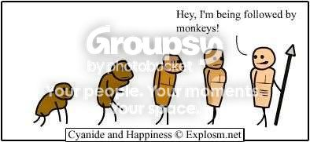
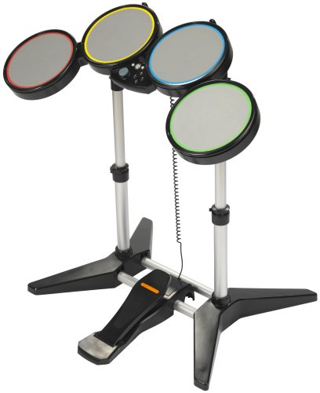
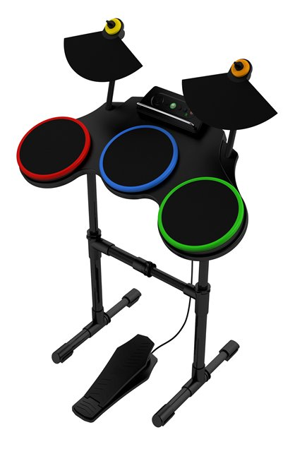

#37831 19 2004-11-25T12:53:36Z wedgie heres my demo, thanks maximo

Attachment (lost): post-21-1101387216.txt
#38039 27 2004-11-26T22:52:41Z wedgie oh sorry, my bad

. i diddent know that was a rule, im not going to change it or submit another one though. just a demo for people to see. i mean i diddent even know this competition existed until maximo said on the demo's map.
#38442 32 2004-11-29T00:22:50Z wedgie Thank you for showing me the light maximo. my life is now complete.

#44381 9 2005-01-04T17:59:46Z wedgie yeah ive done 1-6 too and did have the fastest records untill everyone came and beat them, ive managed to tie some of the fastest records with tktktk but the rest can have em lol. #7 is insane though. i wonder who will be the first to complete the whole series?
#44382 67 2005-01-04T18:26:46Z wedgie woohoo, i got 1st in the red and blue writing for style and entertainment.

#44435 11 2005-01-04T23:22:50Z wedgie WOOOOHOOOOOO
i've completed the series!!
7 being the hardest obviously. taking me ages to complete.

ive demo'd each map on the actual levels.
do i get a prize for being the first?
#44512 16 2005-01-05T17:46:04Z wedgie lol, the only reason i exploited that bug was because going up past the rocket was so hard to do that it seemed almost inpossible. i'll have a go at doing it the right way but surely i get a little credit for being first lol.
i also managed to get #1, #2 and #3 back.
::EDIT:: by almost impossible i was thinking about the quick way, the 'proper' way is much easier. after only a few tries i got the switch the 'proper' way, but im not going to spend the same ammount of time i did on it last time doing it again. maybe another day.
#44728 18 2005-01-06T21:47:25Z wedgie oh dang, sorry tktktk, i just beat it again before reading this. oh sorry about that
")

anyway, why should you have the fastest time for that level, why should i have to let you be first, again?

#44730 2 2005-01-06T22:03:11Z wedgie wow another series, WooT
ive done 2.1 and 2.2 ao far, i can do 2.3 but i havent done it yet, the others though

. your evil

#44932 27 2005-01-08T12:21:32Z wedgie wow i also never knew that trick had been around for so long. that map is ainchent. i had know the 'move' for a fair time but i assumed people knew about it, untill tktktk saw my demo in 'intact' that is.
ive completed every simple challenge except #4, ill have a go at it later.
P.S. trib4lmaniac, post a demo for #4 to prove you actually completed it.
#45530 31 2005-01-11T19:00:01Z wedgie wooow, calm down dude, i just wanted to see a demo of you completing it, im not saying that i dont think you beat it.
but then again, getting all defensive and all to cover up not doing it
only joking, i believe you completed it i just wanted to
see you complete it ok?
EDIT: just completed #4 in about 20 minutes and demo'd

EDIT2: tktktk do i get a prize for being the first to complete and demo all 11 challenges????
#45981 38 2005-01-13T18:55:20Z wedgie cakewalk? do that mean i get some cake?
#46244 2 2005-01-15T20:00:53Z wedgie sounds good, what about using all of those ideas? a set tileset with enimies and possibly gold and a limited number of objects?
#46246 3 2005-01-15T20:12:00Z wedgie really good idea, but with the enimies make this well too hard, i tried loads of times but with enimies is just too hard. a simple level with jumps and gaps and stuff would be better i think.
#49506 41 2005-02-06T21:05:05Z wedgie ha done that one too, so now do i get a prize?
#51511 45 2005-02-24T16:04:25Z wedgie ok so not even a dedication map or anything, or even a well deserved 'well done'?
#56525 57 2005-03-27T21:35:35Z wedgie will miss you dude, you've been very inspirational.
in reply to the idea of voting every one of maximo's maps i have been through them all myself and voted on the unvoted ones and i dont think that there is a single map that requires any more that
2 more votes to get a rating. so we only need 2 more people to go through and vote......

#56528 51 2005-03-27T21:50:34Z wedgie another thing trib4lmaniac is that in your sig you have first to complete all of the challenges, but i was the first one to demo them all, proving that i had completed all levels first

.i dont want a prize anyway i was only joking around, just wanted a little recognition but it doesent matter lol

another thing though maestro, how on earth is that spam? i was playing around....
#56531 7 2005-03-27T21:57:38Z wedgie Lol the maps you've linked have been deleted, he must have seen them and got rid of them before anyone else could see them.
#56537 10 2005-03-27T23:22:37Z wedgie oo man this took me sooooo long, but ive made a complete demo without ANY gold. woot
EDIT:: god damn it i forgot about the NaN so my demo is done including the nan ok?
EDIT::now its a
full NO gold demo without the NaN, the proper way
Attachment (lost): post-21-1111968083.txt
#56551 61 2005-03-28T00:19:34Z wedgie i know i dont use the forums much, but trib4lmaniac, you joined about a week before me and you have about 950 posts more than me lol...
#56741 53 2005-03-28T18:20:15Z wedgie yeah well you say that you did them first but you cant prove that, we can only take your word for it, whereas i was first to demo them all, prooving that i did them first.
#56745 60 2005-03-28T18:40:17Z wedgie AWESOME!!!! 8 out of the top 10 maps are maximo's lol, we have to rate all of his maps though....
#56972 54 2005-03-29T15:46:16Z wedgie lol sorry that ^^^^^ was me, he he.
#56975 25 2005-03-29T15:56:54Z wedgie this level is hard, dont get me wrong, but for the last level in the game i feel that it is easier than some of the other levels earlier in the game.
#56981 19 2005-03-29T17:07:35Z wedgie hey nevermore, assuming this demo is ok i completed the level, under 600 frames, had all 4 drones firing together and got
no gold.

lancer
your second challenge is tough, that will take more time....
Attachment (lost): post-21-1112116055.txt
#57175 25 2005-03-30T22:16:11Z wedgie NEVERMORE, unless i am
really missing something, im pretty sure i dont touch a single piece of gold in that demo.

#57183 28 2005-03-30T23:00:44Z wedgie YES!!! i finally completed 2, i got 5 of the 8 gold though lol but at least i completed it. this is the only level ever that has took me more than a day to complete.
i
could complete the level only getting the gold on the top hanging L, but like i said its so hard im pleased to just complete it. woot
Attachment (lost): post-21-1112223644.txt
#57187 29 2005-03-30T23:36:21Z wedgie ok i think its the bracket at the end of the data thats messing it up, i took out that last bracket and the gold showed up, my bad sorry........
so heres another demo, same as before, all 4 lazers, no gold and its also faster.
Attachment (lost): post-21-1112225781.txt
#57189 55 2005-03-30T23:40:56Z wedgie yeah well i do believe you did it, and i dont mean to split hairs, but at the end of the day
i was the first person to demo all of the challenges, so whats in your sig isn't technically correct. sorry for being an ass but it just fills me with rage seeing that in your sig...

#57191 9 2005-03-30T23:44:49Z wedgie i agree, his mapmaking really has improved a lot over the last week or 2.
**also applauds**
#57193 13 2005-03-30T23:51:31Z wedgie lmao Nsomnia, thats classic. i usually go to bed between 11:30 and 1, usually more towards and beyond the later time when addicted to a tricky numa level. last nights keep-me-awaker was lancer's small challenge 2 map lol.
sometimes i really hate numa


#57195 7 2005-03-30T23:55:15Z wedgie lmao syntax, and i was thinking more like AO
Hell.
sorry but that really does make me laugh lol, i gots a 2 meg broadband connection from blueyonder (best isp ever!) so that size would be done in, oh lets say.....seconds? lol
allthough the speed does vary a lot, i have fast and slightly less fast days.
EDIT: out of pure boredom i dicided to download n (even though ive allready got it) to see how long, it did it in 12 seconds lol
#57200 78 2005-03-31T00:04:22Z wedgie lol speak for yourself nevermore. on that one day trib4lmaniac, you made 20% of the total posts, so 1 in every 5 posts were yours lol.
the comparison to me was a joke anyway because i came on here to post a demo for nedcon6 (i think?
) and havent really been on since then, but im back now and i will be a lot more active from now on.
#57201 9 2005-03-31T00:06:25Z wedgie yeah lol sweet, like i said though it varies. i do get some killer speeds from time to time though.
#57207 55 2005-03-31T00:48:58Z wedgie HAPPY BIRTHDAY LUCIDIUM!!!!
#57384 65 2005-03-31T20:03:10Z wedgie lmao, the top 31 maps are all maximo's, oh how well deserved
#57390 59 2005-03-31T20:09:44Z wedgie wow what an old git lol
#57395 59 2005-03-31T20:18:18Z wedgie thank you, i can now sleep at night....
#57450 47 2005-03-31T23:38:46Z wedgie for me the game is crashing after 82-2, this looks like loudog is the only person to get past this.
so far ive done all of the 60;s and starting the 80's now
#58411 5 2005-04-04T23:17:19Z wedgie #58423 7 2005-04-04T23:49:56Z wedgie 88! nevermore, thats my level lol, and my episode. i just went back and added another 10 or so seconds to 88-3 to keep you away, lets just hope it does.
#58716 18 2005-04-06T17:19:52Z wedgie i agree with brickman. having mother thumping impossible as the last level is the perfect difficulty for the last level and would have a much sweeter reward to beating this if it was the last level in the game. mount doom is a very popular level, but i dont think just because its popular and well appreciated is a good enough reason to be the last level in the game. the last level should be hard, just like mother thumping impossible is.
i spent by far the longest trying to complete mother thwumping impossible and i was
very pleased to beat it, but then it seemed like episode 89 was a step down in difficulty from the previous episode. beating episode 88 felt like the the end of the game and then 89 seemed like some levels just added on, it disruped the flow of the game imo.
#58857 9 2005-04-07T17:05:02Z wedgie erm, having a high kill count isnt good. if you die lots, then you lack the skill to stay alive more, right? think about it...
#59066 29 2005-04-08T22:08:17Z wedgie yeah 3 days on level 88-4 mother thumping impossible, damn that level should so be 89-4, i mean after you eventually beat it you dont want to do another episode lol.
#59073 22 2005-04-08T22:50:51Z wedgie sorry brickman i must have misunderstood what you said, now i dissagree with you.
#59074 27 2005-04-08T23:04:35Z wedgie ok heres mine anyway, ive completed n_v14a1 and have been playing for a fairly long time.
myself 1884
mine
1910 
floor guard 346
gauss 513
homing launcher 521
chaingun drone 129
lazer drone 312
zap drone 1127
thwump 346
total =
6388
not that hight considering i have completed the newest version, i also hold about 14
0th places and having been playing quite long, not that im saying im a good player though

secondly, guys you really took my point in the wrong way. i know more kills is more dedication and could mean more playing, but what i mean is that you will be able to beat a level with less deaths if you are a good player. if you are not so good at N, then you would die more, yeah? it was also just a comment too, you guys shouldn't take things so seriously
#59076 5 2005-04-08T23:18:30Z wedgie i really hated this level untill i beat it, i think i did get 0th place too i think but now ive slipped to 2nd **goes to play 74-4**
#59100 6 2005-04-09T00:26:13Z wedgie #59674 2 2005-04-11T21:26:47Z wedgie huh?
#59691 4 2005-04-11T22:42:31Z wedgie was it just me or was anyone else quite dissapointed by the 'secret mode'?
#59692 15 2005-04-11T22:48:20Z wedgie lol yeah it may be common knowledge but its still fun to play around with though lol. i didn't know you could controll the invisible ninja after pressing enter though.
#59917 4 2005-04-13T18:02:28Z wedgie yeah this is a great level, i do think its easier going fast than it is slow.
#59918 45 2005-04-13T18:09:04Z wedgie i agree with nevermore, back when i first did it it took me ages to do, good few hours, now i just went back and did it second try. it really is amazing how much you improve.
#59938 50 2005-04-13T21:57:28Z wedgie i dont think 24-2 isnt that bad, definatly not as hard as 24-4 was anyway.
#59940 15 2005-04-13T22:00:00Z wedgie wow, i really didn't think of using the secret mode for DDA's, i just saw it and though "oh, is that it?"
#59941 14 2005-04-13T22:06:46Z wedgie it was strange seing some maps in 1.4 by people that i've never heard of before, but i can honestly say having lots of really popular maps by all the popular people would have got boring. i do think plue would have fit in nicely, but then if that was let in then it would just start "well if that was in it then why isn't this (insert another map name) map in it?"
#59945 144 2005-04-13T22:56:18Z wedgie erm, i have
15 0th places at the moment, the spreadsheet doesn't show this
EDIT: just got another 2, now got 15...
#59947 3 2005-04-13T23:41:05Z wedgie i've completed that level once, i intend it to keep it that way.
#59948 7 2005-04-13T23:43:24Z wedgie damn you heartview, ive want that 0th place. is it only me and you going for that level?
#59949 5 2005-04-13T23:44:49Z wedgie currently 14
#59950 4 2005-04-13T23:49:02Z wedgie **cough**
90.825
i love this level, took me forever to get this though.
#60006 6 2005-04-14T16:33:40Z wedgie Also, I don't understand the lack of competition in 89th episode. 13 ppl have reached it and for maybe a week no one dares to get a 0th!
maybe its because were not all as good as you Knu,
i have 89-3, i just dont want to go for the others, yet...
EDIT: i now have
89-0,1,2 and 3, i have given up on mount doom for the moment.
#60007 3 2005-04-14T16:47:15Z wedgie yeah got 1st but can get 0th yet. just noticed the name too, the mooney suzuki, what a band \m/
#60386 5 2005-04-17T15:17:20Z wedgie wow, toad's 26-1 score, the block not moving lol
#60403 7 2005-04-17T17:11:00Z wedgie #60408 9 2005-04-17T18:12:07Z wedgie i love toad's 26-1 highscore, he wallkicks a bounceblock so softly that the block doesn't move.
awesome
#60411 7 2005-04-17T18:33:25Z wedgie its weird, as much as i really hate hidden things with the greatest passion, 79-2 seems like more of a challenge that an annoyance.
p.s. i also just got the 0th place on it lol
#60412 29 2005-04-17T18:40:26Z wedgie ooo far too many to list
#60418 5 2005-04-17T19:04:32Z wedgie im beginning to hate this level now lol, its really hard to get a faster run.

#60429 8 2005-04-17T20:21:23Z wedgie very nice run dude
#60456 10 2005-04-17T23:26:08Z wedgie ha
, i just took back 89-1,2 and 3, but i've still not touched 89-4.
i tried to get back 88-3 but i cant do it yet.
#60565 7 2005-04-18T17:10:13Z wedgie is it just me or did you forget
maximo? he would have got my vote
#60567 37 2005-04-18T17:12:38Z wedgie no, swap them. you say you feel amazing that you beat 88-4, so would that not be a lot sweeter if it was the end of the game?
#60604 54 2005-04-18T22:46:08Z wedgie argh some horrible cluttered desktops there, i have a fair bit on mine but its not cluttered
.
heres my
desktop
#60606 3 2005-04-18T23:17:21Z wedgie lol its funny how the competition turned out, o well i win
#60607 13 2005-04-18T23:20:19Z wedgie i dissagree with the memorizing of the objects in 79-2. its just bouce pads in the side ones pointing outwards and mines in the middle, not too hard eh?
#60609 12 2005-04-18T23:23:00Z wedgie true, its hard to give one favourite map-maker though. imo, all mapmakers are good at different types of maps. my vote was for tktktk anyway
#60619 42 2005-04-18T23:51:19Z wedgie i just see episode 89 as a sep down from 88-4.
#60622 267 2005-04-18T23:58:51Z wedgie granted, but everyone becomes soo incredibly smart that you feel like a dumbass.
i wish i could be bothered to get off my computer and go to bed.
#60623 17 2005-04-19T00:01:33Z wedgie are they some obscure american band because i dont have a clue what your talking about?
#60625 14 2005-04-19T00:07:08Z wedgie woow, in my opinion you should never speak to your parents that way, without them you wouldnt be here. you need to learn to respect them. in turn they should respect you more back and they are only looking out for whats best for you.
p.s. its spelt CAPOEIRA
#61018 3 2005-04-20T22:13:48Z wedgie woot i still keep the 0th place. my run aimed to get most gold but it would be very tricky to do that run and get all gold, all gold is easy yeah but to get a good time too is harder.
#61019 8 2005-04-20T22:18:40Z wedgie lmao Daddaluma that thread is pretty funny to read through.
#61020 146 2005-04-20T22:59:03Z wedgie blizzy, 5/10, i dont like seing N get hurt
#63108 291 2005-05-01T15:13:51Z wedgie granted, but completing a game you allready have 5 times before becomes boring and you then become sick of the game.
i wish i didn't make this post
#63110 45 2005-05-01T15:16:29Z wedgie my name has
0 results

and by the way im talking about my real name and not my username
#63114 34 2005-05-01T15:22:09Z wedgie a few of my maps got rubbish ratings, mainly when they were high rated and then people like neverender and fallendreams came and rated them down
they are good maps too. i used to be in the top 5 rated authors on numa, now im about 30th or something stupid.

#63115 15 2005-05-01T15:27:13Z wedgie indeed. too bad we cant actually look at any high scores at the moment though
#63123 5 2005-05-01T16:05:11Z wedgie from just reading through that thread i did get the impression that you were in the wrong. i couldnt tell that you were joking, if you were joking, so it just seemed un-necessary for you to say what you did. the rules were put in place by a higher authrity, so we kindly ablige by them and go about out way
#63124 293 2005-05-01T16:08:11Z wedgie no no no, my wish was to not post, so not posting grants my wish perfectly instead of corrupting it....
#63130 9 2005-05-01T16:41:29Z wedgie yeah i heard that too lol.
your eyeballs are the only parts of your body that stay the same size for your whole life.
i love facts too but i cant think of any more at the moment lol
#63134 137 2005-05-01T17:09:01Z wedgie wow its really amazing how people look absolutely nothing like how i picture them looking
heres a few pictures of me anyway, be nice
 me
and me again
me
and me again#63147 139 2005-05-01T17:54:27Z wedgie no its just now you make up how you think someone looks based on how they act and talk lol, then they look nthing like that in real life. u look very different to what i pictured you trib
#63362 143 2005-05-02T13:00:12Z wedgie lmao trib4lmaniac that picture is so lifelike its amazing. i pictured you looking a bit rougher and less....mature lol
i'd also like to add that the only people who did look like how are i imagined them are Little Viking and Raigan, weird
#63363 309 2005-05-02T13:10:45Z wedgie granted, but having so many
shurikens turns you into a maniac and you end up going on a killing spree thinking that your a ninja, but you get caught and locked up with 4 life sentences.
i wish i wasnt so horribly addicted to playing N and was able to actually do some coursework.
#63366 71 2005-05-02T13:12:56Z wedgie pariah, dude! please send it me tooooo
#63368 11 2005-05-02T13:22:36Z wedgie #63371 4 2005-05-02T13:29:19Z wedgie wooooot!! lol i have a copy of the first episode 'north by north quahog' (sp?) which i had about 2 weeks ago lol.
i though it was a really good episode, ive watched it aout 4-5 times so far. im a big fan of the prog and i was wellie pleased to see it back on tv lol.
rock on family guy
#63372 2 2005-05-02T13:55:15Z wedgie erm no sorry, i dont remember what all the scores are lol
#63374 68 2005-05-02T14:16:48Z wedgie lol the halo ones easily the bestest
#63376 21 2005-05-02T15:05:17Z wedgie woot just completed Chaingun Frenzy
#63392 311 2005-05-02T16:46:35Z wedgie granted, you inherit (sp?) some money and buy a car, but then you crash the car and die

i wish i had some magic beans
#63397 4 2005-05-02T17:53:42Z wedgie erm no, i just had an attempt at beating yours but i couldnt, didntn know of a good enough route
#63438 6 2005-05-02T23:10:08Z wedgie ahem...
did beat the highscore,
i just beat it
#63440 7 2005-05-02T23:16:04Z wedgie well i have to agree, the older episodes do rock, its just that this is a new episode that also rocks. the older ones are still great and are the classics, but the new is also good. all family guy rocks, new or old
")
#63444 74 2005-05-02T23:23:24Z wedgie yeah the topic wasnt exatly old and wasnt that far down the page. but i did however notice the age of the thread
after posting, i then though oo lets hope i dont get told off again for bringing up an 'ainchent' topic with a 'worthless' post.
to put it simply, you splitting hairs, making a mountain out of a mole hill, making a big deal over nothing.
i also didnt 'look up' the topic, i was just browsing through and this was only a bit down the main page. i understand in the past ive dug up stuff thats like about 3 months old, for that i agree, my bad, sorry. but for this, 2 weeks old and all i gave was my opinion.
sorry to have upset you so greatly
#63852 320 2005-05-05T19:45:24Z wedgie ok you remember to log in but this forum is so adictive that you never leave your computer and end up starving to death.
i wish iangb wouldn't answer his own wishes
#63863 15 2005-05-05T22:22:26Z wedgie i'd say the red is more of a maroon, when u said red i was thinking i had maybe missed something and not got the red lol.
#63864 23 2005-05-05T22:24:31Z wedgie just beating some of your maps is hard enough without going for speed too lol.
#64293 151 2005-05-08T12:00:43Z wedgie lol at least that picture doesnt have his brother in it. man that guy looks scary. i actually had trouble looking at it for more than a few seconds at a time, really strage looking guy lol
#64295 14 2005-05-08T12:04:50Z wedgie indeed, but its hard to tell if someones joking or not just from 1 smiley lol
#64297 2 2005-05-08T12:11:12Z wedgie wow some people are impatient. 1.4 was only released like a week ago lol
#64300 17 2005-05-08T12:20:47Z wedgie lol it got guitar in 25 goes, and i meant acoustic..
but the contradictions were stupid lol
You were thinking of a guitar.
Is it straight? You said Partly, I say No. the neck is straight
Do you clean it regularly? You said Sometimes, I say Doubtful.
Is it round? You said Partly, I say No. the body is rounded slightly
Does it weigh more than a duck? You said Unknown, I say Yes.
Is it worth a lot of money? You said Depends, I say Yes. not allways, i bought an acoustic for 20 once
but still very interesting
lol it couldnt guess a gun
You were thinking of a gun.
Does it deal with imagination? You said Yes, I say No.
Is it fragile? You said Sometimes, I say No.
Is it worth a lot of money? You said Depends, I say Yes.
Is it flat? You said Partly, I say No.
Can you use it at school? You said Yes, I say No.
Would you find it in an office? You said Maybe, I say No.
Can you play games with it? You said Yes, I say No.Would you use it daily? You said Maybe, I say No.
Do most people use this daily? You said Maybe, I say No
#64311 5 2005-05-08T13:19:20Z wedgie ah my apologies, thought 1.5 was a bit off for the moment. woot for final 1.4 version though
#64313 338 2005-05-08T13:29:31Z wedgie granetd, but you you only get made once a year on pancake day and then get eaten.
i wish the world wasn't such an evil place
#64323 4 2005-05-08T14:02:01Z wedgie i put other, i find dieing at simple and easy parts of the levels most annoying. just stupid errors. also when the jump button 'doesn't work' is very annoying. then i'd say stupid level design.
#64328 7 2005-05-08T14:18:27Z wedgie #65493 161 2005-05-13T23:11:59Z wedgie dont mean to sound like an echo but yeah pretty much how i pictured him too lol
#65495 3 2005-05-13T23:17:35Z wedgie **shudder**
painfull memories make me not want to play this level again lol, i think i will just forget i even saw this topic.
EDIT: dont, just dont say anything about any
ainchent revivals, i know, i know.
Mhm. Another clue.
#Nottherabbithole#67178 86 2005-05-16T17:17:18Z wedgie meh i would be part of the FNN.....but, im not a nerd and i have a life lol
you know im only joking
#67200 5 2005-05-16T19:59:05Z wedgie and i just took all of them, 70-4, 60-3 and 61-1
broke 100 on 70-4 too
#67201 67 2005-05-16T20:02:39Z wedgie check out my 0th run on 64-1. i like the pass through the drones lol
#67933 65 2005-05-19T15:19:16Z wedgie ive completed the 90th column now so thats the whole game done, but i have to say the super_duper_top_secret thing after the 90th column seemed a bit of a letdown unless something hasnt come up properly. could someone please PM me to tell me if what they have unlocked is the same as what i have because the secret didnt seem as good as it should be. thanks
EDIT:: i have it now, it turns out that i hadn't completed the last 2 levels of episode 19 lol, weird. but anyways yeah cool stuff
#67934 7 2005-05-19T15:30:09Z wedgie lol one thing i noticed with what you said is that you say
your not bothered by these advatars, but say that some others might. but surely if these other people were offended then it would be these other people that would make a topic about them. yeah?
#67936 74 2005-05-19T15:45:52Z wedgie very nice afterthought, very cheeky ending lol.
#67955 67 2005-05-19T17:36:28Z wedgie Eyes Closed: wedgie123
Nose: wwweedgie123
Ear : rfecghb (i went easy this time as last time i tried this i loaded IE help and closed the reply window)
elbow: wedgi3e123
mouth (tongue): wedgie123 mmmm
chin: e3dsexgtfijkedsq2
#68259 7 2005-05-21T10:00:29Z wedgie I agree with all of you on this. thats why i have quit numa too lol. i used to go on it all the time but ive just given up on it now. too much spam and idiots.
#68260 13 2005-05-21T10:06:02Z wedgie yeah go through all of the last colum episodes (09, 19, 29...etc) and look at your personal bests. if you dont have any personal bests then you need to complete that episode. this is what i did when the final secret wasnt showing up and it worked.
#68270 25 2005-05-21T11:00:23Z wedgie woot i was the first lol
#68519 32 2005-05-22T16:09:48Z wedgie why not thrown a load of names into a poll to give a better idea of which people want as a numa mod?
#68617 32 2005-05-22T18:18:18Z wedgie lol i havn't seen any of the star wars films or anything, ever. untill last night when i watched revenge of the sith because my girlfriend sorta made me. it was supprisingly good considering ive never watched any of them before, good film, allthough quite long. but good
#68663 9 2005-05-22T19:01:58Z wedgie yeah me too, shortcuts rock, but yeah fullscreen would really really kick ass.
#68682 19 2005-05-22T19:30:15Z wedgie yeah its a hard level but once i had a route down i could do it pretty easily. not that fast though of course
#68684 8 2005-05-22T19:37:33Z wedgie #68902 11 2005-05-23T13:11:33Z wedgie and yes i did mean to say immense
immense adj.
1.Extremely large; huge.
2.Of boundless or immeasurable size or extent.
3.Informal. Surpassingly good; excellent.
#68954 3 2005-05-23T18:03:40Z wedgie one bad thing though would be that people would just make a pointless post to vote on a map, meaning that there would be lots of spam in comments if you know what i mean.
#68956 2 2005-05-23T18:07:59Z wedgie huh? im sure thats the same way its been done before....
#69026 179 2005-05-23T22:28:12Z wedgie numa
#69028 4 2005-05-23T22:30:42Z wedgie no it just makes the old route an slightly edited or alternative route.
#69363 7 2005-05-25T09:33:36Z wedgie lol how can you manage 1.8 a day. did you count up how many times in a week and take an average or something, or just brush an 8th of your teeth once a day?
#69366 11 2005-05-25T10:38:06Z wedgie yesh just carved my name into the leaderboard for 66-3
#69385 101 2005-05-25T13:07:38Z wedgie 126
127
lol nevermore now i see why you have such a high post count, youve posted loads in this
#69386 201 2005-05-25T13:15:02Z wedgie Baum
#69388 3 2005-05-25T13:21:01Z wedgie to high jump of a bounceblock just land on it with a decent ammount of height and as you touch the block keep moving left to right, or just from one side to the other. but basically just keep moving. this makes the block go down more, then as the block stops moving downwards and starts moving up just double tap the jump button.
have a look at
tktktk's simple challenge #10 to see this move used.
#69403 184 2005-05-25T15:41:59Z wedgie i have 16 0th places in 1.4 (60,70,80,90)
#69427 6 2005-05-25T16:58:46Z wedgie maximo, hands down
#69429 106 2005-05-25T17:03:36Z wedgie wow seriously? sorry i didn't even know
so how do you explain
this? #69430 186 2005-05-25T17:07:35Z wedgie yes i did and you dont know just
how good it felt.
was funny too seeing as how you and nevermore were battling for it and i just come alond a take it
ha ha ha.
but seriously i spent ages on it
#69431 204 2005-05-25T17:10:56Z wedgie academician
#69706 228 2005-05-26T17:28:27Z wedgie newton
#69717 192 2005-05-26T18:34:21Z wedgie ha ha now its mine too
#69739 195 2005-05-26T21:38:20Z wedgie o you come soo close to that mine, nice work
#69740 18 2005-05-26T21:43:17Z wedgie yeah i think Guest_Adam77 got right on the money. thats what i thought you meant too. a way to see an instant replay of the run you just did instead of just saving your personal bests. if it just come up in the text box like in the editor or something like that.
#69794 3 2005-05-26T23:38:26Z wedgie #69799 10 2005-05-26T23:47:08Z wedgie i can see where your comming from but one thing i think about the current arrangement is that highscores and configure are together. which, quite simply is the way i like it. i just think these 2 things should be together.
#69800 237 2005-05-26T23:49:03Z wedgie die
i can see a similar chain of thought here
#69801 32 2005-05-26T23:51:19Z wedgie i still think it should be
highscore grandmaster though
#69805 14 2005-05-27T00:08:20Z wedgie wheres your sense of fun JF, would you rather just sit around and play boring games like N
#69815 15 2005-05-27T00:20:19Z wedgie #69895 23 2005-05-27T11:09:51Z wedgie oo i hate that level
#69897 7 2005-05-27T11:15:02Z wedgie ah that level was truly hard but now i just love it, its such a great level now that i am better than when i beat it first time lol.
#69899 5 2005-05-27T11:16:36Z wedgie yay all the way. he deserves it
#69901 14 2005-05-27T11:18:37Z wedgie lol the boss has spoken
he's probably just too lazy to do it lol
#69902 13 2005-05-27T11:22:39Z wedgie lol you must be either very unexperienced with ned or just a little slow
i just really cant understand why you cant do this
#69904 7 2005-05-27T11:32:16Z wedgie yeah sorry but i gotta argee with what everyone else has said here. most of the questions dont really have that much of a purpose and are just generally wrong in my opinion.
the one that really seemed wrong was the snap question. you have put that answering 1/4 snap would get you 2 points. why? if you use 1/4 snap are your maps better? hell no. doesent matter what you use unless you dont go ott with clutters and no spap. the main anger was why this answer would give you more points. at very most it should give the same as 1/2 really.
ok im done on that, sorry
#70051 28 2005-05-27T21:04:35Z wedgie yeah i have to say episode scores are much harder to get because you may finish a level but a few seconds slower than the top score for that level. but as you cant re-run that level (unless its 0) so you have to make fastest runs straight off.
#70062 31 2005-05-27T21:45:49Z wedgie no glenno im talking about very small ammounts of time. so little that you cant tell what you final time will be untill you reach the exit. before its too late if your time is too slow
#70064 10 2005-05-27T21:52:49Z wedgie i have to say that what sendy just quoted is slightly wrong imo. i think who makes a map is a fairly important thing about a map. for example if i was browsing numa and i saw a new map by a maximo, or or any of the other greats, then i would definatly go and play it just because of the reputation.
sorry for being really negative and dissagreeing (sp?) with the majority of what you have suggested
lets just call it constructive criticism. after all i did give reasons to my objections
EDIT: im not saying sendy is wrong, i was talking about what sendy quoted. i love sendy really

#70066 10 2005-05-27T21:57:13Z wedgie im sure it would mean messing up every single highscore too, right?
bad idea
#70068 12 2005-05-27T22:00:15Z wedgie ahh true true. but i'd say because of the ammount of maps on numa, going through them all tends to take a long time so looking at maps by people you know are good mapmakers is usually the thing i'd do. when i did love numa though. i used to spend ages on it going through almost all of the maps and playing, demoing and commenting on them. untill it got spammed up and full of idiots.
#70071 42 2005-05-27T22:06:22Z wedgie lmao trib4lmaniac you original post you said a 7. lmao
even saying your 9 now though. you gotta be kidding. imo the scale should be 1,2,3,4,5,6,7,8,9,10,trib4lmaniac.
nuff said
#70073 6 2005-05-27T22:11:50Z wedgie i think it would be cool to see different ways of dying. like turning into a poof of smoke or dust when he gets shot or blown up.
#70553 11 2005-05-29T15:37:00Z wedgie indeed lol. why not try going out to a few bars or something like that and get some real interaction going on

#70557 10 2005-05-29T15:47:55Z wedgie sad but true pariah. the youth of today are just out of control.

bring back the cane i say. kids just have no respect, for anything or anyone
#70560 14 2005-05-29T15:52:09Z wedgie you mean you like spamming?

#70564 11 2005-05-29T16:00:49Z wedgie yeah i have the sounds off too. they can get annoying and listening to music is just much better.
#70858 17 2005-05-30T18:57:21Z wedgie this does sound VERY cool and i would love to see it actually happen. im liking sweeps styling more though
#70861 17 2005-05-30T19:03:31Z wedgie true. i have my a-level exams starting in 2 weeks so i think i should start revising. maybe tomorrow
i seem to not learn from my mistakes though lol. i think the only way i would learn is if someone was to repeatedly hit me with a stick untill i started revising. its just soooooo much effort though. but yeah i will
#70866 15 2005-05-30T19:15:16Z wedgie well you obviously didn't need our help so why the hell bother us?
#70870 22 2005-05-30T19:21:00Z wedgie yeah but due to how the ball would be hit, it would be quite unlikely it would land on it imo. but if you did have a pointy net then i would put a 1 block thick wall with a Q and a W number 2 tiles so that the net would be symmetrical. thinking about it more this would make it more fair because the one person would have a vertical net but the others would be slanted at the top, giving that person a very very small advantage if you know what i mean.
#70872 2 2005-05-30T19:24:21Z wedgie #70879 10 2005-05-30T19:32:09Z wedgie i was a regular on urbanfreeflow forums which is a freerunning (parkour) site. one of the topics was 'Check out this cool freerunning game' from then i played it and thought it was ok. i dont think i played it lots after seeing it that first time. it was another ocasion that i properly got hooked on it, allthough i cant actually remember when or why. but yeah here i am still, still hooked. why? i dunno

#70882 2 2005-05-30T19:36:49Z wedgie why exactly do you want to be able to pause it?
#70885 17 2005-05-30T19:42:25Z wedgie lol i have to agree i dont know how to do that either, or the really small text. pm anyone?
#70888 5 2005-05-30T19:45:34Z wedgie yeah i suppose. i can see what you mean, but a replay isnt that long in the first place and wont take that long to play again if you get distracted. it would be cool to have frame by frame on game replays though.
#70890 19 2005-05-30T19:49:10Z wedgie lmao we you are so stupid
#70898 4 2005-05-30T19:53:59Z wedgie lmao Eldrial thats awesome
#70918 188 2005-05-30T20:13:01Z wedgie i thought i should post another picture too because my other 2 were not too good. well the b&w one was ok but the other was a messabout closeup.
this one i took this morning just before work. im wearing my workclothes (go woolworths
)
here it is
edit: yeah its a bit blurred too sorry
#70936 50 2005-05-30T20:35:19Z wedgie this is a picture i did a couple of years ago for part of my gcse project. its a copy of M. C. Escher's Hand with Reflecting Sphere.
i know the right hand side of the globe is a little sketchy, the scanner also takes some of its glory.
ah well
i would put some more of my work up but its being marked at the mo
Attachment (lost): post-20-1117485319.jpg
#70939 41 2005-05-30T20:40:26Z wedgie what about a block made out of the 8 (me think) tiles, the quarter circle ones. use those to make a circle, would be fairly big but that could add to the style and fun. it also keeps the simple N styling and same colours.
#70944 16 2005-05-30T20:44:14Z wedgie lol i have 2 really good mates who also play n and are addicted but not quite as patheticly as i am. which also explains the difference in skill levels
#70952 52 2005-05-30T20:49:28Z wedgie oh cheers glenno
#70959 256 2005-05-30T20:59:18Z wedgie tablespoonful
#70962 11 2005-05-30T21:10:24Z wedgie they do say that computers will only ever do what the user tells it to do. so therefore any problems that occur are the users fault.
#70963 51 2005-05-30T21:14:13Z wedgie lol will sweep ever be happy?
#70965 6 2005-05-30T21:20:11Z wedgie wtf? Brett_Sully_, 88-2 is 'platforms' by heartview and not 'longest'. am i right?
#71035 57 2005-05-30T22:42:32Z wedgie lol thanks guys. i will put some of my schoolwork up but its being marked so i havent got it. but as soon as i do i shall put it up for you to enjoy.
thanks again for the comments.
#71039 9 2005-05-30T22:46:25Z wedgie lol yeah thats right dude. the 'am i right?' thing is just something me and my mates say just joking around lol. the 0th score on that level too kicks ass. but i have to say i know exactly how i could beat it. but im not trying yet because it will take me a long time lol. but soon...
#71043 16 2005-05-30T22:50:51Z wedgie is it just me or is there no obvious YES answer in the poll?
#71049 8 2005-05-30T22:57:41Z wedgie lol that was kinda funny.
#71062 15 2005-05-30T23:16:56Z wedgie lol wow i didnt even notice that. i only thought it was a week or so, i need to read more carefully.
#71064 19 2005-05-30T23:25:34Z wedgie yeah it would be cool but i dont see the need for it. i mean its not like you need to know what your total kill count was on a regular basis, is it?
p.s its also quite funny watching you guys have little arguements. it is indeed true how tone is lost. he could have said the rude sarcasm in a friendly but sarcastic manner but how are you supposed to know. from a smiley perhaps?
edit:
holy crap, ive been on these boards for about 6 months and ive only just noticed the menu thing to jump to the other threads in the bottom right corner!
#71066 60 2005-05-30T23:33:08Z wedgie indeed. imo it should be in proportion to n, or bigger, for fun. also, what type of gravity would be applied to the ball. the same as n or something a bit lighter so that the ball would 'float' more?
#71069 19 2005-05-30T23:36:37Z wedgie yes
yes probably
yes definatly
yes more than likely
yes, one day
lol just kidding, but im thinking somewhere along the lines of yes
j/k
#71072 7 2005-05-30T23:40:24Z wedgie i thought bmp's weren't allowed trib4lmaniac?
#71081 209 2005-05-30T23:51:10Z wedgie lol when i saw sammages post i knew that would be picked up.
tribal lol
but seriously though, is it pronounced tribalmaniac, but spelt with a 4 instead of an a? because i always pronounce it trib 4 l maniac. lol
#71084 9 2005-05-30T23:56:17Z wedgie yeah i saw that i just though you said it as though you wernt sure if they are allowed or not, hence the question mark. which is why i said that i thought they wernt allowed.

#71086 21 2005-05-31T00:01:21Z wedgie huh? i looked at it from the point of view of the person asking the question. as in 'Do you ever plan to marry?', the person answering says no, reply from the person asking the question would be 'Your not!?' so the person asking the question is supprised your not getting married.
if you think of it the other way,
'Do you plan on ever marrying?'
yes
'Your not!?'
now that dont make no sense
i kinda see the way your thinking of it nevermore, which is that the person asks if you want to get married and you say 'Your not?!', questioning the person asking the question because its obvious that you want to get married and are shocked by the fact that someones asking you about something that you know your definatly going to do. but this is looking at it in a very strange way and also the bottom line is you cant answer a question with another question, which is what the first option does.
bam!

#71089 212 2005-05-31T00:09:41Z wedgie yeah i get ya. but its not your fault im a dumbass.
#71091 22 2005-05-31T00:12:21Z wedgie maximo brought me to the forums to get me to submit my demo into the ntts
#71095 215 2005-05-31T00:15:15Z wedgie Then he began his highscoring rampage, and I found out I was dead wrong.
lmao
#71120 9 2005-05-31T01:20:32Z wedgie lol you should just add it to your achievements. managed to get 2 different highscores on the same level
#71122 218 2005-05-31T01:22:42Z wedgie i dunno lol. i used to spend all my time on numa before switching over here and i remember on numa tktktk was just
the master. fastest on numa i thought
#71124 23 2005-05-31T01:24:40Z wedgie why are you powerful? because you have a higher post count than me? ive been here longer than you, so im right.
#71227 35 2005-05-31T08:50:33Z wedgie sorry but i still think your wrong. i thought about this and its just wrong. just no.
#71229 61 2005-05-31T08:53:36Z wedgie lol wow someone who scores a tree to be felled
its not the greatest achievement anyway lol. im like the only person who actually posted a demo for the lazer challenge lol.
#71230 10 2005-05-31T08:56:37Z wedgie Quote: Kablizzy, May 31 2005, 05:45 AM
"No Life? So what?"
lol thats awesome.
i wonder who voted no
j/k
#71233 27 2005-05-31T08:58:53Z wedgie nevermore how did you know that?
#71234 68 2005-05-31T09:37:25Z wedgie ok trib its now edited, allthough yours still isnt totally accurate. like i said, you cant prove you were the first to complete them all **coughnumber4cough**
#71235 264 2005-05-31T09:44:32Z wedgie english
#71236 29 2005-05-31T09:54:47Z wedgie lol very nice 'blizzy. very true
#71265 70 2005-05-31T15:39:00Z wedgie lol trib you can take the glory then, your are the better n player anyway. you deserve all the credit for your work. im still keeping in my sig that i was first to record demos for 1-12 though, as that is still correct. you cool with that?
#71267 5 2005-05-31T15:55:04Z wedgie yeah me too. i will be going to uni in september (hopefully) so if i do then playing will very dramatically decrease due to having or using a computer. so i dunno, but hopefully i will never stop playing
#71272 3 2005-05-31T16:27:12Z wedgie sendy, do you watch family guy?
#71273 73 2005-05-31T16:30:07Z wedgie lol why would i have "TriblAm4n4ic" in my sig?
#71274 19 2005-05-31T16:36:04Z wedgie wow that really is an achievement to bump up a year old topic. oo just wait to feel the wrath.....wait for the flaming you stupid fool, what was the point in bringing this up?
#71277 37 2005-05-31T16:38:45Z wedgie wow....erm... so... by uncomfortable do you mean scared?
#71278 75 2005-05-31T16:43:55Z wedgie o.. if you dont care whats in my sig, then why did u want me to change it? lol tis cool dude
#71279 5 2005-05-31T16:51:09Z wedgie yeah lol. peter, the main character buys a car which has a russian GPS satalite navigation thing in it. He's showing his neighbour the car and he says look its got this sat-nav, presses a button on it and it says, "In soviet russia, car drives you"
Then a bit later he's driving and an english voice says "Turn left at fork in road", then the says "In soveit russia, road forks you."
lmao classic

#71460 52 2005-06-01T13:09:28Z wedgie lmao Keron, when i said its wrong, just no, it was me still agrueing about there not being a clear 'yes' answer in the poll. i am 100% definatly getting married. theres just no question about it, i
will get married one day. also, about sex as were on the subject. i think about it all the time lol im just constantly horny. i also have a girlfriend too but im not going any further about that.
#71461 60 2005-06-01T13:13:31Z wedgie what about me?
#71462 63 2005-06-01T13:15:54Z wedgie yeah eschers drawings are just amazing
#71463 81 2005-06-01T13:22:24Z wedgie this series makes me happy in my pants
#71465 83 2005-06-01T13:26:59Z wedgie #71478 3 2005-06-01T14:50:55Z wedgie i like playing games, i like chatting on the forum, i like trying to beat peoples scores and i like a challenge. unfortunatly there wasnt an answer that covered all of that so i just put for the heck of it lol.
#71479 3 2005-06-01T14:54:06Z wedgie the psp has the umd (universal media disk (me thinks)) so could you not put n onto that and play it. alternatively theres the sony memory stick that could be used. but i suppose the main problem would be just what type of file it would have to be and stuff for it to play on it. would be soo sweet if it was possible though.
#71709 3 2005-06-02T10:34:59Z wedgie what exactly do you mean though? what do you want explaining?
#71710 65 2005-06-02T10:35:57Z wedgie omg that is soo cool
#71711 66 2005-06-02T10:42:44Z wedgie wow some of you guys
really have some bad experiences and stuff. i really sorry to hear about it too blue and kai.
this topic goes very deep lol.
#71713 49 2005-06-02T11:07:37Z wedgie ok so back to the introductions. im wedgie123. im 18, male, and live in the west midlands in england. im about 4'11" lol, i love all kinds of music and i play the piano, the guitar and the drums. i like to think i can breakdance a little, i do parkour, which is how i discovered N, it was in a topic on the parkour forum as a cool freerunning game. i like art, painting and drawing and stuff. im just finishing off year 13 at school and will be doing my exams shortly and then hopefully go to uni. i was almost a blackbelt in karate but couldnt actually take my blackbelt grading so i didnt get it.
i love computers and am terribly addicted to N and the forums. i am an easygoing guy who is really easy to get along with if you know me. i have the ability to be good at pretty much anything i want to lol and can pick up anything really easily and quickly, but i dont want to sound too big headed lol.
#71716 68 2005-06-02T11:13:12Z wedgie trust me, they will
#71717 221 2005-06-02T11:16:07Z wedgie i remember tktktk saying to me on numa that he thought i was pretty good and said that i should try for the main game highscores, so thats one of the reasons i switched over from the darkside.
#71725 86 2005-06-02T11:24:09Z wedgie yeah true trib, like my edited sig?
back on topic: i thought this level was really hard. mainly just getting the first double jump fast enough.
#71730 11 2005-06-02T11:30:04Z wedgie *sigh*
a DDA stands for
Dont
Do
Anything. its a map that plays itself basically. have a look at the DDA's on numa
here
also be carefull of how old a topic is when you post in it. Duck for cover young one, brace yourself for a possible flaming
#71753 13 2005-06-02T14:05:46Z wedgie argh
your just asking for it if your gonna keep bringing up old topics, especially in b&t.
#71754 2 2005-06-02T14:10:06Z wedgie wow, erm i think your route is pretty good as it is.
#71777 73 2005-06-02T16:08:20Z wedgie i went with 1, even though i still dont think its correct for a yes answer.
#72043 7 2005-06-03T20:21:30Z wedgie i have to say that i havn't properly played their levels but my first impressions of them arent too good.
**goes to play bernietbb's levels**
EDIT::
**returns back from playing bernietbb's levels**
first off, bit of a spammer, so that was what put me off even playing the levels in the first place. some of the new maps were ok but nothing special at all. most of the maps were really mediocre and didnt really have anything that special about them. they were just boring and needed more stuff in them, more of the x factor.
#72049 16 2005-06-03T20:58:00Z wedgie try going to google and typing in "free IQ test online".
i took lots of iq tests online and i got about 140-145 so
.
the average iq is about 100 by the way if i remember correctly
#72050 2 2005-06-03T21:03:12Z wedgie the guys are working on a new game and i think there may be one more version of N. so i doubt there will be a 100 column. it would also make it a sort of odd number of columns and make things 'less rounded off'. post counts dont matter so no, lets not have a party for your measly 100th post, fool
#72053 9 2005-06-03T21:08:28Z wedgie yeah if its the one im thinking of, it had its own topic just a few days ago so think it got deleted in conjunction with that.
#72054 21 2005-06-03T21:14:00Z wedgie oo sorry nevermore i never really realised there was a problem with that. i also didnt really realise i put
lots of spaces in it. i didnt really intend to. i suppose it just breaks it up a bit to make what i was saying clearer. didnt think it was that much of a big deal to be honest.
#72055 2 2005-06-03T21:16:15Z wedgie sorry but im just thinking about hurting you. do you realise just
how much time has been spent getting those high scores?!?!
#72056 92 2005-06-03T21:21:18Z wedgie lol its gonna stay like that as a reminder of how you stole the series from me.
just joking
#72057 6 2005-06-03T21:23:00Z wedgie Cool idea. Suggested before though.
Bernietbb, for the sake of decency, stop being an ass on NUMA. Great.
lol, so true.
#72058 2 2005-06-03T21:25:46Z wedgie #72529 4 2005-06-05T15:23:27Z wedgie have a look at the news page on
NUMA
his votes were reset because he had rated down lots of maps.
#72531 3 2005-06-05T15:26:27Z wedgie i have to say the one thing im against is the whole idea of N being 'stunned' momentarily when he gets hit by some of these things. it just goes against the flow imo.
#72532 5 2005-06-05T15:29:46Z wedgie i do trib, i spend quite a lot of time on the few i have. obviously
no-one spends as much time on them as you do. but then again some of us do have the interuption of a social life
#72533 6 2005-06-05T15:31:49Z wedgie about average i think. some people didn't like his style, the way that his levels were made to look like more complex kinda levels that you may have in other games. the way he would try making his tilesets look like particular shapes e.t.c
#72534 9 2005-06-05T15:35:59Z wedgie man the highscores for that level are soooo tight.
i will be very impressed to see the top score beaten.
#72535 11 2005-06-05T15:40:45Z wedgie I'd have to listen to them all first
**slaps trib4lmaniac**
my fav is definatly System Of A Down. mesmerize just kicks ass soo much its unbelieveable.
then pro'lly chillies, rage, offspring....
EDIT:: on a SOAD related note, go nevermore

#72536 43 2005-06-05T15:46:53Z wedgie System Of A Down - Sad Statue
#72537 41 2005-06-05T15:52:01Z wedgie lol ive now seen it 3 times.
not that im gloating to the people that havent seen it yet
#72540 32 2005-06-05T15:59:17Z wedgie the majority of my levels are DDA's so when i make them its usually a good couple of days or even weeks worth when spread out a few hours a day. plus the fact that i post like i map every couple of months or something lol. spamming is bad
EDIT: yeah thats not a spelling mistake i just decided to use roman numerals for a change.
#72543 44 2005-06-05T16:12:28Z wedgie Now its System Of A Down - Question!
man i love this song soo much. probably the best song of mezmerize
#72582 3 2005-06-05T18:21:06Z wedgie ha ha best game ever, i hate this frog so much
Attachment (lost): post-17-1117995666.jpg
#72584 9 2005-06-05T18:26:42Z wedgie i used to be addicted to numa. i would play
every new level and try commenting and rating most. but then people started spamming loads of maps, making it really hard to play through them, taking way more time. them some idiots just basically shit on my maps, knocking the ratings down about 2-3 ninjas overall. after that i just gave up on NUMA. im trying to get back into it now, but as this thread proves, the problem is still there.
#72752 3 2005-06-06T11:50:07Z wedgie lol im pretty sure u dont get extra % for having an injury. i know that you can have extensions on coursework and stuff if you have a really serious injury but i think thats about it.
#72753 55 2005-06-06T11:52:01Z wedgie jurassic 5 - whats golden
#72754 49 2005-06-06T11:54:43Z wedgie lol one of the people that i saw it with the third time i went said that it was boring and had no storyline. lmao
#72757 2 2005-06-06T12:15:10Z wedgie ive been playing through getting top 20's at the mo through the whole first column. i remember seeing your name on some of the scores, so if you were at the bottom of the list before i got there then u may have been knocked off.
#72784 24 2005-06-06T15:53:02Z wedgie indeed, its about time the rogue voters were sorted out.
on an unrelated note, glenno your sig rocks!
i'd also like to point out 'neverender'. we both had a lot of beef a while back and he had a few 'friends' on NUMA too and suddenly my map ratings went down. i just noticed he is supprisingly still active on NUMA. but if you have a look at his maps i have noticed that many of them seem
very over-rated and have most of the same people commenting on them each time.
one of his 'friends' was fallendreams, im pretty sure he voted down my maps too, he's not active at all and has no maps. think u could wipe his votes?
#72785 59 2005-06-06T15:57:42Z wedgie My Girl Sleeps - Stories from the motorway
and
no-one will know who they are, ha ha ha
#72786 2 2005-06-06T15:59:14Z wedgie i personally just copy the data and save it into a text file for later use-age
#72787 4 2005-06-06T16:06:37Z wedgie i see. are you playing through the levels in the main 'play game' part, or are you playing throught them seperatly in the highscores section. i know this will make a slight difference to uploading the highscores automatically or not. but i dont know too much about the histories on metanet, sorry.
#72788 15 2005-06-06T16:09:10Z wedgie you disgust me maniac. go and buy some chillies, now!
also i think the Red Hot Chili Peppers song from THPS 3 was Fight Like A Brave
#72792 2 2005-06-06T17:02:33Z wedgie go into configure in the main menu then you can assign which keys you want for what buttons.
#72808 2 2005-06-06T18:15:51Z wedgie i'd say completing the game first would give you a very big skill advantage for getting high scores. i mean your skill level will increase lots as you progress through the game. once you have completed it you will be a far better player and then highscores should be a little easier to get.
#72818 4 2005-06-06T19:08:43Z wedgie Im designing a 2-d game
oh lol, my bad. i just assumed this was about N
#73030 10 2005-06-07T16:34:13Z wedgie yeah lol, women have certain 'things' that a guy just cant match.
#73035 68 2005-06-07T16:55:28Z wedgie My Chemical Romance - The Ghost Of You
#73037 10 2005-06-07T16:58:47Z wedgie psp without even having to think about it. anyone who thinks differently needs to be slapped with a wet fish.
#73039 6 2005-06-07T17:05:16Z wedgie the whole deal about lithium-ion (ipod) batteries degenerating after a certain ammount of charge cycles is true. but its down to how much you use it. its also more like about 12-18 months that it will really start to degenerate. but it depends on how much it is used. i have an ipod shuffle and i am very very very happy with it. i would get an ipod mini if it was a bit cheaper.
back on colour though. imo anything looks best in black or silver, so as theres no black, i choose silver.
#73040 12 2005-06-07T17:09:10Z wedgie lmao sorry i just read that post after seeing your other one. sorry. im just a playstation person. i think anyone who's a big fan of sony will hate nintendo and everything about them, and visa-versa.
#73041 12 2005-06-07T17:14:25Z wedgie i do have to say that men can be good too though. i dont mean this in a gay way, i just mean men can be much better than women at times. women can be moody. men can usually be more honest and good as mates. i think most of us are thinking very stereotypically (including me). like, women are good because they are more attractive and good for sex lol. i think i will change my opinion to say that both are good for different reasons
#73042 6 2005-06-07T17:21:22Z wedgie Breasts don't interest me that much, really.
......right.........looks around the room awkwardly....
#73263 3 2005-06-08T17:12:41Z wedgie yeah im pretty sure this poll has been done before. but anyway i heard about it off another site.
#73264 18 2005-06-08T17:15:54Z wedgie lol nice killi, i quite often do that and it never gets noticed, ah well.
he he he he he
#73267 83 2005-06-08T17:21:22Z wedgie N.E.R.D. - Run To The Sun
#73273 35 2005-06-08T17:41:14Z wedgie i think he should be made an example of.
NUMA is so full of untalented spammers and people not too different to GG, so not doing anything about it will make others feel like they can get away with it.
one less cheater on NUMA is surely a good thing.
#73308 4 2005-06-08T21:03:52Z wedgie lol unlucky. it didnt damage your computer did it? i have a surge plug for my computer to protect it. bummer that you have to do it again though
#73310 86 2005-06-08T21:22:53Z wedgie iangb are the band called Art of life or xjapan? lol and whats the style?
just before i *legally* obtain some lol
#73444 17 2005-06-09T12:27:17Z wedgie A large-breasted woman feels helpless and under my sexual dominance. And I like that. Yes, I like that, quite a lot.
lmao, thats gotta go in somebodys sig. you rock blue
#73445 5 2005-06-09T12:33:43Z wedgie amazing as ever trib4l. that level bugged the hell outta me so i doubt i will go for that 0th spot lol
#73494 93 2005-06-09T18:47:47Z wedgie Red Hot Chili Peppers - Dosed
yeha will do iangb, thanks, i need some new music
p.s. im on a
2mbp/s internet connection so stuff shouldnt take too long to....go out and buy
meh not bad, not really my to my taste but their ok. i loved the strings at the start of kurenai though
#73498 21 2005-06-09T19:37:26Z wedgie wow, i am
very impressed
anyone else think that trib4lmaniac's custom title should just say 'GOD' ?
#73628 7 2005-06-09T23:33:29Z wedgie ah god damn you guys. im soo f*cking annoyed you wouldent believe. after reading this topic i tried franticly to get one, getting 1 frame slower on a really consistant basis, sometimes even just repeatedly getting it over and over. only to check back here to find that the last to spaces have been taken just by luck
**head explodes**
#73633 9 2005-06-09T23:50:37Z wedgie #73634 6 2005-06-09T23:59:15Z wedgie i'm a DDAer too so i may be able to help. i have made a DDA just using bounceblocks and gold
here. pile a few bounceblock on top of each other, usually the more there are the more powerfull the propulsion is. then pile gold on top, not necessarily in the middle though, just so that n will 'collect' the gold when he goes towards the bounceblock. when he starts collecting the pile of gold he will sort of move in front of the bounceblock, then after all of the gold is gone he will shoot from out of the block. this is quite tricky to do and can also kill n lol
not that killing n is a good thing
p.s. watching some DDA's in slow mo can really help.
#73638 11 2005-06-10T00:18:00Z wedgie ah thanks dude your a good guy. i wasnt implying that yours was fluke anyway. just in my mad rant thats how it came out. it wasnt even spelt right lol. but yeah i am annoyed but what ya gonna do about it ey lol
#73639 8 2005-06-10T00:29:28Z wedgie when placing gauss' and other enemies, put them first in the level like nevermore said, but dont clump lots of them together.
thwumps can be used to 'squeeze' n. this is called the lucidium effect. you can see it
here
#73775 4 2005-06-10T20:20:15Z wedgie thats a really sweet run dude
#73789 92 2005-06-10T21:24:50Z wedgie exactly what i thought suki. i dont think the first answer means yes. its crazy. no way does that mean yes, ever!
#74034 5 2005-06-11T19:35:30Z wedgie i was thinking just this the other day as i wanted to make a new DDA. i will consider these points.
**runs off to make a DDA**
it might take a while though lol
#74043 7 2005-06-11T20:22:50Z wedgie 161.175
Attachment (lost): post-15-1118521421.txt
#74068 12 2005-06-12T00:03:16Z wedgie woot 162.000
Attachment (lost): post-15-1118534615.txt
#74069 13 2005-06-12T00:12:24Z wedgie and trib for brain-n-bolism i got 77.425
by the way you havnt posted your demo for brain-n-bolism
Attachment (lost): post-15-1118535144.txt
#74070 7 2005-06-12T00:18:23Z wedgie ok heres one i made earlier. well actually one that i just made tonight. its not finished and i think it over uses jump pads, which i know but didnt want to change. its not totally done yet which is why he kinda just escapes at the end.
you might want to watch it the second time round in slow mo to appreciate the close calls.
you also might wanna tell me what you think
Attachment (lost): post-10-1118535503.txt
#74076 16 2005-06-12T00:34:31Z wedgie argh god damn it. one of these days trib4lmaniac im gonna come to your house and kick your ass. im gonna be down cornwall for the summer too
i will beat them tomorrow
#74084 19 2005-06-12T01:07:16Z wedgie im going down there camping for a week or 2, dunno where exactly. maybe i could 'accidentally' injure you while im down there, preventing you from being so good. maybe just break off a few fingers of something.
77.850 Attachment (lost): post-15-1118539069.txt
#74305 24 2005-06-12T20:49:56Z wedgie i agree with sendy, course but with a g.
or gorse
#74311 14 2005-06-12T21:13:49Z wedgie Wow, I seriously could have made that myself. Not that there's a problem with that, but you could easily rename that "sprint 6" and say it was by me and noone would know the difference.
woah, you know how that sounds?
#74314 116 2005-06-12T21:28:20Z wedgie wouldn't have it any other way - the streets
#74406 9 2005-06-13T10:47:48Z wedgie i think its ok. i mean i know a lot of people that smoke it, my friends mainly. but from what i remember hearing it had no proven long term effects. when high most people just really mellow out and start some really random deep conversations.(talking so someone who is stoned can be very funny) but i dont really see that much wrong with it. i mean its even been downgraded to a class C now so its barely even that punishable.
#74407 344 2005-06-13T10:51:33Z wedgie granted, but now you cant look at someone without burning holes through them, making dating pretty tricky.
i wish i didnt suffer from N-somnia
#74408 3 2005-06-13T10:55:47Z wedgie wow. i still think it can be improved though
#74491 60 2005-06-13T19:29:52Z wedgie you know you've been playing N too much when you dream about N. seriously, last night i had a dream about playing N, 'twas good
#74497 17 2005-06-13T19:58:33Z wedgie i will admit to one time actually smoking this too. allthough i dont remember doing so.
it was at a party at my friends house and i basically go really drunk and then smoked some canabis, allthough i didnt intend to, im really against all drugs and smoking of any kind. but lets just say that it really f*ucked me up. basically i was sick because of the alcohol and then i just totally lost the ability to do anything. it was like passing out but still being able to watch everything that happened. after that i dont remember anything. baad experience. dont mix cannabis and alcohol lol
#74502 271 2005-06-13T20:10:13Z wedgie lol family guy is great, thats where my advatar comes from.
brickman why is your advatar now red? sorry if i have missed you explaining this allready.
#74504 102 2005-06-13T20:16:25Z wedgie well happy birthday for tomorrow then dude. enjoy your *shudder* nintendo DS.
#74520 5 2005-06-13T21:17:36Z wedgie allthough not really anything to do with coldcut.
something is really going on. peep this yeah. i week or so ago i was rated 20th on numa, and up to 19th place everyone had a 4 ninja overall rating and i was the only person, at 20th place with a 3.5 rating. i havent made or altered any maps for ages. then a few days ago i was rated 17th, and the people below me all had 3.5 rating, everyone above still had 4. im now rated 16th. the other people below me having a mix of 3.5 and 4 ratings. yes blizzy and echarin have a higher average ninja vote than me, yet im above them.
but the point being, in a few weeks about 4 of the top 20 have lost overall votes.
ive not added or changed any of my maps, nor have i rated any other maps.
EDIT: on another non-coldcut related note, have a look at the last comment on my last map. this really pissed me off but what am i supposed to do about it?
EDIT2: ah yes the link,
argh#74524 20 2005-06-13T21:29:37Z wedgie well yeah.... but if your referring to me then my reference was only very slight. i will edit/delete it if you want even though your not a mod but im not saying that im a user, it was a time that i didnt intend to take it.
#74527 15 2005-06-13T22:04:13Z wedgie lmao you guys make me laugh. yes i did it, no i havn't edited it, yes its still there.
i cant believe it took you so long to notice it
its only a bit of fun, beware of hidden messages though
#74530 4 2005-06-13T22:12:35Z wedgie allthough i voted for the 5th option. my vote would go for an option, if there was one, that said "your a loser and i think he's innocent.
i have allways thought he was innocent and am really happy that this is the verdict. he is different but i reckon people were just making it up to try and get his money. everyone else just jumping on the bandwagon just because he's different.
HERE is the story by the way
#74537 17 2005-06-13T22:24:00Z wedgie nevermore you didnt post any messages
lol yeah im only joking i did see it really, both times. i knew you would be able to spot mine, tehehe #74539 24 2005-06-13T22:27:33Z wedgie are you sure keron? i know that if you smoke it with tobacco then the niccotine is the addictive factor but ive allways though and heard that cannabis is non addictive.
#74548 31 2005-06-13T22:51:38Z wedgie im on now but alas no-one is on. either that or im not doing it right lol
#74553 27 2005-06-13T23:00:11Z wedgie lol i have to say that smoking cannabis could be better solcially in certain circumstances. for example. if a bunch of lads got together and got pissed then there stands a good chance that they could turn agressive and maybe go start fights and cause damage e.t.c
whereas if a group were to get together and get high then they would probably just sit around and talk shit for a few hours. i can honestly say that ive never seen canabbis turn anyone agressive or negative in any way. it only seems to chill people out and make them more spaced out lol
#74556 22 2005-06-13T23:04:36Z wedgie giving reason to my earlier posts id say i like sony and the psp because first off i own a playstation 1 and 2 so i trust sony as a good maker. the console looks far better than the ds and most importantly the games and gameplay for the psp are better than that for the ds. i know the psp is reported to have a shit battery life but its doesent affect my choice.
#74644 12 2005-06-14T10:40:29Z wedgie i dunno who rated coldcut down, wasnt me for sure
brickman i dont actually know which users were voted down, all i know is that i moved from 20th to 16 without doing anything and that when at 20th i was the only user with a 3.5 rating, now, the people below me have 3.5 ratings, so taking a guess i'd say it could have been the people below me that have lost ovrall ratings. allthough this might not be the case. the people below me could have been the people below me when i was 20th, meaning that the people above me have been pulled down way off the top 20.
man this is weird
#74645 64 2005-06-14T10:44:07Z wedgie lmao i knew that you would put that in your sig trib4maniac.
#74651 104 2005-06-14T11:08:40Z wedgie lmao @ maniac
happy birthday glenno
#74652 3 2005-06-14T11:10:41Z wedgie yeah you could just use jump pads as teleporters to do just this
#74654 3 2005-06-14T11:13:58Z wedgie lol like you pay the electric bill maniac. i dont leave it on usually but sometimes i do when in the middle of an N eposide (88-4

) or when im downloading stuff
#74658 25 2005-06-14T11:22:21Z wedgie thats sick dude. he's innocent
#74678 41 2005-06-14T11:31:47Z wedgie lmao stepself i have that song and i am a really big fan of the streets.
**listening to irony of it all while typing this post**
seriously EVERYONE listen to
The Streets - The Irony of it all and see how relevant it is to my last post. lmao so good
actually that song is just so relevant to the majority of what this topic is talking about. just listen to it...NOW
#74682 21 2005-06-14T11:40:07Z wedgie ah well must not have spotted them. didnt realise either that the tag order made a difference. but thanks for telling me anyway. and nevermore, if your gonna say that you have hidden things in your post then it kinda defeats the whole point of hiding them. and i do my messages the same way every time brickman and looking at the tags now they are in the order that you said they should be in. also its funny how Sybboleth noticed my message, then said that i must have edited it out, when i havent even touched the original post. lol
#75040 28 2005-06-15T21:50:43Z wedgie Sybboleth there wasnt any need for that, your big headed enough as it is. its also very easy to lie over t'internet.....
Sybboleth, I
honestly didnt alter my first post in any way, shape or form.
also, i do have a name, dont refer to me as monkey
#75041 10 2005-06-15T21:55:41Z wedgie i'd say im a pretty generous voter. i will give an average vote of about 3 if the map is just average. if a map impresses me then i will give a good vote, i quite regualarly give 5's if a map deserves it.
#75043 2 2005-06-15T22:01:07Z wedgie lol i just had to look at this topic because it was by nevermore and is called
spamalot. hmmmm.....
i have heard about this film but i havent seen it yet, nor do i intend to, sorry
#75044 29 2005-06-15T22:06:38Z wedgie To maximize my pirating efficiency
lmao you just worded that awesomely
#75045 50 2005-06-15T22:10:57Z wedgie Alcohol: won't always get you drunk, but will always do damage to your system, lowering intelligence, sense of judgment, destroying multiple organs (forget being a donor), shortening your lifespan, and putting innocents around you at unnecessary risk. Drinking alcohol will always do this to you.
wow, that...
almost makes me want to give up drinking
#75047 54 2005-06-15T22:16:56Z wedgie kai was your comment directed at me? if so, care to elaborate?
#75051 18 2005-06-15T22:25:28Z wedgie lol things are going back to how they were before. i am now rated 19th with 20th place being the only person with a 3.5 average vote. so things somehow have gone back to how they were, kindof.
#75251 6 2005-06-16T08:58:38Z wedgie lmao. yeah at first i did think that spamalot was your title but then realised it wasnt you. im not suggesting your a spammer
#75252 5 2005-06-16T09:02:29Z wedgie i know how you feel dude. a bad day of mine the other day was when i was out on my bike, the chain got jammed but i fixed it, then my gear cable snapped so i was left with only 7 gears out of the original 21 and its the low gears too and the ride was all hills. then to top it off i rode over some glass by accident which slashed my tire clean open. leaving me in the middle of the countryside miles from no-where. so i had to walk back home about 5 or so miles with my bike.
#75253 31 2005-06-16T09:12:06Z wedgie lol LV,
i have to say something that pissed me off the other day on numa was when some noob posted his first DDA. someone commented saying he's overused bouncepads. he asked for advice on how to make it better. so i put a good paragprah of points to improve on. he then deleted that map and submitted another DDA claiming that was his first, but this map was even worse and he'd obviously paid no attention to me when im trying to help him. its just stupid.
the other thing too is that i fear making harsh but totally true comments on these crappy noob maps because they will probably go and rate all of my maps down.
#75256 33 2005-06-16T09:33:47Z wedgie on another note, you may remember me saying about neverender giving me some sh*t ratings because i said one of his rubbish maps was rubbish, but look at
THIS and tell me that the majority of the comments arent by his 'friends'. i dont understand how they can say this is a really good DDA, just watch it
#75257 25 2005-06-16T09:40:00Z wedgie ah yeah sorry bout that, i used to be dislexic but now im KO.
#75258 192 2005-06-16T09:42:15Z wedgie lol nice, bout time some more people put some photos up. i wanna know who im talking to lol.
#75259 58 2005-06-16T09:47:42Z wedgie i think that drinking regularly but not binge drinking, maybe just a few units a week or so, then it does have benifits. ive also seen results that say that people who drink occasionally have a higher IQ than those who dont on average.
this may sound stupid but it was on 'test the nation' or some of the IQ programs like that. but when they got results in they found that people who did drink occasionally do have a slightly higher IQ. also, in thier test men had a higher average IQ than women lol
.
#75260 33 2005-06-16T09:56:29Z wedgie gah he was being serious, no secret messages. i have to say no too sorry, i will still do them just not in a club. other found this out well before i did so i dont really want to steal their glory.
no nothing here to see
#75263 20 2005-06-16T10:38:16Z wedgie right nevermore, now your ranked 1st, that cant be down to making good maps though
#75264 2 2005-06-16T10:42:01Z wedgie yes, i think they should complete the game themselves. should make them better players too
#75278 9 2005-06-16T11:23:44Z wedgie sweet, i'll finish it off and post it in a bit.
#75683 19 2005-06-17T13:20:03Z wedgie argh, ive just been knocked off the top 20 to 21, this is an outrage!!!
lol jk jk
#75690 29 2005-06-17T13:36:47Z wedgie I agree with TDL, the idea sounds good but the whole implementation of it and chosing who's 'in' and everything seems a bit sketchy.
#75829 8 2005-06-17T20:39:28Z wedgie I think the last chioce sounded really good.
#75840 43 2005-06-17T21:08:51Z wedgie brickman i gotta say that u really piss me off when you keep getting all angry for really minor stuff. i allways do the size and then the colour, so the tags will be size-colour-message-colour-size. however when i looked at my message that you quoted on this page in edit it looked like size-colour-message-size-colour, the way you quoted it. ive done them all in the same way every time. i't might just be you with the problem
EDIT: yes it does, it automatically edits the tags to size-colour----size-colour.
ok then i will be in the club#75865 3 2005-06-17T23:24:06Z wedgie when i get down to serious playing or map making i allways use full screen. if im just checking a score or replay or something then i usually will just do it windowed.
#75872 27 2005-06-17T23:37:59Z wedgie lol ha ha. yeah also point out the obvious that that wasa joke and im not really. great joke though lol
#75874 2 2005-06-17T23:45:08Z wedgie ah shiit unlucky sendy, i really feel for you. like in one of my maps someone voted it a 0 because there tab button was screwey or something. WTF? lol idiots.
here is that map
http://numa.notdot.net/map/8470#75875 11 2005-06-17T23:47:01Z wedgie and alas here it is. took me longer than expected to finish but i was just doing bits here and there when i had time
http://numa.notdot.net/map/9390#75876 14 2005-06-17T23:53:50Z wedgie you rated me a 5 once so i definatly didnt vote you lol. i also only
just realised you were DD on numa
#76014 7 2005-06-18T09:02:21Z wedgie lol thats a pretty crazy story dude. i would have put her in the trolley and rolled her down the hill.
#76015 205 2005-06-18T09:04:24Z wedgie lol suki your such a mean ass looking crazy mo' fo'.
#76016 2 2005-06-18T09:10:03Z wedgie Its a pretty good map to be honest but i have to say that making a new topic for a map it bad. if everyone did this then it would indeed be spam. why not just post it in the 'map rating thread'?
#76453 33 2005-06-19T15:13:39Z wedgie formica i voted your new map a 5 too which took it to a 4 rating. i really liked it and really honestly thought it deserved a 5.
#76461 15 2005-06-19T15:23:03Z wedgie That level killed my only child.
lmao
when i first played that level i thought it was really hard and i really hated it. now i can complete it very easily and quite like the level.
#76468 81 2005-06-19T15:50:11Z wedgie im gonna repost mine too as ive changed themes and backgrounds
my desktop#76471 6 2005-06-19T15:54:36Z wedgie this has been done before, also the majority of the forumers are between about 12 and 20, so your poll options will not really show much.
#76473 4 2005-06-19T15:57:49Z wedgie again another post that wont really show much, theres about 3 women members. gabbydrummer, mare and sendy. unless sendy would say both lol
#76477 17 2005-06-19T16:04:02Z wedgie no.
this rough ass picture shows 2 of the ways of getting up the right side. watch the highscore demo's too.
Attachment (lost): post-9-1119197042.jpg
#76639 10 2005-06-20T09:48:30Z wedgie allthough sad to hear this, theres one thing that really seemed to conflict in kablizzy's message. he said about being tired of all of the shit on here and the trouble, flaming and whatever, but yet talks lots about setting up pranks on the forum and on numa. like with supanuma. i mean do you really think that setting up pranks will help the overall mood of the board? no. its just going to make people angry or start people arguing about the exact thing that you dislied in the first place. or at least thats the twisted impression i got from it.

#76645 25 2005-06-20T10:41:57Z wedgie in an attempt to help you i recorded a new demo for this level. but for me to be able to do this i had to first make an exact replica of trench run in NED. then put it into the userlevel data, then record a PB for it showing different routed up that right side. so if you paste this into the watch demo box in the user level section then you can watch my dem. you can also play the level yourself now that you have the data. you could also edit the level and do what you like with it lol.
Attachment (lost): post-9-1119264117.txt
#76649 27 2005-06-20T10:54:27Z wedgie yeah he could but i still felt the need. do you mean nasty in a bad way. cuz the demo was for display purposes only so i just messed some of it up.
#76652 20 2005-06-20T11:00:43Z wedgie As is your spelling. Sorry, I had to.
Oh, and I'll be 17 in a month.
now it all makes sense.
#76655 29 2005-06-20T11:21:36Z wedgie lol thanks dude
#76656 12 2005-06-20T11:23:40Z wedgie but if he's leaving because of all the trouble then why create more trouble?
#76755 27 2005-06-20T18:30:53Z wedgie well from an obvious point of view yes you are noob's because you are new people. i think its more the rush of noobs that have spammed up numa and some who have come across here causing trouble but theres no point in pointing fingers at anyone. not that im blaming you few n00b guys either
#76835 11 2005-06-20T21:31:44Z wedgie aight i have no previous experience of being a mod of any kind. I'm 18 and just finishing my a levels. I'm very arty and enjoy music. I'd say I'm quite intelligent and good at discussions. you know what I'm like. i am kind and funny and good at getting along with people. have good people skills. i am quite active on these forums and just feel like an upgrade
if i received mod status then i would definatly become more responsible. i honestly think i would make a good mod.
so pick me
EDIT: I don't think anyone would want to pick me based on this post.
Oh those were the good old days of poor punctuation and the overuse of smiley's and 'lol's.
#76844 40 2005-06-20T21:46:53Z wedgie #76848 34 2005-06-20T21:52:49Z wedgie the lists on the main metanet site are of someones history of highscores and are not necessarily current highscores. when i completed 1.4 3rd i obviously got an online highscore every time, so im on the metanet list with highscores for all of 1.4, even though i don't currently have top 20's on some of them.
#76850 42 2005-06-20T21:54:54Z wedgie no it was my shock to see the member 654321 posting. he hasnt been on for ages.
#76854 426 2005-06-20T21:59:47Z wedgie granted, but instead of 2 busses with the same number there are no busses at all so you have to walk.
i wish it wasnt soo damn hot
#76860 3 2005-06-20T22:08:18Z wedgie i agree with iangb but it depends on what your posting in and what your posting. some threads will understandably be dug up time and time again, like post a picture, introduce yourself, map ratings thread etc (bad example
) but its when you bring back a general thread with a pointless post. also the age can be quite important. ive seen things brought back that are 13 months old lol, yet ive been flamed for bringing up something just 2 weeks old!
i good way of avoiding this is just to use the active topics search, it prevents any archaeological digs.
#76865 13 2005-06-20T22:17:16Z wedgie ok then if i must then my cons are, i can get very angry very quickly and change mood instantly if something annoys me, allthough this would have to be something quite bad for me to get really bad. i usually just take it all in
erm.... i don't use perfect grammar, my posts make sense but i don't have the time to put caps etc lol. i can sometimes be a troublemaker and be sarcastic (English for ya
) but apart from those there isn't too much bad stuff.
Current day EDIT: Oh dear god. How bad was I back then? *Shudders*. A lot has changed since this post. This one makes me look like such a n00b.
#76866 6 2005-06-20T22:20:19Z wedgie to who were you referring your comment sweep?
#76870 46 2005-06-20T22:24:08Z wedgie yeah ok thanks for pointing that out trib, i'll use -6 from now on.
so do i get to have a special title or anything?hey why are you the leader?!
#77285 4 2005-06-22T15:30:22Z wedgie dunno bout the game but the movie is awesome.
highly recommended
#77288 26 2005-06-22T15:38:43Z wedgie as much as i'd like to be a mod lol i voted for trib/tktktk because their both awesome. also i would have my third vote for nevermore because he's the most active on here.
#77289 208 2005-06-22T15:48:15Z wedgie yeah suki i did, but i did it out of love
#77291 28 2005-06-22T15:58:40Z wedgie i think having mods in different time zones would be good though because then the forums would be monitored 'round the clock. maybe an American mod, European mod and Australian mod lol.
#77399 2 2005-06-22T20:39:37Z wedgie argh i cant decide, as tempting as it is to vote for myself i wont lol, but all the others have lots of pros and cons. my favs are tktktk, trib4lmaniac and nevermore. i'll hold my vote for now
#77402 5 2005-06-22T20:49:56Z wedgie oh man fallendreams is an ass. have a look at the comments he made on my map
http://numa.notdot.net/map/4765 (ouch)
i argued with him and neverender lots over some of his maps too, which have now been deleted lol.
on a quick note, numa has over 1000 registered people now

#77406 5 2005-06-22T20:54:58Z wedgie the thing about tktktk is that imo he doesn't seem to be that active on the boards. so then i think nevermore is very active so would be good at keeping everything in shape all the time and keep everything regulated.
EDIT: my votes on you dude /\
EDIT2: i agree with maniac too, just having a small area of the forum to moderate would be very sweet.
#77416 65 2005-06-22T21:05:17Z wedgie OK then the lack of comment that was straight after my most. the ninja face, on its own after my post. that kinda just seems like your referring to something i had said. now that Ive spelled it out for you
#77418 7 2005-06-22T21:10:06Z wedgie what twist are you talking about? pm me
#77420 7 2005-06-22T21:17:54Z wedgie i was thinking the exact same thing but i didnt say trib lol. if each person had their own section to moderate then the sections would be much more effectively done. you would be great for highscore, maniac for games, brickman for B&T, me for.......
EDIT: iangb did you just vote for yourself?
#77441 10 2005-06-22T22:05:53Z wedgie ok now you've just totally confused me
#77443 11 2005-06-22T22:10:23Z wedgie lol true.
maniac i thought suki said he was leaving?
but seriously as much as i love tktktk, does no-one else think he's rather inactive? unless its the timezones
also: ive just noticed from 'the moderating team' section that there arent any UK based moderators. **points to wedgie123** unless some are that havn't put locations up.
#77445 12 2005-06-22T22:13:04Z wedgie yeah i mean he did some fight scenes and may possibly have had training with ninjitsu but why would you think that he was talking about another film. *head explodes*

#77446 10 2005-06-22T22:16:46Z wedgie lol. may i point out that i didnt start this topic, i just shamelessly contributed to it.
cant arachnid just ban fallendreams, i mean he hasnt posted
any maps and only ever posts negative and abusive comments.
#77447 24 2005-06-22T22:20:31Z wedgie 'ask brickman' hmmm, sounds a bit dodgy lol
#77450 3 2005-06-22T22:21:14Z wedgie i third the motion
#77451 11 2005-06-22T22:23:33Z wedgie finished school 'bout a month ago, got last exam tomorrow morning and then I'm
totally free until september. party on

#77454 12 2005-06-22T22:25:27Z wedgie sweet. i already did lol. but im sure that if he gets a few people asking the same thing then the its more likely to happen.
#77457 93 2005-06-22T22:27:46Z wedgie jeesh, picky or what.
#77460 13 2005-06-22T22:29:54Z wedgie I suppose we've survived this long because Kab kinda doesn't have "timezones." He's just on all hours
lmao that's classic. he just doesnt sleep
#77466 15 2005-06-22T22:34:09Z wedgie P.s. Anyone who uses the word "tight" is a guaranteed wanker.
lmao thats great, sig-worthy even.
also ask arachnid if he could wipe all of his votes, all 18 of them lol. im sure if he did then my map ratings would go up
#77475 6 2005-06-22T22:41:04Z wedgie i was thinking that the play level button that appears when you click on a level 0-4 would just still come up when you click on episode but say play episode or something. if im following what your saying that is.
#77481 20 2005-06-22T22:45:46Z wedgie awesome news, except for the fact that i cant see it on the news page.
doesn't look like its been updated.
EDIT: yeah no message and he's still on.
#77491 26 2005-06-22T23:01:49Z wedgie well i said that because in another topic, i think possibly 'blizzys leaving one, brickman said he wanted B&T.
#77500 19 2005-06-22T23:08:06Z wedgie finally someone that agrees with me about tktktk. i think trib is an excelent candidate. nevermore is great too and really active but i feel his immaturity may be his slight downfall.
EDIT: keron i was thinking about a mod that would be on the forums daily...
#77502 95 2005-06-22T23:10:59Z wedgie Lol don't start boy.
#77503 21 2005-06-22T23:13:01Z wedgie no i dont mean immature as in silly and stuff. i mean it as in lack of age. he is quite young so ... you know what i mean.
#77505 441 2005-06-22T23:19:43Z wedgie awesome new sig pictures 10/10
p.s. i know your deliberatly posting in here trib just to get your new sig pictures noticed lol
#77715 18 2005-06-23T16:24:53Z wedgie remember its just a trial too lol, nothing permanant
#78151 8 2005-06-24T20:34:27Z wedgie one idea that I'm almost certain has been said before (but i cant remember who) is that the existing rating system is still in place but to rate on a map you have to comment on it and in the comment it will show what your rating is. this way you will be able to see who has given you bad ratings and may make 0 raters think before they rate. the rating button could be incorporated into the reply section and posting a comment would submit the vote at the same time.
#78153 7 2005-06-24T20:42:41Z wedgie just like to point out that you can only attach one image per post pariah, hence the double post.
#78158 9 2005-06-24T20:52:23Z wedgie while were on the subject of images, i wish someone would post more pictuers in the post your picture thread.
p.s. sorry for posting here again
#78181 30 2005-06-24T21:56:11Z wedgie lol i was right. fallendreams gets deleted, i move up a place on the leaderboard.
#78197 91 2005-06-24T22:44:35Z wedgie when, in an important A-level exam, you spell numeracy,
numaracy.
seriously i did lol. my minds warped
when dirt begins to gather on the corners of the arrow keys.
all mine are true stories lol
#78232 28 2005-06-25T00:29:52Z wedgie their just trying to make u think somethings going on when it isnt. probably......
man i gotta get me 5000 posts
#78233 96 2005-06-25T00:33:10Z wedgie lol maniac, thats the sort of comment that could kill of the thread
#78235 23 2005-06-25T00:36:38Z wedgie shouldnt you have asked to use it trib?
also i cant believe it but ive totally forgot what your advatar was before
#78488 12 2005-06-25T23:42:26Z wedgie lol im with maniac on this one
#78490 14 2005-06-25T23:59:04Z wedgie lol the funny thing is with the *vast* amount of colours available i still just use black.
#78499 74 2005-06-26T00:45:38Z wedgie well welcome to the forums anitha. makes a change to have a girl on here lol. the forums are a bit bland at the mo in my opinion. but they are good so stick around
#78503 30 2005-06-26T00:49:51Z wedgie i think my earliest memory was sonic or something like that lol.
#78675 4 2005-06-26T15:24:22Z wedgie dude, you rock! this program kicks soo much ass.
#78752 5 2005-06-27T00:05:25Z wedgie i allways listen to music when playing. music is just awesome
#79026 15 2005-06-27T21:06:02Z wedgie keron that typing app doesent seem to really work properly for me. anything i might be doing wrong?
#79040 4 2005-06-27T21:46:35Z wedgie #79048 83 2005-06-27T21:56:11Z wedgie Hi. Yeah, you're only the second girl to ever join the forums.
ok so theres mare
and gabbydrummer. does that not make anitha the
3rd female member???
p.s. i know the last couple of comments were being sarcstic but you guys still need to get out more and find a girlfriend lol
if you dont already have one that is#79094 31 2005-06-27T23:39:48Z wedgie lol, your odd
EDIT: not to mention a
9 month old revival! argh
#79557 2 2005-06-29T12:19:10Z wedgie ah lol ive have a 2mb connection for ages now, it rocks
#79560 5 2005-06-29T12:24:33Z wedgie im just wondering why trib4lmaniac wasnt made a mod, he was in the top three of the poll of who people wanted as a mod
#79655 10 2005-06-29T17:58:34Z wedgie 654321 seriously? thats sweet if you have
#79770 10 2005-06-29T23:16:15Z wedgie these things are tricky to get to work but when they do they are just
soo cool.
#79777 7 2005-06-29T23:32:48Z wedgie *votes last option*
people in the outside world cant discover than im an N addict
#80873 10 2005-07-03T18:56:52Z wedgie no point whatsoever. you just made me waste 2 minutes of my life #80874 11 2005-07-03T19:04:44Z wedgie for lefty loosey righty tighty im sure there is a faster way, im gonna have a try for it now actually
#80877 103 2005-07-03T20:03:41Z wedgie ahh thats 1 to
14 in the bag. unlucky trib, you gotta change your sig again
#80881 105 2005-07-03T20:29:45Z wedgie yeah you were first to demo the last one but i am the first person to have a demo on every level, i think anyway
ah well who cares
trib4lmaniac cares, thats who#80967 21 2005-07-04T09:23:15Z wedgie hey Starcrossed I'm from England too, so is iangb and trib4lmaniac, sorry for any other Brits I've forgot.
yes this topic has been done before, just like all the other N studies that have been done. dude you really should look before making these. your just repeating things that have already been done and got answers that we already knew about and that were really quite predictable. like there only being about 2-3 female members, ages with a mean of around 16 and a few odd oldies, locations that are mainly just in America, Europe and Australia. just... argh
yes i am very mad, stop spamming shit that's totally pointless#81030 6 2005-07-04T15:20:49Z wedgie more than likely yeah
#81032 18 2005-07-04T15:25:00Z wedgie argh a double post
and slow down too razor your the last to post in practically every thread lol. but in saying that, the forums are very...very quiet these days......
#81221 26 2005-07-05T10:08:47Z wedgie thanks for that link blobglob. the link to the original topic i was referring to, *sigh*
so there's me, iangb, trib4lmaniac, bleach, pariah, mark, glenno 14 from Belfast which is fairly close lol and i think that's all i spotted but sorry again for any that Ive missed.
#81229 26 2005-07-05T10:31:09Z wedgie wow wow wow
wow, wow......wow...wow...........wow.........wow
family guy quote
use this site its much better for testing your speed
http://performance.toast.net/default.asp?a...vers=1&checkid=
on speed and
open hosting are UK based ones and the rest i think are in america. if you go onto
www.toast.net/performance then you will see some of the hosts locations
me loves 2mb
#81235 2 2005-07-05T11:42:49Z wedgie 011010000110000100100000011010000110000100100000011010000110000100100000011110010110111101110101001000000111010001101000011010010110111001101011001000000111001101101111001111110010000001110011011011110010000001110111011010000110000101110100011100110010000001110101011100000010000001110100011010000110010101101110001000000110011100111111001000000110001001101001011011100110000101110010011110010010000001101011011010010110001101101011011100110010000001100001011100110111001100100001
#81292 2 2005-07-05T17:20:52Z wedgie well the easiest way of completing this level without getting any gold is to jump onto the first block to your right and then slide down the right side of that block and drop onto the bottom one, then slide down the left side of the bottom block (to avoid fire) and then run up the left, like this....
the left route isnt exact but you should be able to pass them ok, if all else fails then watch the high scores.
Attachment (lost): post-23-1120584052.jpg
#81293 7 2005-07-05T17:28:48Z wedgie 01101101011001010110100000101100001000000110001101101000011000010110100101110010011100110010000001100001011100100110010101101110011101000010000001110010011001010110000101101100011011000111100100100000011000010111001100100000011001100111010101101110001000000110000101110011001000000110001001101001011100100110010001110011001011100010000001100010011010010111001001100100011100110010000001100001011100100110010100100000011001110111001001100101011000010111010000101100001000000110000101101100011011000111010001101000011011110111010101100111011010000010000001110011011101000110100101101100011011000010000001101110011011110111010000100000011100100110010101100001011011000110110001111001001000000111010001101000011000010111010000100000011001100111010101101110001000000111010001101111001000000111010001100001011011000110101100100000011000010110001001101111011101010111010000101110001000000111011101101000011000010111010000100000011000010110001001101111011101010111010000100000011101000110000101101100011010110110100101101110011001110010000001100001011000100110111101110101011101000010000001110011011011110110110101100101011101000110100001101001011011100110011100100000011101110110010100100000011000010110110001101100001000000110110001101111011101100110010100101100001000000100111000100001
#81457 118 2005-07-06T11:55:58Z wedgie no it wasn't closed, they had just banned mrgibbs. imo this isn't really a bad resurrection at all. its only like
16 days old or something.
the only thing worse than resurrections is people that start having a moan at other people for bringing up really
ancient threads when their not old at all.
#81459 35 2005-07-06T12:11:07Z wedgie well i drew sonic, no background and no arms but he still rulez
Attachment (lost): post-5-1120651867.jpg
#81461 19 2005-07-06T12:19:56Z wedgie how maestro? i just read through the whole rules and didnt really see anything that they have said wrong.
#81463 45 2005-07-06T12:32:24Z wedgie i cant remember how long it took me exactly but it wasnt long lol
#81486 21 2005-07-06T15:34:33Z wedgie yeah but a link has been posted for translation. also keron and maniac have both posted in this thread without making any comments about it being against the rules so why dont you go and 0110010101101110011010100110111101111001001000000111010001101000011001010010000001110010011001010111001101110100001000000110111101100110001000000111100101101111011101010111001000100000011001000110000101111001001000000111100101101111011101010010000001110111011011110110111001100100011001010111001001100110011101010110110000100000011100000110010101110010011100110110111101101110001000000011101000101001
#81519 45 2005-07-06T18:29:28Z wedgie its because your trying to upload a .bmp image, you cant upload .bmp's so change it to a JPG and it will
#81545 80 2005-07-06T20:29:09Z wedgie *resurrection*
i know yeah my bad, but i wanted to point out a new good run ive done and i didn't want to make a new thread as this is the place for it.
anyway take a look at 97-2, the part on the left part where i get the gold is cool me thinks, not a fluke either as i did it before lol.
#81546 3 2005-07-06T20:31:59Z wedgie and im not sure if making this is a good way to get rid of it lol
try pm-ing some of the mods or something.
#81555 71 2005-07-06T21:30:55Z wedgie #81712 73 2005-07-07T16:53:39Z wedgie wow that's pretty cool. would have been better though if it was a st George flag or the union jack
#81787 9 2005-07-07T21:41:49Z wedgie #82064 5 2005-07-08T21:35:54Z wedgie annoying, simply because of this thread. sorry
#82074 34 2005-07-08T22:02:13Z wedgie maybe N should have a Trib4l item that makes Trib4l suddenly appear and beat the level for you
lmao
N should have his own theme tune.
#82076 6 2005-07-08T22:09:21Z wedgie i havent played soldat yet. when i downloaded it it just messed up my computer and made it all crash.
#82083 11 2005-07-08T22:17:59Z wedgie it took me 2 weeks to complete the missions on vice city and then a further 6 months to complete all of the extra missions to get the 100% completion. San Andreas really kicks ass too, although i'm not not as addicted to that to complete it 100%.
#82087 29 2005-07-08T22:24:19Z wedgie hey man dont call me a stick
lol#82099 2 2005-07-08T23:14:26Z wedgie #82624 2 2005-07-10T19:50:37Z wedgie google world is just amazing. pity though that where i live isnt properly detailed yet. lets just hope its in the final version.
here's where i live and
here's my house, not that you can make it out though lol
#82627 4 2005-07-10T20:01:18Z wedgie #82754 8 2005-07-11T18:17:02Z wedgie ah the joys of being 18
#82792 8 2005-07-11T22:25:39Z wedgie yes me like you new sig
#83280 6 2005-07-13T19:46:01Z wedgie ah wow thanks for that dude it looks really good. its supprised me that you've made this actually. for my hard work
lol but thanks anyway i
really apreciate it
#83281 6 2005-07-13T19:51:21Z wedgie yeah i played that level can copied tivo's run to get 1st lol
#83283 5 2005-07-13T19:54:36Z wedgie ah yeah i remember seeing him on webriddler. its killing me though, frying my brain
#83286 21 2005-07-13T19:57:42Z wedgie indeed, how odd. why dont you play N?
#83287 188 2005-07-13T20:01:01Z wedgie good call LV
im listening to the light and the glass by coheed and cambria
#83290 10 2005-07-13T20:07:23Z wedgie custom title yes but he cant be a tyrant, mainly just because it was 'suki's name so he cant steal it.
#83306 9 2005-07-13T22:44:06Z wedgie ive just saved all my demo's onto my computer so they are safe. ratings-wise i think its a good idea mate
#3677 1 2005-07-13T22:47:41Z wedgie just noticed them after first noticing them in the webriddler forums. was is a forumer update thing or did mitizmitiz somehow bring this over from webriddler?
just curious
#83313 9 2005-07-13T23:11:17Z wedgie indeed. one of the best animation ever. you rock eldrial
#83317 11 2005-07-13T23:18:42Z wedgie as tktktk's offline here are the map numbers. if you still dont get these then tktktk can pm or e-mail you when he see's them.
#1--3728
#2--3730
#3--3733
#4--3736
#5--3764
#6--3853
#7--3945
#8--3984
#9--4575
#10--4692
#11--4822
#12--5177
#13--8366
#14--10019
#83319 11 2005-07-13T23:22:44Z wedgie the newest season (4) i think is still going but its being show in america only so im not to up to date on those. ive seen about 3-4 of the new season thanks to a mate who
obtained them
it may have ended but i dunno, im just waiting for the dvd release of it to add to my other 3 seasons that i own
#83320 12 2005-07-13T23:24:45Z wedgie lol! im definatly with eldrials suggestion, the
last one #83480 15 2005-07-14T19:20:11Z wedgie lol sweeps amimation rocks. notice too the bloke that gets thrown towards the bottom left fan and gets up but then the fan knocks him back into the wall and he kinda gets up and waves his arms a bit like he's angry lol
#83484 193 2005-07-14T19:23:28Z wedgie green day - when september ends
bleach, i agree the new album totally kicks ass
#83487 13 2005-07-14T19:28:24Z wedgie by the way i think the indicators are fine, look good to me.
@Keron, hovering on your advatar does nothing for me, im using IE.
#83488 15 2005-07-14T19:30:30Z wedgie brickman knows his stuff
#83489 13 2005-07-14T19:33:24Z wedgie #83514 18 2005-07-14T20:43:35Z wedgie im sixtah six
sweep, log into numa and go to my favourites, you number is the last one in the url.
#83516 16 2005-07-14T20:51:01Z wedgie yeah exactly, i thought your advatar moved or something fancy lol
#83519 18 2005-07-14T20:55:51Z wedgie i see
lol i remember on my old small ass monitor i had the default size would be the full screen size lol, the default size took up the whole screen. but now on my new 19" tft when i full screen it i get like a foot-wide boarder around it lol
#83520 15 2005-07-14T20:58:26Z wedgie u wha?
EDIT: ah yeah i see now, host must have gone down or something. it was my advatar made of mines
#83548 2 2005-07-15T00:24:31Z wedgie damn you. i can beat it and trust me ive been trying. i can beat it
#83616 4 2005-07-15T09:23:42Z wedgie indeed. i spent the majority of last night on that level. i got within a few miliseconds of your time but you may have noticed ive used a different route. if when i can do this run properly i will beat the time by about a second or 2.
but like maniac said, such a hard level
#83617 17 2005-07-15T09:31:12Z wedgie ok ive pm'd gohan to tell him the links busted so it should work soon
#83619 17 2005-07-15T09:33:01Z wedgie strange, i always pictures kai as being skinny
#83622 17 2005-07-15T09:36:47Z wedgie #83623 16 2005-07-15T09:45:54Z wedgie is saying where you live
really that bad, even though it is in the rules
. i mean if you were to say where you lived then someone looking in would know your address and a bit of your online profile etc like your user name on here, or a few of your opinions and stuff. why is this so bad, does this give someone any more of a reason to come and rob your house or something. its not gonna happen
#83625 13 2005-07-15T09:54:49Z wedgie meh. between 12 and 2 is my average time, never any later. sleep is so so important, its time that you body used to repair and replenish itself. having lots or at least a good full nights sleep also benefits your weight. so if your trying to lose weight then getting lots of sleep is essential lol.
drinking lots of water is good for helping you sleep apparently. also never do any exercise or anything before bed.
Lately i've been waking up at 11:00p.m.+ not good
wow due you get like 19 hours sleep, no wonder your up all night
#83626 18 2005-07-15T09:59:46Z wedgie indeed. but theres millions upon millions of houses around the world. any of these can be a target, so why does knowing that one of those houses is someone from here on the forum make it more of a target?
#83629 21 2005-07-15T10:05:43Z wedgie another thing ive just noticed in the webriddler forum is that the quick login boxes have been moved up the title page so that their opposite the Logged in as:***** section so they are where resend validation e-mail email is when your not logged in. i think this makes quick logins much easier because you don't have to scroll down the page. yesh very lazy. steal the idea metanet
#83631 41 2005-07-15T10:16:56Z wedgie lol you guys never fail to amaze me.
also, when you do the first jump from the left wall into the first part, it is possible to get the bottommost peice of gold on your way across, which may make it a bit faster. but this is
very tricky to do
#83634 6 2005-07-15T10:24:53Z wedgie yeah i found that to let the block go right down, tap jump, then tap and hold it later than usual gets you far more height than double tapping jump at the bottom apex of the block. in my route, when you jump over and get some of the gold and then double jump the block to get the rest of it, its possible to double jump from the bounce block, get the remaining gold and then land on top little flat part of the middle section, rather than landing on the slope before it and then jump up and over it. this will shave a second but is really hard to do.
in the right section, using the left bounce block as its higher will be faster but its harder to get all gold in 2 passes. as you usually leave a triangle shape of gold after the first pass that's pretty much impossible to get with one jump. so using the second (right) bounce block means you can get all of the remaining gold but it takes slightly longer and leaves you in a bad position to fall to get to the exit, your moving right whereas you should be moving left.
see, telling you all my plans
#83635 43 2005-07-15T10:27:42Z wedgie lol im being serious, ive even done it a few times. when you fall down the first chute and jump across you can get that bottom peice of gold, ill work on it later.
#83808 10 2005-07-15T22:34:28Z wedgie you monster, you killed it!
i was just making a post too lol
#83840 230 2005-07-15T23:36:00Z wedgie episode 94 needs taking from trib4l. 94-3 and 4 i think are the
easiest to take. lol easy, yeah right
#83846 30 2005-07-15T23:44:07Z wedgie brickman, you
may just be joking or being sarcastic, but jeez you are such an ass at times. lighten up a bit
#83849 32 2005-07-15T23:48:58Z wedgie lol hard not to be offended by that really. i honestly dont like disliking anyone. but on several occasions brickman has just annoyed me. im leaving it at that...
#83854 22 2005-07-16T00:06:47Z wedgie well i suppose knowing someones adress you can send mail bombs etc
not that this makes me any less scared to disclose my adreess
not that i am going to though#83855 3 2005-07-16T00:08:29Z wedgie **edited out of realisation of how much of an ass i am**
#83870 35 2005-07-16T00:43:23Z wedgie really? cant see you as being much of a joker. i guess my english sense of humor didnt pick up on your jokes.
#84041 5 2005-07-16T19:50:36Z wedgie Eeyore you are amazing. this program works fine for me and its just awesome. i have in the past created a level to show a demo to someone, if only i knew about this program first lol.
#84043 196 2005-07-16T19:54:04Z wedgie roll deep - the avenue
/\ such a good song
|
#84046 13 2005-07-16T20:00:16Z wedgie yeah too right you smelly stinker you
sarcastic silly flame by the way#84059 8 2005-07-16T21:12:16Z wedgie me too, it does however have empty boxes for the close (X) button, can be confusing if i didnt know that that was a close button.
#84316 22 2005-07-17T23:55:31Z wedgie @ glenno
ha ha that new one looks so good
#84317 237 2005-07-18T00:02:10Z wedgie jf on trib4ls 94-4 run he pauses very slightly on the second from last jump, can therefore be improved.
#84318 78 2005-07-18T00:07:23Z wedgie N should get a job, the lazy bum
#84319 5 2005-07-18T00:10:27Z wedgie gah maniac i cant understant your mumbo jumbo.
firstly im not american so my 'pants' are trousers, or jeans lol. that plus a t-shirt, not necessarily branded, but usually. so the closest to your groupings is probably prep. allthough i did vote nothing, ahem
#84404 2 2005-07-18T14:10:20Z wedgie lmfao, yes, it can!
#84483 31 2005-07-18T23:05:39Z wedgie women are undoubtedly the most complicated things you will ever have to deal with, ever, period!
what, i dont have any relationship problems at the moment, no im not in denial either.
#84484 7 2005-07-18T23:15:24Z wedgie i have a run that can beat it but i just gotta pull it off
#84485 90 2005-07-18T23:18:17Z wedgie yes finally deciphering the mumbo jumbo, its hurts my brain trying to work out what that says.
#84486 13 2005-07-18T23:22:27Z wedgie I have this big theory about the humility and innocence of my naked man-body. It involves a lot of deep concepts like the two-three-four and sub-cognizant thoughts. Basically, I need many, many people to see me naked to actualize my cosmic potential. I also need to see as many other people naked as possible to internalize the cosmos into my being.
And pr0n doesn't count.
Anyway, with all these principles of nudity defining the absolute profundity of my eternal absolution, I try to be naked in most instances where it is possible.
Work, home, the store, everywhere.
Naked as a jaybird. I have got to be the nudest guy in the Bronx, by now. I'm sure I've run the streets naked on a few occasions. If you hear about a rash of streakings in New York, it's probably me.
lmfao, you rock blue
#84489 33 2005-07-18T23:39:13Z wedgie dude your only 16, how would you know?
#84492 4 2005-07-18T23:45:47Z wedgie 03-1 platform puzzle
try this, muhahahaha oober hard
Attachment (lost): post-6-1121730347.jpg
#84674 83 2005-07-19T17:56:56Z wedgie jesse your work is pretty damn good. i spotted a little fault with it though. the drum skins arent level with the edges of the drum, they are slightly depressed into the drum, like this arty picture as this is the art thread.
Attachment (lost): post-20-1121795816.jpg
#84734 12 2005-07-19T22:54:07Z wedgie 46-0 glutny
mine was indeed system shock, 66-2
ok heres another
Attachment (lost): post-6-1121813647.jpg
#84735 8 2005-07-19T23:00:03Z wedgie i vote remove it. ive never used it because its never worked
#84736 10 2005-07-19T23:01:25Z wedgie perhaps as it is only 2D, they can occupy the same space
the same goes for floor chasers, drones etc, maybe there isnt a limit to how far back things can be layered, as we can only see 2 of the dimensions
when you collect gold, how come the gold sort of vaporises into the air when you collect it?
#84737 8 2005-07-19T23:08:19Z wedgie indeed, i mean who wants to put up $100? where does that come from?
#84738 2 2005-07-19T23:19:10Z wedgie *please delete sorry*
#84739 3 2005-07-19T23:20:17Z wedgie u think? id say getting that other gold you'd obviously add 2 but 4?!
thats a pretty good run
#86685 6 2005-07-28T22:52:22Z wedgie I come in many sizes. When I'm not well, I drip. When you blow me, you feel good.
a nose
A finger goes in me. You fiddle with me when you're bored. The best man always has me first.
a wedding ring
#86708 14 2005-07-28T23:12:16Z wedgie wow that money must really be burning a hole in your pocket. invest my friend, invest.
#86711 8 2005-07-28T23:14:04Z wedgie the third is shake hands.
huh? do women shake hands sat down? do dogs shake hands?
#86720 11 2005-07-28T23:44:31Z wedgie yeah theorectically
if a dog shook hands (paws) then it would be stood on 3 legs. but why would a woman shake hands sat down. Trogdor007, you pointed out the other obvious answer but i dont think thats it.
#86721 16 2005-07-28T23:45:47Z wedgie *sigh* kids these days ey.
#86731 4 2005-07-29T00:21:52Z wedgie nice level and nice runs. ive been trying to beat it but im too tired so i will try tomorrow.
#87904 17 2005-08-03T13:45:36Z wedgie RIP NEHS.
it was inevitable that it would run itself into the ground, oh well
#87923 5 2005-08-03T14:31:56Z wedgie he's just telling you like it is. when theres no point to a forum, this gives people no reason to join it really.
people join this forum to discuss metanet software, particularly N. webriddler to do riddles and puzzles. so why should we join that forum, give us a reason to.
#87925 660 2005-08-03T14:38:06Z wedgie granted, you get left at home. but then your parents go to the fair they find out that the fair is closed and instead decide to go to a chocolate factory instead. while your at home on your own being bored missing out on all of the free chocolate.
i wish, i wish, i wish i had a fish
#87928 55 2005-08-03T14:42:12Z wedgie thats "delicate"
#87929 7 2005-08-03T14:43:59Z wedgie lol its your forum, your ideas mate. i know you wanted it to be about anything but that doesent intrest people enough to go there usually.
#87934 30 2005-08-03T15:02:28Z wedgie keron do you mean this one?
here#87935 2 2005-08-03T15:10:45Z wedgie some immature fad......
#87943 32 2005-08-03T15:27:19Z wedgie lol is that what it says? lmao
#88242 2 2005-08-04T15:37:43Z wedgie are you playing these levels in 'play game' or in 'high scores'? this may seem like a stupid and obvious question but it at least cancels out the obvious.
when coming back to play n again you can only start off at the last
episode you completed. so if you got to 00-4 and then left, then the next time you come back you will have to do that episode again. if you complete the episode then you wont have to replay it. or at least you shouldn't anyway.
#88249 20 2005-08-04T15:45:13Z wedgie i'd just get myself outta there quick sharp.
I am the only thing that
can't be replaced.
#88254 7 2005-08-04T15:48:14Z wedgie vanilla is blatenty the bestest.
to add another choice i think you have to go onto edit for your first post. if this dont work then i think a mod might have to do it.
#88259 32 2005-08-04T16:01:18Z wedgie I'm pretty sure the phrase is "to each his own", but I'm not one to nitpick.
lmao, understatement of the century.
with the spelling and grammar thing it can be annoying with people that use 'txt talk' but i say 'live and let live'. i mean i rarely use caps but that's because that shift key is alllllllll the way over there. such a stretch....
#88266 7 2005-08-04T16:17:39Z wedgie lol i remember the first times i did that level i had the same problem. i thought why do i never have enough time to do this level, its impossible lol.
#88286 5 2005-08-04T17:47:25Z wedgie no probs. why dont you register?
#88293 34 2005-08-04T17:50:57Z wedgie lol so true. the internet is full of jackasses and great people like those on this forum
#88303 666 2005-08-04T18:25:49Z wedgie granted, but you get eaten by flies and insects and stuff.
i wish people would corrupt other peoples wishes in a more in-depth way.
*you know what im talking about razor*
#88304 121 2005-08-04T18:26:56Z wedgie and.....
what do you do? hobbies, intrests, stuff?
#88306 8 2005-08-04T18:30:56Z wedgie he said that he wasnt going to be competing for highscores as much. he didnt say he would stop but he did say that he wasnt going to be trying as hard to get and keep his scores.
EDIT: after a few minutes searching, exactly what i was trying to say, but in trib4al's words lol.
HERE #88314 7 2005-08-04T18:54:05Z wedgie have you ever noticed when you say something to someone and they say 'what?' like they didn't hear you, but then if you wait a second or two then they will actually answer you now that their brain has processed what was said lol. its just like you automatically say what when you hear something, before you even think about what was said lol.
#88432 30 2005-08-05T00:35:37Z wedgie lmao, you guys are weird
#89357 7 2005-08-08T23:38:25Z wedgie thats amazing dude. impressive, most impressive
#89358 14 2005-08-08T23:41:14Z wedgie yeah us English people rock. we really appreciate the great games out there like N. im sure N is too much of a simple game for those guys across the pond that prefer flashy lights and games with more action.
#89362 3 2005-08-08T23:51:40Z wedgie oh.. SOAD *dances*
ok some fav's:
question, toxicity, chop suey, roulette, shimmy, mr jack, radio/video, ieaiaio, violent pronography, aerials, innervision, ego brain, jhonny, the metro....
could go on, basically, soad rock!
pritty naff topic though, sorry
#89364 5 2005-08-08T23:53:40Z wedgie i think its more fun if we all just call you a retard.
#89486 10 2005-08-09T14:43:24Z wedgie lol its, weird, especially that its a woman in a bikini, but for some reason i just sat watching that for ages, hypnotic. although my person prefered to just rest rather than fall lol.
Attachment (lost): post-7-1123598604.jpg
#89492 12 2005-08-09T15:01:14Z wedgie do you think it would ever be possible to get up that right side before the thwump? i have an idea that im gonna try now....
EDIT: forget i said anything
#89673 19 2005-08-10T12:45:18Z wedgie lol i definatly have to agree that a
lot of people on here are very dry and boring. pointing no fingers
#89725 14 2005-08-10T19:25:55Z wedgie damn you work fast. i made fastest demo's on surprise and expedita 2. the demo on surprise i very much be liking.
:D
#89962 12 2005-08-11T14:27:29Z wedgie i think N can fly a little bit, expecially when you got into a wall/ceiling corner then jump right in the corner and he will float away from the corner quite floatily. yes...
#89969 28 2005-08-11T15:08:26Z wedgie lol this program kicks ass.
N has some 80's dance fever.
also took a screenie of the bigger pic for some reason lol.
#90293 12 2005-08-12T20:38:49Z wedgie lol my keys still have the writing on. but they usually have dirt around the arrow keys lol
#90294 5 2005-08-12T20:41:26Z wedgie i have to say that would be an awesome thing to have.
#91995 12 2005-08-17T20:19:34Z wedgie your poll is a little misleading. you should have said how much time do you spend
making a level? as at first i thought this mean how much time playing any non dda level.
#92014 99 2005-08-17T23:05:51Z wedgie clux are you, by any chance, related to trib4l, melchor, spect, afterthough or JF?
sorry for any missed out
or have you somehow taken all of their skills? lol
its just that you appear out of no-where with runs like that, amazing
#92015 158 2005-08-17T23:06:53Z wedgie ^doesn't have a clue
#92961 24 2005-08-21T17:24:36Z wedgie lol mine have gone up quite a bit.
Self Kills - 16203
Mines - 8889
Floor Chasers -1042
Gauss Turret - 1652
Homing Missile Turret -1733
Chain Gun Drone - 493
Laser Drone - 839
Zap Drone - 5848
Thwump - 1471
total = 38170
not too bad considering i hold around 15ish #0 slots and have 312 top 20 highscores
#92966 5 2005-08-21T17:45:09Z wedgie Heres my demo, 2803, found a similar technique to RR. awesome map.
Attachment (lost): post-21-1124646309.txt
#92973 27 2005-08-21T17:59:38Z wedgie lol everyone seems to be flaming yellowcard, funny too that a yellowcard song in my playlist came on when i was reading this thread lol.
my opinion is, i dont give a funk what bands wanna call themselves, or say what genre they are. if they make good music then im gonna listen to it. and yellowcard ROCK!

im into pretty much any style of music. with exceptions of techno, dance, happy hardcore and any other simillar repetative, boring shite.
#95054 32 2005-08-29T10:11:23Z wedgie lol the 'im keron' option was pretty funny. in in a relationship and my advice to some of you peeps looking and trying, its just to go for it. you only live once and you will so seriously regret not making a move for someone you like. you will spend the rest of your life thinking 'what if?'
also, there is someone out there for everyone, so nobody is alone. i know the world is a big place but just have faith that there are people out there somewhere that are prefect for you and would do anything for you. you just have to find them.
#95055 31 2005-08-29T10:17:30Z wedgie i play acoustic guitar, drums and piano. although i only own an acoustic and a keyboard. i play the guitar the most but i have to say that the drums are by far the most fun to play.

#107905 38 2005-10-13T14:29:10Z wedgie yes this seems like a great idea, will have to read into it a bit more later though. good to see you guys are still here
#108512 23 2005-10-15T15:01:33Z wedgie **votes dont know and dont care**
#108532 329 2005-10-15T15:26:59Z wedgie wow good to see some more people posting photos. blackwolf, ive been trying to get people to post pictures before and it just doesn't happen. no amount of persuasion can get some people to post pictures. some of my pics disappeared for some reason.ah well probably a good thing
#108724 316 2005-10-16T15:40:35Z wedgie gah! these highscores are amazing, you guys amaze me
#108727 6 2005-10-16T15:57:00Z wedgie is Nv1.5 actually being released? ive been away and missed a lot and a search would be far too complicated and far too much effort.
#108728 608 2005-10-16T16:10:13Z wedgie ^ has only been a member for 17 days
#110840 717 2005-10-27T13:29:17Z wedgie granted, you become the most unpopular kid in the school. but you start to get picked on for being a loner and you dont have anyone to stick up for u.
i wish money grew on trees (im a soon to be broke student lol)
#110841 29 2005-10-27T13:41:01Z wedgie nissan pathfinder in black. that would be such a pimp-mobile lol.
#110842 729 2005-10-27T13:47:14Z wedgie ^is confuzzled
#110844 339 2005-10-27T13:53:52Z wedgie ooo im slipping lol. but in saying that i havent even tried for highscores in ages. i just dont have the time to commit to getting those at the moment. but when i do... ooo just wait......
#110846 731 2005-10-27T14:01:23Z wedgie ^is probably jealous lol
only joking#111196 754 2005-10-29T00:53:27Z wedgie ^needs to learn that life is too short to be spent being pissed off.
#112630 794 2005-11-05T19:13:08Z wedgie ^has some kind of weird double negative in his sig
*and next poster, please dont say anything to do with my sig. almost everone has just said evil monkey from family guy or something like that lol. "you dont know anything about me" *runs up the stairs crying quote
#112632 354 2005-11-05T19:28:20Z wedgie 53-3 is insane!i would have never have thought of that in a million years.
#112633 8 2005-11-05T19:40:22Z wedgie another key you might want to research into is the 'edit' button.
#113288 823 2005-11-08T21:36:46Z wedgie ^posts about 3 times a day on average
#113289 12 2005-11-08T21:41:44Z wedgie #113294 118 2005-11-08T22:02:01Z wedgie will post my very empty desktop now
here #113466 830 2005-11-09T23:22:19Z wedgie ^ can read
#113467 21 2005-11-09T23:24:51Z wedgie juggling also helps in those situations
#113468 19 2005-11-09T23:30:46Z wedgie damn you all! i was sitting on 19th place for some time lol but now i will have to try for that level again

i have however just taken back 3 of my other ex 0th places but im not telling which ones lol
#113485 2 2005-11-10T01:03:56Z wedgie yeah its impossible, or so it looks anyway. bet theres a catch though lol
#113486 832 2005-11-10T01:09:04Z wedgie ^just said something that isn't true
#113487 23 2005-11-10T01:16:50Z wedgie the reason i said about juggling is because juggling is scientifically proven to relieve stress. because you are using both sides of your brain to co-ordinate the juggling its impossible to feel stress or think about anything that will make youu stressed while you are juggling.
#113488 21 2005-11-10T01:20:47Z wedgie true, when i saw it i just thought oh cool he jumped off that to get up faster. but ive just actually stopped to think that he literally did walljump off 1 pixel or something equally small.
awesome
#113489 6 2005-11-10T01:25:27Z wedgie talking about jf, dont you guys think he should get a custom title? i mean he is soon to be the number 1 highscorer.
when i get new 0'th places i dont like to tell people because i know they will beat them lol.
#113494 50 2005-11-10T02:05:07Z wedgie i have to dissagree with the community dying a bit. i have been here for about a year now and there has always been a few 'crap' mapmakers and then the good ones. over time more people have mean that there are more of the 'crap' mapmakers but the same good old ones are there and occasionally you get some n00b come along and make fantastic maps. with more members and more popularity you cant expect everything to stay perfect and organised like it used to be when there were fewer members. i would say that this community is far from dying. i would say its getting stronger by the day.
#113495 168 2005-11-10T02:11:55Z wedgie .. when an all-night-er N session doesen't seem that obsurd.
#113583 4 2005-11-10T19:41:07Z wedgie lol nice lv nice. didnt notice that lol
#114517 15 2005-11-13T12:27:13Z wedgie along the lines of what B_T was saying, "imitation is the sincerest form of flattery"
if people are copying your maps then they must think your good lol.
#114519 28 2005-11-13T12:38:27Z wedgie my fav songs now have to include walk away by fraz ferdinand, tripping by robbie williams, anxiety by the black eyed peas
most of this music isnt the usual stuff i would listn to but its still good suff
#115284 8 2005-11-15T22:00:50Z wedgie JJT why dont you register an account? in my view it will give you a bit more personality rather than just being a random guest...
#115285 861 2005-11-15T22:05:37Z wedgie ^has seen the 'end of the world' video, which in my opinion is fricken awesome
#115287 71 2005-11-15T22:17:04Z wedgie meh suppose he's kinda good a getting high scores.... 92/100
#115293 10 2005-11-15T22:28:52Z wedgie i thought you could choose for it not to be seen? :S
#115295 33 2005-11-15T22:41:04Z wedgie jf remember i said i knew a faster run but just had to pull it off, well it was baically that but without the thwump kick.... god i hate you
#115298 19 2005-11-15T23:08:25Z wedgie yay im at uni too. which one are you at iangb? ive moved down to essex to go to anglia ruskin university, formerly anglia polytechnic uni. living on your own is fun, allthough cooking for youself can get a bit teedious. also can get vey lonely
. its all good though uni rawks!
#115306 22 2005-11-15T23:30:12Z wedgie rescuethe chalk drawings are amazing. you know the one of the swimmer had to have the leg incredibly long to get the illusion to look like it was comming out of the water. here are some other cool ones:
trap
coke bottle
this guy is totally amazing. his pitures are just mind-blowing.
here's his page. enjoy
#116656 919 2005-11-20T22:57:49Z wedgie ^wants to try and eat peoples brains
#116658 114 2005-11-20T23:07:38Z wedgie 95/100
just for making me laugh for what he said about killer at the top of this page
#116666 31 2005-11-20T23:23:22Z wedgie wow thats pretty perfectly put in my opinion
iangb that list is awesome, its all very very true and has made me laugh quite a bit, especially the looking out of the window is a form of entertainment lol. so true.
in my uni im in a flat in the student village. the flat has 4 other people in it. the flat is part of the student village which has about 110 flats. so there is a lot of people but its very split up. your not mixing with that many people. oh and one kitchen per flat. and got an en-suite too lol.
#116668 117 2005-11-20T23:30:02Z wedgie does every member of the community have to do something amazing and fantastic to be a good member?
#116671 120 2005-11-20T23:47:19Z wedgie 85/100 seems a good member and allthough a fairly new one for some reason i get the feeling ive seen you somewhere before. weird
#116896 413 2005-11-22T00:00:57Z wedgie hmm, nothing like i pictured lol.
i have posted pictures before in this thread but some have gone walkabouts so heres another very recent one in my room at uni like about a day or 2 ago. yes i know the curtains are horrible
ME#116902 415 2005-11-22T00:29:01Z wedgie yeah sorry lol it didnt upload properly. then i resized it because it was massive but it works now.
oh and one more thing littleshit, how little are you?
#116903 47 2005-11-22T00:41:12Z wedgie Sin City
lol actually scrap that, its more like "all quiet on the western front"
#116904 43 2005-11-22T00:48:17Z wedgie lol ha ha ha iangb, having an ensuite, i realise that i just couldnt possibly imagine their being any other way. i am also a few minutes from the SU bar, very handy. its almost like they are wanting us to get very drunk, very often.
#116906 128 2005-11-22T00:56:39Z wedgie 70/100
^is gradually going down in my opinion for always seeming negative
#116995 131 2005-11-22T12:53:19Z wedgie ^reads harry potter, 10/100
#116997 47 2005-11-22T12:56:57Z wedgie Student-dodging is quite a challenge.
lmao so true, s0 true.
in saying that though driving to kfc with 6 people weighing a total of about 73 stone in my old banged up fiesta i had a highscool kid walk out from a crossing when the lights were on green, on purpose, on a corner, and practically walked into the side of my car while i was driving lol. ill get him next time
#117358 147 2005-11-23T18:00:25Z wedgie trib4l what did your post mean? kinda weird seeing that face lol :S
#117580 19 2005-11-24T12:25:32Z wedgie this game is awesome. i downloaded it last night and was playing it for most of the night till the early hours of this morning lol. and i thought N was addictive.
#117581 156 2005-11-24T12:28:22Z wedgie 30/100,moody
#117582 51 2005-11-24T12:30:30Z wedgie im english and ive never heard of a jaffle or a jaffle iron. toasted sandwiches mmmmmm
#117583 932 2005-11-24T12:37:20Z wedgie ^ just double posted and shall therefore be labelled a n00b and taunted for the rest of their metanet forum life. muhahahahah
^also can't spell signAture
#117608 935 2005-11-24T15:46:12Z wedgie ^is delusional
#117609 158 2005-11-24T15:48:26Z wedgie 80/100
consistant. i remember him from when he first started. im on more than you think, i just might not post that much. and ive been on here every day for the past week or 2 and you still dont notice, gah!
#117632 7 2005-11-24T20:07:45Z wedgie agreed
related family guy quote following Barabajagal's post;
partucket pat ghost: come hither and give heed
peter: woah woah woah i dont swing that was buddy
#117633 937 2005-11-24T20:10:56Z wedgie ^ is right
i have started uni and when i first started i didnt have internet access, now i do again.
#118330 381 2005-11-27T02:07:55Z wedgie #118335 6 2005-11-27T02:17:13Z wedgie hmm allthough afterthoughts run on 80-4 is pretty sweet, there does seem like there are a few spots that someone could squeeze a few move milliseconds out of. although this would be very hard and im certainly not going to try. good luck though lol
#118336 2 2005-11-27T02:20:39Z wedgie well you can walljump up the walls to get to the top. you can 'superjump' also by doing a walljump off the wall as you hit the launchpad, but if you dont know how to do a walljump then there isn't any point trying one of those lol. have you watched the highscores?
#118342 36 2005-11-27T02:35:30Z wedgie i dont get it
#118783 195 2005-11-28T21:02:35Z wedgie yeah happy birthday ya little nipper lol. oh how i remember the days...
#118803 3 2005-11-28T21:42:35Z wedgie no you dont, not necassarily. if you look in the members list there are a few members with a post count over 200 that are normal members. i thought a metanember had something to do with forum age but this isnt true either acording to the member list.....
#118811 10 2005-11-28T22:01:19Z wedgie just wait and be patient. good things come to those who wait
#118812 5 2005-11-28T22:03:58Z wedgie ah sorry my apologies. i just saw the member list and thats what it looked like.
#112756 (forumer) 15 2005-12-01T12:17:00Z wedgie mines a shortened version of my last name
#119528 209 2005-12-01T13:00:59Z wedgie OMGZZZ LANCER!!!!!!! good to see you back dude
^^^^^^95/100 for lancer
#112803 (forumer) 20 2005-12-01T15:38:00Z wedgie @Jiggerjaw12358: i know yeah most of the time when i first tell someone they will say something or make a joke but for all of my mates that i have know for a long time they call me wedgie without really even thinking about its other meaning.

#119558 211 2005-12-01T15:48:52Z wedgie ouch
why have you rated me lower than you have anoyone else
^70/100
#119614 216 2005-12-01T21:47:22Z wedgie lol aww wow thanks guys its good to see that at least some people notice me and appreciate my presence
@macaddict. i was rating lancer a 95, not the person that rated you a 17.
killer 80/100
EDIT::lol it seems strange as hell that i was on numa before sweep. sweep has always seemed like he was far more older than me. like he's been around far longer than me. very strange indeed
and i remember that demo lol, didnt remember i had a bit of skill back then lol.
#119617 32 2005-12-01T22:09:49Z wedgie Quote: nevermore
I took a silly online test once. I got a 180.
I don't believe it for a second. I'm probably around the 30-60 range.
----------------------
35/100
called me a retard
Quote: jflash in respose to killer
0/100
Well, he's right.
#119623 13 2005-12-01T22:38:10Z wedgie <^ what Barabajagal said. no-one wants friends that are all depressed. be interesting and do something that will make people want to be friends with you. or try taking an interest in the things that some other people do so you have something in common with them. also remember that there are people out there exactly like you, people looking for friends too. it makes hardly any difference what type of person you either because everyone has different types of friends.
weird too that while typing this the song 'Lonely day' by 'system of a down' came on. just got hypnotize, tres good.
^^^ah kirby i also do parkour
#119625 221 2005-12-01T22:44:04Z wedgie ^80/100 i get the impression you dont have a clue, but thats just my impression so dont be too offended
#119697 35 2005-12-02T03:51:29Z wedgie gah its qUOte man qUOte, and i though it was my eyes going funny after 3 solid hours of N on the same level :S
#119700 223 2005-12-02T04:03:22Z wedgie im not like anything you said there but at times there are things that just have to say. like your last post from my point of view looked as though you didnt have a clue. you said that you 'predict' that iangb is popular. you have only been on here for 2 months so i dont expect you to know a lot about him, which is why i said that you dont have a clue lol. iangb rocks!
also, i did say dont be too offended by it as it wasnt really too heavy, also i still gave you a good rating.
#119702 2 2005-12-02T04:10:49Z wedgie *sigh*
you know what? im just going to close down my computer and go to bed. that option sounds a lot easier than trying to understand you and even structure a comprehensible answer.
#119903 7 2005-12-02T23:42:17Z wedgie gah what happened since the first level? dont mean to sound too harsh but that map was a lot worse. why dont you post these in numa instead of making a new thread each time you make a new map? numa.notdot.net
#119908 230 2005-12-02T23:47:09Z wedgie 92/100
a great member imo
#5507 1 2005-12-02T23:59:10Z wedgie I am at uni as some of you know and im using a laptop. N usually lags when im playing it on my laptop because of the lack of processor power, but when i open windows media player it stops N from lagging. I dont understand why this is because opening up WMP means that more of the processor is being used to run that in addition to N. does anyone know why this is happening?
#119982 6 2005-12-03T03:07:33Z wedgie yeah usually when im not actually playing N, so when im loading a new level or just waiting to play or something like that it will make media player lag and usually when a song changes it might make N lag very slightly when its changing. but when both are playing it definatly stops N from lagging. strange
#119984 232 2005-12-03T03:09:30Z wedgie 89/100 for owning a psp, despite what trib4l thinks.
#119989 234 2005-12-03T03:15:08Z wedgie [offtopic] yeah i really wanted a psp but i think that im going to save my money to get a ps3 next year instead. i would like to have both but i cant afford both, dammit lol [offtopic]
**dont rate me**
#119992 8 2005-12-03T03:17:05Z wedgie lmao thats awesome. Ngaged got it in one lol.
#120090 10 2005-12-03T15:13:34Z wedgie ah its good to see you appreciated my comment allthough it was a bit harsh on reflection lol. its just that i though that your first map was pretty good, i was working on a demo but other things came up. but its just that the second map was a bit of a dive after that first one.
#120102 238 2005-12-03T16:54:22Z wedgie 44/100 for rating tri4l so low, a pox on you!!!
#120103 11 2005-12-03T16:58:45Z wedgie mine runs perfectly when media player is open but now im wishing that i hadn't have descovered this because now i can stop playing N, again. ive been up till 4am the past 2 days playing N dammit. i didnt wake up today untill 2:30pm.
#120104 46 2005-12-03T17:04:39Z wedgie ^^lmao
Quote: Razorstar
It might have been better if he was holding an Air Guitar.
#120105 178 2005-12-03T17:12:10Z wedgie .. when the levels your playing begin to look 3D
*this happened last night around 3-4am ish i was trying to get a top 20 spot on 0-2 back and the walls started looking like it had a white shadow and looking a bit 3D. propbably my brains way of telling me 'thats enough N for today boy'
#120219 9 2005-12-04T01:05:20Z wedgie Ive just gone through all your maps and played commented and voted. your newer ones are actually really good but a few of the older ones were a bit insane.
#120221 3 2005-12-04T01:13:10Z wedgie ^the guy thats always repeating himself
#120222 249 2005-12-04T01:17:27Z wedgie 90/100, good guy and good mapmaker and + another 5 for watching family guy 95/100
you know what really pisses me off? how some people judge the overall popularity of a member by how much they have seen them. so if the person making a post hasn't seen the person they are posting about a lot then that means that they are unpopular doesn't it?
#120475 264 2005-12-04T23:12:34Z wedgie @eldrial: what im saying is that some people are voting like, "i haven't seen them around much so they must not be that popular". i mean some n00b could come along and post about trib or maniac, for example, and say "i havent seen them around so they mustn't be that popular and give them like a 50 or something. and yes its only a game so i dont know why im getting so heated. sorry
#120478 18 2005-12-04T23:23:44Z wedgie i thought M&R wanted this game to be 'Distributed like crazy?'
Attachment (lost): post-7-1133738624.png
#120480 17 2005-12-04T23:30:01Z wedgie the outcast that trys to be 'different' by liking macs
#120481 26 2005-12-04T23:35:26Z wedgie George dubya bush is just one of the reasons im glad im not american
#120484 2 2005-12-05T00:38:16Z wedgie Well from looking at the code straight away noticed you have a NaN. dunno where though lol as there are so many objects. nice level though
#120485 2 2005-12-05T00:40:54Z wedgie what demo box do you mean? if you click in the demo data, press ctrl+a then press ctrl+c and then to paste it into notepad press ctrl+v. if this doesen't work then i dont know what could be happening.
#120612 23 2005-12-05T18:29:55Z wedgie uber geek
i kid, i kid
#120615 269 2005-12-05T18:35:13Z wedgie 80/100
hands off trib4l, he's mine
B_T i agree totally with the first part you said, it was pretty much what i was getting at. the second part however, i dont agree with. but its just a game
#120983 12 2005-12-06T23:59:29Z wedgie yeah those were definatly made from his latest picture in the 'post a picture' thread lol, some people just have too much spare time on their hands dont they lol
#120987 8 2005-12-07T00:14:35Z wedgie wow 4 new guys all in one thread lol. N is an awesome game, although thinking about it i remember rockstar let you download GTA free off their site which is another awesome free game. but i cant help thinking N is better than that.
#120988 287 2005-12-07T00:20:34Z wedgie 99.9/100
the fastest N player there is and also a really cool guy
#121006 6 2005-12-07T01:24:47Z wedgie the 0th spot on 71-4 is sw33t lol
#121007 290 2005-12-07T01:29:35Z wedgie nine tee's/100
#121008 2 2005-12-07T01:31:53Z wedgie its kida hard to define a particular level as a jumper level though. some people may not class what you regard as a jumper level as a jumper level. also a jumper level could also be classed under a different heading. to complicated.
#121009 3 2005-12-07T01:42:22Z wedgie you do it just by putting a thwump pointing into the wall and have it about 1/2 in the wall. it also depends on the direction and the ammount its in the wall and everything too. just have a play about in NED and see what you come up with. its a lot easier than you might have thought.
EDIT: from a little playing about i found this: each thwump is put half into the wall and this happens;
left wall: thwump facing in allways works, thwumps half in facing down or up dont work.
right wall: facing into the wall doesnt work, nor does half in facing down. only one that works is half in facing upwards but only when put between tiles.
top wall: half in facing up works
floor: only one that works is half in facing left but only when between tiles.
hope this helped
#121013 53 2005-12-07T02:01:11Z wedgie hmm i dont think its right for someone to quote themselves........
#121017 6 2005-12-07T02:30:23Z wedgie ah yeah well anyway i was saying the directions that just work using half snap. wasn't going to go into all z snapping malavah
#121110 59 2005-12-07T15:59:04Z wedgie family guy quote related to B_T's post
Quote: peter
jeesh what a bitch
#121113 7 2005-12-07T16:01:35Z wedgie if you find the 6 golden monkeys then you become invincible
#121116 50 2005-12-07T16:15:04Z wedgie high fives TDL for liking yellowcard.
fav albums at the moment have to be hypnotize by system of a down and late registration by kanye west. 2 very different styles and tastes but 2 equally awesome albums.
#121122 61 2005-12-07T16:55:51Z wedgie wha? i totally respect B_T and his post may have just been a joke.but in my opinion he did just seem a little ott than was needed. but my post wasnt exactly dead serious either, family guy is a very funny program and that quote in context to the episode is quite funny. so from my point of view that quote was just lightheartedly making a comback after what B_T said about you. so even though i was on your side TDL you still question what im saying. in a way i wasn't taking B_T's post as being that serious, which is why i made a replay like i did, one that isn't really serious and more just having a laugh. jeesh
also
which doesn't really relate to this topic at all.
im sorry i must have though this topic was the 'post some quotes' one, oh how silly of me.
#121124 11 2005-12-07T17:03:21Z wedgie yeah thay can help you to see how to do certain parts but i have to say that, not being harsh, but someone thats having trouble completing a level might obviously not be able to duplicate a highscore demo. highscore demo's allways take the fastest route, which is usually not the easiest one.
#121125 52 2005-12-07T17:12:55Z wedgie yeah just dont let LV hear us saying that. he hates yellowcard
#121128 63 2005-12-07T17:44:31Z wedgie lol well put, but...
You act like wedgie's a n00b. He was rippin' demos all over my shiznit back in the dizay.
hey hey im still here still rippin' demo's here and there you know lol
also may i add, B_T you truly are awesome lol, but i dont like your family guy bashing. although i havent seen any of season 4 except for 1 episode so judging from seasons 1-3 i still think it rocks. will just have to wait and see if i agree with you about season 4. i hope it doesn't go stale like new simpsons has started to go like.
#121162 13 2005-12-07T18:57:49Z wedgie dud you have to remember though that not everyone is as good as you lol. and im not being sarcastic either. there are people that find N harder than the rest of us. weather this is down to inexperience or just the inability to pick it up quickly.
#121185 3 2005-12-07T21:32:24Z wedgie wow you must be playing extreme N. like doing handstands while your pressing the keys lol. sometimes my left hand on the jump key kinda stiffens up from being in the same position for so long sometimes. but other than that your arms really shouldnt hurt, your not using them enough playing N. :S
#121201 292 2005-12-07T22:10:00Z wedgie Why did i just go down 6 points?
#121224 295 2005-12-08T00:18:12Z wedgie 7 dozen/100
#121225 35 2005-12-08T00:20:45Z wedgie too weak maybe. but the death count would have been a lot lower yeah?
#121294 71 2005-12-08T11:04:56Z wedgie ^lol ah you silly.
im kinda slightly confused 'bout all this now. the whole vibe is getting really mixed up so im gonna try not to stir too much up accidentally. the reason i said about this quoting family guy thing is that there is nothing that said in the topic started post about the post needing to be forum related. some other people have also quoted things out of the forum.
its hard to recognise a difference in tone over the internet lol. hard to tell when someone is really joking or not.
have a nice leavecoughvacationcough anyway TDL>
#121295 11 2005-12-08T11:09:18Z wedgie ^lmfao
#121296 4 2005-12-08T11:14:21Z wedgie all i will add is to really persevere with a level. unfortunately there are a lot harder levels to come than this one lol but if you get stuck on a level then just keep trying and you_will_eventually do it. welcome to the forums too.
^Jao: why not paste the demo data into notepad and then upload that file with your post?
#121297 298 2005-12-08T11:33:13Z wedgie _____
15625 x 0.5 + (20 + 2.5) / 100
EDIT: agh damit those first three symbols should be a square root symbol.
#121335 78 2005-12-08T16:57:07Z wedgie noooo i have an absolutely sw33t n-art level but i can submit it cuz my stupid wireless internet here at uni wont let me.
correction: i think its actually numa thats playing me up and not my connection.
ah well what do you think of this new DDA ive made. i was thinking about making it longer. what do you guys think?
Attachment (lost): post-10-1134085496.txt
#121356 17 2005-12-08T19:48:59Z wedgie Oh, and this goes for forum rules too. Everyone always starts going insane when someone double posts, or spams a tiny bit... for God's sake! RELAX! This is the internet. Who really gives a damn?
oh dear god, yes, thankyou. i made this exact same point in the thread brickman made about Keirons 'spammy' thread. its good to see someone else see's what im getting at too. everyone does need to chill out a bit. its just a game.
aaaanyway back to this thread and answering all other similar suggestion threads that are around. in MY opinion i just dont see the need to change N at all. i think its pretty much perfect as it is and there is no point in changing anything because it would just change what everyone is already used to playing. going back to the good old saying, 'if its not broke, dont fix it.'
#121388 27 2005-12-08T22:36:38Z wedgie #121391 11 2005-12-08T23:40:22Z wedgie no your not stuck. you have been playing the level for what, an hour? you cant play a level and just say your stuck after that long. you just have to keep trying. i was stuck on 88-4 MTI for 3 days! but i did it eventually. i dont mean to sound too harsh but you cant keep asking for help on every level lol.
#121469 5 2005-12-09T11:37:04Z wedgie what about one off 0 votes? for example on one of my maps one the people that had posted on it said 'sorry but i voted you a 0 by accident instead of 4 because my tab button is screwey'. i mean its only one vote but that kinda pissed me off as you can imagine. im annoyed too because the majority of my maps have just been sabotaged by rogue voters and people who have argue'd with me for no good reason. i just spend quite a lot of time making my maps and it hurts to see them end up with a rating much lower than they deserve. especially when i see other maps that are nowhere near as good getting really good ratings lol. im not saying that i want to be getting perfect ratings for every one of my maps. i just wanted a rating that they deserve.
EDIT: actually no i want to scrap most of that. im moaning on too much about half a ninja lol. they might have ended up much lower than they were but their ratings still arent really too bad i suppose.
#121471 4 2005-12-09T11:46:16Z wedgie lol i was looking at one yesterday called 'easy' or something like that. but in the map itself the guy had wrote 'easy peaey' lol!
#121472 58 2005-12-09T11:51:52Z wedgie lol Barabajagal is so old school.
fav song of the moment would have to be 'heard 'em say' by kanye west featuring adam levinge from maroon 5. this is an awesome song, really catchy. Late registration is an awesome album too though. my music taste is very varied lol. i have an eclectic taste lol.
#121473 76 2005-12-09T12:02:33Z wedgie lmfao at TDL's list. oh man thats gold. theres so many in that list that i might put in my sig lol. awesome!
#121474 20 2005-12-09T12:06:34Z wedgie For example, Microsoft's official motto is "If it's not broken, add obscure and useless features until it is."
oh priceless, make me giggle more than it should have lol.
#121597 390 2005-12-09T22:30:17Z wedgie grrrr
*/me goes on a rampaging mission to secure more 0th's*
#121730 17 2005-12-10T13:14:14Z wedgie this is one of the reasons i hate using numa now. like this level the other day that i saw had far too many ojects and lagged like hell, but some guy posted a response, not a bad one, just one saying its a pretty good level but you dont need quite as many mines and stuff because it lags too much. but the author of the map repled with something like 'oh only because of your piece of crap cpu' or something like that.argh where do these people come from?
#121731 8 2005-12-10T13:17:04Z wedgie z snap is no snap. all of the direction i found work on half snap (default) in the directions and positions i said without having to z snap them and be uber precise.
#121733 2 2005-12-10T13:23:37Z wedgie nevermore is a guy lol, well.. a boy. erm to add to your list from memory i would have to say maximo, formica (TDL), astheoceasnblue (pariah), tktktk, eldrial, lucidium. those are in no particular order but just a few personal fav's of mine.
#121950 18 2005-12-11T00:50:57Z wedgie Eli's back?!
#122614 11 2005-12-13T16:41:32Z wedgie does NUMA have a limit to the file size of a level. its just that i have a very nice n art level but i cant submit it, after entering the details and the map data it just loads a blank screen. i have never had a problem with submitting any maps before. this level is freaking huge though. the txt file is something like 70k.
#123626 16 2005-12-16T23:42:07Z wedgie is it me or are those last 2 posts pretty much almost identical?
i think this idea is very sweet, if possible.
#123659 97 2005-12-17T00:42:23Z wedgie *slaps Guiseppi*
read back a page, jeesh. do you think m&r have deliberatly avoided posting in this topic to add to the unknownness lol?
#123682 25 2005-12-17T01:17:46Z wedgie i dont see why there is such an emphasis on swearing. at times it can be bad. i mean if you were to go to a job interview for example and be swearing casually, even if you were a genius with a perfect CV you wouldnt really give the best impression now would you. but eli what your saying about refined people not swearing, are you saying this makes them better people than others who do swear? in my opinion they are just words. kai a definate first move would be to try and move out of the ghetto. if your in an environment like you say with people around you that only serve to make your life worse then they will drag you down. you need to not stoop to their level and prove that you are better than that. to be honest i cant really see eye to eye with you because ive never really been in your situation as im guessing most of these guys havent. i do admire your spirit though. im sure all of your problems stem from playing N too. curse this game
#123692 2 2005-12-17T01:28:10Z wedgie i kinda agree with you but the rating should show a users overall map making skill, which should include playable maps in addition to n art maps.
#123695 17 2005-12-17T01:33:22Z wedgie indeed you are. i totally agree with TDL on this one. pointless spam is bad, yeah. but it really annoys me when people go mad over posts that may sometimes be a little bit lessimportant as other ones. i mean are these posts soo bad that you have to take the time out to make a new reply moaning about it? this is the internet after all. spam is inevitable
#123698 4 2005-12-17T01:36:20Z wedgie hmmm yeah. but n art does take just as much skill though, just in a different way.
another good reply would have been "why not?"
#123703 4 2005-12-17T01:44:43Z wedgie which side do you try it from? do you have a preference or is any way ok? personally i'd say from the right is easier.
guiseppi: highscores do help a little but they aren't always the sole solution to beating a level. a highscore run is very different and a lot harder than a run that just needs to complete a level.
#123707 14 2005-12-17T01:48:58Z wedgie And please don't make a topic about something as stupid as this. It's not worthy of one. "OGMLOLOL I CHEATZORS DEATHZORS!11one!11" is one of those typical noobish topics.
oh i didn't know you were a mod, oh yeah, your not
#123712 7 2005-12-17T01:55:38Z wedgie yeah. i mean a users rating shows how good they are at making maps. weather these are playable ones or just art. to contradict myself a bit i suppose N wasn't designed for making pictures so tktktk's point is valid. n art can take a long time to do just like normal maps and especially DDA's and does require a lot of skill, so if someone puts this effort into making n art then it would be unfair not to give them credit for it. yeah?
EDIT: i typed this post before i saw that last one tktktk. i do definitely agree with you now but i still think n art makers should get some recognition. maybe a separate rating system?
#123715 9 2005-12-17T02:02:25Z wedgie yeah i agree when i saw that top rated map and the rating it got i was a bit shocked. its good yeah but i wouldnt put that above, erm lets say Shrapnel for example. maybe a totally different NUMA but for art? something like NUAMA, N user art map archive lol, im sure arachnid would be up for that
#123718 11 2005-12-17T02:05:04Z wedgie actually TDL thats a really good point. a DDA is just like n art in that its not what the game was made for and not how it should be used.
#123723 13 2005-12-17T02:09:20Z wedgie tktktk are you an artist is real life?
#123729 16 2005-12-17T02:19:48Z wedgie its just that its partially down to personal feeling too. i am a very arty type of person and would consider myself a reasnable artist. so i like N art and can appreciate its finer qualities lol. but then i also agree with what your saying.
im quite annoyed because i have made an art level but it has so many objects in it that it just wont submit to NUMA, unless its NUMA's fault and something is wrong and not letting me submit anything. i want to submit it to boost my rating lol
#124454 9 2005-12-18T22:47:32Z wedgie #124460 393 2005-12-18T23:00:29Z wedgie gah damn it, the last time the list was up i got 5 new 0ths and most were still in place but i havent moved anywhere lol, someone must me taking my old ones *looks at JF, then spect, the see's if trib4l is still about*
*sigh* back to N i go
#126300 408 2005-12-23T16:20:48Z wedgie lmfao @ naem's 90-3, holy
cow dude that is an amazing run. my jaw dropped watching that lol
TK Edit: No swearing outside of B&T, thank you.
#126675 21 2005-12-24T17:56:34Z wedgie i first came here when maximo noticed my demo for 'meteor shower,' which happened to be in the NTTS at the time. he said i should submit my demo to it, so thats what brought me here. just noticed too that within 4 posts i was taking and tieing high scores with tktktk lol. tktktk and maximo were the first people i remember. they are both awesome people.
#126676 4 2005-12-24T18:07:56Z wedgie on a slightly related note, has anyone here watched 'the life aquatic?' if you havent then please dont, its the worse film ive ever seen in my life.
#126689 52 2005-12-24T19:57:44Z wedgie I use right shift when playing in NED kinda mode when on NUMA and left shift somethimes when in normal level mode.
#126691 3 2005-12-24T20:00:15Z wedgie ive been trying this level for a while now and allthough at first that looked very unlucky, ive come to realise that its actually really hard not to get the drone stuck in there. will have a demo soon enough hopefully.
#126720 4 2005-12-24T22:10:00Z wedgie ^ omg how do you keep doing this. ah my highscores are dropping like flies
#126734 1154 2005-12-24T22:49:23Z wedgie ^really likes albinoblacksheep, also probably has a computer full of viruses lol.
#126765 23 2005-12-25T00:57:16Z wedgie yeah you were, and still are, one of the best.
#126904 4 2005-12-25T21:07:47Z wedgie while just messing about in NED i fell from the full height of the level but when N hit the floor he exploded, instead of just sqashing into the ground lol. was well weird
#126909 12 2005-12-25T21:30:49Z wedgie amazing. i have a feeling with the less dominant presence of trib and JF that you will be up amoung the top soon.
#126937 6 2005-12-26T00:08:18Z wedgie **sings spooky song**
weird
#126954 412 2005-12-26T02:11:05Z wedgie wow yeah that level is tricky. i wouldnt even consider trying for a 0th on that lol it bugs the hell out of me. my 0th challenging is very on and off though.
#126957 24 2005-12-26T02:15:55Z wedgie wow you are_really_generous to give presents like that to the winner. good on you lou its good to see people in the holiday spirit of giving and thinking of others.
#126960 6 2005-12-26T02:19:25Z wedgie yeah .png is usually the best as the picture quality shouldnt degrade too much (if at all) like a jpeg might. if you need anything hosted then i have some webspace that i would be happy to use to host anything for you. just pm or email me if you do.
#126961 224 2005-12-26T02:22:18Z wedgie happy birthday 7654321!
#126962 549 2005-12-26T02:23:55Z wedgie ach, a unhumorous attempt at being humorous
5/10
#126963 1163 2005-12-26T02:28:28Z wedgie ^has just received a saybox message from me.
#126966 67 2005-12-26T02:31:24Z wedgie ok new music, funeral for a frineds newest album hours rocks. also been getting some prodigy stuff too. spitfire by prodigy is awesome.
and no this isn't a revival
#126970 14 2005-12-26T02:40:54Z wedgie yeah good thinking. i've also been trying (because its been bugging me like crazy), but for the sections at the top to do them in one jump instead of one up and then one off the side. one would be faster and isn't too hard, allthough i always miss one dang-nabit. *grumbles*
#126976 415 2005-12-26T03:01:16Z wedgie gah! how do you keep doing this. within 40 minutes of looking at sammage's run you come out with that. you are incredible naem. you speed for walljumping is just astonishing.
#127078 3 2005-12-26T15:24:19Z wedgie ive also noticed this meastro. sometimes there is a slight variation like this higher up in the lists. like within the first few pages. it does seem really strange for it to be like this when i should be sorted on rating order.
#127121 424 2005-12-26T19:57:48Z wedgie its seeing runs like naem's that make me just wanna give up on highscores alltogether lol. as with most of them i just think, im NOT going to beat that lol and he will eventually just take over and we will be all doomed and teh highscores will all be like pwned by him. erm yeah...ahem
#127130 281 2005-12-26T20:50:55Z wedgie wow Borealis have you done anything for crash bandicoot? that game rocks.
#127133 2 2005-12-26T21:43:44Z wedgie maybe yes. im not too bothered you knocked mine off lol. its a good map yeah but i didnt think it would be rated that high lol. i wouldn't be complaining. and i dont mean to sound nasty but im pretty sure it_will_go down. as most things like that do. and trying to look at it from an unbiased point of view, i think some noobs will come along and see that yours is top over some of the 'other' maps and then rate yours down out of spite. its really hard for me to say this and not sound malicious and biased. so sorry if im sounding like an idiot.
i think i rated yours a 4.5 btw when you first posted it.
EDIT: dang spoke too soon, 3rd page now. damn snipers
#127134 3 2005-12-26T21:47:17Z wedgie i suggest reading up about thermodynamics, hypermathematics and of course microcalifragalistics.
#127146 5 2005-12-26T22:53:05Z wedgie *Slaps self on forehead*
*slaps maestro on forehead*
thanks arachnid
#127153 1178 2005-12-26T23:29:32Z wedgie ^has a sig thats similar to an old member Sybboleth's
#127170 17 2005-12-27T02:34:24Z wedgie wow nice one again naem. but take a look at my run, i think its about #3 at the moment. look at how i get the gold on the very last section. i think if you were to use this method but pull it off better that i could then you should be able to get all that gold there and shave off some more seconds.
#127697 6 2005-12-28T19:47:40Z wedgie i think he may be on about the cheat codes
if you want to reset your progress then look at
this topic
#127700 426 2005-12-28T19:52:25Z wedgie its like he is using FBF in realtime lol. amazing player
#127775 12 2005-12-29T00:07:55Z wedgie another crazy idea to think about. what about leading the rocker up to the top right section thats incomplete and tricking the rocket to go through one of the gaps in the inside part but keeping it alive in the middle while you run around the outside lol. it
could work
#127779 430 2005-12-29T00:18:59Z wedgie Also, I like to think that my success in a lot of the levels I've played isn't due to my speed at walljumping, but that it stems more from the new routes I come up with. Argue with my highscoes all you want, but no amount of sol hacking can reward you with a more efficient route in a map.
first off i totally agree with this. your innovative runs couldn't be cheated, those are just from your own brilliance lol. i really do respect knu's opinion as he has been around long before naem and i think maybe even me and completed Nv1.4 just before i did lol and has some awesome scores. i do totally see the by using the double shift technique is what helps you to pull off this fbf speed, but that technique in itself is incredibly hard to learn in my opinion. i mean having to use both shifts but still use the arrows too is pretty impressive itself, even without what you actually do with this technique. one other thing that would interest me though is a bit more info about you naem. im not accusing you of being a cheat or anything i just wanted to know a little bit more about you. who you are instead of just a name.
#127825 14 2005-12-29T04:00:26Z wedgie ive tried yeah but it was only a crazy idea to plant in your head. woah, what am i still doing up at 4am?! damn N is ruining my sleep patterns and messing up my body clock
#128129 38 2005-12-29T23:33:31Z wedgie 4 gloves
EDIT: actually is it 3, failing that could it be 13? argh my brain
#128133 434 2005-12-30T00:22:05Z wedgie i can understand why knu is skeptical about naem. its just the way how someone can just turn up out of no-where with blisteringly fast runs using great new double shifting techniques and come up with new innovative runs out of no-where that others have missed and just how all of this has been done so fast. also the skill to be able to get such fast runs so quickly. like knu said either a genius or a cheater lol.....
#128135 2 2005-12-30T00:23:01Z wedgie is it really necessary?
#128136 16 2005-12-30T00:26:49Z wedgie Hey, I understood it too, I just didn't speak up because I was rather busy and figured some other helpful person would come. Guess not.
erm didnt i totally solve this guys problem right away about a page ago?
They probably did pick it up but just wanted to attack the noob.
lmao thats funny lol
#128137 11 2005-12-30T00:29:55Z wedgie lol dont mean to gloat but my map has gone to the top and has been there ever since lol!
sorry but this will probably never happen again so i gotta enjoy it while it lasts lol
#128139 4 2005-12-30T00:45:02Z wedgie but people could always use a search to find the sig topics yeah?
#128141 2 2005-12-30T00:53:03Z wedgie i'd have to say that the majority of metanets levels would get a pretty much average rating from me if they were on numa. but i could never think about them like that because they are just on another level to numa maps. metanet levels seem much more familiar because of playing them for highscore and stuff. so allthough in ratings terms they are average. they are well above average maps.
#128146 49 2005-12-30T01:15:29Z wedgie *cough* giving me no recognition for using my idea. *grumbles*
EDIT: *jumps onto the leaderboard while no-one is watching*
#128148 40 2005-12-30T01:34:26Z wedgie its also depends though on if by a pair of gloves do you mean there has to be a left and a right hand? or is the sor of gloves that doesn't really matter what hand its on? as that makes a big difference.
#128151 6 2005-12-30T01:36:20Z wedgie yeah ok maybe. was just thinking about if there will be a great 'need' for a new section like that. but hey lets just see what some others say.
#128168 20 2005-12-30T01:57:13Z wedgie OMGGZZZ COOLEST FING EVARR!!!
#128172 73 2005-12-30T02:06:44Z wedgie while this is here... what ever happened to killi?
#128179 5 2005-12-30T02:31:32Z wedgie that has too be the worst description ive ever heard.
#128192 13 2005-12-30T02:57:00Z wedgie Quote: map description
The 7 bounceblock almost almost requires FBF to hit. No frame wasted.
#128195 5 2005-12-30T03:04:08Z wedgie what?! Ngaged you just practically repeated Aju's idea and post lol. worst reply ever lol. ooo *looks at current post**
sorry
#128197 10 2005-12-30T03:06:42Z wedgie what about 59-0 WTF?
one jump lol
#128199 10 2005-12-30T03:09:47Z wedgie he may have thought that because sucker and kirby posted in his forum
after the 'ruckus' and said things that may have made them seem like they were the culprits lol.
Quote: sucker on that dude's forum
Yeah, we were real dumbasses. I've PMed xplode on the Metanet forums his user information. I think everything is normal again.
at first glance to me that could be taken as, "oh we were dumbasses for hacking your forum" and then apologising. but can also be taken as they probably mean to say that they were refering to informing xplode about the problem lol. i dunno
#128205 12 2005-12-30T03:18:56Z wedgie 51-0 without a doubt
#128206 28 2005-12-30T03:20:20Z wedgie 7654321 Ixi numbered it to make some sense out of it, not the original author.
#128208 52 2005-12-30T03:22:18Z wedgie yeah that was my idea

#128209 2 2005-12-30T03:24:05Z wedgie changing that sig would get 10x more respect. you make far too many topics too. and sometimes you spam a bit too much. but of course none of this would usually bother me enough to say anything. i just am becasue you asked
#128210 8 2005-12-30T03:25:49Z wedgie lol all respect for jf.....gone.
#128594 437 2005-12-30T23:47:51Z wedgie theres me finally off lol. ive been clinging onto the bottom spot for too long lol.
#128595 17 2005-12-30T23:59:00Z wedgie i think jiggerjaw is more annoyed about the general quantity and attitude of most of the new people on numa than he is about the ratings. i used to be top 20 but without doing anything i slipped down about 3-4 pages just due to the sheer ammount of new maps and new authors that were getting such good ratings. i still think a numa by invite only would be good lol.
#128596 6 2005-12-31T00:04:13Z wedgie ah ive heard this soo many times but i cant EVER understand or agree with it no matter how hard i try. the logic to me just makes no sense. surely if your left with 2 doors then you have a 50/50 chance. as the initial odds with three doors is totally irrelevant as you wont ever know which door is the right one at the start.
EDIT: ive just got it lol. the last horse finally crossed the finish line lol. statisticly the odds work like that but then you
could still argue that the second draw is still 50/50
#128601 77 2005-12-31T00:34:52Z wedgie oh my god i really sorry i asked dude. i hope i havent upset you or anything by asking that. im really sorry to hear about that. but i just wanted to know where you were becasue i missed you lol
in a non gay way of course
#128609 8 2005-12-31T00:52:27Z wedgie more discussion \/
saying switching means you win isnt true lol, its just saying that you have better odds of winning if your switch. its not guaranteed. an easy way to think it is that you have better odds of picking an incorrect door to start with, so after the other incorrect door is taken away then switching would give you better chances of winning. you coud pick the correct door to start with, and then switching would mean you loose obviously, but picking the right door to start with is less likely than picking one of the incorrect doors. #128612 87 2005-12-31T01:00:50Z wedgie oh he's good. im still puzzled by the puzzles that were on webriddler. some of those drove me crazy.
#128618 2 2005-12-31T01:36:14Z wedgie what the revolution?
oh and im so getting a ps3 lol
EDIT1:wow the ps3 is heauge.
EDIT2: where did you get this?
EDIT3: ah nintendo revolution, ah looks cool but its still just a nintendo lol
#128623 89 2005-12-31T01:44:35Z wedgie genius! and that new riddle is one of the ones of maniacs webriddler that was bigging me lol. noooo its come back to haunt me
#129468 13 2006-01-03T15:40:46Z wedgie lmao its like n0-one has ever heard a Canadian accent before lol.
#129551 13 2006-01-03T23:10:43Z wedgie oh i did this yesterday while driving. i dont usually get road rage but people that dont indicate really piss me off. its like you pull up to the line at the same time as the person at the turning before you or someone already on the island or roundabout and then you have to wait for a few seconds only to see the other person take the turning off before you, wasting your time because of the extra effort needed to raise a hand to flick a switch god dammit. ah i got mad that last time.
#129554 73 2006-01-03T23:29:21Z wedgie new fav is 'girls' by prodigy.also 'you will be under my wheels'
#129754 20 2006-01-04T23:00:39Z wedgie i think kai lives in the ghetto lol
#129755 6 2006-01-04T23:05:42Z wedgie im guessing he means the database
#129918 25 2006-01-05T15:48:01Z wedgie self kills=20,000. but your poll isnt that accurate. getting squashed by thwumps also counts as a self kill and not a thwump kill.
#129919 1264 2006-01-05T15:50:28Z wedgie ^allways seems to be the last person to post in this topic.
#130273 113 2006-01-06T23:16:08Z wedgie yeah its gotta be 4
#130471 3 2006-01-07T14:03:16Z wedgie i thought only mods and admins can give custom titles. are you saying that there's a way to change them yourself?
#130493 5 2006-01-07T15:15:37Z wedgie 1st choice
usually if i get a 0th and it stands for a bit then i will leave it, but improve it if someone takes it. i very rarely get a 0th and try and improve it even if there isnt any competition on it. it depends on the level though too. there are still 0ths of mine that have stood for ages even though they are a bit sloppy and
could be improved by myself. 91-3 jinx malloy is one of these. my 0th stood for quite a while even though it sloppy and can be improved on by miles lol. but i got the 0th and it stood there so i didnt see the need to improve it untill someone beat it. like neam did
#130494 2 2006-01-07T15:21:54Z wedgie as you only live once and basically life is the only thing you have if everything else is stripped away, i dont see how anyone can have the right to take that away. i mean if they did then they definatly need a very good reason to do so and not just have some sketchy evidence. i just think that there needs to be solid evidence to warrant a death sentence.
#130496 11 2006-01-07T15:26:26Z wedgie Only admins can change custom titles. But there are ways of getting them if you're not one.
do you mean there are things you can do to get a mod or admin to give you a custom title, like doing sigificant things for the community and whatnot, or that you can actually give yourself a custom title?
#130502 2 2006-01-07T15:34:32Z wedgie then you can turn the volume down to 0 in the settings
#130503 14 2006-01-07T15:36:11Z wedgie nah ive never asked. mainly just because i would appreciate a title much more if i was given one for no reason without asking lol. and i dont think i have really done anything to deserve a custom title anyway.
#130504 4 2006-01-07T15:41:25Z wedgie i would choose pretty much anything to death. death is the only think im truly scared of and i want to live as long as possible.
#130590 2 2006-01-07T22:58:01Z wedgie wow thats awesome! but its just a bit of a progression of a touch sensitive screen to be fair. still rocks though
#130768 11 2006-01-08T11:25:53Z wedgie oh i see. very clever
Quote: n-sider.com
Reactrix charges about $2,500 for a 30-second spot.
dang!
#131089 3 2006-01-09T13:54:02Z wedgie yeah that does sound a pretty sweet idea actually
#131091 131 2006-01-09T13:56:42Z wedgie if it was 2 dimentional how could it be a box? come on blue dont be silly lol
#131093 458 2006-01-09T14:08:23Z wedgie wow tktktk...
nothing like i imagined you lol.
#131098 15 2006-01-09T15:26:47Z wedgie to me this all just seems like a big fuss over nothing. it seems like you have the attention that you so desperatly seek so why keep on?
#131141 461 2006-01-09T18:34:58Z wedgie kai your picture isnt showing up....
#131143 21 2006-01-09T18:42:50Z wedgie i agree that tdl is being very strange. he has done this before though where he has just randomly gone on a rant about something in a somewhat strange and sarcastic plea for attention. although sometimes ive not been sure if he was joking or not. would be messed up if he was lol.
#131144 8 2006-01-09T18:47:13Z wedgie wow that kicks ass. is it just me or does the picture appear to pulse to anyone else?
#131146 133 2006-01-09T18:50:59Z wedgie u dig your way out through the floor?
#131148 3 2006-01-09T18:57:41Z wedgie if your not playing from the userlevels and your playing a level that you have made then reset [r] the level. press [1] to start recording your demo and then play the level. after playing the level your demo data will be in the bottom box of the 2 boxes that are on screen. just click in it then [ctrl+a] then [ctrl+c] to select all and copy it to your clipboard.
to load a demo just select that bottom box and paste it into it [ctrl+v] and then press [3] then [q] then play the demo [p].
hope that helps?
#131152 135 2006-01-09T19:09:00Z wedgie you re-word the question a bit better. i mean whats the aim, what are you trying to do? what should you do? i mean i would just stay and admire the paintings
#131658 10 2006-01-11T15:55:52Z wedgie oh dont be hating my big red face. that took me a long time to make you know
EDIT:one thing that really bugs me is when people start hating N-art like it takes no skill to make. it deserves to be up there just as much as anything else.
#132426 14 2006-01-14T21:30:55Z wedgie ah i just dont see why your complaining that N-art is above other playable maps when you can just click on the top rated playable maps and be done with. jeesh. your just complaining for the sake of complaining.
#132428 3 2006-01-14T21:34:08Z wedgie lol i just p.m'd him "the completed SOL file" lol
#132432 2 2006-01-14T21:37:50Z wedgie hmm sounds interesting. one of the things that i can imagine happening though is peeople using this to trick you. you imagine going into a tunnel or something to get a switch and then BAM goes mines to block you in.
allthough if used correctly this could be fun
#132434 6 2006-01-14T21:42:00Z wedgie "if you dont have anything nice to say then dont say anything at all"
#132440 12 2006-01-14T21:58:04Z wedgie I have to say that using this idea for a DDA would be a bit crappy in my idea. as just having N flying around that fast is boring for a DDA because there isnt much that could be done. i reckon
#132481 17 2006-01-15T00:15:42Z wedgie My father doesn't care about the desk it's on because it's my brother's and my father has given up on trying to clean/sell/destroy it.
ah that part made me laugh lol. good story. i know parents can be annoying and unlogical people at times but they are there to try and shape us into well mannered and tidy people ready for the big wide world.
i suppose
#132505 19 2006-01-15T01:24:26Z wedgie Yeah your dad sounds funny lol. my dad is nowhere near that childish or anything. he's just like a normal dad. albeit a brilliant one
#132509 3 2006-01-15T01:31:11Z wedgie Quote
The researchers hope the pigs will boost the island's stem cell research, as well as helping with the study of human disease.
yeah more like they were just having a laugh lol.
i also just noticed that one of the reporters was called 'chris hogg' lol, oh the irony
#132673 491 2006-01-15T19:11:18Z wedgie #132675 29 2006-01-15T19:15:53Z wedgie well i dont know about you guys but i dont really ever 'talk' to my ninja. but whenever referring to the game its always N.
#132681 31 2006-01-15T19:22:35Z wedgie yeah but you could then always shorten ninja to just N. right?
#133044 5 2006-01-17T00:52:19Z wedgie well said tktktk. its so annoying when you have spent time on a map and it gets rated down unfairly. its just that you worked hard on making a map and then after getting a lower rating than it deserved it just kills the map and disheartens you sometimes to not even want to bother making anymore maps.
#6258 1 2006-01-17T00:53:28Z wedgie http://numa.notdot.net/browse?sort=rating&order=desc
all 4 maps just went to first 4 places on NUMA? 2 of them have perfect ratings and there just seems something funny about them. i dont think they are worth the rating they have to be honest. hmmm
#133045 2 2006-01-17T00:58:12Z wedgie Well first off save your level data into a text file and then upload it in your post to prevent stretching the borad all funny.
the level is interesting lol, at first seeing the doors i was thinking WTF? but yeah make that into a much longer level using that idea and it could be quite fun.
#133048 3 2006-01-17T01:01:42Z wedgie can anyone get in touch with arachnid to ask him please. he's not the easiest of people to find and never seems to be around when i need him lol.
EDIT: ok all his maps have dissapeared now. i think arachnid must have wiped him off NUMA or something lol, damn virmin.
EDIT2: ok now it looks like ive done this now just to get my map at #1 but i can assure you i only did it because i smelled a rat.
#133051 6 2006-01-17T01:07:20Z wedgie yeah sorry lol. its just that in the past you havent allways replied or anything. although you have been very efficient recently when ive asked something lol. thanks
ill lock this now
#133054 7 2006-01-17T01:12:30Z wedgie ^ lol at 99turtle99
i admit it was me that chose pick your nose lol. generally that yould be the first course of action, followed shortly by bitching at the acused sniper and anyone else that is around or happens to make a coment, even if its a good one, and then finally just sulk around in a mood for a bit complaining that my map should have a higher rating than it has lol.
#133056 4 2006-01-17T01:19:07Z wedgie lol dont take to much offence to sucker. he's not a mod or anything lol. my advice would be to PM and/or e-mail mare and raigan to ask them directly. if by uploading it you were just doing so to distribute N like it says in the credits then i think you would be ok just so long as you didnt alter or hack the game in any way. also giving some credit and maybe linking to their site would be nice. maybe sending them a nice pie of some sort may also work in your favour lol.
#133058 4 2006-01-17T01:21:00Z wedgie ok cool i look forward to seeing it on NUMA
#133090 25 2006-01-17T03:17:09Z wedgie because theres only 3 doors you have a fairly good chance of selecting the right one in the first place
yes but you have a better chance of picking the
wrong door first. leaving the second choice affected by your original choice. yeah just having 2 doors gives you a 50/50 chance, but your more likely to pick a wrong door at first when theres 3. so if the host takes away another wrong door it makes the odds in favor of switching.
#133091 7 2006-01-17T03:21:28Z wedgie < sweet! shrinking my advatar before always bugged me because it deformed the mouth slightly lol.
=
#133095 11 2006-01-17T03:31:05Z wedgie one thing i really want other people to recognise too though is that when maps go down the ratings and whatnot, its not always people sniping you with a 0. for example the dragon picture thats at #1 rated on numa almost got to 100 rating with 5 ninjas, but then just before 100 went to 4.5. (despite my original comment on numa, ahem) this map was more than likely rated a majority of 5's and 4.5's, but averaging to a 5 overall. but then if just a couple more people voted it a 4.5 or even a 4 then the overall balance will then change and pull the average to a 4.5. so the drop wasn't a result of people sniping it a 0 but instead people voting it a 4.5 or 4 which will just change the rating overall. i mean imagine by 80 ratings it had 50 '5 ninjas' and 30 '4 ninjas'. but overall this gave it a 5 rating, but then the next 20 raters gave it a 4, you would say that they sniped it, but it would pull the average to a 4. you understand what im saying? its just that its not always people voting 0's but just a variation of votes than can easily change a very precise balance of rating order. in the top 10 this is incredibly true lol.
#133096 6 2006-01-17T03:38:50Z wedgie well if he wanted to host the game as it is at the moment, for people to download then i dont see the harm in this as long as he gave M&R a lot of credit for it, as its freeware and this would just be further distrubution of it. allthough if he was to host a hacked version that would run in IE like all the other cheapskates have then this would be wrong. i think.
#133097 76 2006-01-17T03:41:20Z wedgie ^ gah dammit boy sort your siggy out!
#133101 6 2006-01-17T03:50:00Z wedgie erm if you look at my maps on NUMA i have made 2 DDA's with a 'mountain' thats shaped like N in it. basically a bit of an N-art in a dda before N-art was introduced with its own category lol.
\ / my maps \ /
#133105 50 2006-01-17T04:13:27Z wedgie 7654321 lol i had to laugh at this one point
Some features are hard to turn off, (system restore
how is system restore hard to turn off? its better off anyway and only takes a second or 2 to do so.
im currently at uni doing a CAD course and looking to be a graphic designer of some sort. at the moment pretty much every design place ive seen in person uses macs. which scares me as i have never touched anything other than windows in my whole life lol.
#133415 15 2006-01-18T13:45:06Z wedgie no post count doesn't accumulate in B&T, as has been said in this topic many times
#133416 11 2006-01-18T13:54:28Z wedgie i like getting 0ths, but i also like to have a top 20 highscore for every level, as im part way through doing (points to sig). this is becuase for some levels i know i wont get a 0'th, 00-0 for example, but i can get a top 20 on it.
#133418 469 2006-01-18T13:57:53Z wedgie lol thats some sweet hair. i notice the use of an ipod to listen to your music still even though its 2am lol. good thinking
#133419 37 2006-01-18T14:01:25Z wedgie yeah but RedKlonoa like i said, although the name of the game is N and the guy is probably called ninja, you could still just shorten ninka to N. easier, lazier
#133420 7 2006-01-18T14:03:32Z wedgie gah i spent
3 days on MTI. that level was a biatch, although now i could do it in far less time than that lol. i was young and unexperienced back when i first played that lol.
#133424 3 2006-01-18T14:35:02Z wedgie lol while getting back into the top 20 myself i noticed neam has just took the 0th lol. i sure this can be improved though by hitting the top gold on the left side as low as possible so that you dont spend as much time falling.
#133425 9 2006-01-18T14:38:51Z wedgie ^lol! i know how you feel dude.
#133426 5 2006-01-18T14:44:56Z wedgie "I'd rather die on my feet than keep living on my knees"
this is one my friend has as his msn name at the mo, just thought id share lol.
#133457 28 2006-01-18T18:30:01Z wedgie no, not really. sorry
#133460 17 2006-01-18T18:39:14Z wedgie yeah i dont see why not. the original poster has had his question answered
#133461 12 2006-01-18T18:43:37Z wedgie Master Jmd: i know MTI is made by blue_tetris and not M&R but being as the level is in the game you can sort of call it a metanet level, as it was chosen by M&R.
#133462 48 2006-01-18T18:54:30Z wedgie you know sucker you could be nice instead of just being an ass.
#133525 2 2006-01-18T23:38:05Z wedgie im guessing you mean on NUMA lol as you failed to mention that. but yeah i dont really see the need for a search to be specific enough to search for that type of thing.
#133528 873 2006-01-18T23:42:04Z wedgie argh my eyes! take it away, please
#133531 4 2006-01-18T23:50:26Z wedgie correction, sorry. i misenterpreted what you said. a search that included the authors map comments would be an awesome idea. i am 100% for it
#133536 6 2006-01-19T00:03:32Z wedgie not easy = hard, searching for 'hard' would get you a level that is not easy lol
EDIT: gah i need to stress more over your post Aju.
Quote
Not a rocket map
Quote
Not a thwump map
then dont search for the word rocket or thwump
Quote
Not a dedication
then dont search for the word 'dedication', then it would bring back anything other than a dedication.
also remembering that not every map description will describe every object and aspect of the level.
#133539 8 2006-01-19T00:12:15Z wedgie I was talking about if you were to search "easy" a map could come up with the description "not easy"
ah thats just really splitting hairs lol. any other search would have the same problem. unless of course you just interpret excluded words, i think google uses this, for example typing '-not' and 'easy'
#133541 10 2006-01-19T00:19:41Z wedgie isnt there a limit to sig size? some of these are getting out of hand lol
#133543 12 2006-01-19T00:24:15Z wedgie yeah or even just if people used the space in their sig a bit more efficiently and used up the width a bit more.
#133552 15 2006-01-19T00:42:15Z wedgie ^lol thats funny.
heres a quick mock up of the keys that open neditor for me on my keyboard. as a picture is worth 1000 bucks. i mean words.
Attachment (lost): post-8-1137631507.jpg
#133556 185 2006-01-19T00:47:52Z wedgie **points daddaluma to the first page of this topic**
anyway, the answer is
1. turn on 2 switches, wait a while, then turn one of them off. when you go up and check, if the bulb is hot and turned on then its the switch you left on, if its hot but off then its the other one you turned back off and if its cold then its the switch you didnt touch.BUT to go deeper the answer is actually 2. as the light may have been on to start. in this case turn 2 switches again as before, but go straight upstairs. if the light is on and hot then then its the switch you didnt touch and you know it cant be the other 2 switches that have turned the light on because the bulb will not have gotten that hot as you have gone straight up to it. at least not as hot as if it had been on for longer as used in the first explanation. if the light is off but the bulb is still hot then you know the bulb has been on and its switch 1 or 2. in which case go downstairs and turn one of the original ones again, then when you go up you will know what switch controls the light depending on if the light is on or not by which switch you chose. <<<
ok my all time fav from webriddler, thanks maniac.
Quote
you have a loop of rope that cannot be broken but can be as long and/or as thin as you want it. you have 100 padlocks and must use the rope so that you can lock 100 padlocks to the rope so that none of them can be removed, but you must do it in a way so that if you choose any padlock at random and unlock it, you will be able to remove the remaining 99 padlocks. you also cant have interlocking padlocks.
i have worded this the best i can from memory lol as i cant seem to find the original on webriddler. i dont know the answer to this so i would love to find out lol.
#133569 4 2006-01-19T01:38:41Z wedgie its strange too because only 4 out of his 20 rated maps are a 4.5. so the average shouldnt work out like that should it? unless there is a very large weighting on the 4.5 rated maps like the dragon.
#133571 4 2006-01-19T01:41:10Z wedgie i just hate people that have endless rows of pictures that go on forever.
mentioning no names of course
#133574 51 2006-01-19T01:46:37Z wedgie coughnaemcough lol
i have to say though that tripple jumps on a 45 degree slope are quite easy lol. just on 29 - something today i got into the top 20 and improved my place about 3-4 times using the tripple jump in my runs quite easily.
#133576 3 2006-01-19T01:50:28Z wedgie ^
#133578 2 2006-01-19T01:54:32Z wedgie yeah i agree. the only tools i can think of to make a level would be n-art based. so maybe just something with the tickbox saying that you have used an art program to create a map?
#133583 5 2006-01-19T01:59:19Z wedgie agreed
? <(edit) one possibly good idea could be to give people who have a higher user rating a more weighted vote. i mean someone who has a higher rating (for making better maps) is less likely to unfairly rate a map than some newbie who just comes along and clicks 0. this would probably be very hard to implement and its just an idea lol.
to be fair, snipers exist, deal with it.
#133586 6 2006-01-19T02:00:47Z wedgie its strange too because only 4 out of his 20 rated maps are a 4.5. so the average shouldnt work out like that should it? unless there is a very large weighting on the 4.5 rated maps like the dragon.
#133587 6 2006-01-19T02:04:59Z wedgie actually yeah tru i forgot about that. i mean im running 1280 x 1026 on a 19" monitor but i didnt think that people with a smaller resolution will obviously have more to scroll and fit in horizontally. but still i think that a better use of the horizoltal space is a lot better than having too much vertical space to take up and make vertical scrolling OTT.
#133590 100 2006-01-19T02:07:12Z wedgie lol if someone had a partner called jane then the new film "fun with dick and jane" would be a classic lol.
more up to date one for me 'just friends', damn ex's
#133592 5 2006-01-19T02:08:54Z wedgie You seem to have downloaded a ripped-off version of N, it is called N not N game.
so you could refer to it as the
'N' game[/i]?
#133597 27 2006-01-19T02:23:44Z wedgie ok i agree with teh lol
Okay, this may end up sucky
#133599 137 2006-01-19T02:30:58Z wedgie Nice Lucid..you have talent.
Well, here's my attempt at a stick animation. (Pivot)
It probably won't work because of my amazing inefficacy with computers.
If you're confused:
stick tries to focus chi
stick is gotten the better of by his chi (orb?)
stick masters chi, summons pole, kicks ass
Edit: should be about 5x faster
lmfao. oh thats the finniest thing i've seen in a long time.
EDIT: oh watching it again has just resulted in more stupid laughing lol.
#133604 7 2006-01-19T02:43:08Z wedgie lol theres no need to apologise so much lol. some people just get a little overheated about its 'proper' name. welcome to the boards too.
#133802 38 2006-01-19T22:13:12Z wedgie 1. All rules, on their own, must not be overly difficult to comply with.
2. All rules must contain an odd number of words
3. All rules after this one may not start with the words "All rules"
4. Every rule must make sense.
5. Each following rule must be numbered 'five'
5. Following rules must have 10 syllables.
#133803 2 2006-01-19T22:15:00Z wedgie yeah why not. if you make good maps then you wont get rated 0's as the mojority of NUMA wont know you anyway.
#133806 10 2006-01-19T22:20:14Z wedgie I think each author should be able to give a list of 10 of their favourites maps or something..
yeah this kinda is already in place though with the 'view users favourite' list isn't it?
the whole idea of a comments thing for people to leave comments on you could be good to boost ego's lol. the average vote placed
would be great if it was possible. but yeah i think this is a very good idea.
#133808 5 2006-01-19T22:26:46Z wedgie oh the ociffer thing is brilliant lol and so was the second.
at one house party i went upstairs to use the bathroom and the door was slightly open but i could see the light was off so i was safe thinking that it was empty and free to use lol. so i walk in and my mate sam is sat in the bath, in the dark with a beer in his hand. i just laugh my ass off at him and walk off. his explanation was that 'it looked comfy'
#133811 11 2006-01-19T22:36:35Z wedgie i dont understand how you could be drunk enough to say things you dont mean but still be able to type legibly. also i cant see how anyone can be drunk and then come onine. if ive beeen out drinking then when i come in going on the forums is the last thing i wanna do lol. i just wanna sleep.
i have to say that at first i
really didnt understand why the mods and admins were being like they were as it didnt really seem as though you had done or said anything wrong. so i just assumed there was something else that had happened that i didnt know about. but yeah as sweep said just dont make a big deal out of everything. sometimes its best to just lay low and not say anything.
#133814 40 2006-01-19T22:42:57Z wedgie hmm technically that doesent fully comply to 4, as the comma in your sentence should be after "the," but inside the quotation marks, like that <. or just have no comma at all. also your rule should be numbered 6, as ian only stated the following
rule, not
rules needed to be numbered 5.
1. All rules, on their own, must not be overly difficult to comply with.
2. All rules must contain an odd number of words
3. All rules after this one may not start with the words "All rules"
4. Every rule must make sense.
5. Each following rule must be numbered 'five'
5. Following rules must have 10 syllables.
6. The next rules must have the word, "the" in them.
7. the next rules must be different colours.
#133819 3 2006-01-19T22:53:27Z wedgie erm i cant say that this has ever happened to me. my computer has lagged up so much it becomes a bit unresponsive when i was making an 'object a plenty map' lol (
my hero) but thats about it really
.
#133835 18 2006-01-19T23:32:24Z wedgie Monkey of doom: oh no you didn't.
#133836 2 2006-01-19T23:37:45Z wedgie i think its a mad mass of n00bs that are really generous with ratings. my map 'my hero' for example, its a fairly decent map lol but you can see why its rating is how it is when you look at the mojority of the comments lol. i see this in most other maps though too. OMGZZZ THIS MAP IS AWESOME 6/5 !!!"&(()$^$^!ONEONE!!!!
#133837 501 2006-01-19T23:40:49Z wedgie hmm by the 'im getting up there' im gessing he means top 20 of people with the most 0th's.
but actually on second thoughs its jiggerjaw so he could mean anything.
#133838 139 2006-01-19T23:43:19Z wedgie its just the way on the one part how just his hands are twitching and then how he just flys off with his chi controlling him lol. it makes me laugh everytime i watch it.
#133841 5 2006-01-19T23:47:47Z wedgie **looks for hidden writing**
oh god your not joking are you?
just read the comments.
#133845 10 2006-01-19T23:57:43Z wedgie lol nice mac.
teh your not supposed to see that quote for the reference to death its more supposed to be, your supposed to look beyond that and im also mifffed how that can be seen as being insensitive to anyone?
but of course my apologies if it has caused any upset.
#133851 16 2006-01-20T00:12:38Z wedgie act responsibly like the rest of us do when we get drunk
lmao your awesome blue
#133857 4 2006-01-20T00:19:43Z wedgie ok this is weird. a guy called _Ninja-Game_ put a bad comment on my map 'my hero' and im pretty sure he sniped it too. while talking to razorstar, razorstar kinda made a retaliation to _Ninja-Game_ on one of his maps. he has an average map rating of 0 too.
but then guess who steps in to defend _Ninja-Game_? none other than 'theninjagame'. does this not strike anyone else as odd? that someone that tktktk noticed as being over-rated sticks up to defend someone of an almost identical name who makes crap maps and snipes? muli-accounting maybe?
#133867 47 2006-01-20T01:01:24Z wedgie omg Daddaluma, no.
ians original post said the following rule must be numbered 5, as in just mine, although he's changed it and not said anything.
the second rule 5 that i made has 5 words, as 10 isnt a word its a number and cant be classed in the word count.
also everyone that hs posted after me hasnt followed my rule about colour too except for mac_addict.
so why have you taken it upon yourself to just get rid of them?!
#133889 9 2006-01-20T01:24:20Z wedgie Ah like i said in the other thread that tktktk made. its weird as hell that two topics have been made, one on theninjagame and one on _Ninja-Game_. 2 people that not only have similar names but also have commented on each others maps. something just doesent seem right about them. in sure he sniped my map too.
#133893 14 2006-01-20T01:28:46Z wedgie So, if the word "not" is a problem, we just add a little symbol: the - (minus) symbol, which you could use to find maps without a certain keyword, ie "rockets" if you're not too skilled.
Yeah like exactly like i said 3 posts before that lol
#133896 187 2006-01-20T01:32:34Z wedgie then how is opening any random lock gonna unlock all of the other remaining locks?
#133897 18 2006-01-20T01:34:04Z wedgie but yet strong enough to impare his logic and any general reasoning?
its just that in my opinion, if i was drunk enough to not be able to think straight and to start acting like a fool then i wouldn't still be able to type coherently lol.
#133902 20 2006-01-20T01:39:11Z wedgie yeah i suppose it depends on how drunk you are lol. i mean i could be pretty drunk but still type ok but then the point where i started saying things i didnt mean would be the point when i start to forget how to use a keyboard.
#133906 11 2006-01-20T01:42:29Z wedgie but i can agree with what 9_4_0_0 is saying and dissagree with pariah. its not like this guy is trying to make good maps and failing due to lack of skill. its more like he is just intentionally making poor maps. which have no playability and no purpose other than to just to add to the
on numa
#133909 13 2006-01-20T01:45:54Z wedgie ah dear god just seeing the quality of those replies he made just makes me want to hate him.
#133912 2 2006-01-20T01:55:09Z wedgie Dude i dont think you reset the level after you fixed it.

#133914 473 2006-01-20T01:56:20Z wedgie ^lmfao
i wonder if you look funny too?
#133916 17 2006-01-20T01:59:32Z wedgie lol why what does your keyboard look like? and where are you from?
heres a clearer pic too
Attachment (lost): post-8-1137770217.jpg
#133922 51 2006-01-20T02:06:30Z wedgie And you're right everyone forgot to post in original colors, more reason that those rules are invalid.
what? so your saying that just because people didnt follow the rule then its invalid? thats a poor excuse.
I don't know what ian's original rule said, only what it currently says and what other people copied it down as saying.
well everyone else did continue to follow the rule how it was originally written. kirby did misinterpret the rule and also copied it down how he thought it was written, although i copied it down how it was written and how everyone else has chosen to follow it, other than kirby.
what do you mean about my advatar too?
#133926 4 2006-01-20T02:13:56Z wedgie i should kick your ass for having such a similar identical sig pic and advatar. what was wrong with your old one?
#133929 16 2006-01-20T02:16:55Z wedgie you can lock your own topics yourself you know.
#133932 189 2006-01-20T02:20:16Z wedgie yeah one answer someone said was to loop the rope and then feed it through 99 locks and then lock the rope together using the 100th padlock. but then only unlocking the 100th padlock would realease the rest, and would not work by unlocking any of the other 99 padlocks. ive worded it the best i can lol and i spent ages trying to find it on webriddler to no avail. no-one answered it there either from what i can remember.
maniac!!!
#133934 475 2006-01-20T02:23:23Z wedgie lol at the lemon. i hate people that are afraid to just put up an honest clear picture of themselves though. come on its not like your face has never been seen by another mortal before now is it?
#133936 18 2006-01-20T02:25:44Z wedgie dont you see a dropdown menu in the bottom left corner of this thread that says moderator options? if you have then if you click on it then you have an option to lock the thread. or at least you should have?
#133938 2 2006-01-20T02:29:06Z wedgie lol i think the problem your having is that your keys are working, but that your co-ordination and reflex speed to pressing the jump button has become so tuned in that a lot of the time you are just pressing jump before you actually touch the object/wall. this happens to me a lot. if you concentrate on your gameplay you should notice this lol. can be very annoying. sometimes when im really tuned into a highscore attempt i find that i am pressing the jump button before ive even opened N.
#134031 191 2006-01-20T14:54:04Z wedgie hmm i dont understand exactly what you mean lucidium. remembering that its a loop of rope your using too though.
#134035 6 2006-01-20T14:59:10Z wedgie lol. you know you could pick up a new keyboard for about a tenner.
#134037 24 2006-01-20T15:02:33Z wedgie anyway back to my point lol doesn't the creator of a topic always have the option to lock it?
ah i have gotta say though he is the most annoying person ive seen in a long time. the majority of what he says is spelled incorrectly and doesnt make sense and it just makes me angry reading anything he posts.
#134040 26 2006-01-20T15:12:29Z wedgie oh i see. no fig
#134042 21 2006-01-20T15:19:45Z wedgie hmm weird. of course though my keyboard may well be a slight variation on other english keyboards too. americans just have to be different
#134043 28 2006-01-20T15:21:49Z wedgie yeah i did think it could have been that actually.
#134047 193 2006-01-20T15:47:51Z wedgie omg that was just done on the last page!
#134148 505 2006-01-21T00:07:24Z wedgie wow good job trib. ive just spent the last few hours trying to take one of your 0ths lol but to no avail.
#134153 481 2006-01-21T00:14:37Z wedgie what the? weird but ive already seen that picture of you kirby. either that time has skipped backwards and is now repeating itself.
suki you dont look no where near as good in that first pic as you did in the first ones here lol.
but the second one you have looks awesome!
#134159 3 2006-01-21T00:22:16Z wedgie lol best video evar!!!! die nintendo die!!
on another note, that video is unnecessarily long. dang!
#134171 5 2006-01-21T01:11:58Z wedgie iangb is cool,yes. but its arachnid you wanna thank for getting rid of that other guy lol.
#134296 4 2006-01-21T12:51:23Z wedgie i dont like races where you have to disrupt your flow too much by having to stop to avoid mines and stuff. they have to be quick and flowing.
#134299 487 2006-01-21T12:54:39Z wedgie suki are you, by any chance, on myspace?
#134300 25 2006-01-21T12:57:35Z wedgie agreed, definatly. i think the majority of n00bs on NUMA just think if its a good map then it gets a 5 and if they dont like it then it gets a 0 lol.
#134303 5 2006-01-21T13:03:45Z wedgie Hah. The licence test is simple. Basically, as long as you don't crash into anything you pass.
Do they still have the stupid hazard perception test when you go for your licence? It was truly idiotic.
lmao thats soo not true. you can easily fail even if you dont crash.
the hazard perception is still in place too.
#134305 9 2006-01-21T13:06:26Z wedgie yeah but you need to complete these last levels of each row if you want to unlock the 'final' secrets.
#134306 7 2006-01-21T13:08:08Z wedgie lol you know where the post your picture thread is right? oh yes.
#134308 196 2006-01-21T13:13:57Z wedgie argh omg that was so simple. im so glad i know how its done now though. i can speep easy tonight.
#134310 25 2006-01-21T13:17:33Z wedgie ah man you are swarming the top 10 on NUMA lol, and its great! your maps are awesome. i love 'remedy'
#134330 27 2006-01-21T14:12:27Z wedgie 7 he is back on NUMA now lol. just take a look at the top rated page, he's already got 2 up there.
#134331 513 2006-01-21T14:14:39Z wedgie wow that 0th is nice! but i still think theres room for improvement. i might have a go on it later lol.
#134334 7 2006-01-21T14:20:00Z wedgie yeah but what about having your map acidentally sniped? look at the last comment on
this
do you think arachnid can change/delete individual votes?
#134419 515 2006-01-21T22:30:51Z wedgie lol mine is very similar. i
did have 319 top 20ths but many have gone, hence not being in the top 20s top 10. but im working on getting them back right now.
#134459 4 2006-01-22T00:09:24Z wedgie if you did you would have to make them lol cool and subtle lol. i dont want too many people knowing i spend all my time on a computer playing N lol

#129515 (forumer) 2 2006-01-22T00:12:00Z wedgie why do you need a tileset to make a webcomic? why not just make your own lol?
#134462 64 2006-01-22T00:15:03Z wedgie im thinking of keeping my request to get me out of any trouble lol, should i ever get into any,
#134464 5 2006-01-22T00:17:25Z wedgie i can see it getting accidentally used. you know how many n00bs on numa start with comments that look like they have fallen onto the keyboard.
edited to correct teh grammar
#134465 1311 2006-01-22T00:18:47Z wedgie ^hater
#134474 7 2006-01-22T00:35:59Z wedgie It doesent look like the merchandise section is working if you actually want to buy something though.
#134475 27 2006-01-22T00:38:07Z wedgie i think if you were to replace 'down in the dumps' with 'drunk and disorderly' then it would fit a lot better lol.
#134477 489 2006-01-22T00:46:29Z wedgie lmfao i cant believe you actually are lol and that you have that emo pic as your first lol. oh it all fits together so perfectly lol.
\/ suki's dignity...gone
Attachment (lost): post-20-1137890789.jpg
#134480 2 2006-01-22T01:01:18Z wedgie Well you want to be on the main menu of N. then press the
N key to open the N-Editor. then the onscreen info should be enough to follow for the basics of opening a new screen, creating a basic map and saving it too. you could also
search the forums for more info or refer to your user manual that is downloaded with N if your having trouble with the basic operation of N and the N-Editor.
if i could find it then i would also put the link for a mini help site someone made giving lots if tips and stuff for new users. if anyone else knows what im talking about then a link would be much appreciated lol.
#134482 10 2006-01-22T01:15:47Z wedgie wow your description of the hazzard perception seems different to mine lol. with mine you have to click the mouse when you first notice a possible developing hazzard. for example your driving behind some cyclists on one road and you see one of the cyclists look over his shoulder just before the road starts to narrow. this is the point to click as just after looking the cyclist pulls out in fron of you. in others you are like driving on a road and up ahead there is a big lorry just pulling out or something and its more to test your reactions to see how quickly you can spot something that in a few seconds may cause you to slowdown/change direction/ bail out of your car to avoid catastrophe.
#134483 2 2006-01-22T01:23:23Z wedgie this is the first map i ever made lol all the way back last october, shizzam.
#134487 7 2006-01-22T01:33:39Z wedgie lol i dont think its braggish to say you have completed N. its an acomplisment thats worth sharing.
#134489 1315 2006-01-22T01:35:39Z wedgie ^can be impatient with n00bs at times
#134496 4 2006-01-22T01:43:03Z wedgie Ngaged: yours is boring, repetative and unexciting to get to the point lol. sorry, just being blunt instead of buttering it up lol.
Monkey of doom: yours is soo n00bish lol.
#134502 6 2006-01-22T01:46:22Z wedgie also remember to reset the map [r] before playing it, especially if you have just played the map and are replaying it. otherwise it will continue with the level exactly how it finished but with a fresh ninja. this can mess up your levels big time, especially if your using thwumps or drones and if its a DDA lol.
a dda is a dont do anything map. plays itself lol.
ok heres step by step for a whole map:
press ned key
press [e] and then [insert] or [del] to edit your map
press [home] to go up a level to get ned and some info in bottom left corner
press [page down] to save data to text box
press ned key [~] or [|] or [\] or [@] to get back to the screen with the two boxes, level data and demo data.
[r] to reset the level if need be
[1] to start recording a demo - optional
[p] to play the level
ned key to exit the level after you have played or recorded a demo to get back to screen with 2 boxes
if you select the data in the bottom box, thats your demo you have just recorded
data in the top box (remember to reset [r]) is the level data
hope that helps
pardon, je ne parle pas francais
#134508 1318 2006-01-22T01:57:07Z wedgie ^has an advatar that my corrupted mind see's initially as something its not.
#134511 491 2006-01-22T01:58:20Z wedgie wow cool hair man!
#134522 1323 2006-01-22T02:27:48Z wedgie ^is oblivious to the reality and truth of aju's post
#134523 2 2006-01-22T02:29:38Z wedgie well if you have loaded up the level. then paste the demo data into the bottom box, click out of the box, press [3] then [q] then [p].
dont see how that can fail?
#134525 29 2006-01-22T02:32:31Z wedgie woah im not making a bit deal. im just finding the humour in an otherwise depressing topic. i look at drinking and its affects as something that can't be taken seriously lol. you can only laugh, even at yourself, and then move on lol. you might understand this soon if you become a drinker lol.
EDIT: also if you put what i was saying into bigblargh's post so its in context. im stumped as to how you can see that as
anything bad.
#134526 1325 2006-01-22T02:35:53Z wedgie ^is oblivious to my achievements and my general existance.
#134528 7 2006-01-22T02:42:41Z wedgie Hey maniac mine was 2886 so i
could be classed as one of the old guys right? i still have the only complete demo on that map after you posed the challenge for anyone to beat lol. looking back at my demo though, damn thats wack.
maniac your first map definitely shows the unharnessed skill and brilliance that you have come to fulfil.
#134529 1327 2006-01-22T02:44:08Z wedgie ^is cool for saying that im cool. but is cool anyway, even if he hadn't have said that i was cool.
#134532 2 2006-01-22T02:49:42Z wedgie hi. well first off what on earth is a sprite sheet?
Can someone please post a file with all the tastes unlocked? Colors, or whatever they're called.
they are called flavours, but any sharing of the savefile that contains them (.sol file) is prohibited/frowned upon/asking for trouble.
mods, erm what about asking in one of the many suggestion pages floating around. although be aware most mods suggested are just thrown out of discussion lol as most people dont want to alter or change an already awesome game.
uploading a picture, do you mean an IMG that is hosted somewhere or something that you browsed for to upload off your computer? .bmp's arent supported and also remembering the size limit.
yeah i think that covered a lot of it
#134533 1329 2006-01-22T02:51:35Z wedgie ^ is still working on getting the 0th, or at least beating trib4l, on 24-1.
#134539 6 2006-01-22T03:40:55Z wedgie pariah i have just left the fastest all gold demo on poe. my route was planned before i watched formicas demo too so i havent copied his lol. i think my route is pretty well planned and smooth, i freaked at little at the very end but the rest was my best shot at 3:30 am lol.
#134540 518 2006-01-22T03:44:50Z wedgie jeesh you moan a lot about sigs. your starting to remind me of me, moaning that i demo's tktktk's simple challenges before trib4l lol.
#134849 522 2006-01-23T00:14:04Z wedgie and your maniac tpc #7 is teh cheat. I like that.
lol yeah i know. but bearing in mind no-one else has completed this level because its so tough. and a completion is a completion, no? its not like my way is that much of an easier way either lol. that levels still kicks my ass.
#135031 39 2006-01-23T14:23:03Z wedgie ARGH
damn sorry theninjagame i was getting you confused with _Ninja-Game_. i didnt mean to upset you lol your maps are pretty darn good
.
#135039 57 2006-01-23T14:48:07Z wedgie To quote the threadstarter rules
Post any maps (from other people, or your own) that you think deserve a better rating here. Preferably maps 3.5 or under. Same as the Map Rating Thread; you post a map, you rate a map. Then we can ensure that all these poor maps get the ratings they deserve. (Idea thanks to tktktk!)
And I don't want any arguements about ratings mattering or not; some people care about them, some people don't. We can't change other people's opinions.
my map
here i think is lower than it should be, possibly because of an accidental sniper (see map) but just considering what ratings people have said in the comments i just thought it would be a bit higher, i worked hard on that level
.
also if y'all may be a bit funny about posting your own maps then to make up for it i have rated
every single map posted in this thread.
#135040 42 2006-01-23T14:49:44Z wedgie you also forgot krusch
#135041 1377 2006-01-23T14:51:30Z wedgie ^likes suks
#135042 2 2006-01-23T14:53:29Z wedgie i
think this has been done before but oh well.
^ most likely to start a 'most likelyto' thread
sorry ive only just got up so im not very creative yet.

#135043 15 2006-01-23T14:58:31Z wedgie ^
#135044 6 2006-01-23T15:04:58Z wedgie ^ lol at that ending on 69-0, damn your good naem.
#135045 36 2006-01-23T15:14:44Z wedgie the best quote i think to use to say what most people have said
Quote
Nobody's perfect
#135216 20 2006-01-23T22:29:06Z wedgie ah thats a shame i was just starting to get to know you a little better too. good luck with whatever your doing with yourself anyway

#135253 21 2006-01-23T23:42:09Z wedgie And these forums are great, which is kinda I sign that you're doing things right.
i would argue that the people that contribute to the forum are mostly what make this place great, although the mods and admins do play a big part with keeping things running smoothly.
and is it me or does this just seem like a thread to boost Keron's ego lol?
#135265 37 2006-01-24T00:06:10Z wedgie ^ most likely to state the obvious^
#135266 3 2006-01-24T00:07:19Z wedgie damn on my 19" my eyes would get really tired
#135268 2 2006-01-24T00:08:06Z wedgie eh..neh
#135308 15 2006-01-24T02:06:59Z wedgie yeah. i remember playing that old run over and over and thinking im sure there must be a faster way. there probably is a faster way other than this too.
#135311 2 2006-01-24T02:12:34Z wedgie lol i was half expecting this to be something ive seen many times before and then moan and some others moan some more lol but i have never seen or heard of anything like this before lol.
*goes off to try**
#135314 5 2006-01-24T02:16:54Z wedgie I agree with sketch.
#135316 32 2006-01-24T02:19:22Z wedgie lol i voted 'whos atramentis' too lol but on purpose. although i didnt remember exactly what maps he had made before untill i was coincidentally trying to get a highscore on 'remedy' lol.
#135318 5 2006-01-24T02:23:35Z wedgie well the larger size didnt make me play any better lol but it did definatly seem to run smoother and faster.
i know N usually runs faster when its its original size and not fullscreene'd with a boarder.
#135320 1382 2006-01-24T02:27:24Z wedgie ^ is lik teh awsum adminzorz of a useless forum.
p.s. kai: the evil monkey lives in Chris' closet.
#135436 47 2006-01-24T13:58:16Z wedgie ^most likely to post in custom maps.
#135437 11 2006-01-24T14:00:24Z wedgie if you dont have anything nice to say.......
#135440 4 2006-01-24T14:01:42Z wedgie yes. yes you are.
#135442 24 2006-01-24T14:04:27Z wedgie lol keron i just mean how the majority of the replies have been along the lines of 'OMGGZZ KERON IS LEIK TEH BEST ADMIN EVARRR!!!!ONE111ONEELEVEN' lol
but twas only a joke anyway lol
#135444 19 2006-01-24T14:15:13Z wedgie if you mean what i think you do then i think its faster. just to super jump off the bounceblock and the second jump you do instead of being against the left wall you do it off the bounceblock, the lower the better. as this way you second jump will come sooner than if you jump both times on the left wall. although coming off the bounceblock means you dont really need to do a third jump, but gives you around the same amount of speed as the first way.
also on the right side, i think to jump twice as your going to the top and jump off the 45 tile. i think this is faster. also i think the ending can be changed and colledt those last 4 gold left to right and then go to the exit via a jump off the ladt quarter circle tile. but i cant string these together yet lol. this new route is hard!
#135463 22 2006-01-24T15:35:15Z wedgie yeah krusch thats exactly what i meant. this is the run im doing at the moment.
damn this is shoddy work lol. but yeah the general shape of the run. the start i dont think is really that much faster, but that right side im sure is fater as its a more direct route. the ending i though could be faster as you not changing direction but instead keeping your momentum of going right. but this is just a possibility and i dont think it is necessarily faster.
Attachment (lost): post-15-1138116915.jpg
#135465 7 2006-01-24T15:41:56Z wedgie Red Matrix.... Huh?
whats your problem mate?
#136105 4 2006-01-26T17:31:30Z wedgie wow that sounds pretty sweet but pity about the choice of controller lol
do you think a similar thing could work on a better handheld console, such as a psp?
#136106 2 2006-01-26T17:37:57Z wedgie hmm the only thing i could take a guess at is the obvious thing of the highscores that are downloaded. as when you open up a level in the highscores to play it, it will download the top 20 runs for that level. ah thats my guess anyway lol
#136110 1410 2006-01-26T17:47:00Z wedgie ^joined the forums 121 days before me but joined NUMA 507 places after me
#136124 6 2006-01-26T18:29:06Z wedgie but still this they have been up for ages lol. its just annoying to have them there.also its denying the places of 2 honest people's runs.
#136125 12 2006-01-26T18:33:04Z wedgie Rincewind SW: (continuing from maestro) but if someone with a larger screen set their resolution to 800x600 then the normal size of the play area will be made bigger. so its you whole screen without the boarder.
what do you mean about proportions too? it does stay proportionate.
#136126 2 2006-01-26T18:36:19Z wedgie first one? first what?
basically you just have to complete every level in the game to get the secrets. i think that beating everything up to 89-4 might unlock the first secret if that's what you mean but you have to do the added 90's column to get everything. or so i think anyway. but if you have done everything except the 80's column and not got anything extra then this must be the case.
#136127 13 2006-01-26T18:39:33Z wedgie only 3? how old was he lol? or was he just a lightweight?
#136128 29 2006-01-26T18:45:03Z wedgie naem: i knew exactly what beginning you meant lol but i was just saying my way.
your run now though its just
#136457 4 2006-01-27T22:05:19Z wedgie gah imagine how much more it would make N lag and eat my processor lol.
#136900 7 2006-01-29T00:35:04Z wedgie **coughyesitisifyouknowwheretolookcough**
#136905 13 2006-01-29T00:44:46Z wedgie another thing id like to add to the discussion. a lot of the people that have voted atramentis' maps on NUMA may have no idea that he has returned and re-submitted his maps unless he says so on the description and so would not have rated him differently based on his comeback and general popularity and status. it also seems as though atramentis has dissapeared off the top 2o authors list. i cant see him anywhere. 0_o
#136949 16 2006-01-29T02:45:43Z wedgie and his maps are being overated, whatever you say.
woah chill your beans dude. dont let anger cloud your judgement. basically there just isn't any perfect solution to this. if he's being over-rated then so what, let it be. it wont be keeping me awake at night.
#136953 33 2006-01-29T02:58:08Z wedgie ^^ lol!
^ i was wondering how long it would be untill you noticed lol.
#136967 1463 2006-01-29T03:20:18Z wedgie ^is going to leave..soon..unfortunatly
#136968 128 2006-01-29T03:23:38Z wedgie i dont think so no lol. but still every time i read the title of this topic it makes me laugh.
Quote
Lets invade M&R's privacy, woot
#136969 11 2006-01-29T03:26:38Z wedgie oh man this has to be one of the worst topics ever lol
#136970 532 2006-01-29T03:31:24Z wedgie ach i think i have about 5 or so left if im lucky.
EDIT: 4
#136974 534 2006-01-29T03:41:37Z wedgie here
this is a history of scores though. so if you get a score on the board then it will go on here and will stay on here even if the leaderboard changes and you get knocked off.
#137042 536 2006-01-29T13:32:33Z wedgie crappitrash my good man could you please tell me how many top 20's i currently hold. as ive totally given up on trying to get Nhigh to work now
#137085 4 2006-01-29T16:32:10Z wedgie M&R must be busy or something right? because they have been up for aaaages now
#137086 1466 2006-01-29T16:33:53Z wedgie ^ should really fix sig
#137089 22 2006-01-29T16:49:49Z wedgie sweep i agree with your list but i would have added other people to the 7 spot. like pariah (astheoceansblue) for one.
#137104 1469 2006-01-29T17:05:46Z wedgie ^must....play...N
#137107 503 2006-01-29T17:10:43Z wedgie lmao @ sTEFANo. oh this thread is still one of the funniest lol
another one of me
this was taken after i got back off holiday, i look a tiny bit burned and dry lol. also looks a little bit emo, damn suki's influence.
#137202 26 2006-01-29T21:15:13Z wedgie this hype over ratings is getting too much. im making a new N-art at the moment that i think might follow in the steps of 'my hero'. but whats most rewarding to me is to just know that people liked what i make and also the satisfaction of knowing that i have made something that i think is good lol.
#137254 19 2006-01-29T23:21:22Z wedgie woot im on there lol!
ach but now its knowm naem will take it, take the precious. o_0
#137261 31 2006-01-29T23:28:46Z wedgie for blue tetris. oh ok so its ok for you to take the piss out of others just for a laugh and i make a real thought about something wrong with a system then you take a higher ground? ok fine?
woah dude B_T has been here a lot longer than you so sorry if were not all listening to you over him. blue tetris isnt the sort of person to take the piss out of anyone for a laugh and who are you to say that he is trying to take the highground when you are just doing the exact thing that your moaning at him for doing? even when he is now saying the opposite, so you decide to turn on him.
even if what your saying isnt supposed to be in a bad way. to turn up and start off by saying atramentis is overrated and then that B_T is trying to take the highground when he says he's against all this hate isnt the best way to go if you want people to like you here. i dont know about the others but you havent given me the best first impression.
#137278 33 2006-01-29T23:51:47Z wedgie well even after what i said i would like it if you stayed around as you put your point across rationally and with reason unlike a lot of n00bs. its just annoying because the topic is one thats just going around and around and beginning to get really pathetic. the ratings system is far from perfect and now it just seems that everyone is getting annnoyed by anything rated too high or too low. the ratings are just being taken far to seriously.
edit: and another thing, its really annoying when you patronize me by saying "but i thought you would read it all before you comment". im not going to reply in this topic and argue if i havent read your first post, which looks aimed at atramentis and not the ratings system by the way.
#137284 1484 2006-01-30T00:05:13Z wedgie ^has a ninja in his sig stood on his heels
#137323 1496 2006-01-30T00:55:44Z wedgie ^Is the 16th top author on numa.
#137324 154 2006-01-30T00:59:44Z wedgie ^ wow thats
really nice, although i think it would be just as good without the thwumps.
what do you guys think of this, i was going to submit it to NUMA but numa makes it look really funny as not as good as it looks here. im sure you know who it is.
EDIT: lol it looks well weird and rubbish now, gah waste of time.
Attachment (lost): post-10-1138582864.png
#137327 2 2006-01-30T01:13:17Z wedgie i say england. you can always come live with me and we can play getah ha ha ha.
#132812 (forumer) 9 2006-01-30T01:29:00Z wedgie i have never used anything other than IE and am scared to change
#137332 260 2006-01-30T01:38:04Z wedgie also, how do you get those higher qualtityscreenshots of the big N?
if you right click in the program then you can 'zoom in' and then screenshot the zoomed in image.
#137336 5 2006-01-30T01:52:43Z wedgie [offtopic]IanGB isnt it weird how i live like half an hour away from you lol? are you back at uni now? [/offtopic]
#137339 1499 2006-01-30T01:58:57Z wedgie ^wears boxers on his head in an attempt to look like a ninja. also made me laugh a lot for doing so.
#137560 506 2006-01-30T21:36:02Z wedgie yeah lol i mean only slightly lol. argh young naked boys, my eyes,
#137563 8 2006-01-30T21:39:44Z wedgie could it not just be that they edited the sol? i mean its just replay data. surely if you knew how to then you could mash it up, right?
anyway brett_sully and samage back on 00-0
#137572 16 2006-01-30T21:51:47Z wedgie Although, we did just spawn one of the coolest bands of the last decade who have just released the fastest selling debut album of all time. Care to hazard a guess who they may be?
arctic monkeys!!!!
i know they have the fastest/best selling debut album in uk history but what i love is that they only got #2 in the singles chart and were beaten by a rapper thats not even alive lol.
yeah i love english music. i also love how a lot of non uk people think english people are the old posh talking gentlemen like we are always made out to be lol. i also love how non uk people love our accent lol. i think the same about americans and australians lol.
some other bad things bout uk though; chavs.
#133104 (forumer) 58 2006-01-30T23:01:00Z wedgie i get wedgies a lot so i decided to make it my username to further insult myself
 im joking by the way
im joking by the way #137604 157 2006-01-30T23:32:21Z wedgie Ok im gonna tidy it up a bit and submit it.
here
ach also just noticed 'my hero' has slipped down about 2 pages lol. someone obviously didnt like it, or me. but ah well, what goes up must come down.
#133167 (forumer) 19 2006-01-31T00:41:00Z wedgie i know y'all be liking the tabs on firefox but see i am on a 19" monitor with 1280 x 1024 resolution so the space in the taskbar isnt really an issue. i also cant see how it could be much faster. my connection is <10 meg and my computer spec is pretty good so i dont see how a browser is going to make loading times better.
also:
Quote: 47%
but it doesn't have the dreaded NUMA level data bug Firefox has
another reason not too. no problems with IE.

#137654 24 2006-01-31T01:22:23Z wedgie The world does not need "Requiem in G Minor, Pop Rap Remix".
lmao i dont think that could be put any better.
#133183 (forumer) 21 2006-01-31T01:27:00Z wedgie im not sure exactly but one thing i remember hearing is that firefox cuts long level data down, N-art for example.
#137664 157 2006-01-31T02:02:15Z wedgie ^most likely to be clueless about gender
#137667 7 2006-01-31T02:09:14Z wedgie maybe if you just PM arachnid a link to this thread? then he will see it.
#137675 21 2006-01-31T02:31:34Z wedgie iangb or
keron cyst?
iangb edit: hahahaha. And rofl also.
#137677 2 2006-01-31T02:38:00Z wedgie erm what exactly is your point lol. i guess some things are obvious to some but not to others. i think we sometimes accept whats given to us but dont actually lookat whats possible. thinking outside the box
#137678 160 2006-01-31T02:41:43Z wedgie ^most likely to complete N before his other addictions.
^^snap
#137912 27 2006-01-31T22:00:42Z wedgie princess leia, definatly
Mary-Kate Olsen or Ashley Olsen
#137913 2 2006-01-31T22:01:55Z wedgie erm....and your point is?
#137934 2 2006-01-31T22:32:11Z wedgie that run is insane, mad skills lol.
#137938 167 2006-01-31T22:39:13Z wedgie thats a nice level sucker. easy but fun
#137940 33 2006-01-31T22:42:42Z wedgie if TDL came to my house then i would have to invite him in, make some tea and then sit and watch the cricket. ah gotta love the english
#137942 30 2006-01-31T22:44:24Z wedgie gah you clash posts and then both go offline. i dont even know who those people sketch said are.
#137947 8 2006-01-31T22:47:03Z wedgie ive noticed that im not really affected that much by electrocution. i dont mean high voltage but i mean the sort you can get in some board games or in trick novelty stuff. 0_o
#137952 35 2006-01-31T22:49:51Z wedgie indeed. he has the lowest IQ out of all of the US presidents doesn't he lol? i mean as a person im sure he's a nice guy and everything. but like sweep said its one of the most powerful positions to be in. so you dont really want and old hick in it.
oh well we have the queen and tony blair here instead.
#137956 9 2006-01-31T22:54:16Z wedgie lol all i can say is find someone else to come in the car with you. even just a total stranger than happens to have a license lol. parents are the worst. if they are ever in my car now when i drive they get a bit scared if i get up to about 30 or 40 mph in less than about 10 minutes.
#137962 173 2006-01-31T22:58:12Z wedgie ^most likely to be a future apple spokesperson.
#137974 160 2006-01-31T23:10:24Z wedgie ^bout 16-17
#137975 2 2006-01-31T23:13:08Z wedgie would it not just be easier to view it as it is, by episodes? its not like its that much effort.
#137977 170 2006-01-31T23:19:26Z wedgie wow
really nice idea but yeah its a bit repetative, also a little confusing at first. maybe shorter or smaller?
#137983 10 2006-01-31T23:29:01Z wedgie He asked them to put it up, therefore he knows about it.
yeah i know, but if he's sent a link to this thread then he will have that link in his inbox to get to this thread when he's back, if this gets buried. its an anternative to a pin, i thought
#137984 4 2006-01-31T23:32:41Z wedgie why would you want to watch the whole game lol? that would take so long.
#137987 163 2006-01-31T23:36:42Z wedgie ^16, still a minor
^^yeah i really need to cut down on that lol
^argh
#137988 33 2006-01-31T23:38:06Z wedgie meh, just carry on yourselves guys.
#133574 (forumer) 28 2006-01-31T23:47:00Z wedgie Quote
What if they had looked at an unsliced loaf of bread and said "if it ain't broke why fix it?"?
gah i hate people that say that. fair enough i understand what your saying, look at what you have and then change to something that could be an improvement.
i mean my car now, its not brilliant, its rusty, its not very fast of flashy, but it works. i wish i could just say oh yeah theres nothing wrong with it but why not just go one better and get a ford GT-40 or a lamborghini gallardo something. yeah i'd love to but its just a dream and i couldnt possibly do that. whereas if my car stopped working, then i would
have to change.
#138002 21 2006-01-31T23:55:16Z wedgie yeah i agree i though it was trash as in any other crap lol.
also, kirby, i thought a new person was called a newbie? ah slight variation i suppose.
aaaanyway back to dissin' diehard's sig lol. its also all jumbly because of all the things in it being different sizes, colours and just generally conflicting things that are just...erm i dunno just..not that good?
#138004 176 2006-01-31T23:58:26Z wedgie ^most likely to assasinate president bush.
^^9400 funny thing is, suki posted that picture himself on myspace lol.
#138006 14 2006-02-01T00:00:45Z wedgie well.. my claim still stands. i
could be immortal
#133586 (forumer) 30 2006-02-01T00:05:00Z wedgie ^agreed
#138009 5 2006-02-01T00:22:33Z wedgie argh! how can you get that so quick. those jumps are so hard!
#133592 (forumer) 32 2006-02-01T00:26:00Z wedgie yeah i know a new car would cost money, but i mean that in a kinda metaphorical sense. as there isnt any need to change to something a bit better when theres nothing wrong with the one you've got.
its just that ive used IE since i first used a computer, ive never used anything else and never had any problems with this. but still a worthy topic for discussion lol.

#138037 166 2006-02-01T01:40:21Z wedgie ^15
turtle: why do you say i must be taking math or something?
#138040 180 2006-02-01T01:46:42Z wedgie ^most likely to work in a fast food place of some sort
#138044 6 2006-02-01T01:53:06Z wedgie heh. well.... try beating the game
#138045 2 2006-02-01T01:54:42Z wedgie .bmp's arent supported. the size shouldnt matter as the board will shrink it anyway. just save it as a .jpg. or .png for a bit better quality. but .bmps are
not supported.
#138046 12 2006-02-01T01:57:11Z wedgie yeah lol he is a bit hit and miss i found. sometimes i'd e-mail him with a problem and i wouldn't get anything. then other times i would e-mail him he would sort the problem out quick sharp.
#138048 1503 2006-02-01T02:01:20Z wedgie ^seems to always be the last poster in this or the most likely thread when i come to post lol
#138050 11 2006-02-01T02:04:27Z wedgie ^lmfao!
^ has just gone up 200% in my opinion of him.
#138055 182 2006-02-01T02:14:35Z wedgie ^most likely to come out with the most boring, obvious and repeated comment about me.
Quote
"you guys dont know anything about me"
"who the hell was that guy?"
#138056 3 2006-02-01T02:17:41Z wedgie OMGZZZ such a good idea. i have lost count of the ammount of new innovative runs ive churned out, only for them to be 'borrowed' and done with more skill by the masters lol.
#138058 184 2006-02-01T02:22:51Z wedgie ^most likely to make me feel really bad and guilty for upsetting them unintentionally. its just annoying for almost everyone to say that about me, im sure you know a bit more about me than to not comment on face value alone but just go a little deeper and suprise me with something that you know about me lol:/
#138061 186 2006-02-01T02:30:41Z wedgie ^most likely to chicken out or a slight bit of spammage. did you bring your apple for keiron today?
oh yeah, i went there#138064 4 2006-02-01T02:33:40Z wedgie
?
#138070 21 2006-02-01T02:42:19Z wedgie lmfao thats the funniest thing ive seen all night. absolutely brilliant.
Um. Without being really rude - that wasn't the greatest thing I've ever seen. It wasn't a tribute to N, more of a bad mockery, that came off totally the wrong way.
damn lighten up a bit dude. jeesh. take it on face value, its funny, a mockery maybe but its still a laugh.
#138075 25 2006-02-01T02:50:17Z wedgie lol i suppose 1 out of 5 aint bad.
#138079 6 2006-02-01T02:56:12Z wedgie yeah cool. its just ive_always_thought .bmp's werent accepted due to the ammount ive heard about them. im almost certain they aren't accepted.
#138080 188 2006-02-01T02:59:01Z wedgie #138083 108 2006-02-01T03:03:19Z wedgie argh sucker stop acting like a mod. your not! i mean its one measly extra post, big deal. your retaliation to his post is worse than his double posting.
on another note, maestro bolded the wrong A when he was correcting evil bob lol.
#138084 8 2006-02-01T03:09:14Z wedgie yeah sorry i see now it does say that. i can only stab a guess that when keron changed the advatar size he might have alowed .bmp's too. sorry for saying it doesent but im sure it didnt. other might agree if they wanted to back me up lol.
#138089 10 2006-02-01T03:15:14Z wedgie yeah. why dont you PM keron or an admin of some sort lol.
#138090 190 2006-02-01T03:16:35Z wedgie ^most likely to_really_make me laugh just then. most likely to be right
#138093 8 2006-02-01T03:20:29Z wedgie lol well with all that spare time you have you can practice. im still amazed by how much i have improved over..erm.. 16 months
#138094 12 2006-02-01T03:24:02Z wedgie lol well if you go to the main page and go down to 'the moderating team'. then next to the mod of choice, (keron probably best bet) there is a 'PM' button, like the ones at the bottom of all posts. then just type a message to him explaining your beef.
EDIT: ach too slow
#138230 196 2006-02-01T16:31:30Z wedgie ^most likely to have the same name as me
#138237 89 2006-02-01T16:37:19Z wedgie Anyway. I have two new favourite songs-
Where Is My Mind (Pixies)
omg i love that song tool awesome song and band.
at the moment im really liking arctic monkeys.
'when the sun goes down' and 'i bet you look good on the dancefloor' are awesome songs.
#138592 13 2006-02-02T15:52:39Z wedgie This is a brilliant idea! Now i can see my inferiority in a new way!
lol!
#138593 110 2006-02-02T15:54:43Z wedgie yeah.... i knew that
#138595 173 2006-02-02T15:57:10Z wedgie ^probably 15-16ish
turtle: yeah i have taken art all through school.
#138726 7 2006-02-02T22:08:46Z wedgie wow
**bows down to maniac and kablizzy**
#138731 8 2006-02-02T22:12:14Z wedgie yeah if any maps should be in the new version then they should be any by pariah, lucidium, stepself, sendy, blue_tetris, maximo. and more
#138741 6 2006-02-02T22:26:37Z wedgie Hi, i like using
this thread.
#138744 115 2006-02-02T22:29:17Z wedgie ^lol
sucker: lol
#138747 26 2006-02-02T22:32:56Z wedgie B_T all the way. he kicks ass.
#138748 10 2006-02-02T22:34:13Z wedgie i got member 66. i joined NUMA about a month before i joined here though.
#138754 12 2006-02-02T22:40:14Z wedgie i also think the penultimate jump in your demo jg9000 is pointless. that last gold could be gotten just ny jumping straight up and then moving to the left. that walljump just seems pointless lol.
#138761 2 2006-02-02T22:46:02Z wedgie well my advice is attempt the highscore demo return. in this pic the red route is similar to the highscore one, the blue one is a slight variation on getting back the last bit if your not too confident with jumping off that corner. getting from that right wall to the middle should be easily possible. then the last part is one of the 2. otherwise the only other options would be to corner jump off all the bottom parts tracing the steps you took getting there lol.
gah naem stealing my oth
Attachment (lost): post-11-1138920362.png
#138771 12 2006-02-02T23:10:30Z wedgie lol yeah i supprised myself with how long ive been here. i was originally 'WEDGIE' on NUMA but then the logins came into place forcing me to change to wedgie123. i got arachnid to take 'my first DDA' that was made under the 'WEDGIE' username and put into my current one, as this was my favourite one from the old username. that was dated 18th of october 2003 i think
#138775 14 2006-02-02T23:18:42Z wedgie ach damn n00bies
#138782 519 2006-02-02T23:26:59Z wedgie While your here Keron.......??
#138796 2 2006-02-02T23:56:28Z wedgie here is where you can post anything you've made in the thread already made for posting things that you've made lol.
#138799 29 2006-02-03T00:09:53Z wedgie all of them. anyone who hasn't is inferior.
#138802 1515 2006-02-03T00:21:58Z wedgie ^is the last poster when i look here...again! lol
^has no fun in his website
#138804 31 2006-02-03T00:25:17Z wedgie gah. i think im going to create a virus that will only affect mac's and its effects will be to totally change a mac into a pc. including adding an extra mouse button to the one button macs by magic. then who will be laughing.
#138806 974 2006-02-03T00:28:24Z wedgie #138812 198 2006-02-03T00:41:05Z wedgie ^most likely to post something to annoy me. possibly deliberatly
#134539 (forumer) 35 2006-02-03T00:48:00Z wedgie OMGGZZZ look im just saying that im totally happy with what im currently using. i dont usually have many browser windows opened up, maybe 3 at maximum, but on my larger resolution i have no problem switching. it doesent bother me not being able to resume a partial download as i have a <10 meg connection so it will always be done in one go.
also what do you mean "assuming that there is nothing wrong with your car?" i even said that there is plenty wrong with my car with it being rusty and all, but it works, so untill it stops working, there isn't a need to change it.
i fear change
#138816 4 2006-02-03T00:50:06Z wedgie well if you were a metanember you could lock it yourself, but your not so........ lol
#138827 203 2006-02-03T01:40:04Z wedgie ^most unlikely to do drugs
#138828 6 2006-02-03T01:41:00Z wedgie not like its a bad thing though is it? im just a jolly person
#138833 3 2006-02-03T01:46:34Z wedgie ^totally agree
#138834 206 2006-02-03T01:49:33Z wedgie ^most likely to get in the way of me replying to pariah
pariah: you said on
your topic about your map poe that the fastest all gold wins a dedication. you made a dedication to nevermore for some reason for something else, then even after looking at my demo you didnt make me a dedication.
on another note my friend calls me 'old fruit', how strange lol.
#138838 16 2006-02-03T01:52:39Z wedgie ach damn hypocrites
#138843 8 2006-02-03T02:00:36Z wedgie you have to reach 200 posts.
#139536 46 2006-02-04T22:43:00Z wedgie oh i play N on my pc at home and on my laptop here at uni. but i copied my sol from home pc onto laptop. so i have added to each one and cant remember what was the start so i couldnt work out total. bout 30,000 total on here so with what was added on home pc i would say no more than 40,000 all together.
#139537 179 2006-02-04T22:49:06Z wedgie ^16
i think anyway
#139627 9 2006-02-05T02:27:55Z wedgie i submit this:
Attachment (lost): post-21-1139106475.png
#139632 3 2006-02-05T02:33:20Z wedgie i do parkour too!!!! parkour is what brought me here. i am a member of
urbanfreeflow, which is
the website for parour. then one day someone came along and made a new topic for this 'cool freerunning game' that they had found. freerunning being the art of parkour, the freerunning game being N.
#139636 5 2006-02-05T02:39:34Z wedgie parkour is the muts nuts though. such an awesome sport, if you want to call it a sport. i love flipping and stuff too,although ive not really done much in ages lol. just when your fowing and everything its just awesome. i can do a backflip from standing, i can run up a wall and backflip. can do some flips with spins on crashmats. can do other funky shizle too. you guys should try it. i think some exercise would be a welcome break from sitting in playing N all day lol.
#139642 3 2006-02-05T02:42:58Z wedgie commenting anonymously will also bring anonymous spam and flaming and stuff. for example on my very first map i made, before the logins were in place and you could put whatever name you wanted as yours each time you posted a comment or map. someone kinda left a bit of a bitchy/malicious post about my map because they though i had cheated or that i was lying or something but they didnt leave a name. just seemed really cowardly to me.
#139647 6 2006-02-05T02:45:40Z wedgie i mean the comment just annoyed me because someone was too much of a coward to leave a name so that i could see who it was that was hatin' on my maps.
#139648 11 2006-02-05T02:46:45Z wedgie yay!!
#139651 182 2006-02-05T02:50:03Z wedgie ^18-20
#139654 8 2006-02-05T02:53:25Z wedgie yeah i see. its just how that was like the first map i ever posted and i got good comments of maniak and tktktk, which i really appreciated. but then i get some guy who was saying that he didnt think it was my first, so just wanted to call me a liar but not leave a name lol.
#139656 7 2006-02-05T02:55:49Z wedgie search on the urabnfreeflow site and you will see some good videos but also try searching for 'tricking'. tricking is more to do with flips and a more gymnastics side of parkour. there are some insane videos out there believe me.
dANG i cant really find it anywhere its just burried in UF somewhere. when a newbie posted a link to a freerunning game that was a ripped N on some other site, the guy replied this:
Quote
Maybe there should be a sticky about N so there isn't a new topic every month.
so going by that its quite popular there lol.
#139669 214 2006-02-05T03:10:59Z wedgie ^most likely to misspell 'someone'
#139671 529 2006-02-05T03:14:44Z wedgie So like... how many of you are, say, 13 years old or younger?
oh i really dont know how to take that one.
#139801 100 2006-02-05T13:27:10Z wedgie wow thats really nice.i wish i had sig and advatar like that
#139803 14 2006-02-05T13:29:40Z wedgie no no no those mines were placed meticulously in no snap and you know it.
and by the way im a blackbelt in karate so dont be trying to karate chop me boy.

#139806 10 2006-02-05T13:35:36Z wedgie thanks man. but seriously give it a try you might like it. you can pretend to be a ninja
#139807 16 2006-02-05T13:37:00Z wedgie i would have had the gun out of your hands before you could even think about pulling the trigger.
damn americans and their guns
#139810 11 2006-02-05T13:39:33Z wedgie i lactually made this forum 2 see my avatar and sigg together so it kinda sux
-
Sincirley
Jackt3ht0t311y1337ninjar1pp3r
really?
gah do you think you are special because you speek 1337?
#139811 9 2006-02-05T13:46:31Z wedgie yeah jusy no. i think there should be a rule that no-one can make any suggestions about new things to put in N.
#139814 13 2006-02-05T13:51:09Z wedgie I can only imagine naem, afterthought, seifer, and melchoir to be able to do it,
oh but not the 3 highest scoring players?
#139815 18 2006-02-05T13:54:24Z wedgie yeah but i would block your jab. just because you have something that could cause more serious injury doesent necessarily mean that you will be able to get me with it any easier than a punch or kick or anything.
damn Romanians and their tranquilisers.
#139868 2 2006-02-05T18:22:05Z wedgie Yeah not too bad at al. but the ending was a bit boing with the pads lol. there are also other parts that i didnt like that much like that part when thew rockets were comming at N and then you used trapdoors to block the rockets instead of dodging them or anything. really nice DDA for your first though.
#139869 188 2006-02-05T18:25:44Z wedgie ^ around 17-18 ish but can act immature at times
#139871 190 2006-02-05T18:33:04Z wedgie ^ 16
gah what are you trying to say? im not serious???
#139874 193 2006-02-05T18:34:53Z wedgie [offtopic] yeah lol im 19 in 15 days
[/offtopic]
#139879 195 2006-02-05T18:45:43Z wedgie oh no aju's more like 16^^
#139881 20 2006-02-05T18:49:26Z wedgie why should they? everyone else in here seems to be having fun. nothing wrong with a bit of spam you know. this is the internet
#139883 5 2006-02-05T18:53:27Z wedgie #139887 7 2006-02-05T18:59:21Z wedgie cuz they want to get stuck into playing N instead of reading some boring txt document lol. but i mean the FAQ is right in your face on the main page lol. if i had a question then its pretty obvious and also really easy to look there.
#139888 12 2006-02-05T19:03:55Z wedgie yeah tricking is gymnastics done in an urban environment. but parkour isn't that much like gymnastics, its more about flowing and finding a really good run through any given area and environment. a lot of the tricking videos have lots of things done in a gym too. mad stuff lol.
#139890 22 2006-02-05T19:06:29Z wedgie yeah i wasnt being serious or anything. just that the topic didnt really seem to be going anywhere so i thought id throw that in.
#139893 1536 2006-02-05T19:13:38Z wedgie ^has an awesome quote in his sig
#139894 532 2006-02-05T19:15:43Z wedgie well if its to do with what that makes you think suki then i think your dirty mind belongs in the B&T lol.
also blizzy that is pretty sick lol, you dirty perv.
#139895 9 2006-02-05T19:20:15Z wedgie i would very much like to be a judge
#139899 1538 2006-02-05T19:21:58Z wedgie ^confuses me
#139901 1540 2006-02-05T19:25:15Z wedgie ^is teh awesome
#6677 1 2006-02-05T20:48:56Z wedgie I was trying for a top 20 on 08-0 when i did this jump. its a bit like the one naem uses in 00-0 when going up the first part past the block and jumps off the side of it as he passes it, except this one is from above.
i couldnt save the demo so i have had to record the screen, its a bit crappy framerate but you can still see what happens. weird no? anyone else ever seen this?
ere#139945 4 2006-02-05T21:08:09Z wedgie oh i see. just kinda supprised me a bit when i did it lol. ok lockage
#139948 3 2006-02-05T21:10:38Z wedgie i never have or never will use a sig pic lol. i did have one over on n-formation though.
#139949 14 2006-02-05T21:15:07Z wedgie yeah but i mean first off there is a difference with a fix and a new suggestion. but to be fair how many of the suggestions are ever taken into consideration or will ever be implemented. everything ive seen suggested has just been thrown out of discussion and just dismissed.
#139956 14 2006-02-05T21:31:37Z wedgie sw33t! yeah well some more substantial rules will help as those you said to start are a bit sketchy and unclear.
#139962 1548 2006-02-05T21:50:23Z wedgie ^ has a really cool sig pic of a raven
#140000 19 2006-02-05T23:09:13Z wedgie a tileset only* race map competition. well i havent judged anything before and the only competition i have entered is a demo to NTTS week 8 (see sig) but that was when i first joined. but ive been around longer than most of these other guys so you guys know what im like and that i will be a fair judge. im on pretty much every day so i will respond quickly. so have me if you want.
#140055 2 2006-02-06T01:18:09Z wedgie start again?
#140057 1552 2006-02-06T01:20:52Z wedgie ^ for the second time in this thread has just totally insulted me.
#140061 8 2006-02-06T01:24:07Z wedgie is it really worth getting your knickers in a twist?
#140065 14 2006-02-06T01:28:39Z wedgie you can do it wherever you like. its just like say your normal walk to work or school or to the shop or somthing. you look at how directly you can do that route, usually meaning going off the typical directed pavements and making your own route with added tricks but of course its all gotta flow. also running along rooftops jumping from building to building. not me, but there are mad videos out there of others doing it.
#140067 1554 2006-02-06T01:31:29Z wedgie ^likes change
<fears change
this advatar is never moving.
#140068 2 2006-02-06T01:35:28Z wedgie oh was about to say nans and the clicking out the box and everything lol. so i guess this thread needs locking now.
**sits around and twiddles fingers waiting for a mod**
and welcome to the forums too dude, im sure you will enjoy your stay.
#140070 4 2006-02-06T01:38:19Z wedgie well yeah if the sol has been erased then you could try restoring your system to an earlier date, but im not sure if this will restore your file, i think it mainly just undoes significant program changes. also are you sure its erased and not just lost somewhere lol. i found my .sol down the back of my couch once.
#140072 15 2006-02-06T01:45:15Z wedgie what was the final answer to wheather NUMA should have mods or not?
#140075 16 2006-02-06T01:52:54Z wedgie well some of it yeah. some of the flips at the start i have done but they have been onto mats and stuff. then most of the vaults and stuff i can do. the rooftop stuff i probably could do but i would never have the bottle to actually do it lol. but i am nowhere near as good as this guy, he is amazing.
#140078 4 2006-02-06T01:58:27Z wedgie well a bounceblock will look like
1^xxx,yyy!
the x and y will be numbers to the corresponding co-ordinates.
from looking at that code it looks as though there 3 bounceblocks in the level, on the third line. deleting these
should get rid of the bounceblock. or checking each one to see if its right. the code is in placement order too. so things at the start of it are the things you first placed in the level.
#140087 6 2006-02-06T02:27:32Z wedgie ahh good good, and they all lived happily ever after
#140239 31 2006-02-06T16:20:10Z wedgie argh whatever then. if you still want me to judge then i will be around...
#140241 2 2006-02-06T16:25:23Z wedgie why not just add this in the
just post a picture. any picture!, just do it thread or
the art thread or the
funny ninja pics thread ?
theres already plenty around so i dont really think
another one is needed. sorry to shoot you down
#140244 222 2006-02-06T16:33:02Z wedgie ^most likely to shamefully quote himself in his sig.
#140245 25 2006-02-06T16:35:31Z wedgie well now your a metanember you could lock this if you wanted.
#140247 224 2006-02-06T16:37:30Z wedgie ^most likely to not be funny
#140252 23 2006-02-06T17:01:13Z wedgie erm for me probably a standing backflip or a wallflip. or a palmspin on a vertical wall.
#140254 226 2006-02-06T17:03:16Z wedgie ^most likely to leave me unable to think of a good reply.
#140324 230 2006-02-06T21:02:28Z wedgie ^hates smilies
#140334 20 2006-02-06T21:24:06Z wedgie Exactly. Wedgie, you, as well as trib4l, johnny, spect and clux, etc. have shear speed
erm...wow
i didnt expect you to mention me there lol. im nothing compared to those guys.
#140354 1568 2006-02-06T22:47:05Z wedgie ^ is acting like an arrogant ******* for no reason.
#140360 1570 2006-02-06T23:05:51Z wedgie ^is also right
#140362 10 2006-02-06T23:12:21Z wedgie do you actually know what 'aesthetics' means?
#140367 29 2006-02-06T23:20:38Z wedgie yeah but you could say that about anything. many people have had vending machines fall on them and kill them, but that doesn't stop me from shaking them when my food gets stuck.
#140369 106 2006-02-06T23:26:34Z wedgie yeah some of it seems too good to be true. not that im making any accusations though. he is just incredibly skilled.
#140380 31 2006-02-06T23:42:34Z wedgie well strange thing is, ive never hear of a parkour related death, yet i have heard of many accounts of falling vending machine deaths.
#140583 21 2006-02-07T18:15:26Z wedgie I typically use my middle and forefinger. I moisten them first.
(God. What's wrong with me?)
lmao oh your awesome blue.
i use left shift with usually ring and middle finger, but somethimes i use just middle finger, just index finger or middle and index.
i have thought many times before about making this topic lol. as sometimes the finger i use can change how well i play.
#140587 1578 2006-02-07T18:31:32Z wedgie ^is totally right
Quote: forum rules
...nothing... harmfully deceptive, continuously harassing (as in, towards a particular member of the forums), defamatory/libelous/slanderous (maliciously harming a person's reputation), or abusive;
#140590 7 2006-02-07T18:43:07Z wedgie if you want to send it me i could host it for you.
#140593 542 2006-02-07T18:49:28Z wedgie meow
#140622 5 2006-02-07T19:46:12Z wedgie just click on any of the names of the people with highscores. thats the highscore list.click on a name to see their run.
#140634 1583 2006-02-07T20:11:19Z wedgie ^has quoted sucker in his sig.
^is possibly a fan of sucker.
#140639 1585 2006-02-07T20:19:30Z wedgie ^is annoying
#140902 2 2006-02-08T18:58:02Z wedgie you cant upload it as the limit for files is something like 750k. im also a bit cautious about clicking any links to any videos and stuff that might be dodgy.
#140905 38 2006-02-08T19:01:51Z wedgie lol the jokes getting old now i think
#140910 40 2006-02-08T19:19:43Z wedgie how old are you blue? just wondering...
#140912 1606 2006-02-08T19:23:43Z wedgie ^is the creator of a series that only i have completed.
^beat me to reply to maniac
^sucks for beating me at replying to maniac.
#140915 35 2006-02-08T19:30:29Z wedgie well strange thing is, ive never hear of a parkour related death, yet i have heard of many accounts of falling vending machine deaths.
Really, you'd think there'd be dozens of stupid kids jumping off buildings, but I've never heard of any either.
yeah i totally agree. considering how big the parkour community is i would have though there might be some odd cases. they may well be but they might not have been publicly known. also im only saying ive not
heard of any, not that there aren't any. but yeah vending machines are dangerous man!
#140916 4 2006-02-08T19:31:58Z wedgie ah no its ok. id still prefer not too
#140919 1608 2006-02-08T19:39:04Z wedgie ^steals his dads glasses
#141368 1624 2006-02-09T20:44:24Z wedgie ^ doesn't know how to do a down arrow.
#141835 11 2006-02-10T20:02:55Z wedgie @Kirby: Very true, the only reason most people use the standard iPod heaphones is so that they get kudos for having one.
thats not the only reason. ive found that the ipod earphones are actually one of the best types of earphones ive ever had. the sound quality from them is brilliant.
#141836 292 2006-02-10T20:07:21Z wedgie ^most likely to be a stoner lol. but i love ya for that dude
#141838 13 2006-02-10T20:08:39Z wedgie well....it was started by killer
#141851 297 2006-02-10T21:16:07Z wedgie ^most likely to jump out of someones window
#142999 12 2006-02-13T12:34:10Z wedgie ^ Oh i love that one.
yo momma is so ugly, when she was born the doctor slapped your parents.
#143003 3 2006-02-13T12:41:34Z wedgie erm...im kinda scared to try that lol. what does it do?
#139345 (forumer) 51 2006-02-13T12:50:00Z wedgie Quote: Blazeraid, Feb 12 2006, 02:33 PM
....If a browser has a spellcheck function for typing sentances like here, please point me to it.
if you download the Google toolbar for free then it has a spellcheck function. when typing in any reply box you just click on the spellcheck button and it will spellcheck everything typed in the box. very handy tool that i couldn't live without.
http://toolbar.google.com/
with the whole FireFox thing, i think i will try it when i change my computer at the end of the week. as i don't want to bother putting it on my laptop and then changing to my desktop and having to do it all again. i will give it a go i suppose. **shakes fist angrily at all these persuasive FF users**
#143008 14 2006-02-13T12:54:06Z wedgie feel free to correct me
#143009 5 2006-02-13T12:55:11Z wedgie ah thats pretty cool actually. could come in handy.
#143011 12 2006-02-13T13:02:57Z wedgie how on earth can you guys do 26 keystrokes in a few seconds???
#143013 3 2006-02-13T13:08:03Z wedgie well it definatly looks it. its probably that the 0th and 1st are so clean with the rest of the run that they could have a faster time without the faster start.
#143014 570 2006-02-13T13:14:46Z wedgie lol. atra, on the second picture you do realise that the diablo string is caught round your neck, right?
#143030 558 2006-02-13T14:33:58Z wedgie Wow, ol' trib4l's really trying to keep his throne!
I hope he doesn't fall below 100...
or it could just be that trib and johnny havent changed
any scores and that lower down players, naem for example, are taking johnnys 0th's, making it seem like trib is getting more 0th's.
#143036 9 2006-02-13T14:40:55Z wedgie the sign-in system wasn't around at all then. when you made a comment or map there was a space for name and then spaces for comments and stuff. so you could change whatever name you wanted yo use lol. so basically every time i made a comment i would put WEDGIE as the name. hence my earliest maps being under the user name WEDGIE instead of wedgie123 after the sign-ins became compulsory.
#143038 560 2006-02-13T14:45:37Z wedgie Wow, ol' trib4l's really trying to keep his throne!
I hope he doesn't fall below 100...
or it could just be that trib and johnny havent changed any scores and that lower down players, naem for example, are taking johnnys 0th's, making it seem like trib is getting more 0th's.
. what strange thing then?
#143204 2 2006-02-13T22:17:11Z wedgie i would but my connection is so on and off at the moment that i couldnt guarantee being able to be here enough.
but what type of contest anyway?
#143210 8 2006-02-13T22:25:58Z wedgie [off-topic] Garth Algar: We're looking down on Wayne's basement. Only that's not Wayne's basement. Isn't that weird?
Wayne Campbell: Yeah, that's weird, man, that's weird. Garth! That was a haiku!
this doesent look like a haiku but i just had to lol [/off-topic]
#143513 22 2006-02-14T18:06:30Z wedgie i've no idea
what you wrote up there my friend
anyone else know?
#143517 12 2006-02-14T18:28:23Z wedgie Not a bad run. I hope you realize that the fact that it's posted here gives it about a 90% chance of being beaten.
i would argue that posting a score on here guarantees it being beaten by someone else.
#143519 1662 2006-02-14T18:33:29Z wedgie ^has many ways of contacting him
#143531 30 2006-02-14T18:56:55Z wedgie I just made this one up.
Yo Moma's so fat that when she sweats they evacuate New Orleans.
oh no, now thats just wrong.
yo mamma's so stupid, i told her to buy a colour tv and she asked "what colour?"
Yo mama's so bald that she took a shower and got brain-washed!
Yo mama's so fat she goes to a restaurant, looks at the menu and says "okay!"
#143533 574 2006-02-14T19:07:05Z wedgie lol. atra, on the second picture you do realise that the diablo string is caught round your neck, right?
Haven't you ever seen someone who's really good at the diablo before? They do things like that on purpose. It's called a trick.
yeah that was called sarcasm. do you really think im that stupid to have meant that comment seriously?
was just joking yeah atramentis, diablo's are kewl.
#143534 6 2006-02-14T19:10:02Z wedgie yeah thats very possible. the fact that there are 4 gauss' too means that there might also be a slight delay with them firing. why not just post the level anyway and see if people can do it?
#143539 8 2006-02-14T19:17:32Z wedgie meh i still think 4 turrets will also be possible. harder, yes, but possible.
#143545 51 2006-02-14T19:23:17Z wedgie damn
Killer_Cub thats a huge sig. surely thats an arrestable offence.
#143548 10 2006-02-14T19:25:10Z wedgie its not just about the entry speed though its more to do with the timing and acuracy of your jumps.
Also it depends on if the switch in the room opens the door at the top...
#143569 3 2006-02-14T20:03:19Z wedgie you could e-mail arachnid.
#143721 8 2006-02-14T23:03:37Z wedgie but you say the tribsmen are happy with the way they are as dont try to improve anything. but they are still living in tribes, in the wilderness essentially. if they tryed to make some improvements then maybe they would be more like Johannesburg and come into the 21st centry a bit lol.
but dont take that point seriously, i agree with you sweep but i think my point is another way of looking at it.
#143723 2 2006-02-14T23:07:03Z wedgie hmm, while i partially agree with your point i also think it is fine just the way it is.
#143726 2 2006-02-14T23:09:36Z wedgie you posted the superhero one twice. the bench one was funny
#143729 10 2006-02-14T23:11:47Z wedgie yeah but you see you could be totally content with life and be happy, but then something can come along that may affect your happiness, something that would not go away if you didnt make a change or do anything about it.
#143732 15 2006-02-14T23:15:35Z wedgie wow so thats it. yeah he must take it up the tradesmans entrance.
#143735 4 2006-02-14T23:17:29Z wedgie wow, yes.. i like where your going with this.
#143737 12 2006-02-14T23:20:53Z wedgie true. this is the stance i try to take with numa, i try to just enjoy myself there and not let things bother me but sometime they do, or did anyway. im leading a more peaceful life now, well attempting to anyway. damn Johannesburg.
#143741 1667 2006-02-14T23:23:58Z wedgie ^ is a console whore
#143742 6 2006-02-14T23:25:12Z wedgie is there really
that much need for the saybox at all?
#143750 349 2006-02-14T23:32:32Z wedgie hmmm he is looking at this thread right now......
also teh dude, shouldnt the symbol in your sig be t'other way 'round?
#143760 5 2006-02-14T23:41:59Z wedgie lmao @ sketch's ones. oh man those are brilliant.
#143766 576 2006-02-14T23:48:23Z wedgie ^lol! yeah ive seen ones where people flick the diabolo up and then hold the the 2 sticks together and then kinda whip the string around the diabolo as it comes down, was v cool. also sorry if ive not used the correct terminology.
#143775 14 2006-02-14T23:54:25Z wedgie well i would agree and furthermore like to point out that 48-4 has lots of improvements left (currently held by yours truly ) and it would be cool to see someone beat it....
EDIT: cool run on 52-2 westwood
damn thats a nice run. that level is so frustrating though.

#143776 8 2006-02-14T23:56:05Z wedgie ah yeah good point i kinda posted that last comment without thinking about the fact that
it only posts comments in the saybox.
#143811 369 2006-02-15T00:23:19Z wedgie All I said was click here: http://www.hall-of-mirrors.com/labyrinth/Minitrue.gif
Keron wouldn't be this mindless. I think it's daddaluma. Teacher-Japan-Conspiracy References
its funny how daddaluma has just come online after this comment was made. coincidence?
#143815 3 2006-02-15T00:26:44Z wedgie yeah after you get the switch at the top right corner just try waiting a second or so untill the drones fire at you, then jump back to the blocks in the middle. also try watching the highscores for some inspiration.
#143821 372 2006-02-15T00:28:48Z wedgie teh dude i didnt say that. i think you have the wrong name.
i was quoting the link trogor said as part of his post because i just noticed daddaluma comming online when that comment was made. i havent said anything about mshades.
#143823 10 2006-02-15T00:30:34Z wedgie maybe you have a virus, or maybe you have a mac.
#143828 12 2006-02-15T00:32:49Z wedgie I have a Mac. Not a virus.
lol oh too easy.
#143830 374 2006-02-15T00:34:31Z wedgie yeah minitrue posted in the saybox saying he/she/it wasn't 'blizzy. but of course could just be bluffing.
#143837 378 2006-02-15T00:40:45Z wedgie minitrue is now saying it needs sleep. UK time right now is 12:40 am, a reasnable sleeping time. so is minitrue based somewhere along GMT? as america is 4 hours behind and 8pm is very early night.
#143842 2 2006-02-15T00:45:42Z wedgie no, but there are other secrets when you beat it
also surely if you have beaten the game yourself then you would know if there was a secret level or not.
#143846 381 2006-02-15T00:52:24Z wedgie minitrue is messing with atillas post. there is also a post in the saybox from miniatilla, i think this is atilla though lol.
also i
really think you are onto something there tehdude.
EDIT: now that i think about it though, minitrue is permanently watching this thread, if multiple mods were using the minitrue account then this would mean signing in and out again, removing him from this thread and also changing his placement in the active members part. as he is usually middle towards bottom of the list of online memers.
EDIT2: miniluv and minitrue are the same person but are acting like they are different people. in atillas post above, it was edited by minitrue, then edited by miniluv correcting what minitrue had done, but then edited out altogether by minitrue who then says that miniluv will take action against anyone who alters the post again.
#143848 383 2006-02-15T01:01:48Z wedgie lmao^
#143852 2 2006-02-15T01:05:44Z wedgie
well to link from a picture then get a url of an image, post it with the [IMG] tags, cut this, then do a http link and then when it asks for the title after you put in the url, paste in the image data you just cut.
so its
target website[/color]]

#143860 391 2006-02-15T01:16:14Z wedgie iangb, who are the legacy members?
#143862 4 2006-02-15T01:19:41Z wedgie possibly yeah. thats the only way i could think of doing it to go in a sig. as you cant really upload things into your sig...
#143867 396 2006-02-15T01:26:07Z wedgie what? so its basically saying that the post has been omitted to promote the exact thing that it did in the first place?! go away minitrue.
#143881 404 2006-02-15T01:47:28Z wedgie lol oh your awesome maniac.
#143882 14 2006-02-15T01:49:15Z wedgie i have no idea how to post it as it opens a javascript thing. i dont know how to copy a link
anyway heres all thats in it at the moment
Quote: saybox
Atilla:
Probably. But I'm going to accuse Sweep. In the loungeroom with the lead pipe.
iangb:
Many of the legacy members probably have access to Minitrue
Miniatilla:
Miniatilla has deemed Minitrue's post to contain sixtimesdoublenegativespeak. This shoud be considered the same as positivespeak. Kablizzy is Minitrue.
wedgie123:
you should really get something for that kirby...
kirby:
*cough* *cough*
wedgie123:
ah touche
Teh Dude:
there are 12 nots
kirby:
Sorry, is was 12 "nots".
Teh Dude:
Colour is to do with mod level. nevermore and Minitrue are both purple because they are global mods
kirby:
10 nots = positive!
Minitrue = Kablizzy apparently.
wedgie123:
ok so are you nevermore? same colour and all....??
Minitrue:
I am not not not not not not not not not not not not Kablizzy.
kirby:
If you reveal your identity, I will give you a cookie!
GamingWolf:
Can't you guys at least speculate why? He doesn't seem to be aiming at an individual.
Sucker:
/Minitrue. Obviously.
:x U ALL:
YOU!! YOU!! YOU!! YOU!! YOU!! YOU!! YOU!! Sucker:
MINITRUE SUCKS BALLS! HE CAN'T DO ANYTHING ABOUT ME SAYING THAT! HAR!
kirby:
You'll be lucky if he does...
GamingWolf:
ANSWER US MINITRUE. WHY?????????????????????????
Sucker:
Minitrue has deleted my post.
edited to add returns. then edited many times after to add a creative array of presentation techniques to make the text more easily readble.
#143901 414 2006-02-15T02:18:07Z wedgie to go back to sweep, his local time is 1 hour in front of GMT on his profile. as in one hour in front of england. but im sure he's from england.
England. It's got the music scene you're looking for, and the crap weather!
Yeah. Definitely England. I love this country. I really do.
.....I went to a Church of England Primary School....
Quote
They just pretend to like it whenever we might beat you Aussies.
Football is the sport of England,
yeah pretty sure sweep is english, meaning its 2:20 am for him now. or maybe for minitrue too??
#144045 461 2006-02-15T15:20:30Z wedgie i think it could be something to do with NUMA ending, or being taken over by sweep. or something to do with bitesizenuma possibly. i think the last hurdle could be sweep.
Quote: Minitrue
This message has been deemed doubleplusungood crimethink by Minitrue and should not be viewed by any prole or Party members.
#144048 464 2006-02-15T15:36:55Z wedgie ..../I know I shouldn't be helping....
why not? is your part in all this very significant then?
also, atilla said this:
Quote: atilla
QUOTE
QUOTE (Teh Dude (but messed about with by some unknown third party)))
QUOTE (Maniac @ Feb 14 2006, 08:02 PM)
Well, all I can say that hasn't already been said better is, I hope all your important belongings survive the trip.
Is this a clue?
Bite hard, my friend, bite into that very hard, my friend.
The red text is not mine. So the thing that we must "bite into" is whether or not Arachnid's posessions will survive his trip to the USA. Now thinking a little more abstractly - what is Arachnid's most important posession (at least most important in our eyes)? Of course it is NUMA.
The biting might be a reference to Bitesize, in that case. This could mean that Sweep will be taking over NUMA, or moderaters will be introduced to NUMA and Sweep shall be one.
then teh dude said:
Excellent. I think you are really on to something there Atilla.
Also...
Quote
(Minitrue)
Minitrue believes that if your post length is shorter than your signature length there is a problem.
It seems that Minitrue is in fact my nemesis.
Quote
(Minitrue)
Minitrue has detected a clerical error. If you wish to quote Minitrue, you must use a size 14 font.
kablizzy quoted teh dude and said he has stumbled onto a clue or 2. so is this referring to what atilla said about NUMA? as what clues can be derived from minitrue being teh dude's nemesis?
#144055 467 2006-02-15T15:51:41Z wedgie i think the whole 'tommorow will not be the same as today' thing is irrelivant as that statement is true for every single day that passes and is basically saying a change is going to happen.
and the wonderful minitrue is back.
-on at the same time as blue_tetris. multiple computers maybe?
#144065 470 2006-02-15T16:31:46Z wedgie yes. blue_tetris' post also just seems like a blatent attempt to make it seem like he isn't minitrue.
#144075 475 2006-02-15T17:11:21Z wedgie last hurdle is minitrue
#144080 478 2006-02-15T17:29:28Z wedgie mikes profile says UK which fits with what location minitrue seems to be in.
#144083 481 2006-02-15T17:41:29Z wedgie ok so we have lots of eyes and focus and we are trying to find out what the last hurdle is. the one last thing standing in our way before we can finish.
#144096 23 2006-02-15T19:03:42Z wedgie 17 pages head in the sand... #144099 487 2006-02-15T19:08:35Z wedgie im also thinking bout keiron, he hasnt really been in disscussion at all, maybe thats what we are missing.
and by the way the thing in tribs advatar is called Domo-Kun.
#144107 490 2006-02-15T20:04:29Z wedgie ?...the Ministry of Truth, which concerned itself with news, entertainment, education, and the fine arts; the Ministry of Peace, which concerned itself with war; the Ministry of Love, which maintained law and order; and the Ministry of Plenty, which was responsible for economic affairs. Their names, in Newspeak: Minitrue, Minipax, Miniluv, and Miniplenty.?
isnt our newest member
"Minipax"? [/quote]
i think minipax is just someone else with no power just messing about. miniluv and miniplenty i think are just variations that minitrue uses.
#144111 493 2006-02-15T20:08:50Z wedgie miniplenty doesn't exist, its minitrue, look at the time that trogdors post was edited, he's just adding in that edit line manually, thats why the times wrong!
#144124 502 2006-02-15T20:27:26Z wedgie ok so if B_T is right about minitrue, then
it
is NOT:
- Anything to do with NUMA being taken over.
- sweep
- blue_tetris
- anything to do with minipax
- anything to do with kai's post about Orwell
- kablizzy
- many people or one account used by many
- anything to do with 1984
- a joke
but IS:
- referring to a person
- definatly something to do with the 'last hurdle'
- somthing to do with a party or clicking on minitrue's name to see what he's up to because its a clue.
- true that minitrue is the 'final hurdle', by his own admission. well, kindof anyway lol.
Quote: Minitrue
This post is mostly true. This is an inexhaustive list. You can help Wikipedia Minitrue by expanding upon it.
#144131 504 2006-02-15T20:32:38Z wedgie **slaps monkey of doom**
**grabs monkey of dooms head and pushes it against his monitor**
read boy.
#144144 509 2006-02-15T20:51:22Z wedgie ok, so now to just work out the hints and facts from what minitrue has said is correct.
#144147 511 2006-02-15T20:54:43Z wedgie yeah im sure i covered most of that in
my post.
#144176 523 2006-02-15T21:50:36Z wedgie so the final hurdle is a person here on th forums?
#144179 526 2006-02-15T21:58:45Z wedgie so maniac your saying that minitrue is searching for something, or someone...?
oh this is frying my brain
Quote: Minitrue
This message has been deemed doubleplusungood crimethink by Minitrue and should not be viewed by any prole or Party members. Memories of this post will be wiped by Miniluv in a timely fashion to promote legacythink.
#144187 529 2006-02-15T22:33:09Z wedgie this is annoying the hell out of me now after 'blizzy has said we are really close, but i just cant put the last pieces of the puzzle together, the clues are plentiful but its knowing what to look for. ive gone off down many dead ends going after so-called clues.
#144190 531 2006-02-15T22:37:10Z wedgie i know and i know you have said that before but a lot of the time im unsure of what clues have been given to organize lol.
ok so i will have a go anyway...
from memory:
- u can see it, and it has something to do with a leg. possibly LEGaSEE
- the five in the know:Blizz, LV, tktktk, Maximo and nevermore. apparently sweep also told iangb he was in.#
- Five by eleven, Factor of Four was worked out by teh dude to be 55,2, or metanet level deathtrap.
- the first keyword is legacy, the second is deathtrap
- arachnid is spiderman
- the bite hard clue in the quote saying 'i hope yoour important belonging survive the trip'.
- Egypt >>>
#144212 535 2006-02-15T23:22:00Z wedgie EDIT: 55-2
#144214 537 2006-02-15T23:26:50Z wedgie 55-2 is what teh dude got from working out your puzzle. and related the answer to the level 55-2, which is called deathtrap.
#144239 549 2006-02-16T00:14:51Z wedgie wasn't that poem found out to be about cows?
#144246 554 2006-02-16T00:28:16Z wedgie rivermids?
#144256 562 2006-02-16T00:36:51Z wedgie daddaluma = click on where it says 'posted' in the header of your post and it will bring up the addy to link direcly to it.
#144261 566 2006-02-16T00:41:10Z wedgie bunny = kablizzy
but deathtrap? is kablizzy moving to egypt by any chance?
sorry im starting to give up for today
Quote: Minitrue
lmao
#144270 575 2006-02-16T00:54:12Z wedgie can you confirm that deathtrap does NOT have any connections to NUMA?
#144284 27 2006-02-16T01:22:09Z wedgie i have a
really bad feeling that i am gonna be dissapointed after whatever is happening happens because its been so over hyped.
Quote: Minitrue
Bite your tongue, nonbeliever!
#144292 25 2006-02-16T01:28:45Z wedgie i think the icon should be moved to the left of the txt to keep with the rest of the things on the right. the icon should also just be toned down a little to a more pastel shade of yellow, also maybe without the animation too?
#144296 594 2006-02-16T01:31:34Z wedgie maniac with your hurdle theory. im thinking that just because its the last hurdle doesent mean its the biggest. i think of it more as being the last thing that you have to conquer before you finish/complete the riddle. its the last thing standing in the way..
#144316 606 2006-02-16T01:46:00Z wedgie well minitrue has been online at the same time as most of the other mods but multiple computers can get around this.
according to minitrue, its not blue_tetris or kablizzy. what about keiron?
#144324 4 2006-02-16T01:52:51Z wedgie the last 2 maps of mine that i mad were quite eyecatching lol so to stand out from the other maps. i think a lot had to do with the ammount of friends you have on here too.
#144326 613 2006-02-16T02:00:56Z wedgie Did anyone notice that minitrue just referred to itself as we?
Quote: Minitrue
We certainly did not! Resistance is futile. The Legacy is coming!
^^ha ha its getting scared because it knows its days are numbered. we will find out who you are.
Quote: Minitrue
This is false.
#144329 26 2006-02-16T02:08:20Z wedgie i have fond im generally on the forums more than i play N now. unless im going for specific scores. im also trying to get lots of top 20ths at the moment, managing through the first column so far lol. when i really get into a level i spend so much time on it. most recent being 10-4, damn specct...
#144343 626 2006-02-16T02:32:17Z wedgie im pretty sure, from what 'blizzy has said, that it is 552 and that the equasion works out like that. i remember after the original post, 'blizzys reply excepted that the answer was right.
alos in a previos post he said what posts have you seen the numbers 2, 2 and 5 in? so i dont think you guys should be going backwards to how 225 was worked out.
well im not saying dont think about what other things it could mean. i just find it funny how bliz has, for the last 2 pages or so, just said what does 225 represent, like he was saying that 225 is right and to explore it further. so its strange now how he is going back to the workings of the 225.
Quote: Minitrue
This post has been deemed doubleplusungood crimethink by Minitrue and should not be viewed by any prole or Party members. The creator of this post is being reprimanded by Miniluv as we speak in an effort to restore legacythink.
#144651 764 2006-02-16T21:51:26Z wedgie damn this topic is moving fast!
teh dude i am NOT trying to hinder this in any way like you said lol, im just
really bad at trying to work out the clues.
#144652 3 2006-02-16T21:54:20Z wedgie have you tried setting to buttons to something else in the configure menu. so setting the button for space to something else?
#144653 2 2006-02-16T21:56:40Z wedgie how on earth did you miss them?
#144756 5 2006-02-17T02:19:00Z wedgie with the return journey, where it goes from inside the right 'drone house' up to three seperate levels going left, on the third one with the 45 degree tile at the bottom, i think that instead of jumping up twice in that part a jump off the diagonal tile would be faster, surely. like said pic:
Attachment (lost): post-15-1140142807.jpg
#144760 793 2006-02-17T02:23:12Z wedgie teh dude did you notice the 'Frigid, Stripper, Kraken.'?
#144879 2 2006-02-17T12:49:13Z wedgie what you wanna do when you fall down to the switch and then jump to the left wall, then fall onto the switch as your moving to the right.
like so:
level
demo#144979 8 2006-02-17T18:46:55Z wedgie man that first jump is cool lol. naem really is something else.
#144991 4 2006-02-17T19:05:54Z wedgie gah thats the first time that my blueyonder space has
ever gone bad. it wont even let me log onto it. they were working fine when i put them up.
anyway something like this, from an edited version of your screenshot lol:
Attachment (lost): post-11-1140203445.png
#144996 2 2006-02-17T19:14:58Z wedgie i had something like that comming up on every level i went on the other day when my connection was being dodgy. its something to do with the highscore list and not being able to get it. sometimes when i tried opening the highscore it was bringing up 00 scores, just blank for all 20 places. dont know if this is something to do with metanets servers..?
#142565 (forumer) 2 2006-02-19T21:04:00Z wedgie did you try a search dude? this thread has been done to the death and it always beings up the results. the majority of people on here are male. there arent many regular females, ocasionally we are blessed with a visit from mare though.
#145910 587 2006-02-19T21:17:06Z wedgie damn daddaluma those pictures are mad! your house is awesome, your girl is....very beautiful and i totally agree with artamentis' comment.
#145916 47 2006-02-19T21:32:55Z wedgie Ndrew a lot of your points seem really weak and it seems as though your alone with your accusations of naem. its
impossible to use frame by frame in normal mode so just drop that point. is it not possible that in the whole world, there could be someone that could pull off jumps like naem does? some of his runs that are insane
have been copied to some extent by others, but his demo's that use innovative routes can't be cheated. why do you have such a problem with him? cant you just accept how good he is and enjoy the runs he makes, instead of being a hater and making stupid accusations?
#142616 (forumer) 8 2006-02-19T23:51:00Z wedgie Quote: Teh Dude, Feb 19 2006, 11:35 PM
I like the way that the last cat is looking through the O. Other than that, I hate it. I hate cats. They poo all over other peoples' gardens and it is not even legal to kill them!
actually, interesting fact, if your driving and a cat runs out in front of your then you aren't supposed to stop or swerve out of the way of it ifs its unsafe, instead you are just supposed to run it over. whereas this rule doesn't apply to dogs, your not supposed to run dogs over and are supposed to stop for them lol.

#145950 2 2006-02-19T23:55:47Z wedgie why is there so much hate against neam? cant people just accept that he is a good player? is it
really that much of a crisis? damn
#145951 2 2006-02-19T23:57:47Z wedgie hmm clustering, overkill... but apart from that its good
#145952 2 2006-02-20T00:01:41Z wedgie i made this post out of pity lol. diablo kicks ass
#145991 266 2006-02-20T01:51:16Z wedgie dude.....you just made my day
#145992 1676 2006-02-20T01:53:19Z wedgie ^ is the third person to wish me happy birthday so far today, even though its still only 1:54
am lol
#145997 29 2006-02-20T02:05:35Z wedgie hidden trapdoors...tut tut Mr Cyst
#146001 268 2006-02-20T02:07:02Z wedgie oh getting older is no fun. birthdays just seem like any other day. all the excitement is gone
#146002 7 2006-02-20T02:09:26Z wedgie just accept that naem is not cheating, not spect, and is really that good of a player.
beautifully put.
also
kryx i have a feeling that your advatar is a tad bit inappropriate.
#142685 (forumer) 13 2006-02-20T02:13:00Z wedgie Quote: bigblargh, Feb 20 2006, 01:31 AM
*checks*
I'm male.
lmao
the only regular females are sticks and mare, sticks probably the most frequent, or more so than mare anyway.
#146005 270 2006-02-20T02:16:34Z wedgie oh yeah theres always cake and thats always something to look forward to. but all the excitement just goes. a lot of yesterday there were times i didnt remember that my birthday was today lol. good thing is though, birthday money will be buying me an AMD athlon 64 3400+ processor. *lactates a little*
#146007 10 2006-02-20T02:19:58Z wedgie

lol!!!
#146008 2 2006-02-20T02:23:31Z wedgie wow i really enjoyed playing this level. i have the current farthest demo*. i died right at the end lol.
i think this map deserves a better rating than it had too. a 2.5?!? shocking
but yeah nice work
#146035 5 2006-02-20T03:12:22Z wedgie lol worst spelling ever. i wil try for completion soon.
#146038 9 2006-02-20T03:22:14Z wedgie kryx naem probably goes for level scores and not episode scores for the same reason that everyone else does. episode scores just take far more time to get than level scores. especially if the episode scores are split by less than a second then you have to get a near 0th run for every level in that episode, which is a hard thing to do.
and that 00-0 is very possible lol and i can do it every now and then, by the looks of things probably soon before i slip off the top 20 again.
one other thing; when i watch naems runs my initial reaction is shock and awe, but is then followed by a competative overdose. he took one of my 0ths by a mere second, without any innovative routes or socalled FBF trickery. it was just a cleaner run, that i can beat too, i can beat naem. he is good but i sure if we all group together then we can take him.
**crouches down behind naem while waiting for kryx to push him**
#146040 11 2006-02-20T03:28:12Z wedgie hmm i see what your saying. he must have just got really average scores on all of the levels but then gone back to specific levels to pwn.
#146701 38 2006-02-21T19:34:25Z wedgie yeah just like trogdor's story. very good story at that.
#146703 1012 2006-02-21T19:39:52Z wedgie [spam]yeah mythbustests is teh awesome!!!!!!!11!!11oneone[/spam]
#146714 3 2006-02-21T20:05:41Z wedgie ive seen this other keyboard somewhere where the face of each key is an Optical LED screen. it is setup like a normal keyboard but the little screens on each key mean you can change any key to say anything you want lol, like changing the keyboard for a different language.
but this is pretty sweet too lol.
#146826 77 2006-02-21T23:50:18Z wedgie Attachment (lost): post-7-1140565818.png
#147571 113 2006-02-23T20:26:25Z wedgie could i be an orange ninja jumping from the middle sky platform to the right wall of the far left sky platform please? just jumping from near that green ninja is.
#147587 38 2006-02-23T21:13:32Z wedgie my opinion on mary-jane is that its fine. i dont smoke it myself but my brother does. all i can say is that there are a lot worse things out there and weed just seems so mild and relaxed compared to them.
in regards to the arguement of canabis vs. alcohol, all i can say is listen to this song.
The Streets - The Irony of it all#147685 2 2006-02-24T00:43:45Z wedgie its probably just the servers playing up again, this has happened before. i think its just a brief temporary problem so nothing to get too worried about.
#147695 43 2006-02-24T01:02:48Z wedgie yeah lol the streets are ace. that song was brought up in the last cannabis topic around lol. the lyrics in it are just so undisputably true.
#148033 51 2006-02-24T20:44:56Z wedgie also.....when the hell did i start this topic?! .....i mustve been high......
lmao that the only other affect of cannabis that i know about. short term memory loss.
#148119 57 2006-02-24T23:43:18Z wedgie average midland uk price for an eighth is about 20. deliered too if you have the right contacts.
#148124 5 2006-02-24T23:57:03Z wedgie you know adding a link to that map in your post would have made your post more helpful instead of pointless.
#148125 2 2006-02-24T23:59:35Z wedgie that would be really hard to implement though wouldnt it?
#148139 26 2006-02-25T00:13:27Z wedgie jnuhby
lol that could make a good username
#148505 18 2006-02-25T18:08:33Z wedgie could this also be seen as a way to promote people to spam more just to get their post count up so that they could request something?
#148527 8 2006-02-25T19:09:09Z wedgie also try running
media player or itunes or any music programs. these can sometimes reduce lag quite supprisingly.
#148554 61 2006-02-25T20:15:20Z wedgie atilla i have to disagree with some of your points.
Marijuana is harmful, particularly over the long term. This is not unique. Many legal drugs are also harmful.
marijuana is one of the least harmful drugs around when compared to much harder drugs. also, the long term effects of smoking it are not that well documented, with hardly any long term effects known.
Smoking of marijuana should remain interesting. Why? Because it has a considerable effect on your mental state. Passive smoking could therefore interfere with the daily business of others, especially those who need to refrain from use of certain drugs - for example, surgeons and people operating heavy machinery. The risk from this may well be tiny, but since such people have a duty of care to the public they are legally obliged to abstain from use of drugs which may interfere with their functioning. Tampering with duty of care laws would be messy and inevitably result in loopholes.
when smoking cannabis in your home i dont see this being a problem to
anyone else except yourself. passive smoking affects are very slight and you would need to be in a very confined space with someone smoking cannabis or with lots of people smoking it for it to have a noticeable affect. being in a room with about 3 people smoking cannabis and it has no effect on my mental state at all. i know you do say that this affect is a small one, but you refer this to surgeons or something. but i really doubt surgeons or anyone that needs to have a totally clear mental state will ever be around anyone smoking cannabis enough to be affected by it.
* Before anyone accuses me of hypocrisy, I also believe smoking should be banned in all public places (and possibly banned outright).
in the UK smoking in general is proposed to banned, so legalisation of cannabis in public is unlikely.
generally my opinion is that the personal use of cannabis in your own home should be allowed. as it poses no threat to anyone else, other than the people who have chosen to use it (even though the the affects of using it is minor). its really not that bad in all fairness.
#148559 11 2006-02-25T20:24:50Z wedgie yeah those are both good points and i do agree. on my desktop that im using now
media player will not really make a difference but will sometimes lag when changing tracks, like you said. but on my laptop, having
media player open really did stop N lagging.
#148563 21 2006-02-25T20:28:29Z wedgie lol sketch, Villemancer was first to post that comic, bligblargh just seconded it.
#148578 137 2006-02-25T21:42:48Z wedgie done metaninja
edit:fixed kai
edit2: added myself
Attachment (lost): post-7-1140906989.png
#148586 24 2006-02-25T22:08:11Z wedgie teh dude do you like incubus?
#148601 2 2006-02-25T22:45:17Z wedgie yeah but why not just keep it as it is right now with having to manually edit the code to get them more powerful. its not really that hard is it? and if that did get implemented then i can just see n00bs going crazy using overpowering launchpads everywhere.
#148603 30 2006-02-25T22:47:51Z wedgie ^ lol have a look for the member Eli.
@teh dude: yeah they have a song called megalomaniac.
#148605 9 2006-02-25T22:50:35Z wedgie huh? i thought Keiron made the forums? not M&R?
#148609 63 2006-02-25T22:58:59Z wedgie sigh, i don't smoke pot. the correct use and identification of affect and effect did not have a high enough priority in my postage for me to change them or think enough about which was the right one to use in each case. i think your being pernickety and picking out the wrong points of my post to dispute.
you are
affected by somethings
effect.
i do know the correct use of each word, i just didnt see the need to be so precise as this is only the internet.
EDIT: this post was directed at teh dude, this isn't just a figment of my imagination #148615 2 2006-02-25T23:08:45Z wedgie if you go to and search for glitches you should find most of what you need.
#148626 32 2006-02-25T23:23:07Z wedgie ^i agree. i think member titles should only be given out my mods and should not just be allowed to be asked for. the post count cost could still stand though for other requests.
also, i think a poll might have been good in this situation to see how the community felt about it, even though you are the supreme overlord of these forums and have the last say.
#148630 34 2006-02-25T23:29:07Z wedgie well regardless of spam or no spam, Keiron can always just refuse a request anyway, couldn't he? so spammers wouldn't get their request.
#148640 5 2006-02-25T23:57:19Z wedgie 29-0, crossfire, is probably one of the best demonstrations of the tripple jump on a slope. i think every top 20 run on that level uses it. im not sure if the corner on 00-0 is a double or tripple though.
#148935 2 2006-02-26T20:21:30Z wedgie hmm dont seem to have access to those screenshots dude.
#149109 9 2006-02-27T02:02:33Z wedgie Also, 84-2 is a place where highscorers (including me!) use the triple jump.
I find it easier to triple jump when there's not a wall in front of you, for some reason.
i just watched it, nice job.
but you confused me, you mean 84-1.
P.S. zOMG Im'a member. hawt secks 4 awl
ok now im a little worried
#149110 14 2006-02-27T02:06:56Z wedgie huh? i thought Keiron made the forums? not M&R?
Yea, I founded this place. Where did that question come from?
/\
||
\/
I just wanted to say, I don't know how you did it M&R, but these forums are awesome!
i was just directing the praise to where it is due lol.
not that im saying M&R didnt do anything, just that keiron was the founder of said forums.
#149120 153 2006-02-27T02:37:07Z wedgie evolved maniac and kirby
Attachment (lost): post-7-1141008491.png
#149121 7 2006-02-27T02:43:26Z wedgie lol iangb while reading the first part of your post i was thinking 'wow im really similar to you,' then i see the next part lol. very true. i am all of what you said you are, same age too and i also live stupidly close to you lol. i pretty much go with the flow with most beliefs and disputes/arguements and am a pretty standard run of the mill, average joe.
#149123 2 2006-02-27T02:47:11Z wedgie erm its down to practice really. the only other thing i could suggest is to lure the drone out of that room. then it wont get in the way of getting the switch.
#149127 155 2006-02-27T02:49:02Z wedgie ^ feck. dont ask for too much ey lol.
#149308 2 2006-02-27T19:37:22Z wedgie it depends on how they are placed. it depends if they are placed full tile or between 2. it also depends on the direction they are facing and sometimes even how far in the wall they are. there are topics on this around too so a search might bring you more of an answer. i also talked a lot in one of the topics on this, so if you narrow your search by my name then you should find the topic lol.
#149312 369 2006-02-27T19:43:47Z wedgie ^is more than likely a fan of the matrix.
#149316 22 2006-02-27T19:50:15Z wedgie wow its good to see that your runs are being appreciated more kryx. ive admired your runs for a long time. that 90-3 though is crazy. i have a new hero lol.
#149318 6 2006-02-27T19:53:03Z wedgie i dont visit NUMA as much as i did. i go through times of visting it like crazy and not going at all. when i do go over i usually check my maps to see if i have any new comments or anything but i dont really go through the new maps unless i have a lot of free time lol, as it takes a while will the ammount of maps on NUMA.
#149320 4 2006-02-27T19:56:15Z wedgie lmao at how minor this is. its such a small error, its not really that bad having them that way around is it lol?
#149324 596 2006-02-27T20:01:45Z wedgie as long as you dont have your brother in it. damn im still mentally scarred after seeing that. :shudders:
#149347 160 2006-02-27T20:45:05Z wedgie added formica, as i love music too. no offence trogdor im not egnoring you, i just dont think i can draw a dragon lol.
Attachment (lost): post-7-1141073267.png
#149349 18 2006-02-27T20:56:33Z wedgie Seriously, who will ever reach 10000 posts? That's ridiculous.
i strolled upon a forum the other day and the amin on it had something like 15,000 posts. but more surprising was the fact that he hadn't just been there for ages, it was only for like a year or so.
#149353 3 2006-02-27T21:00:34Z wedgie One day Two ninjas decided to
**i think if we copy the previous story then it would be easier to read**
#149355 164 2006-02-27T21:03:41Z wedgie yay your back lol. yeah everyone has pitched in a bit and the picture has progressed a bit, i think most of the people have been added now and the ninja's have been updated using the N-poser. hope you didnt mind us doing it ourselves seeing as you weren't here.
the images are working on a cumulative update kinda thingy. getting full lol.
#149373 167 2006-02-27T21:19:38Z wedgie added stefano, lol looks a little iffy.
Attachment (lost): post-7-1141075178.png
#149377 21 2006-02-27T21:25:05Z wedgie ah sorry i cant remember lol. i was doing some thinking the other day though and if you were to post 30 times every day, then it would still take you something like 6 months to get to about 5000 posts. **dont quote me to correct me, i know this isnt accurate**
#149383 170 2006-02-27T21:36:15Z wedgie well im not in the place i wanted but.... **grumblegrumble**
i also think you left out formica
#149387 23 2006-02-27T21:40:58Z wedgie *sigh*
#149388 173 2006-02-27T21:42:20Z wedgie what? my version of your cowboy hat is whats upsetting you?
#149393 3 2006-02-27T21:46:37Z wedgie erm...no.
seriously, if only you knew. i dont mean to sound nasty but this has been suggested and then shot down more times than i care to remember.
#149395 175 2006-02-27T21:50:19Z wedgie yeah lol after a few seconds i realised he had updated the on in the threadstarter and not the one in his sig.
#149399 6 2006-02-27T21:57:05Z wedgie on every tile type, except 5, the base edges are pointing the middle, but on 5 they're not.
Attachment (lost): post-8-1141077488.png
#149416 2 2006-02-27T22:16:23Z wedgie its either a NaN, which is a very common glitch, or it sounds like something that happens when you press enter in debug mode and N is pulled towards the cursor. but the being held on an invisible platform definitely sounds like a NaN'd launchpad.
#149418 177 2006-02-27T22:22:58Z wedgie lol are you happy to be evolved?
i dont mean to sound harsh louie but i think that the N-poser ninjas are clearer and better.
#149426 179 2006-02-27T22:37:58Z wedgie yeah. i just think that the evolved versions allow for more creative poses and a much more realistic look. i know louie wanted it done in his style, but i think having the ninjas actually looking like the real ninja is just more authentic. definatly big respect to louis for comming up with this idea in the first place though. also, i think the reason people started evolving the ninjas was because louie was away. when louis' away, people will play lol.
#149427 13 2006-02-27T22:43:14Z wedgie wow some of you guys need to learn to take things less seriously. fair enough if what they are doing is bad, this is the internet after all, if you dont expect to be slightly offended by someone every now and then, then you should probably just stay away. you cant expect happy families all the time.
#149448 20 2006-02-27T23:41:34Z wedgie @Zt3:
i agree with what your saying with things like this shouldn't be tolerated anywhere. but all I'm saying is that the internet is the last place anything like this would offend me. lets say someone came up to me in the street and started being racist, it would have way more of an affect and trigger a stronger reaction. but something that I'm reading on a computer screen that
someone, somewhere, who i will never meet in my life has said, its not going to make me batter an eyelid at.
with what i said about 'happy families', I'm just saying that its impossible to everyone to get along and share the same point of view. these so called Nazi racists on NUMA, their views and beliefs may seem right to them, but just totally unacceptable to the rest of society. the vast majority of people can co-exist peacefully, but there will
always be people with a point of view that differs from the norm. so you cant get so worked up when this happens, its a fact of life so people should just learn to live with it. all this is just made so much more irrelevant when this is happening over the internet anyway as it probably is just some immature kids that are starved of attention. so in a place where opinions are bound to differ and where people are far more quick to speak their minds and say things that they wouldn't normally say in everyday life, you obviously shouldn't be so easily offended.
#149450 2 2006-02-27T23:47:38Z wedgie huh? i was never really aware of there ever being a complaints forum.
#149451 6 2006-02-27T23:49:04Z wedgie ^lol i was about to say please dont feed the n00b.
#149633 12 2006-02-28T08:38:00Z wedgie oh guys its so much better when your not a minor and living on your own.
#149715 29 2006-02-28T17:11:20Z wedgie guiseppi, i dissagree with what you said on that map. where you say "if your aren't offended by this then you are .........". fair enough have whatever opinions you have about nazi's etc, (which i will more than likely totally agree with) but you cant tell people how they should feel about something. it just sounded like you are trying to force your opinion on other people, instead of letting them come to their own opinions. also, dont take this as an attack on you or anything, im on your side and agree with your points, im just saying that that particular point seemed a little bit off.
#149720 28 2006-02-28T17:19:17Z wedgie lol kryx. woot for unemployment! gives more time to play N.
#149726 2 2006-02-28T17:44:21Z wedgie well the second one is ....different lol. the first one is nice, but you should rely on the teleporters on being the main attraction of your map.
#149727 2 2006-02-28T17:45:32Z wedgie the first map was pinball by arachnid, the creator of numa. try a search
#149750 31 2006-02-28T18:22:26Z wedgie yeah i see your point.
deleting their maps and banning them is not going to change how they think, it just puts them our of our hair. so although what they are doing is wrong and requires them to be re-educated and basically just shown the errors of their ways and dealt with, there is noting that can be done in our power to do this. the best that can be done is ban them and give them an earful, but this isnt going to change them as a person. so we should try to forget about trying to do more than we can and just get them out of our nice community lol.
#149752 372 2006-02-28T18:26:08Z wedgie ^is the communities 28 top poster.
guiseppi: im sure it was more than i week lol, seemed like it was up there forever, then that dragon came and beat me down lol.
#149755 183 2006-02-28T18:29:52Z wedgie see this is what im talking about. louie isn't active enough as a thread like this requires. damn you lol, you get us all totally addicted to this idea and then leave us lol. *no offense intended*
#149762 3 2006-02-28T18:52:25Z wedgie you find somewhere to host the image, then add your picture to your sig as an IMG in your control panel.
#149764 2 2006-02-28T18:56:23Z wedgie i really like that first idea, having the lines to see what power the launchpads are is a good idea. i think the others might be asking for too much though lol.
#149765 2 2006-02-28T18:58:18Z wedgie whatch the highscores and copy them jump for jump.
only joking lol, there isnt a set route or anything you can take. its just down to practice and patience. just keep at it and you
will beat it.
#149769 587 2006-02-28T19:06:50Z wedgie kyrx's 00-1 is awesome but one thing i noticed that could be improved is; after the double bounceblock jump, a corner jump off the next ledge by the gold would be quicker than the current run. but still only looking how to make whats already good even better .
#149771 2 2006-02-28T19:20:00Z wedgie no on the 1log im pretty sure keiron said that you couldnt request that. well you could i suppose but you woudl probably just get laughed at. this is also covered in the FAQ.
#149784 4 2006-02-28T19:40:31Z wedgie things take time and have to be earned. otherwise there wouldnt be any normal members, it would be mods and everyone with custom titles and everything all over the place lol.
#149786 187 2006-02-28T19:43:42Z wedgie well with that first point, you dont have to create everyone again with n-poser becuse it has allready been done by people that chipped in to help. im happy to keep adding what i can, fairly regularly. although there are limits to what i can do lol, dragons for one.
#149789 6 2006-02-28T19:53:00Z wedgie i dunno, i think the current mods are doing a good enough job as it is, i also dont think i could comit as much time to being regularly active as i would like to.
#149800 9 2006-02-28T20:25:07Z wedgie that may seem obvious though, but look at the FAQ:
Quote: Keiron Cyst in FAQ
Q: Can I become a staff member?
A: Well, you'll need a significant Post Count, and those posts should have contributed to the forum/community, N, NUMA, or something regarding MetaNet in some positive way. Keep doing so, and you can go apply in that one pinned thread regarding staff apps. at the top of General\This Forum. Then we'll go review your history on the forums, and we'll see if you can't be promoted to moderatorship
#149803 189 2006-02-28T20:27:55Z wedgie you are in my one, well its not mine, but partly.
Attachment (lost): post-7-1141158475.png
#149874 4 2006-02-28T21:56:52Z wedgie also dude pleeease stop rapidly making all these threads and double posting in most of them! argh
#149891 203 2006-02-28T22:46:40Z wedgie ^indeed. i mean first off what the hell do you mean by a futurist and how could that be drawn? and about making you violent too?
@TDL: i cant believe you said that, i spent ages making your one just right, totally by hand. i even pm'd you, telling you that i had added you to the picture. im not happy
#149910 206 2006-02-28T23:11:03Z wedgie ah. anyway aswered kirby's requests.
Attachment (lost): post-7-1141170127.png
#149923 208 2006-02-28T23:31:03Z wedgie i did, just for some reason after changing both things, kirbiy's clone dissapeared for some reason, but fixed now.
#149932 12 2006-02-28T23:46:41Z wedgie wft? 2 people in the same thread talking about me being a mod.
**looks around**
**jumps out of window**
**lands on iangb**
#149934 1278 2006-02-28T23:49:10Z wedgie lol i was wondering why so many mods were online, then i remembered this.
#149946 8 2006-02-28T23:58:37Z wedgie ah *also goes to play maps*
#150120 44 2006-03-01T03:50:09Z wedgie lol you guys are pitiful, im on episode 26
#150135 46 2006-03-01T04:40:53Z wedgie lol was only kidding, onto 29 now. but thats all i can do for tonight. its 4:40am and i have to be up at half 7 tomorrow so im off. why o why did you have to realease this at midnight.
#150254 10 2006-03-01T14:53:43Z wedgie 'blizzyy on 34-1, there seems to be a mine at the top out of place lol. just looks like they should have been symmetrical.
#150332 2 2006-03-01T18:01:01Z wedgie its just the servers playing up a bit. its common and usually only temporary.
#150335 16 2006-03-01T18:04:36Z wedgie Loved the 0th and 7th column, liked the 1st column, no so keen on the 2nd column (the levels are good but there's no concept of a sliding difficulty scale).
Very good stuff so far!
have you done
columns 00 to 7 or just episodes 00 to 7??
#150360 2 2006-03-01T19:30:03Z wedgie thanks to the release being at midnight gmt here in england, it resulted in me getting about 3 hours sleep and being late for uni lol. worth it though
#150503 35 2006-03-02T00:22:19Z wedgie ach ive got to episode 70 now, this is killing me, the levels are either getting rediculously hard or im just getting worse. me neck hurts soo bad.
im at the physical and mental stage at the moment where i cant physically go any farther for now. this seriously is killing me, ive had 3 hours sleep since this release.
#150507 243 2006-03-02T00:30:27Z wedgie I still haven't got that clome of mine in the city. (climbing up mysterypower's lair/cave)
@Formica: You are apologizing again.
@Whoever is making the City: If you want, I would like to have Popstar as my lair. You don't have to have it there, but you can if you want.
(Here is a picture of Popstar, which is Kirby's planet)

argh god damn it! why are people editing older pictures instead of the newest updated ones?!
i did add your clone in but for some reason the people who have added more things have used one of the older ones and not the one that i had just put you in.
#150893 87 2006-03-02T21:38:23Z wedgie Quote: kirby, February 27, 2006 12:19 pm
Quote: kirby, February 26, 2006 11:55 am
Can I gain another 200 posts on my post count to lose my current title and to gain the more... 'common' titles? (y'know, like "Worthy of a Better Title Than This" or "Super Cool")
Would this apply?
Yep. Want it now?
w00t! Sure.
*pokes Keron*
Can I get it now please?
*pokes post count*
@Keron: NO PLEASE, DON'T DO IT! My new 1LoG request for the year (since you didn't fill my last one) is that you don't change kirby's member title. From one admin to another, I ask you this and nothing more.
Whoa....
Why not?
Nooo! LV! You cannot scar me with such a name! It is illogical! But feel free to give anyone else the title! But not me! Exclamation mark!
I want a custom title that makes sense! Not things like 'Humpty Jack'! You cannot do this to me! Exclamation mark!
Keron, please allow me to sell my title in exchange for 200 added to my post count! Maybe some sad smilies will help! ! ! ! ! ! ! I'll even give you a dedication if you like!
I want to help Trogdor find the member titles too! I'm using too many exclamtion marks!
!
But your member title is fine.
!!!!!!!!!!!!!!!!!!!!!!!!!!!!!!!!!!!!!!!!!!!!!!ZOMG I R LEIK OOSE DEM 2!!!!!!!!!!!!!!!!!!!!!!!!!!!!!!!
Edit: Seriously, keep quoting this. It looks kind of awesome.
Just because.
(Rofl.) So when will I get to 'sell' my member title?
[Watch this box of quotes grow. GROW.]
!
'Folded in Half' is a freaking awesome title. I love it. Also, LV requested to keep it. HAR!
Edit: !
But I want the normal ones. 'Folded in Half' is 5700P1D. IMO. You can have it if you like, though.
!
I like 'Not a mod' more. But 'Folded in Half' does make sense, actually.
!
I'd rather have a custom title that suited me than random words put above my name. Keron isn't doing it... *pms Keron*
Hahaha. Watch our pyramid of quotes grow!
!
yeah i would prefer a member title given me for a reason. i wouldnt like to choose one, also because i could never think of a good one for myself.
#150896 55 2006-03-02T21:45:50Z wedgie argh i am home from uni for the weekend untill monday, and as my main .sol is on my desktop at uni i cant complete the legacy levels untill monday. this is such a tease too because ive got up to episode 70 within 2 days of the release. seeing how most other people are still stuck on the first quarter of the levels, i think i may still have a chace of being in the 20. *crosses fingers*
oh i also had a go on the last level, was tricky but i got to the part just before getting the exit switch, so with more practice i should nail it.
#148223 (forumer) 3 2006-03-02T22:12:00Z wedgie lol thats ace how it curves inwards. in the other thread i thought it was just my eyes going funny. i swear N should come with a health warning.
#150908 248 2006-03-02T22:23:41Z wedgie i can add stuff too sigh. ravenclaw, what type of guitar would you like? acoustic or electric?
#150914 251 2006-03-02T22:33:30Z wedgie you can get electo-acoustics you know. i have one. an acoustic guitar with a type of pickup in the body. you can plug it into an amp and put effects on it just like a an electric guitar lol. they just look like acoustic guitars though. so ha
slightly pwned
#150916 253 2006-03-02T22:35:29Z wedgie what exactly do you want your ninja to look like or have? if i knew then i would have done it lol.
#151673 2 2006-03-04T23:53:08Z wedgie of this list, formica, awesome.
#151680 274 2006-03-05T00:00:36Z wedgie gah. since people seemed to skip past the update where i added kirby's clone and also changed mine slightly, that means i have to re-add them, that's what is annoying me. if people would have just used the most recently added pictures then there wouldn't be any need for this and everything would just be fine. but nooooo.
aaaanyway. evil___ i could do those changes, maybe try and add mysterypower to shut him up too lol but not until Monday night at the earliest.
poptart what do you want? i
will add it (if its within my capabilities) on Monday or Tuesday. im home right now so i wont get round to it until i get back to uni.
#151685 77 2006-03-05T00:04:54Z wedgie legacy team, out of curiosity, how many more completion .sol's have you received?
#151690 78 2006-03-05T00:09:51Z wedgie Marijuana can be injested in its plant form for similar (yet much slower) effects. It's not practical for personal usage and slightly less practical than its inhaled form for medical usage.
by this do you mean when the cannabis is totally still in the plant form, or actually just using weed or draw in food? as if you put it in food then it has a much more delayed effect.
#151691 79 2006-03-05T00:11:01Z wedgie they said they had received 2, one of them being iangb's.
#151694 276 2006-03-05T00:13:32Z wedgie if you have made your own version then just post it here yourself lol. that one looks pretty good, so if you just edit it around suckers lair though and add it with your post.
#151702 609 2006-03-05T00:21:20Z wedgie Quote: wedgie123, February 28, 2006 08:35 pm
yeah no picture doth my eyes gaze upon either. it better not have your brother in though. and that is what i said ker(k)
No, you said metally scarred. I'm positive. It's another conspiracy.
And how come you can't see it? I put it in imageshack and everything
Let's try this: A link
i did lol but then i changed it. i though the sneaky looking smiley would tell you that. argh.
also, totally no offense TDL; you say your with the most beautiful looking girl in the world, but then i notice that your not actually looking at her face.
#151712 589 2006-03-05T00:53:31Z wedgie arrrrhh. the fact that you have to get at least 22 0th's to get onto the leader board just disheartens me.
#151713 612 2006-03-05T00:55:58Z wedgie ooh right i see. so she's not like your girlfriend or anything then?
#151718 17 2006-03-05T01:06:09Z wedgie once i complete the legacy levels and be in the top 20, (presumtuous optimistic thinking lol) it says you get your own custom title, but i think even then i wouldn't know what to have. i really dont think member titles should be given out so easily or be allowed to be changed manually. i think they are something specialy that someone should get for a reason for doing something good, or for brandishing someone with a bad one for doing something wrong lol.
#151721 592 2006-03-05T01:08:43Z wedgie You and me both, man.
oh come on tktktk, your my hero. you were the first person who i saw that really impressed me and inspired me to try for highscores.
#151733 83 2006-03-05T01:38:42Z wedgie lol that fishing one was a biatch. but yeah i went middle left then right and that worked. i dont want to give away too much or i might miss my 20 spot lol.
#151747 20 2006-03-05T02:15:32Z wedgie no. even 1000 post of good stuff isnt a good reason for a member title in my opinion. it just means your active or that you have been here a long time. it isnt necessarily an indication that you have done something worthwhile to get a member title. i mean i have <1000 posts, i rarely spam and my posts are very often informative to noobs or generally just have a purpose, but i dont think that alone should merit a special title. o i dunno
EDIT after seeing KA's post: to agree with you dude; you should just be part of the community and have fun, not care about your post count or title and just contribute to the community. then if you suddenly get a member title for doing something or just generally being around quite often and being a well recognised and well respected member of the community, then bonus lol. you would then appreciate that title a hell of a lot more than asking it, or earning it by posting lots.
#151750 615 2006-03-05T02:22:10Z wedgie ^lol. said what i changed my mind about saying.
yeah the majority of people on here are so young. Kingalex i know you aren't that young but you dont that old though either lol. do you guys think i look my age?
#151753 38 2006-03-05T02:31:43Z wedgie well the bands that im listening to and liking at the moment are head automatica, panic! at the disco, zero 7,sneaker pimps, semisonic, led zeppelin, jimi hendrix, lemon jelly.
ooohh yeah also really love john legend at the moment, just a slight change from my usual stuff but an awesome album by him.
#151756 85 2006-03-05T02:37:07Z wedgie **stares at jiggerjaw**
** cries after the ammount of time i spent beating that level the normal way**
also, im not saying that im trying to beat you, just that im trying to be within the top 20.
argh i cant even try again at them untill monday night.
#151758 278 2006-03-05T02:42:01Z wedgie OMGGZZZ that has already been done, its somewhere in this topic, neglected by the fast moving editors of the pictures.
EDIT: its on the first page, louis' version.
#151874 10 2006-03-05T12:59:36Z wedgie actually looking at killermans maps, he is pretty good too, but formica still keeps my vote.
#151880 2 2006-03-05T13:53:07Z wedgie Yeah there was a topic about this and i cant remember the member, i think it could have been B_T or sweep or someone, but they defined the rating a bit more, saying what caliber of map should get what rating. the suggestion of having a small description by each rating seemed a good one. for example 5 = excellent, 4 = very good, 3 = good/average, 2 = below average, 1 = poor. or something along those lines so that people would see that a 3 should be an average rating.
#152059 101 2006-03-05T22:56:16Z wedgie yeah the levels are awesome. thats why i diagree with what formica said about not wanting to do this because you would only be seen as a lagacy fanboy. i think thats pretty ungratefull considering the ammount of work that has gone into this. it deserves to have fans.
#152062 284 2006-03-05T23:02:00Z wedgie just to bring my last one back with my edit of myself, kirby's clone and the change to the guy doing the handstand.
Attachment (lost): post-7-1141599720.png
#149607 (forumer) 26 2006-03-05T23:06:00Z wedgie teh dude after the whole thread the only smiley to recreate the look on my face is
shortly followed by

what are you trying to achieve?
#149614 (forumer) 42 2006-03-05T23:18:00Z wedgie [QUOTE=bigblargh,March 04, 2006 12:03 am] [QUOTE=Sucker,March 03, 2006 09:21 pm]
Quote
Quote
Quote
Quote
Quote
Quote
Quote
Quote
Quote
Quote
Quote
Quote
Quote
Quote
Quote
Quote
Quote
Quote
Quote
Quote
Quote
Quote
Quote
Quote
Quote
Quote
Quote
Quote
Quote
Quote
Quote
Quote
Quote
Quote
Quote
Quote
Quote
Quote
Quote
Quote
Quote
Quote
Quote
Quote
Quote
Quote
Quote
Quote
Quote
Quote
Zomg.
Quote
Quote
Quote
Quote
Quote
Quote
Quote
Quote
Quote
Quote
Quote
Quote
Quote
Quote
Quote
Quote
Quote
Quote
Quote
Quote
Quote
Quote
Quote
Quote
Quote
Quote
Quote
Quote
Quote
Quote
Quote
Quote
Quote
Quote
Quote
Quote
Quote
Quote
Quote
Quote
Quote
Quote
Quote
Quote
Quote
Quote
Quote
Quote
Quote
Quote
Zomg.
Quote
Quote
Quote
Quote
Quote
Quote
Quote
Quote
Quote
Quote
Quote
Quote
Quote
Quote
Quote
Quote
Quote
Quote
Quote
Quote
Quote
Quote
Quote
Quote
Quote
Quote
Quote
Quote
Quote
Quote
Quote
Quote
Quote
Quote
Quote
Quote
Quote
Quote
Quote
Quote
Quote
Quote
Quote
Quote
Quote
Quote
Quote
Quote
Quote
Quote
Zomg.
Quote
Quote
Quote
Quote
Quote
Quote
Quote
Quote
Quote
Quote
Quote
Quote
Quote
Quote
Quote
Quote
Quote
Quote
Quote
Quote
Quote
Quote
Quote
Quote
Quote
Quote
Quote
Quote
Quote
Quote
Quote
Quote
Quote
Quote
Quote
Quote
Quote
Quote
Quote
Quote
Quote
Quote
Quote
Quote
Quote
Quote
Quote
Quote
Quote
Quote
Zomg.
Quote
Quote
Quote
Quote
Quote
Quote
Quote
Quote
Quote
Quote
Quote
Quote
Quote
Quote
Quote
Quote
Quote
Quote
Quote
Quote
Quote
Quote
Quote
Quote
Quote
Quote
Quote
Quote
Quote
Quote
Quote
Quote
Quote
Quote
Quote
Quote
Quote
Quote
Quote
Quote
Quote
Quote
Quote
Quote
Quote
Quote
Quote
Quote
Quote
Quote
SHITEMONKEYS!! - Bigblargh
[QUOTE][QUOTE][QUOTE][QUOTE][QUOTE][QUOTE][QUOTE][QUOTE][QUOTE][QUOTE][QUOTE][QUOTE][QUOTE][QUOTE][QUOTE][QUOTE][QUOTE][QUOTE][QUOTE][QUOTE][QUOTE][QUOTE][QUOTE][QUOTE][QUOTE][QUOTE][QUOTE][QUOTE][QUOTE][QUOTE]
Quote
Quote
<!--QuoteBegin--></div><table border='0' align='center' width='95%' cellpadding='3' cellspacing='1'><tr><td><b>QU
Kee hee hee.
Wow, this is total spam.
[QUOTE][QUOTE=Sucker,March 03, 2006 09:21 pm]
Quote
Quote
Quote
Quote
Quote
Quote
Quote
Quote
Quote
Quote
Quote
Quote
Quote
Quote
Quote
Quote
Quote
Quote
Quote
Quote
Quote
Quote
Quote
Quote
Quote
Quote
Quote
Quote
Quote
Quote
Quote
Quote
Quote
Quote
Quote
Quote
Quote
Quote
Quote
Quote
Quote
Quote
Quote
Quote
Quote
Quote
Quote
Quote
Quote
Quote
Zomg.
Quote
Quote
Quote
Quote
Quote
Quote
Quote
Quote
Quote
Quote
Quote
Quote
Quote
Quote
Quote
Quote
Quote
Quote
Quote
Quote
Quote
Quote
Quote
Quote
Quote
Quote
Quote
Quote
Quote
Quote
Quote
Quote
Quote
Quote
Quote
Quote
Quote
Quote
Quote
Quote
Quote
Quote
Quote
Quote
Quote
Quote
Quote
Quote
Quote
Quote
Zomg.
Quote
Quote
Quote
Quote
Quote
Quote
Quote
Quote
Quote
Quote
Quote
Quote
Quote
Quote
Quote
Quote
Quote
Quote
Quote
Quote
Quote
Quote
Quote
Quote
Quote
Quote
Quote
Quote
Quote
Quote
Quote
Quote
Quote
Quote
Quote
Quote
Quote
Quote
Quote
Quote
Quote
Quote
Quote
Quote
Quote
Quote
Quote
Quote
Quote
Quote
Zomg.
Quote
Quote
Quote
Quote
Quote
Quote
Quote
Quote
Quote
Quote
Quote
Quote
Quote
Quote
Quote
Quote
Quote
Quote
Quote
Quote
Quote
Quote
Quote
Quote
Quote
Quote
Quote
Quote
Quote
Quote
Quote
Quote
Quote
Quote
Quote
Quote
Quote
Quote
Quote
Quote
Quote
Quote
Quote
Quote
Quote
Quote
Quote
Quote
Quote
Quote
Zomg.
Quote
Quote
Quote
Quote
Quote
Quote
Quote
Quote
Quote
Quote
Quote
Quote
Quote
Quote
Quote
Quote
Quote
Quote
Quote
Quote
Quote
Quote
Quote
Quote
Quote
Quote
Quote
Quote
Quote
Quote
Quote
Quote
Quote
Quote
Quote
Quote
Quote
Quote
Quote
Quote
Quote
Quote
Quote
Quote
Quote
Quote
Quote
Quote
Quote
Quote
SHITEMONKEYS!! - Bigblargh
[QUOTE][QUOTE][QUOTE][QUOTE][QUOTE][QUOTE][QUOTE][QUOTE][QUOTE][QUOTE][QUOTE][QUOTE][QUOTE][QUOTE][QUOTE][QUOTE][QUOTE][QUOTE][QUOTE][QUOTE][QUOTE][QUOTE][QUOTE][QUOTE][QUOTE][QUOTE][QUOTE][QUOTE][QUOTE][QUOTE]
Quote
Quote
<!--QuoteBegin--></div><table border='0' align='center' width='95%' cellpadding='3' cellspacing='1'><tr><td><b>QU
Kee hee hee.
Wow, this is total spam.
true
ok that didnt seem to work/

#149615 (forumer) 29 2006-03-05T23:20:00Z wedgie teh dude my post was aimed at you asking for an increased warn. i just dont see what your trying to achieve by getting a higher warn. not why you didnt jump when sweep said so.
so that was a poor assumption.
#152067 286 2006-03-05T23:35:45Z wedgie exactly, now you know how i feel.
#152068 1684 2006-03-05T23:45:54Z wedgie ^lives surprisingly close to me.
#149834 (forumer) 41 2006-03-06T11:35:00Z wedgie Quote: Teh Dude, March 06, 2006 09:06 am
Quote: wedgie123, March 05, 2006 11:20 pm
teh dude my post was aimed at you asking for an increased warn. i just dont see what your trying to achieve by getting a higher warn. not why you didnt jump when sweep said so. so that was a poor assumption.
I categorically did not ask for a higher warn. The level of warn was determined solely by sweep.
\/
Quote: teh dude
I kind of want a 50% warn so that I can work to get it reduced.
o. im sorry if i somehow misenterpreted that to mean you were wanting a higher warn?
sigh
also, i can understand why sweep was a little annoyed with you. fair enough you said that after a higher power (maximo) said change it you did, but that could also be seen as though you just totally ignored what sweep asked and only listened when someone else asked you. which i have to say would probably annoy most people if they were in that situation.
#152248 30 2006-03-06T11:43:04Z wedgie lmao^
#152249 2 2006-03-06T11:45:10Z wedgie oh shit, no you didn't lol.
**makes a very hasty retreat from this thread**
#152250 3 2006-03-06T11:48:57Z wedgie lol awesome
#152251 293 2006-03-06T11:56:06Z wedgie NOPE!
coffeefreak needs to be changed to a proper N handstand and kirby's clone climbing up MP's base need to be added. those are the changes i made on that one i posted. thats why it annoyed me because people who updated after me seemed to just totally miss mine. meaning that they needed to be added in again. wouldnt have been any problems if people just used the most up to date ones, sigh.
anyway thanks for doing that. even if you dont then im home tonight so might change it myself.
#152253 4 2006-03-06T11:59:55Z wedgie pembie the issue wasnt about the bunny but more about the way that changing it was handled. i think admins and maybe also mods can change title, admins almost definitely, surely?
#149851 (forumer) 43 2006-03-06T12:28:00Z wedgie if its any consolation blue, i like you.
#152395 31 2006-03-06T21:58:31Z wedgie ^ oh that really did make me lol.
#152400 295 2006-03-06T22:09:38Z wedgie ok ive added the other edits i did. i think this is the most up to date now but doesn't have some requests completed yet.
for changing the other older N's to newer ones; what should trogdor be doing?
Attachment (lost): post-7-1141683229.png
#152406 12 2006-03-06T22:27:49Z wedgie you will be back. you
will be back.
**rocks backwards and forwards on chair, twiddling fingers**
but seriously, you are a good guy and its a pity to see you leave. one down for UK.
#152409 35 2006-03-06T22:32:52Z wedgie about the bunny: too bad. i liked that picture and in my "work" and on lan parties or visitors asked me about that. and i said that: yeah! this is a dead bunny. cool isn*t it? its the N-forum. do you know N? NOOOOOOOOO? i show you.
omg i get that too. people always ask me about N if they see me playing it or question the forums if im on them when people ask what im doing. i always try to get new people interested but they never seem to understand the addiction that i have. they always just look at me funny. especially while i was completing the legacy, for the past week to just say 'playing N' whenever i was asked what i was doing lol. ah i need to get a life.
#152414 37 2006-03-06T22:54:23Z wedgie wow that admin is so powerful that it edited your post 7 minutes before you made it! lol
#152427 111 2006-03-06T23:30:42Z wedgie You've sorta just convinced me to go and try to finish the other 300 levels... hey. They can't be harder than the last 50, can they?
lol you have no idea.
i do see what your trying to say now, but i think that by completing the legacy levels then, in a way, its showing your respect to the creators. i mean they have worked hard to make all of this so the least you can do to show your appreciation is to complete the levels. they would then reward in return to give you some recognition for completing the 'challenge' that they have made.
EDIT: also forgot to add. finished the legacy!!!! WOOT!
#152428 2 2006-03-06T23:35:10Z wedgie erm im not sure of any glitches that would be doing this so i dunno what could help. the only other thing i could suggest is just to make sure you press all of the load buttons right and remember to copy to text box and everything. i mean if you pressing everything right then there shouldnt be a problem.
unless it
is something evil
#152440 297 2006-03-07T00:24:55Z wedgie ok thats louie, trogdor and a.p. fixed. that should be the last of the old N's now.
Attachment (lost): post-7-1141691270.png
#152455 113 2006-03-07T01:25:07Z wedgie i just all-golded brambles and shambles on NUMA but it wont let me log in to add the demo, so here:
brambles and shambles
Quote
5190:0|17895680|17895697|17895697|17895697|17895697|17895697|17895697|17895697|17895697|89480465|89478485|89478485|97604949|89478485|17895765|17895697|17895697|17895697|17895697|219222289|89478485|89478485|17896789|17895697|17895697|33558801|35791394|35791394|71614464|89478484|69|0|0|0|0|0|0|0|17825792|17895697|219222289|22369621|17895697|17895697|17895697|17895697|17895697|89478609|17895697|17895697|17895697|17895697|17895697|5594385|35791360|35791394|35791394|35791394|8738|35791360|35791394|35791394|35791394|139810|0|0|0|0|0|0|0|0|0|0|16777216|17895697|107741184|36071014|8738|35791394|35791394|35791394|35791394|35791394|35791394|8738|0|0|311296|0|0|17895696|273|35782656|35791394|546|0|33554432|8738|0|107880992|8738|0|0|35791392|35791394|35791394|35791394|35791394|35791394|36102690|35791394|8738|17895680|17895697|107376128|107374182|36071014|34|17891328|0|35651584|2|71614464|71582788|0|0|0|0|0|0|0|0|1118208|0|0|89478592|89478485|89478485|89478485|89478485|89478485|70997|107373644|107374182|107374182|2236962|0|0|0|0|0|0|0|0|1|0|0|16777216|17|0|89478592|89478485|89478485|89478485|219239765|89478485|22369621|89478493|89478485|35651601|35791394|35791394|17895458|89478609|89478485|89478485|107373653|107374182|107374182|107374182|17892966|17895697|219222289|71583061|107374148|71582822|107365444|107374182|107374182|107374182|107374182|107374182|107374182|2|0|17895680|17895697|17895697|17895697|17895697|17895697|89478609|89478485|89478485|89986389|89478485|17895701|17895697|17895697|17895697|1118481|0|35791394|35808994|8738|0|35791360|35791394|35791394|35791394|35791394|35791394|35791394|35791394|35791394|35792494|35791394|16777250|17895697|201330961|107374182|107374182|139814|0|0|0|0|0|69888|0|0|0|89440256|89478485|89478485|89478485|17896789|219222289|71583061|107365444|18022|0|17895696|17895697|17895697|89480465|89478485|89478485|89985365|89478485|35790869|107880994|107374182|107374182|40265318|17834530|17895697|17895697|17895697|17895697|17895697|17895697|17895697|89985297|89478485|89478485|89478485|89480469|22369621|17895697|17895697|35782656|2|0|0|35791392|107374190|107374182|35808870|35791394|35791394|8738|17895680|17895697|17895697|17895697|17895697|17895697|89478609|89478485|89478485|89478485|17895697|1|35651584|35791394|107376162|107374182|107374182|107374182|107374182|237119078|17896550|17895697|17895697|17895697|17895697|17895697|17895697|17895697|17895697|17895697|97587473|89478485|89478485|22369621|89478493|17913173|17895697|17895697|107378013|40265318|35791394|35791394|35791394|35791394|35791394|35791394|35791394|35791394|35791394|35791394|107880994|35791394|2236962|17891328|17895697|107375616|40265318|35791394|2|35791392|2|0|0|4368|0|0|0|0|89915392|89478485|89478485|17913173|17895697|71585041|71582788|107374182|107374182|107376166|89409126|17896789|17895697|89480465|89478485|89478485|89478485|89478485|89478485|87381|0|35791394|2|0|17895680|17895697|17895697|17895697|89478609|1118549|4369|35791394|2236962|0|72089600|18175317|17895697|201326609|107374180|107374182|35791394|35791394|35791394|2|17895696|17895697|71583185|107374182|107374182|107374182|139878|35651584|35791394|35791394|35791394|0|0|35651584|107374306|107374182|107374182|35791398|35791394|35791394|35791394|35791394|107376162|107374182|71591526|68|16777216|17895697|273|4473932|0|0|0|0|107376160|107374182|71582788|88360004|4543829|35790848|35791394|35791394|35791394|35791394|35791394|35791394|35791394|35791394|115483170|35791398|35791394|8738|0|17895697|17895697|17895697|17895697|17895697|17895697|17895697|17895697|18175325|17895697|17895697|17|0|0|0|0|0|0|0|17825792|69905|0|0|35791360|35791394|35791394|35791394|35791394|35791394|35791394|35791394|35791394|35791394|35791394|35791394|35791394|35791394|35791394|35791394|35791394|546|89478608|22369621|17895697|17895697|17|0|0|0|0|33554432|546|89440256|17|0|16777216|17895697|97587473|17913173|273|0|0|107376162|107374182|35791394|107376162|107374182|107374182|107374182|107374182|35792486|2|35790848|115483170|107374182|107374182|107374182|35808870|35791394|546|0|17895424|17895697|17895697|17895697|71584768|107234372|71583334|89478468|89478485|89478485|17895701|17|1118208|35790848|35791394|4613858|0|17895424|17895697|17895697|17895697|71583069|107374148|35791398|35791394|8738|89478492|89478485|89478485|89478485|89478485|89478485|89478485|89478485|22369621|35790849|35791394|35791394|35791394|35791394|35791394|35791394|35791394|35791394|35791394|35791394|35791394|35791394|35791394|35791394|35791394|35791394|35791394|2518562|89478492|89478485|89478485|89478485|105207125|35791398|35791394|35791394|35791394|35791394|35791394|35791394|35791394|35791394|35791394|35791394|35791394|35791394|2548258|89478492|89478485|89478485|89478485|17896789|17895697|107374033|107374182|107374182|107374182|107374182|237118054|107374182|107374182|89478758|89478485|89478485|35808325|35791394|2236962|17895696|17895697|0|89915392|89478485|107234389|89417318|89478485|1398101|35791394|35791394|115483170|107374182|35808870|35791394|35791394|237117986|107374182|107374182|89479014|89478485|89478485|17913173|22369745|35651601|35791394|8738|35791360|35791394|35791394|16777218|17895697|22371601|17895697|0|0|17895680|89510161|17895697|16777217|4369|0|17895680|17895697|17895697|17|237117952|71582788|71582788|71591524|89408580|22369621|17895697|22369745|17895697|273|17891328|17895697|17895697|17895697|17895697|17895697|17895697|17895697|17895697|17895697|4369|0|79691776|71582788|279620|0|35791394|16777762|35782673|237117986|71591526|17476|17895680|17895697|17895697|17895697|17895697|17895697|17895697|89985297|105141589|107374182|90596966|89478485|89478485|89478485|89478485|89478485|22369621|69905|0|35651584|35791394|107376162|107374182|88360004|89478485|89478485|89478485|17896789|17895697|35651584|546
not the cleanest but meh.
#152464 299 2006-03-07T01:49:24Z wedgie happy?
Attachment (lost): post-7-1141696164.png
#152487 3 2006-03-07T02:29:27Z wedgie yeah i did notice that too. at the time i was playing brambles and shambles, when i first went to play it the map was #2, then a few minutes later it was #1.
are you sure that it didnt just get another vote to put it to #1 but you didnt notice it?
#153500 9 2006-03-10T21:04:04Z wedgie omg i have just bought a bunny suicides poster! its up in my room right now.
so funny
#153522 2 2006-03-10T22:01:37Z wedgie no its not really every 200 posts. you get a new pip for something like 50, 100, 250, 500, 1000 etc. it doesen't go up exactly like that but thats just a rough idea. there was a topic about this recently actually
#153554 330 2006-03-10T23:39:17Z wedgie ive finally got my computer working again so im back on but i still havent got the time to add more as of yet. i will try though when i get some free time.
#153556 21 2006-03-10T23:43:27Z wedgie i done the lot in about 3 days.
p.s. F.E.A.R. rawks!!
#153571 15 2006-03-11T00:16:43Z wedgie heres an all gold demo for 00-2, that top gold aint too hard to get.
Quote
$00-2: Strudel Party#Legacy Team#Legacy#11111111111111111111111111111111111111111111111111111111111111111111111111111111111111111111111111111111111111111111111111111111111111111111111111111111111111111111111111111111111111111111111111102111111111111111111115001111111111111111111100021111111111111111500000002111111111111110000000001111111111111500000000021111111111500000000000002111111110000000000000001111111140000000000000311111111114000000000311111111111110000000001111111111111140000000311111111111111114000111111111111111111110031111111111111111111140111111111111111111111111111111111111111111111111111111111111111111111111111111111111111111111111111111111111111111111111111111111111111111111111111111111111111111111111111111111111111111111111111|5^396,468!0^534,270!0^546,270!0^258,330!0^246,330!0^318,198!0^330,198!0^390,126!0^402,126!0^498,222!0^498,234!0^474,402!0^462,402!0^294,378!0^294,366!0^318,402!0^330,402!0^462,198!0^474,198!0^426,162!0^426,150!0^270,270!0^282,270!0^522,330!0^510,330!10^396,300!0^366,150!0^366,162!0^378,150!0^378,138!0^390,138!0^402,138!0^414,138!0^414,150!11^564,300,228,300!0^396,276!0^396,288!0^408,288!0^420,300!0^408,300!0^408,312!0^396,312!0^396,324!0^372,300!0^384,300!0^384,312!0^384,288!12^438,300!12^354,300!12^396,342!12^396,258#912:35790848|107376162|107374182|107374182|79832678|89478468|107234373|89474662|71587157|71582788|71582788|2254436|0|17895680|17|0|1118481|107741184|36071014|35791394|35791394|35791394|35791394|107374190|89487074|89478485|89478485|71582789|71582788|89478485|89478485|97587541|89478485|107304277|107374182|107374182|35792486|115483170|89478487|17896789|1118481|0|0|0|0|0|17891328|17895697|4369|79691776|36071012|35791394|35791394|35791394|107374190|107376162|107374182|35791462|35791394|115483170|89478487|89478485|89478485|89478485|89478485|89478485|17913173|89478493|105207125|107374182|73819750|17895701|17895697|17895697|1|0|0|35790848|35791394|96468994|89478485|71582805|89408580|89478485|89478485|89478485|18175317|17895697|1118481|0|0|35791392|2236962|0|71582912|71582788|9830|0|17891328|1|0|0|33554432|35791394|107374306|2237030|0|0|35651584|35791394|35791394|115483170|71722598|17895701|4369|0|0|0|236978176|107374182|71583334|105137220|71722598|68|0|0|71582912|107365444|40265318|35791394|34#
#153598 5 2006-03-11T02:16:47Z wedgie just remember to keep your momentum and jump as soon as you get close enough to the wall. dont leave it untill you loose the momentum off your jump when you get too close to the wall.
#153602 11 2006-03-11T02:31:09Z wedgie my poster
although it doesn't show up very good here. i might take a picture of mine.
funny one
#153603 2 2006-03-11T02:33:15Z wedgie just wondering, why exactly do you want the older versions? its like your taking a step backwards lol.
#153609 4 2006-03-11T03:28:04Z wedgie yeah exactly. but he said they have only just started playing N recently so its unlikely they would have ever heard about the earlier versions.
#153684 9 2006-03-11T11:29:05Z wedgie ^ i dont think they should be disabled because some people have worked hard to get good ratings on maps
. but why not try this; give a n00b a comment with some constructive criticism, or whatever type of comment you think could help or inspire them. also give them the rating you think they deserve, but tell them in their post that you gave them a 4 or something lol. then they will like you for rating them high and not expect you of giving them a poor rating, but expect someone else. ah just a thought
#153694 10 2006-03-11T11:43:33Z wedgie Thanks! That helps for jumping from wall to wall, but how can I jump on one wall using wall jumps (no wall paralell to it). I've been just holding down the right button (vise versa if the wall is to the left of me) and repeatedly pressing space. Do I have to let go of the right (or left button) for a second to press the space and then quickly press right again?
well see if your repeatedly pressing space, which im assuming if what your jump button is set too, then this is why your not getting the height you need. to get the full power of a jump you need to hold space (jump) for as long as possible. for getting up a wall quickly you want to jump at it and then jump off the wall (holding right all the time) and hold jump for as long as possible, then press jump again when at the earliest point possible as you come back against the wall. you dont want to wait until you are holding the wall. the best power of a jump will come when N is barely touching the wall, you will get used to this though. but the reason to jump as soon as possible as your coming back against the wall is so that you are keeping the majority of the speed and momentum of your first jump. this speed will then make any further jumps slightly faster and higher. you will get the hang of it with practice.
#153695 12 2006-03-11T11:48:54Z wedgie Yeah i know. also my idea wasnt serious, i wouldnt do that to someone. well just comment and then dont say what rating you gave. thats what i usually do unless i want to say because its a good map.
#153712 12 2006-03-11T12:58:54Z wedgie yeah thats exactly what i mean. i have a few friends that did the exact same thing when i introduced them to N so i had to show them the way
#153713 8 2006-03-11T13:00:45Z wedgie I have two 4,000mb servers, and a public file upload system that Keron would be able to use without needing my help.
(I think I win)
/me feels very inadequate.
#153715 124 2006-03-11T13:08:28Z wedgie So far, I'd say 25-4 Negotiate is one of my favorite levels.
There are alot of other ones that were really great too, but I forgot to note which ones they were as I played them. 25-4 just stuck out in my mind moreso than all the others.
oh yeah that level is awesomely designed. was annoying to beat at first but then i appreciated its quality after.
#153716 34 2006-03-11T13:09:58Z wedgie just wondering guys, did you receive my .sol ok?
#153727 2 2006-03-11T13:54:42Z wedgie use the
FAQ to find out how to use the N-editor. after you have made a level copy the level data from the level data box and add it to the
userlevels.txt on your computer, remembering to add it in the format that it says within the userlevels document. something like
$levelname#authorname#comments#leveldata# but also remembering to add a final
# after the data. all the instructions for this are in the
userlevels.txt or the
readme.txt. anything else can be found here in the
FAQ section or by trying a
search.
#153795 335 2006-03-11T19:20:00Z wedgie ok changed AV, trogdor, kai, mysterypower, 47%. if any of you dont like what ive done then just say and i will try and change them if you think they are crap. im not the best of artists lol.
Attachment (lost): post-7-1142105445.png
#153797 2 2006-03-11T19:45:11Z wedgie but then you would allways just end up at the top of the map because if you jumped then there isnt anything to stop you. so then one at the top of the map it would be really hard getting back down unless you do an inside corner jump. not a good idea in my opinion.
#153798 2 2006-03-11T19:49:12Z wedgie i cant download it. something to do with the servers being busted.
#153802 2 2006-03-11T20:24:31Z wedgie first one.
#153805 23 2006-03-11T20:37:30Z wedgie heres an all gold for 00-0
152.225
Quote
$00-0: Levitator#Legacy Team#Legacy#0000000I000000000PN011100000000000000000QQ71960000000000000000000:=0000000000000000000000;<0000000000000000000OO61800000000I000000000PN011000000000000000000QQ71900000000000000000000:=0000000000000000000;<0000000000000000000OO61807000000I000000000PN011110000000000000000QQ71906000000000000000000:=0000340000000000000000;<0035243400000000000OO61875342500I000000000PN011102500000000000000QQ71960000000000000000000:=0000000000000000000;<0000000000000000000OO61800700000I000000000PN011111000000000000000QQ71900600000000000000000:=0000000000000000000000;<0000000000000000000OO61807000000I000000000PN011110000000000000000QQ71906000000000000000000:=0000000000000000000;<0000000000000000000OO61800070000I000000000PN0111111|5^156,444!12^432,564!0^420,552!0^432,552!0^432,540!0^444,552!0^444,564!0^456,564!0^456,552!0^480,504!12^480,492!0^492,504!0^492,516!0^480,516!0^480,528!0^492,528!0^492,552!0^480,552!0^468,552!0^468,564!0^480,564!0^192,564!0^204,564!0^216,564!0^240,552!0^252,552!0^252,540!0^240,516!12^252,528!12^492,540!0^480,540!0^240,528!12^144,228!0^162,222!0^42,198!0^282,174!12^264,180!12^384,204!12^504,156!12^624,180!12^744,132!0^522,150!0^642,174!0^762,126!0^240,540!0^228,552!12^672,528!0^660,528!0^672,516!0^660,540!0^672,540!0^660,552!0^672,552!0^672,564!0^684,552!0^684,564!0^708,564!0^708,552!0^720,552!0^720,564!0^720,528!0^732,528!0^720,516!0^732,516!0^732,504!0^720,480!0^732,480!0^720,468!0^732,492!0^720,540!11^636,396,402,204!12^228,564!0^240,564!12^720,504!0^720,492!12^732,552!0^732,540!12^696,564!0^696,552#2471:35791394|35791394|546|17825792|17895697|1118481|0|0|0|35790848|546|33554432|35791394|35791394|8738|17896524|17895697|17895697|17895697|17895697|69905|0|35791394|2236962|0|107376160|279620|0|0|35791360|201335330|72701252|71582788|89474116|89478485|219223381|22369621|219222289|89478485|106762581|107374182|35791398|35791394|35791394|35791394|35791394|35791394|35791394|16777218|17895697|17895697|17895697|1|0|35791392|34|0|17895696|1|1118464|0|0|17895680|219222289|17896789|17895697|219222289|71582805|40125508|17895426|69905|35791394|546|16777216|17895697|4369|35782656|107405858|107365444|35808870|35791394|35791394|35791394|107405858|34|0|1118481|35782656|139810|0|201335328|71582788|89478485|89478485|89478485|89478485|219501909|89478485|89985297|22369621|107374033|107374182|36071014|35791394|35791394|35791394|34|17895424|1|0|2228224|0|0|0|17895424|17|0|0|0|17895697|17895697|17895697|17895697|0|0|17825792|17895697|17895697|17895697|17895697|17895697|17|35791360|8738|0|17895424|17895697|17895697|89478609|71652693|71582788|88360550|89478485|17895701|1|34|0|17825792|17|35651584|107374190|107374182|107374182|107374182|40265318|89478594|89478485|219239765|89478485|89478485|89480469|89478485|89478485|97588565|71582805|105137220|107374182|107374182|237119078|107374182|40265318|107374306|36071014|8738|1118480|35790848|237117986|107881062|107374182|107374182|107374182|35791462|35791394|107374190|107374182|107374182|107374182|107374182|35791398|2|0|0|0|0|89505792|89478485|89478485|89478485|35669333|35791394|35791394|34|35790848|8738|0|546|0|0|0|17895680|18175441|35651601|546|0|16777216|89478609|89478485|89478485|17896789|17|33554432|8738|35791394|35791394|0|35791360|2|0|17895424|17895697|1118481|0|546|17895680|22401297|1118481|0|0|17895680|17895697|0|33554432|8738|0|35791394|546|0|0|17895697|69905|35651584|35791394|546|0|17895696|219222289|17896789|33554449|546|0|0|17825792|17895697|89480465|89478485|107238741|35791394|35791394|35791394|0|35790848|17895424|17895697|17895697|17895697|89478493|89478485|89478485|89478485|22369621|17895697|17895697|89478609|17895697|17895697|33554705|139810|17891328|17895697|17895697|18175441|89478493|89478485|89478485|89478485|97587541|89478485|107365717|107374182|107374182|36071014|546|0|0|17895697|273|0|0|0|0|0|0|17895696|17895889|273|544|0|35791394|107374190|107374182|107374182|36071014|8738|0|17895424|17895697|17895697|69905|0|0|0|0|0|0|0|0|0|35791392|107405858|107374182|107374182|107374182|107374182|35791394|35791394|107376162|107374182|40265318|35791394|35791394|35791394|35791394|35791394|0#
#153840 25 2006-03-11T22:15:20Z wedgie i dunno, mine always work when i try them. ive all golded up to 02-00 now
$00-0: Levitator#Legacy Team#Legacy#0000000I000000000PN011100000000000000000QQ71960000000000000000000:=0000000000000000000000;<0000000000000000000OO61800000000I000000000PN011000000000000000000QQ71900000000000000000000:=0000000000000000000;<0000000000000000000OO61807000000I000000000PN011110000000000000000QQ71906000000000000000000:=0000340000000000000000;<0035243400000000000OO61875342500I000000000PN011102500000000000000QQ71960000000000000000000:=0000000000000000000;<0000000000000000000OO61800700000I000000000PN011111000000000000000QQ71900600000000000000000:=0000000000000000000000;<0000000000000000000OO61807000000I000000000PN011110000000000000000QQ71906000000000000000000:=0000000000000000000;<0000000000000000000OO61800070000I000000000PN0111111|5^156,444!12^432,564!0^420,552!0^432,552!0^432,540!0^444,552!0^444,564!0^456,564!0^456,552!0^480,504!12^480,492!0^492,504!0^492,516!0^480,516!0^480,528!0^492,528!0^492,552!0^480,552!0^468,552!0^468,564!0^480,564!0^192,564!0^204,564!0^216,564!0^240,552!0^252,552!0^252,540!0^240,516!12^252,528!12^492,540!0^480,540!0^240,528!12^144,228!0^162,222!0^42,198!0^282,174!12^264,180!12^384,204!12^504,156!12^624,180!12^744,132!0^522,150!0^642,174!0^762,126!0^240,540!0^228,552!12^672,528!0^660,528!0^672,516!0^660,540!0^672,540!0^660,552!0^672,552!0^672,564!0^684,552!0^684,564!0^708,564!0^708,552!0^720,552!0^720,564!0^720,528!0^732,528!0^720,516!0^732,516!0^732,504!0^720,480!0^732,480!0^720,468!0^732,492!0^720,540!11^636,396,402,204!12^228,564!0^240,564!12^720,504!0^720,492!12^732,552!0^732,540!12^696,564!0^696,552#2471:35791394|35791394|546|17825792|17895697|1118481|0|0|0|35790848|546|33554432|35791394|35791394|8738|17896524|17895697|17895697|17895697|17895697|69905|0|35791394|2236962|0|107376160|279620|0|0|35791360|201335330|72701252|71582788|89474116|89478485|219223381|22369621|219222289|89478485|106762581|107374182|35791398|35791394|35791394|35791394|35791394|35791394|35791394|16777218|17895697|17895697|17895697|1|0|35791392|34|0|17895696|1|1118464|0|0|17895680|219222289|17896789|17895697|219222289|71582805|40125508|17895426|69905|35791394|546|16777216|17895697|4369|35782656|107405858|107365444|35808870|35791394|35791394|35791394|107405858|34|0|1118481|35782656|139810|0|201335328|71582788|89478485|89478485|89478485|89478485|219501909|89478485|89985297|22369621|107374033|107374182|36071014|35791394|35791394|35791394|34|17895424|1|0|2228224|0|0|0|17895424|17|0|0|0|17895697|17895697|17895697|17895697|0|0|17825792|17895697|17895697|17895697|17895697|17895697|17|35791360|8738|0|17895424|17895697|17895697|89478609|71652693|71582788|88360550|89478485|17895701|1|34|0|17825792|17|35651584|107374190|107374182|107374182|107374182|40265318|89478594|89478485|219239765|89478485|89478485|89480469|89478485|89478485|97588565|71582805|105137220|107374182|107374182|237119078|107374182|40265318|107374306|36071014|8738|1118480|35790848|237117986|107881062|107374182|107374182|107374182|35791462|35791394|107374190|107374182|107374182|107374182|107374182|35791398|2|0|0|0|0|89505792|89478485|89478485|89478485|35669333|35791394|35791394|34|35790848|8738|0|546|0|0|0|17895680|18175441|35651601|546|0|16777216|89478609|89478485|89478485|17896789|17|33554432|8738|35791394|35791394|0|35791360|2|0|17895424|17895697|1118481|0|546|17895680|22401297|1118481|0|0|17895680|17895697|0|33554432|8738|0|35791394|546|0|0|17895697|69905|35651584|35791394|546|0|17895696|219222289|17896789|33554449|546|0|0|17825792|17895697|89480465|89478485|107238741|35791394|35791394|35791394|0|35790848|17895424|17895697|17895697|17895697|89478493|89478485|89478485|89478485|22369621|17895697|17895697|89478609|17895697|17895697|33554705|139810|17891328|17895697|17895697|18175441|89478493|89478485|89478485|89478485|97587541|89478485|107365717|107374182|107374182|36071014|546|0|0|17895697|273|0|0|0|0|0|0|17895696|17895889|273|544|0|35791394|107374190|107374182|107374182|36071014|8738|0|17895424|17895697|17895697|69905|0|0|0|0|0|0|0|0|0|35791392|107405858|107374182|107374182|107374182|107374182|35791394|35791394|107376162|107374182|40265318|35791394|35791394|35791394|35791394|35791394|0
EDIT: its definatly the quote box messing it up somehow.
EDIT2: nope still doesnt work. lets try this
00-0
ha, works if its in a txt file but not the other ways.
#153845 47 2006-03-11T22:26:52Z wedgie thats really strange that your begging not to have a custom title lol.
#153846 27 2006-03-11T22:29:49Z wedgie weird. yeah after you said that before i tried the quoted one of mine, which originally worked, but it didnt work this time. i posted the non quote one and i did work, then i tried it again and it didnt, then i did the one from the txt file and it worked.
#153849 4 2006-03-11T22:34:24Z wedgie after clicking on that link and then clicking the top download link, it forwards to the page with the choice of different hosts. other than the registered users only part, the free ones say server already at maximum capacity.
#153853 339 2006-03-11T22:43:31Z wedgie InuyashaDuelist the reason i didnt change you is because evil___ said he was going to add you so i was going to leave it to him as he said he would.
k ive put a darker outline to try and make it stand out a bit more. its hard to define it infront of the fire but this might do. if its still a problem then i will try something else for you.
EDIT: i love my version of kai and his sniper rifle.
Attachment (lost): post-7-1142117319.png
#153860 340 2006-03-11T22:55:02Z wedgie which verion of kai's rifle do you think looks best? the original or the slightly beefier machine gun look? (although most sniper rifles actually do look very similar to machine guns).
Attachment (lost): post-7-1142117702.png
#153861 4 2006-03-11T22:58:35Z wedgie ah dang, the spelling has put me off even posting in this topic lol.
EDIT: feck
#153908 12 2006-03-12T01:11:28Z wedgie ^lol. you did mean fell though right?
#153912 5 2006-03-12T01:21:28Z wedgie yeah the highscore routes usually arent the easiest to copy but the general route and technique is the best way of completing this. if you can use the blocks like 2 walls to get to the top like the highscore demo's do then that is probably the best way.
#153914 6 2006-03-12T01:25:51Z wedgie ah yeah i got it now. will download it later though. im too impatient right now lol.
#153916 4 2006-03-12T01:29:33Z wedgie no but what im saying is that, regardless of the level, if you jumped the the zero gravity would mean that N would just move upwards with the jump and carry on moving upwards due to the lack of gravity untill it is stopped by the ceiling or anything above it.
#153932 3 2006-03-12T02:43:54Z wedgie I think the title of the map gives the best clue.
#153934 21 2006-03-12T02:59:46Z wedgie lol i got asked: i have 5 pairs of shoes, 3 pairs of them were bought by family in the same week, does this make me a woman?
#153944 24 2006-03-12T03:59:49Z wedgie lol i swear i have answered some guys off here. one said they were from a forum where they play a game. i asked someone if they have heard of N but they said no lol. im gonna start signing my replies
#153945 659 2006-03-12T04:03:21Z wedgie i remember when nevermore told me off when i used lots of spcaes in my posts lol.
#153956 27 2006-03-12T04:36:08Z wedgie ive also had someone reply talking about kung fu and chuck norris. hmmm
is there any point in australia? should we just use it for storage?
The following answer has just been sent to you;
its beutiful there, and no we should not, thats what chinas for.
also:
its 4:30am, shouldnt you be in bed?
The following answer has just been sent to you;
where the hell are you, its only 10:37 here
#153961 27 2006-03-12T04:47:00Z wedgie I love the 1 tile. One uses them to do triple jumps! OMFG 3PLE JUMPZORZ! No seriously, I think triple jumps are damn cool.
ahmen brother.
#154045 344 2006-03-12T11:53:23Z wedgie ok gamingwolf i tried adding gauntlets but now it just looks like your ninja has metal arms lol.
Attachment (lost): post-7-1142164430.png
#154047 1332 2006-03-12T12:02:19Z wedgie lol oh so thats what explained their
very short stay. foolish person trying to come between tdl and B_T.
#154051 34 2006-03-12T12:34:36Z wedgie lol these people are smart:
Quote
Q. if the middle of the earth wasnt hot, if there was a hole going straight down through the middle of the earth to china, then if you jumped into it do you think that you would actually come out of the other end?
w
United Kingdom
A. No because gravity would still exist but technically if the earth's centre wasn't hot then there would be no life on this planet because the earth began as a spinnin ball of gases, then the outer layer cooled and romed a crust.
United Kingdom
lmao i was waiting for a reply to this one for ages and then i got this:
Quote
Q. if friday is three days before 2 days after yesterday then what day is it?
w
United Kingdom
A. The one that ends in a 'y'.
lmfao at this one:
Quote
Q. do you ever get the feeling that its the same people answering your questions all the time?
United Kingdom
A. No.
Good talking to you again.
#154085 128 2006-03-12T16:13:04Z wedgie heres my demo for 9-4, i used 2 of the one ways
lol
Attachment (lost): post-39-1142179984.txt
#154087 2 2006-03-12T16:17:34Z wedgie i doubt it. although everyone seems to think so lol. come to think of it, the designers M&R are canadian, sebastian foucan (creator) could have been french speaking Canadian lol.
i used to do parkour and still do a bit every now and then, i think ngaged or kirby or someone else does it too.
#154160 603 2006-03-12T21:14:44Z wedgie i am.... i will be entering the top 20 list sometime soon.
#154163 36 2006-03-12T21:38:38Z wedgie lol not all the answers are accurate:
Quote
Q. if you try to fail and you succeed. then have you failed at succeeding or succeeded in failing?
United Kingdom
A. Failed in failing.
Finland
lol patrotism:
Quote
Q. which country is the best?
United Kingdom
A. GREAT BRITAIN
United Kingdom
#154168 4 2006-03-12T21:58:19Z wedgie its also in the FAQ on here.
#154203 5 2006-03-13T00:46:59Z wedgie this game looks awesome. i havent played it yet but i have heard a lot about it. i did at first though think that it was only comming out on the ps3, making use of its mad power for the destructable environments so i was supprised to see it come out on the ps2. i think it looks awesome.
#154206 13 2006-03-13T01:02:07Z wedgie @wedgie: up is only defined in our heads as the opposite way gravity is pulling, so if there was no gravity there wouldnt really be an up, so when your in the air floating toward a wall you could position yourself to do a normal jump just sideways, then you could go any direction from there...
but ya, wont be implemented
even if there was no gravity then you would still class the sky as being up.
#154207 39 2006-03-13T01:08:03Z wedgie this answer really annoyed me:
Quote
Q. have you ever heard of an animation called family guy?
United Kingdom
A. Dumbass, the only way I couldnt have would be if I was never born, I watch it every night, on adult swim, on cartoon network. Your questions sucks.
United States
#152095 (forumer) 53 2006-03-13T01:21:00Z wedgie ok so i finally did it. i changed sides to firefox. i have to say that my initial reactions are good, i really like it. i have messed around with the skins and i just really like it lol.
to all the other guys like me using IE being scared to change, my advice is just give it a try, you can always change back if you dont like it. i dont think i will be changing back though.
#154212 42 2006-03-13T01:30:25Z wedgie for which one?
#154214 24 2006-03-13T01:39:55Z wedgie my fav map has to be 'my hero' or 'one minute wonder'.
#154219 44 2006-03-13T01:48:57Z wedgie yeah it depends. its usually not too long though. sometimes i will have a reply to the question i just asked after i have finished answering the return question lol.
#154236 16 2006-03-13T02:50:32Z wedgie i meant just in general. if there wasn't any gravity then you wouldn't just say that the sky isn't up now would you?
also, you would just expect N to start being on the floor as usual, you wouldn't place him on the wall or anything ..
usually. so i was just saying that you would end up towards the top of the screen anyway. ah never mind
#154254 13 2006-03-13T04:03:18Z wedgie is this some sort of boring hen RPG or something?
#154257 56 2006-03-13T04:05:42Z wedgie yeah thats what i was thinking. first all this hassle about people wanting member titles and now there are people wanting to get rid of their member titles and go back to normal?
#154374 21 2006-03-13T17:52:27Z wedgie also, no gravity means no ability to fine-tune your jumps (you move in a straight line.. with any amount of gravity, you can release jump at different times to choose different jump-paths, but setting gravity to 0 flattens all possible paths into the same boring line). if you allow the player to change direction in midair (by pressing left/right, as in most platformers), it gets way too easy/stupid since they can essentially fly around the level. however, if you don't let them move left/right in the air, it feels frustrating since while you're in the air you have no control over your movement.. you're just watching.
yes! this is exactly what i was trying to say. just needed somene what can speek the words better.
#154375 60 2006-03-13T17:56:17Z wedgie for you maybe. i'd much rather just be a 'forum dominator'.
[offtopic] now that im using firefox the spaz smiley seems to be going way fater lol [/offtopic]
#154377 5 2006-03-13T18:02:53Z wedgie wow ive never seen this before, very cool glitch.
#154380 50 2006-03-13T18:19:16Z wedgie did any of you guys answer that question of mine about family guy, because if you did then im gonna kick your ass.
#154403 62 2006-03-13T21:17:42Z wedgie oh yeah lol i forgot about my upcomming addition to that.
#154404 24 2006-03-13T21:27:50Z wedgie when did blue_tetris become a moderator?!?!?!?
#154407 26 2006-03-13T21:37:12Z wedgie lol. i remember he was the mod of the webcomics but ive only just noticed the moderator logo under his name.
#154443 4 2006-03-13T23:17:40Z wedgie heh, look what this search found
http://metanet.2.forumer.com/index.php?showtopic=5313&hl=
trogdor didnt just post to make the place look good.
EDIT: lol sorry didnt see you post before me trog.
EDIT2: what do you mean dude?
#154447 7 2006-03-13T23:23:38Z wedgie what do you mean how do you use it? you right click on it and save as. then use it for whatever you need it for and give CaptZeroth some credit for it.
also, there is an edit button so you can edit your posts by the way.
#154449 9 2006-03-13T23:26:26Z wedgie
you could use paint, or if you want to go a bit upmarket then try photoshop, allthough that co$ts. (
) then cut the ones you want out of it.
#154451 11 2006-03-13T23:34:22Z wedgie yeah thats ok its just that there isnt any way to just pick what ones you want. you have to use a program to manually edit out the pictures you need.
#154454 2 2006-03-13T23:41:02Z wedgie lol well your stay was short but sw33t. for the next 10 minutes i will be inconsolable over your departure.
#154455 2 2006-03-13T23:43:02Z wedgie i had a good day today.
oh i really hate _____
#154457 2 2006-03-13T23:45:49Z wedgie lol that would actually be pretty sweet. but still would ruin N. if would be good though in another game. like black maybe?
#154459 43 2006-03-14T00:00:23Z wedgie oh i have to say that my favourite artist/group at the moment is definatly lemon jelly. their stuff is just so chillout and just awesome. arrh just cant get enough of them. just listenting to them puts me into a happy tance-like state.
**floats around the room**
#154462 2 2006-03-14T00:05:29Z wedgie thats pretty clever.
nice
#154500 66 2006-03-14T02:38:27Z wedgie dang. yeah trogdor i cant say for sure that i will be in that, but i did complete all 400 levels and when i last head one of the legacy team say, there were about 6 or 7 .sol in so far. so its fair to say im top 10, top 20 definatly, assuming that my .sol is ok and theres nothing wrong with it lol. but yeah i cant wait to get it lol. arent you trying for it?
#154515 4 2006-03-14T03:11:52Z wedgie omg i just wasted about an hour of my life on that site.
#154523 37 2006-03-14T03:33:59Z wedgie guys i just had a thought. remember you said that the usergroup 'legacy alumni' wasnt the definate title and that it might change. i was just thinking about something like 'legacy elite'. yeah? i like that better then alumni. isnt aluni more of an education title anyway?
#154628 606 2006-03-14T16:17:22Z wedgie **slaps brett_sully**
have you been hiding in a hole for the past month?! check it out dude and compete! but mailnly just appreciate the quality that the legacy team have made.
#154630 3 2006-03-14T16:25:07Z wedgie i have this linked in my sig too if that helps more. mine links to the thread on the simple challenges that has links to the challenges.
i beat trib to demo them btw ha ha jk jk#154632 2 2006-03-14T16:34:16Z wedgie having stuff in the walls is really quite stupid. not a bad level though. you should post it on NUMA.
722:17825792|89510161|107367441|107374182|107374182|35791394|35791394|35791394|35791394|35791394|8738|0|0|0|0|35782656|35791394|115483170|35791398|35791394|35791394|35791394|35791394|35791394|35808994|35791394|35791394|35791394|35791394|35791394|35791394|35791394|35791394|35791394|35808878|89505794|89478485|17895701|17|69905|17895696|89478609|89478485|89510161|89478485|17895701|17895697|89985297|89478485|17896789|17895697|17895697|17895697|17895697|17895697|17895697|89480465|89985365|89478485|89478485|89478485|17895697|17895697|17895697|17895697|17895697|89478609|89478485|89478485|107270421|107374182|40265318|35791394|35791394|35791394|36071022|107374190|107374182|107374182|107374182|107374182|107405862|107374182|107374182|40265318|71591650|105137220|71722598|89478485|89986389|89478485|17913173|17895697|17895697|17895697|17895697|89478493|89478485|89478485|17895697|17895697|17895697|17895697|1
#154651 60 2006-03-14T17:33:14Z wedgie yeah i just noticed that lol. ive also got a featured question and answer on the first page and a third on the second page lol.
ga, one of the thigs i hate is when i put a lot of thought into a question and come up with gold sometimes and then you just get some jackass answer it and give you some stupid answer.
#154660 2 2006-03-14T18:20:07Z wedgie well to try and help the lag, try having itunes or media player open. for some people this can really help the ammount of lag.
#154662 70 2006-03-14T18:25:55Z wedgie meh, trogdor i usually fear change but this time i felt like changing my advatar. i have had the monkey one for like over 15 months now so i just wanted a change lol.
#154717 2 2006-03-14T22:05:11Z wedgie press the @ or ' or \ or | or ` key and you will open the editor. you do this from the main menu. it can be done off any version i beileve so you shouldnt need a different version to the one your using at the moment.
#154719 625 2006-03-14T22:12:57Z wedgie he he, in that second picture you bear a resemblance alan titchmarsh off that gardening program.
#154729 31 2006-03-14T22:29:35Z wedgie heres mine
EDIT: lol cyberjuda i watched your demo after i posted mine. but im faster ha ha.
Attachment (lost): post-15-1142375375.txt
#154736 73 2006-03-14T22:38:26Z wedgie just dont go there. thats not what my name is about...
#154739 2 2006-03-14T22:46:39Z wedgie its just an icon for metanet topics. pale gray is not very active, gray is fairly active or new, orange ones are hot (popular topics) deeper the colour the hotter and the green ones are polls.
the gold on top of the topics means there are new posts in the topics.
gah all of this is actually at the bottom of the pages, jeesh. and this shouldnt be in NUMA discussion either.
#154743 2 2006-03-14T22:51:35Z wedgie lol not bad at all. the shaking thing is something that im sure always happens when N is on a slope but the one way thing is nice.
#152719 (forumer) 2 2006-03-14T22:53:00Z wedgie oh i havent been but i would love to go snowboarding. im so depreived
#154749 35 2006-03-14T23:04:59Z wedgie lol after reading some of your guys stuff i realise just how pro everything i am lol. i really dont really have storong obligations against anything, just really easy going kinda yeaah whatever you wanna do thats cool type of guy. about me, im 19, white, 100% English, 5'00", muscular build
. i drink, i dont smoke, i drive too. erm i have blonde hair, blue eyes that are now starting to turn green (probably not a good sign) and yeah that about covers my appearance, many women see me as being 'cute' lol, mainly because of my height. which isn't allways a bad thing if you know what i mean
#154757 627 2006-03-14T23:19:25Z wedgie i was bored:
Attachment (lost): post-20-1142378365.png
#154760 37 2006-03-14T23:21:49Z wedgie lol i feel for ya. but yeah 5 food dead. probably anyway lol, last time i checked i was 4'11" but im sure ive grown an inch since then.
#154764 75 2006-03-14T23:25:57Z wedgie well i like it and no-one else has got a problem with it so
#154765 66 2006-03-14T23:27:08Z wedgie i have 2 features questions and 1 featured answer lol.
#154769 347 2006-03-14T23:32:36Z wedgie fixed the ninja game.
Attachment (lost): post-7-1142379156.png
#154773 2 2006-03-14T23:41:53Z wedgie thats ok babe.
i dunno how on earth you are comming up with so many of these. if you put them all together then you could make some kickass trippy level.
#154774 77 2006-03-14T23:44:28Z wedgie lol, brickman was verbose
#154784 79 2006-03-15T00:16:43Z wedgie yeah i know it wasnt a custom title. brickman was a good guy but sometimes he just really got under my skin.
#154788 81 2006-03-15T00:29:33Z wedgie yeah. ironically the ninja pictures thread has just come back up, in which, brickman demonstrates his 'presence'. i just hated how he would always act like a mod when he wasnt and go off on one when someone (like me in that thread) did something very minor. he could just be a right ass at times basically.
#152776 (forumer) 3 2006-03-15T00:31:00Z wedgie lmao at the irony of what you just said, young-un.
#152778 (forumer) 2 2006-03-15T00:34:00Z wedgie oh red bull rocks my sox. i have at least one a day. i think my blood has soo much caffeine in it from drinking red bull, that if i was to give blood, the person the blood went to would get addicted and need more of my blood lol.
p.s. do you work for a drinks company or something doing some market research? damn
#154792 2 2006-03-15T00:39:09Z wedgie capslock?
#152788 (forumer) 4 2006-03-15T01:08:00Z wedgie lol, burn!
edit: daaaaaamn maniac 6000!

#154838 8 2006-03-15T02:49:32Z wedgie yeah it is strange how this works for some people but only with certian programs. this is mentioned by M&R somewhere, i think it might be in the readme lol. they said something like 'N must like music.'
#154841 5 2006-03-15T02:52:06Z wedgie actually i think it means no new posts. look at the properties of it. my bad.
#155020 4 2006-03-15T19:49:01Z wedgie yeah it lost its appeal after the first few loops and then just became too repetative.
#153075 (forumer) 18 2006-03-15T19:57:00Z wedgie this is the only forum i use lol. i do very rarely visit the old parkour site but when i do i never really do much and i dont go there enough to call it another used forum of mine. this is my home
#155022 350 2006-03-15T20:01:54Z wedgie Where the hell is evil__? Darn it...
evil___ is the black ninja with the white glow holding a sword jumping between the platforms near bottom right.
EDIT: sorry just realised what you meant.
i dunno what could be done about friedmans lair, its a problem because its floating lol.
anyway heres inuyashaduelist's edit.
Attachment (lost): post-7-1142458483.png
#155051 610 2006-03-15T21:46:15Z wedgie no the legacy team is just 5.
2 of the authors did 2 columns.
#155054 2 2006-03-15T21:49:39Z wedgie #155079 352 2006-03-15T23:43:15Z wedgie no
#155722 5 2006-03-19T00:46:32Z wedgie is there an echo in here?
is there an echo in here?
#155728 365 2006-03-19T01:13:39Z wedgie mysterypower its probably best for you to not swear outside of B&T.
.
Attachment (lost): post-7-1142730820.png
#155739 17 2006-03-19T02:05:49Z wedgie yeah as i just so happen to have >750 posts i have to say that this idea is awesome.
#155742 21 2006-03-19T02:13:00Z wedgie wow i know gamedope was around really early on numa but i didnt realise he was the second active member on here. *pouts bottom lip and nods head*
#155743 19 2006-03-19T02:16:52Z wedgie ....The con of this is that many new members will be intimidated to reach that mark and will become inactive....
well reaching metanember status should be a reward for people that stick around and become a part of the community. by comming on this site its not like you
have to try and get 750 posts, some people do just post for reasons other than post count.
#155745 2 2006-03-19T02:20:20Z wedgie no offence but it just seems like you put minimal effort into this request and for me, it just discourages me to make an effort if you cant.
#155774 24 2006-03-19T03:44:03Z wedgie ach. look, you said that people would be intimidated to reach such a high post count. but all we are saying is that
why should people ever feel intimidated to reach a high post count and become a metanember? its not like when you join your sole objective is to post lots.
also you say
they brought up the issue of you being new. id like to point out that it was only trog that said this lol. he didn't call you a n00b poster either. the opinions of us
older members isn't necessarily right over yours either, we have just got a bit more experience with this forum. your opinions are just as important as mine, trogdor's or any member on here. for this reason you shouldn't feel like your not allowed to argue a point or give your opinion. being new has little correlation with the validity of your opinions. if any member made that point i would have still have made mine. dont just feel that people are picking on you just because you are new. re-read what we (especially trogdor) said, is any of what we said really that bad or offensive towards you? trogdor was mainly just joking, i really doubt he meant it in a bad way at all.
#153942 (forumer) 20 2006-03-19T03:54:00Z wedgie i think it depends on the movie or program being translated. i mean a movie like 'Hero' uses subtitles and this really makes the film great. i couldn't imagine it being any other way. but then you have films like 'Kung Pow,' a film that is deliberately humorously dubbed.
but yeah i would say that for serious films subtitles are way better.
#155777 4 2006-03-19T03:58:05Z wedgie well one of the main points of my post is that you just basically didnt give any information or specific details that you wanted, so anyone that couldwant to make you a sig would have no idea of what you wanted. colour, shape, content

#155779 101 2006-03-19T04:01:05Z wedgie Austin Powers: International Man Of Mystery
come on, you insult my knowlege lol. i knew it before i finished the first line.
*looks up at autin powers shagadelic trilogy boxset on shelf and smiles*
ok then here's mine, one of my all time favourite film. should be easy
I'll find you again.
I'll see you in another life...
when we are both cats.
#155780 6 2006-03-19T04:13:25Z wedgie well i just though a way of saving time and getting straight to the point would be for you to start the new topic saying something like 'please could someone make me a sig that is pink with yellow spots on it with pictures of sparkley ponies on it' or something to that extent. instead of just making it harder work than it needs to be lol.
#155783 8 2006-03-19T04:24:46Z wedgie f*ck.
just say what kind of sig you want and then i can tell you if i might be capable of doing the sig you want. damn your hard work.
#155849 640 2006-03-19T13:13:18Z wedgie wow... your much more...erm........mature, than i thought 0_o
#155865 3 2006-03-19T16:00:47Z wedgie have you tried just uploading it onto your control panel?
if you need someone to host it for you then i would be happy to. my e-mail is down there. \/
(msn address) #154083 (forumer) 16 2006-03-19T17:20:00Z wedgie another good drink, gin and juice. well gin lime and lemonade to be precise. very refreshing.
*sips some gin and juice*
#155887 31 2006-03-19T17:34:29Z wedgie wow that was almost a year resurection. damn. i was hoping this would stay buried so that i wouldnt have any competition.
#155910 3 2006-03-19T19:30:58Z wedgie or if you didnt want to manually type that. if you just have the link copied to your clipboard. then press the URL button, then the first window is the one that the URL goes in and the second window is the one that what you want it to say goes.
#155911 33 2006-03-19T19:32:02Z wedgie hell no. i want some competition.
#155913 644 2006-03-19T19:36:36Z wedgie lol ive waited 2 years for you to post a picture nevermore and then when you do you say that its not a very good one of you. gah
#155952 7 2006-03-20T00:06:38Z wedgie well which episode is it from then? its right at the bottom of the screen.
#155954 30 2006-03-20T00:15:49Z wedgie it's that it would be way too easy for sp4mz0r3rz to become MetaNembers.
yeah but i think what aju is trying to say is why should it matter if its easy for spammers to become metanembers. its not like its a big deal to be a metanember. spammers would be dealt with anyway with the warnings.
i think what he means, which is what i think too, is that becomming a metanember doesn't really give you any extra power, so why should the metanember title just be put farther from a spammers grasp?
#155959 4 2006-03-20T00:37:47Z wedgie omg i cant believe you come out with this.ok after looking through your posts; your first thread, you asked what people thought of your sig and your advatar, but when people reply, you seem to forget the constructive part of their criticism. you cant ask what people think and then just disregard what they say if its not good.
in another thread you post a few maps and someone replies just to point out that there is a thread already made for that particular thing. but instead of saying 'oh thanks for pointing that out for me,' you just overreact.
we are good people on here, as you have found out in the form of ngaged, but all im saying is that you will be respected and helped out if you just show a little respect in the first place.
also, its not like people are insulting you, its just that newer people that havent been on these forums long will usually bring up things that are always brought up, or will just post something and honestly not know that there was already a thread about it. this is where the people that are in the know will just come along and try and help you and point you in the right direction. so dont just throw it back in their face when people are trying to help you out/point you in the right direction/give some constructive critism on your sig and advatar.
#155961 103 2006-03-20T00:47:47Z wedgie indeed. you want a go?
#155984 8 2006-03-20T02:07:46Z wedgie yeah in that example 'theshav,' all i was saying is that he posted something, you just pointed out that there is already a topic for it but then he overreacts and makes a reply like that one.
you just cant win with some people.
#155985 37 2006-03-20T02:14:20Z wedgie i remember when the metanember titles came in, the only extra that i noticed was that you had the option to have the 'edited' line in your post. i never really saw anything else that was that different or improved. even the ability to lock your own topic because i never used to really make any lol.
#155988 32 2006-03-20T02:28:26Z wedgie lol #1 is so true. my house phone is right next to my computer and my friend quite regularly phones me and starts nattering on about something. so with a phone wedged between my head and my shoulder i play N while he's talking to me. the only answers he will ever get out of me while im playing N is yes, no or just some type of delayed grunt.
#155989 10 2006-03-20T02:32:27Z wedgie another thing to remember is that an opinion can be disputed regardless of your forum age. if people are disagreeing with you and giving critical replies then it might not be because your a n00b, but just because your stupid.
omgzz so having a laugh here, dont take it too serious
#155993 12 2006-03-20T02:53:02Z wedgie ah thats cool lol. yeah my point is that if you say something and then get yelled at then it could just be for every other reason other than 'just being a n00b'.
#155994 646 2006-03-20T02:55:28Z wedgie are you talking about the pic of you in that tight pink top, if so then I agree, you cant possibly get more queer.
#155996 2 2006-03-20T03:02:22Z wedgie i enjoyed it myself
#156111 47 2006-03-20T14:40:45Z wedgie erm.....gaay.
**looks around the room trying not to make eye contact, then backs away very arkwardly**
#156131 49 2006-03-20T17:39:33Z wedgie i think a staff member can lock pretty much anything they like. metanembers can only lock their own topics. i didnt realise that a metanember could unlock their own topic if a mod had locked it though.
#156132 8 2006-03-20T17:41:54Z wedgie no you didnt
this was my first attempt:
1190:0|219222272|89478485|22369621|89478609|89478485|71583061|89478485|35792452|546|0|0|0|71582796|89478468|18175317|17895697|17895697|35651585|35791394|107374306|107374182|71582790|107374182|107374182|35791462|35791394|35791394|35791394|107374306|107374182|107374182|107374182|36071014|17895680|17895697|17895697|33558801|107374306|107374182|107374182|107374182|107374182|107374182|35808870|0|0|0|0|0|0|89478493|0|35791360|35791394|35791394|35791394|546|0|0|0|0|0|0|0|89478608|17895697|1118481|35651584|546|17895697|89478609|89478485|89478485|89478485|283989|0|17895424|17895697|16777233|17895697|17895697|219222289|89478485|89480469|89478485|71583061|71582788|71582788|71582788|68|16777216|17895697|97587473|71582805|71582788|0|0|35791394|35782658|107405858|107374182|40265318|89480450|89478485|89478485|89478485|89478485|89478485|97587477|89478485|89478485|89478485|89478485|17895765|273|35791394|35791394|201335330|89478485|89478485|89478485|72701269|0|0|0|0|0|201326592|40265318|35791394|34|89410560|89478485|4437|35651584|139810|0|0|17895697|1|0|0|0|0|16777216|107374429|107374182|40265318|139810|17895424|4369|35791392|107880994|71582822|0|1118480|0|0|0|33554432|35791394|35791394|35791394|35791394|35791394|35791394|35791394|35791394|35791394|0
#156170 89 2006-03-20T19:30:17Z wedgie lol so true
#156175 56 2006-03-20T19:37:00Z wedgie tdl i really agree with your opinions of a rush of blood to the head. it is more like parachutes, which is the best album. X&Y is just to commercial. i have to say though that my other favourites from a rush of blood to the head are 'god put a smile upon your face' and 'green eyes'. amsterdam is a cool song though.
#156179 51 2006-03-20T19:39:00Z wedgie *points and laughs at iangb*
te-he
#156192 2 2006-03-20T20:28:14Z wedgie nice map, my incomplete demo is faster than evils incomplete one lol.
im setting the bar:
1044:17895697|97587473|107365445|107374182|107374182|107374182|107374182|2238054|89478336|89478485|89478485|17895697|17895697|17895697|1|35791394|33554432|35791394|35791394|35791394|35791394|35791394|35791394|35791394|2|0|35651584|2|71614464|89408580|89478485|89478485|89478485|89478485|4369|17891328|17895697|17895697|17895697|17895697|18177297|89478493|89478485|89478485|17895701|17895697|89985297|22369621|71587281|71582788|35792484|35791394|0|17895697|69905|0|17895424|273|35782656|34|0|0|0|0|71582912|279620|17895697|4369|0|71582796|107373636|107374182|35792486|546|69904|35790848|35791394|34|71614464|71582788|279620|0|0|17891328|17895697|4369|0|17891328|80810257|71582788|71582788|1092|0|35651584|35791394|546|0|17895680|16777217|17895697|0|33554432|35791394|2|71582912|88360004|89478485|88360021|89478485|89478485|21|35790848|546|17895696|17895697|17895697|17895697|69905|16777216|69905|0|35791360|35791394|139810|16777216|97587473|71582788|105137220|107374182|73819750|0|0|35782656|107374190|107374182|36071014|34|0|0|0|8738|201326592|68|35791360|546|1118464|35790848|2|35791360|2
#156211 17 2006-03-20T21:04:32Z wedgie these keys are what open NED for me:
Attachment (lost): post-23-1142888672.jpg
#156212 114 2006-03-20T21:15:55Z wedgie austin powers 2
jeesh enough of austin powers, although it is awesome
heres mine:
Vengeance brought about by hate...and
fear. When it points its head in our
direction, we take notice and
everything changes. The way we choose
our friends, the way we protect our
families, the way we create enemies
out of strangers.
#156216 116 2006-03-20T21:26:52Z wedgie well if it is from another film, that quote is also from austin powers too so im still right lol.
#156234 4 2006-03-20T22:37:52Z wedgie yes, and so is the other secret. they are called secrets for a reason.
#156237 4 2006-03-20T22:43:13Z wedgie jiggy its still not working
#156242 6 2006-03-20T22:48:06Z wedgie well without even watching it i can see mine is faster, so you have just merely knocked the bar down dude. ha
#156248 123 2006-03-20T22:51:44Z wedgie bad tags, bad spelling, all caps, double posting
*head explodes*
just kiddin.
#156253 16 2006-03-20T23:01:32Z wedgie lol thats such an awesome reply, especially after kai's post lol. mega + faith in humanity.
#156254 125 2006-03-20T23:03:36Z wedgie ^lmao, best film evar!
#156258 8 2006-03-20T23:18:12Z wedgie lets try this one
edit: ok its the boards screwing it up.
1034:
Attachment (lost): post-21-1142896855.txt
#156260 3 2006-03-20T23:23:13Z wedgie has anyone else ever had N explode when falling from a height onto a normal floor. not onto a mine, but just exploding when he hits the ground? its weird.
#156263 8 2006-03-20T23:27:13Z wedgie also, do try and complete the game, but dont get your hopes up too much expecting some awesome kick-ass secret. otherwise you will be dissapointed. its a secret(s), but they arent that amazing to be fair.
p.s. i think that sig pic is unnecessarily heouage. (huge) :-)
#156266 122 2006-03-20T23:30:35Z wedgie f*ck. damn i cant believe he just said that. if he meant asian anyway and not asain. being as no-one has posted more stuff then cant we just continue off mine for now?
#156270 2 2006-03-20T23:42:01Z wedgie #156272 29 2006-03-20T23:51:07Z wedgie 2.The sig to be a pic of a N map, that looks impossible and says "Think I'm Going to Quit... Your Wrong! (not really that exact saying, but something of the sort.)
gah these sort of images have been done to the death now. its so cliche. you should think up something more creative instead of just chosing something that 'everyone else' has.
#156324 40 2006-03-21T02:42:40Z wedgie ok i know kai posted the lyrics but i just have to post the emo video.
i have to warn you that anyone easily offended probably shouldnt watch this. it has some scenes that might not be suited for <15's.
emo video
this should only be taken as a joke.
#156329 649 2006-03-21T02:51:19Z wedgie yeah well this thread started about the same time as i joined, but my memory isnt too good so i wouldnt know the pic even if i did see it lol.
#156331 2 2006-03-21T02:53:41Z wedgie what the?!
$4,500 for someones hair? who is this guy?
#156334 12 2006-03-21T02:57:00Z wedgie JEDICOMMANDO, bigger isnt always better. i mean just having one right in everyones face isnt always the best way to go. one thats small but perfectly formed would get a much more positive response.
#156337 368 2006-03-21T02:58:50Z wedgie kai, lets just say yeah why not, im sure that one on tehdudes skybase is your hornet.
#156338 4 2006-03-21T03:00:04Z wedgie well if its perfect then why do you need alternatives
.
but no sorry thats the only other one i know about.
#156340 14 2006-03-21T03:03:58Z wedgie yeah have a nice time guys. bring me back something nice
#156503 372 2006-03-21T21:29:08Z wedgie yeah?
Attachment (lost): post-7-1142976548.png
#156504 2 2006-03-21T21:32:48Z wedgie fuck no!
#156509 147 2006-03-21T21:58:28Z wedgie trog:
here
and
here
and
here.
#156562 10 2006-03-22T00:52:06Z wedgie lol i rarely swear, especially outside of B&T.
i just couldnt help that last post, it would have been a crime not to lol.
#156573 2 2006-03-22T01:31:27Z wedgie OMGGZZZ teh best game evar!
yeah lol i love this game, im down to blacklist #3 at the moment. im using a fully kitted up dub.
. one of the many things i like about this game is the physics engine, or generally just the things move realistically. like if the 5-0 set up a roadblock then if you hit one of the stationary cars at the back then they will spin out/go flying like crazy but if you hit the front of the car, which is heavier because of the engine, then they wont move as much. i just love getting lots of heat and generally bashing the police around. until level 5 though with the modded police corvettes, then it gets crazy.
i agree with the difference in modification options but i dont think that is a great loss to the game. this game still rocks my sox.
#156741 375 2006-03-22T18:10:34Z wedgie ....Tell me how you like it beo....
damn my corrupted mind.
yeah anyway with all of mine i manually drew the txt lol. sad and longwinded but i have free time lol.
Attachment (lost): post-7-1143051503.png
#156745 5 2006-03-22T18:33:57Z wedgie ...My sister (13 year old, non-gamer) beat it.
i dont think thats in any way related to the quality of the game though. even if she beat it doesn't mean that it is, or isn't a good game.
#156747 2 2006-03-22T18:42:29Z wedgie well i would sugest giving the highscores a bit of a viewing for an idea. but an easy quick way is just to jump across to the middle, making that first jump quite late off the floor so you get the distance to the blocks in the middle. then on that first block you land on if your hard right, either jump up against the top block and side jump off that, or just let the block depress and then use the extra spring to jump straight to the top. then do the same on the block to the right of your first touched block and let it go down before going to the right. collect switch then just jump back to the middle. then drop right and get switch and then drop to the exit. you might need to jump over both of the lazer drones and go to the left section slightly, then go to the exit.
Attachment (lost): post-23-1143053404.png
#156750 2 2006-03-22T18:53:13Z wedgie lol thats awesome. really awesomely clever and well made. love it
#156788 6 2006-03-22T22:52:12Z wedgie oh dear god thanks to you i just like spent the last 3 hours surfing google video's lol. awesome stuff though.
#156790 2 2006-03-22T22:53:46Z wedgie if they aren't working then maybe thats a sign that you shouldn't cheat.
#156791 656 2006-03-22T22:55:35Z wedgie lol yeah from sketch's pic you can see that him and his brother are having the time of their life there.
#156813 5 2006-03-22T23:51:31Z wedgie WEEEELLLLLL, if you haven't noticed, I was talking about the cheats OTHER than the level/episode ones....
reeeeally?
cheats?
#156843 309 2006-03-23T01:46:06Z wedgie yeah happy birthday kid.
#156844 10 2006-03-23T01:47:30Z wedgie ^thats also on a computer, not console
i only played the demo but from what i played i liked nfsu2 better, if you could combine all the stuff from both it would kick ass
from nfsu2:
mountains of customization
race against other players
the open environment, you can just randomly drive around the city till you decide to race
from most wanted:
the cops and bashing them around
you can do both of those in NFS:most wanted.
#156847 12 2006-03-23T01:50:29Z wedgie the only cheats in existence are those for the levels. there are
no other cheats available. your asking a question that cant be answered.
#156848 311 2006-03-23T01:52:10Z wedgie you just need to close the size tags. [/size]
#156850 27 2006-03-23T01:54:58Z wedgie ....Mainly because it gave me this mental picture of M&R walking down a street into a hotel, with this croud of 1000+ acne covered adolescents, bunnies, and girls with no pants on shuffling after them wherever they went....
lmao now that is funny.
#156852 2 2006-03-23T01:58:09Z wedgie the txt has got messed up i think. N starts in a wall
not a good place to start really. if you paste the level data into a .txt file and then upload that with your post then that will work fine and not mess up the code.
edit: yeah actually i think the whole level has been altered.
#156853 15 2006-03-23T02:03:11Z wedgie anyway while im here i will share this google video of this mad skills kid on the drums.
http://video.google.com/videoplay?docid=1581867722104021421
i love the beat he does at 6:26, awesome.
#157003 85 2006-03-23T12:57:11Z wedgie i think he's saying that thats the title that someone that has over 10,000 posts should have.
#157012 17 2006-03-23T13:33:10Z wedgie ...apart from the level/episode cheats, there are no cheats. What ones are you thinking of?
thats exactly what i was saying. the only cheat cheats are the level ones. the other aspects he
might mean woulnt usually be referred to as cheats.
#157060 6 2006-03-23T16:50:07Z wedgie you cant, only a mod can.
i give that last picture a 5, its tired and old.
ok a joke:
Q: what happened to the circumcision surgeon with the dodgy eyesight?
A: he got the sack.
#157067 381 2006-03-23T17:10:19Z wedgie im sticking to my old school manual method lol.
Attachment (lost): post-7-1143133819.png
#157187 3 2006-03-23T22:33:57Z wedgie lol srickman was a cool guy but at times he was a wannabe mod and just acted like an ass. but yeah i miss ..eli.
#157197 385 2006-03-23T22:51:05Z wedgie eh i think that might be a little out of my price range lol. sorry
#157208 91 2006-03-23T23:19:52Z wedgie canabis is waay to overated and overhyped/exagerated.
thats all i can say really. its just a big fuss over nothing.
#157227 3 2006-03-24T00:20:12Z wedgie argh, i must resist the temptation. i made a promise to stay faithful to this forum
#157228 387 2006-03-24T00:23:00Z wedgie erm i think that extra top bit is a bit too much. it has too much empty space too. i mean its not like there will be loads of new people wanting to be put on it. pretty much all of the active regulars are already on this and there isnt a need for
that much more space. it will also just encourage everyone to go mad wanting bases and lairs and everything which i think will make this look too crowded.
#157234 4 2006-03-24T00:26:36Z wedgie he didnt ask for an all gold. i was just posting the easist completion route i could think of.
#157242 11 2006-03-24T00:36:35Z wedgie lol Gangsta-Skorp's one is awesome 10/10
xdude_rox that was good one too 9/10
#157243 10 2006-03-24T00:37:39Z wedgie nah dont bother, really.
#157245 389 2006-03-24T00:40:10Z wedgie i still just think that thats too much.
i dont mean to sound full of myself by saying that just after the bit ive added is enough. but i just really dont think that its
that pressed for space.
#157248 23 2006-03-24T00:44:42Z wedgie omg you resurected a
2 day old topic you stupid n00b! [/sarcasm]
lol n00s complete the balence of life.
#157252 27 2006-03-24T00:50:33Z wedgie well, please show us what other cheats there are and what these other cheats do because im pretty sure that there isnt any other cheats other than level ones and ive been playing this game for 2 years now.
bearing in mind too that there are 99 episodes. so it might be possible to have 99 episode cheats. yeah?
#157255 29 2006-03-24T00:53:32Z wedgie Does anyone know that there are no cheats? They could be hidden. I think it's worth it to look around...
well considering the ammount of people on here that
live N, i dont think they would have missed much. plus the disigners mare and raigan have shared pretty much everything about the game. i highly doubt that there could be anything out there that all these people on here have missed. but please prove me wrong
.
#157259 9 2006-03-24T00:59:12Z wedgie yeah your doing the sensible thing by using ur time to do worthwhile things lol. we are all stuck here in this addictive forum forever, destined to eat up all our time so that our lives will ammount to nothing.
but take care dude. but dont forget us.
#157261 4 2006-03-24T01:03:26Z wedgie lol was that the site that also turned out to be a 'secret' other forum that me and a few others got hooked into lol. then it went dead and n-formation got created, but then that followed the same path to ruin lol?
#157262 28 2006-03-24T01:06:22Z wedgie Oo. Neat. I'm on page 3 in the list posted early in the topic.
Also, I like to point out to people that I was on the forums before Kablizzy
lol me too. i was on here before a lot of the regulars actually. although i usually still get treated like a n00b lol.
#157263 2 2006-03-24T01:11:07Z wedgie its just totally unnecessary. i know it could look cool but it would just be pointless and would be too hard and pointless doing them in runs.
me thinks
#157266 2 2006-03-24T01:16:55Z wedgie wow thats really nice. got a better looking pic now, thanks.
#157268 5 2006-03-24T01:20:08Z wedgie F.E.A.R is an awesome game. pity i already have it though. i could always win another copy though. oh wait, i remember now that i dont have the skill too lol.
<---lmao my post count is so staying at this for as long as possible.
#157293 8 2006-03-24T02:11:10Z wedgie is that dude still active? i mean if he isn't then he couldn't take credit for his work.
im 1337 lol.
#157381 9 2006-03-24T12:59:46Z wedgie well if it does go back up then i would be happy to be a helper out-erer.
#157382 5 2006-03-24T13:01:47Z wedgie the only location for starting N that i use is in the quicklaunch so i have changed the ocon for that.
#157383 12 2006-03-24T13:03:46Z wedgie lol see you couldnt even manage a day without us.
#157384 2 2006-03-24T13:07:00Z wedgie wow this looks like its gonna be sweet. especially with an awesome author creating them too.
#157385 33 2006-03-24T13:10:49Z wedgie yeah well if he is then i would love to see a sight that detailed .sol hacking lol.
#157389 400 2006-03-24T13:24:35Z wedgie ok changed trog and inyashaduelist. removed the rocket aimed at me
fixed ligty. by the way, on the map is it supposed to be lig
hty like your username or just ligty?
gamingwolf i havent added yours simply because i dont think i could make a base like you asked for. it sounds too complicated. if you could find some pictures of what you mean then i could work from them.
Attachment (lost): post-7-1143206675.png
#157391 36 2006-03-24T13:30:39Z wedgie lol yeah its the whole 'some new person comming along and telling everyone that there are loads of cheats for this game that we all have been playing for a lot longer than they have that we have all been oblivious to.'
#157419 16 2006-03-24T15:27:49Z wedgie lol these are awesome
#157422 15 2006-03-24T15:32:58Z wedgie i think a smaller quarter tile might be cool. as in half scale of the existing corner tile (1). or a larger radius cirecle tile(s).
#157424 402 2006-03-24T15:34:43Z wedgie maybe. needs more info though.
#157490 3 2006-03-24T19:35:25Z wedgie there is already enough hatred in this world without adding to it. even if its just a game.
#157492 404 2006-03-24T19:37:52Z wedgie #157808 420 2006-03-25T17:51:10Z wedgie See how Ngaged is all alone down there? All lonely and lonesome and alone? Can you have me kneeling in front of him, with my face in his crotch? Please?
#157815 145 2006-03-25T18:15:21Z wedgie they are opposites. in the second one the mines and gold are swapped around. so everything is in the same positioning but the gold and mines switch places.
#158289 17 2006-03-27T00:26:00Z wedgie ^can someone just please ban that guy for just being a jackass?
for this poll I also have to say no.
#158291 19 2006-03-27T00:28:52Z wedgie lol true. I think for just insulting such an awesome member/mapmaker who also just happens to be a mod is reason enough to get rid of someone that isnt contributing anything worthy to the comunity.
#158296 31 2006-03-27T00:31:07Z wedgie I do
#158309 150 2006-03-27T00:38:09Z wedgie just a quick reminder...there are still spots for the top twenty. Apparently the world thought this woudl only take a week. So if you are one of those people who just can't finish 2-3 maps well cancel your gf for a day and pound it out.
yay I might get a prize.
**dances**
#158312 71 2006-03-27T00:40:11Z wedgie gah I hope the mods will hurry up and ban him already.
#158316 34 2006-03-27T00:43:42Z wedgie lol trog you know im only joking. I think your post count to forum age ration has nothing to do with you being a n00b or not. I think we make a good team lol.
#158317 73 2006-03-27T00:44:55Z wedgie lol get ready for maniac...
#158319 3 2006-03-27T00:46:33Z wedgie ^lol ah cringeworthy
#158322 36 2006-03-27T00:47:54Z wedgie well erm....both really. just seemed to get along well recently lol. also when it comes to standing up for each other on numerous n00b attacks lol.
#158325 31 2006-03-27T00:51:53Z wedgie lol well if this is the place then I would like to express my hatred for ndrew. he's just going about insulting decent members for no reason whatsoever.
#158326 26 2006-03-27T00:54:52Z wedgie 9400 I wasnt expecting a reply like that lol.
I too have a life outside of N and this forum, but that doesent stop be being classed as 'sad' as I still go here regularly anyway. this is just my secret life.
#158327 38 2006-03-27T00:57:56Z wedgie erm... did I do something bad?
#158329 21 2006-03-27T01:00:57Z wedgie <---- is shocked nevermore just came out with that.
are you serious?
#158331 449 2006-03-27T01:07:05Z wedgie lmao at the war going on.
gamingwolf your request
was added but has been missed by the others.
http://metanet.2.forumer.com/index.php?sho...ndpost&p=156157#158333 663 2006-03-27T01:13:59Z wedgie I would probably go with the later just for arguments sake lol .
TDL australia looks soo nice.
#158335 7 2006-03-27T01:17:48Z wedgie it wasn't intentional, however after a fan posted that video (the "N in real life" thread) we got interested and learned a bit about it -- it's really cool!
ha the exact opposite happened with me.I joined the urbanfreeflow forum around 2003 time and then on a few separate occasions someone posted this 'cool freerunning (parkour) game' which was N. then I tried it out but then got seriously hooked on it. hence me still being here today lol.
#158336 2 2006-03-27T01:19:16Z wedgie yeah this is known. its still fun to play around with though.
#158346 34 2006-03-27T01:28:01Z wedgie I just have to say that your maps always have been, and continue to be of awesome quality. you are also by no means forgotten on here just because you might not be as active as you once were. I suppose I cant speak for all of the other members but I personally remember you and respect you still. my opinion of you basically hasn't changed just because of the reasons you stated. like sweep said you do rock, honestly.
#158347 6 2006-03-27T01:29:24Z wedgie ^lmao, literally.
#158348 23 2006-03-27T01:33:46Z wedgie oh you guys are so morbid.
#158350 33 2006-03-27T01:37:48Z wedgie lol I think we are in understanding about this but at times it someone can reply sarcastically to someone that is being sarcastic, but the original poster will have misunderstood the second reply to be sarcastic and instead just a nasty post in retaliation to someones apparently misunderstood sarcasm. I guess its hard to judge tone through writing lol.
and smiles always help lol
#158353 99 2006-03-27T01:45:52Z wedgie lmfao @ iangb's one, thats the funniest one ive ever heard on QS.
#158358 623 2006-03-27T01:51:14Z wedgie lol ive been working solidly from the start to get some level 20th. ive got to 35-2 at the moment. but I still have quite a few top 20ths lying around in the 70's 80's and 90's columns as they were the most recent ones that I played and got high scores on. also the ones that I tried the most to successfully get 0ths on. I only have a few remaining now lol.
check 35-2. combine my run with tktktk's 0th run and someone will have themselves a 0th.
#158472 452 2006-03-27T15:29:28Z wedgie fixed lighty
Attachment (lost): post-7-1143473368.png
#158490 77 2006-03-27T16:52:23Z wedgie very well put sweep. its good that you have the patience to write that when others (including me:p) will just say something blunt and to the point lol. I mean I don't see why I should waste my time replying to someone that doesn't give the time to post something worthwhile in the first place.
#158590 2 2006-03-27T23:22:33Z wedgie post a link so I can see what you mean?
#158595 458 2006-03-27T23:41:23Z wedgie av how did you make 47%'s notepad dissapear?
by the way kai, it was I who made those changes for you.
#158651 671 2006-03-28T01:53:06Z wedgie lol you little drunks. dont blame you though.
#158654 152 2006-03-28T01:58:38Z wedgie when I asked I got a pm reply from maniac. so why not try pm-ing him.
#158975 30 2006-03-28T20:13:01Z wedgie I think there have been less than 100 people in all of mankind who have died while being active members of forums.
lmao thats going in my sig, the first and only quote to ever do that.
#158980 677 2006-03-28T20:27:57Z wedgie wow thats a big hat.
where in london are you from?
oh and by the way your not the only black person on here lol. theres kai, pariah, 7654321, templex, just to name a few lol.
#159008 32 2006-03-28T21:11:51Z wedgie yeah I hated his flaming too. one of the main times was when I resurected a topic of about 3 weeks or something that wasnt really anything major and he just went off on one as he usually does. I just hated how he always tried to act like a mod when he wasnt one. he was also just unnecessarily annoying for the majority of the time. he just needed to lighten up a bit.
#159017 35 2006-03-28T21:32:02Z wedgie actually after reading through some of my old posts I can see why brickman was a bit mad at me those few times. I had resurected 3, 3 month old topics in about an hour, but this was totally accidental as I was a n00b and oblivios to the thread age. but still there wasnt any need to go all psyhco over it. I was in the wrong for some of the things but I didnt know to be honest, all he needed to do was give me a chance.
he isnt too bad actually, but I do hate how he was such a mod wannabe.
edit:blazeraid glenno has been gone for a long time. he did definatly leave. I spoke to him on msn and also on n-formation quite a lot and I remember he saying he was going. pity, he was a really cool guy.
#159019 48 2006-03-28T21:37:41Z wedgie yeah I mean would you not like the way he might be treated by other people. I mean surely if he was your mate then you should stand up for him. or would you be worried that because he likes men then he might start liking you lol? I mean gay men dont fancy all men you know.
#159020 681 2006-03-28T21:41:32Z wedgie lol just look back on the last 4-5 pages max, there are some more recent ones that worked. the oldie ones are long gone though. you dont wanna see me anyway lol
anyway heres another one of me, egnore the curtains here they are just horrible. also egnore anything else in this pic that dusgusts you lol. like the face.
Attachment (lost): post-20-1143584807.jpg
#159035 2 2006-03-28T22:30:29Z wedgie wow thats not too bad at all. will come in handy sometime lol.
#159038 22 2006-03-28T22:33:31Z wedgie twerp you should save those files as .png or .gif or something that would give it a better quality.
#159105 685 2006-03-29T00:22:59Z wedgie lol yeah I was needing more posters to fill up my room a bit and that one just
jumped out at me lol. its tasteful though, you cant see anything. unfortunately. lol
trogdor huni, why dont you post a picture then so I can see who I am hitting on lol?
ah man I was about to write something then soo bad that I just couldn't bring myself to write it lol.
#159109 2 2006-03-29T00:30:00Z wedgie capslock my friend, try that.
#159110 93 2006-03-29T00:31:38Z wedgie till verbose?
#159112 21 2006-03-29T00:33:40Z wedgie yeah I agree. I think a specific thread would be better than a mass of topics all over the place.
#159114 39 2006-03-29T00:38:21Z wedgie lol. yeah that triple whammy was one of the things that turned him against me I think lol. I was honestly sorry about doing it though as it was unintentional and I did apologise. also quite ironically the very first post I ever did was followed by a post by brickman lol. that one time though yeah whatever, but it was more the other times. like one time I resurrected a topic that wasnt even that old and he really had a go. other forumers stuck for me a bit though. that was in a topic that came up very recently actually lol. but yeah he could get annoying.
#159116 2 2006-03-29T00:42:16Z wedgie yeah I think pretty much everyone that has ever played N has noticed this at some point. therefore they probably dont need to be made aware of it, yeah? im not trying to be mean but im just saying that the topic is kinda pointless, as its something that is already known, so therefore doesn't really need to be reported.
but of course you might not have known that everyone else knew this so you could be excused lol.
#159119 158 2006-03-29T00:53:57Z wedgie yeah cool. on the last announcement I think there were 2 or 3 more spaces or somthing like that. so I think there should be 20 very soon and we can get out prezzies.
freakykiwi heres my demo for 8-2:
Attachment (lost): post-39-1143593637.txt
#159323 627 2006-03-29T13:49:04Z wedgie yeah that sound very good, especially since the top 10 0ths one is getting very closely shared amongst the top guys.
#159324 472 2006-03-29T13:57:18Z wedgie jeca added
Attachment (lost): post-7-1143640722.png
#159379 476 2006-03-29T17:27:12Z wedgie Hey nice club, I want in! Jeca, wedgie will take care of it, or you could give me a image already done and ill add him in.
av, who and what are you talking about?
#159437 1689 2006-03-29T20:28:27Z wedgie ^is slowly beginning to figure out how to use the edit button.
#159439 2 2006-03-29T20:31:47Z wedgie im really intrigued to how a game based around graffiti can be a good game lol. I will have to read into it a bit more.
#159451 697 2006-03-29T20:56:36Z wedgie fo' real? interesting.
#159453 18 2006-03-29T21:00:25Z wedgie ah yeah. posting the demo data straight into a quote box seems to mess the code up somehow.
so yeah here ya go.
Attachment (lost): post-39-1143666025.txt
#159454 11 2006-03-29T21:03:49Z wedgie no way! I played 00-0 first too! man thats creepy that all you guys did too.
#159947 481 2006-03-30T23:35:55Z wedgie lol I fixed lighty but then whenever I have come to change something else, I usually just use the most recent picture, but of course some people dont like using the most recent pictures. I even ended up using an old one lol.
#159950 2 2006-03-30T23:39:10Z wedgie ive heard of a few cases of this, but that looks like a lazer drones beam, whats going on with that?
#159952 96 2006-03-30T23:40:20Z wedgie wah good for you
#159977 2 2006-03-31T01:00:14Z wedgie highscores my friend. maybe not easy to copy them exactly but the general route of the top 20 scores is the best route to take for this level.
#159984 5 2006-03-31T01:04:48Z wedgie ...but, instead of firing in a line between the target and itself, it shot the dark-red line...
I know that he's drawn this in himself, but he said it was a dark red line, I would never have really considered a gauss turrets shot to be a dark red line. I mean is he talking about the gauss firing down where it was shown in that pic, or about the turret emitting a different type of beam or shot?
#159986 5 2006-03-31T01:10:13Z wedgie yeah sorry I will elaborate:
for getting past the guards at the bottom the best technique is to either get a little bit of speed and jump straight over them, or hang off the edge of the corner like twistkill said and then kinda drop into that bottom section but as soon as the guard comes just jump over it asap. with all of this you also want to time it so that the lazer drone over on the right is not towards the bottom, otherwise it will shoot over.
it could also help if you said what part you were stuck on, if any in particular.
#160192 1715 2006-03-31T16:08:08Z wedgie ^can't think of a better reply so reverts to repeating the previous poster.
#160193 8 2006-03-31T16:10:48Z wedgie wtf? that jump defies all logic and rules of gravity.
#160194 163 2006-03-31T16:18:13Z wedgie yeah it was tricky to get going on that one when I first started playing it.
'blizz how many have you received now?
#160195 485 2006-03-31T16:20:24Z wedgie gah how multiplayer online madness will never happen.
p.s. mysterypower its
really annoying when you keep talking like that. with too many returns and just weirdness. argh
#160196 8 2006-03-31T16:22:54Z wedgie or unless you have already completed that episode, then you can play any level you like. but of course you need to beat them first to do that lol so my point is pointless.
#160199 47 2006-03-31T16:39:24Z wedgie lol I just see a lot of people hiding away in bases. doesn't look like a warzone yet
#160200 699 2006-03-31T16:44:43Z wedgie lol suki those pictures of your date are funny. in the first one she looks like she has massive eyes and teeth, in the second one they look like old country emo girls lol with the emo pose but with their funky bandana thingys on.
nice though
#160316 13 2006-03-31T22:27:54Z wedgie I say keep it. some people say ratings dont matter, if this is the case then why should it bother you if the ratings are there or not?
#160318 10 2006-03-31T22:35:31Z wedgie Wedgie, he meant that the dark red line corresponds to where the actual turret fired.
argh! dont you think I know that?! im not stupid. the only reason I said about that is because in his post, that I also quoted in my second reply, he said that
instead of firing in a line between the target and itself, it shot the dark-red line...
I know the image showed where the shot fired. but I only questioned it because he made it sound like it was different to a normal turret shot. I doubt you mean it nevermore but you really get to me sometimes by talking to me like im some kind of idiot or something.
#160328 2 2006-03-31T23:13:35Z wedgie yeah but you need some skill lol. I tried both with not luck. with the top one I see what you mean about the top drone. I way I dealt with that one was to go along the bottom and get the bottom 2 gold then jump and kick up off that first step right in front of the drone, then get the switch and the other gold and so on. very tricky though. but very nice inventions.
#160334 2 2006-03-31T23:28:39Z wedgie follow the white rabbit....
I mean follow the high score route. I know this is almost always the reply to level help but in this level the high score routes really do take the best route.
#160336 12 2006-03-31T23:33:01Z wedgie no dude its not your fault at all. its just that the way it was worded made me think more about it that some people might. I know you mean it fired off taget, but it was how you said about the beam being a red line that was what made me think it was something different. I was just a little annoyed when nevermore come over and slaps the obvious in front of my face like im stupid or something.
#160337 1717 2006-03-31T23:34:35Z wedgie ^made me smile by calling me his friend.
#160338 4 2006-03-31T23:40:56Z wedgie damn yeah it is isn't it?
Temporis have you tried the map rating thread?
why arent the underline tags working?
#160348 1719 2006-04-01T00:42:40Z wedgie ^looks like alan titchmarsh
^thinks my name has something to do with wedgies.
^is wrong about thinking my name has something to do with wedgies.
#160350 4 2006-04-01T00:45:51Z wedgie well other than that its just a case of carfully playing the rocket and just making simple jumps between the blocks. there isnt any point in giving a set route because the rocket will allways go differently because there will always be a difference in the way you make the run. each attempt will be slightly different, so the rocket will act different and catch you out at times in different places. so giving a set run is pointless, unless you take the highscore ones and follow them like a shadow. you have just gotta practise sorry. no easy way out.
#160358 2 2006-04-01T01:01:38Z wedgie are you being serious?
#160502 4 2006-04-01T12:08:17Z wedgie hmm accoring to my time zone you posted your message after 12 O'clock so you are the fool ha ha ha.
#160503 2 2006-04-01T12:10:48Z wedgie lol I was trying for a highscore on this yesterday actually. I think going across the middle for this first time is faster if you go over, rather than under
#160504 1730 2006-04-01T12:17:28Z wedgie ^has a sig written in not good english.
#160505 80 2006-04-01T12:23:42Z wedgie lol why did I get put in the turn order when im not even playing? im not even on the map.
#160508 1732 2006-04-01T12:51:18Z wedgie ^is very generous
sorry lol I had no idea those were lyrics, not too much of a fan of pink floyd to be honest.
#160923 17 2006-04-02T11:45:47Z wedgie Well I hope it is but if this is for real then im sorry to see you go blue. your maps are awesome and were some of the first that I remember playing on NUMA. you are also an awesome member of the community that I think everyone respects. you are a well liked person and one that will really be missed. good luck with wherever life take you next anyway. I mean we cant all stay on these forums forever......can we?
#160924 489 2006-04-02T11:47:52Z wedgie erm no. take that to the war thread.
#160963 12 2006-04-02T14:52:56Z wedgie ive been going through and getting top 20th's so for most of the levels its been not top 20 to top 10. I think the highest jump was 10-4 where I jumped from nothing to 1st.
#160964 8 2006-04-02T15:12:19Z wedgie ah my brother came into my room in the morning and told me that someone had broken into my car and stolen my speakers, I was more annoyed about being woken up though. then as the cogs turned I remembered it was 1st of April, but I didn't really fall for it though, I just didn't believe it because my brother is a rubbish at telling lies.
#160966 491 2006-04-02T15:22:56Z wedgie lol its quite funny now actually. everyone has been added and has pretty much everything they want. so now its like everyone is sat around twiddling their thumbs thinking.....ok......right so what next? lol
#160967 11 2006-04-02T15:25:36Z wedgie I think for these to work, you need a certain...status...wich you lack...no offence.
BAM!!
with added hand gesture
lmao oh you kill me.
#160968 6 2006-04-02T15:30:57Z wedgie I hate those bratz dolls anyway. its like they are encouraging young girls to look like the bratz dolls. so basically look like sluts.
#160988 3 2006-04-02T16:08:23Z wedgie I can also imagine this idea making N use a lot more processing power if it needs to animate water or anything.
#160989 4 2006-04-02T16:09:54Z wedgie why are the underline tags showing up with <you> tags?
#160991 493 2006-04-02T16:12:04Z wedgie I think its down to the colour gradully getting darker when people are changing it. thisis probably getting rid of some of the aura.
#160992 25 2006-04-02T16:15:09Z wedgie lol minitrue is back.
#161116 495 2006-04-02T20:58:12Z wedgie oh wow thats really good of you blue, erm I mean emo tetris. its made some of the things look funny though, such as kai's hornet and any white characters.
#161117 10 2006-04-02T21:01:19Z wedgie actually, emo, people wouldn't usually tell others that they self harm. its often done for attention but still its strangely not something that they would go around telling everyone they were about to, or have done. or at least in the cases I've come across anyway. you should release stress and anxiety through violence or vandalism instead.
#161120 2 2006-04-02T21:09:01Z wedgie its not a bad program you've made here and im sorry but I gotta say its nothing compared to NED. NED is far better in my opinion, this seems complicated, too small, lacking simplicity and ease of use. sorry, im staying true to NED.
#161124 13 2006-04-02T21:20:34Z wedgie yeah its not as easy as just "pushing the cars out of the way." you have to hit them the right way and sometimes there is a double layer of cars. it does get very tricky.
#161129 705 2006-04-02T21:29:31Z wedgie lmao what the hell was that?!
#161130 2 2006-04-02T21:31:11Z wedgie you have failed at trying to fail and succeeded in succeeding.
but as your aim was to fail, then you are a failure.
#161139 3 2006-04-02T21:54:32Z wedgie I have seen this before on this forum. I also remember seeing a picture of a psp with N actually on the screen of it. so I dont know if someone actually got it to work on one.
#161168 34 2006-04-02T23:02:23Z wedgie well since blue announced this, emo tetris has appeared again, might just be blue messing about before he leaves though. I dunno. he's a very mysterious fellow.
#161174 102 2006-04-02T23:05:43Z wedgie well actually, at his current rate, it will more likely be about 27 days. so more like a month
#161176 1738 2006-04-02T23:07:11Z wedgie ^signature reminds me of picasso.
#161182 7 2006-04-02T23:37:57Z wedgie what!? your staying?! ah damn
**kicks floor**
#161187 15 2006-04-02T23:46:05Z wedgie wha? I found the speedtraps some of the easiest races as you just nos when you get to the cameras. also the drag races are tricky with the traffic but you just learn a route as the traffic is always the same on every try. I always get perfect starts and perfect shifts everytime on those with my N enhanced reflexes.
#161189 2 2006-04-02T23:49:42Z wedgie not that im picking faults but you started a sentence with 'and' and spelt the wrong type of hear. should have been here.
#161193 37 2006-04-02T23:56:37Z wedgie is it just me or did a few of you guys just say good luck, when they have already been and come back.
#161213 46 2006-04-03T00:38:12Z wedgie well his is a teacher after all.
also mcp3000 no swearing lol and stop double posting! its really annoying.
#161214 10 2006-04-03T00:48:16Z wedgie lol
Quote: mafiaa
The RIAA also certifies Gold, Platinum, Multi-Platinum, and Diamond sales awards, Los Premios De Oro y Platino, an award celebrating Latin music sales.
'Los Premios De Oro y Platino' translates to 'The Prizes Of Gold and Platinum'
#161216 15 2006-04-03T00:54:47Z wedgie ok look. I know that there is only one route in this level, but looking at the high score routes may make you aware of the best way to jump and handle the different parts. I know its only a corridor but you can still jump different ways and at different times. but I'm afraid the only thing I can say is that the
only way you are ever going to beat this is to just keep trying. I know it isn't really good advice because its not going to make you complete it lol but its the only way. its an incredibly infuriating level so I understand your anger, but just keep at it. you
will beat it.
also, if someone suggested something twice then does that not tell you that
you might not be understanding what it was he was trying to say. I mean if he is repeating himself then its probably because your not understanding what he is trying to tell you.
good luck
#161218 12 2006-04-03T01:00:29Z wedgie #161220 1741 2006-04-03T01:04:36Z wedgie ^still needs to use the edit button instead of double posting.
^^is another idiot that has no idea what my name means and would be on the receiving end of a wedgie if I ever found him.
#161366 1747 2006-04-03T17:00:45Z wedgie ^can be a mean person most of the time.
#161367 17 2006-04-03T17:02:07Z wedgie yeah it is a toughie. I first beat this level when it was submitted on NUMA though so when it came to being in verion 1.4 I just had to do it again. it was still hard though, you just have to keep at it.
edited to make sense.
#161372 2 2006-04-03T17:12:22Z wedgie ok corner kicks. basically if you have a square corner or a pointed corner, you have to land on the corner and jump just as you touch it, this will make you come
off at a higher speed and a faster angle. an example could be trib4lmaniac's 00-2 high score. when he is jumping back across that central area he corner jumps
off the left pillar of it. another example could be my 10-4 run. when I go up that left side, on the second from last platform on the left you will see that I land on
the corner and get a lot more height. corner jumps can basically be done of any corner or edge. but the timing to get the jump is very precise. also, the same
corner can produce many different trajectory angles when jumping depending on the speed and angle that you hit it.
with double bounce block jumps, basically land on the bounce block from a reasonable height and then keep the ninja moving as the bounce block depresses
to get the maximum push downwards. then when the bounce
block reaches its lowest point, tap the jump button and then within a split second as the bounce block moves rapidly upward due to the absence of the ninjas
weight, jump again. these 2 jumps need to be done together fairly quickly, but if you know what your doing and you practice then you can adjust the speed
of the jumps to get different results from different start heights.
#161374 10 2006-04-03T17:29:09Z wedgie I agree with 'blizz. seems stupid to even bring up a topic just beacuse someone has rated you maps up. also lol at blue.
#161375 2 2006-04-03T17:33:07Z wedgie have the demo data copied to your clipboard and make sure the level has been loaded. then click in the demo data box and press ctrl+a to select all, then ctrl+v to paste the demo data into the box. then press 3 then q then p to play. voila.
Attachment (lost): post-2-1144085587.png
#161377 4 2006-04-03T17:37:40Z wedgie what your doing isnt sol hacking, zz9 was just saying that if you were then it would be frowned upon. using multiple accounts, as I think you mean, isnt really breaking any rules or anything but its something that most people would just be quite annoyed with. I mean its a bit greedy and selfish to be taking up more than one spot on the highscore board per user. if there were different highscores by different names on different levels then I dont really think it would matter too much. its just that I mean if you took up the majority of the top 20 with all of your different accounts then people wouldnt be very happy.
also, why use different accounts anyway.
#161378 498 2006-04-03T17:41:15Z wedgie lol lighty I see what you mean, fixorz.
Attachment (lost): post-7-1144086075.png
#161379 2 2006-04-03T17:46:54Z wedgie lmao heeeeeeell no. and I dont think anyone will, its against the rulez. you should have backed it up before reformat but im afraid your just going to have to do it again.
#161382 37 2006-04-03T17:52:12Z wedgie explain how this is an obvious trick? I doubt blue would put everyone through this for a joke lol. its just not in his style. he is just smart enough to realise that all good things must come to an end.
#161384 39 2006-04-03T17:55:31Z wedgie lol yeah so much for reading the topic before you post
hopes that what im saying is true after skimming through the topic. #161404 6 2006-04-03T19:06:48Z wedgie lol yeah I wasnt really pointing the finger at you I was just saying the general feeling on said topic. the main question I have though is just why would you want to do this and use multiple accounts? the only reason I can see for doing so is to just take over a level or episode.
#161405 4 2006-04-03T19:08:32Z wedgie yeah 3d modeling can be tricky so thats pretty impressive. why dont you try creating a model of N?
#161415 271 2006-04-03T19:18:57Z wedgie you know the rules about resurections were relaxed a bit.
if kablizzy didnt say anything about it he either didnt realise or he just wasnt bothered lol. I'd go for the later.
#161418 2 2006-04-03T19:25:21Z wedgie **cough**
you will actually find a fair few highscores on here actually. so try looking around a bit first you newbie.
theres trib4lmaniac, johnnyfaneca (although not much recently), clux, naem,spect, jg9000, me (lol), pokemaniac1342, tktktk, afterthought, sammage, just to name a few.
also, if your just going to come on here to insult people then you might aswell just turn around and go back out.
#161423 711 2006-04-03T19:30:22Z wedgie im also only seeing half of a picture. so erm.....yeah.
#161438 2 2006-04-03T20:20:39Z wedgie have you e-mailed arachnid? he is the only person capable of completing your request.
#161441 1749 2006-04-03T20:21:52Z wedgie ^doesn't realise that post count doesn't accumulate here in message board games.
#161442 20 2006-04-03T20:23:07Z wedgie lmao at whats in your sig zerhino, ive only just noticed that, its ace.
#161445 9 2006-04-03T20:25:13Z wedgie adam 77 thats a pretty decent kill count after completing the game.
well done
#161450 33 2006-04-03T20:34:46Z wedgie **pulls topic out of the back of the couch**
just thought it would be interesting to see how peoples kill counts have increased since last year.
my total now stands at 79,436. thats 41,266 more kills in about 8 months since the last post. this is also not including the death count on my laptop.
#161453 5 2006-04-03T20:40:49Z wedgie yeah that is good enough proof for me. one thing that always makes me smile is that you can always tell when its some immature little kid as they have to swear because it makes them feel big as they cant swear any other time lol. so its like they have to swear every other word just because they can.
#161457 42 2006-04-03T20:46:39Z wedgie it wouldn't matter if someone else came in the room. its because the first choice is more likely to pick a bad door, so the second choice, after one has been taken away, will usually work better if you switch. its not a definite rule that it
is going to happen. just that its more likely.
about saying about not knowing about what happened before; if someone didnt know what had happened before and just walked in the room and saw 2 doors, then the odds in their mind would be 50/50, as they didnt know that the previous choice had slightly altered the next choice. just read the earlier replies too, they explain it much better.
#161462 7 2006-04-03T20:51:52Z wedgie well I guess you can agree with both posts. I mean he is entitled to his opinion and his vote, but there is no need for profanity in any case.
#161515 500 2006-04-03T22:42:52Z wedgie argh there is nothing wrong with it!
#161517 1755 2006-04-03T22:45:14Z wedgie ^has a very un-funny joke in his sig.
juggler, the reason ive said that is because in the past you have posted pretty negative stuff for no apparent reason, sometimes at me too.
#161518 39 2006-04-03T22:47:43Z wedgie yeah its unlikely it would be an april fools joke too as it was late on the 1st by my timezone. if you do an april fools joke after 12 then you are the fool.
I cant believe im still the only person to beat his map.
#161541 5 2006-04-03T23:57:06Z wedgie ive only got a few hundred. I have a few off 0th's too though.
#161543 39 2006-04-04T00:01:30Z wedgie heres mine showing specific details. I go for highscores though. almost half way through getting top 20's now.
80.199
Attachment (lost): post-15-1144108890.png
#161545 41 2006-04-04T00:04:15Z wedgie #161547 10 2006-04-04T00:05:45Z wedgie guys this has already been done. you can use winamp to put a background onto n.
edit: ok I have searched for it high and low but I cant find the thread. but basically using the visualiser of winamp you can pick on of the colours from n, eg the background, and the visulaisations will show through the level. it looked really strange, but yeah hopefully someone will find it.
#161736 46 2006-04-04T12:22:44Z wedgie then read through the rest of the topic. the links to some other sites explain it better too. its easy. there are 2 wrong doors to start with, so you are more likely to choose a wrong door to start. then when the host takes away the other wrong door, seeing as there is a higher chance that the first choice was for a wrong door, this means that the last door is probably the right one. not definate, but just slightly higher odds.
#161737 12 2006-04-04T12:25:30Z wedgie well not on mine, muhahahahah, but its still really confusing having a background on N, it makes it really hard to concentrate.
#161739 6 2006-04-04T12:28:09Z wedgie I really cant understand why people have a problem with 69-2. its not really that hard when you compare it to mti or any of the other toughies. its just an averagely tricky level in my opinion, but nothing in it to make it that hard, its just some drone dodging.
#161748 8 2006-04-04T12:45:53Z wedgie lol you big drama queen.
#161751 1758 2006-04-04T12:49:29Z wedgie ^has almost figured out how to use the edit button now.
#161753 502 2006-04-04T12:52:26Z wedgie lol I sent a request a few days ago. I just suddenly realised after like a year and a half that the 123 was annoying. it was only there because it wouldnt let me register with just wedgie. I was ok with it but then I just kinda thought all the other good members like maximo, tktktk, nevermore, blue-tetris, trogdor007
dont have 123 after their name so why should I?
I think this thread is dieing a slow death now.
#161755 1760 2006-04-04T12:53:42Z wedgie ^thinks there is a problem with posting in this topic lots.
#162037 4 2006-04-05T08:24:21Z wedgie 2 spots, hmm I was thinking it was more like 1 maybe. as they said they were really close to having 20, then someone else submitted one. so I just assumed there must have been one more left. but then again there isnt anything saying that it couldnt be 2 left. I cant wait lol
#162039 6 2006-04-05T08:27:22Z wedgie argh no you cant give up when your
that close! come on dude you can do it. otherwise you have done 390 levels just for the enjoyment of playing them lol.
#162040 16 2006-04-05T08:35:49Z wedgie lol. I dont think bligblargh got any mods to remove your posts, it was probably just another mod, possibly even raigan, that got rid of your posts because you were being an ass.
probably#162042 4 2006-04-05T08:43:57Z wedgie wtf?
#162047 2 2006-04-05T08:57:12Z wedgie search the forums for 'teleporter'. thats probably your best bet.
#162051 4 2006-04-05T09:00:17Z wedgie his duplicate scores will be wiped.
there is also 2 on 65-4.
#162055 6 2006-04-05T09:12:58Z wedgie yeah regardless of the snipers, I have to say that the attitudes of
some people are a bit off. a lot of the time it does just seem like people are angry or annoyed for no reason at all. I know the majority of the negative things said on here are always aimed at the snipers and whatever but I just ignore it as I don't really understand how its really that bad. I mean come on guys, get a life. if your maps are getting sniped then so what, just get over it. I do also agree with:
Frankly, the only thing about this community that is pissing me off recently is that the newer members who perhaps don't know this community well enough can't stop fricking moaning - get over yourselves. Please. This community is fine.
I mean there was
never such a negative attitude and so much moaning and bitching if you go back a year or so. but still the only was I think that this can be dealt with is just to go about your business and not add more fuel to the fire. although this post is kinda doing that (hypocrite
). I mean people that are moaning about the noobs that are moaning aren't helping at all. its just adding more negativism.
so yeah, its a vicious circle.
#162056 6 2006-04-05T09:14:40Z wedgie ah jolly good old chap.
#162061 9 2006-04-05T09:25:26Z wedgie ah yeah those are all quite tricky levels. also, 41-1 is 'on the edge' so I dont know if you meant 41-0 or 41-1. I also cant believe your stuck on 73-0 lol.
oh that levels funny. also 73-2 isnt too hard, you just have to get the first few blocks right first time. good luck though, I think there are 2 spaces left now actually.
#162086 13 2006-04-05T11:00:15Z wedgie blue I just beat your maniac version of MTI. t'was hard but you know I just had to.
#162088 7 2006-04-05T11:04:07Z wedgie I noticed this a few days ago. I also mentioned it in keron's saybox, he tested it in there and it worked but I guess its different in the saybox to here on the forums, but he should be slightly aware anyway after I said about it.
#162089 6 2006-04-05T11:06:20Z wedgie aww wow he's here. I have wondered before actually why you were never here on the forum. ive seen a lot of your scores and they are very impressive.
you might be able to give tri4lmaniac, johnnyfaneca and naem some competition.
#162090 24 2006-04-05T11:07:34Z wedgie lol I doubt they will release such information.
#162091 11 2006-04-05T11:11:37Z wedgie I was working through in order, determined to beat every one, but then after I got to some of the levels in the 70's column, blue crush I think was first, I
had to have a break from them before I did some damage. so I went and played some of the others too.
kablizzy I was joking about the playing the levels for enjoyment as I guess you noticed lol. I know you want people to play these levels for the enjoyment, then be in the top 20 maybe as a bonus. I think you are slightly annoyed too if people are rushing them just to get into the top 20. but I think that doing them quickly gets a different type of enjoyment from them. I did enjoy playing every level, but I also enjoyed being able to say that I
might be in the top 20.
#162094 2 2006-04-05T11:16:05Z wedgie search your computer for
.sol and then you should see something called
N_v1.4b_userdata . you basically then just copy this and save it onto a removable device of some sort of on somewhere other than your harddrive. such as a floppy disk, CDROM, internet space, zip disk, pen drive etc. then you have a copy that
should be safe if anything ever happened to your computer.
#162095 2 2006-04-05T11:25:10Z wedgie this is one of the hardest levels in the game. other than taking some inspiration from the highscore routes, I really dont think that there is anything that I could say to help you lol. you just have to keep trying, its a toughie.
#162096 18 2006-04-05T11:32:49Z wedgie While at it, the "banned people" forum, does that include NUMA users or only this forum?
no the banned persons here only applies here. any banned persons on NUMA are usually mentioned on the front page 'news' part of NUMA, although sometimes not even that, they just get kicked.
#162099 2 2006-04-05T11:39:17Z wedgie ok 66-3 has no floor guards in it.
#162106 4 2006-04-05T12:04:28Z wedgie I think my reply was enough.
#162107 9 2006-04-05T12:05:35Z wedgie lol yeah thats weird.
#162108 4 2006-04-05T12:06:45Z wedgie lol dont, whatever you do, try to copy neams run. try looking at some of the lower down runs in the top 20.
#162109 8 2006-04-05T12:07:26Z wedgie wtf?
#162111 6 2006-04-05T12:22:31Z wedgie yeah but all im saying is that my reply pretty much covered everything he asked so there wasnt much need to come and have a go at the n00b. everyone was a n00b once, even you, oh no wait, you still are
#162118 8 2006-04-05T13:02:22Z wedgie ha. all im saying though is that you can get mad until your face turns blue about n00bs constantly asking questions that have already been answered but this is not going to stop them from doing it. even after this talk, some other n00b could come along, oblivious to this and the FAQ and ask the same question again. so no matter how mad you get, its not going to stop n00bs doing this so you just have to accept the fact that they will and try to ignore it. or as I did, just answer it, taking all of 2 minutes.
your not a n00b I was just kiddin'
#162119 20 2006-04-05T13:05:37Z wedgie yeah but with a case like this, I cant ever see arachnid not wanting to ban the guy. I think thats why people are so pro BAN HIM, as he is so obviously counting down time till he's banned.
#162262 17 2006-04-05T20:47:36Z wedgie sweet. cant wait. i think i was around 10th or so. i has a really disrupted week when that came out. i started playing the levels and for the first 2 days i played pretty solidly, but then i had to come home from uni for the weekend, but i had my usserlevels on my uni computer that i didnt bring back with me. so then i had like 4 days being at home and not being able to work on the legacy until i went back to uni to complete the rest. so i think it took about a week in total including the days in between that i could work on. oh that was hell not being able to work on it.
#162269 11 2006-04-05T21:02:26Z wedgie Don't be hatin', either of you...
*moved*
argh!
i was trying to be the good guy.
#162271 2 2006-04-05T21:07:49Z wedgie have you watched the highscore top 20 online?
#162272 6 2006-04-05T21:10:16Z wedgie well click on the episode in the highscore menu, wait untill you see the top 20 list appear. click on the level you want, wait for list to appear. then just click on the name of the person in the top 20 that you want to watch?
#162309 2 2006-04-05T23:23:42Z wedgie either;
right click on the main N window and go to flash player settings, then in the little settings window click on the little folder and change the ammount of space that it can store on your computer to 0. this should then wipe all of your userdata.
or;
search your computer for
.sol and then delete anything called
N_1.4b_userdata or anything similar to that (possibly also N_v1.3_userdata)
either of these shoudl erase all previous progress in N.
#162310 7 2006-04-05T23:27:14Z wedgie yeah definatly, but only if he lost the sword. actually if teh ninja had a sword that would be so kewl!!!!!111
#162311 333 2006-04-05T23:29:01Z wedgie happy birthday maniac!!! man your soo young.
aww aint he cute.
#162317 61 2006-04-05T23:42:19Z wedgie Irene by Toby Mac. Thats an awesome song, even for rap.
lol im listening to that song right now for the first time. its different to what i expected. its a pretty good song though, just in a strange style. if you like hiphop then you should listen a bit to jurassic 5, they are awesome.
#162323 9 2006-04-06T00:19:20Z wedgie i suppose if you were also to combine a solid snake and the guy from splinter cell too and then you be getting close to N.
#162326 2128 2006-04-06T00:26:57Z wedgie ok im already bored of waiting so heres one of mine lol. be surprised if anyone gets this.
Attachment (lost): post-6-1144283217.gif
#162647 9 2006-04-06T23:08:13Z wedgie i like yo do it all. contribute to the forums, play N, surf NUMA and sometimes submit maps. get the best of everything then.
#162649 635 2006-04-06T23:10:20Z wedgie yeah i have a feeling that wolfos will be leaving his/her mark on the scoreboard soon lol. seemed to just see the name appearing on many levels/
#162652 3 2006-04-06T23:17:33Z wedgie its good to see that you got that one piece of gold near the start that most people seemed to miss. that level requires such consistancy to get a highscore
#162663 18 2006-04-07T00:13:41Z wedgie The funniest thing that I ever did was put a bag of cow crap in my grandmother's house.
There are cows kind of near my house and I went out with a shovel and put some crap in a bag, then I hid the crap in my grandmother's house when she wasn't home.
It was funny because my grandmother kept calling me and my parents saying "I don't know why but this house smells like shit! There are even flies in here and I don't know what it making it stink." We finally had to tell here where I had hid the bag because she was not going to find it on her own.
Actually, we've done lots of things to my grandmother.
wtf? are you honestly being serious? if so then you are
really f*cked up dude.
#162667 97 2006-04-07T00:21:57Z wedgie ....Its when someone smokes over a half pound in a week, spends all his money on it, and feels life is dull without it. ....
lmfao. i dont think it would be physically possible to smoke that much and live. i think you might mean half an ounce. as an ounce of weed will cost you something like 100-200, and there are 16 ounces in a pound then you would have to have some paper too lol. in saying that, half an ounce in a week is still a lot.
also
I still cant believe that they sometimes use it in hospital on ppl who r sick or maybe for a good cause...
you know, cannabis can be very beneficial to people with certain illnesses. for example people who suffer from arthritis can benefit from it. the majority of my moms side of the family actually have arthritis but none of them smoke weed. but it would help if they did. my brother does smoke it actually and he says it definitely helps.
#162670 18 2006-04-07T00:28:34Z wedgie ^lmao that is actually pretty clever.
#162671 4 2006-04-07T00:29:36Z wedgie ah good good. sunrise, sunset.
#162672 2132 2006-04-07T00:32:01Z wedgie no no and no. none of the above.
it is, obviously, an old game. i guess its not mega famous but its still an awesome game. i might reveal some more if no-one else knows it.
#162675 4 2006-04-07T00:39:51Z wedgie well the rule that i think was put in place was that if you get 2 spam warnings then you get your post count reset to 0.
#162677 3 2006-04-07T00:48:11Z wedgie well
pyramined is 12-2 and that a tough level so i guess he means that. the best way i could say to get back across the middle is just to wait untill the lazer drones go behind the block and then go. i will leave thacalgenius to explain further.
#162684 20 2006-04-07T01:07:24Z wedgie lol yeah i would agree. you have a very strange family.
#162686 5 2006-04-07T01:08:33Z wedgie lol points and laughs at the n00b.
#162687 56 2006-04-07T01:10:07Z wedgie so your still here then dave?
#162688 2 2006-04-07T01:15:43Z wedgie 2 things.
1. think positive. if you think you can pass, then this will give you more confidence than being negative.
2. exercise. im talking outdoor physical exercise and sport and such. exercise is
really good to help get rid of stress. im not sure of the exact reason why, but regular exercise will stop you from getting too stressed.
another tip would also be to have actually learnt your subject. that way, you know what your talking about and should be less worried as you should hopefully know the answers lol.
oh and another thing to remember; its
not the end of the world if you dont do so well in your exams. there is always a way of retaking them or doing something a different way. just dont think that its the end of the world if you fail, because its not and thinking this is likely to cloud your reason and logic when it comes down to the exams.
actually thats 4 things. damn i knew i should have paid attention in maths.
ah well, im at uni now, its not like i will ever need to use maths in the real world.
#162802 2137 2006-04-07T10:50:52Z wedgie no still no to all of them, i could make the picture bigger but i think being small adds an extra degree of difficulty.
Attachment (lost): post-6-1144407078.gif
#162804 638 2006-04-07T10:52:38Z wedgie im up to about 400 odd now. W00t.
#162807 14 2006-04-07T11:02:33Z wedgie true.
also lmao at you guys. that comment wasn't serious, of course you need maths to be able to function in the real world. it was supposed to be a lame joke but i guess you guys just took it a bit too serious. the smiley was there for a reason you know. it was also referring to a part in family guy but i guess none of you picked up on that either.
It's not an accurate statement and it's not something I'd expect from someone with your intelligence.
exactly, so did you really think i was being serious? maths, science and English are the basics that you just
have to know.
also with this whole talk about learning more and having a better knowledge will get you a better paying job; the whole point of learning and further learning, i.e. going to college or university, is supposed to broaden your career options and give you the opportunity to get a job that you enjoy doing, rather than being stuck in some boring factory job working like a monkey.
oh and i did sorta pay attention in maths, but if i had of concentrated more then i would have gotten an A instead of a B. but ah well when it comes to maths i know what im doing and that B has done me fine so far.
#162845 5 2006-04-07T14:52:59Z wedgie i request that a '0' should be added to the poll.
#162846 2139 2006-04-07T14:54:57Z wedgie lol yeah well if i could read minds then you would probably win, but i cant so
. in this game, there were also other things you could compete in.
#162894 2 2006-04-07T20:22:58Z wedgie michael jackson
#162896 10 2006-04-07T20:25:22Z wedgie I suggest that 0 should be added and the last option converted to 9/10.
did you not read
2 posts above yours?
#162899 640 2006-04-07T20:30:14Z wedgie lol well ive been working from 00-0 and im now up to about episode 50 and i still have some lying around in the 60's, 70's, 80's and 90's columns. i havent got one for 00-0 though, i did but after the new route was made i dropped off and havent tried for it yet. i also havent
yet been trying for episode scores. maybe after ive got top 20's for all of the levels lol.
#162902 4 2006-04-07T20:36:30Z wedgie done.
Attachment (lost): post-6-1144442190.jpg
#162936 151 2006-04-07T23:15:59Z wedgie lmao after coffeefreak was called coffee break.
#162938 7 2006-04-07T23:19:23Z wedgie robin williams
Attachment (lost): post-6-1144452226.jpg
#162939 5 2006-04-07T23:26:18Z wedgie wow i think Ngaged has some sort of psychic link with kill to be able to understand his mumbojumbo.
#162941 3 2006-04-07T23:28:55Z wedgie also cant help myself to point out that its your harddrive that stores the data and not the CPU. the Central Processing Unit is the thing that makes everything run.
#162943 424 2006-04-07T23:51:47Z wedgie ^most likely to change people's perception and stereotypes on gangsters.
#162947 426 2006-04-07T23:56:14Z wedgie ^most likely to annoy me with that last post.
your a fool
#163078 2142 2006-04-08T11:25:05Z wedgie nope the boss got it. it is indeed california games for the master sysytem 2 lol.
#163080 12 2006-04-08T11:28:04Z wedgie nope blue got it. it is ryan reynolds. ill leave it open for the whoever gets here fastest to go next lol.
#163081 20 2006-04-08T11:41:29Z wedgie Quote
Officials said the 911 operator will be disciplined, but because of her years of service she will not be fired.
i think thats pretty fuc<a href='
http://www.theaudiobubble.com' target='_blank'></a>ked up to be fair. its basically saying as she has a good history they will just let her off this time.
ha ha i said fuck
#163082 2 2006-04-08T11:45:16Z wedgie i think its fair to say that new rules dont come along
that often so when one does, you will hear about it on the forums. i mean the swear filter that is put up now, that was talked about a lot before it was implemented. it unlikely that a new rule will just be added without anyone really noticing. if you were to break a new rule then that would be your get out of jail free card anyway lol. 'i didnt know that was a new rule'.
#163087 2 2006-04-08T11:56:46Z wedgie thats actually quite weird, although could prove useful in DDA's. sorry though i have no idea why.
#163088 429 2006-04-08T11:59:08Z wedgie ^most likely to judge a book by its cover.
#163093 4 2006-04-08T12:05:44Z wedgie on the old system, one more post from you and you could lock it yourself. but on the new system..
**shouts for a mod**
#163094 16 2006-04-08T12:09:12Z wedgie *sigh*
i was just pointing out the fact that your point was already made just 2 posts before you. but you posted just like you hadn't seen it, which, for me, is very annoying. obviously adding a 0 would mean that the 10 option would have to be removed but i assumed that the person reading my post would have the common sense to realise that. i was just annoyed because you repeated my point as if i hadn't made one.
#163096 643 2006-04-08T12:10:36Z wedgie yeah its 5 times the work just for one score. thats way too much effort just to score.
#163098 18 2006-04-08T12:12:55Z wedgie yeah n-formation has shut down and the link to n-vision is bust or is down.
#163100 6 2006-04-08T12:16:10Z wedgie yeah lol before, when you got to 200 posts you became a metanember and had the ability to lock your own threads. not the post count to become a metanember has gone up to 700 or 750 or something like that. so if you were a metanember you can lock this yourself but i guess you are a bit late lol. if you had joined a month or so earlier then the raising on the metanember status would still have been at 200, your current post count.
#163113 25 2006-04-08T13:28:13Z wedgie let me try it again

#163114 2 2006-04-08T13:31:02Z wedgie I think its because the one way is like 1 pixel bigger than a normal 1 square tile. so thats why you can catch on the edge of it. this is just a bit of guess though i dont know exactly why, but i think that sounds likely.
#163353 8 2006-04-09T17:18:45Z wedgie ^agree'd
this is quite weird actually as i was playing a level the other day when i did jump up behind a thwump unintentionally when a chain gun drone was firing at me and i though it would be cool if thwumps blocked fire. noice
#163361 14 2006-04-09T18:11:46Z wedgie sarah jessica parker
Attachment (lost): post-6-1144606507.jpg
#163363 646 2006-04-09T18:21:25Z wedgie except maybe for 00-0. thats so closely fought that getting onto the top 20 is hard enough IMO.
#163365 2 2006-04-09T18:26:40Z wedgie have you tried watching the highscore top 20. in those? the first part just after getting the first set of gold is pretty tricky to do. but this route used in the top 20 id probably the best one to try for this level.
#163386 5 2006-04-09T19:43:33Z wedgie also, try and do the start that i do in my run as im sure its faster. i have been trying for a long time for this. the start is pretty much perfectly how i was trying to do it but the rest of my run is absolutely terrible. i can do better on the bottom section but ive been trying to use this new start.
#163401 17 2006-04-09T20:37:09Z wedgie ...Try not to panic because it will make you perfrom worse....
aint that the truth
yeah im glad i could help a little freakykiwi.
other that exercise, which is more scietifically proven peice of advice, i would say try not to revise too much. im talking about if your revising for hours on end and you get to the point when your having to force yourself to concentrate and it feels like your head is full, STOP revising. its just that when you have tried learing and remembering too much in short period of time your brain will just stop remembering what your trying to feed into it. its better to revise in smaller ammounts of time, or just take good long breaks inbetween revising. your brain will only take in so much so if your trying to overload it then you will just end up wasting your time as your not going to remember much if your trying to force it in. i hope you understand what im trying to say as its hard to explain properly.
good luck though anyways with the other exams.
#163403 30 2006-04-09T20:51:28Z wedgie i think i might have hopefully persuaded 'blizzy to use
legacy elite instead as alumni isn't really relevant.
#163404 16 2006-04-09T20:53:32Z wedgie nope, this guy is a lot smaller.
#163406 9 2006-04-09T21:12:32Z wedgie yeah that 0th is a dud highscore, its been reported.
#163408 2 2006-04-09T21:18:27Z wedgie wow. this
really isnt the hardest of levels. you just have to be precise with your jumps, take it slow and be patient.
#163412 104 2006-04-09T21:45:35Z wedgie .....I think that a bunch of people of these forums are loners that smoke pot because they're sad they dont have any "real" friends.....
hey

you mcp3000. what the hell gives you any basis to judge anybody on here when you know nothing about them? just because you are against cannabis doesn't mean that everyone else that does it are "sad loners."
#163414 18 2006-04-09T21:50:36Z wedgie no, he isn't american.
#163415 36 2006-04-09T21:56:17Z wedgie If you really enjoy mapmaking, you wouldn't be leaving because of snipers.
i couldn't agree more.
#163430 106 2006-04-09T23:12:15Z wedgie ^damn that sounds awesome.
#163431 4 2006-04-09T23:16:55Z wedgie while your here arachnid; is there any reason why ( ' ) keeps on showing up as ( \\\\' ) on NUMA ???
#163433 3 2006-04-09T23:19:25Z wedgie it has also been reported in the
bad/dud highscores thread. its always better to look at that before you make a new topic.
#163441 108 2006-04-09T23:42:05Z wedgie i don't see how i turned that point back at you. i found what you said to be quite annoying actually as i don't know how you can judge people on here, or anyone else for that matter, by what experiences and feelings
you have had relating to drugs.
i don't totally agree with your points either. I'm guessing your friends your talking about are roughly the same age as you, about 15-16 yeah. for this reason i can understand the points you made about the way they acted and the way you acted. as i know that those guys might probably just be doing it to rebel or be 'cool', but if you don't like you friends doing that then why the hell were they invited to the party?! take my friends for example; some of them smoke weed but they don't act worse than they would normally and never try and 'push' drugs onto anyone else. they smoke it because they want to and they never change in a negative way when smoking it.
you say about how the smokers were 'disliked' for rudely leaving the party to smoke, well if that was me i really wouldn't care what they did. i mean its up to them to do whatever they like but who am i to say that its wrong and that they shouldn't be doing it?
Obviously, not all smokers are loners, but the main population of them are feeling like they need to escape and be by themselves.
you just did it again too. you have just made a really big generalisation of the category that you think all cannabis smokers fit into. you obviously disliked your friends for going off and smoking and being rude, but that's down to what they are like as people anyway, not what the drugs have done. i mean they
left the party in the first place to go and smoke weed and then came back and rudely left without saying thanks. but it isn't the weed that has made them rude, they were rude to leave in the first place before even smoking anything. not everyone that smokes weed wants to escape and be by themselves you know. my brother for example, he has just had a hip replacement, he finds the weed to help a lot with the pain in his leg. my one friend, smokes weed more out of habit rather than out of enjoyment anymore but i don't think ever really smokes alone. he just smokes with friends to lighten the mood a little when we are just chilling out.
for those guys weed is really a part and way of their lives. nothing so major that they are dependant on it, but something that they enjoy. so why should that be so wrong?
#163444 110 2006-04-09T23:51:54Z wedgie how old are you guitarist420?
#163446 2 2006-04-09T23:54:30Z wedgie noice.
#163447 4 2006-04-09T23:56:52Z wedgie erm........ok...were you being serious then or sarcastic because you know tone is lost in writing. i was saying that as a first thing to check if you hadn't already done so before i went into detail planning a route for you.
#163457 20 2006-04-10T00:27:06Z wedgie no and no. come on guys sort it out.
#163595 105 2006-04-10T11:28:31Z wedgie Q. if a building was falling down and i was on the top of it, and then i jumped of just before it hit the ground, would i survive?
bear in mind the building is quite high.
United Kingdom
A. Interesting!
I think that in fact, as the building collapsed, you ought to fall at the same speed. However since you are both travelling you would be bound to lose your footing and therefore not be able to jump. Also the force bringing you down could be too great for you to jump. I appreciate that this avoids the question, so I'll say: No. Even IF the force was balanced enough to allow you to jump off something falling quite fast then I assume that you would fall on the lethal rubble, dust, and general sharp objects below.
United Kingdom
I just found out that Gangsta-Skorp asked, and I answered! This must've been weeks ago!
lol thats a good answer. i would say that even if you could have jumped then the it might slow your descent by a very small amount but nothing great enough to make you survive. this was tested on a show called mithbusters. they got a dummy and tested him in a lift that they dropped about 10 stories or so. they tested the speed he was travelling normally and then repeated the test but rigged in a little explosive device that would trigger very slightly before he hit the bottom of the lift and propel him upwards slightly, as if he were jumping. i think it concluded that there may have been a very very slight decrease in speed but it would still have been fatal either way.
#163599 8 2006-04-10T11:44:50Z wedgie ah good good. the other slight improvement to shave a couple of frames is the 'clux' techniquie as i like to think of it. at least i think it was clux that first though of it anyway. but just after collecting the exit switch, as you pass the corner part of the ceiling you jump and by jumping against the corner it will push you very slighly faster. the only problem is though that you either need to catch it properly and do one big jump right from the switch to dropping past the gold down the side, which i think would be faster, or just do a small jump to push off the corner and then jump again just before the drone. this should save a few frames too but its very tricky.
clux's 02-3 is an example of the technique. he does it when passing under the left slope to get to the exit.
#163659 5 2006-04-10T16:49:07Z wedgie so we can only swear on the 10th of april 'suki?
EDIT: ah i see. so the filter is down as of today, but its only today (10th april) that we can really go mad with excessive swearing to celebrate?
#163722 19 2006-04-10T21:02:28Z wedgie #163745 4 2006-04-10T23:57:32Z wedgie all i can say is lucky you lol. if anyone else wants to go through all of my maps and do the same then you are more than welcome to.
#163749 650 2006-04-11T00:10:08Z wedgie does anyone know when spect will have the next highscore listings? does he do then on specific dates or every couple of weeks or so? i want to see where i am in the top 20's now.
#163762 29 2006-04-11T01:00:41Z wedgie Quote: forum rules
Posts submitted in Geek-Talk / 1337 language are allowed if a direct translation is included
i canny read the geek talk. well i can but in this case i choose not to.
#163767 652 2006-04-11T01:13:12Z wedgie lol yeah erm...sorry dude. guess you will just have to step your game up. i remember knocking you off numerous 20th positions too lol.
#163777 15 2006-04-11T01:44:57Z wedgie but still, whats the point in swearing for the sake of swearing? swearing just because you can?
#163907 11 2006-04-11T13:54:33Z wedgie i agree with pariah. i thought it was actually pretty funny from a game point of view. they way the video was edited so that the team doing the ambush was acompnied by fast angry music and then the funeral was all quiet and stuff lol.
Quote
This may seem sad but come on it's ridiculous to have a funeral on a video game.
i agree with that quote too. i mean its a game and its a bit stupid to do that.
#163912 63 2006-04-11T14:05:52Z wedgie lol i cant believe he would do that the little git. i thought something was up when he announces his intention to leave but then continues to post on here and makes maps and everything lol.
good your still with us anyway, even though we
could have survived without you.
#163915 13 2006-04-11T14:21:34Z wedgie yeah it is pretty low, even though its a game its all about the morlas of doing that in the first place. but i suppose it was done to get at the people holding the memorial serive for being kinda pathetic about a game.
#163917 24 2006-04-11T14:24:40Z wedgie I rock... ")
thats only because mascote_ponto woundn't bring back any results so you had to put I.
#163918 2 2006-04-11T14:27:01Z wedgie whats happening? your forgetting to read the read_me and the FAQ on here.
in short, your forgetting to turn on CAPSLOCK.
most annoying and frequently asked question evar!
#163919 20 2006-04-11T14:28:51Z wedgie i think he might have been refering to the fact that this whole topic was meant for april 10'th, which has now passed.
as april 10th was the day to add fuck as many times as possible, but now its "fucking finished".
Reading Comprehension is your fucking friend.
#163920 654 2006-04-11T14:36:21Z wedgie yeah ive been working my way through slowly. the reason my sig count of
achieved 20th's has gone up so much is partly becasue i have added my episode top 20's into it, which i hadn't done previously.
#163932 4 2006-04-11T15:44:36Z wedgie no its ok lol. its just that this is a really really frequently asked question by new people. so you have to understand thats its a little bit annoying sometimes when people come along and ask it again, especially when its already answered in the FAQ and in the read_me.
also, welcome to the forums.
#163933 23 2006-04-11T15:54:46Z wedgie lol no suki i was just saying that
i understood what it was trying to say. your the funny one suki, thats why we love ya.
#163982 18 2006-04-11T20:27:17Z wedgie i can imagine if a popular member of the forums or NUMA died and a map was made in memory and people came along and left offensive comments on it then i can imagine it
really annoying a lot of people. but for some reason that video is just funny. i suppose its because its only a game, so its easy to just overlook any meaning for whats happening and just play it like a game, like your supposed to.
#163985 67 2006-04-11T20:58:11Z wedgie Your childish antics confirm what I know to be true--that I was right in leaving and that I don't belong here.
ouch. i think you are the one being childish.
#163986 2145 2006-04-11T21:00:14Z wedgie what does that mean?
also, its your go raigan.
#163988 10 2006-04-11T21:04:48Z wedgie Men do. Hell, women don't really need to enjoy sex at all. It doesn't assist the species all that much. They just need to lie there and take the shlong and make babies.
lmao. oh that should be sigged.
#164005 69 2006-04-11T21:42:34Z wedgie i withdraw my previous comment.
**shuffles out of sight**
p.s: endangered? is there something your not telling me?
#164014 71 2006-04-11T22:07:42Z wedgie **is dead**
why all the hatred? are you planning to hang me off your wall like your trophy kill?
#164035 74 2006-04-11T23:44:17Z wedgie i fear posting in here anymore because you confuse me too much blue_tetris.
#164036 21 2006-04-11T23:48:17Z wedgie but what will venting a bit of rage against them do to change what has already happened. also, the people who did this would just probably want repercussions after this, which may have been part of the reason for doing it. they did this to annoy people and get them to react, just like you want to. you would just be adding more fuel to the fire
#164038 2 2006-04-11T23:53:27Z wedgie that level data/demo seems messed up for me. im think i probably know what your talking about though.
#164059 24 2006-04-12T01:13:14Z wedgie yeah kablizzy i do agree thats its pretty low that someone would do that when you look at the thought behind it, even though it is only a game. but what im saying is that cussing and moaning about what these guys did isn't going to change anything. its not going to make a difference to what has already happened, and the sort of people that would do this are the sort of people that would love to have people arguing with them. it seems as though one of the reasons they did this was to cause outrage, which is has done with some people. so dont you think that they would be looking forward to a heated discussion with some people? do you think that anything that any of the outraged people say will have any affect on the ambushers and make them think any differently or bad about what they did?
#164061 50 2006-04-12T01:15:57Z wedgie o 13 days. i can READ!
#164418 99 2006-04-13T17:03:19Z wedgie blue, you were one of the people on here that i really enjoyed seeing, as your posts were almost always well thought out and often very funny. but a lot of what you have said in this topic has totally changed my opinion of you. i agree with pretty much everything that sweep has said about you too. i just dont see what your goal in all of this is. i just cant see any logic behind what you have done and said. the respect i had for you is gone. sorry.
**removes blue_tetris quote from sig**
#164420 23 2006-04-13T17:14:03Z wedgie I love jumpers. i think most of you guys are just sheep for agreeing with the majority lol.
#164422 67 2006-04-13T17:25:22Z wedgie wow great_sea those songs are
really good!
#164425 723 2006-04-13T17:33:28Z wedgie lmao sorry pariah. can you see though how i could get it mixed up from looking at the first picture of you, the photo is dark and i guess i though you were too. my apolgies.
also sorry to nevermore about pariah, but the other still are.
#164428 2 2006-04-13T18:08:51Z wedgie you should try the map rating thread, it beat you to it.
#164429 122 2006-04-13T18:12:56Z wedgie so your 12 and you have knifed a drug dealer?
#164483 9 2006-04-13T22:04:38Z wedgie wow, 18 month revival, surely thats a new record. i wouldn't say suki is that linient though lol. he is the only mod to ever give me a warning. actually it was only a verbal one though so i guess if he was mean then it would have been a proper warn. so yeah i suppose he is quite linient. plus i was drunk on spam that day.
#164496 104 2006-04-13T22:40:43Z wedgie Wedgie, I appreciate and respect you. You always played my maps and I kept making them because I figured you liked them. You really inspired me to make challenging and entertaining maps. I'm sorry you've lost respect for me, but what can I say--I'm in the pushing away phase now. I don't mean to hurt anyone or make them feel bad for trusting me, but that's the sick side-effect of this process.
id like to take that back actually. its not that Ive lost my respect for you at all, its just that its messed up how i thought of you. i do still respect you, but what you have said has just kinda made me think "why the fu*k has he gone like this?" its just like you have just turned into someone that aggravates me for some reason. what you have said has just made me feel a combination of confusion and annoyance. like someone has just come along and flicked the switch from good to bad, except not really bad, but just strange. whats happened to you dude? if you were/are leaving, then why not leave while still in everyone's good graces? it just seems like things have gotten stirred up to aggravate people before you leave, which is one of the things that i cant seem to get my head around. I'm just saying that if you are leaving, then it could easily have been done without all this fuss.
also, if you don't care about NUMA and its messed up system then why does the subject feature so much in your posts?
i'd also like to add that
1 member can shift a NUMA position greatly. for example i just boosted B_T 20 places, i suppose that could make up slightly for his sniping. but meh
#164513 726 2006-04-13T23:22:53Z wedgie 7654321 is Middle Eastern, not African American. Look in the bullying thread.
who was that aimed at, if anyone? just wondering...
#164519 129 2006-04-13T23:43:14Z wedgie *pretends to understand what dave just said*
its stupid to try and put all of your blame onto one thing, to say that that one thing is the reason that everything bad has ever happened to anyone.
#164520 11 2006-04-13T23:57:24Z wedgie in your original top ten sweep i agree with muse, radiohead and semisonic, but i cannot believe you put a greenday song as number one. gah.
#164535 131 2006-04-14T00:46:10Z wedgie tobacco and alcohol's affects are far more severe than cannabis alone.
#164543 133 2006-04-14T00:59:33Z wedgie huh? what im saying is, that alcohol and tobacco are far more harmful than cannabis on it own.
#164806 2 2006-04-14T19:58:24Z wedgie the first one is better than the second. the second is too repatative and boring in places. pretty good first map though.
#164807 2 2006-04-14T19:59:33Z wedgie yeah this has already been reported in the 'bad/dud highscores thread'. but well spotted anyway.
#164808 507 2006-04-14T20:01:27Z wedgie i think everyone else already
is in it.
#164809 94 2006-04-14T20:03:52Z wedgie ^, have you finished and sent in your legacy completion? if you have/do then you could be the 20th entry!!!!!!!!!
#164813 130 2006-04-14T20:17:48Z wedgie You had to stop twatting around sooner or later.
oh, soo agree'd.
i really do hate you dave. but i suppose anyone that could put that much effort into an april fools joke must be a bit screwed up.
great your still here though
#164854 10 2006-04-15T00:00:31Z wedgie a pen.
#164857 656 2006-04-15T00:11:26Z wedgie lmfao, ive gone up to 3rd place in the 20's rankings.
#164885 510 2006-04-15T01:56:02Z wedgie ok then so who, what, where, when and why?
or where, what colour and doing what?
#164888 108 2006-04-15T02:10:32Z wedgie no. you will never be supercool.
lol jk jk #164889 16 2006-04-15T02:15:27Z wedgie **slaps TDL 'round the back of the head**
#165007 8 2006-04-15T11:23:36Z wedgie yeah well done dude. i wouldnt really say its a waste of a topic. people are allowed to make new topics if they want.
#165008 2 2006-04-15T11:26:56Z wedgie there are definatly a lot more members now than there were. but i think having 20 on the front page would make it even more crowded, as you have to sift through 20 maps instead of just 10. so maps will continue being pushed off the first page, except there will be even more maps taking its place.
just my 2 pence.
#165009 27 2006-04-15T11:33:07Z wedgie going for a proper weapon i would have to go with the deasert eagle. its just such a mighty kick-ass weapon.
#165013 8 2006-04-15T11:37:24Z wedgie if its a sudden drop in performance then it could well be a virus like the other guys said. i would defreag and run a load of spyware, adware, malware etc scanners and then it should hopefully be a bit better. or like i had to do before like pariah said, my computer had gotten so bad that i just had to reformat it.
#165021 20 2006-04-15T11:52:31Z wedgie You scored as Satanism.
Your beliefs most closely resemble those of Satanism! Before you scream, do a bit of research on it. To be a Satanist, you don't actually have to believe in Satan. Satanism generally focuses upon the spiritual advancement of the self, rather than upon submission to a deity or a set of moral codes. Do some research if you immediately think of the satanic cult stereotype. Your beliefs may also resemble those of earth-based religions such as paganism.
Satanism 75%
agnosticism 71%
atheism 54%
Islam 50%
Buddhism 50%
Judaism 42%
Paganism 38%
Christianity 38%
Hinduism 29%
lol thats fairly accurate.
#165037 25 2006-04-15T12:37:36Z wedgie ah sweep i totally agree with amie as the number one in that, its an awesome song.
You see, I've read posts about your music tastes before - you're really into things like Black Eyed Peas and all kinds of manufactured pop,
lmao you have no idea. my black eyed peas im talking about before the group got fergie, when it was just the 3 guys and they were more underground hip-hop, their new stuff is pretty poor. i really dislike manufactured pop, im not sure what list of mine you skimmed.
i had said in the fav song thread that a couple of black eyed peas songs were the ones stuck in my head, but i also said that they were not the typical things i would listen to. i listen to pretty much anything, although rock is probably my most listened to.
#165375 2 2006-04-16T13:07:01Z wedgie well save the picture onto your destop so its easier to find later and save it as a png or a jpg or even a gif. saving it as the default bmp will be a big file size and im still not sure if bmps are allowed, but they are rubbsih anyway. then go onto your control panel and go onto advatar options. the click on browse computer thing at the bottom and go to your desktop and select the newly saved avvy on the desktop. then upload it and it should be uploaded onto here.
also, you cannot lock or delete your own topics. once you reach metanember status (750 posts) you could lock your own topic. but untill the its up to a mod.
#165377 434 2006-04-16T13:13:21Z wedgie ^most likely to be good at chess.
#165378 2 2006-04-16T13:16:24Z wedgie yeah that start is pretty nice. the chaingun drone seems pretty pointless though as n is never in front of it long enough to trigger it, but when it does it bulles are of no danger at all to out little ninja friend. you need more danger and close calls too, but other than that its nice.
#165379 97 2006-04-16T13:19:39Z wedgie yeah lol at least 19 people have already beaten that level. you just need to go up the chimney's with more speed.
#165388 515 2006-04-16T14:02:03Z wedgie those guys are all too cool to be in the city.
#165424 436 2006-04-16T15:30:33Z wedgie ^most likely to not know how jigggerjaw got his nickname
#165448 519 2006-04-16T17:47:57Z wedgie yeah we knew kablizzy was already in the city. thats why his name wasn't mentioned in AV's post.
#165455 38 2006-04-16T18:22:03Z wedgie i have to repeat. that 2-4 is insane!
kryx ive started going on the #N channel as of about a week ago. so should hopefully see you on there one day.
#165456 441 2006-04-16T18:24:31Z wedgie ^most likely to live quite close to me.
#165460 2 2006-04-16T18:59:42Z wedgie wow thats a pretty sweet run. good luck beating neam though lol.
#165492 26 2006-04-16T20:08:48Z wedgie i think bush is pretty stupid. regardless to his political views and decisions on war and everything, just seeing some things that he says and does just makes me laugh. i just cant believe one of the most powerful guys in the world is him.
#165567 2 2006-04-17T00:08:15Z wedgie ned is already downloaded in N. read teh manual n00b.
ach sorry, ill be nice. on the main menu press \ or @ or ' or ~ depending on type of keyboard.
#165569 156 2006-04-17T00:10:04Z wedgie oh by the way, incase you didnt already know. i did mean to put titris, it wasnt a typo. i put titris because he was being a tit.
#165574 8 2006-04-17T00:14:57Z wedgie lol i have that animation too, hosted by me. feel free to use it, as it isnt mine so i cant stop anyone from using it.

#165579 3 2006-04-17T00:29:06Z wedgie alternatively, right click on the flash window when n is loaded and go to settings. then the folder tab should be displayed for local storage. just slide the bar from unlimited , or whatever its set at, to 0 (far left). this may also come up with a warning saying that all data will be erased so click yes or ok and it should
delete all previous progress.
#165582 99 2006-04-17T00:35:29Z wedgie did you watch echarins demo? seriously you just have to get up those chutes as fast as possible, thats the only trick to it. its not that hard dude, come on. you can do it just keep at it.
#165583 38 2006-04-17T00:40:28Z wedgie Keron: That's cuz he misspelled it. It's a polearm; an axe on a long stick, basically. The head looks like this:

I have a few weapons I keep around...
EINZ
ZWIE
That second one is part of a pair, and the two slide together, blade end toward the other, and combine into a nifty beating stick. The blade's not strong enough to function as a sword-like object, but fencing with it is very fun and effective.
Whoa creepy...... I might draw the second one like wedgie 123 did to you....
lol...what?
Quote: greenpencil
My second choice is th minigun. I'll try to post an image later..... happy.gif It's fast and capable of shooting 150,000,000 bullets a minute.
150 million bulllets a minute, so thats 2.5 million bullets a second, impressive.
[/sarc]
#165586 10 2006-04-17T00:45:30Z wedgie i hate the idea, sorry. there would just be so many levels with tied scores where the exit switch and exit are in a line or basically just somewhere that isnt hard to get.
#165828 46 2006-04-17T18:06:57Z wedgie haha. my longest comes in at 26:35.
#165904 12 2006-04-17T22:49:59Z wedgie my details
Quote
Name: curious george
Infiltration: 3
Sneaking: 5
Raping: 4
Wisdom: 1
Rape Actions
-break into Harry Connick, Jr's house and sneak behind him.
-position awkwardly behind Harry Connick, Jr.
-carefully slip something into Harry Connick, Jr.
Rape Harder Actions
-Rape Harry Connick, Jr. harder after positioning confortably.
-Start slapping Harry Connick, Jr.
-Move hands to an undercarrage boob grope position.
Rape Really Really Hard Actions
-Use more lube when Harry Connick, Jr starts to go sore and dry.
-Put hand over Harry Connick, Jr's mouth to stop screams.
Defense Actions
-Cover anal passage from intruders.
-put on a condom.
#165908 3 2006-04-17T23:15:25Z wedgie yeah wait untill its at least public dude.
#165909 10 2006-04-17T23:19:30Z wedgie well understand what has already been said and you will be ok. if your cant understand what has been said then i dont see why anyone should waste more of their time to explain.
#166327 9 2006-04-18T23:18:24Z wedgie also noticed that 5-2 is quite close to being fully tied up
#8174 1 2006-04-19T03:11:48Z wedgie Ok i just made a new N-art map on NUMA. its not the best of maps but i was reasonably pleased with it. my problem though is when i submit it to NUMA, for some reason NUMA makes up a different preview picture for the map. this preview picture makes my map look terrible, but i have no idea why NUMA is showing something different to how the map actually looks.
this is the NUMA preview
http://numa.notdot.net/map/38936/fullimg.png
and this is a screenshot of the map in NED
http://www.wedgies.pwp.blueyonder.co.uk/george.png
see how different they look? why is NUMA messing up my maps? it just looks nothing like it should do. this is really starting to annoy me.
#166447 3 2006-04-19T03:28:47Z wedgie yeah it does definatly mess up the layer orders like you said. but its just that everything seems lighter too.
#166451 5 2006-04-19T03:32:16Z wedgie yeah i totally agree with you bligblargh, i hate the guy.
#166456 3 2006-04-19T03:40:08Z wedgie i think the warn was totally justified.
#166687 7 2006-04-19T17:34:31Z wedgie well to fair i wouldnt mind screenshotting every level i make. if thats the only way to really show the quality of the picture anyway. the same thing happened with the picture of suki that i did. its just annoying after the ammount of work that goes into them for them to look terrible because the image is built and displayed differently on NUMA.
thanks for the comments anyway. really appreciate it
#166702 15 2006-04-19T18:10:03Z wedgie also noticed that 5-2 is quite close to being fully tied up
clux is 0th (82.900),
JF, Seifer and polly_moth are 1st (82.875),
and the almost the rest are tied to trib4lmaniac's 4th (82.850).
You guys should look closer
there are 3 frames between top and bottom scores in the top 20. how is that not close?
i did look close enough, thank you.
#166727 101 2006-04-19T19:38:33Z wedgie are you talking about the same level? damn just, oh screw it, i cant even be bothered.
#166765 2 2006-04-19T22:04:17Z wedgie people could just snipe maps and then leave a load of spam in the message post.
so i doubt it would really stop anything. the general idea of leaving a name or something when you vote is one of the best ideas though just so you have a track on who has voted. but even then, there is no crime with voting a map 0, its just down to oppinion.
#166767 5 2006-04-19T22:07:51Z wedgie erm...what?
seeya soon AV, good luck with your work.
accoring to the harveycartel metanet site, the first release version of N was on the 1st March 2004.
#166770 5 2006-04-19T22:14:23Z wedgie yeah i see what you mean. but im talking about the anonymous snipers that dont leave comments. strangely, a lot of the really aggressive and obscene people that post comments dont usually have high vote counts, so dont necessarily go around voting many votes at all.
#166773 4 2006-04-19T22:19:08Z wedgie are you making sure that you are selecting all of the text properly?
if you click in the level data box and press ctrl+a then ctrl+c and then paste that into notepad or something then you shoudnt have a problem. when you open the text file, select the text in the same way and then click in the level data box in N and then paste the data and press L to load the level. it should work if you do all of this, so if it isn't then can you explain the problem a bit more.
#166777 15 2006-04-19T22:24:17Z wedgie yeah. if you are using 1.3 at the moment that there is a feature in the control panel to import 1.3 progress, but you will still have more new episodes to beat before you get any secrets.
#166839 10 2006-04-19T23:38:45Z wedgie hey maniac:
Quote: http://www.bernzilla.com/item.php?id=232
The point of this story is, there are two acceptable spellings of the word gray. Prior to today I was under the assumption that "gray" was the more popular of the pair, but after two quick Google searches for "gray" and "grey," I realized the difference seems to be very slight (on the Web, at least).
i have always though this too, that it can be spelt 'grey' or 'gray'.
i guess its just a variation like color and colour.
EDIT: further research, cant argue with
http://en.wikipedia.org/wiki/Grey #166844 6 2006-04-19T23:45:59Z wedgie lol. MTI is just one of those levels that people will get stuck on. also, 6 hours!? thats nothing, when i completed the game i was on that level for 3 days. so just keep trying.
#166845 2 2006-04-19T23:46:52Z wedgie no-one will tell, otherwise they will be breaking the secret rules.
#166853 2166 2006-04-19T23:56:17Z wedgie GTS Racing Challenge?
#166930 12 2006-04-20T02:15:19Z wedgie Quote: staff superiority clause
Forum moderators and admins can do no wrong. This includes, but is not limited to, charges of conspiracy, spamming, unnecessary flaming, and excessively cruel punishment.
i thought putting this in here might make it more noticable. i think the mods were not out of line at all.
#166941 7 2006-04-20T02:29:36Z wedgie I've noticed this too. Last night for example i stayed up untill about 4:30am and tonight so far its 3:30am. I seem to be staying up late for no valid reason except to browse the forums and chat on IRC. This isn't healthy so im going to have to change. Especially after reading this:
http://www.damninteresting.com/?p=133#more-133#166945 8 2006-04-20T02:35:37Z wedgie Yeah just beat the game and find out for yourself like everyone else did. Some people do occasionally talk about some of the unlock-able secrets, but the general feeling is that the secrets should be kept
secret.
Maniac, isn't that the definition of stupidity?
#166949 2 2006-04-20T02:38:21Z wedgie Yeah i see what you mean about the loading time. I've also noticed that the ads at the top of the page also seem to slow down the load time and i'm occasionally waiting on those ads for the page to load. I don't see this as being a justified reason to get rid of it though, sorry.
#167333 23 2006-04-21T00:34:41Z wedgie As is see it, the saybox doesn't do
that much, but there is also no need to get rid of it. My internet speed is decent so i don't really have any problem with having the saybox or not having the saybox.
#167337 26 2006-04-21T00:39:08Z wedgie Actually, another reason i just thought to save the saybox, its sometimes the only way that people can talk with any mods if they are having problems with registering. *points to saybox posts*
#167339 2 2006-04-21T00:42:53Z wedgie Have you tried searching your computer for 'userlevels.txt' ?
#167353 2 2006-04-21T01:17:31Z wedgie Well there isn't any way of getting your progress back so you will have to do it again im afraid. The colours are usually kept secret, as they are supposed to be a secret, but if you look around the forums enough *coughfirstfewnewestpages* then you might find something.
#167354 4 2006-04-21T01:41:04Z wedgie Wow this is one of the worst threads ive ever seen. Sorry. its just like making a thread called the 'post an image thread' instead of the 'post a picture thread'.
#167358 103 2006-04-21T01:51:14Z wedgie Ok here is a demo for 9-1.
Is that what you were talking about too darkone?
Attachment (lost): post-1-1145584274.txt
#167364 2 2006-04-21T01:56:08Z wedgie The ammount of time in an episode carries over, so if you beat 5-0 with 3 seconds to spare, then you will start level 5-1 with 3 seconds. Its only when you play levels individually that you get a fresh 90 seconds. So just make sure you are fast enough and get lots of gold in all levels.
#167367 2171 2006-04-21T02:01:32Z wedgie I think pembie has dissapeared.
47% i can see why you thought crash, as i though that too when i first saw it. I think its because the font of the HUD looks very similar, if not the same, as the font in the crash b games.
#167374 17 2006-04-21T02:13:20Z wedgie Nice spelling of "variation," Wedgie....
Erm...yeah. Yay for typo's i guess. I'm also surprised that you didn't pick up on the spelling of 'research' either.
I totally agree with you sweep. One thing that angers me about these forums is that when I'm using coloured text i have to type
color tags. *shudders*
#167384 80 2006-04-21T02:34:49Z wedgie Nice LV. This really make me laugh:
Quote
However, an emo kids band list would contain telltale patterns. First of all, watch out for bands with melodramatic, complete-sentence names,
It made me think of panic! at the disco, and then realise that i actually like them. Am i emo? *decides to add more to myspace profile*.
#167393 4 2006-04-21T02:57:11Z wedgie Ok then well search for N_v1 and it should bring up everything relating to n. From this you might find the userlevels.txt, or if not then you would be able to see the location of the folder containing the userlevels.txt from the location of the other N files.
#167543 48 2006-04-21T18:33:12Z wedgie Wow with 53-0 i thought something went wrong with my computer and made that start go faster. Thats amazing dude.
#167568 9 2006-04-21T20:58:53Z wedgie Try searching for N_v14 since if you tried wedgie's way, you wouldn't have got anything.
Actually if you search for N_v1 then you should get everything starting in N_v1, so that sould include all v1.3 and 1,4 data. The location of the userlevels should be the same at these.
If you still cant find it then just re-download N.
Actually, if you cant even be bothered to look throug the results from typing userlevels then i dont see why anyone should be bothered to waste any more time trying to help you.
#167882 26 2006-04-22T21:49:41Z wedgie spect: I think that PM-ing you the demo's wont just stop people posting demo's at the last minute, but it will also stop people copying other peoples runs. So i think its a really good idea that you have changed it to that.
I also noticed;
Quote: NTTS rules
- All demos will be made in User levels, using the map for that week.
So GamingWolf submitted his demo in debug mode.
Also, will the thread starter be changed to show the new demo submission format?
One last thing, will the following weeks maps be posted in a new post by you, spect, or will they be added into the thread-starter post?
#167947 28 2006-04-23T00:48:37Z wedgie Yeah but its just that it asks for it to be in userlevel mode. In my opinion its just extra effort for no reason. I mean having in the userlevels format, including the level data, just means that you only need that one piece of demo data to be able to watch the replay and not have to go and get the level code and use 2 pieces of data. Also, the time is calculated in the userlevels mode, so its just easier to see this by having it in userlevels than it is to have to add it into the userlevel code or calculate the time any other way.
#168286 6 2006-04-25T16:27:51Z wedgie Oh wow this is a nice level choice.
So whats been happening with the forum??
#168289 19 2006-04-25T16:35:31Z wedgie I think Linkin Park are a pretty good band. I used to really like them, but now i have grown out of them a bit. I still think they are a decent band though, but just nothing too amazing.
#168291 8 2006-04-25T16:37:20Z wedgie So has the problem been totally resolved now? As the last 2 days have been the quietest of my life lol. I didn't realise how much i use this forum until its gone.
#168292 44 2006-04-25T16:42:26Z wedgie lol last, mine was a super quick demo for the sake of submitting a demo.
#168296 86 2006-04-25T16:53:41Z wedgie *looks at suki's myspace pictures*
*bits lip*
soo..........you doing anything later costya?
Anyway, the thing that makes me laugh about emo kids is just how they constantly talk and act like people do when they sigh. You know, that kinda fed-up sigh that everyone does now and then? Well its just like they are like that permanently.
#168297 32 2006-04-25T16:56:48Z wedgie Yeah on second thoughts, get rid of the saybox, its killing the load time.
#168299 18 2006-04-25T17:20:42Z wedgie Also obby: where you quoted Tsukatu's replies for 'day one' and 'day two,' the second reply different from the first one slightly because he was replying to what The Juggler has said in his post. If you read Tsukatu's post then you will see that it was aimed mainly at The Juggler after he accused the moderators of bullying. This would explain why there might seem an inconsistency in the 2 quoted replies.
#168341 3 2006-04-25T20:20:03Z wedgie I doubt it. But come to think about it sweep was the one that said that the forumer host was down or something. But still, i dont see it as being anything too major. It could always just be another trick.
#168352 4 2006-04-25T21:01:16Z wedgie Well first off, the phrase '2 wrongs dont make a right' comes to mind. But still, what you did was fairly understandable as that was a pretty low thing to do. But then i read:
Its not overy religious, and they really take any kind of religion, we even have some jews in there, as weird as it may seem. (im not trying to be rude) I really like my school, and MOST of the people there.
That could be taken to be quite offensive.
Anyway, although you could have dealt with things differently, mainly less violently, it was still really good of you to stick up for that kid and help him out. It makes me happy to know there are people out there who care.
#168360 10 2006-04-25T21:44:53Z wedgie I just got a very stylish 127. I have another run that i got a 126 in too.
#168389 2 2006-04-25T23:21:06Z wedgie Ah yeah welcome to one of the hardest levels out there. My main piece of rubbish obvious advice is just to do that whole section faster, as you will then beat the thwumps on the last part. You just need to get all of the jumps on the way through all perfect and as quick as possible. Practice
#168413 43 2006-04-25T23:58:36Z wedgie Wow wolfos that 0th is very impressive. thecalgenius, what i dont understand is why you chose such a hard level to go for a 0th on lol.
#168414 2 2006-04-26T00:01:17Z wedgie *Bashes ImpotentBoy2*
*Bashes ImpotentBoy2 some more*
bad/'dud' highscores
Didn't look very well ey? Thats the place to report the dud highscores, and they have all been reported oh so many times.
#168420 12 2006-04-26T00:04:45Z wedgie By the way my Stylish run is now close to 129, i could make 129 if i pushed it a bit more. Its a fairly stylish run too.
#168435 15 2006-04-26T00:23:48Z wedgie Yeah mcp i dont presonally have a problem with most things people say, im much like you and just live and let live. I just meant that some people
could take that the wrong way. I guess i can sometimes be a little bit too politically correct.
I can also agree with that first point you made, although violence shouldn't be the first reaction, i would personally find it hard not too after seeing something like that happen. Blue talks sense.
By the way, the persons name you are quoting goes in the first quote bracket after 'quote='
#168443 4 2006-04-26T00:34:42Z wedgie Silent Witness the detail you put into your map guides is amazing.
#168634 3 2006-04-26T16:26:00Z wedgie ^jackass
#168650 5 2006-04-26T17:01:59Z wedgie ^folded in half
^happy go lucky
#168652 2 2006-04-26T17:07:19Z wedgie Well if the person that you wanted to quote had quoted something, then pressing the quote button next too that person would quote that person including their quote.
Quote
Quote
see
(QUOTE)(QUOTE)see(/QUOTE)(/QUOTE)
This is what i just quoted but using the wrong type of brackets to show what i typed. Its basically just quote tags inside quote tags.
#168658 5 2006-04-26T17:16:28Z wedgie Yeah although its already been asked before, its just as easy to answer the question as it is to post a link to the previous time this was asked.
#168665 7 2006-04-26T17:26:59Z wedgie ^makes games that will result in mcp3000 bashing.
#168676 9 2006-04-26T17:43:53Z wedgie ^Mr. Slow at typing
#168705 7 2006-04-26T18:42:36Z wedgie Yeah dont worry about it though dude its not like you have really done anything that bad.
Also, kirby may have actually just been trying to resist posting the link to that thread because it was awesome and he didnt want more people to see its awesomeness.
#168719 12 2006-04-26T20:31:03Z wedgie Silent witness, i can see how abcdman2's post could have been taken as him mocking you, but i didn't mean anything bad by what i said. In fact, my post was supposed to be a compliment, as i am amazed by the detail and care you put into diagrams and pictures when trying to help someone. Im not sure how you could have taken my post as something negative but i apaolgise anyway as it wasn't intended.
#168728 7 2006-04-26T20:49:07Z wedgie Im almost certain that Keron used that advatar for one.
One interesting fact about Dubya is that he has the lowest IQ out of any of the U.S. presidents.
#168732 33 2006-04-26T21:03:02Z wedgie Suki i think saying 'you people are so funny' is slightly inaccurate as it seems to encompass more people than the one, or ones, that you are actually aiming your comment at.
Also, this made me laugh MCP:
I mean, i don't strictly follow the bible, its pretty much damn impossible for any human to do so,
You really are a card.
#168734 3 2006-04-26T21:19:59Z wedgie Yes Ciph3rzer0 this bug has been documented somewhere and is used in some highscore routes such as 9-2 and 20-1. It works basically whenever a horizontal one-way is next to a wall or another one way. One ways can also be cheated in many other ways if N is against a slope or at a specific angle.
If you search
NUMA for 'bug' by the author 'formica' then you should see some bug maps that have a few one way exploits.
#168737 9 2006-04-26T21:26:14Z wedgie Well you dont deserve to be told then. Complete the game, or go without knowing the secret. The secret really isn't anything to get so aggravated about anyway, seriously.
#168738 14 2006-04-26T21:33:06Z wedgie Well i used the 'lol' smiley becasue it made me laugh because of the ammount of effort that you put into helping someone, as most people usually seem too busy to even give someone the time of day. Its admirable. I am a lot like you anyway, i spend some time to help people out and sometimes draw routes through maps.
Dont feel like everyone is out to get you either.
#168746 11 2006-04-26T21:46:51Z wedgie Yeah thats the same style layour as mine. I have never really ever considered buying a keyboard based on its response time. I mean its not usually the case that you need a keyboard with a really fast response time is it? I can see though how that layout helps people that are twice as shifty. When i have tried using the double shift method i can never get both taps to work. The whole making sure one shift is released before you press the other is where i think i need practice more though as i seem to always just end up doing one jump instead of 2.
#168749 8 2006-04-26T21:52:00Z wedgie You could have just hosted all of the files somewhere and then addded the links to those pages in one single post.
#168753 36 2006-04-26T22:06:09Z wedgie People also learn by example. These idiots don't understand morals, so by beating the shite out of them they are not learning that they shouldn't have beaten the less-abled kid, they are learning that violence is good.
That a load of crap sweep. If someone has done such a despicable thing like being violent towards a disabled kid then are you really trying to say that giving them a beating isn't going to make them think about doing something like that again? I don't see why people have such a problem with violence. Sometimes its the most powerful way to get a message across. This world we live in is already messed up and violent so you just cant try and discourage violence all the time as being wrong. No, these people dont understand morals, so you have to speak to some people in a language they would understand.
#168759 14 2006-04-26T22:31:38Z wedgie I don't think dyslexia is an excuse for stupid comments though.
The world does suit us though in basic ways i suppose. It is warm, it has water, food, oxygen supply, family guy, women. I wouldn't really say its perfect for us though. But then again, what do you imagine a perfect world to be, in a non materialistic way?
Anyway, i think the only reason why we are on planet earth and not any other planet is just because this is the only inhabitable planet. Yes the world is different from the other planets, in the same way that you are different from me. Being different is what makes life exciting, if everything was the same then it would be boring yeah?
#168766 38 2006-04-26T22:53:39Z wedgie Without getting too preachy about it Ian, all i am trying to say is that if you did something and someone kicked your ass for doing it, then your gonna think twice about doing it again right? i mean that the whole point of discipline when teaching young children whats wrong and right.
If violence is they only language they accept, force them to change by not lowering yourself to their 'level of understanding'.
That just total rubbish to think that that would ever happen. They are obviously quite violent people, so choosing to not be violent against them to make you feel like you are in the right and that you better than them isn't ever going to make them change their ways.
You cant always do things the right way, or the way that things 'should' be done. Some people just need to wake up to the reality of how life really is and stop dreaming about how everything should be done.
#168769 3 2006-04-26T22:59:37Z wedgie I thought the username on NUMA is the one that you use in the configure menu when submitting online highscores in N?
#168778 16 2006-04-26T23:22:28Z wedgie Did you just call me a penis?
#168786 2 2006-04-26T23:53:41Z wedgie Flash professional 8 is $800.
Flash mx will cost you $418.
Although I dont actually know what program/s are used for making N, these stand a good chance of being them. I know they will be
very pricey anyway.
by the way that Flash Professional 8 is a package, it contains dreamweaver and some other cool programs too that i know nothing about. I just know how to use google.
#168793 2 2006-04-27T00:02:04Z wedgie Ok i was just about to do a photoshop route for 55-0, but then i just thought, actually, to save me a lot of time and effort, you could just watch the highscore routes and see the exact route to go. Not the higher up ones though. On 55-0 my run is about middle in the 20. I dont really do any major tricks that you wouldn't be able to recreate, so if you followed that route then it might help. 96-4 though, a map runthrough for that could be really complicated.
remember proacitce makes perfect, you just have to keep at 'em.
you so knew that was comming.
#168796 4 2006-04-27T00:06:43Z wedgie For ease of reference:
HERE is LoD's website.
#168799 12 2006-04-27T00:12:04Z wedgie ^PENIS!!
#168915 13 2006-04-27T15:08:10Z wedgie Yeah its a bit ironic too that i was corrected by a n00b.
Anyway thanks SW.
#168916 8 2006-04-27T15:14:08Z wedgie Lol you mean trib4l right?
Cheesegod: I do think that your sig is a bit big actually. I mean look at the ammount of vertical space it takes up compared to elaxion or greengooguy49. You could just re-arrange how the text is layed out.
#168919 5 2006-04-27T15:27:46Z wedgie Well my advice didnt really tell you anything that you didnt already know anyway so it wasnt really the best advice lol. But congrats for doing that level though, it is a hard level.
Ah, looking at the NUMA 'about' section:
Quote: NUMA
NUMA now has support for login accounts. You may be wondering why there's no 'register' link anywhere on the site. This is because NUMA's login system is integrated with the N highscore account system. In order to get an account on NUMA, simply fire up N, click on 'configure', enter a username and password in the boxes provided, and click 'create new user'. You can then use that account to log into NUMA.
#168923 47 2006-04-27T15:34:17Z wedgie Well there isn't a right or perfect way that there kids can be dealt with to make them change their minds, as you cant correct something that's already that messed up, but i just think that violence is
one way to go about it.
I also disagree that being violent towards them is going to make them be violent in the future. My whole point is that being violent might make them think about doing something like that again.
There isn't a correct way to deal with this that would totally resolve the problem. Its all just down to personal opinion on discipline.
#168926 7 2006-04-27T15:36:57Z wedgie *sigh*. Please tell me that you didnt just repeat
exactly what i just said.
#168932 49 2006-04-27T15:58:38Z wedgie sweep you basically just posted what i had said but worded it differently. There is a best way to deal with it, but that best way is down to opinion. Some believe that violence is the best way to deal with this and some think violence isn't an answer. The reason i posted a 'get-out-clause' answer is because we will never agree on what the best way to deal with this is so there isn't any point in trying to change someones mind and make them see thinks the way you do.
and i acknowledge that comment myself too.
#168937 9 2006-04-27T16:04:10Z wedgie ZZ9. I know formica's bug's map might not fully document all of the one way glithes but it has some. NUMA can always be searched for more though.
#168940 51 2006-04-27T16:12:48Z wedgie I apologise if my post was unclear but what i meant was that there isn't a
perfect way to deal with it and make everything alright, but there is a
best way, just like you said. By the best way being down to opinion, i meant that the best way to deal with things is down to the particular persons opinions. I mean the best way in my opinion is a little physical discipline, but the best way in your opinion is to not take the violent approach but instead use your words. I wasn't implying that we cant tell for sure what is best, but that the best way is...down to opinion.
I also agree with a lot more of that last post too.
We are aiming for the same goal but we just think there are different ways that it should be done. I think it has a lot to do with just how you have been raised, religion and the type of society you live in.
#168941 8 2006-04-27T16:14:45Z wedgie ^captain obvious!
#169048 8 2006-04-27T23:33:17Z wedgie woot, second place!!! Yeah its really hard to get used to but once you know how its not too hard to get a decent score. Very nice game lucidium.
#169052 18 2006-04-27T23:47:47Z wedgie SW i just looked at your profile and it says that you are 10. That cant be right... can it?
#169056 58 2006-04-27T23:54:56Z wedgie wow i have made 25,136 kills in 24 days since i last posted here. Thats over 1000 kills each day!
#169058 20 2006-04-27T23:58:39Z wedgie Keron i think a better word to use would have been Pernickety.
The dictionary also likes to call it persnikerty though lol.
http://dictionary.reference.com/search?q=pernickety
edit: oh the accidental irony of this post#169061 66 2006-04-28T00:03:44Z wedgie Instead of drinking, try marijuana. Folks you meet will be a little more secretive about doing it, so you're less likely to end up passed out on a relatively public beach somewhere. Also, weed won't inhibit your ability to outrun authority.
That is the best thing ive ever heard anyone say about anything.
#169062 12 2006-04-28T00:07:24Z wedgie jeca did you quote me by accident or were you trying to imply something? If so then please exaplin what.
#169063 2 2006-04-28T00:16:11Z wedgie I think the idea is pretty good in a sort of 'you cant loose' type of way really because i mean if this was to be implemented then i can't really for-see anything wrong with having it there, as it can only help you.
But on the other hand, people that created DDA are people with amazing perseverance and patience, so just spending a few more seconds deleting some gold isn't really going to affect them, and if the person is good then they shouldn't have to delete excess gold anyway lol.
#169073 68 2006-04-28T01:06:48Z wedgie Weed more expensive than alcohol?
You must be talking about a large ammount or a high quality.
#169539 2 2006-04-29T15:40:03Z wedgie If you take a look at the highscores for this level then it should help you out a bit. You just need to take your time getting past the drones.
#169559 21 2006-04-29T16:46:00Z wedgie Yay in 3rd place now.
#169560 26 2006-04-29T16:50:28Z wedgie No its just that i would have been amazed if you were 10 becasue you seem well educated.
#169571 3 2006-04-29T17:25:55Z wedgie No that right section does seem pretty solid. Unless you can do a tripple jump thing on that corner tile then i dont think its possible to get the height to get up there.
#169573 4 2006-04-29T17:34:37Z wedgie Yeah if you search on google there are some free programs that will record whats on your screen in a video.
#169631 2 2006-04-29T21:35:40Z wedgie If you click on 'configure' from the main menu in N then you can see what 'boss mode' is set to there. I think its set to tab or z or something like that as default.
#169661 2 2006-04-29T22:56:46Z wedgie Quote: Shaun Of The Dead
Lets have a sit down.
#169663 4 2006-04-29T22:58:13Z wedgie Read the manual.
#169692 22 2006-04-30T01:45:11Z wedgie Oh and i have sent my demo too, just wanted to make a note that its been sent.
#169839 6 2006-04-30T12:06:07Z wedgie Ah the joys of not having a signature image.
#169841 3 2006-04-30T12:17:19Z wedgie Ok well ive made a map run through for the best way of completing this level without getting all of the switches.
The red line is the first one you take and then i have switched to blue for the return route so that you dont get confused with the route.
Anyway, follow that red line untill that middle part. I have added 2 white dots on either side of that middle section to show you where you need to jump. If you do that jump from the left side and then kick off that right wall next to the switch and just let the ninja hover slightly as the rocket comes towards you and then you can move over to the left and hit the left side and go under the rocket and contine with the red path. Once you have the switch you do the exact same jump going up through the middle way except you dont have to kick of the wall like the first time. As the top is now open, you can jump off the curved section above it to get up through the top. Then simply follow the rest of the blue route out.
That middle section is the hardest but with a bit of practice you should get it.
Attachment (lost): post-23-1146399439.png
#169844 88 2006-04-30T12:28:53Z wedgie Wow. Pictures really are worth 1000 words.
#169879 11 2006-04-30T14:34:34Z wedgie It doesn't matter if you have a signature image or not. Even if it's just text, it won't be displayed.
Yeah i haven't checked the enable signature box and my text still shows up. So
EDIT: ok it didnt before but it did just then. I will be quiet now
#169885 25 2006-04-30T14:41:35Z wedgie Im more confident that my demo for this week stands a better chance than the one for last week. I just hate last weeks map, but this one was a lot better so i was more persistent in making a better demo.
#169887 14 2006-04-30T14:44:11Z wedgie Id like to point out that the 'fast reply' still adds your signature by default. So if you post using 'fast reply' then your sig will still show up. Im guessing thats why my sig showed up earlier but not in my second post.
#169890 4 2006-04-30T14:48:06Z wedgie mcp3000 you are the stereotypical geek with no life.
#169900 10 2006-04-30T15:01:31Z wedgie On a standard Brittish keyboard the 2 keys that work for me are:
Attachment (lost): post-3-1146409291.png
#169934 21 2006-04-30T16:08:22Z wedgie Keron if people want a sig to show then they will just check that box, so making it so that it isn't selected by default isn't really going to stop people from having signatures.
#169964 35 2006-04-30T17:43:28Z wedgie Suki' you say watch mysterypowers warn soar, but us normal members cant see his warn. So i guess you will just have to keep us posted.
#169965 23 2006-04-30T17:47:46Z wedgie To me it's just unnecessarily annoying. I know its not really any effort just to tick that box, but i just mean what the hell is the point in doing this? Its not going to stop people from having signatures, it just means that they have to go back to edit their post to add the signature every time they forget, which is annoying.
#169984 2 2006-04-30T18:28:52Z wedgie Well you can usually configure controllers to allocate keys on the keyboard to buttons on the controller, so you should be able to.
#169988 28 2006-04-30T18:31:25Z wedgie Ach! Missed second place by 2 frames. I knew I should have squeezed some more time out of that run.
Guess i will just have to hope for good style poits.
Ha, also just noticed how the first 2 places are using the same route but then the others use totally different ones but still come out with a very similar time.
#169995 31 2006-04-30T18:40:08Z wedgie Shoftee if you really pwned me then you would have beat me by more than just 2 frames.
edited
#170023 16 2006-04-30T19:46:38Z wedgie I actually find it quite funny that someone would add names like that into the highscore list. I mean they need to have a good ammount of skill to get those places, but then they are used to have a laugh.
#170026 3 2006-04-30T19:56:52Z wedgie Erm..yeah. I think what elaxion meant is that if you hit the far left or right edge of the blue exit switch then it is possible to keep the hounds locked up. This is because the exit switch is slightly bigger than the trapdoor switch that is underneath it.
Im not sure what you mean by corner jumping though elaxion.
#170027 8 2006-04-30T19:59:27Z wedgie No thats not true. When i started playing N i was pwning the highscores like i do now. When beating nv.1.4a i highscored every level on my first attempt. [/sarc]
#170035 5 2006-04-30T20:12:14Z wedgie #170039 6 2006-04-30T20:16:04Z wedgie Im really not following. Ok well a corner jump is basically where you jump off a corner (duh!) to get more height or a different angle. I dont think the getting the exit switch behind the trapdoor switch has a name.
#170042 3 2006-04-30T20:20:12Z wedgie Oh i can see this level being a evil one. Are you picking these levels totally at random or are you actually taking some time to look at them and see what their qualities are?
#170079 8 2006-04-30T21:52:35Z wedgie 15-3, Its in the title of the map on NUMA that is linked in the first post.
#170084 38 2006-04-30T22:04:12Z wedgie I think you quoted the wrong piece of text mysterypower.
#170090 94 2006-04-30T22:09:18Z wedgie blue thats one of the best posts i've ever read. laughing my ass off here
#170093 11 2006-04-30T22:11:05Z wedgie Wow. That sort of comment after only hearing from elaxion and SW lol
#170095 40 2006-04-30T22:12:45Z wedgie Do you mean axis?
#170099 43 2006-04-30T22:15:45Z wedgie *Giggles and then playfully punches mysterypower on the arm*
Oh come on dude im only messing with you.
elaxion: you mean the earths orbit yah?
#170102 12 2006-04-30T22:20:37Z wedgie No thats not true. When i started playing N i was pwning the highscores like i do now. When beating nv.1.4a i highscored every level on my first attempt. [/sarc]
Hey Wedgie, are all of the 330 highscores listed in your signature still current top 20 placings? If so, I am greatly impressed!
Yeah those are all still current top 20's. I also hold about 5 0th's. I got the figure from the last highscore list in the 'highscore rankings' thread. I have probably lost some, but i have also worked to get new ones too so im somewhere close to 330 anyway.
Also the reason i highscore'd every level in 1.4b, in case you didn't realise, is because i was third to beat it so just beating the level would get me 3rd place at worst lol.
#170105 45 2006-04-30T22:24:03Z wedgie Well actually i think Keron must be on some sort of medication as i can't see any logic on his madness with this sig business.
#170124 16 2006-04-30T22:48:31Z wedgie There is a program that can tell you all the scores you have. I think its called
nHigh but im not sure. But that program can tell you all the scores you have.
#170127 7 2006-04-30T22:56:31Z wedgie and the price is right at the expected launch price of 100 dollars
omgwtf? Seriously? Thats like 54. I mean i dont like nintendo that much but for a price like that, especially after seeing the screenshot of red steel, kerching!
#170140 10 2006-04-30T23:10:43Z wedgie Yeah a new eggbox 360 game is about 50 here in England yeah so your looking at about $100 at least. Still a good console though.
Ive just been looking around to find a PS3 price, but it looks like its going to be pretty expensive. But still, totally worth it.
#170153 12 2006-04-30T23:36:02Z wedgie The PS3
will be fantastic. I mean you have an amazingly powerful computer, roughly 35 times more powerful than the ps2! It will also be a HD-TV player for movies and get blu-ray software on the market. Its just amazing.
#170156 49 2006-04-30T23:41:25Z wedgie doesent the problem fix itself? i mean if everyones sniping and everyones getting sniped, all that does is lower the average rating for all the maps on numa, and if one person manages snipe to get onto the top 10 somehow, everyone else who thinks its rated too high will snipe it back down, problem solved?
Yeah, then every map on NUMA is rated a 3. Just dont pay so much attention to ratings.
#170189 6 2006-05-01T00:39:58Z wedgie Yeah but none of the past ones have a kickass map like that do they?
Thanks SW. Mine dont have the mad complexity of yours though.
#170194 8 2006-05-01T00:52:34Z wedgie No i personally think they are totally legible. Its just that in some cases its near impossible to actually draw out and route and not just make it look like you have scribbled all over the page. So there is a need for some routes to be done in different colours. Just like your muticoloured map of sendy's level.
#170198 2 2006-05-01T00:57:12Z wedgie I dont know.
[/sarc] Why dont you ask in
other thread made asking this.
#170209 35 2006-05-01T01:10:30Z wedgie This siggy thing... I see where Keron is coming from, like people have sigs that are 3 times bigger than their posts, that is just wrong
Yeah but lets say for example that i was someone with a mahoosive sig. I post, forgetting to tick sig box, i edit my post after and add my sig.
So how has that stopped me from having a mahoosive sig? It hasn't, its just made me have to remember to tick the sig box or just edit my post after to check the sig box.
#170212 3 2006-05-01T01:14:38Z wedgie I dont want to seem negative but i cant imagine a lot of people wanting to record themselves singing and go public with it. Unless there is some undiscovered talent hanging around on these forums...
*coughsweepcough*
But still, will be interesting to hear what people sound like, awaken some other senses and all that.
#170227 12 2006-05-01T01:30:31Z wedgie I'm on 121 at the moment and also hating this level. I have 2 different runs that i think would give a good time but i just haven't been able to complete them yet. Still got a week though so i will have a crack at them another day when i am feeling a bit more skillful.
#170232 23 2006-05-01T01:37:42Z wedgie He is talking about his furture plans to proposition elaxion, obviously.
#170237 14 2006-05-01T01:46:36Z wedgie No the best one i found was in an article that said that one of the top dogs of sony had let the price of the PS3 slip.
Quote: http://uk.gear.ign.com/articles/700/700258p1.html
The word is out. Yesterday, Vice President of Sony Computer Entertainment Europe George Fornay let the PS3's European price slip. According to Fornay, the PS3 will cost between 499 and 599 euros. That translates to between $613 and $736 for us in the States.
That works out 340 to 415. But these still are very early figures and i would expect these to change before its actually released sometime never.
#170246 3 2006-05-01T01:53:44Z wedgie You do it the same way that you use trapdoors for propulsion but without the switch. Just place some gold over a normal door and then adjust the andgle N goes at the door, the speed he goes at the door and the ammount of gold covering the door and voila.
Here's one i made earlier:
Attachment (lost): post-23-1146448424.txt
#170247 735 2006-05-01T01:59:54Z wedgie Lmfao! Oh thats classic dude, especially with the look at the end of the video. That kind of look when you realise just how pathetic your life is.
Also, i love the american accent, its so cool.
#170249 11 2006-05-01T02:02:02Z wedgie Oh thats a oppressive twist to the game.
#170256 5 2006-05-01T02:08:55Z wedgie What do you mean doesn't work. Just load it in the editor and watch it play and you will see the door give some extra propulsion. I suggest searching for help on making door that do this if you dont understand what i said, as it will require going into much deeper detail that im not currently prepared to go into, sorry.
#170445 5 2006-05-01T12:45:06Z wedgie Lol ok i guess i just dont want to know what happened in here.
#170449 13 2006-05-01T12:53:17Z wedgie No the link to the forum from NUMA did link to metanet.forumer.com instead of metanet.
2.forumer.com. The site that it linked to was a page saying that you had been 'hacked' or something along those lines. It said that it was a group of 3 people that were responsible but i didn't recognise any of the names. But its fixed now anyway.
#170451 16 2006-05-01T13:04:00Z wedgie The PS3 is practically going to be a PC. Its using a new cell processor customly designed by nvidia or something like that. Its also going to be able to play the next generation of blu-ray HD disks. So your not just getting a computer but also a player for the future of movies.
#170452 738 2006-05-01T13:06:20Z wedgie Meh. You are a lot older than i imagined.
#170455 3 2006-05-01T13:08:51Z wedgie How do you explain the times when you are somehow 2nd in the list. This has happened to me a few times but its just shouldn't happen. I mean if you refresh the page then you should always be the last person to interact with the board. So how can it be possible for someone to be in front of you when you will always have to interact with the board in some way to actually see the order of active people.
#170456 7 2006-05-01T13:11:26Z wedgie You have Nan'd the level data then by pressing L without cliking out of the level data box.
#170490 741 2006-05-01T15:10:01Z wedgie You need to have a bebo account and be signed in, then click the link and it should work.
#170491 15 2006-05-01T15:14:47Z wedgie Way to demotivate us there spect. You could have just worded it to encourage us instead.
#170505 23 2006-05-01T16:06:10Z wedgie I downloaded it and it said it was 16kb?
Not working.
#170507 50 2006-05-01T16:12:42Z wedgie Well for one, i would have said that the earth doesn't have enough of a gravitational pull for things to be orbiting it. I mean the sun is bigger than all of the planets in our solar system so it has a bigger gravitational pull to keep things in orbit around it. For this reason i wouldn't have thought that the earth could be the center of the universe, but still, who knows...
#170510 13 2006-05-01T16:29:07Z wedgie This
really needs to be locked.
#170540 744 2006-05-01T18:16:50Z wedgie Gah CF you really need to do away with that 'tashe.
You also look very yellow. Is your liver working properly?
#170543 9 2006-05-01T18:22:46Z wedgie Yeah its the same with making any doors into ones that propel you.
Basically the reason it happens is that when N collects the gold, it kinda makes him hover over whatever else is near the gold. But when the stack of gold finishes, N is basically inside an unopened door, and this makes him shoot out somewhere. To get the doors to do this it depends on the speed, angle and amount of gold. If he is heading at the door pretty quick then you shouldn't need too much gold, but if N is heading towards the door at a slower speed then you would need more gold. It does take a fair amount of fine-tuning to get it to work though, very much trial and error.
Trapdoor propulsion is similar but you place the switch on the door and then delay it with a stack of gold. Then N will move near the door and basically be right in the center of the door when the gold stack finishes and triggers the door to close and squeeze N out somewhere.
#170677 751 2006-05-01T22:24:18Z wedgie Wow that picture makes Scotland look surprisingly sunny, you cool dude you.
#170680 2 2006-05-01T22:26:55Z wedgie No your totally right. Normal demo's in the game cant be recorded unless you get a personal best or online best. Its a shame too as some of the best moments come from the nomal gameplay, just like you said.
#170688 19 2006-05-01T22:34:55Z wedgie With my submitted run i have 126 with 2 gold missed. I chose to aim for style points as this level was getting the better of me.
#170695 185 2006-05-01T22:40:13Z wedgie You e-mail your completed .sol to any of the lagacy members. Its all explained in the contest section on the legacy site.
YES!! there are 20 poeple that have completed the legacy!!!!!!!!!!!!!!!
btw
here is the instructions to submit your .sol.
#170701 47 2006-05-01T22:47:17Z wedgie Keron i understand what you are saying about cutting down the ammount of sigs and i can see that it has reduced the ammount. But its not going to stop people that have large sigs or people that have lots of 'advertisements' in their sigs, its just going to stop people that forget and are too lazy to add their sigs.
#170704 755 2006-05-01T22:52:14Z wedgie Keron has changed the settings so that the 'enable signature' checkbox
isn't ticked by default in an attempt to reduce the amount of signatures on the boards. There are some topic around the first few pages explaining this. You just have to remember to tick the box.
#170706 187 2006-05-01T22:58:15Z wedgie The settings have changed so that the 'enable signature' box isn't checked automatically. You just have to make sure you tick the box to include your sig each time you post.
Wow thats twice i have said this in about 2 minutes now lol.
#170715 4 2006-05-01T23:09:25Z wedgie Well if you click on high scores from the main menu then you will see the personal best box in the top left corner. If you click on an episode from the section on the right then you will see your personal bests appear in that top left box. If you click on these boxes then it will show you your personal best.
Your personal best will be automatically recorded by completing the level in the fastest time you can. If you have only completed a level one time then that would be your personal best for that level.
You can watch these demo's yourself but you cant really share them with anyone else unless you start doing some complicated .sol hacking that just isn't really worth it. So yeah in regards to personal bests, you can only have one personal best for each level and this will be a demo of the fastest time that you have beaten that particular level.
Hope this helps.
Attachment (lost): post-7-1146524965.png
#170720 344 2006-05-01T23:21:47Z wedgie Happy birthday to the mighty Tsukatu and tktktk!!!!!
#170728 6 2006-05-01T23:35:17Z wedgie Well demo's like this that have a title at the start of the code are replay demo's for userlevels. If you open up userlevels from the main menu and then just paste that demo into the box on the bottom left and press 'watch replay'.
For other levels, the level data and the replay data are separate, the levels and demos on NUMA for example.
You open up the editor like you already know how to, then paste the level data into the top box, then make sure you click outside of the level box so that any further keystrokes aren't added to the leveldata or it will mess it up. Then once you have clicked out of it press 'L' to load the level. Then paste the demo data into the bottom box and click outside the box again and then press '3' then 'Q' and then 'P' to play the demo. Also make sure that you have capslock on.
All this is already explained in the readme.txt file that is downloaded with N. So your lucky that i felt generous enough to explain this all again, as new guys are often just directed to the readme.
You may also want to check the FAQ's too as they may answer any other questions you may have.
Welcome to the forums anyway dude. Hope you enjoy your stay.
#170729 22 2006-05-01T23:38:52Z wedgie ^Banned for trying to pass himself off as a chinky chinky chinaman.
no offence intended
Also, nice one for mcp.
#170733 49 2006-05-01T23:45:46Z wedgie It is to tone down the world and the evils of humongous signatures. Now, you all have to get off of your lazy butts and check the box every time you want to show your signature. I'm effecting Fast Reply right now.
And @Silent_witness: it's not a matter of friends, it's a matter of clarification. I would never have noticed this thread had freakykiwi not PMed me about it.
*moved*
...
#170735 757 2006-05-01T23:48:51Z wedgie Dang, your only a year older than me according to your profile but you look much older. Its really cool that you are a kind harted person that helps people out too.
#170739 2 2006-05-02T00:03:03Z wedgie Its not letting me view that for some reason. Its trying to get me to download a quicktime plugin, even though i already have quicktime.
#170746 2 2006-05-02T00:16:29Z wedgie Lol anyone want to take any bets on how fast this topic gets locked?
#170748 3 2006-05-02T00:21:41Z wedgie Wow what a copycat. You know that game does actually look pretty good on the DS. I mean i dont really like how nintendo just re-release mario games on any console they ever make, but this do have to pretty cool improvements.
#170761 347 2006-05-02T00:44:50Z wedgie Ah but 'Suki is american right? Their drinking age is 21 isn't it? Still, not like that is an excuse though lol.
#170763 5 2006-05-02T00:48:06Z wedgie Ah well then i take it all back. Typical 'creativity' of nintendo. *sigh*
Just when i thought that they had come up with something a little bit new and more creative, but no, they have re-released another mario game on yet another console.
#171067 148 2006-05-02T22:36:10Z wedgie Tomorrow will be my last posting day on these forums. After that, I'm going cold turkey.
It's a matter of moving on in my life. I really don't feel like explaining it.
Are you serious? I hope not.
#171069 2 2006-05-02T22:40:12Z wedgie To be straight to the point, no. Its only a little box to tick each time, as annoying as that is.
#171077 16 2006-05-02T22:48:12Z wedgie Quote: FORUM rules
Nothing illegal shall be posted in the "Bash & Thrash" forum, which was created mainly to allow you to publicly vent out steam with cussing. Any such illegal actions include but are not limited to content that is regarding:
--> drug usage (you may refer to prescription medicine, but be aware that posts will be monitored nonetheless);
--> alcohol;
--> illegal P2P file-sharing;
--> pornography or excess obscenity/vulgarity/indecency;
--> anything harmfully deceptive, continuously harassing (as in, towards a particular member of the forums), defamatory/libelous/slanderous (maliciously harming a person's reputation), or abusive;
--> anything sexually, racially, or ethnically objectionable or unlawful.
Although that is in the B&T rules, it would still apply everywhere.
#171081 764 2006-05-02T22:54:15Z wedgie Nevermore, there are still checkboxes underneath the fast reply boxes that will still add your sig if im not mistaken.
#171083 9 2006-05-02T22:57:57Z wedgie Ah i had you down as more of a swallow man.
#171091 18 2006-05-02T23:10:40Z wedgie Yeah good show. I remember the thread a few weeks ago about limewire but then i remembered that it was more about discussing the legality of the program, rather than encouraging its use. So im not too much of a hypocrite.
#171096 10 2006-05-02T23:29:29Z wedgie I only have a pitiful 330 20ths.
#171116 4 2006-05-03T00:23:40Z wedgie Yeah you can only choose to not show signatures now in your control panel. Good news is though that the fast reply still checks the sig box by default. Or at least it has gone back to that anyway.
#171170 59 2006-05-03T01:35:30Z wedgie Blue the fast reply tickbox has been changed back!
#171174 12 2006-05-03T01:40:50Z wedgie Hey nevermore do you have something stuck in your t....
..erm, nevermind.
Yeah definitely. Some of the people on here are far too mature for their ages at times. I mean wow its a map that resembles a penis, big deal, just try to get on with your life without this little episode affecting it too much.
#171429 24 2006-05-03T16:48:51Z wedgie Oh burn KA!
MCP you say that if a noob did this then everyone would over-react. Personally it would have the same effect on me whoever made these maps.....unless it was you that made it.
But seriously just chill out a bit and stop making a big deal of things or just choosing the point of view opposite to that of everyone else, just for attention or something.
#171430 769 2006-05-03T16:56:27Z wedgie Finland. You know i looked at his profile and it was there. Crazy
#171432 14 2006-05-03T17:01:42Z wedgie Ultima and Iangb: Mark has recently completed the legacy and submitted his demo, so i believe he is the 20th entry.
Oh yeah and i have completed all of the levels and was somewhere in the third quarter of the 20 to do so.
#171433 44 2006-05-03T17:06:15Z wedgie Ah dang. *punches KA*
Why you no givin' me no points foo'?
#171447 46 2006-05-03T17:37:19Z wedgie Well yeah but i had third place on time and some nice moves so i just thought i might get something.
But yeah i suppose i cant be too greedy.
#171479 2 2006-05-03T18:51:55Z wedgie Ooo thats gotta be grounds for another warn.
just kidding#171532 13 2006-05-03T20:01:27Z wedgie Woah i was just playing that jumper one for ages. It had me right sucked in lol.
#171541 521 2006-05-03T20:10:50Z wedgie To be fair the N-City just died. Everone got added to the map and then when there were no more people to add everyone sort of forgot about it.
#171570 39 2006-05-03T20:40:57Z wedgie JEDICOMMANDO, i hope you do get banned you cock. Get a life.
#171588 44 2006-05-03T20:56:07Z wedgie I think what clovic said about paintings is a good example of the difference between an immature mind and a matured one.
Lets say there was a painting of a naked woman, an immature mind you see that and think "Oh she's naked!!OMGG**gigglegiggle**", whereas the matured mind would be able to appreciate the painting for its beauty. The beauty of the woman and the beauty of the painting technique, without just resorting to childish behaviour just because the subject is a little risk (sp?).
#171643 91 2006-05-03T22:43:06Z wedgie You cannot be serious.
#171664 54 2006-05-03T23:19:07Z wedgie lol i seriously just cant see how anyone could look at those maps and not laugh at them. So what if its a bit of cock, thats life for ya.
#171667 5 2006-05-03T23:23:28Z wedgie Were you running anything else while these were up? I mean were there any further processes running in the background that would make your computer lag, especially any P-2-P programs or games or anything. I mean i dont see why that should be lagging on that processor.
What spec is the rest of your computer? If you have a small ammount of ram then this would be whats affecting your programs and your multi-tasking abilities, especially as you say that you were loading them at the exact same time.
#171674 523 2006-05-03T23:32:40Z wedgie Ive totally just lost interest in this now sorry, its lost its novelty, otherwise i would have added you.
#171675 2 2006-05-03T23:36:11Z wedgie Legacy
Its at the bottom of the main page of the forum.
Here Is a direct link to the userleveles.txt download page.
#171681 56 2006-05-03T23:43:26Z wedgie Only you stepself, only you.
Going back to my favourite subject of fighting with mcp,
, sweep said that someone should inform arachnid, he didn't actually say that he should ban him at all.
#171692 12 2006-05-03T23:54:02Z wedgie Radiohead are good? When did this happen?
No but seriously
that are a cracking band, but i usually find that i cant really listen to them for too long without getting a little depressed. I have also found that i can
really like some radiohead songs but then really loathe the rest. Its mainly the droney, effortless singing that seems to moan on for an eternity that can bore me at time, but then inspire me other times. Musically they are an amazing band, but it is that moaney-ness that can put me off sometimes. I dont actually have any of their albums but i have a fair few songs by them, mainly from hail to the thief and OK computer. I guess i will just have to listen into them even more to get a better opinion.
I think a lot of the time you just have to be in the right mood to listen to them.
#171886 70 2006-05-04T16:23:48Z wedgie If your opinions weren't so retarded then people wouldn't have so much of a problem. People dont flame you just because of your oppinions, as that would be wrong as everyone has different opinions. Its just more the way you present those opinions that gets to a lot of people.
#171890 2 2006-05-04T16:36:47Z wedgie Well in terms of looking a the jump path from that drawing i would have said that is isn't really any faster as the third jump that would be off the bounceblock is at a lower point than the one off the left wall in that drawing. It would just mean that the first three jumps are closer together and therefore faster. Ive also noticed that jumping at the very top of that section can sometimes make you slow down a bit.
#171893 6 2006-05-04T16:40:20Z wedgie You guys need any help getting your heads from up Keron's ass?
jk jk, yeah he does a good job but im sure he already knew that anyway.
#171896 2 2006-05-04T16:58:17Z wedgie #171945 5 2006-05-04T19:12:56Z wedgie Oh yeah another way to spot a bot posted thread is that they pretty much always add a picture to the thread title, which is something that people dont
usually do.
#171952 21 2006-05-04T19:24:38Z wedgie Tsukatu, your post was so unbeleivably biased and self-illusioned that i couldn't understand what you were trying to get across except that you hate christians, please rephrase with a different example....
MCP did you read his disclaimer? 'Biased?' 'self-illusioned?' He said that it was just his opinion. He was indeed saying that he hates Christians, that's
his opinion though.
So my belief is that the ends do, in fact, justify the means,
I think his post is justified by that point.
#171956 25 2006-05-04T19:27:40Z wedgie I think if mcp didnt want so much retaliation then he wouldn't post or act the way he does, so im sure he can take as much as he dishes out.
#171964 13 2006-05-04T19:36:39Z wedgie wait, didnt they get to bring women along with them to marry/"rock it on" with his sons. Im pretty sure God wouldn't make children have sex with their mothers. 
Why does everyone assume that the kids would have to lay with their mom? I mean wouldn't it delay the inevitable incest by the father lying with his wife and making more kiddies and then just leaving it up to them when they grow up lol? Ach, not a nice thought.
Another thing that they could have just done is for the guys to just go off and have a J Arthur Rank and then like give that to the ladies for a bit of DIY. I mean you then survive the species and avoid the incest, in the physical sense anyway.
#171990 11 2006-05-04T20:51:24Z wedgie Yeah? Your forum was moderated by pictures of a dead chef that could suspend you?
#171994 8 2006-05-04T20:56:12Z wedgie #172005 176 2006-05-04T21:22:00Z wedgie One thing i dont understand is why almost everyone that makes a stickman animation has to have someone being shot or stabbed and basically anything which can result in them adding blood to it.
#172014 6 2006-05-04T21:43:06Z wedgie No this is a language far to complex for you. If you were to learn it then it might make you smart.
#172015 3 2006-05-04T21:43:51Z wedgie Well...so much for not posting in the bot topics.
#172044 4 2006-05-04T23:00:22Z wedgie Well i guess I'm talking more about jumping at the top making you hit the top section slightly towards the center of the curves instead of on the outside. If you hit the curves at the top anywhere other than right against the side of the wall then it slows you down because your hitting the surface at a flatter angle. This is also quite common to happen as you are moving upwards so fast that you cant jump near the top and then move across to the other side before you actually reach the top.
I mean in your picture that last line points towards the middle of the 2 curves, and hitting that part would just kill your momentum. If you were to make that last jump where you said then this would be what happens just because of the speed you are travelling at.
But anyway that's just my 2 pence, if you can pull it off and be faster then go ahead and prove me wrong lol.
#172050 6 2006-05-04T23:08:28Z wedgie Do not reply to these threads
Well seeing as you obviously didn't see them, there have been about 5 or so topics posted on here by new, unregistered members blatantly just using this forum to advertise other sites. The thought is that its just a bot that is posting these topics. But yeah in the above thread Keron asked people not to post in any new ones.
denied...
#172052 24 2006-05-04T23:17:26Z wedgie This society is allmost perfect, because everyone is happy.
Are you really so disenchanted to believe that's true?
#172112 7 2006-05-05T01:12:17Z wedgie ha i just got 3rd place for that episode lol. Took me like 20-30 minutes or so. Could do better ,but meh.
#172115 15 2006-05-05T01:14:33Z wedgie No, you would get suspended because it was a site that was generally pg-13. That is NOT pg-13.
Yeah that was sarcasm you know.
#172118 10 2006-05-05T01:18:39Z wedgie lol i think its about 334 now lol after tonights work. But i did have spot on that 00-0 but its getting insane now. I need to really get a run marked on that.
Yeah twistkill with what you were saying about the tied up highscore tables: 59-0 is totally tied 20 ways, but the annoying thing is, if the leaderboard went up to 21 places then i would be 21st place tied lol.
#172130 26 2006-05-05T01:32:23Z wedgie
yes
#172271 25 2006-05-05T13:42:34Z wedgie Lol i beat a trib level 0th by 3 seconds the other day. Still there too...
#172272 15 2006-05-05T13:46:06Z wedgie Lol, nice.
How do you know you'd be 21st place?
When the level only had 2 plaes left before it was full tktktk posted a topic informing everyone. I played the level and got the score and submitted it, but then sammage and eeyore had already gotten the last 2 places before i had submitted mine, and they both posted in the topic that tktktk made so i guess that seeing as no-one else had posted then i must have only just missed out on it.
EDIT: I just regained my 0th on 60-3 too, you should check it out its a pretty sweet demo.
#172341 17 2006-05-05T18:51:17Z wedgie No, totally impossible imo. Its just the its only 2 jumps and thats the quickest possible way of doing them.
#172343 30 2006-05-05T18:54:50Z wedgie lol Wolfos on 42-1 how come you didn't make that last jump up the big blocks towards the end? That could have even more time off your score.
#172380 8 2006-05-05T20:13:39Z wedgie A good lesson is, just dont comment of people's maps like this and then there is no retailation.
#172384 19 2006-05-05T20:27:05Z wedgie That seems faster but I'm not sure if it is.
Well that post gave a difinative answer, but i think we already resolved the issue anyway.
#172387 925 2006-05-05T20:29:57Z wedgie Random Squiggles. 6/10
#172422 11 2006-05-05T22:14:50Z wedgie S-T in your map you dont get the bottom left switch.
Ah cant believe your going too SW, was good having you here though dude, take care.
Anyway this is my route, its pretty much the highscore route but its not
that hard and if you have got this far then you should be able to do this.
Attachment (lost): post-23-1146868077.png
#172427 2 2006-05-05T22:33:06Z wedgie Ok well the level is very basic and just too simple. Also, its usually disliked when people hide things. Mainly trapdoor switches. The level is just too easy and boring to put it simply, sorry.
#172429 156 2006-05-05T22:36:57Z wedgie I will definatly miss you dude. Its quite rare to have someone who puts so much care and effort into being a good, helpful member. I only wish there were more people like you out there.
#172437 80 2006-05-05T22:53:40Z wedgie No, i like sendy better
Is there any particular reason why you would choose sendy over stepself?
#172448 13 2006-05-05T23:13:05Z wedgie Ah wow thats really cool of you to say that dude. You have just made my day lol. Yeah it would be cool to keep in touch too. My e-mail is wedgie2k [at] hotmail.com.
#172449 82 2006-05-05T23:19:47Z wedgie I think everyone likes everyone better than mcp.
#172482 2 2006-05-06T00:19:23Z wedgie Most definatly. It does seem a bit unfair that you are forced to leave but i guess work is more important to be honest, and mother knows best. I really should't be on here so much, I should be doing my assignments and coursework instead but meh.
Good luck with everything though. It was good to have you here
#172486 2 2006-05-06T00:27:08Z wedgie Well i know that with the colors you can beat up to the penultimate level and still get the colour but im not sure about the final one. Ah no actually i do think you need to beat every level to get all of the secrets as i remember i had that problem. So no you cant try and cheat it.
#172488 4 2006-05-06T00:29:25Z wedgie Am i wrong for smiling at the fact that stepself has brokeback mountain on his computer?
Anyway i like to keep my desktop very clean, so most programs that i use for making pirates are hidden. Arr
#172497 4 2006-05-06T00:49:42Z wedgie I dont understand what more i can say than what i already have to answer your question.
#172498 2 2006-05-06T00:51:56Z wedgie Two already suggested and then repeatedly shot to the death ideas. Sorry.
#172501 5 2006-05-06T00:55:48Z wedgie obby your reasoning is a load of cobblers. I cant believe you can come up with something like that in regards to a good member.
Maybe its you that is looking for attention.
Ach i have to add more. You claim this is a hoax for attention. Why on earth would SiWi do this for attention when he is a good member that helps people out by making maps for them. He just isn't the sort of person to do that and there is no logical reason for him to try and get attention.
Everyone is different and everyone lives different styles of life. Some people like to stand up for whats right by beating up fishermen that bully disabled kids
, but some people may have more disciplined lifestyles with stricter parents. Personally my ex girlfriend was like that. She was 18 but sometimes her mom would stop her from going out, which i think is a load of Turkish delight, but that's just the way she, and her mother is. So you cant make assumptions about other peoples lives based on your own.
#172506 8 2006-05-06T01:08:13Z wedgie obby your post basically set out to call him a liar.
#172512 6 2006-05-06T01:18:19Z wedgie Yeah ok that's cool so yes you do have to beat it. To go over my last point i found that you do need all of the levels though to fully complete the game and get everything. When i completed the last column i didn't get it all and then realised that i hadn't beat 29-4 or one of the last levels of one of the earlier columns or something so i went back to do it. But i missed it as i shows the whole column as done, as you know. Yeah I'm done here.
#172513 11 2006-05-06T01:21:52Z wedgie like omgz, totally agree ^
So obby, your take on this is that SW is an ordinary, possibly younger kid that is pretending to be at college? Well fuck me sideways, the damn nerve of him.
oh i love B&T
lol something else i just noticed;
Seriously dude, for someone thats in "college", you seem to get angry over nothing,
So college guys cant get angry over nothing? Or is college something that should suppress that rage?
#172520 12 2006-05-06T01:36:21Z wedgie Just a few that made me chuckle;
Law of Traps
No matter how obvious the trap, you can't complete the game unless you fall into it.
Arbor Day Rule
At some point, you're going to have to talk to a tree and do what it says.
Also, twerp, as similar as the words are, this is about cliche's and not glitches.
#172530 4 2006-05-06T01:48:20Z wedgie Attachment (lost): post-23-1146880100.png
#172534 14 2006-05-06T01:55:40Z wedgie Wedgie, I never said they couldn't get angry, I just said that he seems to get ridiculously angry over a few words in a forum.
Seriously dude, for someone thats in "college", you seem to get angry over nothing,
Not only did those 2 different posts contradict one another, but the last post alone contradicted itself.
But anyway there's no point to continue arguing over this. Different strokes for different folks. The main point of this thread is that a good member is leaving. So we should just see him off.
#172537 6 2006-05-06T01:59:15Z wedgie Did you open up the font file and copy the text and try pasting that into the font folder?
#172538 86 2006-05-06T02:03:39Z wedgie lol Well first off mcp i think sendy would prefer to be called a 'she'.
Secondly, i sure we can find someone else to bully for a bit, you haven't really done anything that bad for a good few days now so things
might change, but then again, once a fool..always a fool.
Actually no, scratch that after what you said in your last post you ignoramus.

#172543 4 2006-05-06T02:10:41Z wedgie Do you mean filesize? Its something like 2mb according my my folder, excluding the userlevels file. The size of the window in play is about 600 x 800.
Yeah just checked the download its about 2 meg.
#172548 3 2006-05-06T02:13:59Z wedgie No i don't think anyone does when it comes to mysterypower.
No offence like...
#172554 7 2006-05-06T02:19:08Z wedgie lol Yeah i wanted to show it in its
full glory.
That program is great though. Its only a little free trial one but its really simple for just shrinking things. Also im sorry if what i said was wrong stepself.
Ha, just noticed how sketch is like 6 hours behind me and then FK is like 9 hours ahead of me.
V lol digits i used to have that skin for the toobar things too.
V#172705 30 2006-05-06T13:08:24Z wedgie Oh man ZZ9 i couldnt stand a desktop like that.
Freakykiwi: I will be back in second with instructions on how to change the taskbar themes...
Quote: pariah teh dude
http://themes.belchfire.net/
just go: xp themes > xp themes and visual styles.
the patch you need is located on the left-hand side toolbar.
follow install instructions and DL all the themes you want!!
have fun biggrin.gif
The style digits uses is Windows media 10.
Also stepself it was just that i said 'am i wrong for smiling at that?' and you replied 'haha, yeah.' So i thought you were saying yes i am wrong for smiling at that lol.
#172727 32 2006-05-06T13:31:26Z wedgie Ok new one using windows media 10 skin.

#172730 34 2006-05-06T13:39:16Z wedgie Mark the theme i have used is called windows media 10. Its a theme inspired by the style of windows media player 10, suprisingly.
#172745 20 2006-05-06T13:51:17Z wedgie Touche with him leaving...
but also, how do they contradict?
Wedgie, I never said they couldn't get angry, I just said that he seems to get ridiculously angry over a few words in a forum.
Seriously dude, for someone thats in "college", you seem to get angry over nothing,
The second is saying that I never said that they couldnt get angry, and the first says that he gets way too angry over something very small.
Overall, what I meant was that I cant stop people from getting angry, but he got too angry overy a small issue.
Now that that is over, see ya around Silent witness.
Lmao your funny.
Ok in a simplified iangb style:
For a college guy you seem to get really angry over nothing.
Wedgies i never said they couldn't get angry
You denying that you said something that you quite clearly did say. Then my point was that in that second post i quoted, in the same sentence, you said "I never said they couldn't get angry, I just said that he seems to get ridiculously angry over a few words in a forum."
In the same sentence you are saying that you never said they cant get angry and then saying you just said that he seems to get angry...
How do they
not contradict?
#172751 23 2006-05-06T14:04:32Z wedgie It was obby that distracted this thread BT. It was a simple case of 'i have to leave although i wish i didn't have to.' Then obby comes along to make accusations on the truth of SW's story so then people get angry with obby for making random accusations. Then i got more angry with obby for denying that he didn't contradict himself. Its nothing major but just something that really got to me as he seemed to just be clutching to the only bit of argument that he had.
#172758 65 2006-05-06T14:50:57Z wedgie LX3 when you jump from the first platform up onto that second platform, wouldnt it be slightly faster if you do a corner push jump like you do in the bottom left corner. Ive just had a go and it is possible to skim off that corner and still jump high enough to the top platform.
#172761 10 2006-05-06T14:53:38Z wedgie Er...thats not possible. The window that pops up is a little thing that can't be highlighted, I'll try to get a pic as fast as I can.
Edit: here's a pic 
Lol yeah i know it doesn't i was just making sure you werent trying to do that. You should just be able to copy and paste it into the fonts folder or just drag and drop it in like ZZ-top said. If you cant then you must be trying to copy it wrong or you are pasting it into the wrong place or you havent extracted it properly or something.
#172763 531 2006-05-06T14:56:28Z wedgie It was just a map that people got added to. It wasnt really a RPG or anything, although some people asked to be fighting or attacking others. It was just a city full of the N players lol.
Mysterypower, nice contribution.
#172765 771 2006-05-06T15:05:56Z wedgie Ha, you remind me of a koala bear.
Attachment (lost): post-20-1146928368.png
#172767 18 2006-05-06T15:22:14Z wedgie I prefered SiWi's way, except with getting the bottom left switch...
You mean ST's way? My route is probably harder for a beginner to do. But i think its the best way.
#172779 10 2006-05-06T16:19:00Z wedgie Yeah i definatly agree with sweep too, i also think the idea of L plates is an awesome one.
#172783 8 2006-05-06T16:22:15Z wedgie Its post just makes no sense at all. I cant make head nor tail of it.
#172821 774 2006-05-06T17:23:02Z wedgie lol, that's the joke.
#173133 23 2006-05-07T12:27:52Z wedgie Nice! But i think the metanet M needs to be slightly bigger.
#173136 44 2006-05-07T12:32:20Z wedgie Yeah try level 72-0. There is about a 40 second difference between the 0th and the 20th score. The episode its in isnt too hard either.
#173139 5 2006-05-07T12:36:53Z wedgie They use a hybrid of mac and windows. Its called a Wac.
#173142 15 2006-05-07T12:39:35Z wedgie If you think about it, you can zoom in all the way in MS Paint and draw that font perfectly lol.
Yeah i did that when doing any writing in the N city picture. I just manually wrote the text after zooming in.
#173148 154 2006-05-07T12:59:09Z wedgie This is a video of a demo that i came out with playing in game. I just recorded it using my camera so the quality isn't great but its a funny death.
DEMO#173198 48 2006-05-07T14:45:10Z wedgie Ive been working through the levels to get a 20th on every level and on my way i have picked up 3 0th's. The first was just a slight improvement, one i beat trib by 3 seconds and the other i beat sammage by 5 and a half seconds. These were just levels that i saw quite obvious improvements in, so there are some out there.
#173228 50 2006-05-07T16:00:15Z wedgie Lol yeah that run took me sooo long to get you wouldnt believe. Its been 0th on the level forever too, even though its so improveable. I guess even though it can be improved by so much, its still a tough level to do. That run is 100% my invention too.
#173238 52 2006-05-07T16:26:43Z wedgie No actually i got the 0th first, then he had a go at the level but wasnt quite good enough to beat me.
Ive beaten him before anyway, 04-2 for example.
#173302 27 2006-05-07T19:57:56Z wedgie Ha ha i would have came second if i got the 2 pieces of gold that i missed. Ah well.
#173318 2 2006-05-07T21:02:54Z wedgie Ah this is a nice level, tricky though.
Just for the record im hitting about
105 on this level at the moment. Can be improved though.
hopefully
Yeah actually, look back, that can be improved a lot.
#173321 402 2006-05-07T21:27:05Z wedgie $56-2: Not Plagiarized#Kablizzy#Action#A000?150000FQQQQQI0000F000011000000000000000000000100000000000000000000001100000000000000000000311M0000C140G00000000001000000010211000000000011L0000010010000000000001100000100211000000000001000K1M000QI0000000000>1000FQ0000000000000000000000000000000000000000000000000000000000000000D00LH00000000H00000000?11111110000001140D0000C15000B100000?111111H0?110000>1401111E001>110CMI000001111MI0000E00J010000000000000000000000000000000000000000000000000000000000000000000000000000000000000000000000000000000000KP000000000311L000000001D00000001110>10000000001000000021E0011@00000311000000000000F1A000GO1I000000000000000000Q11E0000000000000000000000000000000000000000000000000000000000000000000000000800GOOOOOOH000000000003|5^396,516!10^372,252!10^372,420!11^420,540,396,372!0^420,300!0^396,288!0^372,276!0^372,228!0^396,204!0^612,216!0^588,228!0^600,252!0^324,228!0^324,204!8^588,300,1!12^288,264!0^564,180!0^564,156!12^540,240!0^216,324!0^192,324!0^168,324!9^588,492,0,0,18,4,1,0,0!0^636,516!0^648,492!0^672,480!0^672,396!4^660,570,1!4^216,570,1!0^60,108!0^84,108!0^108,108!8^156,132,1!8^84,156,1!8^180,396,1!12^672,444!12^228,396!12^132,192!8^228,132,3!0^204,108!0^36,132!0^36,276!0^36,240!0^36,204!0^348,564!0^336,468!0^360,468!0^444,60!0^432,36!0^756,84!0^756,60!12^756,120#
Ah NTTS week 4.
#173336 4 2006-05-07T22:34:31Z wedgie I just cant ever love nintendo, except for the original love of some old school mario. Its just their un-inventiveness with game and, as shown again here, consoles. I mean they make a new console and then not longer after doing so then plan to redesign it, i mean sort it out nintendo. If i had bought a DS and then saw that they were making it look better then i would be really annoyed, but like you said its not even the first time they have done this. IMO Sony just totally owns nintendo in every way.
The first is bulky and.........uhh........
The second one is sleek!
They are both the same except one is black and one is white, duh!
#173338 4 2006-05-07T22:37:30Z wedgie *throws a party*
#173339 5 2006-05-07T22:41:41Z wedgie I think it had some server problems or lack of moolah or something.
Im against this idea to be honest, i mean the tricks are something that you have to figure out yourself, or at least just watch from the highscores. I mean you wouldnt go up to a karate world champion and ask him what all of his secret moves are, would you?
#173345 6 2006-05-07T22:54:30Z wedgie Where from? You robbed a small town bank or something?
#173397 64 2006-05-08T00:44:09Z wedgie A further 19,858 kills since the last recorded on for me, in 34 days.
#173401 56 2006-05-08T00:48:28Z wedgie What about kry-x? He is just a amazing.
#173588 7 2006-05-08T15:16:50Z wedgie So is anyone else getting any better scores that they want to share just so i have an idea how everyone else is doing with this level?
#173594 67 2006-05-08T15:50:03Z wedgie lol-age. Im 3rd on that level lol. I remember i got a 0th on that really really easily. It was like no-one had really tried to get a good run on it yet. It was litterally a case of get all gold and i had the 0th.
#173596 4 2006-05-08T15:56:20Z wedgie *Picks up wedgie123*
*Puts him back onto 15-1 leaderboard*
Now stay there.
#173597 19 2006-05-08T15:59:04Z wedgie Yeah but if that was you, sat there with 3 grand burning a hole in your pocket, would you be complaining? Thinking, "I would much rather work for this money"
But then again you dont know how he got that money, he could have earned it. But im sure that money will soon be gone anyway and then he will realise he
has to work.
#173608 151 2006-05-08T17:32:45Z wedgie yeah...
You could have elaborated on your point a bit more you know.
#173609 9 2006-05-08T17:33:55Z wedgie Yeah i havent been getting that either. Im going to have another crack at it now i think.
#173621 69 2006-05-08T19:43:01Z wedgie You talking to me zapkt? I was was responding to cal about 79-
2 if you were.
#173632 8 2006-05-08T20:21:24Z wedgie Yeah. Pink makes me happy too.
#173647 153 2006-05-08T21:25:22Z wedgie Lmao. What gives you the right to say what happens to the 'company?' You have no say on how they run their lives or the company.
#173660 27 2006-05-08T21:44:02Z wedgie Dude, in my opinion its not because you have political views that are different to everyone else's, its more just how you are. I mean to totally bash you just because your views are different is just totally wrong and something that i dont really think anyone would do.
There are other reasons though; A lot of your posts are very short and lack any real content, boarder line spam really. You often make direct insults or comments at particular members, even when usually a joke, that can sometimes press the wrong buttons. You often just come out and say things that people wouldn't usually say, which is something that most people dont like.
I mean i wouldn't have a problem with you if you never said anything to annoy me. If you never did anything wrong then you wouldn't have enemies would you? You must be doing or saying something that people dont like. I would much rather get along with everyone than have enemies.
One last thing too is that a lot of the time its all just joking about.
#173662 2 2006-05-08T21:49:22Z wedgie Why not just use the post a picture thread?
#173668 155 2006-05-08T22:02:30Z wedgie Well yeah i guess, but its not in our hands really. Plus even if they didnt make anymore games, that wouldnt stop me comming here.
#173740 2 2006-05-09T01:15:34Z wedgie Are you prepared to totally delete all of your progress? If you are then if you right click on the opened flash window and go onto settings, then slide the storage bar to far left and ok anything it says about deleting files, then once you have done this slide the bar back to where it was. This should then delete all progress, alowing you to go it all legit. Im not sure how, or if its even possible to get rid of individual cheated episodes though.
#173752 5 2006-05-09T01:38:40Z wedgie I bashed this together just. Dont feel obliged to use it by any means. If you dont like it then just say lol its no problem to me, i might even change it to something you wanted if it was almost what you wanted.
Attachment (lost): post-27-1147138720.png
#173759 4 2006-05-09T01:44:36Z wedgie Lol nice FK, noice.
#173943 24 2006-05-09T16:46:54Z wedgie I remember buying sonic 3D for the master system 2 for 30, which was a
lot for a ms2 game.
#173945 68 2006-05-09T17:05:20Z wedgie Addiction, my friend. This game decideds how my life gets run.
#173975 11 2006-05-09T18:22:35Z wedgie Lmao at the grassy keyboard one. Oh these are great guys keep them comming.
#174002 29 2006-05-09T20:41:17Z wedgie Ah man 'city defender' seems so weird when considering the events of 9/11. Still a cool little game though.
#174004 7 2006-05-09T20:44:40Z wedgie Jeesh just lay off a bit mcp, i would like yo see you speak fluently in french or something.
#174034 2 2006-05-09T22:34:09Z wedgie Attachment (lost): post-11-1147214049.png
#174046 2 2006-05-09T22:47:36Z wedgie Hey there, welcome to the forums.
Lots of questions that you may have on your mind about N or the forums have been answered for your convinience in the
Forum FAQ's.
If you have a question that hasn't been answered in the FAQ then you might be able to find an answer to your questions by using the
Search button found in the top right corner of the screen.
Failing either of these, instructions on how to use the userlevels can be found in the
userlevels.txt that was downloaded when you downloaded N. Any further help regarding userlevels or game features can be found in the
readme.txt file that was also downloaded with N.
#174051 4 2006-05-09T22:56:13Z wedgie I'm new at N and can't even get past the first few levels. I need help.
Then give up. This game sepparates the men from the boys.
#174060 3 2006-05-09T23:08:47Z wedgie Limewire is a peer-to-peer program that lets you download files that other people have on their computers. You can download a wide range of things but its very tricky to actually work out what is legal to download from it, but totally your choice to use the program in the first place.
To be honest a
lot of people use it and a lot of its use is technically illegal, but forum rules also state that we cant really talk about this subject too much.
Your sig isn't showing up because you need to check the 'enable signature' box just under the reply box every time you make a post since the settings have stopped the box from being automatically changed.
Ach mark, im too slow.
#174064 8 2006-05-09T23:12:35Z wedgie A little tip is to not post asking about
every level as people might get a little annoyed. You just need to practice and play the level for a
lot more time first. You cant expect to beat everything straight away you know. Practice makes perfect.
#174068 2 2006-05-09T23:22:52Z wedgie The data that you posted here is in the userlevels format. If you did want to use this data then you would just copy the (DATA) part with no #'s or anything.
When you have finished making a level if you press 'home' then 'page down' then whatever key opens up the editor for you, then you will see 2 boxes. The upper box contains this 'Map data' that you need to enter on NUMA.
You may also want to try using the search feature in the top right corner, this topic comes up very regularly and as recently as the last few weeks.
#174070 2 2006-05-09T23:24:32Z wedgie Did you remember to put the last # at the end of the map code when you added it to the userlevels.txt?
#174114 29 2006-05-10T00:32:35Z wedgie Yeah in some cases, but that's not something that i would pick up on. Im more annoyed that you called me wedgie
s.
I know my point that you quoted was a really obvious one, but its just becasue you said that you didnt understand why some people argue or dislike you. So i was just saying that it must just be something about your wonderful personality that some people must not like.
#174144 776 2006-05-10T01:23:33Z wedgie Aww wow thats a really nice picture.
#174329 2 2006-05-10T20:42:31Z wedgie Yeah i bet someone has got onto their account. But why are you so bothered by it anyway?
#174332 3 2006-05-10T20:49:45Z wedgie Damn that looks good. I am so pleased that sony have stuck with the original style of controller that they used for the other playstations though, its just a nice controller. The motion sensoring thing looks pretty sweet too. I know the price is a bit steep but i mean just look what you are getting for your money. The graphics for those games is just immense.
#174349 781 2006-05-10T21:45:21Z wedgie Twistkill, I'm just very active. I get annoyed to see new topics that get totally unanswered but have 20+ views. I just think like why do people even bother coming here to see new topics and just not even say anything, this is a forum, not a library.
As for this thread, i'm just really interested in photography and also what people here look like, as i just like to see what the people that i am talking to look like.
I'm just doing my bit really, contributing how i see fit, so i'm not sure why you can even bring up a make a point about me posting on the forums. Should i just not post in anymore topics? I know you said you weren't attacking me but your post annoyed me a bit to be honest. I'm just trying to be helpful most of the time, or are you intimidated or jealous of my post count?
I like Kerons post better.
Also:
In fact, you seem to comment on other people's posts in other sections of the forum, as well.
So whats the problem? I thought that's what you were supposed to do?
#174359 37 2006-05-10T22:06:27Z wedgie You should have put a [/sarcasm] at the end of your post.
*goes and cries because nobody loves mcp3000*
*Remembers that odd and estranged thing called reality outside N*
*Hmmm, i forgot to do my homework again...damn*
Well mcp, the fact that you even made that post shows that you understood that my post was sarcastic, therefore making it unnecessary for me to add sarcasm tags. If you disregard the last point of my post then i was actually trying to be a bit more nice to you.
Ultima i also think that your post was
really unnecessary and just made you out to seem like a bully. Fair enough we joke around with mcp and poke fun every now and then but we dont actually mean it. I could never be as nasty so say that i want him to leave the forums, thats just crossing the line.
#174364 3 2006-05-10T22:25:29Z wedgie *stops in tracks and turns around*
Hey there. Yeah if you have actually added the picture to your sig but its not showing up then it is because you need to tick the 'enable signature' box just underneath the reply box if you are using the main reply window.
If you are having problems actually adding a picture to your signature then what is your problem exactly, hosting, addition to sig or what?
#174367 9 2006-05-10T22:29:27Z wedgie Ha ha ha mcp. This newbie totally pwned you.
Sorry to call you a newbie anubite but it makes the burn a lot better.
#174401 7 2006-05-11T00:12:02Z wedgie Well is the image that you want to add to your sig on the internet or on your computer?
If its on your computer then just add it to a post here and then you could copy the url from that, or i could copy it and host it for you.
#174404 2 2006-05-11T00:13:49Z wedgie That second one is ace. What sort of techniques did you use to make these, as i would love to learn more.
#174406 13 2006-05-11T00:15:21Z wedgie A texan, gangsta dialect. All that i can imagine is you speaking like a cowboy.
#174408 9 2006-05-11T00:19:19Z wedgie Making fun of the name, eh? PS3 sounds a lot like penis 3 if you say it quickly.
Silly MCP.
lol!
Thats just making something out of nothing, you hater you. *scowls*
If that was the case then why were there no jokes about the ps1 or ps2? ey? EY?
The wii is funny though. But as i have always said, sony just pwns nintendo
.#174412 2 2006-05-11T00:34:16Z wedgie Attachment (lost): post-11-1147307671.png
#174430 14 2006-05-11T01:04:46Z wedgie Yeah i would say that the wii and the ps3's controllers are very similar in the way that the have sensors to sense movement along 6 axis. I didnt hear anything about it being able to sense its position in space, as that doesen't even seem necessary as all it needs to sense is the movement of it. Both cool consoles though.
#175213 10 2006-05-13T10:55:41Z wedgie Yeah i was just having a laugh with the pen tool 'cuz i was bored.
#175215 786 2006-05-13T11:17:26Z wedgie Twistkill, I'm just very active. I get annoyed to see new topics that get totally unanswered but have 20+ views. I just think like why do people even bother coming here to see new topics and just not even say anything, this is a forum, not a library.
Obviously they aren't saying anything because they've got nothing to say. People who post in topics for no apparent reason and don't contribute anything are very annoying.
(I'm just saying, as all)
Yeah i totally agree there maestro. But people that do post worthwhile things in topics are the ones being helpful. Which is what i try to do, which is why i was so befuddled by what TK said. In this thread my posts may not be totally needed but post count doesn't accumulate and i would say that I'm far from doing anyone any harm.
#175216 45 2006-05-13T11:22:48Z wedgie Yeah and i also think that the 'legacy alumni'
usergroup is going to be changed to 'legacy elite' after my suggestion to kablizzy, who then agreed that sounded better, or at least more appropriate anyway.
spect were you the second or third to complete the legacy then? I know iangb was first but those special prizes were only for the 1, 2 and 3 slots.
With what i bolded before mcp, the legacy alumni is a custom usergroup, but you also get to pick a custom title.
#175218 7 2006-05-13T11:37:48Z wedgie Noice. I need to get back into tricking and parkour now that sumers back. I can do a wallflip like y'all were doing off that tree and i can do a back handspring and i can also do a standing backflip and not land on my hands before my feet. I havent yet really tried doing flip-flops though yet but thats something else i want to learn. I also loved the double leg flips you did in the middle somewhere, those are hard to do. Nice video though.
#175219 22 2006-05-13T11:45:12Z wedgie I live within an hour or so from iangb and a couple of hours from ATOB, sweep and gangsta-skorp. Also many, many hours away from SMITID and ZZ9 all the way up north.
#175222 6 2006-05-13T11:58:02Z wedgie Yeah mcp i complete this differently too but i was just trying to make a route that would be the easiest to to a beginner.
#175225 47 2006-05-13T12:03:09Z wedgie Lol. Yeah sorry its just that the the only thing i had to go on was that iangb was the first one to say that he had completed the legacy so i just had no other reason to assume anyone else had beaten it before him, otherwise they probably would have said something.
#175285 789 2006-05-13T14:40:58Z wedgie Yeah maybe, but single line spaces would have been enough. But to be fair im not really bothered how it is spaced. Does it really matter?
#175774 27 2006-05-14T15:44:29Z wedgie I think its becasue suki tends to like the younger girls.
I read this story in the paper just the other day actually, only in Britain ey?
#175775 801 2006-05-14T15:49:05Z wedgie RW that link is awesome. It reminds me of this one
http://www.ebaumsworld.com/rockon.html.
KA you look very young and very skinny.
I also hate emo pictures taken in the mirror though.
#175825 17 2006-05-14T18:22:59Z wedgie I guess to a certain extent you either have it or you don't, kid. I have been playing N for something like a year and 7 months now and i can wholeheartedly say that i was not as good as i am now back when i started. But yet when i started i did seem to be better than all my friends.
Yeah leading back to my first point.
#175826 2 2006-05-14T18:24:23Z wedgie #175830 17 2006-05-14T18:30:05Z wedgie wow how did i not come last in that. My submission was nothing as good as i wanted it to be but i submitted it very last minute because i was preoccupied with far more important things.
edit after watching other demo's: That's really annoyed me now. If i had got the 2 gold that i missed and cleaned up the run like i could have then i could have won this week. There was so much more that i can improve on that but i just didn't have the time to tidy it up. argh
Also, 1st and 2nd place runs look suspiciously similar.
jkjk
#175861 6 2006-05-14T19:28:32Z wedgie ^Amen to that nevermore.
#175863 3 2006-05-14T19:32:42Z wedgie just for the future mate, try to actually put something in the title of the thread. Its really annoying to just have it blank so that you cant tell what the thread is about.
Ah, this post is now void.
#175870 806 2006-05-14T20:04:58Z wedgie Attachment (lost): post-20-1147637098.png
#175872 807 2006-05-14T20:16:02Z wedgie Attachment (lost): post-20-1147637762.png
#175879 809 2006-05-14T20:45:06Z wedgie Attachment (lost): post-20-1147639506.png
#175880 810 2006-05-14T20:48:06Z wedgie Twistkill, I'm just very active. I get annoyed to see new topics that get totally unanswered but have 20+ views. I just think like why do people even bother coming here to see new topics and just not even say anything, this is a forum, not a library.
As for this thread, i'm just really interested in photography and also what people here look like, as i just like to see what the people that i am talking to look like.
I'm just doing my bit really, contributing how i see fit, so i'm not sure why you can even bring up a make a point about me posting on the forums. Should i just not post in anymore topics? I know you said you weren't attacking me but your post annoyed me a bit to be honest. I'm just trying to be helpful most of the time, or are you intimidated or jealous of my post count?
I like Kerons post better.
Also:
In fact, you seem to comment on other people's posts in other sections of the forum, as well.
So whats the problem? I thought that's what you were supposed to do?
What I meant was that you sometimes say "lmao, good one" to someone else's post in a thread that has a real topic. I never said you should stop posting, I was just inquiring as to why you do that. I understand you're active, but I'm almost as active as you are yet you seem to get a lot more posts than I do. You stray off-topic in several threads, and that's what was bugging me, that's all. I know it's a forum and you're supposed to comment on other people's posts, but you just seem to do it more often than not. I was not attempting to annoy you, but that's what you construed my post as. I didn't want to start an arguement.
Well i cant remember ever replying to a topic to just say something like that. I also dissagree with you saying that i stray off topic a lot, if you can bring up a catalogue of examples then i may agree with you. You say you were not trying to annoy me, you failed.
One last thing, why do you care so much about post count? jeesh.
#175926 2 2006-05-14T23:18:18Z wedgie No i think you are the only one, sadly. You will be missed.
Also, if this is such a pathetic little game then why did you hang around for so long and then even take the time just to say how much you dislike this place?
#175931 10 2006-05-14T23:25:09Z wedgie Im in again, as usual, but im almost there with a run well into the tripple digits.
#175935 19 2006-05-14T23:29:28Z wedgie yeah cyby showed me one of his demo's back on rawkstar central but i didnt copy the route at all, i just wanted to see his run. I didnt even plan to submit anything that week but in the end i just submitted that quick little demo just for the fun of it.
#175997 3 2006-05-15T01:10:17Z wedgie Or this. Just another way really. You have to pause in the bottom left corner untill the lazer drone moves up out of sight.
Attachment (lost): post-23-1147655417.png
#176115 24 2006-05-15T11:59:27Z wedgie Wow, thanks KA. I wasnt expecting a score like that when my run was so unperfected. Dank
#176306 10 2006-05-15T21:05:10Z wedgie #176371 2 2006-05-15T23:41:02Z wedgie From the looks of that all of the levels from 14 have been cheated, are you sure you didnt complete the rest of that column with practice mode on? I think that might be your problem.
#176373 15 2006-05-15T23:44:16Z wedgie I like this one by the wedgemeister:

Thanks mark. Its surprisingly difficult to depict an expression with a tiny little yellow face. You think of a face that is thinking but its hard to actually draw that and get it to look how you mean it. I think the thinking face would be better suited if it was resting on a clenched fist, like the thinking man.
#176377 6 2006-05-15T23:53:04Z wedgie lol-age mcp.
These are in no particular order as i cant decide which is more important or work out a predicted date.
5. PS3 release. I cant wait to get back into console gaming a bit more.
4. Uni semester to finish. Work is hectic at the moment so i will be glad when its over and i have a 4 month summer holiday, yay for uni.
3. Getting my car fixed up. Boot reprayed with some other things too. Some upgraded dash speakers and some good door speakers.
2. To see all of my old mates and go out for a drink when i come back from uni.
1. Summer, mainly going on holiday again back down to newquay if im lucky and everyone still decides to go down there again.
#176429 15 2006-05-16T01:00:50Z wedgie Tell me how much by ian and i will tell you by how much more i will soon be beating you by. I have a good feeling about this week. *insert evil laugh*
Ok well i have submitted my demo now. Unlike the other weeks, im
really happy with this weeks demo. Cant wait to see how it scores.
#176485 2 2006-05-16T02:19:12Z wedgie Are you submitting the demo data in the correct format? I mean like the raw demo data and not in userlevels format or anything. Have you submitted any previous maps successfully?
#176487 19 2006-05-16T02:21:07Z wedgie Oh no you didnt just post a link to that site. That has to be removed by someone, seriously. That site is so wrong in so many ways that it just shouldn't even exist.
#176489 21 2006-05-16T02:28:44Z wedgie lmao^ literally. That smiley should just be added to a speical section.
Yeah ngaged for example if you search google images for 'thinking' or 'in deep thought' or something like that then the majority of the pictures that will come up will include people proping up their head in some way of another, most commonly like the thinking man.
So after also remembering that many of the other smilie's have hands in them too, i though one could be added to this for the effect. I have tried though but my hand didnt really look too good.
#176704 18 2006-05-16T18:13:30Z wedgie Ha. Well anyway ian i will say that i have doubled my first score that i posted.
#176711 818 2006-05-16T18:23:05Z wedgie formica
is the one on the right lol. He has posted his picture many times before so i dont know why he tried working up the mystery.
#176712 40 2006-05-16T18:26:12Z wedgie Well i live in redditch but im at uni in chelmsford at the moment. Iangb lives in worcester, ATOB lives somewhere down just east of london, sweep lives in reading, gangsta skorp lives in london somewhere and smitid and zz9 live in scotland somewhere. All of these in the UK. That answer your question?
#176719 2 2006-05-16T18:41:19Z wedgie I have numbered the best order to get the switches in but there may be a slight variance in how you get them. So i recommend getting them in this order but you can still do this without totally following the marked route.
Attachment (lost): post-23-1147804879.png
#176843 5 2006-05-17T00:16:40Z wedgie Meh, whatever dude. I didnt look at that topic after my last post in it so i didnt see any of the language anyway. But i accept you apology anyway, even though there isn't anything that you have to apologise to me about.
#176844 25 2006-05-17T00:20:07Z wedgie capt_weasle's was funny.
This isn't :mull: or :agape:, but I have the feeling you'll like it:

and here's "agape"

scythe have you just copied those from another site? The second one especially. If you have then its kinda cheating, no?
#176850 23 2006-05-17T00:31:21Z wedgie Ok three current favourites, but not all time, just fav. of the moment:
1. RHCP - especially after stadium arcadium has just been released.
2. The Strokes
3. Funeral for a friend
4. Lemon jelly
5. jack johnson
6. led zeppelin
ah dang sorry i got carried away there, its soo hard to just pick 3.
#176857 23 2006-05-17T00:56:32Z wedgie ok i dont have any for books, but songs..
Sitting, Waiting, Wishing - Jack Johnson
Empty apartment - Yellowcard
If i found out - Athlete
Feels just like it should - Jamiroquai
All the small things - Blink 182
Sleeping with ghosts - Placebo
Volcano - Damien rice
last resort - papa roach
get up, get off - the prodigy
tied up too tight - Hard-fi
...and she told me to leave - lost prophets
could well be in - the streets
deep inside - incubus
jerk it out - the caesars
feels so good - jamiroquai
ok thats enough
#176867 84 2006-05-17T01:29:43Z wedgie Yeah? Well on the site where you get it from its definatly called windows xp 10.
#177095 3 2006-05-17T18:05:07Z wedgie I have done this once on a horizontal launchpad but never one a diagonal one. I think if someone could pull these off regularly then it would open up heaps more highscore posibility.
#177144 2 2006-05-17T20:48:16Z wedgie This is totally agianst the style of N. For RPG or puzzle games this is pretty much the standard but with N it is all about speed, N doesn't have time to stop and ask people for help.
#177145 50 2006-05-17T20:51:19Z wedgie Nah. If you guys met me, you would immediately cease to take me seriously.
...and everybody I've met is too busy playing Halo to care about N.
Why would we think that maniac? Is this also the reason why you have never posted your picture in the post a picture thread?
#177148 29 2006-05-17T20:53:07Z wedgie Were you quoting me there? If not then i already said that kid.
#177184 53 2006-05-17T22:02:44Z wedgie Bwahaha.
But seriously though max, post a picture or something. The majority of the mods and members on this forum are younger than me but it doesn't bother me too much. Ive seen a picture of nevermore, he is a mod, his is younger than me and he still has my respect.
Would just complete you as a person istead of just being a beautiful name.
#177367 30 2006-05-18T13:16:43Z wedgie Yay i still get 5 points lol.
I prefer kingalex to spect.
#177369 22 2006-05-18T13:19:31Z wedgie /me is mad.
You actually got that top gold? I didnt even think it was possible. My final run score is not too far off but you still beat me damn you. Ah i like my run how it is anyway and i have too much work to do, plus mine is already submitted so meh.
#177370 58 2006-05-18T13:23:31Z wedgie Yeah mcp there are pictures around of LV, kablizzy, nevermore, iangb, tsukatu, M&R and thats all that ive seen. I think there
was a picture of maximo posted once but i think it got removed and i didnt get to see it. Also dont even think of asking me for the links to these pictures, get off you lazy texan gun-totaing ass and find them.
#177455 63 2006-05-18T20:02:04Z wedgie I think there was a picture of maximo posted once but i think it got removed and i didnt get to see it.
Maximo, plus females.
Wha? no way! Maximo! Wow he looks just as cool as i imagined him.
mcp, im not going to ask what your doing on your knees....
#177574 2 2006-05-19T02:40:06Z wedgie Woah calm the fuck down mate. No need to be so aggressive.
I love breakdancing and i do a little myself, im not that good though but i try lol. The way i see it, wear pretty much what you like and just do it for fun. I know that gangs used to breakdance to settle arguements and stuff, and that explains a lot of the moves and styles of breakdancing, as they are sinilar in some ways to fighting, although non-violent.
With what you are saying about the misconceptions of headspins or just toprocks, i think a lot of it is just down to the style of the person. I mean i much rather prefer flips, fancy moves that more people can appreciate like flairs and to and extent headspins. But im not too keen on really technical stuff and too much time spent on your feet. That doesn't mean i dont appreciate those parts, just that i like much bigger moves. I understand what your saying about needing to toprock before going into anything else but i think some people do too much toproking and then go into technical moves that only breakdancers can appreciate. Someone that will just toprock then go straight into more power move as you call them would be doing things that more people appreciate, i prefer doing this. Not to please everyone else, but just because i prefer the style.
I dont see why you are so angry over this, just keep doing what you enjoy doing and forget about what the rest of the world has to say. They are not the ones doing what you are
On further reflection of your post you are actually very hipocritical.
Most of you shouldn't know much about the culture
You dont know me, you dont know the fourm, so dont tell us what we know or dont know.
#177746 4 2006-05-19T14:59:45Z wedgie You just need to press jump as soon as you get near the wall to get the best possible contact. Its just down to practice, sometimes you will get the jumps just right. Baically all of the jumps need to be perfect to get the momentum.
#178097 24 2006-05-20T13:48:47Z wedgie Well you dont
have to be in every week, but its just advisable to do so if you wanted to try and win the thing, obviously.
#178098 43 2006-05-20T13:53:24Z wedgie I like this one by the wedgemeister:
That looks very good, but in my mind when I picture :mull: (I couldn't draw it myself in Paint, hah ) I imagine the smiley would look rather more pissed than sad as the above pic. is.
By pissed do you mean angry or drunk? I know exactly what you mean about having the exact picture in your head but just not being able to put in onto paper. So what would you change about that one that you liked Keron?
EDIT: Changed the eyebrows

and another

Experimental

#178102 831 2006-05-20T14:09:25Z wedgie I mean, i have pictures of myself, but they make me look like I hate the world.
You couldn't
ever look as angry as digits always does.
#178109 69 2006-05-20T14:14:17Z wedgie Seing that Beo's last post was the 12'th of april, I wouldn't call Monkey of Doom and Ultima the entire forum...
Jeca im sure he meant thats all that he knows on the forums.
#178115 32 2006-05-20T14:17:03Z wedgie ^ahahahah, teh immaturity!
#178118 833 2006-05-20T14:18:43Z wedgie Yeah i know the one. The 'if i look serious then i look better' look. I think the whole emo phenomenon evolved from that, but instead od always looking serious they just allways look depressed and like they are about to cry.
#178186 3 2006-05-20T17:35:02Z wedgie Voila.
Ah, that'l teach me to refresh the page more often.
Attachment (lost): post-23-1148146502.png
#178749 27 2006-05-21T21:35:34Z wedgie Ah them be some nice demo's there. Its funny seeing how much of jg9000's demo is the same as mine lol. Great minds think alike ey?
#178752 26 2006-05-21T21:50:15Z wedgie *looks through list*
Aww nobody wants to meet me.
Id like to meet suki, iangb and probably some of the other UK crew.
#178756 5 2006-05-21T21:54:40Z wedgie lmao. That song is ace. Although very strange and also quite quiet.
#178767 51 2006-05-21T22:10:04Z wedgie Thats cool but the first 2 and second 2 pictures use different styles of eyes.
#178777 16 2006-05-21T22:19:31Z wedgie ^crazy texan
#179052 30 2006-05-22T12:51:40Z wedgie Yes, i like tea.
#179167 131 2006-05-22T21:07:57Z wedgie Digits is there anything abnormal about that picture or is it just a screenshot of the game?
I did notice that it has faces for the wanted stars though.
#179198 15 2006-05-22T22:14:21Z wedgie Ha, gotta love backseat mods ey.
Personally i love pie, all those numbers and everything.
#179222 23 2006-05-22T22:48:17Z wedgie Ugh. Those adverts fill me with rage and make me just want to destroy any mac or mac owner that i see.
I dont even care if mac's are better than PC's. What annoys me is adverts like those that just try to act superior. I mean its quite childish actually how its portrayed as 'Im better than you' and how they pick out any faults they can find. If mac's are so good then why do the try so hard to prove how bad PC's are and any opportunity to just seem better by comparison?
#179370 11 2006-05-23T08:25:32Z wedgie Lmao at how bad these jokes are. Sorry.
Mysterypower, Emo is actually short for emotional, so your joke is not funny in the slightest. Emo's and goths are also very different.
#179376 2 2006-05-23T10:30:01Z wedgie Yeah i knew that was possible but when i was scoring that level i found it quite tricky to do, so i just left it out.
EDIT: *Notices that wedgie123 has slipped to 20th place on said level.*
*sigh*
#179377 28 2006-05-23T10:33:02Z wedgie Although this guy isn't speaking or acting like a bot, i find it a little disconcerting that his/her name is
I sell 2 u.
#179427 3 2006-05-23T16:47:37Z wedgie In fact, why not use this to change the whole style of Ned.
Sorry but i just stopped readiing after that.
We people like N pretty much the way it is, its not broken, so we are not going to try and fix it or change it.
#179445 32 2006-05-23T17:24:26Z wedgie Although this guy isn't speaking or acting like a bot
Well yeah i thought that was obvious after i said that. I just thought it was weird that he was called i sell to u.
#179449 5 2006-05-23T17:30:41Z wedgie Well, I don't like the fact that drones don't move sometimes...I don't like the fact that locked doors unlocked can't re-lock...I don't like the fact that trap doors don't open again when they've been set off...
Go and play some other freaking game then. Jeesh.
N 1.5 isn't going to be exactly the same as 1.4. But its also not going to be radically changed to totally change the style of gameplay.
Furthermore, have you read that little addition near the top of the page?
Quote
3D, multiplayer, warfare, and ideas which add more keys to play will not be implemented, NO EXCEPTIONS. Please do not suggest them.
you click the insert TRIGGER button, click where you want the trigger to be, THEN click on the other object which it triggers.
#179642 32 2006-05-24T00:03:04Z wedgie Always colours the text when posting.
#179652 35 2006-05-24T00:20:00Z wedgie i will miss scythe33 as ive already posted about him and do trog instead.
I think trogdor007's extremely accurate and well worded post made me laugh out loud. He seems a really cool guy with a really similar sense of humour, style and personality to me.
I love you man.
#179658 28 2006-05-24T00:28:44Z wedgie srry....please replace the words "fag" and "gay" dirty redneck hoe...
I take offense to that. Being from the south and not taking baths doesnt make me a farming utensil. I am a prostitute though....
Lmao mcp that the funniest thing Ive
ever heard you say.
>stardeash, im not saying that all emo people cut themselves, just the most common type seen or publicised happen to be these types. Stereotypes are everywhere and you cant avoid them so you shouldn't get so worked up about them. You have to admit emo kids are sad and depressed most of the time though.
Dont make me find out some emo links.
#179660 2 2006-05-24T00:30:51Z wedgie Radiohead.
Is that all you wanted?
#179664 30 2006-05-24T00:32:35Z wedgie Well i dont need to look at it for my benifit. I would have found some out to poke more fun and make more stereotypes about emo kids.
#179676 29 2006-05-24T00:55:53Z wedgie I dont even care if mac's are better than PC's. What annoys me is adverts like those that just try to act superior.
That's advertising for ya. If nobody acted cocky, would they sell?
If mac's are so good then why do the try so hard to prove how bad PC's are and any opportunity to just seem better by comparison?
If you know PC's are so good, why do you need to get angry for reassurance?
I kid. I love you, Mr. Wedge.
Ha. I dont need to get angry to reassure myself of the quality of a PC. It just annoys me how they try to market them.
I mean they could (or should) say 'Well look at this mac, it does this, this and some other great things. Its a great piece of kit.'
But instead, its more like 'Mac's can do this, this and this much better than a PC can. A Mac doesn't have the problems a PC has, but it has all these other things that a PC doesn't.
Its just like they are too insecure to just advertise a mac showing everything it does. Instead, they just have to show how much better it apparently is
compared to something else. I mean i could say that my car is awesome compared to a beat up rustbucket, but that just because anything
can look good in comparison.
I hate mac's. I hate how macs are marketed.
#179684 39 2006-05-24T01:03:28Z wedgie Has recently had the underscores taken out of his username. Makes some very good maps, is a well known member on the forums.
#179686 41 2006-05-24T01:05:30Z wedgie Is a pretty darn good head admin with maturity and knowledge far beyond his age, but yet is still to slow to beat me at replying.
#179864 36 2006-05-24T17:28:00Z wedgie someone is gonna take offense to the cutting thing soon....then this is goin to be locked or something.....
You seem to be the only one that has a problem with these light-hearted emo jokes.
#179865 36 2006-05-24T17:30:34Z wedgie I think pepsi is better than coke, I also think i could tell the difference too.
#179866 38 2006-05-24T17:34:31Z wedgie F*ck me, how many more times do i need to say that i didnt say he was a bot? How much clearer do i need to say it?
#179908 3 2006-05-24T19:28:45Z wedgie Ha i just cheated it. Its a nice level though, if a bit easy.
#179930 5 2006-05-24T20:14:52Z wedgie Yeah thats how i demo'd it. He fixed it and i just cheated it again lol.
#179958 49 2006-05-24T21:17:50Z wedgie ^Hillybilly
#179959 51 2006-05-24T21:21:09Z wedgie ^Has less posts than me
*remembers point of thread*
I think eldrial is a cool guy, he is always helpful and is creative with photoshop.
#179979 21 2006-05-24T21:46:31Z wedgie Im having some real trouble with lag on this, anyone know how to solve it?
#180094 25 2006-05-25T01:39:13Z wedgie Yeah but you see Keron, my computer is decent spec. Its amd 64 3200 processor, 1gb RAM, 256mb graphics card. So thats why i dont understand why it is running like this.
#180097 54 2006-05-25T01:42:25Z wedgie He is from sunny scotland. He plays guitar, like me, so i like him, in addition to him being a cool guy.
#180372 11 2006-05-25T21:37:55Z wedgie Blu-ray shouldnt come across as just phony business speak, blu-ray will be the next generation of discs. The next stage of discs after normal dvd's. I think this is one of the reasons that sony didnt seem too bothered about the ps3 being so expensive because they said that people would pay that money to equip themselves for the next generation of games and movies.
I really dissagree with you sweep, sorry.
I also hate nintendo, and i will quite happily shell out 400 odd to get what i think is an amazing console that beats the wii because it has better graphics and games. I have always chosen sony over any other consoles and im not going to change my ways now.
#180388 61 2006-05-25T22:17:41Z wedgie God dammit guys, did you read what the title of this thread is? 'What do you think of the member above you', not 'post a single fact about the member above you'. Jeez.
#180395 12 2006-05-25T22:33:30Z wedgie jeca that was an unregistered kablizzy that posted the 'Welcome to the internet' topic, for what its worth.
Oh noes, im turning into little viking
Welcome to the internet#180398 11 2006-05-25T22:47:11Z wedgie I have made a mediocre demo this week, i wasn't in the mood to be honest, and i didnt like the level.
#180402 7 2006-05-25T23:07:07Z wedgie Lol thanks. I have made a complete demo for holy crap 2. It is a nice level though, dont get me wrong. You just need to be more careful to stop people like me cheating on it.
#180405 18 2006-05-25T23:12:45Z wedgie Instead of thinking that all consoles are equal and all that, the PS3 might be more expensive because it can do more. I have a PS2 to play games on. Occasionally I watch DVDs. When the PS2 was launched, I remember people bitching about the price then, too. Nooo, 300! That's way too much! But it comes with a DVD player, so I don't have to spend even more money buying one separately. The PS3 seems to be coming with Blu-Ray playback stuff, and I'm not sure how well it will do (and am not informed enough to predict). So, meh. Uncertain.
Yeah thats totally one of the points i have been trying to argue.
I mean you buy a ps3, then in a year or so when HD tv's are the standard, you will have a blu-ray disk player that can play your HD movies. So its basically the same deal with the ps2 being able to play DVD's except its with the next stage, or evolution of formats.
As i see it, the future will be on HD tv's and blu-ray discs are going to be a way of holding HD data, so a ps3 will enable you to do this.
#180443 17 2006-05-26T00:32:43Z wedgie wedgie, that was Kablizzy before his account was deleted by Lavary of the November hacking last year.
Yeah i knew that, i knew why its changed to unregistered, i was just making a more accurate observation. It probably wouldn't have shown up in 'Blizzy's post history either if he tried to look through it, which is why i said it.
EDIT: i cant believe the stupidity of mcp's post after what keron said. The mind boggles.
#180446 10 2006-05-26T00:42:48Z wedgie Jeez dude, you cant ask for a diagram for every single level lol. Try watching some of the highscores too, they can give you an idea of the best route.
As for 29-4,
here is a pic that somone has already done, found with a search.
#180449 4 2006-05-26T00:52:51Z wedgie Wow LV that worm thing is awesome! Those are some really cool images in there, including the one with a picture of peter from family guy.
One of my favourite photoshop job's has to be that picture of that train station that has some stupid amount of layers. I cant remember the site though sorry. It had like 50,000 layers or something, it was really impressive.
#180453 62 2006-05-26T00:57:40Z wedgie ^[Deleted mcp3000 post]^
I think this guy is one of the most idiotic and stupid people i have ever met. He has the ability to annoy me like no other. I think he must do it to annoy me deliberately because he seriously cant be that stupid.
Read my last post, then read your post, then realise at what point in your life you realised you had the intelligence of an infant.
#180456 9 2006-05-26T01:04:19Z wedgie Yeah, wedgie cheats on everything. You see, he wasn't really third to beat n, he hacked his sol. All his highscores were done in fbf, and he stole that avatar. Also, he made his maps by pointing a gun at Barabajagal.
-just kidding-
Not bad, seems a little noobish though. And cheatable.
Haha yeah. If you look then you will even see that my completion demo for #7 of maniacs TPS challenge is cheated too lol.
Cheating isnt always the easiest way though, its usually the fastest physical route but has harder jumps to do. Plus has that oh so sweet satisfaction when you complete it
your way.
#180975 40 2006-05-27T09:58:15Z wedgie Yeah i temporarily fixed the lag problem a little bit by making the game window 400 x 300 and then running it fullscreen
. Was dodgy screen but it worked. I have completed it too, that last level is hard.
I found a way, stand three squares back and one square to the left of the corner ones and then fire it across at the wall at a height about the same as that of the block in the way you are looking at it. Then it would bounce off the wall and get the block.
#180979 10 2006-05-27T10:10:24Z wedgie Ronald Reagon
rubs
your mom
Has anyone seen the episode of South Park 'Cartoon Wars' where this idea is taken from?
#180981 79 2006-05-27T10:20:25Z wedgie This guy can actually comprehend what the this topic is asking of you so i already like him a lot more than some...
others. You havent really been around that long so i cant really say too much about you, but from what i have seen you seem like a cool dude. But daaaamn you are young.
#180984 569 2006-05-27T10:31:55Z wedgie O wise suk
ian.
I split with my girlfriend back in September of last year, mainly just because i had moved away to start uni, but she couldn't cope with me being away. Even though we split because of the distance thing, i didn't think that it had changed our feelings for each other, i mean its not like anyone had cheated or that we had arguments to break us up.
So because of this we have both stayed really good friends, especially when i was back for Christmas. I then went back to uni for the second semester from march till last week. My problem now is that she just seems like she can't be bothered with me anymore. She will hardly talk to me or reply to any messages that i send her and she has also said that she doesn't miss me that much because she is 'used to me being away'. To be honest i do still love her like crazy, but to just get this feeling of rejection because she doesn't seem to miss me as much as i miss her just kills me. I'm gonna wait and see what happens being as I'm back for so long now over summer now, but its just funny how in the last couple of months its just gone from being good close friends to just being 'mates' and the impression that she just cant be bothered anymore. The worst is when she says, 'I don't miss you that much because I'm used to you being away now.' I mean ouch, i guess my feelings have stayed for longer than hers have.
What do you think i should do?
#180987 675 2006-05-27T10:38:37Z wedgie hey i just noticed something: Look at hiscore ranking #9.
You'll see a very familiar name in about 8th place... who would have thought.
now I predict glupi_zmaj will show up randomly and own everyone
Yeah thats what i said in kryx's topic that he made saying beat my scores. He has been around scoring for ages, its just that only recently has he gotten more attention.
#181064 571 2006-05-27T15:50:51Z wedgie Ah thanks man. That was what i was going to do anyway. Just act like im not too bothered too then see if she will do the chasing, if not then mates it is.
I just saw her today again actually and she annoyed me big time by just being really arsey for no reason. I guess its just her time of the month of something lol.
#181066 16 2006-05-27T16:04:20Z wedgie Edit: @wedgie:with the manatees?
Yeah thats the one. There is a tank full of manities and then they swim and pick out balls with words in them that come out in groups of three just like this.
Actually no after just checking the episode, they use 5 different words, but its the exact same idea.
#181079 5 2006-05-27T16:43:23Z wedgie Hey guys, cheesegod and L3X especially, have a look at my third place run i just got. The run is really crap, i messed up in the bottom section and its full of faults in general really, but my reason i put it up there was to show you how i thought of doing the left section. Just look at how i go up that left side and to the gold before the last cove of gold before the exit. Im not sure if it
is faster or not but i just thought you might want to try it and see if it is faster. iI might even go for that 0th myself later on.
#181375 4 2006-05-28T12:55:31Z wedgie My guess, may contain poo.
#181377 21 2006-05-28T13:01:19Z wedgie Im 30th top voter on numa. I used to be really really active on it back in the day and go on it every day and tirelessly go through all of the new maps and vote on them and leave comments. Since the crazy surge of maps and members though ive drifted away from it slightly.
[offtopic] jeca that avvy is awesome.
#181379 17 2006-05-28T13:03:59Z wedgie Lol Keron couldn't keep his hands out of the cookie jar. This game is too sweet to resist.
#181381 46 2006-05-28T13:07:01Z wedgie Yeah thats the exact same problem i have that i said about before in the topic. I found the only way i could make it better was to change the size of the window in the settings doc and make it really small and then play it fullscreen.
#181383 59 2006-05-28T13:09:28Z wedgie If you want to e-mail it for me then i could host it for you. I have 30 meg of space to use for it if you need that much. You can get me e-mail off said bar under my post, under msn.
#181384 17 2006-05-28T13:11:41Z wedgie Yay, if it stays at that then i have to be on the scoreboard lol. I really didnt like this level though. Maybe the others are madly playing this level to get a super sweet demo to post at the last minute.
#181468 2 2006-05-28T17:19:27Z wedgie Easy solution? No. If you have completed all of the levels with practice mode on then the only way to correct this is just to go through and complete all of the levels again with practice mode off and then you will be able to unlock the flavours. Also make sure you complete the very last level in the end episodes (9-4,19-4, 29-4 etc..) as the episode will still show up as completed even if you havent completed the last level.
#181480 9 2006-05-28T17:57:34Z wedgie Thanks for that aju.
A recent one of mine where i cheated this guys level that he tried to fix after i cheated it the first time.
here
Another recent one that was quite hard from lou
here
Another one here that i cheated that i really like
nice
I like my demo on one
this where i did a super jump off a horizontal launch pad.
A completion of the maniac edition of MTI
here
The
only completion demo on B_T's last hurrah.
My original and improved demo's on
meteor shower.
Another cheated demo on checkered past.
A nice fast demo on
Poe.
Joint fastest demo on
the smallest hardest map by iangb.
Oh and one last one, the only completed demo on the last progressive challenge my maniak. Even though this was
cheated too.
There are more out there too where i have left ace demo's or had some lucky jumps but i cant remember where.
#181483 8 2006-05-28T18:04:08Z wedgie Mc pimp, thats your nickname?

#181485 6 2006-05-28T18:11:11Z wedgie I dont agree about the naem/kry-x thing. I mean first off, kry-x has been around scoring for a
long time. I think the only reason he showed up with some more crazy runs since naem came is just because naem came along pulling all of that crazy stuff, and a lot of the time kry-x has copied and improved his runs, so that parts understandable. The other thing about them both producing these insane demo's at the same time could just be coincidence. I mean kry-x may have just been away for a while for reasons that we dont know about and then just come back on the scene trying for demo's more than he used to. Anything can be possible if you practice hard enough.
#181489 677 2006-05-28T18:18:21Z wedgie ^Exactly, thats why im annoyed how people say that he has just appeared at the same time as naem so therefore must be the same person or something stupid.
#181640 62 2006-05-28T23:44:25Z wedgie #181641 63 2006-05-28T23:44:37Z wedgie #181658 11 2006-05-29T00:54:36Z wedgie That wasn't a very nice post. You have really offended me now. I was only joking around, but dont nobody talk about my mother.
#181817 680 2006-05-29T15:25:13Z wedgie Yeah i really see where your comming from there. He could well be cheating, i just dont like to say negative things for the sake or saying them or go around accusing people of cheating. I prefer to just keep an open mind and think that they could just be really good.
#181820 24 2006-05-29T15:48:22Z wedgie lol KA, i had more important things on my mind this week sorry.
#181857 37 2006-05-29T19:25:36Z wedgie Lmao^. I know totally how you feel dude. Just wait your time and the right person will come along. My only really serious girlfriend was when i was 18, so i know how you feel about not having anyone.
I know a lot of you guys are talking about the whole wait untill the time is right thing, but im the opposite, i missed far too many chances that i will deeply regret for the rest of my time. But another reason though is that it just isn't the easiest of things to do. It can be quite daunting, expecially as its already down to the guy to do
everything. Damn ways of nature.
#182006 3 2006-05-29T23:20:43Z wedgie This is a really tricky level, so this is the best route i cant think of, well the easiest route anyway.
Attachment (lost): post-11-1148944843.png
#182009 2 2006-05-29T23:30:09Z wedgie You have to get more gold in the previous levels. You time carries over in an episode, so if you didnt get much gold, or just took a long time to beat levels 0-3, then your not going to have much time on level 4.
#182013 4 2006-05-29T23:40:29Z wedgie Thanks, i didnt
have to help you though.
#182020 43 2006-05-29T23:47:38Z wedgie I doubt that its a dependance on sex, its just that sex is one of the great pleasures of life, so why not enjoy the fruits?
#182043 47 2006-05-30T00:39:43Z wedgie I agree with that so much 'blizz. The love of a good woman cant be matched by anything in my opinion. That feeling is just something that is out of this world, something that makes you feel so good that nothing else seems to matter. Its something that can just touch you in a way like
nothing else could ever do.
I think this is just the sort of thing that you will change your mind about when you get a bit older.
#182354 19 2006-05-30T19:46:21Z wedgie Hey guys, I'm creating a forum dedicated to the discussion of 58-4, hazardous, and 63-2, comms. There is also a subforum for talking about black labs, because they are pretty cool considering they're just dogs.
My forum
No need, no need for that at all.
#182427 112 2006-05-30T22:42:04Z wedgie Just out of pure curiosity, what spec is your computer?
Also 7654321, i cant believe you have the sub on top of the desk, it should be on the floor lol.
#182435 16 2006-05-30T22:49:15Z wedgie <The only vote for ps3, you will all regret it though.
#182656 129 2006-05-31T10:03:54Z wedgie Erm....WOW.
I just tried it on my desktop but i have icons on the right hand side in random places that are in recent use and it look messy and confusing. Its still a nice piece of work though.
#182661 24 2006-05-31T10:20:53Z wedgie This game is really good, but im stucky. I have 5 of the different materials but i dont know what to do next, im trying to get into that cave with the wind blowing down in front of it but i cant get to it. The last cave i went to said to think about the effects of wind on a heavy ball, but i think that was talking about the one at the top in that mountain part.
#182662 30 2006-05-31T10:24:30Z wedgie tktktk i totally understood that his post was sarcastic, but i was just saying that there was no need for him to further mock this site. If you dont like it or dont want to use it then fine, but dont just take the mickey.
#182669 82 2006-05-31T10:40:12Z wedgie Ah yeah i would also have to choose a scythe actually. Not trying to copy the grim reaper, but just because they are cool. Has anyone ever used one? I wsa doing a spot of gardening the other day and then are very cool, although i managed to rip 2 different bits of skin off my hand, along with some bruses just from the movement of the handle on my hand.
#182682 11 2006-05-31T11:32:44Z wedgie Anything can be possible if you practice hard enough.
In 32-1, kryX does 6 jumps under the door. Why don't you practice for a thousand years, try to do that, fail, and come back?
Before naem, kryX was a so-so highscorer. After naem, kryX suddenly exploded with lots of scores with the same nature: insanely fast jumping, or insanely precise jumping. What, kryX just attained enlightenment? Or maybe he just attained something else.
Maybe he just got that new keyboard that he has, and then started double shifting.
#183061 31 2006-06-01T16:45:56Z wedgie I like to keep with the original black, any other colour just looks weird.
#183063 20 2006-06-01T16:52:36Z wedgie Wow that is some pretty solid evidence you have there guys. Maybe i was wrong.
^That
could be one of the only ways to prove it.
(zapkt)
^^holy sh*t cheesegod, thats insane.
:O
#183074 2 2006-06-01T17:30:03Z wedgie There are 2 ways you can do it really. One way is to land in the small hole in front of the guard and it wont hit you if you stay there, then just hold left and then jump up and then out of the hole over the guard.
The other way is to land on the point before the hole before the guard and let the ninja move forward slightly and then jump straight from the wall, but this is quite hard to do. Have you tried watching the highscores too? They might give you a few hints.
Welcome to the forums, may you stay be long and fruitful.
Attachment (lost): post-11-1149183312.png
#183082 27 2006-06-01T17:38:25Z wedgie ^ lol Keron.
Yeah im gonna miss those bots. Where else will i be able to gain muscle, pay off my mortgage that i dont have, get a loan, buy viagra or speed up my downlaods?
#183085 2 2006-06-01T17:42:38Z wedgie #183087 840 2006-06-01T17:47:14Z wedgie Yea. It said post a picture. So i made one.
To quote the threadstarter:
Okay, so here's the idea... Post a picture of yourself
So is that a picture of you?
#183132 29 2006-06-01T19:34:07Z wedgie Thanks for that spoiler.
#183345 24 2006-06-02T01:34:14Z wedgie Lucidium have you ever played 'within a deep forest?'
I've just completed it and i was surprised to see that one of the secret games is really similar to swing. It has balloons floating up the screen and you have star attached to a piece of string thats attached to the cursor and the idea of the game is to pop the balloons. Strange yeah?
Attachment (lost): post-27-1149212054.jpg
#183347 12 2006-06-02T01:40:36Z wedgie lol @ twistkills one, that did make me laugh.
A hamburger walks into a pub, goes up to the bar and asks the barman for a pint. The barman turns around and says "Sorry mate, we dont serve food in here."
#183352 7 2006-06-02T01:45:38Z wedgie Every time you post, a ninja dies. Contribute as much as you can in each one.
You must be a mass murderer then maniac. Look how many ninjas you have killed.
#183486 2 2006-06-02T11:23:48Z wedgie Erm.... that isnt map data. I dunno what that is but it sure isn't map data. Its far too short for one.
#183490 5 2006-06-02T11:39:35Z wedgie Its just because some people cant stand to see maps that have a 5 rating. Usually they will look at it and just not agree that its a 'perfect' map, so they take it down a notch or two.
#183844 12 2006-06-03T01:18:13Z wedgie Im so close to a decent score now. Gonna have to leave it till tomorrow though.
#184172 3 2006-06-03T20:59:31Z wedgie Dave like's to be on the bottom.
#184733 17 2006-06-04T22:18:38Z wedgie Argh damn that cursed last jump, i could have beat l3x if i didnt mess that up. Ah well.
#184766 5 2006-06-04T23:39:29Z wedgie 108.025
You dont know just how good that feels to say that, especially this early in the week.
#184795 8 2006-06-05T00:37:15Z wedgie how many weeks of NTTS still remain?
If i remember correctly then there are 10 weeks of NTTS, so there are a further 2 after this one.
#185198 12 2006-06-05T21:45:02Z wedgie So that makes about 4 now to want
Legacy Elite.
I think it should be that, its just a cool title. Plus is has the most votes at the moment.
#185211 46 2006-06-05T22:26:15Z wedgie lol, rocket_thwumped. Kai is
not an asshole. Kai is one of the coolest guys around. You should mould yourself to be more like him.
#185212 694 2006-06-05T22:30:52Z wedgie If naem cheats, he has real skill as well. That, or he is really really good at cheating, but I doubt it. The effort needed to produce his 88-4 run in slow time is ridiculous. Plus, he has loads of innovations to his name, and not mindless jumping.
Yeah totally. I mean naem has come up with some insane new innovative routes on levels in addition to incredible jumping skill. I mean look at 00-0. It takes a master to invent a new route that is faster than the previous route that has been in place for years, literally.
#185215 12 2006-06-05T22:39:53Z wedgie That guy always came across as an ass in my opinion. I never really liked him. He really pissed me off actually to be honest. He just always seemed really arsey and negative for no reason at all.
#185593 12 2006-06-06T22:12:16Z wedgie Wow that one with godzilla and king kong in the room is freaky as hell. Thats some insane perspective.
I think on my first go i got about 10 or so.
#185599 7 2006-06-06T22:25:39Z wedgie Relief*
Now you know that i missed you dude. Its good to have you back.
Whats in the past has passed and doesn't need to be even thought about. To be honest i cant even remember what you have done wrong.
#185602 14 2006-06-06T22:28:55Z wedgie I saw some pigeon trying it on with this other bird the other day, but she wasn't having any of it.
#185603 700 2006-06-06T22:34:52Z wedgie If naem cheats, he has real skill as well. That, or he is really really good at cheating, but I doubt it. The effort needed to produce his 88-4 run in slow time is ridiculous. Plus, he has loads of innovations to his name, and not mindless jumping.
Yeah totally. I mean naem has come up with some insane new innovative routes on levels in addition to incredible jumping skill. I mean look at 00-0. It takes a master to invent a new route that is faster than the previous route that has been in place for years, literally.
naem didn't innovate 00-0. I think it was clux or knu.
Ah yeah sorry, but my point still stands. One of the first episodes of the 90's column has some naem innovations in it. This whole cheating bitching think is really starting to annoy me now.
#185609 702 2006-06-06T22:48:48Z wedgie ^See its things like that run that show that kry-x is innovative, and not necessarily just a cheater.
#185910 4 2006-06-07T18:25:04Z wedgie ^beat me to it. I just completed it again to see. It just says what he said.
#185934 2 2006-06-07T19:35:12Z wedgie You need to reach 750 posts to become a metanember. Enforcer is Kablizzy's name on IRC so its probably just something to do with him and the fact that he is a mod for that account to already be a metanember. But yeah 750 posts.
#186026 140 2006-06-07T23:08:43Z wedgie Kryx i have <30 meg of space if you want me to host anything. I would be more than happy to host it if its proof that you aren't cheating, as i have been trying to keep faith that your not.
#186028 711 2006-06-07T23:15:15Z wedgie I dissagree that being innovative has nothing to do with being a cheater. What im saying is that someone that is just a cheater using a program to slow the game down to make runs faster by doing faster jumps is a real cheat, whereas someone that actually spots and makes a new innovative route actually has a real skill for N and even though could still be cheating, is still a very innovative and skillfull N player.
#186033 12 2006-06-07T23:23:40Z wedgie I disagree. Voting and comments are all down to personal opinion, 'Beauty is in the eyes of the beholder' and all. So if you make a map and someone makes a comment saying that they don't like it, then why should you have the ability to delete the negativity? It just gives the opportunity for people to delete any comment that done make their map look good.
Like mcp3000 said, if you have made a rubbish map then you shouldn't be allowed to delete any comments that call it as they see it. The comments feature is supposed to be for people to give
their opinion on maps, so the authors shouldn't be allowed to change or delete other peoples comments if they disagree with them.
I totally agree though for deleting the comments made by spammers, haters and snipers, but i'm just saying that i can see this idea being abused in the ways i just talked about.
#186036 10 2006-06-07T23:31:57Z wedgie I was 3rd to complete 1.4a. Loudog004 and Knu were first and second to complete it if i remember correctly. This would be a really cool feature to have though.
#186037 28 2006-06-07T23:35:19Z wedgie ....all of you need to get laid...quickly
That rich coming from you.
Sex is natural man, its a part of life, its natural for us to get excited about sex, regardless of the species in question.
#186065 6 2006-06-08T00:22:48Z wedgie Yeah graphite is the new lead really. Pencil makers actually design pencils to be chewproof and sweatproof. They use a water based varnish that is non-toxic to stop people from chewing through to the graphite as easily.
Heh, i watched a program on how pencils were made the other day, weird yeah?
#186081 20 2006-06-08T00:47:22Z wedgie That guy always came across as an ass in my opinion. I never really liked him. He really pissed me off actually to be honest. He just always seemed really arsey and negative for no reason at all.
You come off as one two when your so intolerant of people...
I'm intolerant of people who write like that and have no excuse for doing so.
The guy was never really prominent in the forum, and I didn't like him too much, but that's not to say I didn't. I'm indifferent, but I didn't like all the "Carnival" crap. Scary clowns are so clich.
You just cant say that when you have no idea of what that guy has ever done or said to me.
For example, in the messageboard games thread, before i even knew the guy existed, after uber haxor said that i was cool he said:
Quote
^ Really isn't cool despite what Uber_Haxor or anybody else thinks.
Now i know this isn't anything major or that bad, but it was just the fact that i had never heard of this guy before or done anything to him before, and he just turned up out of nowhere and said that. It just struck me as weird for him to turn up out of nowhere and seem so negative towards me for no apparent reason.
He later said:
Quote: juggler
^ for the second time in this thread has just totally insulted me. sad.gif
<Yeah, I need to start keeping track of the people that I insult so that I don't seem like I am picking on just one person. My presence should insult everyone equally.
This wasnt the only case where the juggler has said something to annoy me, this is just one example. Dont take my comment too seriously though either, i just didnt like him, thats all, not everyone can get along.
As for what you said mcp3000. I just skipped past it, im not a negative person, im a very happy person. Im rarely angry, expecially towards other people, so i do have my reasons for being like this, reasons that you are unaware of, so please dont make assumptions about me when you dont know the full story.
#186094 16 2006-06-08T00:59:09Z wedgie ^Yeah pm-ing the mod to delete particular comments would be good, but as we discussed over on the NUMA-fourms, moderating NUMA would just be an absolute mission. Going through every map looking for spammy comments would just be complicated, tiresome and just unrealistic considering the volume of mappage on NUMA.
Also going back to the thread title, 'As mods are out of the question...'
#186101 7 2006-06-08T01:06:35Z wedgie I notice on that map you dont have any routes going to the bottom right switch, even though you can see that the switch has been pressed.
#186123 26 2006-06-08T01:47:07Z wedgie Damn, were you conscious to what you just asked?
#186275 716 2006-06-08T16:27:06Z wedgie Yeah i agree. But what im saying is that someone could just copy a previous route, but use programs to slow the game down so that particular sections of the previous runs can be done faster, like sections that have chimney jumps. These are the sort of people that i call real dirty cheaters.
People that come up with innovative routes are ones that i respect more. These people may still be cheating, but they have come up with these new routes that show that they are intelligent and creative to come up with these routes and are not just mindless, dirty cheaters.
Thats pretty much the bulk of my argument. Im just saying that even if kry-x and naem
are cheating, they are still really skillful players because of the innovative routes that they use and the skill to cheat or alter demo's.
#186294 11 2006-06-08T17:16:07Z wedgie Definatly the PS3.
#186346 7 2006-06-08T18:40:54Z wedgie Well i was working doing a re-fit for a store. I worked a 12 hour shift for one, and it was the last day before the shop opened so it was just madness all day reallly. I remember when looking through the point of sale things on the cmputer i scrolled to the end of the list and the quantity of the last item was 666.
#186347 35 2006-06-08T18:42:20Z wedgie Me and my friend used to watch his dog do it with a teddy bear, and growl if we touched it. We thought he was just dumb
You dont get out much do you, mcp?
#186349 5 2006-06-08T18:49:49Z wedgie Wow Knu those are really impressive. Stretching N to the limit!
#186474 29 2006-06-08T22:58:03Z wedgie Damn, were you conscious to what you just asked?
was who concious?
Anyway, I noticed the light blue... it's in the browsing list, not exactly what I expected.
You silly. I was shocked because you post in the thread about a legacy username, then people with the legacy usergroup say about being blue, and you ask if it was a legacy thing. I mean, duh.
#186784 727 2006-06-09T15:38:41Z wedgie My self kill is 57k, not doing too badly really.
#186819 13 2006-06-09T17:26:46Z wedgie My favourite underrated author has to be mcp3000. That guy is awesome.
#186957 2 2006-06-09T22:47:43Z wedgie Well no-one should list the flavours for you because that would be spoiling the surprise, its for you to find out yourself.
As for the colour i have no idea how you got it without beating a column.
#186964 72 2006-06-09T23:02:41Z wedgie Yeah i'd also like to meet glenno14.
#186968 31 2006-06-09T23:07:55Z wedgie Ah that's ok mcp, you know the feeling is mutual.
#186974 729 2006-06-09T23:12:52Z wedgie O lol well spotted, i think its a typo.
#186979 15 2006-06-09T23:17:17Z wedgie What makes you think that was sarcasm? Surprisingly, you do actually make some pretty good maps.
#186981 8 2006-06-09T23:25:18Z wedgie Then why post in this topic? What did you contribute?
#186999 7 2006-06-09T23:50:25Z wedgie Also make sure you drink enough water. I heard that not getting enough water and being dehydrated can cause insomnia too.
#187697 79 2006-06-11T12:55:01Z wedgie Oh yeah, Glenno also sounds like a fun guy to hang around. It would be cool to meet him.
Lol i just imagined you literally hanging from Glenno.
#187701 28 2006-06-11T13:08:05Z wedgie I saw desserts; I'd no lemons; alas, no melon. Distressed was I.
#187712 17 2006-06-11T13:28:20Z wedgie I dont think it is possible. You can do that one where you fall onto the corner of the bounceblock and sort of 'kick' off the corner, but a corner jump like one that you would do off a tile is impossible me thinks.
#188068 21 2006-06-11T23:01:47Z wedgie Ok thanks for putting my time up there spect. Here's my story...
I drove back down to uni to see some friends and to hand in my flat keys to the accommodation office. As many of you know, England played their opening match in the world cup yesterday, so i met up with some friends and watched the game, accompanied with many drinks. As England won we then decided to continue drinking through the rest of the day, through until the night. I was totally Brahms and Liszt and i somehow managed to loose my car keys
and my flat keys. This meant that i had to get my flatmate to let me into my flat and then i had to sleep in the kitchen, sat upright on a chair with my head on the table. The next morning it was unable to change or have a wash or anything because i still couldn't get into my room. So i had to try and find my keys to get in. The fact that i had lost my car keys too meant that i was stuck down at uni and unable to drive home. I had to ring my understandably annoyed parents and get them to drive the 150 miles down there to bring me a spare key. I managed to get a master key to let me into my flat too. It was a very unfortunate series of events really.
I have only just got back home now, around 11pm, so that is why my demo was late. Thanks so much spect and KingAlex for letting my entry in late.
Lesson learnt: Don't start drinking at 2 in the afternoon. I should have learn t my lesson from last time really when i started at 3 lol.
#188095 2 2006-06-11T23:30:41Z wedgie Nice level. 105.700 to start.
#188105 10 2006-06-11T23:46:42Z wedgie Im 98th top author and im quite innactive with mapmaking. So far this year i have only made 2 maps lol.
#188481 38 2006-06-12T18:00:53Z wedgie You seem a pretty decent guy in my opinion. You haven't done anything to make me dislike you.
I'm also pretty sure that there isn't anything anywhere that says that having people disagree with you or dislike you is ever a reason for you to leave. Not everyone can get along all of the time. Some people may dislike you, yeah, but so what? Don't make them discourage you from coming here, you have just as much right to come here as everyone else does.
#188488 19 2006-06-12T18:08:24Z wedgie Well, good points
for Windows Vista:
I guess i will have to wait to hear about anything else that this OS has that the rest dont already have.
#188496 31 2006-06-12T18:37:14Z wedgie Ah man, i cant believe i didnt get any style points off anyone else other than spect.
#189014 15 2006-06-13T19:51:50Z wedgie Im getting mid 110's now. With 2 slightly different routes, one that gets 2 gold that the other does, but they both have pretty similar times.
#189034 26 2006-06-13T21:01:24Z wedgie Knu you are amazing. The fact that you can edit the demo data like this with your splicing and dicing and fbf is just awesome.
#189101 364 2006-06-13T23:31:05Z wedgie Im not sure LouDog004, i found the following pretty hilarious:
Quote
<Mp|imadeamap> RAIGAN?!?
<Enforcer> You have no reason not to believe it.
<Mp|imadeamap> That guy who fell in the well?!?
#189597 47 2006-06-14T22:34:26Z wedgie In my opinion, a really underrated author is
Aju. Aju's maps are amazing, beautiful and very clever, but the guy doesn't get the recognition he deserves. Show some love and go and play his maps.
#189607 50 2006-06-14T22:52:45Z wedgie orion_ is laso making some pretty freaking awesome shit--aki mushrooms right now.
How do you find these people?
Oh, and the context of underrated in this thread means they don't get enough attention. Everyone knows NUMA ratings are plenty high.
Under
rateted.
#189909 39 2006-06-15T18:20:38Z wedgie Im not too sure about this sorry guys. I just dont see what point there is in sending M&R my autograph. Im sure postage outbound from the UK is a lot more expensive than you say it is from the US too. Its a nice thought, but its not for me, thanks.
#189958 3 2006-06-15T20:11:03Z wedgie ^Yeah i would agree with that. Its just something you would say to get someones attention.
#189960 13 2006-06-15T20:12:57Z wedgie I play, and i really like playing, im just not that good. Ive only even won one game, and that was when i played my friend who was reading Harry Potter at the time.
#189961 19 2006-06-15T20:14:44Z wedgie Isn't it aesthetics? Im pretty sure it is. Anyway, i have always like pariah's style of mapmaking. He is the daddy.
#189967 90 2006-06-15T20:19:28Z wedgie My new total kill count is 109,072. Not too bad.
From the last time i posted my total kill count here, i have made an extra 28, 863 kills, an average of 406 a day.
#189990 2 2006-06-15T20:58:09Z wedgie The minus key doesn't do anything for me, i dont understand what you mean.
#189997 4 2006-06-15T21:02:11Z wedgie Ha, yeah i see. No i have never noticed that before either, nothing that impressive though.
#190019 373 2006-06-15T21:37:16Z wedgie Quote
[-7654321-] goes with kirby to the shower
=-= kirby is now known as kirby|shower
* CF kills 7-1
<kirby|shower> frigging chatzilla!
* kirby|shower scoops out blood
<kirby|shower> no killing in my shower
<kirby|shower> !
<[-7654321-]> yea, we're busy
* kirby|shower sees 7
|<-- LouDog has left irc.mware.ca (Quit: Chatzilla 0.9.73 [Firefox 1.5/2005111116])
<kirby|shower> argh!
* kirby|shower puches 7 out
* [-7654321-] runs towards kirby
<kirby|shower> *pushes
<[-7654321-]> *matrix*
<kirby|shower> no! no no no!
* [-7654321-] rapes kirby
* kirby|shower gets sponge
<kirby|shower> eat sponge!
* [-7654321-] rapes sponge instead, as it has more holes
Dont ask.
#190020 6 2006-06-15T21:40:47Z wedgie Jeesh, he already said what happens, but you could always just try it yourself and see.
#190520 170 2006-06-16T22:58:16Z wedgie One more highscorer for England.
Sorry for taking so long to reply to this guys, i totally had no idea of its existence. Im so up for it though.
On another note, was there no luck in trying to get hold of trib4lmaniac for the English team? That would have been another great to add.
#190702 192 2006-06-17T11:50:22Z wedgie This is my new desktop.
7654321, how many computers do you actually have?
Attachment (lost): post-20-1150545022.jpg
#190712 2 2006-06-17T13:00:54Z wedgie W00t, go England. We could make a second reserve team too with the members up there.
#190913 4 2006-06-17T22:16:51Z wedgie Something that MP said in #N the other day that still has me laughing when i think about it;
Quote
Riagan...
... that guy who fell in the well?
Stupid, but funny.
#191110 3 2006-06-18T11:48:20Z wedgie I have a funky Logitech Quickcam Zoom. It can zoom (duh) and had facetracking ability, it also has a built in mic. The quality of the picture is pretty good too. I think it was about 50 though. I only got it because the cheaper one i wanted to get was sold out lol.
#191301 30 2006-06-18T20:46:59Z wedgie Argh. I thought i had a good route this week and then it turns out that there are
2 people faster lol. Good work though guys those routes are really impressive.
#191315 34 2006-06-18T21:27:39Z wedgie Was it really worth pulling this topic back up just to say that?
#191318 10 2006-06-18T21:34:03Z wedgie I also got a PM. I went through what actions he should take depending on the different accounts that he
might have been talking about.
#191320 2 2006-06-18T21:37:12Z wedgie Man, i hate comming into topics only to find that there wasn't any need to come into it in the first place.
#191323 25 2006-06-18T21:40:10Z wedgie Kamikaze, if you are an England player then there could be a possibility for that second England team. Yeah spect?
#191351 3 2006-06-18T23:28:42Z wedgie Yeah. Many people have multiple accounts on the forums. Its really
not a big deal. I mean look at the tetris gang...
Also, saying multi-account'ers makes it sound like your talking about something on NUMA.
Dont get so suspicious over nothing.
#191448 16 2006-06-19T09:31:29Z wedgie Ah just practice, and watch the highscores too if your stuck. Damn n00bs.
#192172 6 2006-06-20T22:43:45Z wedgie Why is this topic repeated so many times? I answered 'all of them', just like i did in the last topic like this, and the one before that, and the one before that, and the one before that, and the one before that, and the one before that, and the one before that, and the one before that, and the one before that, and the one before that.
#192179 17 2006-06-20T22:57:38Z wedgie Well, because of the negative attention the map now has a 3 rating. So i guess kamikaze got his way, in a strange twisted way.
#193273 747 2006-06-22T23:07:29Z wedgie Hehe...I just took away one highscore from both L3X and Wedgie.
Not that it really matters right now, though.
A 0th yeah? Which one? I only have like 5 anyway so it cant be too hard to find lol.
EDIT: I just checked and all of the usuals are still there. What did you take?
EDIT2: You must mean a 20th right? Ah well, i have plenty more where that came from.
#193277 2 2006-06-22T23:13:24Z wedgie Wow, its surprising how much more time you gain from that bottom section. Impressive young L3X.
#193281 38 2006-06-22T23:17:57Z wedgie Aww, i wont have anyone to pick on now.
Ah well, i will save up all of the insults and hatred for when you get back.
#193285 878 2006-06-22T23:20:06Z wedgie smartalco, you look a little bit like coffeefreak for some weird reason.
#193310 11 2006-06-23T00:00:10Z wedgie I hate this level with a passion.
Why pick this for the last week, why?!
#194067 893 2006-06-24T22:51:09Z wedgie lol, its like a skater emo pose. Assuming you skate like. Just with the DC cap, hoodie and bling.
#194068 273 2006-06-24T22:59:43Z wedgie The problem is though, he is moving so fast up that chimney that it might just look like he jumps after the exit. Why is this point being argue'd so much anyway? That one jump is so insignificant compared to the fast jumping, extreme accuracy and of course, jumping through a door.
#194511 28 2006-06-25T19:35:09Z wedgie No, we dont care.
My 4th place is laughable. That run was the
only completion of this level other than the original legacy completion. I had totally forgotten about this and didnt have enough time to make a good demo. Plus the level
really sucks. If your sad there were so few submissions this week then dont you think that it could be something to do with the poor choice of map?
#194529 2 2006-06-25T21:11:36Z wedgie Life is too short and too precious to waste...
#194540 232 2006-06-25T21:30:26Z wedgie Flyakite OS X
Makes your PC look like a Mac.
I'd rather just insert a fork into my cd drive.
#194545 40 2006-06-25T21:47:23Z wedgie Regardless of your workings here; the more decimal places you take 0.9 to will just make it closer and closer to 1, but it will never actually be 1.
If 0.9 recurring equals 1, then why isn't 0.9 just written as 1 in the first place? Oh yeah, that's because it doesn't equal 1, it equals slightly less that it.
#194558 31 2006-06-25T22:23:16Z wedgie Yeah, you only say that because your first lol. Its not a
bad level, its just not the best of levels for highscoring.
#194559 543 2006-06-25T22:26:23Z wedgie Thats because this thread died a long time ago. Louie is never around anymore either so its a lost cause.
#194563 43 2006-06-25T22:35:50Z wedgie The majority of that was incomprehensible.
Here's a little sum for you then:
does 1 - 0.001 still equal 1? no. It equals 0.999, which is
not 1, otherwise you would be saying that you can take something away from a number and then just still have it equal the number that you started with.
#194565 33 2006-06-25T22:39:56Z wedgie No, i was even trying to all gold it with my current route. it is a nicely balanced map. I am just amazed noone saw that first jump over the mine.
*cough*
#194571 46 2006-06-25T23:19:10Z wedgie I asume you mean 0.00.....0001 and 0.9999.....
if so, 0.00000...0001 is not a real number and cannot be taken away from 1......
No i dont mean recurring. I just mean those numbers as you see them.
The whole taking it to an endless ammount of recurring decimal places just shifts the focus of the whole arguement. The ammount of decimal places is irrelevant, its just something that is trying to make this obsurd concept seem logical.
The concept is trying to say that in theory, 0.9 is equal to one. As you add more and more decimal places, the difference between 0.9 and 1 will get less and less, but the exact same arguement is still there, its just that the original difference is less.
1 and 0.9 have a difference of 0.1, 1 and 0.99999 have a difference of 0.00001. The difference is less but there is still a difference. Just making this difference smaller wont make the difference dissapear.
Going back to your first post on this topic:
Your equasion is meaningless, as you cant use a recurring number in an equasion like that. By multiplying the number by 10, the original shift of the decimal point will have no effect on the number because it is infinate. There is no final digit of that number if you are saying that its recurring so this is the reason why your equasion appears to add up.
Lets say x=0.999
10x=9.99
10x-x=8.991
You see how it doesn't equal 9, or even 8.9 recurring? If you do this same equasion but say that the the number x is recurring, therefore endless, then the equasion is changed. So as many have already said in this topic, you cant use an infinate number in an equasion like this as it just throws the results out.
if x=0.999 then 10x does
not equal 9.999, if it did then 9x would equal 9 and the concept would be proven. But that extra 9 cant just be added as the number is just being multiplied by 10, so if you remember maths, then the decimal point shifts to the right one place, but you stay with the same ammount of 9's. In this instance the workings would be wrong, but this is exactly what happens by using an infinatly recurring number.
Im sorry but its just totally busted.
#194901 69 2006-06-26T18:45:41Z wedgie ...and wedgie you can't act as if there is an end to 0.999.... recurring. It has no end, ans therefore my equation holds...
I didn't, or at least not intentionally say that there was an end to 0.9 recurring, i know that.
I think iangb's post on page 2 was the best. It kinda slapped me around the face when i first read it, but then it eventually joined the other arguments in the illogical section of my brain.
The difference between 0.9 and 1 is 0.1.
The difference between 0.9999 and 1 is 0.0001.
The difference between 0.9999999999 and 1 is 0.0000000001.
What
I'm trying to argue, is that you could continue this on forever and there would still
always be a difference. Just because the number is endless, it doesn't mean that the 1 would just disappear. But this again loops the argument around to the fact that you just cant use an endless number in this equasion.
The whole point the number keeps repeating .9's is because the number can never be 1, its the whole purpose of a recurring number. Its recurs because its impossible for the number to actually be one.
tktktk said that you cant argue against a proven fact, i agree, but say that you cant argue against the proven purpose of a recurring number. The concept is trying to undermine why a number recurs. If 0.9 recurring was equal to 1, then there would be no reason for that number to ever be recurring in the first place, or for recurring numbers to exist at all.
#194919 71 2006-06-26T19:03:08Z wedgie If you did then you would loose all respect from me. This topic was posted for discussion, as in 2 way, not just the way that you say it is right.
#195014 76 2006-06-26T21:09:34Z wedgie Not entirely. The best mathmatician in the world could say that 0.9 recurring is the same as 1, but that is still just another persons opinion. Their proof and opinion, just like yours for instance, may seem sound, but that doesn't mean i have to agree with it.
Just for fun, a definition of fact:
Fact
n.
1. Knowledge or information based on real occurrences: an account based on fact; a blur of fact and fancy.
2.
1. Something demonstrated to exist or known to have existed: Genetic engineering is now a fact. That Chaucer was a real person is an undisputed fact.
2. A real occurrence; an event: had to prove the facts of the case.
3. Something believed to be true or real: a document laced with mistaken facts.
3. A thing that has been done, especially a crime: an accessory before the fact.
4. Law. The aspect of a case at law comprising events determined by evidence: The jury made a finding of fact.
Now i know im just picking out one part of that definition that agree's with my point, but all im saying is that the 'fact' of this concept only makes sense if you agree with it. You may say its a fact that 0.9 recurring = 1, but i would could, and probably would disagree with your workings, just like i did earlier in this thread.
#195030 79 2006-06-26T22:09:51Z wedgie Ha, i thought that was a drum tab for a second there kirby.
#195032 3 2006-06-26T22:22:21Z wedgie You will kick yourself when you see how easy this way is. Just follow the marker on this picture. Jump up onto the bounceblock and then jump up and aim to land in the position of the vertical column that i have drawn. You need to be just right of the mine, but not necessarily too close. Then just sit back, and you will just find your way to the bottom without having to press anything. Just jump up from that bounceblock and then as you are falling, position yourself inside the strip, then dont press
anything.
Attachment (lost): post-23-1151360552.png
#195034 5 2006-06-26T22:23:19Z wedgie Yeah, mine was first and of better quality.
#195043 8 2006-06-26T22:47:47Z wedgie But mine had a picture
Mine has a picture too.
#195052 10 2006-06-26T23:01:02Z wedgie No i just made my post but then just forgot to add the picture, so i added it straight after, it had already been done so i wasn't cheating at all.
#195728 118 2006-06-28T11:12:59Z wedgie Ok so i totally understand the concept if you say that 0.3 recurring is ⅓. So 0.9 recurring would be three thirds and would therefore be one, that way of explaining it makes sense. But that's only because its being shown in fractions. But these fractions cant be accurately shown in decimal form because of the recurring numbers. Ive always been told, 0.3 recurring is equal to a third, but the 3's recur because its the closest you can actually get to a third, because it cant actually be a third. You can keep repeating them but it will never actually be a third.
lol, i also just did the thing kirby did, i put 0.3 recurring into a calculator and multiplied it by 3 and the answer came up 10. So, i guess it is right and proven, but i still find it hard to agree with.
#195731 53 2006-06-28T11:19:16Z wedgie Yahoozy, i think you may have the space bar and return button mixed up. Starting a new line after every sentence is
very annoying.
#195732 21 2006-06-28T11:22:19Z wedgie The problem with the bible is that it can be interprited in so many different ways that it just depends on
how you take what it says, and not what its actually saying.
#195736 2 2006-06-28T11:26:20Z wedgie It lags too much for it to even be playable. Using tiles is the way forward dude.
#195856 131 2006-06-28T16:44:58Z wedgie Yeah. Its impossible to define a number that recurs to infinity. You cant define an infinite number, you cant define it to any amount of decimal places. So its just stupid to use an infinite number in an equation. If you cant define the length of a number then you just shouldn't use it.
Iangb was saying that the difference between 0.9 recurring and 1 would be 0.0 recurring but with a 1 at the end of it. This means that you could never define the position of that 1. Iangb said that because you cant define it, it wouldn't exist, but i disagree greatly. Just because you cant define the number doesn't mean that it doesn't exist. Its still there, but its just impossible to define, so for this reason, an infinite number just
can't be used. I'm getting annoyed with this concept now. Thanks Keron.
#196051 10 2006-06-28T22:49:19Z wedgie Yeah on braniac they used tissue paper and a really huge square piece of it, but they folded it wrong. The rules are that it has to be folded horizontally, then vertically, then horizontally etc. But they just did it one way a few times and then the other way. Im sure they used a jcb or something like that to flatten it lol.
#196057 3 2006-06-28T22:56:16Z wedgie Im not sure why the name HarveyCartel, but while looking through the site again i noticed this, which made me laugh quite a bit:
Quote: Metanet
They met in 1998 and discovered that when they combine their efforts,
they are able to transform into a rather large robot made up of small mechanical cats.
#196078 2 2006-06-28T23:47:51Z wedgie Yeah you will. To get all of the secrets then you need to beat every level, its as simple as that.
#196459 43 2006-06-29T19:52:39Z wedgie No way! NTTS is a mans competition, if you cant take the heat, then this competition is not for you.
#196536 10 2006-06-29T21:38:15Z wedgie jumps on bandwagon
Stop being an ass sharc, your post was totaly spam and you revived a long dead topid deliberatly for no reason at all.
#196606 393 2006-06-29T23:09:00Z wedgie <Tanner> I wanted to surpirse my girlfriend
<Tanner> So I was waiting at her house
<Tanner> She came in and right away was like "Take off my panties!"
<Tanner> So I did
<CF> You did?
<Tanner> And she was like "If I ever catch you wearing my cloths again, we're through!"
#197216 2 2006-07-01T00:30:05Z wedgie Yeah i saw Germany Knock out Argentina earlier on penalties. Im backing England, obviously, so i cant wait till the match tomorrow.
#197231 18 2006-07-01T01:08:58Z wedgie Scythe: I thought 'Metanymic' was a custom title of someones and not actually a normal title?
Anyway, i've been here a fairly long time to work up this many posts. It shouldn't be about trying to get lots of posts really quickly.
#197561 4 2006-07-01T19:08:25Z wedgie tktktk, i would just like to point out that i also voted for the hall of fame, but im not on the list.
Sorry about that tktktk.
#197654 78 2006-07-02T00:32:58Z wedgie I dont like this new hybrid uber team. One of the main reasons is because trib wasn't availiable for the england team when this first got set up. I wish he was in the team.
#197661 2 2006-07-02T00:54:31Z wedgie That looks far to gimmickey. Its basically doing the exact job that a normal folder does, but just with an added dimension of untidyness.
#197670 23 2006-07-02T01:06:03Z wedgie Yeah it should have been. The other thing too, is that its soo easy for an admin to clear anything up that has been misssed or to tell us the ammount for Metanymic.
#197896 40 2006-07-02T16:55:36Z wedgie If you stamped him there on purpose, of course he deserved to get sent off, but the fact is that he didn't. Watch the replay. He's stumbling, he's being pulled over the place, he's out of balance.
He did it on purpose, he was grabbing at them before he done it too.
Rooney wasn't red carded just because of that tackle. It was because he retaliated and pushed Ronaldo afterwards too. I think Rooney would have just come away with a yellow if he didn't retaliate.
#197899 25 2006-07-02T16:58:34Z wedgie kirby=moron
Captain Amazing is at 1500 posts.
Also, metaNembers is at 750.
And Forum Dominator is at 5000
Somewhere in between (we think either 3750 or 3500), is Metanymic.
Keron absolutely refuses to tell.
Also, at b.net, I'm pretty sure I have somewhere around 30,000 posts.
There are no post counts there though.
EDIT: I = moron. Verbose is at 2500 posts.
Duh
See what i did there? I just read the topic. Brilliant.
#197901 83 2006-07-02T17:03:44Z wedgie Yeah i know, with atob especially, but if i was someone else looking at the teams, i would much rather have trib on the English team than me.
#198014 49 2006-07-02T21:21:26Z wedgie OMG! The red card wasn't
just because of the tackle, its because he retaliated and pushed ronaldo out of the way after.
If you watch it then you see that the ref isn't reaching for his pocket or anything after the tackle, but as soon as he pushes ronaldo the ref totally changes and then pulls rooney away to red card him. So its pointless arguing weather the tackle was deliberate or not, becuase that wasn't the only grounds for the red card.
#198076 55 2006-07-03T00:35:24Z wedgie Oh nice on Dimst for finding a video, i was looking everywhere for one. Looking at that video im still sure that it was an accident. He was stumbling and was just trying to get his footing. He was sent off for retaliating in my opinion. You can tell from looking at the ref, after the tackle he is stoof there, but as soon as he pushes ronaldo the ref goes mad.
#198499 14 2006-07-03T23:48:25Z wedgie ^lol
A recent fav moment is the part with Adam West where he is trying to find the Griffins:
Mayor Adam West: Damnit, Swanson, I want them found!
Joe Swanson: Mayor West, we have every available man looking for the Griffins, we just don't have any leads.
Mayor Adam West: Not the Griffins, you moron! The rest of my Lite Brite pieces! My name isn't "Adam We"... or is it? Who am I? What number did you call? Don't ever call here again! [hangs up] I guess I told him! Nobody messes with Adam We.
#198684 64 2006-07-04T11:23:22Z wedgie There was a section in the paper today about the rooney incident. He had said in his statement that he didn't step on that guy deliberatly and if anyone knows what he is like then they would know that rooney is very straight and honest about his game.
#198785 69 2006-07-04T17:14:12Z wedgie That site is really funny.

#198863 11 2006-07-04T20:05:34Z wedgie Keron, that article is dated 1999. You're slow at finding this.[/color]
Yeah the article must have been
slower at reaching him.
#198864 398 2006-07-04T20:08:03Z wedgie Oh come on digits, there was better stuff than that said tonight.
#198906 789 2006-07-04T21:33:36Z wedgie According to n-high, you dont have any.
#198925 7 2006-07-04T22:39:57Z wedgie Gah. That has to be one of the worst games i have ever played. Its terrible.
#198958 400 2006-07-04T23:26:26Z wedgie [00:22:06] <random> So do i get to keep the wash kit?
[00:22:10] <kirby> yes.
[00:22:11] <Stan> No
[00:22:11] <Shadowwolf> most likely.
[00:22:15] <random> ach!
[00:22:17] <random>
#198962 15 2006-07-04T23:31:06Z wedgie Surely it's a play on Harvey Keitel.
How strange, i just watched Pulp Fiction this morning. Harvey Keitel is such an awesome actor.
#199385 85 2006-07-05T23:54:07Z wedgie Yeah i know, with atob especially, but if i was someone else looking at the teams, i would much rather have trib on the English team than me.
If one of you can't make it into the English team, I'm still looking for a descent British highscorer to team up with.
Don't worry, I'm actually quite good. I just don't play N as excessively as the other top highscorers do.
Well im in the English team and trib is in the new uber team. Im sure there were some other brits though that were looking for a team.
#199612 798 2006-07-06T17:52:38Z wedgie Scythe, if your still wondering, you do only have 2 20ths.
24-2 - 4th - 102.450
66-2 - 8th - 155.425
#199641 39 2006-07-06T19:14:34Z wedgie Ive stopped caring as much about titles now that i have a custom one lol.
#199653 42 2006-07-06T19:51:38Z wedgie Well the 'worthy of a better title than this' title is actually 500-999 posts, so zz9 may have been suggesting a new title. Maybe? I dunno?
#199677 4 2006-07-06T21:35:07Z wedgie Ive saved mine onto my webspace so if anything was to happen to my HDD then the sol thats saved in my webspace wont be affected.
#199763 19 2006-07-07T01:50:53Z wedgie That's absolutely pathetic Dimst. I'm English, and i don't really have anything against the Scottish. I certainly would go celebrating if Scotland got put out of a competition, but i guess that's the difference between the English and Scottish, ey?
In regards to the Portugal game, i didn't watch the match, unfortunately, but i was quite shocked at the diving in that video. Its play like that which is giving football a bad name, it needs to be stopped.
#199771 800 2006-07-07T02:11:55Z wedgie Oh, i just took that 24-2 4th too. Thanks.
#199963 31 2006-07-07T15:15:23Z wedgie Yeah ultima, sweep spilt and moved the topic mainly because he didnt want it to ruin the main focus of the World Cup thread, and that as a bonus it would stop dimist from getting swearing warns, which i think is pretty good of sweep in all honesty.
Oh man, dimst, your points are all over the place, i will be back in a minute with an onslaught of quotes...
All we ever fu*kin get is english football on t.v coz thats the allmighty and important isnt it!
Ian: theyr just so unbeliavble arrogant, its hard to put into words but it just gets really frustrating. Practically everyone in Scotland hates england and im sure its the same in wales and ireland so im hardly alone.
For f**ks sake would yous stop talking about how much i hate england..wev all established that i dislike the english football team and english media but i dont hate english people in general. Now let it lie and lets talk about the final please.
There are lots of english people i like very much but i hate the stereotypical englishman and thats you sweep...now can we please move on.
Pembie: thank you thats my point exactly....if i hate england its my choice and you cant change that even if you dissagree.
Ok, so you make it excessively clear that you dislike the English, the quotes dont lie.
Then you say:
Why do you always make it about nationality...how does it make any difference that im Scottish and JF is portugese....wer just giving our opinion on the great game and we get called liars.
Its not about impressing people its about getting my point across....and you seem to have a vendetta against me too.
So apparently we are the ones making it personal and about nationality, and for having an opinion opposed to yours, it must mean that we have a vendeta against you.
Not quite.
...wer having a discusion about football and just because Sweeps a mod doesnt mean i cant dissagree with him.
For the same reason, it means that sweep and the others can dissagree with you too, without you making out like you are the one being targeted or pushed into a corner. A discussion works 2 ways you know.
#200121 90 2006-07-07T23:01:42Z wedgie Yeah im going to be away for a few sepperate occasions too. The 21st, 22nd and 23rd of this month, the 29th and 30th of this month. Then the week beginning the 12th of next month.
#200123 37 2006-07-07T23:04:35Z wedgie I wasnt trying to take your quotes out of context dimst. I was just trying to show what you were actually saying, and trying to find out exactly what you were trying to achieve.
What is it that you are trying to achieve with this?
#200134 39 2006-07-07T23:59:11Z wedgie *sigh*. Ok so you attack England, ask to be banned, and then come back just to annoy sweep. What do you get out of all of this? Dont you have something better to do with your life?
#200173 30 2006-07-08T01:40:43Z wedgie I use either of the shifts, depending on how im feeling and what im playing. I find that i can be more accurate and a lot faster with the left shift, but the right shift is often easier in debug mode.
I also still use the awesome Tsukatu combination for the other buttons. Left and right arrows respectively, with up arrow as kill and down arrow as boss mode. Not having to reach for the k button is so nice.
#200385 2 2006-07-08T19:37:09Z wedgie Heh, some people really have too much time on their hands...
#200392 45 2006-07-08T19:49:15Z wedgie Oh, amen to that sweep. And before you start saying that im just on sweeps side because we are both English, or that
we are ganging up on you, im not, im just on sweeps side because what he is saying is so unquestionably true.
#200424 114 2006-07-08T21:47:44Z wedgie OMFGTHESCSERIESISBACK!!!!!11
Its really nice to see a new addition to this awesome series tktktk.
#200495 48 2006-07-09T01:23:08Z wedgie He changed because of the world cup, or it looks that way to me anyway. Not necessarily just
because of the world cup, but the whole attitude started in the world cup thread anyway.
#200502 52 2006-07-09T01:35:34Z wedgie Im not too sure about the drones following tightly against the wall surfaces. A lot of the fun is to squeeze through the tiny gaps that the drones leave when they are following a 45 wall for example, and this happens a lot in the highscores.
I also like the idea of this being an option, but then that would have problems with the highscores too, because you couldnt have the drone opinion on or off and have the same scoreboard.
I also like the fact that you can sometimes dodge the chaingun drone's bullets.
#200506 561 2006-07-09T01:41:13Z wedgie Meh. I've finished with this now, the novelty wore off and i havent got the patience or enthusiasm to add anything more, plus the level is getting crowded and its nice the way it is. It was fun before but i just cant be bothered with it anymore, sorry.
EDIT: Man i cant believe how much i actually contributed to this. My favourite work has to be kai with his sniper rifle, or possibly formica on guitar with av listening, lol, good times.
#200795 13 2006-07-10T00:45:51Z wedgie Im with KA on this one. I mean what a badass! Zidane just totally pwned that guy. The guys a legend.
#200797 54 2006-07-10T00:49:38Z wedgie *Sigh*, you just cant talk about
anybody's mom anymore can you?
Another thing too, every time you say 'yous' it makes me dislike the scottish even more.
#200922 28 2006-07-10T12:15:59Z wedgie Yeah the commentators were saying though that Zidane has a bit of a history for being wreckless. I cant remember what exactly, but they said that he had been sent off after 2 yellows before in some other game, and they just said that he does have a bit of a temper.
#200923 4 2006-07-10T12:19:08Z wedgie Yeah im sure the existing world cup thread was enough.
#201086 143 2006-07-10T21:32:40Z wedgie You see, now if Scotland were in that group instead of England, i would have been cheering for Scotland, because they are part of this country. It seems to me as though you just hate England because everyone else you know hates us. And your reasons for hating us just seem pathetic.
#201100 79 2006-07-10T22:46:21Z wedgie Here be my x_x first attempt.

Ok these are comming out weird.

#201121 282 2006-07-10T23:36:29Z wedgie Haha Digits, they are formatted in FAT32 too, oh the memories.
#201124 146 2006-07-10T23:43:47Z wedgie You see, now if Scotland were in that group instead of England, i would have been cheering for Scotland, because they are part of this country. It seems to me as though you just hate England because everyone else you know hates us. And your reasons for hating us just seem pathetic.
For gods sake wedgie i didnt even mention myself in that post. I said TnT strips sold out here ..which they did...whats wrong with that?
Well although you didnt mention yourself in that last post, i know what you think of us anyway. So you didnt need to mention yourself just then. Its also the way that you find it funny for Scotland to do that.
#201126 26 2006-07-10T23:47:01Z wedgie I was looking down the back of the couch for a penny and there it was!
But seriously though, it was posted on a few sepperate occasions on the urbanfreeflow parkour forums, as a 'cool freerunning game'.
#201133 7 2006-07-10T23:56:12Z wedgie Dang! This is a pretty sweet game here LV. Im loving it.
EDIT: yay i just won a round of 10, this game is amazing.
#201351 813 2006-07-11T18:29:36Z wedgie It's obvious the highscores are bullshit as of now. I do hope M&R deliver what's promised and clear things up or add some measures in 1.5.
I think that what Raigan meant when he said about changing the way the highscores work or are formatted or something was to stop people hacking the highscores and getting unrealistic scores, ones that are impossible even. I doubt then could stop people from using a program that slows the game down, for example, as the game would just be running normally and wouldnt require any .sol hacking.
You should just put them up anyway though....
#201356 151 2006-07-11T18:43:25Z wedgie Yeh the TnT strips sold out everywhere in Scotland literally everywhere since they were in Englands group. But i guess the shops didnt order that many TnT strips since there a small country/countries.
There was a pub in my town with a big banner outside saying 'Trinidad and Tobago supporters club'
I thought we were past this england/Scotland thing..can we not just discuss the world cup since it is the world cup thread.
See? You just did it again.
You say another Scotland vs. England thing and then change sides to say that you thought we were past this.
I wasn't looking for another arguement smtid, but when you are talking about how Scotland dont like England and how they take great pride in just suporting anyone that happens to be against England im bound to say something in response.
#201371 48 2006-07-11T19:22:26Z wedgie In the Sun newspaper today, the Zidane incident was on the front page. The Sun has said that they had hired a professional lip reader, and that they think that the last thing that Materazzi said to Zidane to provoke the head but was; 'Your are the son of a terrorist whore." Apparently Zidane's mother is quite sick at the moment too, and the Sun also said that a french FIFA person of some sort said that if you talk about Zidane's mother then you are asking for trouble. They also added that the french are very sensitive about terrorists, so it does make sense that if he called his sick mother a terrorist whore, then it was to be expected.
#201450 18 2006-07-11T21:59:32Z wedgie lol very true sweep. There isnt any way you could break the current record, even if all of the active members were online at once. The record was set after the whole bot incident, as has been said before. The only other way you could do this would be to do a Brickman and post a link on some other sites. But still, you wouldnt really achieve much.
#201454 61 2006-07-11T22:14:44Z wedgie Kablizzy: You called my mother a what? O hell no.
jk,jk
I think you may have misenterpreted what i has posted as what i personally think about the incident. I'm with you on this, regardless of what is said, you should just
never[/b] retaliate. As this is my view, i wouldn't retaliate if you were to say something like that to me Blizz, y'know? I was just merely forwarding some new information that i had heard, so dont shoot the messenger yeah?
I don't know why you trust those "professional lip readers". Obviously, every one of them says something different. It's possible every one of them is talking bullshit.
*headbutts*
I'm not saying i trust them either spect, its just that its the closest thing we have to knowing what was said, but that still doesn't mean that i believe what they said.
Although if that was what was said, i can
understand why Zidane retaliated, but still, i'm not saying that i condone that sort of behavior. Yeah?
But still, 'twas an awesome headbutt, as far as headbutt are concerned.
#201456 3 2006-07-11T22:19:21Z wedgie Amen to you my brother. You speak the truth. Hallelujah, praise the lord!
#201459 5 2006-07-11T22:25:15Z wedgie Worth the average 4?! That son of a...
*puts on his sniping attire*
#201462 8 2006-07-11T22:32:21Z wedgie Nah i dont roll like that G.
But seriously though, snipers exist, no-one can do anything to change that, live with it. Some people do get jealous and just snipe people because they appear to to have a higher rating that the one particular individual doesn't agree with so they decide to take them down a notch. You should make maps like mine that have over 300 ratings, then you wont have a problem with snipings. [/fullofmyself] lol just joking there. sorry.
But being serious again, people should just try not to let ratings be the most important outcome of making a map. Expecially when they know what snipers are like. People should just not let ratings judge their maps, they should leave that to the true players.
#201463 2 2006-07-11T22:38:00Z wedgie Just a heads up, you are not the first...
#201466 14 2006-07-11T22:43:41Z wedgie Despite the whole thought of myspace being a paedophiles dream and all, it can be a cool site. I
never used to like myspace at all, but recently i have started getting into it and have spent some time on it. You see though, the only friends i have on it are people that i actually know, ones that i see in real life. Now tell me, whats the worst that can happen to me now? I go online and can see how my mates are doing, see what they are up to, see some cool photo's of what they have been up to. Now tell me thats a waste of space. It can be a cool site if you are sensible, but then again that applies to anything, if you go around putting up personal information or plan to meet up with people you dont know, then your asking for it really.
#201847 28 2006-07-12T21:12:07Z wedgie I'm in the process of trying to take down mySpace once and for all. I'll let ya'll know how it turns out.
Good luck, but you don't stand a chance blizz. Seriously. Regardless of what you think about Myspace, truth is that myspace is a global phenomenon, used and loved by far too many people for it ever to be taken down.
It annoys me why people think its such a bad place and that its a paedophiles dream. If you aren't a total retard then you should never have a problem with the place.
You only put up photos that
you want other people to see.
You only post information or comments that
you want other people to read. Everything that is put on myspace is put on by choice, and at the users discretion. Its stupid how people make out that paedophiles can prey on youngsters and make out that they can hack into peoples accounts and find out all of their most personal information.
People use myspace out of choice, being fully aware of what myspace is, and that anyone can see what information they put on it. So stop making out that myspace is the bad guy.
A lot is just down to common sense. Ill give some examples of the difference between someone with common sense and someone without;
A random person you have never heard of before from somewhere that you have never been adds you, wanting to be friends;
Common sense: You dont add them, or speak to them. Its that simple.
No common sense: You add them because they seem cool. They then ask to meet up with you, so you agree and meet up with them because they seem cool. You end up with unrequested but sex.
So, i ask you, is myspace to blame for that?
#201851 6 2006-07-12T21:26:30Z wedgie If your good then you can beat it with 25 on the clock, but if you cant then just do the episode again and make sure you get more gold in the previous levels.
Mcp, dont advise people to cheat you idiot.
#201856 81 2006-07-12T21:36:16Z wedgie I dont think Henry is that much of a good player to be honest. Well he is good, but he could just be better. He watches his feet far too much instead of looking at what is around him, like who he can pass to.
With the Zidane incident, Materazzi is never going to say what he said to Zidane because it would disgrace him and his reputation. He would much rather just try to pass the buck and make Zidane look like a liar.
#201863 823 2006-07-12T21:41:22Z wedgie Lol scythe, what is the purpose of that graph?
Haha, tktktk, the original highscore master. A true legend
#201864 104 2006-07-12T21:46:16Z wedgie 116,567 is the new total, thats 7495 since the last time.
#201865 924 2006-07-12T21:51:53Z wedgie Lol smtid you look really different in that last pic to what you did in your first pic with your getah. You look more like a ned in this one lol.
#201870 83 2006-07-12T22:19:04Z wedgie Ok good comeback. I have always thought of him as a good player, but then when i was watching him in the world cup i was just thinking what the hell is up with that guy. One part i noticed is when he has ran at goal and he had like 3 defenders surrounding him and an unmarked striker in the box. But in the slo-mo replays you see that Henry never takes his eye off the ball, so then was obviously oblivious to the striker. It was things like that which made me think differently about him, but he still is good, i have to admit.
#201881 30 2006-07-12T22:55:27Z wedgie Exactly my point mcp, although i would like it if you didnt word it like that. All im saying is that its peoples own fault if they put up information that could lead to something happening, but some people are making out that people come along to myspace and hack accounts and stuff.
#201892 32 2006-07-12T23:31:28Z wedgie What the heeeeaal are you on about blizz? Your post started off rational, but then it drifted off into some senseless rant that i wouldnt expect from someone like you. I mean read back that last sentence and tell me that it doesn't sound like absolute rubbish. I think you are looking into the whole myspace thing a bit too much, its just a place to socialise. Get off your high horse dude,
#202264 438 2006-07-13T18:28:38Z wedgie Kai!! Yeah man you should get back on it, i miss your sense of humor.
#202266 2 2006-07-13T18:33:21Z wedgie You should definatly keep at it kai, you have the talent, so its just a matter of time.
What do you aspire to do, i mean do you want to be a DJ or what?
#202269 9 2006-07-13T18:36:20Z wedgie Very true. I mean its not that often that NUMA maps are faught over for the fastest demo, i mean some do, but they dont often get really close, and if they do then you should just know what the person you are challenging is like.
#202274 107 2006-07-13T18:38:22Z wedgie No, deaths in Ned aren't counted.
Damn you blobglob.
#202279 41 2006-07-13T18:43:23Z wedgie Have you ever heard the saying "Myspace is for teenage girls and the guys twice their age who like them"?
My personal opinion is that if you need to socialize over the Internet, it's because you're awkward in reality-and who needs to hang around a bunch of weirdos?
I mean, you can do that here!
Its not always like that. The majority of my friends on myspace are my actually my friends that i meet up with and go out with in real life. Myspace is just a place where i can arrange things and generally just have some further contact with my friends for when im not actually with them.
#202284 7 2006-07-13T18:50:49Z wedgie Yeah, you're not the only one who has done this. Maybe M&R could put text on the main menu saying "Press *series of buttons to open Ned* to open the editor"
EDIT: I just realized that guy_in2 bumped this 3+ month old thread. Please don't do thay, guy_in2, unless you add something that relates to the thread. >.>
Yeah, because people wouldn't look in such a ridiculous place like the
editormanual file thats downloaded with N.
#202289 828 2006-07-13T18:58:36Z wedgie That sounds quite good.
I still think the scores should just be put up anyway, please. Some honest players have worked hard to get there, so dont let the crooked players spoil their fame.
#202305 7 2006-07-13T19:35:37Z wedgie Yeah, your dream of musical fame should be something thats supported with a job. A part time job would also give you some money to help advertise your music.
You need money to make money. #202306 89 2006-07-13T19:38:27Z wedgie That is the best spoof so far!
#202391 933 2006-07-14T00:16:36Z wedgie I could put money on it that those 2 pictures are of different people.
Strange.
#202398 44 2006-07-14T00:31:28Z wedgie Obby, you're sure posting a lot since you came back. The posts are kinda off-topic, too... whatever, it's not like it's affecting me or anything.
About Myspace: Yes, there are a lot of people who go on to have friendly chat with one anohter, and this is all fine. The problem is that the internet has become so insanely large and more easily accesible over the past couple of years that some creepy 40 year-old man might be looking into more than just chatting with you. O_o Google can be used to find images so you can fake your identity, as well as false addresses and information about yourself, so you can protect yourself. Unfortunately, this goes both ways, as the aforementioned creepy 40 year-old guy could get false information, become your "friend" and then get information from you. He may then very well do many, many bad things to you. You can never be too sure who you talk to online.
Fortunately, there is a good way to assure that who you are talking to is someone who acually wants to be your friend and not the creepy dude mentioned twice already. Have a live video or audio conversation with them via MSN or AIM and then you can be assured of their identity.
Yeah or another way, just dont speak to someone that you dont know.
Seriously, i only add people i physically know, anyone else just doesnt get added, its that simple. So there is no harm caused, im happy and safe.
#202400 441 2006-07-14T00:33:50Z wedgie Im surprised no-one has posted the semi thing that happened earlier lol. Ah well, lucky for me...
#202680 83 2006-07-14T18:11:06Z wedgie Check the smileys pop up window.

#202943 844 2006-07-15T09:13:47Z wedgie The only problem im seeing is if you start acusing some people of cheating when they are not. I know some are obvious, but as L3X said, in some runs its hard to tell who is cheating and who is just really good.
johnny_faneca: I noticed you left out me on the old school list.
#202945 50 2006-07-15T09:20:11Z wedgie Ah dont worry about twistkill obby, he just think's he's a mod or something.
#203133 2 2006-07-15T21:49:58Z wedgie For a start you could tell us what the iTunes problem is.
#203136 9 2006-07-15T21:54:46Z wedgie ...I've started keeping a journal, too. Leatherbound, written with a fountain pen....
I bet that's one hellofa big book.
#203142 857 2006-07-15T22:01:49Z wedgie Well i'd like to see where its written that 'thou shall not use 2 shifts....'
#203144 4 2006-07-15T22:07:19Z wedgie Well i think a major factor in this is the spec and speed of your computer. I mean i can run iTunes fine while playing N and neither skip. A simple solution is to just not run iTunes while playing N, or you could use the 'N starter' app that runs N with a low processor priority, which might stop N from skipping.
#203162 9 2006-07-15T22:56:11Z wedgie Well jetcombo15, im running 1 gig of RAM, A64 3200+ processor and a 256mb ATI graphics card and i dont have a problem at all. Its weird though, on my laptop, running iTunes made N run better.
#203167 859 2006-07-15T23:00:39Z wedgie Its all on this current page tktktk. I never thought there was a problem with this either, people seem to just be cluching at straws here. I mean why moan about double shifting or key mapping? Its no big deal.
#203182 13 2006-07-15T23:46:32Z wedgie Hahaha, no way!! I found it in
Fan Applications .
#203349 871 2006-07-16T11:15:44Z wedgie I don't understand why you guys think double shifting and key mapping are all that different. I mean they both use more than one key to jump, so why does it matter where those keys are located? I think there are far bigger issues out there to be dealt with than to just keep moaning on about key mapping and double shifting. What about people that hack .sol's and use programs to slow N down to fbf? Aren't these the
real problems that we should be discussing?
#203350 2 2006-07-16T11:17:56Z wedgie Erm....what?
#203352 19 2006-07-16T11:21:06Z wedgie Wedgie: Running iTunes made N run better?!? That's interesting...
Yeah on my laptop it did, it made it run a lot faster than it was, at realtime speed really. This is mentioned in the readme file too.
Quote: thedontreadme
Also, the above musical/sound fix seems to improve performance
on Mac and PC also -- playing a song in iTunes, Windows Media
Player or WinAmp has been effective in reducing lag for _some_ users.
Apparently the ninja enjoys listening to music!
#203556 10 2006-07-16T23:43:28Z wedgie Can you say ...epic? Damn, that was awesome. Just for a story of mario that was just freaking amazing. Truly a great find there stepself. That had me gripped.
I was also quite surprised to hear Radiohead in there, it fit really well though.
#203558 886 2006-07-16T23:51:39Z wedgie Yeah i agree with you there i guess blobglob.
How about all of those double jumps he does in the curve section? 3 to be exact. It's hard enough to pull one of those at the beginning of a run, not to mention doing 3 in the middle of a run.
I totally agree with that, those jumps just look too good to be true. And you know what the saying is.
#203560 8 2006-07-16T23:54:14Z wedgie hehe, i just noticed that my N runs at a constant 8ms/f.
#203794 12 2006-07-17T18:47:08Z wedgie I love how most people think English people speak like they do in that animation. Its such a funny stereotype.
#203858 2 2006-07-17T21:38:31Z wedgie Would it be possible for you to write using correct punctuation and grammar, with some sort of structure to your question? Its hard to tell what you are asking.
#203901 5 2006-07-18T00:26:25Z wedgie Would it be possible for you to write using correct punctuation and grammar, with some sort of structure to your question? Its hard to tell what you are asking.
Isn't there a rule against back seat modding??
Anyways, back OT, I've never seen that problem before but I have seen rockets kill me while they are still too far away for some dumb reason.
WTF? I wasn't backseat modding at all. I was merely asking this guy if he can actually write out his question so that i can understand it. I wasn't telling him what to do, i was just asking him to write more legibly.
Ive been here a lot longer than you, so dont tell me what i shouldn't do.
...................fucking n00bs#204482 89 2006-07-19T15:41:27Z wedgie Hahaha, yay for ponies!
Edit: W00t, im part of the pony parade too. Thanks guys, i am overwhelmed with pony love.
#204489 20 2006-07-19T15:56:21Z wedgie What can I say, I'll surely miss the silly scottish b**tard.
Roffle.
I agree with everything you have said in this topic pariah.
SMTID used to be ok. I mean looking back over some of the times when i would 'chat' with him in some topics and we really got along fine, but then during the world cup things just went crazy and it seemed to turn into a SMTID and Scotland versus sweep and all of England thing. From this point i developed an extremely strong hatred of SMTID. It was mainly because he would just preach his hatred of England at any chance, but then deny ever saying anything whenever someone would reply and try and make out that he was being victimised.
I am still totally on sweeps side on this, as it was usually me or sweep that SMTID would be arguing with. What annoyed me most about SMTID was how he would rant about how much he hates England and English people, and then go crazy whenever an Englishman replied negatively to what he had just said. I just thought that if you insult someones country then you should expect some retaliation.
Im glad he has gone now.
#204496 22 2006-07-19T16:22:39Z wedgie Ha ha, yeah, i guess we could blame it all on the world cup. It was just the battle between the different nationalities that seemed to bring out the worst in him.
#204746 80 2006-07-19T22:22:20Z wedgie pronto.
And dont delete my post again maniac, that was just petty.
#204755 127 2006-07-19T22:29:40Z wedgie Google's in on the Parade, too... this is bigger than you could ever imagine...
Haha. Yeah, there is no stopping the pony parade now. Anyone that thinks they can stop it is foolish.
.
#204758 26 2006-07-19T22:32:31Z wedgie Sweeps mod powers may be more powerful than an ordinary mod after the change with all of the staff's groups and stuff. He may have just asked one of the admins to ban him.
#204764 82 2006-07-19T22:37:12Z wedgie Ha ha, we are posting in a locked topic, go us.
#204767 84 2006-07-19T22:39:45Z wedgie Haha, have i just uncovered a mistake with the usergroup settings?
#204775 89 2006-07-19T22:46:21Z wedgie So who is winning? The resistance or the pony parade?
p.s.
Quote: kirby on IRC
i want to say that i think that maniac locked the topic because he was about to lose!
#204778 92 2006-07-19T22:53:50Z wedgie Did you count my one? Before i posted it was 7-14 to us, but i posted one, so we win. Yeah?
#204785 97 2006-07-19T22:58:28Z wedgie ^^^^^^^^we win yeah?
Were there even 15 pony tags put into people sigs?
#204794 7 2006-07-19T23:07:54Z wedgie Ha, yeah Ian is now a general practitioner and will now be known as iangp.
#204804 35 2006-07-19T23:21:16Z wedgie Do you like my new avvy? Its a picture of a cute little pony. Dont you just want to love him?
#204809 132 2006-07-19T23:24:37Z wedgie In that picture, the pony parade is the one on the left thats kicking the hell out of the danm ugly resistance pony.
#204814 11 2006-07-19T23:28:47Z wedgie Wow, some people
really need to lighten up a bit. People try to just have a bit of fun and then there are always the odd few that are really miserable and think that anything fun is a sin.
Stop trying to act so grown-up!
#204819 14 2006-07-19T23:34:12Z wedgie But, young maniac, you may have noticed that the pony parade won the last contest with twice as many pony parade votes as the resistance did. So who really is more popular ey? The pony lovers, or the pony haters?
#204823 2 2006-07-19T23:41:08Z wedgie I try not to think about such dark things like this. Suicide is something that i have never considered and would never do. Im really lucky that my life is really good, so for that reason i would just never want to give it up.
#205030 51 2006-07-20T10:22:30Z wedgie Kablizzy, that is just the most awesome post ever, im totally with you on that. Some people just need to learn to have a bit of fun every now and then.
#205032 940 2006-07-20T10:27:07Z wedgie Not me!
#205108 140 2006-07-20T14:35:13Z wedgie Jeesh, you guys are such spoilsports. Stop being so damn mature!!
#206343 22 2006-07-23T15:30:55Z wedgie Aww wow. I <3 you guys too.
Kirby and aju always stand out on IRC as they are such cool guys. The other regulars like 'Blizzy, LV, KA, CF, krusch and tanner are also really active and great funny people.
I also always seem to notice posts by Keron, digits, trogdor and sweep.
I still love everyone else that i haven't mentioned though. This place is awesome, and its the people here that make it.
#206458 968 2006-07-23T20:59:53Z wedgie Here is another one of me. Due to a request earlier in this thread i have tried smiling a bit more in this picture.
EDIT: 'twas aju that said i should take a picture where i was happy, after much searching.
Im probably one of the shortest guys here, im 5' 00".

#206468 9 2006-07-23T21:36:13Z wedgie Ha, in a really similar way to this, i have been teaching L3X how to complete a rubik's cube over msn.
So i can lend a hand too if people want help.
#206479 51 2006-07-23T22:42:22Z wedgie Haha. I watched that video of the hairy woman giving birth in year 9 too. I have to say though that, at the time, it was strangely arousing to just see a video of a woman with her legs spread apart, at that early age anyway.
Other than that, it was just the few other videos of the different parts and then the discussions about condoms and std's etc.
#206484 902 2006-07-23T22:55:49Z wedgie Yeah i agree. I mean i got 3rd place on that level, i pull off most of those jumps. This is something that can be achieved more with patience and persistence, rather than cheating. But even with saying that, the level is still quite hard to get a 0th on.
The reason this run looks dodgy is just that its soo perfect, clean and smooth. And crappitrash never used to be as good as he looks in this run, or if he was then i never noticed. Its just like he has become awesome out of nowhere, which is why it seems so suspicious.
#206507 971 2006-07-23T23:43:41Z wedgie 5'00" and in college ???
Umm...im sorry?
Ha ha, so you cant be short
and at University then?
#206645 32 2006-07-24T09:16:30Z wedgie Ive read all of whats been posted here, especially things posted by, or linked to by Kablizzy. As i consider him a good spokesperson for the forums as a whole.
I think the sad truth is that some people here are just too dull to embrace any comical changes that happen to the forum. They are scared of change, so when something uspets the routine running of the forum, people get annoyed.
Im totally with Kablizzy, LV and all the other supporters on this.
When i first saw all the pony parade stuff, i didn't think it was funny, i didn't understand it. But this gave me no reason not to like it. It was typical quirky Metanet style fun. It was something that you weren't expecting, so some people just found it hard to appreciate.
The small minority of extremists that were totally against this were really getting me angry and really harshing my buzz. It just really annoyed me how something so innocent and so harmless, with the sole intent of making people laugh or at least smile at this quirky spectacle can be hated with such a passion. Its just plain ungrateful really. These guys, the ones that have been here longer than most, the guys that have been granted power over everyone else because they set a good example and rule with finesse, have spent time making this happen for a laugh, and all some people can do about it is moan and bitch, like this is
their forum and they are unhappy with what is being done with it.
Whats worse though is that you guys are mostly kids. This sort of behaviour is the sort you would expect from your parents when you try and get them to appreciate some good heavy rock music or your array of new body piercings, not what you would expect from teenagers.
#206647 905 2006-07-24T09:25:33Z wedgie ^Totally agree'd.
#206649 14 2006-07-24T09:28:27Z wedgie EDIT: black magic even left there hacking forum site...but i cant read it...its in some other language...
Turkish, maybe.
#206658 907 2006-07-24T10:33:40Z wedgie ^nice.
In my demo half of the jumps are just right but most are wrong, i hit the top before i jump off the side wall, so im not getting as much speed of some of them as i could. I think im the only one using the jump of the inside alcove at the top middle too. I just thought my way might be faster.
#206667 909 2006-07-24T11:04:53Z wedgie Nice run. I was just trying it myself actually to get the 0th, i couldnt hold one down though. Got some fast almost complete runs though.
#206672 2 2006-07-24T11:42:57Z wedgie Or, you could just feel unique.
#206675 4 2006-07-24T12:09:13Z wedgie Haha, yeah if only he had a purple usergroup too, then he would indeed be all purple.
#206684 6 2006-07-24T13:22:52Z wedgie What's wrong with my advatar Ultima?
#206693 35 2006-07-24T14:14:43Z wedgie in response to a few of the posts in this thread...
it wasnt really the pony part that annoyed me, it was the fact that KA built up to it as "bigger then legacy" and there was a bunch of hype around it just for something as rediculous as this, if you were to do something like this just completely out of the blue then i probably would have gone along with it, but having a bunch of hype around something like this just kinda pissed me off...
What KA did is what is usually referred to as a 'joke'. A hoax. Yeah?
Some people...
#206696 18 2006-07-24T14:21:53Z wedgie I've had a few. It would have been one more if ATOB had made me the ded that he promsied me but never did.
#206697 11 2006-07-24T14:24:29Z wedgie Phosphor is a good recent one that ive been playing a lot. Best when played multiplayer though.
#206848 21 2006-07-24T20:34:43Z wedgie Artist: Kasabian
Track: Orange (Interlude)
Translation: Shiny things are pretty because oranges contain a natural shining agent that makes shiny things even shinier.
What did Michael Jackson say when he was accused of being a child molester?
#206849 2 2006-07-24T20:41:57Z wedgie Ah cool. You should come and visit me, i only like about an hour away from oxford, and i have plenty of candy too...
#206858 4 2006-07-24T21:33:22Z wedgie ^Haha. I love the English stereotype.
#206889 980 2006-07-24T23:34:31Z wedgie I weight 110 lbs. Im only 5 foot but its all muscle, hardly any fat. Muscle weighs more than fat anyway.
#206900 983 2006-07-25T00:11:22Z wedgie Yeah you should try not to think that other people will think of you in the same way that you think of you.
Everyone Thinks negative things about themselves and has things that they don't like about themselves, but its usually just you that thinks that. People get overly conscious about how they think they look. I mean why be bothered about what someone thinks about you, especially on a forum of people that you are never going to meet.
#206905 43 2006-07-25T00:21:56Z wedgie Ok so the whole acting like its their forum bit that i said wasn't meant to be such a strong point in my rant. I was just saying it was annoying when people were coming along with a bad attitude and saying things like 'I hate what you have done with the forum, i want to kill myself because i hate what you have done to the forums so much!!!!11'
My main point though was just that i was annoyed with people overreacting about this whole thing soo much, but it seems that some people took out a minor comment instead and interpreted it differently to how i mean it.
Edit:
...and for four idiots to ruin it for everyone else just because they're bored is appalling to me.
Now its turned into an Elitist Popularity contest. That's 1 thing i dont care for.
Your view switches from elitist to anti-elitist in your post, and then you go into a semi self pitying rant about how you are unpopular.
Focus, man.
I think your overreacting just a tad bit mcp. Its exactly people like you that annoy me because of your elitist attitude that you apparently 'dont care for'.
I know im not a mod or anything, im just another member amongst the crowds here, just like you. But i'd just like to remind you of one thing, you
choose to come here...
#206907 986 2006-07-25T00:37:41Z wedgie I think the above two posts are kinda funny because Obby and Wedgie are both pretty handsome guys.
#206909 13 2006-07-25T00:42:40Z wedgie There are some slight variations of how these moves are notated too, depending on the source.
For example a counterclockwise move is sometime also known as a an 'inverted' move, and is written as Fi for a counter-clockwise turn of the front face.
Also, i personally refer to a 180 turn as F.
#207021 34 2006-07-25T12:09:44Z wedgie Song: The Jesters Dance
Artist: In Flames
Translation: The jester is the fairest of them all, as the rest of the collection went up in flames.
Which came first, the chicken or the egg?
Ill just answer yours krusch.
#207023 36 2006-07-25T12:19:54Z wedgie Artist: Jack Johnson
Track: Drink the water
Transaction: Erm. No. If you download music then you are breaking the law and stealing from that artist. Your conscience wouldn't be as clear as the water.
Ach, i tried.
Which came first, the chicken or the egg?
#207025 3 2006-07-25T12:23:16Z wedgie Maybe he just is a racist, with a hatred towards Asian Gangsters?
#207037 38 2006-07-25T13:15:10Z wedgie Artist: My Chemical Romance
Track: Demolition Lovers Part 1<-----haha totally random.
Translation: When the demolition people come in, they definatly make a sound.
What is Keron's nickname?
#207041 49 2006-07-25T13:21:09Z wedgie Do you think that if there was a pony forum, that they would get as angry as some people here did if their banner was invaded with pictures of ninjas?
#207047 40 2006-07-25T13:49:29Z wedgie Artist: Jimi Hendrix
Track: Electric ladyland.
Translation: Explains itself really.
Should i become a vegetarian?
#207068 43 2006-07-25T15:50:32Z wedgie Artist: Daft Punk
Track: Robot rock
Translation: No, sometimes the lyrics can just be repetitive, as though it was made by a robot. Robot rock is a great example of this too.
Do you like pancakes?
#207074 45 2006-07-25T16:14:51Z wedgie Artist: Minus the Bear
Track: Lemurs, man, lemurs.
Translation: It will stop when lemurs begin to rule the world.
Was sweep on anything when he made this topic?
#207113 54 2006-07-25T19:15:09Z wedgie I just thought of something that could be really cool. Every week, someone changes the banner very slightly, just for a bit of variety. Im not talking about any major, radical changes, just something like a lens flare like chase used or a different color border ot N in a different pose or something.
I think it would just be interesting to have some variety.
/discuss.
#207117 483 2006-07-25T19:18:26Z wedgie Quote: IRC
<Bigblargh> Do you think it's possible to solve a cube with your wang?
<TS> hmmm
<TS> interesting question
<Bigblargh> Might hurt a bit.
<spect> You'd need at least two wangs, I think...
<Bigblargh> I'll invite a friend.
That really made me laugh out loud.
#207177 2 2006-07-25T20:58:35Z wedgie With this you just need to get past the guard as fast as possible and then as soon as you get to the end jump again and let the angled ceiling push you out slightly and then run. The second part is probably the hardest one, as you have to get in and out faster than any of the other parts.
You can also try jumping off the extreme left wall to get the maximum speed out of the cave, if your man enough.
#207188 60 2006-07-25T21:23:00Z wedgie I just thought of something that could be really cool. Every week, someone changes the banner very slightly, just for a bit of variety. Im not talking about any major, radical changes, just something like a lens flare like chase used or a different color border ot N in a different pose or something.
I think it would just be interesting to have some variety.
/discuss.
I don't like this.
The idea of a logo on a forum is that it's the one thing that generally stays constant. You don't see the Nike logo changing from trainer to trainer now, do you? The logo needs to be something you remember, and therefore it needs to stay the same. I don't mind it being changed, but it being changed routinely would just be silly.
Brands are totally different though sweep, so its unfair to use that as an example.
On other forms, like the urbanfreeflow parkour forums, they change their banner quite frequently, every month or so. I dont really go there that often, but when i do they always seem to have a different banner. I still know its the same site, it goes under the same name. Its just that its refreshing to see things changing instead of coming here and seeing the same old banner every time.
I also dont see why the banner
needs to be something that you remember. People will remember the name, location and content. I mean when the ponies blessed our site i doubt people came here and though 'wtf, i dont remember this place, it must be a new site.' I just really dont understand why it needs to be something you would remember. I mean ive been seeing that banner for almost 2 years now, and if i came here one day and the banner was different then all i would think is, 'cool, a new banner!'
Just an idea though anyway.
But one last point, i did say
minor changes, so read my post again.
#207191 62 2006-07-25T21:31:15Z wedgie Meh, that sounds like it would be 'dividing' the community a bit. I totally understand you idea for this, but you would then get a bit a divide, which i wouldn't like.
#207195 1000 2006-07-25T21:33:41Z wedgie Yeah, thats always everyone excuse that doesn't want to show their faces.
Im positive that everyone knows
someone that has a camera, or someone who's parents have a camera that they could borrow and then upload and send. There is no excuse really.
#207239 8 2006-07-26T00:14:35Z wedgie Hahah rennaT you n00b, dont you mean 31337?
#207240 64 2006-07-26T00:16:42Z wedgie Yeah but all the poeple that like to have a laugh would go there, all those that dont, wont. So you will end up with there being 2 sections of the forum. The people that go to clovics place more and the ones that dont. These obviously is a choice, but because there are 2 choices, this will make a slight devide. Do you understand what im saying?
#207249 67 2006-07-26T01:00:19Z wedgie Yeah i see your first point there and i agree with you.
Some ideas floating around now anyway...
#207261 1004 2006-07-26T02:05:33Z wedgie Lol^! Since when did you get that funny mcp?
#207263 51 2006-07-26T02:08:31Z wedgie Artist: Jurassic 5
Track: React
Translation: Yes! If you are quick to react any oppourtunities that come your way.
Do i really have to go to bed now?
#207363 70 2006-07-26T12:07:10Z wedgie Artist: Chemical Brothers
Song: Block rockin' beats
Translation: Jusus would bust a move, cut some shapes and be able to free himself from the lampost.
What did one goth say to the other goth?
#207364 7 2006-07-26T12:21:48Z wedgie I hate hockey fights, there are just so scrappy and unclean. They hardly ever land any good punches and then always just end up falling over and wrestling on the floor.
#207391 6 2006-07-26T14:35:46Z wedgie <------My idea.
#207516 76 2006-07-26T19:47:24Z wedgie Artist: Doves
Track: Black and white town
Translation: Yes, it will. You should paint the dull town red.
Should i go on holiday to portugal?
#207527 13 2006-07-26T20:09:51Z wedgie Yeah, I agree with rennaT... You're an excellent storyteller. I was rapt.
I totally agree. I was reading your post, hanging off every profound word.
Im very similar in the way that you said that you were trying to 'protect' this girl. Its exactly the same thing that i would do if i saw someone that looked a little bit in trouble.
You should write a novel or something Dave, as it was a real pleasure reading that.
Its really strange. I got lost in your story, reading it as though it was me in your position. So, in a way, it feels like i have taken away the same experience that you have from it. I love profound things.
I'd still love to see a picture of you too Dave.
#207550 20 2006-07-26T20:52:43Z wedgie My lame entry, for the hell of it.

Deliberatly boarderless.
#207570 82 2006-07-26T21:21:07Z wedgie Artist: Sublime
Song: Lets go get stoned
Translation:....
What was the best thing before sliced bread?
#207578 22 2006-07-26T21:31:44Z wedgie Yeah i think an auto-biography or something like that would be ace.
These little stories you have are awesome though.
#207579 22 2006-07-26T21:33:47Z wedgie I love gooooooooooold. [/goldmember]
#207581 132 2006-07-26T21:44:38Z wedgie The record is about 37 though isnt it?
#207583 10 2006-07-26T21:46:59Z wedgie You say 'get to the exit as fast as you can.' So isn't that like already the idea?
#207602 15 2006-07-26T23:25:41Z wedgie Id like to submit this:
http://numa.notdot.net/map/4587 for the bounceblock DDA.
This was probably
the first bounceblock only powered DDA.
EDIT: Haha, i just noticed that this map was made something like
45,000 maps before the others here. Old school.
#207604 5 2006-07-26T23:30:22Z wedgie Falling should really be changed to 'self kill'. I guess this will always be the highest for any highscorers.
#207612 8 2006-07-27T00:00:45Z wedgie Yeah you could always still just use the existing 'whats your death count?' thread for all of this, as its the same subject really.
#207616 2 2006-07-27T00:02:17Z wedgie That sounds like a really cool idea. Where do i sign?
#207648 4 2006-07-27T01:19:03Z wedgie Yeah but then you couldn't say, 'I own a ford gt40.' You just have some cheapy replica.
Yeah thats a cool choice trogdor. Just last weekend i went to a VW bug jam weekend and the cars there are
There were loads of really nice camper vans there. It made me want to get one soo much. It would have been soo much sweeter than camping.
You can see some of the cars that were on show
HERE.
My VW golf is being repaired at the moment after some stupid woman reversed out into the side of it while i was driving. So i get a funky little Ford KA for a week.
#207650 11 2006-07-27T01:24:26Z wedgie Well he left out Wales anyway.
Yeah i say mum, trolley, lift, biscuit, sweets, trousers (pants), bonnet (hood), boot (trunk), lorry (truck), ass (fanny), pub (bar), off-licence (liquor store), chips not fries, , etc.
Ooo, found this too
http://www.uta.fi/FAST/US1/REF/usgbdiff.html
Damn i need to read better.
#207658 13 2006-07-27T01:36:07Z wedgie Well, Numa was manually-coded, whereas IPB does an auto-generate PHP script. So, while it'd be nice, I don't think 'rachnid quite has the time.
NUMA NUMA!
Arachnid never has the time for anything.
Considering he created this massively active and popular site, you would have though that he might be able to spend some time making a few changes every now and then. You make out like its a burden on him.
#207877 19 2006-07-27T18:44:07Z wedgie Get an original, army-grade Hummer! You can get them online here for $28,000 a piece. Unfortunately, they're for off-road use only.
You could always get a Bugatti Veyron:
1,001 Horsepower
16 Cylinder, 16.6 litre engine ("W" configuration)
Top Speed: 250 mph (400+ km/h)
0 to 60 in 3 seconds, 0 to 180 in 14 seconds
1.2 million dollar price tag
Yeah a 750,000 car is a good choice for your first car.
Trogdor, you should get a VW camper van or a VW bus, they are roomy and soo darn cool.
#207946 5 2006-07-27T20:55:49Z wedgie That a really nice innovation JF.
#207984 1021 2006-07-27T22:10:30Z wedgie Haha, bigblargh, you look almost better as a girl.
[/burn]
#208001 172 2006-07-27T22:28:04Z wedgie Quote: smartalco in IRC
i didnt see it when it was that long...
#208016 94 2006-07-27T22:54:40Z wedgie You forgot your question mcp.
#208018 22 2006-07-27T23:00:11Z wedgie While im here anyway, 62,546 self kills being the most, 41,056 more that the next highest, mines.
#208051 27 2006-07-28T00:35:36Z wedgie So i get a funky little Ford KA for a week.
Yay! I drive a KA!
Anyway... nice idea, if you can get the paint job to work. You just need to buy a large dog to sit in the passenger seat, and you'll be set to go.
Haha, unlucky for you. I have to admit, its a nice car to drive, but i just
hate how it looks. *shudders*
Its a brand new one too, only 3000 miles on the clock.
But i still cant wait to get my golf back.
#208052 40 2006-07-28T00:39:30Z wedgie I would say that you are reading into this too much, and should accept it for what it was and move on.
^Totally. Its just one of lifes many little experiences and adventures. Learn from it, and move on.
#208442 35 2006-07-28T21:07:07Z wedgie I like it!
#208446 45 2006-07-28T21:09:55Z wedgie Well pavel, you know where this kid lives, im sure you can imagine the rest.
Payback is a bitch lol.
#208457 47 2006-07-28T21:22:42Z wedgie Come to think of it, i cant believe you payed a tenner to go to a friends house party in the first place.
#208473 2 2006-07-28T22:00:57Z wedgie Yeah its very commonly known. M&R said that they would like to change this for the next version.
#208481 49 2006-07-28T22:07:21Z wedgie ^totally. To me it just comes across as quite desperate if your having to pay to go to someones party. You should be going because the party thrower wants you to come. The thought of a friend charging another friend to go to a party at their house is just ludicrous to me. If anything, people should be paying
me for the pleasure of my company.
#208793 1033 2006-07-29T20:44:36Z wedgie I dont like that pic as much as the others LV. I still cant believe you have such a full goatee at your age though. Most guys our age would kill for a beard like that! Your hair looks a bit straight and weird in that pic though lol. You still rock though \m/
#208809 14 2006-07-29T20:55:30Z wedgie Yeah L3X you really were an awesome new member. You remind me a lot of JF and naem with how you appeared out of nowhere with amazing skill and some kick-ass innovative routes. You were a really cool member that i enjoyed talking with on here, irc and on msn too dude.
Its sad to see you leave but its good that you are going out to do something productive.
Take care mate.
#208811 8 2006-07-29T21:02:23Z wedgie Actually, it almost it. This place is like 2 years and 3 months old now, isn't it?
So this thread was dug up from the creation days of metanet forums lol.
#208821 102 2006-07-29T21:14:21Z wedgie Artist: Coheed and Cambria
Track: Time Consumer
Translation: He consumes time, making it possible for him to avoid ageing.
Why would Mr T always refuse to get on a plane?
#208830 14 2006-07-29T21:25:10Z wedgie You can always visit the
Ornate motifs forum if you ever need any help with photoshop.
[/plug]
#208860 3 2006-07-29T22:14:33Z wedgie ^Erm, you just did say something though.
#208883 105 2006-07-29T22:46:53Z wedgie Artist: Sneaker Pimps
Song: Sick
Translation: Because people are
sick of being told what to do.
Who goes there?
#208901 11 2006-07-29T23:05:01Z wedgie Good move dave, but isnt this guy worthy of a warn or something too?
#208905 28 2006-07-29T23:12:27Z wedgie LIMER: Please stop posting in old threads. Especially ones that have been dead since 2004. Ngaged's already back, did you even read his post? Please stop.
Jeez twistkill the topic was only a couple of weeks old. I know limer has been pulling up loads of far older topics, but the rules on topic resurrections were relaxed a bit anyway.
Stop trying to be a backseat mod.
#208911 55 2006-07-29T23:22:09Z wedgie That $10 wasn't very much, considering I have $200 somewhere. I was pissed, but hey, I didn't fight or seek revenge because it would look pretty stupid. Better to hold your head high and be the better person.
Or hold your head high and be recognised as the fool that was conned out of $10 and didnt do anything to get it back. To not do anything is just accept that its ok for some 'mate' to take advantage out of you and take your money.
Also, so what if you have more money where that came from, unless that money is being saved to give to the rest of you mates for when then copy the first guy after they saw how easy it was to con you, and not have any combacks from it.
Sorry if im being a bit harsh on you pavel but this really annoys me. Friendship is something that i hold above almost eveything else, so when people are dishonest like this it just, angers me.
Its good that you have you morals to be the better man, but you also just have to stand up for what is right sometimes.
...I was pissed, but hey, I didn't fight or seek revenge because it would look pretty stupid....
See, i would argue which looks more stupid, you standing up for yourself, or you being done over by your 'friend'.
#208921 39 2006-07-29T23:29:53Z wedgie LittleViking, i have to ask this after seeing 4 different photos of you tonight; have you straightened your hair? It just looks so soft and shiny.
#208923 57 2006-07-29T23:35:27Z wedgie Haha. Well, obby, i dont think you can look at the situation as what 'right' or 'wrong', as its more about personal oppinions. I mean pavels opinon is to be the bigger man and leave it, but in my opinion, i would do something about it. So i might seem right to me and you, but probably not to pavel. It just depends on the person really.
#208925 2 2006-07-29T23:40:41Z wedgie I think the forum is pretty well split up as it is, with a good range of topics and areas designed to cater for anything really. So i dont think it all needs to be confined to your topic.
Just my 2 cents.
#209255 6 2006-07-30T21:10:01Z wedgie ^Exactly what he said. That is the exact, well actually, the only reason that multiple accounts wouldn't be allowed. If someone wanted multiple accounts for other reasons, like a group account (delirium) for example, then that would be ok. But having another account just so that you can boost your own maps is just unquestionable foul play. And im amazed that you dont see this as being as wrong as it is.
#209265 319 2006-07-30T21:30:50Z wedgie Wow, erm. Its good of him to come clean, i mean he cheats to gain an advantage, but by coming clean it shows he isn't a total good for nothing dirty cheater.
At first i questioned the truth of that PM, but i do trust Knu so i do truly believe that its true.
I respect that kry-x can be honest about what he has done though. So, naughty kry-x, but i forgive you. I was trying to keep the hope that kry-x was infact a true, honest player, but as more dodgy runs came in it just became a lost cause. I did want to believe that he was honest, so i guess i was let down a little, but hey, its only a game, right?
#209277 45 2006-07-30T22:13:18Z wedgie Urgh, i dont like how some people aren't giving any credit to the creator of those pictures.
#209281 5 2006-07-30T22:21:32Z wedgie Cover 5 = Kasabian, with their self titled album.
#209291 49 2006-07-30T22:55:41Z wedgie The only thing I hate about Red Reamer's latest above is that N is grossly out-of-proportion and that the Metanet logo has smooth corners. It's by far one of the most original ones in this thread; nearly all the rest just take the original banner we currently have and tweak it in some way.
Yeah i thought that was the idea? I thought it was just 'minor' changes to the banner? Ah well.
#209854 28 2006-08-01T14:08:25Z wedgie Haha, i knew it. I was thinking it the whole time i was reading through the thread. I was just thinking like, 'if anyone else, other than 'blizzy, made this suggestion, it would just be shot down, but because its teh 'blizz suggesting it its suddenly less ridiculus.'
Well done to ultima too, he said everything i was thinking.
#210165 2 2006-08-02T00:12:28Z wedgie My 'My hero' map went immediately to number one with a 5 ninja rating after about 50 votes and stayed there at #1 for 2 weeks solid. That is my most successful map.
#210189 1041 2006-08-02T00:45:19Z wedgie Guys, you will definately see a picture of me this week. My dad will give me a haircut sometime this week, and I promise it will be up by the end of this week. If not, you can bludgeon me with oranges and little rolled up balls of construction paper.
I'll hold you to that...
#210683 22 2006-08-03T00:22:46Z wedgie It depends on what you define as an 'orgasm' really. I mean a womans is a lot different to mens.
#211025 7 2006-08-03T18:44:05Z wedgie Quote: Heavy G
According to a law enforcement official who spoke on condition of anonymity, the Sheriff's Department's report says Gibson told the arresting deputy: "The Jews are responsible for all the wars in the world," and asked him, "Are you a Jew?"
Best drunken slur, ever!
#211030 11 2006-08-03T18:49:37Z wedgie ^Agree'd.
I also voted no, just give the guy a chance to improve.
#211034 16 2006-08-03T18:54:02Z wedgie It's the acoustics and the empowerment of being nude.
Haha, totally. Its definatly the reverb that makes your voice sound more powerful.
@Sendy: I can do that too lol. The beatboxing while humming the bassline.
#211035 1052 2006-08-03T18:57:44Z wedgie @SlappyMcGee: You look a little bit like tom cruise for some reason lol, the second pic mainly.
@Krusch: You look really different in that picture to what you look like in your first one. But you still look hot though.
#211040 31 2006-08-03T19:11:21Z wedgie Ah what? This game is ace. So are you going to re-open it when stepself gets back?
Will you also reveal the answers here if you are closing down round 1?
#211390 2 2006-08-04T16:53:27Z wedgie Haha, nice. I still dont like my one though.
#211391 25 2006-08-04T17:03:29Z wedgie i tap in the shower. its the drummer's curse.
The drummers I know whill tap when they're dead. It's like a psychosis.
And I actually compose poetry orally while in the shower more often that I sing. It's singing lite.
Haha i agree with both of those. I am a drummer and i tap all the time. Most drummers that i know do the same too. It is definatly the curse of the drummer.
#211397 3 2006-08-04T17:25:42Z wedgie The jump in 58-1 on the right hand side up to the middle circle is really tricky to do, but i think its possible. On the second map, i have tried that jump myself actually, though ive not completed a run to know if its faster.
I think you should just try these out yourself. You might get a 0th with them.
#211465 9 2006-08-04T19:53:15Z wedgie Well it turns out that a lot of people actually like it, so that makes me happy. Its just me really, too much self criticism lol.
#211467 11 2006-08-04T19:57:31Z wedgie I have got a high of 8 mill once, honestly. But 138 mill.
cheat.
I also find it funny that you call 10:11am late. Just today i woke up at about 3 pm. Im a lazy bum of a student.
#211518 6 2006-08-04T21:27:05Z wedgie Is it really possible to jump that high in 58-1? I'd be surprised...
Yes.
I did question this jump at first, almost to a point where i was going to post to say that it was impossible. But i got close before, and after just reading your post, i just tried it and got the jump first time.
#211526 50 2006-08-04T21:37:57Z wedgie George222, in short;
You post a really n00bish comment how you used to be a n00b and how n00bs stupid.
Keron and LittleViking001 both point out how ironic and generally retarded your statement was.
You then see what they were getting at acknowledge your own stupidity.
After Keron finishes the back-and-forth, you reply with something that makes no sense, and Keron continues to make you look more stupid because you cant stop replying.
Just what i saw here anyway...
#211609 12 2006-08-04T23:36:28Z wedgie Heh, I don't think mine's that great either, but if people like it, that's all that matters. It must be the artist's curse, eh wedgie?
Haha, yeah totally.
I do really like your smiley though.
#211641 21 2006-08-05T01:56:47Z wedgie I just got about 110 million on it using the cheat.
#211642 52 2006-08-05T02:02:47Z wedgie Yeah, Keron tried to about 6 posts ago.
#211852 7 2006-08-05T17:40:56Z wedgie The new game sounds pretty cool. But in my opinion there's something about robots swinging from wires that doesn't seem to fit.
#211853 27 2006-08-05T17:45:29Z wedgie Jeesh maestro, calm down a bit. You seem to be rather angry for no apparent reason. LF didn't do anything wrong.
Ah, evidently he did.
#211861 29 2006-08-05T18:07:28Z wedgie KC, I didn't use that cheat about the wormhole. In fact, I only know the bmax cheat.
But isn't the bmax cheat the wormhole cheat? I think it is, as thats what i used to get 110 million.
#211883 70 2006-08-05T18:46:41Z wedgie You know, there is a video of a woman giving birth somewhere on google videos, and its
all on show.
#211885 7 2006-08-05T18:49:31Z wedgie Yeah but i guess the point is that M&R could implement something like this inture the future versions of N if it works well.
#211886 13 2006-08-05T18:51:16Z wedgie Or perhaps you had you elbow on the keys.
Yeah you must have started a demo playing. There isnt any other reason why N would be moving on his own.
#211981 33 2006-08-05T23:29:33Z wedgie So pavel, your saying that you got 130 something million
without cheating?

#211983 8 2006-08-05T23:32:34Z wedgie if you re-use water bottles the plastic erodes slightly into the bottle and it is highly poisonous. so i wouldn't re-use them if i were you
I was about to add this point.
I have also heard somewhere that if you repeatedly re-use water bottles then they become poisonous.
Some proof -
Google search for 'reuse water bottles'
Quote: First Google result
While people may think they're doing a good deed for the environment when they reuse water bottles for anything from orange juice in a bagged lunch to a week's worth of water refills from the office water cooler, researchers say they could be risking their health. Dangerous bacteria and potentially toxic plastic compounds have been found in the types of water bottles typically reused in classrooms and workplaces countrywide.
Ah, some breaking info;
Quote: Second Google result
When consumers choose to refill and reuse convenience-size plastic bottles,
should they be concerned about potentially harmful bacteria?
Not if they clean their plastic bottles between uses just as they would other drinking containers.
Plastics are by nature extremely sanitary materials, and plastic bottles are no more likely to harbor
bacteria than other kinds of packaging or drinking containers. Bacteria thrive in warm, moist
environments. Once bacteria have been introduced, virtually any drinking container (coffee mugs,
drinking glasses, serving pitchers, etc.) becomes a suitable environment for bacterial growth.
Consumers should clean any drinking container with hot soapy water and dry thoroughly between
uses. Bottles specifically designed for extended reuse are often made with wide openings that allow
consumers to use cleaning instruments and easily dry them.
So yeah. I guess the fact is that it is poisonus to continually re-use your bottles, but if you wash them, like KC does, then its ok.
#211989 30 2006-08-05T23:56:32Z wedgie 329 people voted for
My hero. Not too bad really.
#211993 73 2006-08-06T00:20:29Z wedgie Wait. You looked for a woman giving birth on the internet? Ewwww...
No, not at all. I was just browsing google's videos and there it was.
....Honest.
#212265 30 2006-08-06T19:15:00Z wedgie To L3X, LittleViking001, wedgie and all other players: does my N version choppy to you guys?
No, not choppy in the slightest. The only change is the faster loading of the levels, which is all good.
Great program.
#212309 4 2006-08-06T20:29:40Z wedgie My route is the same as Ngaged, but the left bit is different.
--------------------Attachment was deleted
#212317 20 2006-08-06T20:39:39Z wedgie --------------------Attachment was deleted
#212322 5 2006-08-06T20:45:43Z wedgie Its a know....problem, if you want to call it that. You can get each flavour without beating the last level of each column, but you
will need to beat every level to get the final secrets.
#212344 6 2006-08-06T21:20:11Z wedgie But I guess yours doesn't look as dangerous as mine does, though.
Yeah, thats because i used a soft and cuddly blue line instead.
#212348 26 2006-08-06T21:24:21Z wedgie http://numa.notdot.net/map/2886
^^My first map^^
Just some of the comments on it were:
Quote: maniac
That's the best first map I've ever seen! It's very good, and exciting. It's very good! You should congratulate yourself.
Quote: tktktk
You've gotta be frickin' kidding...
This is your first map. Are you sure it's not just the first map you've posted, and you've made hundreds in secret and picked the best one to post? That is seriously one of the best DDA's I've ever seen. Please make more.
I thought it was ok.
#212380 6 2006-08-06T22:05:43Z wedgie W00t, just took the 5th.
I still got it.
#212382 3 2006-08-06T22:09:02Z wedgie You probably should have held off making a topic for a bit longer. A lot of the time it just takes some patience.
#212389 531 2006-08-06T22:30:41Z wedgie Quote
<Tanner> Trying to fix computer problems over IRC is like trying to diagnose cancer with a pointy stick.
#212392 12 2006-08-06T22:33:30Z wedgie Bye bye harley. I will more than likely see you on msn or at ornate motifs anyway.
But take care anyway mate.
#212439 27 2006-08-07T00:52:48Z wedgie everyone should sign his sig, and then he should add it to his sig.
Erm....wasn't that the point?
#212440 28 2006-08-07T00:54:23Z wedgie @wedgie- lol that dda is pretty amazing for a first... thats probably the best first map i've ever seen as well
Aww thanks.
#212446 29 2006-08-07T00:58:38Z wedgie yes, but everyone keeps erasing the other persons and making theirs bigger. They need to leave the other peoples and make em small.
Yeah but then about 15 posts ago it started going back on topic, with everyone adding a smaller tag to the same sig. Its only going to fit a limited number of names on it anyway, so i think its just first come first served.
#212609 7 2006-08-07T09:58:49Z wedgie To pull of jumps that quick just
has to be cheating in my opinion. I mean ive been playing this game for a long time, im quite fast at jumping too, but that.
#212612 46 2006-08-07T10:12:01Z wedgie Haha. Yeah if you save it as a .png or something then you shouldn't have a problem with the quality. Its just that if your saving it as a .jpg then it has a tendancy to mess up the colors and the quality of the picture.
Obby, you should do the same too if you want your name in it.
#212637 2 2006-08-07T11:49:17Z wedgie Its...erm......interesting.
#212662 3 2006-08-07T13:24:38Z wedgie I just improved it L3x. Another thing that i could have done quicker is getting a push of that middle thwump, if you get the push then you can get those next 3 gold and then jump straight over to get the other 3, without having to jump against the edge.
Like in this pic. If you hit the thwump just right, it will push you into the next 2 gold, then jump to get the 3rd and you can jump the gap cleanly, instead of stopping against the farside bank. --------------------Attachment was deleted
#212862 11 2006-08-07T20:52:16Z wedgie No offense but I have more respect for Obby than you, elaxion (and not because he's a theist, by no means)
I'm sure he'll be back soon.
pwned!
Hahahahahaha.
Yeah obby's a cool guy, and posting more isnt
always a bad thing, as long as its productive (ish).
#212866 24 2006-08-07T20:58:00Z wedgie Quote: wiki
This body water is distributed in different compartments in the body. Lean muscle tissue contains about 75% water. Blood contains 83% water, body fat contains 25% water and bone has 22% water.
Quote: wiki
In males about 60% of the body mass is water.
http://en.wikipedia.org/wiki/Body_water
Two thirds of you body is water,
roughly, as it varies from person to person.
#212878 20 2006-08-07T21:05:53Z wedgie Anyway guys, this is obviously
all Kerons fault...
#212887 23 2006-08-07T21:14:04Z wedgie Its not a flame war at all. I though you and elaxion had just settled it. Who is supposed to be flaming who now?
#212891 6 2006-08-07T21:15:58Z wedgie O_o
So why is that at spot number 2, and where has the number one gone? I smell something fishy going on here pavel.
#212896 8 2006-08-07T21:22:43Z wedgie Why not just edit your first post and add in the links to all of the pictures in that one post? It would be a lot easier to navigate through them, and it wouldn't look as messy having them all added in separate posts. There isn't any reason to add them as separate posts anyway, post count doesn't accumulate here anyway so its pointless to add them like that to gain more posts.
#212927 10 2006-08-07T22:33:20Z wedgie Ah good good, much easier to navigate, But damn kid, you need to sort the focus out on your camera. Pretty much all of the pictures are blurry.
#212939 3 2006-08-07T22:57:02Z wedgie *Pretends to know who this guy is.*
Welcome back mate, we have all missed you.
#212943 8 2006-08-07T23:05:25Z wedgie Oh yeah sucker. There is that one cheat where you can edit the leaderboard.
Oh pavel, how you have let me down once again.
#212983 11 2006-08-08T00:34:37Z wedgie Haha, damn, i only just realised that it said 1 billion. I thought at first that it said 1 million, which was more explainable,but still cheated. Oh how stupid.
And yes i guessed it was a joke.
#213177 537 2006-08-08T14:07:31Z wedgie Humour is more down to opinion, so what some people think is stupid and not funny in the slightest might make someone else will laugh their ass off.
So its stupid for people to say "oh these aren't even funny," when its all down to that persons opinion. Stop being so persnickety guys.
#213178 3 2006-08-08T14:09:31Z wedgie Haha, you suck Kablizzy.
And just to rub it in even more, im going away on holiday tomorrow, for a week. So i will be sure to post a
real 'pics from my vacation' thread just to share with you.
#216251 9 2006-08-17T00:45:55Z wedgie I would probably not notice anyone missing to be totally honest. There are soo many people on here that its hard to keep track of who posts what and where.
I've just come back from a week off, did anyone miss me?
#216358 81 2006-08-17T09:18:11Z wedgie Sounds fun, will look forward to its release.
#216359 2 2006-08-17T09:27:20Z wedgie Meh, not bad. You could always just submit it to NUMA though, i mean thats what its there for, right?
#216361 1062 2006-08-17T09:32:30Z wedgie Sketch is the one in the red t-shirt.
#216364 5 2006-08-17T10:06:28Z wedgie #216365 17 2006-08-17T10:10:00Z wedgie Wow. That picture is truly awesome MegaGeo. Honestly.I love every part of it. You really do have some awesome skill for making these 3D pictures.
#216378 11 2006-08-17T11:35:29Z wedgie Ah wow, so whats with the numbers on these planets anyway? What happened to them just being cool names?
Kinda glad that ive finished school now though, i would like to try and remember all of those. The original ones were bad enough.
#216540 162 2006-08-17T21:22:44Z wedgie Maximo, can you send me the e-mail again please, i managed to delete it somehow.
#216712 23 2006-08-18T11:40:23Z wedgie Haha, i managed to beat the maniac edition of MTI that maniac has thusfar been unable to beat. I was also one of the first people to post a demo with the thwump running and stuff on the original MTI.
#216715 1074 2006-08-18T11:44:32Z wedgie #10700 1 2006-08-18T15:51:23Z wedgie As i promised before, here are some of my photos that i took while on holiday in Newquay in the south west of England in the past week. I didnt take many pictures though, so there are just some of the view over the campsite and of the sunset on one of the nights. I was too busy having fun to take too many pictures.
Sunset.
View of the beach at high tide after sunset.
Another sunset.
The start of a beach fire.
A really nice orange sunset.
The view of the beach and the sea from the hill overlooking the campsite.
The sunset pictures are from the beach that is just back from the campsite. I was a fun week, even though it was a bit windy.
#216771 7 2006-08-18T16:02:38Z wedgie Ive never used the multiplayer or a headset, but i have this game and i love it. It has good graphics, good game play and storyline. Creepy and a bit weird at times, but it sure keeps you interested. I give it 2 thumbs up.
#216778 15 2006-08-18T16:15:45Z wedgie pokemaniac1342 respect falling...
#216794 3 2006-08-18T17:24:26Z wedgie Yeah lol this one night the sun was setting and i just though i havent taken any photos yet so i should go and take some of the sunset. I kept forgetting to take my camera out with me.
#216829 7 2006-08-18T19:34:27Z wedgie I know, lets have a second
pony parade[/color]. That is guaranteed to cheer him up.
#216830 19 2006-08-18T19:37:45Z wedgie Guys, stop being assholes...please. Crappitrash *has* gotten extremly good all of a sudden but come on. You highscorers can be so bitchy...all of you guys.
Took the words right out of my mouth.
Just take a step back and look at what you are disputing guys. This is a little flash game. You have no proof that
anyone is cheating. Just stop over-reacting over just a few little runs that you suspect of being cheated.
Even if you do think that these runs are cheated, its not just like you are just pointing it out. I mean pokemaniac1342, even if you think he is a cheat, your just going about it the wrong way and being an ass about it. Instead of just saying that you suspect him of cheating, your just being childish and resorting to taking the piss because he isnt going to post saying he is a cheat like you want him to. I mean he has even said that he wants to leave the forum now, you are pushing members away. Just take a step back and look at what you are doing just because of a few highscore runs.
#216832 6 2006-08-18T19:41:19Z wedgie Huh... there were no pictures of you
oh well, i loved the fire picture
I was always behind the camera. Its a good thing, trust me.
#216853 6 2006-08-18T21:00:53Z wedgie Mine has to be 5-0, trench run. Its just a classic metanet level.
#216855 14 2006-08-18T21:06:35Z wedgie I agree with the others. This thread is pointless. There is already a map rating thread where people can rate maps what they believe they should be rated. Having a thread like this is just going to encourage people to rate sniped maps with 5's to counteract the sniping.
And another point, stop moaning about sniping.
#216914 166 2006-08-19T00:12:57Z wedgie Ok maximo i have PM'd you my 3 nominations. Im just telling you incase you dont recieve them for any reason.
#216918 22 2006-08-19T00:37:10Z wedgie You should know crapitrash well too, wedgie. You know what pokemaniac is talking about, don't you?
The general impression i get from pokemaniac from this subject is that he suspects crappitrash of cheating, but then just resorts to taking the piss and calling it all 'magic'.
3. We all know you just use a magically altered keyboard with many shift keys, of course. Since when did you need to hack? You have mastery of time in your hands.
You came along and used your magic to beat it with your current run. Since you took it, I've been experimenting with various tricks until recently, when I pulled off the 103 run. My run was done withOUT magic, yours IS. And you are proudly saying it. Are YOU proud of your 86-3, or any of your newer, magically-imbued runs?
From these i dont know what pokemaniac is talking about, because he is just talking sh*t.
Its not just what he is saying, but
how he is saying it.
#216925 10 2006-08-19T00:54:51Z wedgie Is the F.E.A.R. expansion pack available to download now then? As the main site said that it was just 'comming soon'?
#216932 2 2006-08-19T01:48:46Z wedgie If you look in the folder than N was downloaded to then there should be something called
n_1.4b_userdata. If you cant find the folder then just search your computer for
.sol. This is the file that your progress is saved to. So if you copy this .sol file onto something to take to your dads and then paste the file into the N folder on the laptop then it will give you your completed game avec 'cheats'.
This is the only way you can do it really. You cant cheat it.
#216934 2 2006-08-19T01:50:43Z wedgie You added a lot of my points there. Just so you know.
#217092 6 2006-08-19T16:02:01Z wedgie Aww, this used to be my level untill y'all came along and stole it. Well actually, it was naem that took it at first. But this level made me angry so i wasnt able to get it back. I love kry-x's run on this though. Its so fast and accurate. That guy has mad skills.
[/sarcasm].
#217097 600 2006-08-19T16:16:17Z wedgie ^Agree'd. (post before maestro) As people have said before, humor is all down to preference. What one person roffle's over, another could be thinking 'wtf? thats not funny at all'. You both to blame anyway, caero for judging what someone else obviously thought was funny because he didnt think it was, and ultima for droping lower that his level and calling him a noob and generally attacking him for posting what he did.
You guys really get too serious at times, just relax a bit.
#217098 2 2006-08-19T16:19:33Z wedgie Right click on the main flash window when N is loaded and then go onto settings and then click on the folder in the little window to show the local storage settings. If this bar is fully to the left then it will not save any of your progress. So if your move it to the right then it should cancel this out as being the problem, if this doesnt solve it.
#217210 4 2006-08-19T19:17:35Z wedgie Damn, what a nutter. That guy must have really had a grudge to go to that much trouble to do all of that.
#217214 16 2006-08-19T19:23:33Z wedgie The 2 go together so well that it would be wrong to pick just one of them.
#217274 6 2006-08-19T22:11:09Z wedgie Well that clears it up. Its just having a picture of a gurl in your sig and advatar that makes some people think you might be a girl.
#217309 16 2006-08-19T23:49:08Z wedgie On that 90-3 level, Kryx has the realest looking one while crappitrash and pokemaniac mainly looks like cheaters
irony eh
no sh*t thats because kryX run is non cheated!
Kry-x admited that he cheated.
Also, pokemaniac, you seem to be the only one who is
really annoyed about this. You just seem to be taking everything a little bit further than everyone else.
#217519 24 2006-08-20T11:27:11Z wedgie Many of my runs were taken by neam, who everyone suspected of cheating at the time, but i dont go around starting wars about it.
I don't know what form of reading or comprehension deficiency you have...
Hey, dont start attacking me just because your pissed with crappitrash.
Just get over it. You could've stated your point and we would all believe you and laugh about crappitrash. But now we're laughing about crappitrash AND you.
Amen to that my brother from another mother.
I get what you mean, but being like that is just retarded. kryX took a lot of my scores, naem took a lot of my scores and some other people are highly suspicious to me. But I don't start whining about how they take all my scores.
True. J_F has said that he has had his scores taken by suspicious runs, so has spect, i have had a couple and im sure many more have too. But when you have
no solid proof to say that anyone is cheating, its just plain stupid to go around bashing these people because they wont own up to their supposed cheating.
#217521 17 2006-08-20T11:35:46Z wedgie The reason i asked was because this forum is pretty much 100% male, and out of everyone here, how many have signatures of a girls face? I mean some guys may have their face in their sig. And as i have never specifically heard AMLT say what his gender was, you know......just a simple question.
#217524 23 2006-08-20T11:42:21Z wedgie I would like to play this, but damn it sounds complex.
Ill be on tonight though if anyone is playing and i will have a go.
#217526 12 2006-08-20T11:44:49Z wedgie Well done L3X that run is sick. I might try this level again someday and try to reclaim my long lost 0th.
#217644 28 2006-08-20T18:46:39Z wedgie Also, pokemaniac, you seem to be the only one who is really annoyed about this. You just seem to be taking everything a little bit further than everyone else.
HOW MANY TIMES HAVE I RESPONDED TO THAT? HOW MANY TIMES HAVE I ANSWERED THE EXACT SAME QUESTION? I am frustrated because he makes my scores seem worthless. And he openly declares so.
When naem, or kryX, or some freaking random dude takes your score, does he go "Hey, your score is nothing to be proud of"? No. That statement irritated me, so I responded. But NO, THATS A CHILDISH THING TO DO! REAL MEN JUST SHUT UP AND PRETEND TO BE INTELLIGENT, WHILE AGREEING WITH PEOPLE WHO SEEM TO KNOW WHAT THEY ARE TALKING ABOUT!
I guess I do get worked up over little things like that
So, this is the exact point that i just made, that you just argued about in your last post, which you are now admitting to. So i was right to make the point yeah? And you were wrong to argue the point, as you just confirmed exactly what i was saying.
Also, i always think that the person who raises their voice in an argument looses the argument. You typing in caps doesn't make me read it any differently to if you didnt.
#217673 3 2006-08-20T20:08:14Z wedgie Search.
Try searching Trogdor007 too.
#217876 30 2006-08-21T11:03:25Z wedgie Haha, you have suddenly gotten a lot quieter now pokemaniac. Ah well, ive said all i needed to anyway.
#217895 2 2006-08-21T13:22:31Z wedgie Man this games addictive. I have registered on it too, my name on it is
b wedgie. Love this game.
Ha, im ranked 1900 or something now. Considering i started off in 6 digits ranking.
#217896 32 2006-08-21T13:23:47Z wedgie I get over things very fast. Partly because I just watched some funny things, partly because there's no point getting angry over little crap like this.
Exactly my point all along. Can you see it from my point of view now though. You did get really angry over something that you now realise isn't worth it.
#218372 27 2006-08-22T08:56:57Z wedgie I was on holiday last week, but apart from that im still kicking around. I do find that the timezones make a big difference though. I mean mornings, like now, have very few people on here and on IRC, but then afternoons and especially night times are always when more members come online. Im GMT btw.
#218377 2 2006-08-22T09:33:38Z wedgie As the drone goes along the ceiling, try to jump up and follow him. So that as he goes towards the left wall and then goes back to the right, the ninja can go over the top of him and then fall down the left. Try watching some of the highscores too for inspiration. You could always just copy the timing and jumps they do to get the switch.
#218379 34 2006-08-22T09:50:26Z wedgie Everyone likes to think they are rational, but you bull**** if you say you don't get angry.
I just showed it. Over nothing, perhaps.
Where did i say i dont get angry? I love to have a good argument every now and then. Make things more interesting. All ive been saying is that you cant prove anything so there is no need to be getting so angry over it, and that you seem to get the most angry about it, which you just admitted to a couple of posts ago.
I just showed it. Over nothing, perhaps.
If you can admit you did get angry over this, just like i had said you did, then why do you
keep doing it? What are you even arguing about now?
#218396 36 2006-08-22T11:25:14Z wedgie Its hard to not take what you say as being totally innocent when you always seem to type in caps and swear. Yeah im cool though. And i dont mean to take everything you say as an arguement, im more talking about what you had written before. But yeah im done.
#218468 40 2006-08-22T15:41:25Z wedgie Ok, as an end to this off topic back-and-forth between me and poke, im sorry pokemaniac for anything that ive said that is wrong, and for anything that i said that you may have taken in a way that wasnt intended.
On the subject of crappitrash, regardless of if he cheats or not, there is no way to prove it, so there is no point even talking about it. You can suspect him, but as iangb said, innocent until proven guilty.
I understand your runs may have been 'targeted,' so if he
is cheating, then im sure this will all be resolved when someone finds a way to stop it, or just when the new format of high scores and stuff comes out in 1.5.
With you, some of my arguments were just on the way that you seemed to get more affected and angry about this than the others, but you later said yourself that you did get a bit angry over it, but that you realised that its not worth getting angry over and that you are over it now.
*Breathes in*
I think that about clears it up. Was good fun though lol.
#218981 3 2006-08-24T01:17:45Z wedgie Yeah well spotted Eldrial. It definatly did show
all of the different Admins
and mods before. I wonder why it has changed?
#219133 1085 2006-08-24T12:37:18Z wedgie Hmm. Maybe I should post it anyways... I mean, no one's gonna judge me differently becuase of how I look...
Exactly. Plus, lets just say that you are hideous, you cant change that, so you might as well accept how you look and just get on with it.
But seriously though,
everyone thinks that
they look horrible, when the fact is that its usually just down to poor self image. The truth is that most people that think this
aren't ugly at all, but they just think they are.
#219150 10 2006-08-24T13:44:15Z wedgie I do love muse's old stuff, but i was greatly disappointed by the new album. I would love to see them if they didn't play any of their new stuff lol.
#219155 1087 2006-08-24T13:48:04Z wedgie ...I mean, look at the size of him!'.
? Are you referring to height?
Anyway, i dont see why poeple think looking young is a bad thing, you wait untill you get old, then you will be wishing you looked younger. Ive always thought that i dont look that old, but ive found out that other peoples first impressions of me were that i was older than i am. When i first started uni, some of the people that i am now friends with first thought that i was in my early 20's, when at the time i was actually just 18.
#219168 2 2006-08-24T14:25:31Z wedgie Why do you keep posting your levels on the forum? Use NUMA, thats what its there for.
#219170 35 2006-08-24T14:33:23Z wedgie He did say possibly some other programs though, so you could always use some other programs like msn messenger, aim or something else.
#219772 1094 2006-08-25T20:40:08Z wedgie I think mascote is the guy on the left in the red top.
#219830 31 2006-08-25T21:54:26Z wedgie Limer, this thread is 6 days old. What was the point in posting here anyway?
#219833 9 2006-08-25T21:57:16Z wedgie Not hard for me. You could just wawlljump alot, or do what spect said, go in the highscores and watch a demo...
Wtf? He wasn't asking for help. I mean.....uhh. The mind boggles.
#219835 1097 2006-08-25T21:59:39Z wedgie Haha, kirby gets me. There is little hope for obby.
#219836 2 2006-08-25T22:02:38Z wedgie http://www.madnesstemple.com/legacyproject/levelpack.txt
A direct link to the levelpack.
Did you not see the legacy logo at the bottom of the main page?
Attachment (lost): post-23-1156543471.png
#219844 35 2006-08-25T22:12:18Z wedgie fair enough. but you catch my drift
No, I don't.
Only if this thread was over 2 months old, and he added nothing significant to the topic, would he have been at fault. 3 days? Come on.
The rules of thread revivals were relaxed quite a bit anyway not too long ago. So even if he did post in an old thread, it wouldnt necessarily be a bad thing. The thing that makes me more annoyed is the fact that no-one seems to be able to count.
#219922 4 2006-08-26T00:48:31Z wedgie You forgot this one.
Attachment (lost): post-15-1156553311.png
#219946 1103 2006-08-26T02:02:46Z wedgie My favorite family guy moment.
"Hehe, look ma, im roo."
Stepself, i swear ive seen you before somewhere. So much so that its freaky. Your from the UK aren't you?
#219948 2 2006-08-26T02:06:23Z wedgie There is no way it can happen
other than hacking. Any scores with stupid times are all hacked. Mare and Raigan do clean them up every now and then, and there is a thread for reporting any hacked runs in kicking around somewhere too. Although you will probably find that all of the hacked runs have already been reported.
You can usually tell from the actual time in the replay, if the replay is complete and generally anything else that isn't normal in the replay.
#219949 7 2006-08-26T02:08:24Z wedgie Im sorry, i just couldn't resist.
#220097 4 2006-08-26T13:01:29Z wedgie Read the pinned .sol files for dummies thread. Should be about as self-explanatory as the title off this topic.
I think.
You know, i just read through that and i didn't actually see anything that told you how to restart your progress. So it either doesn't tell you, or i completely missed it.
Anyway, right click on the main N window when N has loaded and go onto settings, then click on the folder to get into the storage tab. Then slide this tab to the far left and it will say something like 'all progress/files will be deleted, do you want to continue?' If you click on yes, then it will delete your progress> after that, just slide the bar back to the right and you should be able to start over.
#220100 1110 2006-08-26T13:12:33Z wedgie I think mascote is the guy on the left in the red top.
Yeah, you got me.
I'm the left-most guy, not the one with the glasses.
He shoots, he scores!
@stepself: I must have just seen someone that looks a lot like you somewhere.
@krusch: You look like you could be an anime cartoon character
.
#220103 130 2006-08-26T13:20:44Z wedgie Lets take it to the mammas.
Your mamma is so fat, her blood type is Ragu.
#220104 4 2006-08-26T13:23:44Z wedgie Yeah, and also, if you try to watch those replays, you will actually be able to play it, without the time going down. So yeah, it's a weird and annoying bug.
That doesn't work for
all hacked demo's though. Some will just play through like a normal demo, but the final time shown on the screen will be different to what the supposed score is.
#220128 13 2006-08-26T15:10:53Z wedgie Haha that site is amazing. They think the earth is flat, and has a 150ft wall of ice surrounding it to stop ships and such from falling off the edges.
They also said that ships dont actually sail off around the world into the horizon, but in fact 'sink' slightly into a different density of water around the edges of the world, making it appear as though its round.
It makes me laugh too how people post indisputable evidence that the world is round, and the response is always either shouting 'its a conspiracy theory' or just saying that the 'proof' has been doctored or just made up.
I loved this one:
Quote: flat earthers
I ask any of you to look out into the distance and tell me that you see a ball. When I look into the horizon I see flat. It is all flat. Have you ever seen the evidence that the earth is a sphere or are you looking at the doctored evidence. How many of you have been to space to see the earth? When you look at the Earth you are looking at a picture or a video that has been doctored and changed. Why for thousands of years did people believe the earth was flat. They have traveled on horses, we travel in cars and planes. When you are in a plane and look at the ground it looks flat. When you drive your car along a highyway in Saskatchewan you dont use your breaks. You arnt going in a curve, you are driving on a flat earth. When I was a child I was told by my teachers that If I dig down in the ground I would eventually come to China. Would that not make China upside down? Wouldent the people be falling off the face of the Earth in China? The list goes on and on.
#220173 8 2006-08-26T17:29:02Z wedgie Oooooo k.
Ngaged, your sig and advatar combo reminds me too much of the old tktktk.
#220182 16 2006-08-26T18:30:28Z wedgie lol. It really does make me laugh though how you can explain something like that, like gravity, and they will just come back with 'its all a conspiracy!'
Eg.
Logic: Look at these pictures of the earth, its round.
Flat earthers: Any pictures of the earth have been doctored. You could only know if you have been to space yourself and seen it with your own eyes. Even then, they would say its been doctored.
Haha, awesome quote:
Quote: flat earthers
Penguins were actually created in the 1960's by Russian scientists who combined the DNA of otters and birds.
And another example of their debating skills:
Quote: logic
Have you noticed that EVERY flat earth believer just happens to be either
a. Young, or
b. Poor?
The burden of proof is on you. get yourself to the edge of the Earth and take a picture or you will never have proof.
In other words...
Pics, or it never happened.
Quote: flat earthers
There are no photographs of the battle of Hastings, so I suppose that never happened either?
They basically argue any points made by arguing any points in history.
#220183 82 2006-08-26T18:33:29Z wedgie Nice work calgenius. Think you could add mine?
Total level score: 64597.625 (17:56:37.625)
Total episode score: 14783.900 (4:06:23.900)
#220221 3 2006-08-26T20:25:21Z wedgie http://www.armory.com./tests/purity.html
This is the list of different tests. Im not sure which one was pavels as ive taken so many of them now lol.
#220225 7 2006-08-26T20:48:35Z wedgie I find your sig a little bit offensive Crushproof, couldn't you use a different word to express his struggle?
#220229 9 2006-08-26T20:54:42Z wedgie Well i dont have
that much of a problem with it to be honest. I just think that others might. But then again, if no-one else has said anything then i guess no-one else has a problem with it.
#220236 5 2006-08-26T21:03:15Z wedgie #220278 11 2006-08-26T22:45:26Z wedgie At the very beginning, tktktk, you can just drop straight down. You don't need to grab the left wall until the return journey.
Roffle.
#220280 24 2006-08-26T22:47:15Z wedgie That PM was definitely not from me, and there's no way he imitated Atramentis. Nope, absolutely not.
Erm, yeah. He did, on IRC.
#220287 26 2006-08-26T22:52:16Z wedgie I know. When he did it i just couldn't believe it. Everyone was going crazy about it. I
could dig it out of one of the old logs if it was
really needed.
#220310 6 2006-08-26T23:34:29Z wedgie On the geek test i got 81.4% geek pure; 8% weird.
I scored 47% on the self lust test lol with 22% weirdness.
I got 78.7% on the emetophile pureity test with 6% weirdness.
Im 48.4% Internet pure.
Im 88.8% drug pure.
Im 76.0% nice pure.
I took a lot of tests. I was bored.
#220316 26 2006-08-26T23:38:40Z wedgie (By the way, wedgie, while those quotes are pretty funny, it's misleading to attribute them to Flat Earthers in general. Only one person said each of those things, and those individuals aren't necessarily representative of the whole.)
Yeah that is quite true, as a lot of the flat earthers seemed as n00bish as a lot of the people that were calling them stupid for believing the earth was flat.
Im my defence though, i did look through that site for some time, and the views were pretty consistent, admittedly varied though with how well they could argue their beliefs.
#220532 34 2006-08-27T15:03:10Z wedgie Yeah. I challange them to get in an aeroplane and keep flying in one direction for as long as they can, and see if they end up back where they started, or end up crashing into an ice wall.
#220731 38 2006-08-27T22:19:30Z wedgie Yeah. I challange them to get in an aeroplane and keep flying in one direction for as long as they can, and see if they end up back where they started, or end up crashing into an ice wall.
But they believe that they really will crash into the ice wall, so unless they're suicidal I don't think any of them would actually want to try it.
By the way, I think Flat Earth geography places the "north pole" at the center of the map and "Antarctica" around the outer edges. The equator, then, would be a concentric circle with a radius half that of the outer edge. To circumnavigate the globe, one would travel roughly along that line, as opposed to flying in a straight line as you would in Round Earth geography (which technically isn't straight either, since you're traveling around a spherical earth).
tktktk, i am highly offended.
#220732 1115 2006-08-27T22:21:14Z wedgie Roffle. Best picture ever!
Wasn't it all sticky and dark and full of creepy crawlies in the tree though?
#220734 7 2006-08-27T22:24:39Z wedgie tell me the reasons why do i must leave...
be genuine...
For one, you make topics like this with no titles. Its
really annoying. Other than that, the only other things that bother me are that you are sometimes a bit spammy and post things totally off topic.
Other than that though, i dont really have a problem with you.
#220739 5 2006-08-27T22:32:14Z wedgie At a guess, i would say that if they were exactly the same, then it might go in alphabetical order.
With the top rated maps though, the rating might show 4.5 ninjas, but this rating could really be anywhere between 4.25 and 4.74, going into any possible amount of decimal places. This is why some maps can change positions after just one vote, while still appearing to have a 4.5 rating.
#220740 40 2006-08-27T22:33:29Z wedgie Heh, i know it was just a mistake anyway, just joking around.
#220794 14 2006-08-28T00:09:12Z wedgie Before B&T was around (or even moderators, for that matter), things got horribly flamey sometimes. Namely from Brickman and Tsukatu.
Haha. I still hate that guy.
#220900 2 2006-08-28T08:57:50Z wedgie If you have copied the level data into your userlevels.txt then just save it, and then open up N and go to userlevels from the main menu. If you scroll the list then all of the levels in your userlevels.txt, including the one you just put in, will should be there.
#220901 4 2006-08-28T09:01:27Z wedgie Haha, yeah its a known thing, but your animation is pretty impressive though. You must have but some work into that. Its awesome.
#220902 43 2006-08-28T09:04:03Z wedgie I figured as much, but it's always kinda hard to tell.
Haha, yeah. Just remember im English. The English often have a very sarcastic sense of humor. I joke around a lot too, and you
would know if i was being serious about something.
#220910 2 2006-08-28T09:41:32Z wedgie Tips? Just be fast. I think thats all you can say really to get past that third part.
However, if you can get the jumps right, you can trigger the switch without making the thwumps move. You can see that in this incomplete first attempt demo i just made.
Attachment (lost): post-23-1156758092.png
#220986 5 2006-08-28T16:27:24Z wedgie nice, but wen i tried doing that just then, im not going fast enough to not hit the mines on the way to the right... u know wot i mean?
Well you do know you have to use the thwumps, right? You can't just run ahead. You need to wallslide/jump off them until you get to the end. Watch the highscores of that level, and try to copy their movements. You may not be able to copy every single step, but it should provide the basic route for you to clear it.
I think your misunderstanding what he means Twistkill. I think what he meant is that when he tries to
just get the switch and cheat the thwumps, like i did, he is hitting the mines as he returns from jumping up to the switch.
Twistkill, i think you may have meant the bottom part, obviously you cant run ahead on that. In my screenie i died on that section, but just posted it to show what i mean in the previous sections.
#220990 7 2006-08-28T16:47:17Z wedgie how does kryX_orange use FBF in the proper game.
Cheat engines that slow the game down, demo splicing, who knows what else.
Clux: Woah, nice! I didn't even know that was possible from a one way.
#221013 9 2006-08-28T17:39:16Z wedgie If i made a new topic everytime a map of mine went to the top.......
I'd have about 2 topics lol.
My hero was at the top for about 2 weeks solid though.
Congrats on this one, enjoy it while it lasts.
#221014 7 2006-08-28T17:43:53Z wedgie ?
Well you do know you have to use the thwumps, right? You can't just run ahead. You need to wallslide/jump off them until you get to the end.
When you said that i assumed you must be talking about the bottom section, because you have to use the thwumps. What i was saying though is that for the top 3 parts, you dont have to trigger the thwumps, as my picture shows.
Edit: Ok now im confused.
#221077 21 2006-08-28T20:52:12Z wedgie Lmfao. That criminal one is so funny.
Salad fingers is just disturbing.
#221452 17 2006-08-30T00:22:50Z wedgie I love this game, its so addictive though.
Here are some cool demos i made:
Torso ripped off and thrown.
Head pummeled into the ground.
A flip over the dummy with a kick in the back and a stick landing.
Torso kicked off from a backflip kick.
EDIT: If you 'save as' to your desktop or to the replays folder, then it will just save it as an .rpl file. As the browsers open it up to show the text.
#221453 48 2006-08-30T00:32:55Z wedgie Oh at least say who it was from, to bring more attention to their crazy beliefs.
#221699 13 2006-08-30T19:00:30Z wedgie Whoa. To hit three corner jumps in a row like that... I'm not sure how difficult it was, but it was cool as heck.
Indeed. That was really impressive dude. Your run is humorous Johnny.
#221700 4 2006-08-30T19:04:24Z wedgie SOMTHING MUST BE DONE!!!
Nothing can, or will, be done. Get over it.
#221711 4 2006-08-30T19:31:41Z wedgie There was a girl here?

*runs away*
*Bashes into iangb*
#221712 12 2006-08-30T19:33:38Z wedgie Anything between 3.75 and 4.25 looks like its at 4 ninjas. anything between 4.25 ninjas and 4.75 ninjas is at 4.5 ninjas. 4.75+ looks like 5.
*clone*
#221716 115 2006-08-30T19:38:33Z wedgie 122,181. Thats 5614 more than last time.
And Limer, this thread can
never die.
#221719 28 2006-08-30T19:45:37Z wedgie @wedgie: if you host it through your post the browser downloads
Yeah i did know that.
But i was posting multiple demo's. It still works anyway, its just that the browser opens it if you click it. If you save them then it works fine.
#221827 1123 2006-08-31T00:10:54Z wedgie 
Moi.
#221840 4 2006-08-31T00:55:36Z wedgie Your all liars,
i am first on the list!
#221842 1126 2006-08-31T00:57:52Z wedgie Huh? When did i say 'the eyes'? I didnt post here on the 30th.
#221846 6 2006-08-31T01:03:30Z wedgie Hehe. Another point to add though, on some strange occasions, you will
not be first on the list, but second. Now this just can't be explained. To view the front page you are requesting the front page of the site to be sent to you, so you should always be first on the list as you are the one that asks for the refreshed front page. Now if someone else did actually make an action after you clicked, then they would be first in theory, but they shouldn't show up on your screen because their action was made after you just requested the front page, and the is no way that their action could affect the view of the page thats already on its way to you.
#221847 1128 2006-08-31T01:07:14Z wedgie But when did i say 'the eyes'?
#221852 6 2006-08-31T01:13:40Z wedgie Its not like its just a bit too carried away spamming though. Its just like all out deliberate spamming for the fun of it. He needs a smack upside the head.
#222481 7 2006-09-01T22:15:17Z wedgie I was going out with this girl for about 8 months before i had to move away down to uni. I wanted to make it work but she just couldnt manage having me so far away. So from my experience, no, they dont.
I do agree with ian on this though, it depends on the people.
#222484 22 2006-09-01T22:19:56Z wedgie No offence louie, but the physical quality of the picture is terrible. You should try and save it in a different format to get rid of the different colour patches by where the black lines are.
#222485 22 2006-09-01T22:21:59Z wedgie Anyway...I've noticed as well that there was a lot of flaming years ago...or 1 year ago or something.
Yeah, that was about the time that brickman was around.
#222489 1137 2006-09-01T22:29:35Z wedgie Yeah that is *really* annoying.
The only thing worse than someone not posting a picture is someone constantly saying that they will post a picture, but then never doing it.
#222521 26 2006-09-01T23:22:34Z wedgie I wouldnt say hurt. He was just some guy who like to think he was a mod and generally go around acting like he owned the place. Tell people off for doing something wrong and stuff like that.
#222720 30 2006-09-02T14:05:01Z wedgie He was ridiculously arrogant.
I think that about sums it up. Thanks maestro.
#222854 91 2006-09-02T19:30:06Z wedgie Oh my god, they have turned it into a n00b's dream. "GIVE IT GUNZ AND SWORDS AND BOMBS AND STUFF!!!!111OMGZZ"
#222859 17 2006-09-02T19:40:07Z wedgie Who is Tsukatu?
...Oh yeah i remember. Who could forget
that face.
#222984 31 2006-09-03T01:04:35Z wedgie I had one last question ask him and i am determined to get an answer. And he was always my fav mod so i wanted to know if he was dead.
He said he left in the Leavers thread. No one just dies, dude.
Except for... um... well, you know who.
Ooh. Too soon.
#223335 122 2006-09-03T20:02:47Z wedgie Haha evil, thats an awesome demo.
#223340 56 2006-09-03T20:06:17Z wedgie Those sigs are awesome, but i have a problem with the size. I just like sigs to be longer and thinner, but thats just me anyway. Congrats to everyone who played though.
#223341 29 2006-09-03T20:08:23Z wedgie Everyone wait, im doing this in Spain, and everything is in spanish, and its hard to get paint
We dont want you to use paint though.
This would be better if it was done in another, more sophisticated program.
#223389 125 2006-09-03T21:55:51Z wedgie Ah look at this demo. I heatbutt the other guys head off! Then top it off with a flip and a hollowback finish stance.
Attachment (lost): post-27-1157320551.rpl
#223755 9 2006-09-04T18:13:12Z wedgie Ah sorry to see you go again razorstar. We had some good times ey? *sigh*
*wipes a tear*
Bye dude.
Seeya in a few months .
#223763 6 2006-09-04T18:21:59Z wedgie Its a good idea to make very regular saves with n-arts.
When i made 'my hero' i made lots of frequent saves. This way your never going to be back to the beginning if something goes wrong. You should make extra effort to keep saving too because it can be very tempermental when loading the level once you have finished. It
will take a long time to load and a lot of the time it
will seem as though your computer has crashed. So just be patient.
Also, if it comes up saying 'a script is making your computer run slow, do you want ot abort the script?' i always say
no, as saying yes has made it totally crash a few times.
So too bad that it crashed for you dude, but just make regular saves whiles editing to prevent this happening in the future.
Also, i dont think its a good idea to swear in topic titles, as this can then be seen outside of Bash & Thrash. Yeah?
Just a thought anyway.
#223781 19 2006-09-04T18:30:09Z wedgie I dont mean any offence by this, but i think it was just a matter of time before he did actually get killed by something. I mean the guy was crazy. A typical video would be something like:
"Cor look at this snake! If he bites me i'll die! ......Lets get nearer to it! Lets piss it off with this short stick!"
The guy is truly a legend though. Its a pity that this news is seeming to go unnoticed.
#223787 3 2006-09-04T18:36:06Z wedgie Haha. That has to be the best puppeteer that i have ever seem. That guy must have practiced that routine soo much.
#223798 14 2006-09-04T18:58:12Z wedgie It doesnt just have to be a nurse of psycologist. It can be anyone. If you went to the head of your school and tell him your goings on then i guarantee that he would do
something. There is always someone there for you dude, dont ever feel like there is no-one there to help you.
Also, it is just me, or is it a bit stupid to put on a suicide note or whatever it is, 'Back soon.' ?
#223801 10 2006-09-04T19:00:59Z wedgie #223803 1148 2006-09-04T19:04:00Z wedgie Yeah xdude that hair is sweet. Maybe trim it out of your eyes a bit, but it looks nice man. Keep it!
#223807 2 2006-09-04T19:07:15Z wedgie Nice.
Haha, how on earth can i have a 20th on this level? My run is appauling.
#223969 14 2006-09-04T22:44:41Z wedgie i dont think its a good idea to swear in topic titles, as this can then be seen outside of Bash & Thrash.
That's the purpose of it being passworded...
Argh, didn't you see my last post? If you click on
Today's Active Topics then the topic title can still be seen.
Yes its hidden on the main menu, but not when its searched for, it still shows up, still displaying the whole title. And i didnt choose to enter the B&t, i was just searching for new topics and i see those profanities.
Not my views, but a view of someone that i was considering in this whole debate.
Its a loophole around the point of the B&T password.
#224010 20 2006-09-04T23:54:57Z wedgie Wedgie, it only shows up in Today's Active Topics if you've entered the password. People who haven't got that saved in their cookies can't see it.
my little brother's going to try to get me off
Was noone else disturbed by this?
Ah, my opologies.
*Removes egg from face.*
#224310 9 2006-09-05T19:12:21Z wedgie why did you burn it?
'Cause that's artistic!
and it looks good but what is it?
I believe it is meant to resemble the brand name 'Volcom's logo.
Ah, i was going to say that but you got there first.
I wouldn't say its really three point perspective limer, its a flat logo.
#224382 9 2006-09-05T20:53:30Z wedgie I start back at uni in about 3 weeks now. I have been on my summer holidays for a total of 16 weeks now, and when i go back to uni, my new timetable has lessons on a tuesday and wednesday and thats it. Life is good. Oh its so fricken good.
#224389 52 2006-09-05T21:06:22Z wedgie If you had 4 more people to make this 24 people in total then the numbers would work perfectly for a three way title.
Also, 4 less people would also make this work perfectly for a 2 way final. So if some people drop out or arent active then it would work.
#224395 31 2006-09-05T21:15:19Z wedgie Save frequently: I HAVE BEEN SAVING FREQUENTLY, YOU DON'T UNDERSTAND! WHEN I TRY AND SAVE IT QUITS, SO I CAN'T SAVE, THAT'S WHY I LOST SO MUCH WORK AND WHY I'M SO ANNOYED!
Select all, copy and paste using a different photo utility. Save it in the different utility as well.
You still don't understand, I finished my work, went "brilliant!", pressed home, then \ and *BANG* N just dissappears! POOF! Gone! Nothing I can do about it! I got bored and annoyed and tired and couldn't be bothered to try again, so I will. Alternatively I could ask someone with a better computer to do it for me, since I have a really slow computer, if they are willing, all it is is filling in 2 spaces with mines. Anyone?
Solution: Buy a new computer or seriously upgrade your current one.
Now, everyones happy. Including Dark Ball Y-E's brother.
#224404 34 2006-09-05T21:22:36Z wedgie Wow, someone snorting cocaine. Nice Siggy!
[/sarcasm]#224408 14 2006-09-05T21:32:34Z wedgie Gah. Obby saying his advice will get him through life and limer telling someone not to spam.
Welcome to the forums Alex. First thing i would say to do is get yourself an advatar and a siggy, so that you have something more than just a name.
#224433 7 2006-09-05T22:11:50Z wedgie Clux, wow.
#224439 14 2006-09-05T22:17:50Z wedgie I'm down wit' OPP, yeah, you know me.
Haha, that really did make me laugh my ass off.
I did have a special someone. Who is now my ex, but i still love her, so my 'yes' vote is valid. Not love her as in i cant accept she isnt my girlfriend anymore, i just love her as a mate. You know, you can love someone with all your heart but still not have to do anything about it.
They say 'its better to have loved and lost than to have never loved at all', but after you have had someone that you love so much, you forget how little you thinked about such things when you were single. Yeah you thought a lot about having someone, but you dont think that half as much you do for when you
have had someone.
Man, i need someone. Thanks for reminding me how lonely i am fol.
#224443 22 2006-09-05T22:31:27Z wedgie Meh. Any old fool can put a load of mines together in a map and come up with shakespeare.
*cough*
Haha, no but really, it looks great.
#224445 18 2006-09-05T22:34:59Z wedgie i think its like 100x100 for avvy and like 400x100 for the sigs.
Well yeah the maximum possible size for your advatar is 100x100 pixels. But with the sigs im not too sure of a definate rule of size, as many of the sig sizes here vary. Id say about 100x500 pixels is about the biggest you should go for a siggy.
Haha, shark, you say 100x400 when your sig is
over 100x500!
#224468 17 2006-09-05T23:10:29Z wedgie Hehe, you see that the thing though. When your single it doesnt seem to bother you too much. I mean when i was single (for quite a while too) i didnt really think about it. I was fairly happy just being single and it didnt really bother me too much, i just thought like 'yeah one day when one comes along'. But i tell you though, love is a beautiful thing. The love of a good woman/girl is one of the best things you can experience. If its true love anyway. Honestly, you wont realise it know, but when you have someone your life will be a whole lot happier.
#224858 25 2006-09-06T21:34:46Z wedgie Coming from you wedgie, I am pretty proud of that compliment . But after seeing it finished, I can't say the same for that picture. It looks so much better finished. If only someone with a good computer would volunteer to help me finish and save it! *COUGH COUGH*
If you have it saved into a text file or something then i will carry it on for you.
If your filling in all of the outside spikes though, would you not just end up with a fat border around it and loose the spikes?
#224860 26 2006-09-06T21:44:21Z wedgie .... Something minimalistic like wedgie's is perfect.
Small but perfectly formed.
#224925 37 2006-09-06T23:21:50Z wedgie *sigh* I cant help thinking what i think guys.
greenpencil: You reject everything that everyone is saying as not possible. These people are trying to help you, they are giving you advice on what to do. I guess if you
cant do any of these things that have been suggested then what else are we supposed to do ey?
If i am totally truthful with everyone here then i would like to say that i have thought a lot about greenpencil over the last few days since reading his first posts. A lot more than i thought i would.
Its been while im at work in the stockroom on my own and its all quiet so i have a lot of time to think. So i was thinking about this situation a lot, I though 'you know, what if this kid really does have it as bad as he says he does?' And to be honest that really does sadden me. But at the same time i still feel helpless. I mean if nothing we suggest can be achieved then what else can we do? Nothing. Its just something that we have no control over.
Its just that after thinking about it so much and then coming back to see what he has replied i cant help thinking its all for attention. I mean kids and teenagers are the least likely age group to commit suicide anyway.
#224932 39 2006-09-06T23:41:23Z wedgie Then there is nothing more we can do. If your looking for help then you are looking for it in the wrong place. You need to physically see someone. A neighbour, a teacher, anyone. There is nothing that some people on the other side of the world can do, other than give advice which, evidently, is of no use.
#224936 35 2006-09-06T23:47:02Z wedgie I take it that you are a virgin then Mongy?
And i dont mean this as an insult. I said this because your views seem like that of someone that has not experienced how love and/or sex is
not a 'waste of time.'
#224941 47 2006-09-06T23:56:24Z wedgie I was reading in the paper today that after the stingrays barb (which was about the size of a large serrated kitchen knife) went up into his chest and punctured his heart, he grabbed it and pulled it out of his chest.
The guys was truly a legend. And hard as nails.
I also read that this is only the
third stingray death in Australian history.
#224954 39 2006-09-07T00:23:03Z wedgie Ok well fair enough. Each to their own. I respect that.
#225272 1162 2006-09-07T19:25:19Z wedgie I have to agree with and mascote here sorry red reamer. Im not racist either, but for some reason i just imagined him as white. Not for any particular reason either, more just that it was because i
didnt think about colour. I mean when i pictured him i didnt really stop and think about his ethnicity, i just imagined some guy, with the colour being irrelevant.
L3X, you need to smile more and stare less.
#227688 13 2006-09-12T18:55:06Z wedgie Attachment (lost): post-13-1158087306.png
#227771 10 2006-09-12T22:04:08Z wedgie Nice run.
I remember i did have the 0th on this level a long time ago when 1.4 was first released. No-one else really seemed to take the extra time to get all gold so i helf it for a while until people decided to actually take it, which wasn't too hard.
#227772 44 2006-09-12T22:09:57Z wedgie Im not really too fussed either way. I suppose gold is to do with N so its very appropriate. I also think that change is good. So i choose gold actually.
#227776 14 2006-09-12T22:15:09Z wedgie It is documented. Editor manual, section six:
"[enter] - toggle between alive and dead
-if dead, you will respawn alive at the mouse cursors position. This is useful if you die while testing a level, and want to continue playing it without restarting.
-if alive, you will be killed by a blow in the same direction as the cursor-to-player direction."
My bad. I just never decided to read it thoroughly. But I reckon they should show that in Debug mode so people who don't read the manual know.
Haha, that made me laugh.
See, now from my point of view, how can someone say that they havent seen something in the user manual if they havent even read all of it?
#227779 2 2006-09-12T22:18:38Z wedgie Heh, you could always have just used the onscreen keyboard of even just alt+0160.
#227786 30 2006-09-12T22:32:32Z wedgie Heh. I'm like Twistkill. But for someone who's a satanist, can't spell, and is in pre-algebra to open an advice column is a joke.
Haha. Ok well the satanist thing doesn't really bother me too much. What bothers me the most is the accuracy of his typing/spelling. To just see a post like his doesn't make me want to ask him anything. Plus i would much rather just get advice from iangb.
P.s. If this sounds harsh, don't get too offended, i think most of the other people that have posted here have a similar opinion anyway.
P.s.s, I also noticed that one of the main pieces of 'advice' that you gave here were just copied off another site. I mean couldn't people just do that themselves anyway? I thought you were going to personally answer peoples questions with your vast knowledge and many years of personal experience?
#227799 15 2006-09-12T22:39:41Z wedgie Hmm. Well what would be the situation that you want this smiley to illustrate? I mean like what feelings or thoughts would go with the emoticon? Is it a 'Ah, i didnt mean to say that' kind like ZZ9 made or what?
#227808 32 2006-09-12T22:55:22Z wedgie I copied of off of ehow because i didnt want to ignore question but i did not answer it personaly because i do not play golf. And no im not offended at all. And you the one adressing me as "satanist", i have a name genious. And what does my religious beleiefs have to do with answering questions?
Omg! Did you not read my post? Did you not read where i put
'the satanist thing doesn't really bother me'? If you are mistaken then that point was meant to say that I'm not bothered about your religion, if you are a satanist or not. So don't accuse me of labelling you a satanist. I agree with you on this, your religion would not affect your advice, unless it was a question about religion.
#227810 115 2006-09-12T23:01:12Z wedgie Woah. This has turned into a massive flaming argument with different people coming in from all different angles to attack people that were trying to attack
other people.
#227828 118 2006-09-12T23:35:41Z wedgie Woah. This has turned into a massive flaming argument with different people coming in from all different angles to attack people that were trying to attack other people.
Wow, wedgie. Way to be objective and unbiased.
Haha, oh.....erm, you were joking there weren't you?
If you were being serious then you know i'm going to have to come back with all guns blazing.
#227834 2 2006-09-12T23:48:47Z wedgie You need to sort out your computer.
First of all try running a load of virus checkers; Spybot Search and Destroy and Ad-Aware to name a few. Including whatever antivirus you have on your computer.
Then do a disk clean-up to clear some minor space. Then defragment your computer. Doing all of this should help to make your computer run to its full potential, rather than being clogged up with fragmented files and viruses.
If this still doesn't work, try using LoD's
N Starter to run N with a low processor priority, which aims to reduce the lag.
If all this fails then you may have to physically upgrade your computer.
#227841 35 2006-09-13T00:05:08Z wedgie Obby, i have read that post many times to try and understand what your saying, but you are very contradictory.
You say that you have no problem asking someone of a particular religion, but that you
wouldn't want to ask them because their religion would affect their answer.
I mean you say that you wouldn't ask because of his religion, but you start the post saying that religion doesn't matter.
#227844 2 2006-09-13T00:07:08Z wedgie i need to know how to put music on this website. can anyone help
Can you tell us the website?
#227846 121 2006-09-13T00:08:27Z wedgie Its a fucking octagon of fighting going on here. Its crazy. Lets just cool down and enjoy a nice popsicle.
Wow, Obby. Way to resolve conflict.
Wow, you are a *clone* of LV.
#228116 17 2006-09-13T18:39:07Z wedgie I just wanted to submit this change. There was just one pixel that i wanted to change.
Attachment (lost): post-13-1158172747.png
#228117 132 2006-09-13T18:42:34Z wedgie Ultima, i just have to say; making posts with double spaced lines is really quite annoying.
#228137 136 2006-09-13T19:39:07Z wedgie Guys, you are stealing greenpencils spotlight here. Shame on you, shame on you all.
roffle#228148 138 2006-09-13T20:10:51Z wedgie Hehe, did you read
all of what i posted?
#228293 19 2006-09-14T00:13:22Z wedgie Yeah its because the tape just wouldn't look like tape if it was any smaller. It would just look like a grey patch on the mouth. I could try using the open eyes from one of the other smileys though.
#228543 2 2006-09-14T19:00:08Z wedgie Erm. What is it in particular that you want on here?
#228681 157 2006-09-15T00:26:12Z wedgie Haha, obby is so bad that he classifies for a whole different category of warn.
#228686 143 2006-09-15T00:31:18Z wedgie Haha, that does look pretty cool actually. I think i may have to get myself a warn just to see how cool they look under
my name.
#228994 169 2006-09-15T21:42:42Z wedgie Emo is like goth, except less dark and more Harry Potter.
#228999 15 2006-09-15T21:54:16Z wedgie I do yeah. Its good to just keep everything down there all trimmed and neat, rather than letting it go crazy and start growing down your legs.
#229023 172 2006-09-15T22:42:44Z wedgie Takes one to know one.
#229025 10 2006-09-15T22:47:06Z wedgie And the way I always respond to this question is sure, everyone does. The better question is, am I masturbating right now?
Haha. Brilliant. My words too.
#229029 3 2006-09-15T22:51:07Z wedgie I use bitlord, so pretty similar. It depends on how many seeds, the speed of those seeds etc. I also wouldn't worry too much about what speeds you get in 10 seconds though, i would usually set BT up and let it run overnight whenever i wanted something. Also, what speed Internet do you have, as this will obviously affect it. But yeah in general its normal for the speed to fluctuate.
Also, this subject is a bit....tricky, so you/we should be careful on what we talk about, im not 100% clear on the rules regarding p2p d/l's.
EDIT:
I have no clue what "bittorrent" is...
Dont post here then! Feck.
#229085 18 2006-09-16T00:11:06Z wedgie I do yeah. Its good to just keep everything down there all trimmed and neat, rather than letting it go crazy and start growing down your legs.
Yeah, when you're stepping on it as you walk, it's time to do something about it.
Lmao. Oh thats 2 out of 2 today LV, your on fire.
#229089 75 2006-09-16T00:17:05Z wedgie Erm, there isn't a cyan border around them. You do know what colour that is, right? So you see that there isn't such a colour around the gold?
Copy the image and open it up in photoshop or paint and zoom in on it and you will see. The only color around the outer edge of the gold is a dark ochre yellow colour.
#229094 21 2006-09-16T00:22:05Z wedgie It is rumoured that shaving it all down there is meant to make you look a little bit longer. Ive not tried this to full effect, but erm.... dave seems to have found out.
#229097 178 2006-09-16T00:27:03Z wedgie mcp3000: My goth/emo thing was from urbandictionary.com as a definition of an emo. I thought it was funny anyway.
Again, notice how GP can get everyone's attention but not actually say what is wrong. I think he just wants everyone to be hanging off his every word, waiting for him to spin some more yarn when he posts again.
No actually, im not going to post here anymore, i dont want to
upset anyone by speaking how i see it.
EDIT: Replaced Obby's name with MCP3000's name.
#229105 153 2006-09-16T00:36:43Z wedgie #229138 156 2006-09-16T01:08:25Z wedgie Really?
I'm a mod on the Ornate Motif's forum and they do on that. As they do on n-formation, where i am an admin. On both of these the mods and admins both have a warn bar just like a regular member.
#229139 180 2006-09-16T01:12:37Z wedgie Ah sorry, i meant to be aiming that first part at mcp, not you, i must have just put your name in there by accident instead of mcp300's.
#229141 158 2006-09-16T01:14:23Z wedgie Ah i see, that makes sense. I was just going by what i had seen on the other forums, so i just assumed that it would be the same on here. But anyway, im not a mod, so we dont even need to be having this conversation.
#229288 19 2006-09-16T11:19:05Z wedgie What, really? Members can't self-delete. oO'
And the ghost-post contained...?
It contained specific details of things that had been downloaded using a torrent program.
#229292 27 2006-09-16T11:28:00Z wedgie In the same way that Dave felt uncomfortable talking about 'choking your chicken' considering the ages here, i also find it very strange to be talking about something like this where a third option could be 'do you actually
have pubes?' as LV said.
#229349 188 2006-09-16T16:28:42Z wedgie Have you ever tried using the door?
Actually, wait;
Yes, but my parents won't believe them.
So your saying that you told your neighbours the problem with your parents, and the neighbours told this to your parents, the ones that are in question?
That doesn't make sense to me. Of course they aren't going to believe them, they are the bad parents, right?
#229355 1190 2006-09-16T16:40:45Z wedgie According to his profile, 16.
Usefull things, those profiles.
#229359 44 2006-09-16T16:45:34Z wedgie It
really isnt a waste of time though Keron. Listen to suki on this.
p.s., im not jumping on the 'suki bandwagon' here, i just agree with him on this subject.
#229361 161 2006-09-16T16:49:54Z wedgie Well, it would lend a whole new meaning to self-discipline.
"Hmm, my last post was a bit spammy. I'd better warn myself. That'll teach me."
Sigh. I didnt really mean it like that. I was just guessing that it was there for
everyone by default, regardless of member/mod/admin status.
#229730 17 2006-09-17T13:26:07Z wedgie Im .exe. I thought that was a bit plain and boring though.
#229742 17 2006-09-17T14:01:51Z wedgie Because it took him a year to workout that joke, and he didn't want to look slow, by not posting about it.
Don't ban me please
Haha, thats good. Did it
really take you a year to work that our LV?
#229743 194 2006-09-17T14:10:38Z wedgie ... ___ ...
Decode that. It's morse code.
I'm saying bye for the last time. See you later..............
Ok then. He's dead. Im sure this topic can be locked now.
#229775 198 2006-09-17T15:44:40Z wedgie ... and strangely enough, both guys who think he's now dead first thought he was feigning it...
No, i still think he is making it all up. I dont believe him for a second, but if that
is his last post now then just lock this already and end this farce.
I dont think that he is dead, but i think this needs to end either way.
#229821 57 2006-09-17T18:07:02Z wedgie More innovations, anyone?
Haha, awesome. I would never have thought of doing that.
#229888 2 2006-09-17T20:26:46Z wedgie Seeya.
And by the way, the
is no end to N.
#229905 11 2006-09-17T20:52:22Z wedgie Yeah, it explains why im still here playing this game almost 2 years after i found it, when all of my other mates that heard about N at the same time i did are now saying 'do you remember that little ninja game you used to play?'
#229908 1196 2006-09-17T20:56:28Z wedgie Why the hell would we want to see a picture of your body?
i dont know if its a guy or a girl but i could care less.
#229914 1198 2006-09-17T21:01:16Z wedgie Erm. no, your not.
#229933 240 2006-09-17T21:42:03Z wedgie You think theyre tried to have a kid?
You just asked this before, and mcp3000 said no, but you went and asked again. I mean wtf?
#229934 1201 2006-09-17T21:43:08Z wedgie Haha, me too, but im a lot bigger than that.
#229959 4 2006-09-17T22:50:28Z wedgie Nice pack. I liked how you kept the same style through a lot of the levels. I like.
#229961 1205 2006-09-17T22:55:10Z wedgie appeal of what? having bright blue contacts? looking totally awesome
Haha, yeah, that post totally answered your question.
They just look cool. I mean the white ones i had used to
really scare some people, which was kinda nice.
Suki:

the attitude lol.
#229980 1207 2006-09-17T23:22:01Z wedgie Yeah they do just do
normal colour lenses too so that you can just change your eye colour, but i prefer the more extreme ones.
If you want to see some
incredible lenses, including a lot used in movies, try out this site. Its awesome.
http://www.9mmsfx.com/lenses.html
I think this one would look good.

#229992 1209 2006-09-17T23:41:21Z wedgie Im gunna have to say that I'm not blind and i thought part of the point of contacts is to not be able to tell you're blind...
Pre-rebuttle:
(yes i know not literally blind, idiots )
Erm.....what?
#230036 1213 2006-09-18T00:46:44Z wedgie Yeah that site looks pretty good suki, they have a lot of the same stock as 9mm have. I have never actually used that site, its more of just a wish list type of site. As the lenses on there are totally awesome but they are extremely expensive, especially when you would rarely have a legitimate reason for needing them.
p.s., Nice, zres.
p.p.s Wow, i just noticed this "Q. How long will theatrical contact lenses last?
A. Your theatrical contact lenses can last several years as long as you take proper care of them. "
My contacts said that you should only keep them for 30 days. So i guess the price of these ones doesn't seem
as bad, considering how long they will last for.
p.p.p.s I also just found this site, which is a lot cheaper than the other 2.
http://www.sfxeyes.com/#230234 26 2006-09-18T10:18:32Z wedgie Haha, look at the siggy above where it says pony_tetris, dodgy photoshop job at best.
#230235 9 2006-09-18T10:20:49Z wedgie Ach, i was just about to say that. It happens for members that joined before the registrations came in. So if your search for my old name WEDGIE, then you will see some of my old maps but the stats will be blank because it was before the registration days.
#230689 201 2006-09-19T16:42:06Z wedgie Congrats Atob. Your maps were really nice in my opinion, and in everyone elses by the looks of it.
#230690 42 2006-09-19T16:48:40Z wedgie Hope I don't get told off for this
That brings shame to all of the tetris' across the world.
#230691 13 2006-09-19T16:54:06Z wedgie Another thing: Legacy Elite appear to be posting in closed topics. It's not cool! They're closed for a reason.
The 20 legacy elite members worked hard to complete the legacy pack for a reason you know. We need to have
something to make us ever so slightly better than every other non-staff member.
Its not like legacy elite post lots in locked topics though, its only usually one or 2 posts every now and then, and sometimes it really is nice to add something else to a thread that's been locked. Some threads that weren't locked by mods can somtimes be crying out for one last thing to be said.
#230707 1256 2006-09-19T17:32:58Z wedgie I think that KA probably posted that to get back at Fol for asking the same question about tanner. As each one is pretty obvious, but i guess some people just get confused over simple things like gender.
Obby: If someone was skinny then i wouldn't say that just starting weightlifting straight out would be a good idea. You want to gain some weight and fat first before you start weightlifting. As you need something there to work with. Otherwise its like giving a skeleton muscles, it will still be skinny.
I suppose thought if someone was going to start weights then it would depend on what their particular goal would be.
#230708 12 2006-09-19T17:37:11Z wedgie Ha, nice topic. First off i would say that this could have been handled with a PM much easier. Also, staff clause, Keron can do whatever he wants, whenever he wants without anyone ever questioning it.
#230711 22 2006-09-19T17:40:13Z wedgie @RSW, and wedgie: I wanted the eyebrows off so that it would look more ambiguous and could be used more universally. I can't right now think of an example of where it could be used specifically, but I've appropriately used a mouth-covered smiley plenty of times on forums where it exists.
The eyes look a bit small on that one, probably because the tape is so huge
I just mean, would the situation be like a shocked "I didnt mean to say that!" type, or a less shocked and more "I'm going to keep quiet," type of situation?
#230715 15 2006-09-19T17:47:26Z wedgie ^ Haha, i rest my case.
#230717 1259 2006-09-19T17:50:54Z wedgie Do you mean when I told tanner he could stand to gain some weight? If so, yeah wjat you said is true.
If you mean that I need to gain weight, thats not really true. I do lift, but only perhaps 2-3 times a week for maybe 20-30 minutes. Im about 6'. And weight about 180. Perhaps 175. But Im not fat in the least, and just muscle. I really dont set very big goals, because I dont want to be too big, Id like to look normal.
Well yeah i was referring to tanner. I know you dont need to gain any weight lol, ive seen the pictures. But yeah i meant tanner. Some people are just skinny though, regardless of how much or how little they eat lol. Damn those people!
#230727 1263 2006-09-19T18:07:03Z wedgie Yeah you should get the majority of your protein from foods, rather then just from shakes. The shakes are just to suppliment your diet and workouts.
But anyway, this is a picture thread, not a bodybuilding and diet discussion thread so im not going to add anymore lol.
#230732 411 2006-09-19T18:23:54Z wedgie Haha, i just noticed that i posted my introduction on here
7 months after i joined.
#230741 3 2006-09-19T19:08:15Z wedgie Ive noticed a few other innovations on this level too, i might try them a bit more later.
This particular jump that you mentioned here never actually happened when i was playing this level. I think about 3 times i got a proper corner jump off the thwump (which gave me a big boost that i have never seen before), but the jump didnt boost me upwards like yours did. Very nice, but very hard.
#230788 3 2006-09-19T20:30:51Z wedgie This map by LouDog was pretty damn hard in my opinion.
There are many more maps that i remember being stumped by, but i cant recall all of them.
Oh, another one is the 7th challenge in maniacs progressive challenge. (see sig).
#230800 13 2006-09-19T20:47:47Z wedgie Haha, i remember a few 'lost members'; Brickman, Jeff Killian, Eeyore, Lancer, killisk, Heartview, trib4lmaniac*, makron, kai, starcrossed, mithril_silver, castaway.
*Im not sure if trib has posted recently or not.
I know that for many of those people there are known reasons that they left, but thats not what im after.
*reminisces*
#230823 5 2006-09-19T21:10:06Z wedgie From the highest reaches of mount FAQ:
Quote: What you should have checked first
Q: Wait, wait, wait... so what's the deal with N v1.5?
A: Well, at the very earliest it will not be released until this Winter or next year. Mare & Raigan are planning on making two game modes, each with their own sets of highscores; the current mode will be a sort of "arcade" version, and the new one will have slightly different (supposedly easier to manage) walljump programming, and different Chaingun Drone behavior (no random bullet bursts), along with many other minor tweaks. Check out the specific News article regarding it for more information.
M&R Said that they wouldnt release 1.5 untill 'Robotology' has been finished and released. They also said:
Quote: M&R
The bottom line is that TNG will almost certainly not be released by the end of the summer.
Voila.
5 Minutes of searching.
#230844 21 2006-09-19T21:26:09Z wedgie Obby, are you putting in those warns yourself? As the times dont match up.
Another thing to think about with deleting these inactive members is; why? Fair enough there are hundreds of members that have joined, never posted and probably never will. But what harm are they doing just sitting there ey?
#230855 23 2006-09-19T22:15:13Z wedgie Another thing to think about with deleting these inactive members is; why? Fair enough there are hundreds of members that have joined, never posted and probably never will. But what harm are they doing just sitting there ey?
They are creating the illusion that there are over 4,000 accounts active, when in reality, only a few hundred of them actually post somewhat regularly.
Erm...so? So the board says that there are more active members than there really are, its still no problem imo. Also considering that some active accounts may get deleted by accident if anything did happen, i dont see there being a great enough need to justify such an action.
Buuuuuut: To look at it from a totally different and contradictory way to what i first thought; If the mods just went through and deleted every account with 0 posts that was made anything from a month or so ago, then even if those people were using that account but not posting, then they wouldn't really lose anything, and could just as easily create another account if they really did want to add something.
#230859 33 2006-09-19T22:25:18Z wedgie Meh, i was looking for the "I really don't care, and i wish that anyone that brings up this subject again gets trampled by a heard of crazed donkeys."
#230874 151 2006-09-19T22:48:04Z wedgie I've moved back to uni in the last week. All settings on my computer and on all IRC clients have stayed the same, but it wont let me connect. Im thinking its obviously just something to do with the wireless internet here, but im not sure what. As far as i know, the internet doesn't really restrict anything. No content is restricted and p2p programs (like limewire) still work on it, but chatzilla, mIRC and that other one mentioned in the threadstarter wont work for me.
Can anyone help, i feel lost without IRC.
#230876 1268 2006-09-19T22:50:26Z wedgie Lmao, thats awesome. I didnt think i saw that last one when you originally made your post. Haha, suki is funny.
Edit: Aww you got rid of it.
#230880 2 2006-09-19T22:54:21Z wedgie Ok, first off, have you read the 'readme.txt' and the beginning of the 'userlevels.txt' files? As these may well contain the answers to your problems.
#230990 30 2006-09-20T01:58:19Z wedgie Pruning is a horrible idea, and Keron has done it multiple times, despite my dislike for it. There's really no reason to do it.
Edit: In fact, the pruning proved a detriment for me, as the account that I comandeered here was created after one of the prunes, and my join date is some three months after the date when I actually joined. Not a big deal, but since there's no justification for the opposite, it seems frivolous.
Heh, that sounds along the very lines of the first section of my last post. So i guess im right, or at least similar minded to a mod, who is most probably right.
EDIT:
PJafp3, wtf?
#231118 7 2006-09-20T13:12:41Z wedgie That corner jump is erroneous. You can't reach that corner. You can only hit the first thuwmp.
But you can. You can hit the corner of the top thwump and get a really boosty corner kick off it, but its just really hard.
#231119 1280 2006-09-20T13:15:38Z wedgie Roffle my ass off to those last 2 posts.
#231122 11 2006-09-20T13:20:06Z wedgie As jeca and pariah said, been suggested before.
Arachnid is a very busy man with all his work, jobs, etc.
Yeah thats the thing though. If arachnid is such a busy guy then it makes sense to have mods that would look after NUMA while he is busy doing other things.
#231123 153 2006-09-20T13:22:12Z wedgie www.chriscole.info/cgiirc/irc.cgi
Yeah i have tried that but i still cant get that to work either. Could you tell me all of what needs to be filled out on that one just so that im
totally sure that i have all of the details in correctly?
#231129 155 2006-09-20T13:49:03Z wedgie Yeah i knew we changed again. It must just be something with my internet thats stopping me, because its still not working.
#231298 43 2006-09-21T00:35:02Z wedgie I suggest a painfully slow search through each and every member of the forum to decide if they should be deleted or not. As you are the boss here Keron, i'd say its your job to do that.
But seriously though, if you were to just bring up a list of all members that joined anything up to 6 months ago but have never posted, and delete them. Its unlikely that these people would be active, but even if there were, they wont really lose anything like i said before, as they have never posted.
This is a way of pruning a fair chunk of members and not having to worry about the whole "are they active or not?" dilemma.
#231300 18 2006-09-21T00:42:23Z wedgie Yeah i mod at one forum and im an admin at another 2 forums. Admitedly these
other forums have run completely dry, but even if they were active, i can imagine not restricting myself to just one place.
Good luck with everything though anyway. You will be remembered.
.....
#231301 4 2006-09-21T00:46:08Z wedgie Ive also noticed at least one occasion where there have been a list of maps that have been submitted by the same user, as though they were submitted all together, without anyone else's maps between them. So im not sure what happened there either, but there should only be 2 by one person per each page, not a litst of them.
#231302 10 2006-09-21T00:48:53Z wedgie Be patient because it will definitely be out soon, probably in Dec or Jan
Can't wait till Dec.
Do you people not read my posts? They said that its not going to be released untill robotology is released, which will be at the end of summer.
#231305 157 2006-09-21T00:54:42Z wedgie Yeah of course i tried that. None of these are working for me though.
#231314 4 2006-09-21T01:07:16Z wedgie Urgh, i know its fluffy, but that creeps the hell outta me. Its just weird.
#231447 12 2006-09-21T13:36:11Z wedgie I live in Australia so what date is end of Winter? Sorry, I can't figure this out myself.
OMFG! Didnt you read the post about you? Its not out untill
summer!
Argh.
#231450 12 2006-09-21T13:46:26Z wedgie Nice, very nice.
#231452 159 2006-09-21T13:57:03Z wedgie I have no idea wedgie. Although you're not missing out on too much. It's a bit dull.
Oh no, irc is never dull. Well it can be at times but its just the whole having it there so i can talk if i want thing that i miss.
#231513 46 2006-09-21T17:17:39Z wedgie #231515 18 2006-09-21T17:22:20Z wedgie You cant really have 'mods' on a website, it would more like just be people that have passwords and such to be able to modify the data on the site, like deleting maps and members.
#231516 161 2006-09-21T17:25:27Z wedgie It is dull when nobody sais anything, but if you joined and started up a conversation, it wouldn't be dull anymore.
Hmmm, have you managed to join other IRC networks?
Because it would be really strange if you could talk on other networks but not waypasteleven.com...
No, i cant join
anything. I cant connect to IRC at all on any channel.
#231520 8 2006-09-21T17:38:32Z wedgie Well, that was worthwhile.
#231521 2 2006-09-21T17:52:19Z wedgie Erm, no. I've never head of anything like this. Thats quite weird actually. Well, serves you right for using FireFox hahaha.
...Oh wait, im using FireFox now aren't I?
#231526 48 2006-09-21T18:01:47Z wedgie Bad spelling? I would expect more from a tetris...
I'm sure you meant wouldn't.
No i didnt mean that.
"I wouldn't expect more.." Wtf? You are the one thats wrong here boy.
#231532 10 2006-09-21T18:22:55Z wedgie Haha, indeed. The question now is, "who is the
real noob?"
#231543 401 2006-09-21T19:07:29Z wedgie I'm pretty sure its not losing your virginity...
I'm not sure anyone can be the final say on that. Virginity isn't some tangible thing. Plenty of fundamentalist people would probably agree that a handjob counts as losing your virginity.
Where do you draw the line? Does oral count? How about anal? What if I just stick it in momentarily and remove it? If that doesn't count, than precisely how many thrusts are necessary before you consider yourself unchaste? Do you have to get off to lose your virginity? What if it's with an animal? A plant? An inanimate object? What level of sentience is needed to qualify a being for the type that would make you lose your virginity? What sort of tests could be performed to discern the sentience of a non-human being? What if you bone a dead body? What if a dead body gives you a handjob? Would that make you lose your virginity?
The list goes on. Needless to say, the answers to these questions are far beyond our scope for right now.
However, Catholic think-tanks are working around the clock to figure these things out. The rest of us can articulate our previous experiences with words better than "virgin".
"Are you a virgin?" "Well.... erm... I gave a sasquatch a Dirty Sanchez. Does that count?"
Haha, that post is brilliant. I have thought about the very content of that post quite a bit before, wondering exactly what would be considered as losing your virginity. I guess its down to personal thought for most of it. Personally, i would define it as being with a woman, having penetrative intercourse and ejaculating. I think that's a pretty accurate definition.
#231549 403 2006-09-21T19:13:33Z wedgie Well it would obviously be defined differently with women. I think of it more as just literally having some in-out-in-out action. I suppose not necessarily needing to reach climax, and to stop you bring this up with another post, not a defined number of times either. I guess it you just stuck it in and took it out then this would also count, although would be strange.
#231552 9 2006-09-21T19:18:08Z wedgie Why can't you just be happy with internet explorer?
I've used it all my life, haven't and won't try anything else cos I don't have the time to get it.. I never get errors of any kind.
That was my_
exact_way of thinking when it came to firefox up untill a couple of months ago. Seriously, i thought exactly the same, but then i just thought what the hell, i'll try it anyway, ive always got IE to go back to if i dont like it, seeing as it wont be deleted anyway. But i was very pleased by FF, its a really cool browser. Although i do still use IE for a few things, FF is cool. Dont completely write it off untill you try it.
#231564 50 2006-09-21T19:45:21Z wedgie hmmm...
I just have a hard time taking the tetrises seriusly.
Especially since Dave changed his name.
*remembers Wedgie has got a tetris account*
*runs away*
I have?
#231737 63 2006-09-22T01:14:58Z wedgie I find it funny Dave talks about not spamming, yet there are all these tetrises running amuck.
Staff clause?
#231748 406 2006-09-22T01:35:00Z wedgie Well it would obviously be defined differently with women. I think of it more as just literally having some in-out-in-out action. I suppose not necessarily needing to reach climax, and to stop you bring this up with another post, not a defined number of times either. I guess it you just stuck it in and took it out then this would also count, although would be strange.
Why should the rules be different for men and women? Why does it only count if a guy gets off, but a woman is unchaste even if she doesn't have any satisfaction?
Totally sexist.
It operates under the mentality that women aren't allowed or expected to have pleasure--in more ways than just sexually. I'd go hella deep into this subject, but it's not really appropriate for this topic.
I suppose I'd be trying to get you to concur that virginity can never be defined objectively. it's an entirely subject concept. Even trying to define it loosely (i.e. "penetration") allows for enough interpretation as to render the definition useless in most instances. It would never hold water in a court of law, so whenever the idea of virginity comes up in a conversation, I typically disregard it as anal and conservative labelling mentality which inevitably leads to someone being viewed negatively--and that someone is invariably a woman.
Virginity, as a concept, was only invented to make women feel bad for experiencing pleasure and sustain a male power structure.
(Women's Studies FTW!)
Well, I would like to refer back to a point in my first post about this subject, where i said that "its down to personal thought for most of it." Where I then went on to give
my opinion on what
I classified virginity as. I know that my opinion cannot hold true to all sexes or to people with different sexual orientations, so I hoped that you can just take my opinion on face value as being my personal opinion, rather than picking up on the obvious flaws of a belief that can never be concisely defined to suit everyone.
So yes, I do already concur with what you're saying there Dave. I just felt the need to clear this up.
Also, to clear up the point of where you you called me sexist. If you just leave out the part about reaching climax then that is about where my opinion is. I guess i accidentally put reaching climax, not considering that a woman might not always reach a climax during sex like a man would. So please disregard this. It obviously came off as sexist, although i didn't intend it to. I was trying to be as universal as possible.
Actually i just noticed, i even put "not necessarily needing to reach climax" in the very post that you quoted, so how can you call me sexist and argue a point that i clearly made? I know saying "Its different for a woman." is obviously very sexist, but i just exaplined that i put that by accident, after i generalised a climax as being the 'end' of both the man and womans intercourse.
I guess i need to be more precise with putting my thoughts and opinions into writing when you are LV are around.
#231756 67 2006-09-22T02:03:32Z wedgie Ugh. Every time i see this topic title it makes me hate macs a little bit more.
I would never have any reason to hate macs, or even to think about macs if it wasn't for these regular "Why does everyone hate macs?" threads. Its like you are assuming, or even just telling us that everone hates macs.
#231758 65 2006-09-22T02:05:07Z wedgie Yeah i guessed as much. It's just that you didnt use an irony mark so i wasn't totally sure.
#231760 24 2006-09-22T02:12:12Z wedgie Haha, yeah its evil. Crushproof beat me to it quoting off wiki. As i found this bit quite funny.
Quote
The 'fur' of the larva contains venomous spines that cause extremely painful reactions in human skin upon contact. The reactions are sometimes localized to the affected area but are often very severe, radiating through the limb and causing numbness, tingling, rashes and blisters, and more systemic symptoms such as chest pain and anaphylaxis. Ironically, the resemblance of the larvae to soft, colorful cotton balls encourages people to pick them up and pet them.
That video of the doctor removing that bug from that womans head though is just sick.
#231884 9 2006-09-22T13:33:03Z wedgie I just got sniped, and it really didn't bother me.
I don't make maps so that I can be famous and get some good ratings, I make maps because I know that someone out there might actually have fun playing it, and that would make them happy, which is a good thing, right?
I just don't get snipers. They could only affect someone who only made maps for the ratings, and if you do that, that's just sad.
So, to all snipers, I don't give a (B&T). Snipe all you want, 'cos I don't care. The only downside is that people will avoid my maps because they have a low rating, and not enjoy them. Now why would you want to do that?
In my opinion, the fact that you made this thread shows that you
do care about ratings and the affect snipers have on them, otherwise you would have just carried on with your day, not giving it another thought.
I have just looked through all of your maps, and every publicly rated map of yours is a 4 or a 4.5, so what the hell are you bitching about?
#231907 13 2006-09-22T14:55:39Z wedgie Ma'as salaama dude. Seeya in 14 weeks.
#231926 419 2006-09-22T16:15:46Z wedgie Women are not people. They're devices created by the lord Jesus Christ for our pleasure.*
*to quote family guy
#231933 23 2006-09-22T16:40:51Z wedgie Thats just because you haven't tried Firefox yet. You'll want to slap yourself in the face when you realize you could have been happy with Firefox.
Help us take Microsoft down!
I've seen Firefox "in action", and I didn't really like it. I don't like the tab scheme, or the colour scheme it uses.
Also, I have nothing against Microsoft. Sure, their products are quite expencive when free alternatives are availiable, but they have to make a living somehow.
Haha, yeah, like Bill Gates doesn't already have enough money as it is. He has like 60 Billion fortune or something yeah?
You say that you dont like the colour scheme or FF? Well you can change that
really easilly to a massive ammount of different styles and colours.
#231977 8 2006-09-22T19:54:45Z wedgie Well i chose mine.
As 'Blizzy said, you get them for doing something substantial, such as making a significant contribution to the community, or in my case, for being one of the first 20 people to complete the legacy project map-pack.
The other way is for doing something bad, in which case, the title will probably be something that you wouldn't want, and it cant be changed. Its there as punishment.
#232016 1296 2006-09-22T21:34:38Z wedgie 
Me, at Santa pod raceway at the Volkswagen 'Bug Jam' event, complete with sombrero.
#232092 22 2006-09-22T23:25:09Z wedgie You know you'll be missed when Keron replys in your goodbye thread.
This place wont be the same, you were one of the cheariest guys on the forum.
Haha, you act like he is God or something.
#232097 1299 2006-09-22T23:34:03Z wedgie Haha...erm, thanks.
Yeah im no stranger to the gym, as obby probably guessed anyway from the conversations about bodybuilding. That picture really doesn't show everything though. My chest, arms and shoulders are probably my best parts, the rest needs some more work but meh.
The main reason i was topless there, and for the majority of that weekend actually, is because it was just incredibly hot, like insanely hot.
#232103 1301 2006-09-22T23:41:53Z wedgie Lmao, im a hick with good teeth.
I have never needed a brace. My teeth have just always been in great condition, even though im English.
#232126 1303 2006-09-23T00:23:45Z wedgie Yeah, aren't Europeans known ofr having bad teeth? But thats a perk about America. Great dental care.
Gah 2 mistakes in 2 posts now man, sort it out.
But yeah, I'd say that the English have a reputation for having bad teeth. It is true though, a lot of English people do have really bad teeth, but then again this doesn't apply to everyone that's English. Just like saying everyone in America is fat.
#232133 8 2006-09-23T00:34:16Z wedgie The life aquatic.
A few of my friends have said that this was actually a good movie, but i just found it to be the most boring and uneventfull movie i have ever seen.
It was about 2 hours of waiting for the film to get going, or for something major to happen, but then it just ended.
#232136 13 2006-09-23T00:39:22Z wedgie In my opinion, the fact that you made this thread shows that you do care about ratings and the affect snipers have on them, otherwise you would have just carried on with your day, not giving it another thought.
The only reason I care about ratings, and not just my ratings, is that...well...
Imagine a map that was on the top-rated page with not many votes got sniped.
It'd fall countless places, never to be seen again, unless it was found in a random search.
The map was obviously really fun, so less people would be able to play it and have fun.
None of my maps will ever be top-rated, so I don't care about my ratings. I just wanted to let snipers know that they can snipe me if they're going to snipe anyone.
That post is so contradictory and confusing, I just dont know how to take it.
I think i will just come back to a point i made earlier in this thread.
Your publicly rated maps are rated 4's or 4.5's. What are you complaining about? If your maps did slip a few pages then it probably isn't a sniper, but just someone that has rated it fairly with a 3.5 perhaps, knocking the delicate balance of the top rated pages, bringing the map down a few more pages without ever looking like your rating has changed. Not the act of a sniper, but just the act of a very closely rated list of maps finding a place.
Even if you are making a point about snipers in general, its
really not worth it. Your not going to achieve anything im afraid. Its just one of those things. No matter how much you argue this, or how many people argue this,
nothing will ever stop it happening. Your just wasting your breath
#11373 1 2006-09-23T00:55:26Z wedgie Ok, before, I didn't believe that there was such a thing as a 'reverse jump'. I always thought that it was just a regular jump that switched direction on the same frame, as the previous examples of a reverse jump was usually done when hitting a slope or angled floor and then switching direction.
http://numa.notdot.net/map/23617 (the first demo titled 'wow')
With my demo on this level though, the ninja clearly has his back to the wall for a few frames before he jumps. So it does exist!
Most of you probably knew this anyway, this is more for my own confirmation, as I was so skeptical before.
#232178 4 2006-09-23T01:49:47Z wedgie Nice. But...and don't laugh at me here...but what's the point? Do you jump further or something?
I dont think there are any advantages to this at all. You still jump as high, it just looks different.
#232181 6 2006-09-23T01:57:33Z wedgie Damn L3X and tktktk.
*grumbles*
#232182 12 2006-09-23T01:58:53Z wedgie The life aquatic.
This is one of the few DVDs I own. One of my favourite Bill Murray movies.
Arch, another one. I guess it must have just been me. I must have just missed the plot.
#232348 425 2006-09-23T11:39:54Z wedgie To be honest, i'd say that the vast majority of people are still virgins right up untill they leave school. I'ts usually just a few that are, but there is always a lot of pressure about the subject. Like you were somehow inadequate for being a virgin, when the truth is that if you asked most people, you would find out that you are bo no mean the only one. Or at least this is what i saw when i was at school.
#232898 1313 2006-09-24T17:33:56Z wedgie Kashkin has identical features to one of my friends, but with a different size face. The big fluffy hair and the beard, weird. I didn't imagine you to have a beard either.
#232910 47 2006-09-24T18:20:20Z wedgie Nice!
but it still looks like its generator made. its all random, rather that most maps are ordered, or have some symmetry in them
Erm....yeah.
#233009 13 2006-09-24T21:57:42Z wedgie Haha, this game is very satisfying.
#233025 15 2006-09-24T22:31:08Z wedgie Haha, that ending is the most awesome thing ive ever seen.
#233057 5 2006-09-24T23:45:27Z wedgie Welcome to the forums dude.
One question, why did you put this in the highscore section?
#233209 1319 2006-09-25T11:04:08Z wedgie ^Hahaha. Oh those texans.
#233240 14 2006-09-25T15:25:16Z wedgie To be honest, as aju said, a lot of these rookie mapmakers make some really fun maps. Some of these maps are very basic and 'noobish' to use that dreaded word, but that can still be very fun to play. There is just something about them, usually something that makes me feel superior because i can beat them really easily.
#233292 2 2006-09-25T19:27:02Z wedgie I think that it needs to have more things happening more frequently. You need to add in an element of danger from a gauss or a lazer drone or something. There needs to be far more close calls. Your DDA is ok, i mean it all works really nicely, but its just a little boring and quite slow. I think that if you just add in more close calls from enimies, and make is so that there is less hanging around, or using the same parts over and over again then this will turn out very nicely.
Good seeing as though this is only your first attempt though.
#233408 32 2006-09-25T23:33:19Z wedgie 143.
What rank is that?
Attachment (lost): post-7-1159227199.txt
#233425 33 2006-09-25T23:47:05Z wedgie Meh, whats one frame these days?
Attachment (lost): post-7-1159228025.txt
#233434 8 2006-09-25T23:55:50Z wedgie Haha, nice one...
http://artpad.art.com/?j669mq3b7a4
Haha, that was brilliant.
#233445 23 2006-09-26T00:09:42Z wedgie I think the rating system should just be removed. Its a sure fix way of stopping all of this rating/sniping nonsense. Let people see a map for its quality and fun factor, not just for its rating.
#233448 506 2006-09-26T00:11:21Z wedgie Happy Birthday
Kablizzy you old dog.
#233455 508 2006-09-26T00:17:23Z wedgie Happy Birthday Kablizzy you old dog.
Hmm... Kablizzy's birthday is on the 26th, but today's the 25th for us in the USA. You live in the UK, so your time right now is approximately 2:14 AM on September 26th, so it appears as though it's Kablizzy's birthday for you, but not for the rest of us.
Really now? Well to be precise its an hour
before what you said here in the UK right now. So its 1:18am at the moment. But yeah anyway, I get to celebrate before you so haha.
#233458 25 2006-09-26T00:22:22Z wedgie That's out of the question Wedgie because new upcoming authors would /never/ get seen. People like ATOB and Baraba would always get seen, and that would be it.
I think we should have the *option* to turn ratings off.
But if there was no rating system, then how would those 2 fine young guys get seen? Without ratings, no-one would know that they are any better than everyone else on NUMA. It would all be down to playing through a load of maps and discovering this for yourself. This way, people would play through more maps that might not usually get played, by authors that people would usually not have payed that much attention to for not being one of the top rated. It makes people discover things more for themselves. You may even stumble across another new talent that you otherwise would have just skimmed over to get to ATOB and baraba's maps.
#233468 163 2006-09-26T00:31:16Z wedgie Right now, irc.waypasteleven.com is down.
I see.
After playing around with IRC earlier i found that I could connect to any other random servers and channels that I chose, but never to
our channel. Its totally down to the Internet here at uni, as everything worked fine when I was back home. But i don't understand why I can connect to some other channels on different servers, but not to #N. (And i know it was down as spect said, but i have tried many times on many other days before this.)
As another added annoyance, I can't get the wormnet on worms armageddon to work either. It just wont connect to wormnet. So thats 2 blows that have annoyed me significantly. Damn university wireless Internet.
#233803 33 2006-09-26T15:26:08Z wedgie Argh!!!! I missed 2 mines, im not happy.
Do you want me to add them and resend it? If i did then i dont think you would be able to edit your current one as its rated, you may have to resubmit it.
#233810 6 2006-09-26T15:36:28Z wedgie ...but it gets ridiculously hard too soon...
Heh, thats what
she said.
The game is fun, but gets boring after about 10 seconds.
#233975 3 2006-09-26T21:55:14Z wedgie Anyone up to challenge my 0th? =)
t's very beatable, I messed up on one of the jumps in the middle
Erm...wow. Thats pretty impressive. I said before that this run would be possible when someone asked lol. Ah well, thats a pretty sweet run. Im not going to challenge it though.
#234043 6 2006-09-26T23:44:57Z wedgie Yeah the animation is pretty good, but that is one of the strangest animations ever.
#234047 36 2006-09-26T23:47:36Z wedgie I have tried for quite a while to kick off the corner by the exit switch and get up to the door, but i haven't managed this yet. I have managed to kick off the corner and reach the door, but ive not been able to get the exit switch too. The times when i did the corner kick and got the switch, i drifted too much to the left to reach the exit.
#234597 15 2006-09-28T00:54:51Z wedgie Wow, big ego, big head, i dont care.
edit: my apologies, the view of this post may not reflect my real feelings.#234600 1329 2006-09-28T01:00:46Z wedgie I REVEIL MISELF!1!!!seven!1
Ruin your life by clicking this.
*read above*
I hate both pictures, but you guys finally get to see me. (The first one I look awkward, and the second one I'm smiling kind of off-center, but whatever.)
Haha, awesome. (General impression of twistkill +100) You really do look like a pretty cool guy, and certainly nothing bad, like you seemed to suggest.
You look totally different to how i imagined you, but still, i now have a whole different view of you (looks wise).
#234728 1336 2006-09-28T13:12:11Z wedgie ...hmmm, i'd didnt imagine you being black
That is Master Hargrove
And I don't believe that is really a picture of you. Why does it have a copyright watermark, and why does the picture look so professional. And that cowboy looks kind of creepy watching all of those young boys.
Have you ever stopped to think that those professional looking, copywrite watermarked picktures could have been taken by a photographer at the summer camp?
#245421 (forumer) 19 2006-09-29T13:45:00Z wedgie I got a 10% warn off nevermore once, a combination of near spamming and catching nevermore on a bad day.
#235133 1342 2006-09-29T13:53:06Z wedgie Nice photos, guy.
I thought the game was a DMC at first.
Heheh, is that bubble wrap on your steering-wheel?
Looks more like duct tape.
Yeah i would have said it was duct tape.
You look like a pretty cool guy though, and your house looks pretty sweet too. I would love to have a place like that.
#235165 2 2006-09-29T15:51:57Z wedgie I think its probably the 4th column that you have missed a level on. Im not totally sure, but it could be that you dont unlock a colour in the first column, but im not sure sorry, it was a long time ago that i got them. You really shouldn't reveal what colours there are either, they are a secret for a reason.
#235177 13 2006-09-29T16:16:53Z wedgie Haha beastie that video is awesome.
I know the ps3 is going to cost a lot, but i think its totally worth it to have something that will play the disk of the future. I saw a blu-ray dvd player the other day, claiming it was the first blu-ray player out there, and it was 750. So if you think your going to have something that will do the same as that
and play games on it. I think its worth the money.
I know the wii is fun and cheap and had games that are typical of Nintendo, fun and addictive. But i just think that ps3 is going to offer so much more because of its immense power that far surpasses that of the wii and the xbox 360.
My last point is that each console has its good points and bad points, which leave it down to the preference of the user.
The Nintendo Wii is cheap, fun and good for multiple players to play arcade style games. But I personally have grown to despise Nintendo for always sticking with the same games. Its like every console they make will always have 10 different Mario games on it, that were on each console before it, and will be on every console they make in the future. But then again, that's just my opinion.
The PlayStation 3 is the daddy of all power. Personally i like a lot of power, games that are incredibly realistic and detailed that have game play that can only come from such a powerful core. I am a Sony fan boy tbh, I love the titles that on on all of the PlayStation's more than i like those on the other consoles.
The X-box 360 is very similar to the ps3 in my opinion, but just lacking in power. The x-box would be my second choice of console after the ps3, as it is still fairly powerful and does have
some good titles on it.
After all of that though, something that puts a big weight on my decision is the fact that the ps3 has blu-ray. None of the other consoles have it. Its going to be the choice for movies and game of the future, so this is a big selling point in my opinion.
Ah, all of this ranting has made me hungry now.
#235258 19 2006-09-29T21:43:16Z wedgie @wedgie: yes you are definitely a sony fanboy, blue-ray isn't necessarily be the "format of the future" or whatever, theres hd-dvd too, which is inferior to blue-ray, but cheaper, theres going to be a format war between the two similar to the betamax or whatever it was called vs vhs war, sony had betamax, and it was statistically the better of the two, but vhs ended up winning and sony took a big hit, and microsoft is coming out with some kind of attatchment to play hd-dvd's on the xbox360
Blu-ray and hd-dvd both use a blue laser, which is smaller and more precise, so it can read the information on the disks that is written much closer together and more precisely, which is why they can get 5x as much on the same size disk. The only difference with the 2 is that blu-ray can hold more information than the hd-dvd disk can. Both can be read by a blu-ray player, as they both require the blue laser to read them. So for you to say that there is
also hd-dvd as the future format is incorrect, as they are just slightly different
disks that both use the same player. Im saying that ps3 has the blue ray player, capable of playing both, i didn't mean anything about the blue-ray disk.
There may be a war between blu-ray disks and hd-dvd disks, but my point is that the ps3 has the laser to play both of these.
Basically, to word it better, its not like there is a hd-dvd
player, so there may be a war on the media, but the player still sits nicely in that beautifully crafted ps3.
#235269 9 2006-09-29T22:07:08Z wedgie ...We got a nwew computer and i redowloaded the game again instead of doin this...
If you say 're downloaded' then there is no need for the 'again' afterwards.
#235272 13 2006-09-29T22:11:38Z wedgie You claim to know the problem but don't know how to fix it? o_o'
So what is wrong with that? Knowing the problem doesn't mean that you should know how to fix it too.
#235274 4 2006-09-29T22:14:47Z wedgie just wonderin'. im guessing that ragain and mare do, but im not completely sure...
I find it werid that you say Raigan and Mare and not Mare and Raigan, as it is more commonly written. Also, who else did you think made the levels?
#235276 10 2006-09-29T22:20:02Z wedgie Is it possible to get some sort of box to put viper093 into? Preferably one thats hard to break out of.
#235278 7 2006-09-29T22:23:37Z wedgie Ragain and Mare sounds better i think. and i dunno who made the levels, why would i be asking? (well i know now but thats not the point)
It was a rhetorical question limer. I just find it a bit funny that you didnt know when its talked about so much. If you go onto the official metanet site (click the banner) and go to 'about' then it clearly states that they
are metanet software, they are the makers of N.
#235373 16 2006-09-30T01:44:58Z wedgie How do you do this? I didn't even know there was something like this!
Yes, call me a n00b if you want.
Ok then n00b, you go to your control panel and then just click on 'edit storage folders' and voila, you have 3 extra boxes that you can change to say whatever you want.
#245716 (forumer) 31 2006-09-30T01:49:00Z wedgie Why? How?
#236322 24 2006-10-02T14:09:18Z wedgie Haha beastie that video is awesome.
I know the ps3 is going to cost a lot, but i think its totally worth it to have something that will play the disk of the future. I saw a blu-ray dvd player the other day, claiming it was the first blu-ray player out there, and it was 750. So if you think your going to have something that will do the same as that and play games on it. I think its worth the money.
I know the wii is fun and cheap and had games that are typical of Nintendo, fun and addictive. But i just think that ps3 is going to offer so much more because of its immense power that far surpasses that of the wii and the xbox 360.
OMFG POWER. THAT REMINDS ME, N WOULD BE SO MUCH BETTER IF IT HAD IMMENSE POWER.
Who cares if it's cheap for a blu-ray player? I don't want a blu-ray player, I want something that will play games. And for something that plays games, it's stupidly expensive. That's the end of it.
Immense power means nothing, I don't remember the last time I felt like something I was playing was significantly at a loss because the system didn't have enough power.
Ok well I agree with that. I mean I have never played N and thought about its lack of immense graphics and gameplay. I know simple games that dont need lots of power can be just as rewarding, but I'm just saying that good graphics can be equally good. I know the ps3 is very expensive, but to be honest I really dont mind. It will be worth it. If y'all think its too expensive then go ahead and buy your wii's. I'm sure you will enjoy that as much as I will enjoy my ps3.
Also, sweep, why do I always get the feeling that you jump on
anything that I say, ready to rip it apart and take the piss? I know you probably dont do it on purpose or anything, but you come across as a bit agressive at times. Like you are always ready to disagree with anything I say. I realise you can have your own oppinion and dissagree with anything I have to say, I mean why should you have to agree with me? To put it a different way, you always make me feel like im wrong or something.
My apologies with the misunderstanding of the blu-ray disk thingy, I had heard that they were both able to be played off a blu-ray player.
#236373 27 2006-10-02T18:33:55Z wedgie Sorry if I do, I don't mean to particularly pick on you or anything, I just enjoy airing my views if I feel I have something new to add. I enjoy ripping apart arguements. Sorry if I come across as rude or maybe even arrogant... maybe I am, if that's how I come across then that's how I'm acting.
I won't change the way I talk to you, because I talk to everyone here pretty much the same. But I will take general comments on how I treat others onboard.
Hehe, yeah thats cool, and i dont expect you to change. Its just like i post something and your lurking somewhere ready to jump out with "No, no, wrong, stupid, shut up and wrong!" lol. Im saying this pretty lightheartedly anyway, i love to air my views and get my teeth into a good discussion too, so i cant moan too much. But yeah thanks anyway.
#236473 10 2006-10-02T23:43:02Z wedgie My 15th-ish odd run needed improving so its now 3rd lol. New route too. I was hoping this might get 0th, maybe with the double jumps on the top corners....
This level is getting totally busted today.
#236487 37 2006-10-02T23:59:18Z wedgie It seems like maps don't have staying power on the top 10 these days. Anyone else notice that?
The reason DDAs can't stay up for long, is because some of the top rated DDAs have 250+ votes. You just can't compete with that...
Yeah totally! I have the same trouble dude.
#236493 28 2006-10-03T00:02:15Z wedgie I just got the 3rd on this level using another different route. So i dont know if you guys can take some bits from it and make it better.
Its strangely vaguely similar to yours jt, although i did mine before i saw this.
#236502 30 2006-10-03T00:15:27Z wedgie I just got the 3rd on this level using another different route. So i dont know if you guys can take some bits from it and make it better.
Its strangely vaguely similar to yours jt, although i did mine before i saw this.
Nice run, try improving it.
Haha, no. I think I will leave that to the people that are good at N. That run took me long enough.
#236509 132 2006-10-03T00:23:15Z wedgie What exactly does this rule mean?
- Please do not embed logout- or any other form of maliciously distractive links within signatures.
Superblah, it basically means don't put 'logout' links in your posts or signatures or anything. Links that look like they are something else but are actually links that will log you out. Or any other types of links like this that would generally annoy someone if they were to click on them thinking they were something else.
#236521 21 2006-10-03T00:34:49Z wedgie ^people dont just randomly get more mature in a week...
Yeah, and comming along as a total newbie mcN00b and getting bashed, tormented and laughed at before moving onto another forum a week later does
not constitute your maturity from being the same old n00b you joined as. Im not sure why you think that people wouln't want to admit to this either.
#236531 29 2006-10-03T00:50:12Z wedgie *cringe* Erm..nice.
But then again, how can i expect anything more from someone that wants a wii? I mean its a console full of kiddy Mario games and such.
just dont. I know....I know.....haha.
To me, it looked like the ps3 controller was a total ripoff of the wii's motion sensing thing it had going on, but as they say, "Imitation is the sincerest form of flattery."
#236533 67 2006-10-03T00:52:02Z wedgie His name reminds me of bigblargh, which makes me smile.
#236535 42 2006-10-03T00:55:30Z wedgie ^ umm i think that counts as spam.
amlt: don't worry 'bout it. we all know who you are, and that your maps are immence. isn't that enough?
Spam? You're one to talk, Lime-boy!
Oh. Is that not the most ironical post ever?
#236540 14 2006-10-03T01:07:40Z wedgie Quote: maestro, September 30 @ 2006 11:10 am
Fast Fact: Can Openers were invented 43 (or was it 45?) years before the Can.
*after
Yeah, and it was
48 years after the invention of the can, after the metal tops became thinner.
#236639 3 2006-10-03T07:10:46Z wedgie Yeah this sounds good. Like mstro said, if you do something worthy of a warn 5 times then you deserve some punishment anyway, for not learning your lesson the first 4 times.
#236640 28 2006-10-03T07:15:56Z wedgie ^people dont just randomly get more mature in a week...
Yeah, and comming along as a total newbie mcN00b and getting bashed, tormented and laughed at before moving onto another forum a week later does not constitute your maturity from being the same old n00b you joined as. Im not sure why you think that people wouln't want to admit to this either.
you lost me. Where does mcp come into this
Guys, just leave Fol alone. Don't tease him about becoming a mod and about maturity and stuff.
I agree.
By the way, if you want to hear something really scary, I'm a mod too.
Erm...what? Why would mcp come into this? Where did i bring mcp into this?
I dont hold a grudge or anything, i dont have that much of a problem with fol at all. But im just saying it like it
was basically. Im really not the type of person to hold a grudge
#236726 23 2006-10-03T15:59:40Z wedgie I totally agree with what Atilla said about high scorers having this elitist view on other people posting topics about them achieving a top 20th, but its a really tricky subject.
For someone that really finds N hard, a top 20th score would be a massive achievement and something to make a topic about; but to someone like Johnny Faneca, making a new topic about every new 20th would just wouldn't happen. So it depends if your looking at this from the point of view of an amateur or a pro. I personally think that new topics for top 20th's just shouldn't happen. I mean there are
10,000 top 20 scores in total. Not everyone posts new topics about their scores, so why should someone that isn't very good at the game post about
their accomplishments? (Argh, that sounds so horribly elitist.
)
Personally I would never post a new topic to say that i got a high-score, be it a 20th or a 0th, I would just usually find some other similar thread to comment it in, or just mention it on irc or something.
On Spect's first point though, comments like that are really annoying. They just really dont contribute anything worthwhile.
#236729 30 2006-10-03T16:06:46Z wedgie mcN00b = McP300. To Scythe.
@Ngaged: Thanks!
Oh, and ta Keron. Though this seems to mean diddly, in terms of wielding any real power (not complaining). On the plus side, my name is red! Which is fitting!
Wtf?! I wasn't talking about mcp3000 at all! At no point did I mean for mcN00b to refer to mcp.
#236739 32 2006-10-03T16:43:04Z wedgie I dont get it though. Fair enough mcp3000 has
mc at the start of his name, but its not used in the same way that a Mc would usually be used, like McDonald, it just happens to have mc at the front lol. It was just a random slur.
#236742 9 2006-10-03T16:52:48Z wedgie This is unbelieveable. People moan when maps get sniped, people moan when maps get over-rated and now you are moaning that maps are getting rated averagely?
Just stop worrying so much about ratings!
#236758 34 2006-10-03T17:20:36Z wedgie Ah crap I just remembered something too. Your name was short for McPimp or something like that wasn't it? Gah, i forgot about that bit, please disregard my last comment. Nevertheless, I did
not mean for it to refer to you (mcp) in any way. I even said in the post after it, "why would i bring mcp into this?"
It was more of a reference to Harold and Kumar get the munchies, where Kumar says to harold "Hey there's your girlfriend. Are you actually gonna talk to her this time or are you going to be a f*ucking vagina McGinestein?"
#236762 33 2006-10-03T17:31:56Z wedgie *cringe* Erm..nice. But then again, how can i expect anything more from someone that wants a wii? I mean its a console full of kiddy Mario games and such. just dont. I know....I know.....haha.
To me, it looked like the ps3 controller was a total ripoff of the wii's motion sensing thing it had going on, but as they say, "Imitation is the sincerest form of flattery."
Two things: flattery doesnt apply when PS3 is intentionally copying them and using it to steal money from Nintendo. Next, the Wii isnt going to be a kiddy console like the Gamecube was, Nintendo learned their lesson.
I think the majority of people are smart enough to not be lead so easily. eg: "Oh, I was going to get a wii but now that the ps3 seems to have the same motion controller technology that the wii has, I
have to get that! Even though its about 400 more expensive.
"
Also, chasethebase and McP: The joy of white text. I said "just dont, i know, i know" because the comment was an obvious attack that I knew you would reprimand me on. As I know nintendo's games aren't always kiddy games at all. I just wanted to take a stab at the nintendo fanboys lol. I have to admit though, some of the games for the wii do look pretty sweet. Like that FPS one where the gun tilts when you tilt the controller. That looks the nuts.
#236766 12 2006-10-03T17:52:58Z wedgie Have you ever though thats its just because your maps are basically just average maps? And before anyone says anything, im trying to look at this from an unbiased point of view. I know a few of my maps are quite highly rated but thats not the point. Im not being a big head or anything, im just saying that maybe other people just see your maps as being average maps. You cant expect all of your maps to be 4's and 4.5's. A 3 is a good average score. At least its not a 2, or a 2.5, i mean there would be anarchy if that ever happened.
#236777 8 2006-10-03T18:30:42Z wedgie Haha, they are surprising amusing actually. I think if your cleaned them up a bit then this could make a really promising comic.
#236778 35 2006-10-03T18:35:12Z wedgie Well I dont have that sort of money, but student loans come in handy for buying such expensive things as the ps3, when they should be spent of food and my education.
I think it was Red Steel. Yeah that sounds familiar. Its games like that one that would make me change my opinion of the wii...
#236837 31 2006-10-03T20:37:32Z wedgie No one is better than anyone else in this community, or the world, for that matter, simply because they have a bunch of 0ths/higher ranked highscores on a little flash game we all know and love called N.
"Listen up, maggots. You are not special. You are not a beautiful or unique snowflake. You're the same decaying organic matter as everything else. "
...
#236841 18 2006-10-03T20:43:44Z wedgie I didnt mean for what I said to seem heated, although it may have turned into that after I started lol.
I guess what I said is what I think in general about ratings. I know that people weren't
moaning about getting 3's, there were more puzzled than annoyed. But my point still stands to answer that though. Some are puzzled that their maps get 3's. I say its because the maps are just average maps.
#236873 26 2006-10-03T22:22:24Z wedgie Well, it's a good thing I'm not warned. Like Twistkill, I don't plan to be.
What if MCP had 50% warn before the warn system got raised?
If he had a 50% warn then he would have been suspended anyway. That's one of the reasons they changed it, so that 100% would equal suspension, rather than the existing and slightly confusing 50%.
#236898 7 2006-10-03T23:08:10Z wedgie If you had a love potion, would you use it on someone, despite the fact that they didn't really love you?
But then wouldn't they love you after taking the potion?
Or is this debate about wether it's real love or not?
I think he means who would you want to love you. So if there was someone that you loved that didnt love you back, you could give them this potion to make them love you, or at least thats what I think he means.
If I had a love potion, I would give it to Aju's sister.
#236916 11 2006-10-03T23:41:02Z wedgie I'd give it to Wedgie's mum. She'd make tea all right. She'd make it day and night.
You know it, wedgie. I'm gonna be your new daddy, slugger. Now you get in that cupboard, and you don't come out until I see that straw has been woven into gold!
And don't you Rumpelstitskin me, tiger!
Oh no you didn't. And after I thought we were friends.
#237454 38 2006-10-05T11:16:10Z wedgie Just for the last few earlier posts...
Why do you all try to take shots at McP? He hasn't spammed nearly as much as you say since he first got here. Hes a good member. Leave it alone, and forget about his earlier days. Start a new chapter.
By all you mean Red Reamer and kirby yeah? Even though Red Reamer probably just misunderstood what I had said, and kirby just laughed at what RR had said, after I had said that I didnt mean Mcp. I think you are looking into this a bit too much. There were no taking shots at all.
#237500 2 2006-10-05T15:58:45Z wedgie I think you should just be more careful about where you are clicking.
#237630 2 2006-10-05T22:21:57Z wedgie What exactly do you mean by keeps linking to google? What links to google? You need to be more specific.
#237632 48 2006-10-05T22:36:24Z wedgie Get the american import
But that means you need a freeloader...
I've heard that someone has calculated that you will be able to fit up to 17 TB on a disc... Not that it matters if the consol isn't designed to be able to read it, but still...
Did you read BWD's post in another thread, the human brain holds 1.25Tb, so the chances of 17Tb on a disc are too little to show...
ISOhunt, the torrent website, claims to have 200 terrabytes of torrents on their site. Such ammounts of data are possible you know.
#238437 22 2006-10-08T14:55:19Z wedgie Here we go then.
Attachment (lost): post-20-1160319319.png
#238440 14 2006-10-08T15:14:01Z wedgie Here is the forumer status website. It even has a picture of DrunkOnJava's computer on there haha.
http://forumer.com/fap/fstatus.php#238448 50 2006-10-08T15:43:11Z wedgie Im not sure which versions some of you guys may have seen. But from what i heard, the blu-ray disk will store something like 25-30 gig on it. I mean 17 tb on a disk? What are you crazy?
#238456 16 2006-10-08T16:01:56Z wedgie Haha, this might be a good way of spricing up all of the 'n00b' maps on NUMA that everyone hates. Sounds good.
#238477 25 2006-10-08T16:55:58Z wedgie Also BWD, what you have written under your sig is
really annoying.
#238479 4 2006-10-08T17:05:17Z wedgie A little instance of trust:
While on holiday down in Cornwall (some 250 miles from my house) my piece of junk car broke down while we were out in a small town called Truro. While waiting for the AA (Breakdown people) to come and get us, by strange luck, opposite us was a pub. So we all went into the pub and got a pint while waiting. Then we went and sat outside on the chairs at the front of the pub, directly opposite and in view of my car. There was this middle aged guy on his own having a drink on a table by us. So after only being there for about 5 minutes, this guy gets up and says to us "You all look like good trustworthy people, so could you please look after my bag while I go to the toilet inside?" I just found this strange that some total stranger would just trust a bunch of 19 year old scruffy looking students to look after his bag when he had only just met us. We all are totally trustworthy people though, but he didn't know that. For all he knew we could be thief's. But he trusted us anyway, and i find that quite nice.
#238482 2 2006-10-08T17:07:30Z wedgie Erm...You could always just try re-downloading N and see if that restores everything back to how it should be.
#238491 30 2006-10-08T17:51:35Z wedgie JF, as much as I love you, that post just makes you look like the asshole.
P.S. I have some things that could get me the 0th on this level. Im just trying to get the run down though to see if it actually is any faster.
#238497 28 2006-10-08T18:01:32Z wedgie "Check out my uber maps - just click the image above you n00b."
I dont like how you are basically calling anyone that's reading that a noob. The term noob is so cliche anyway.
#238499 7 2006-10-08T18:05:14Z wedgie There are plenty of trustworthy people in the world. And thats great. But has anyone noticed the different types of trust you can have in someone? Like wedgie. If I were that guy, I wouldn't trust you. For the same reason you stated. I wouldn't know you. But it seems that the guy was just lucky you guys broke down...
Haha yeah i suppose. He did actually say that too when he asked us. After saying what i stated before he added "..as you guys arent going anyway now anyway," as he pointed to my car lol. But thats not the point. We still could have done him over. I think everyone should be able to trust everyone else, as the majority of people are trustworthy. Its just the minority of dishonest people that give people reason not to trust everyone.
#238503 30 2006-10-08T18:13:38Z wedgie Its your sig, not mine. I can say what i dont like about it but im not going to tell you what you
should put in it.
#238510 137 2006-10-08T18:31:12Z wedgie Could i be added to the list please. I would like to contribute.
#238520 6 2006-10-08T19:30:03Z wedgie Read the Manual, read the forums FAQ section. I refuse to answer this question myself.
Click here.#238585 32 2006-10-08T23:08:57Z wedgie Ok i managed to get the run down, finally.
Its 3rd. There are parts of the run that are spot on, like the first section. But other parts could be cleaned up a bit. My main innovation if the right thwump part of the middle floor. Im not sure if this idea appears anywhere else in the top 20. But i just thought that it might be faster than waiting for the thwump to come down.
#238587 19 2006-10-08T23:12:39Z wedgie So basically, it depends on your definition of faith. It's the difference between "I beleive that there is no god" or "I do not beleive that there is a god".
So if you dont believe in a god, this means that there is nothing in the box, right?
#238594 133 2006-10-08T23:23:10Z wedgie Lmao krusch. That site is one of the funniest things i have seen in a long time.
Quote
A handgun is a particularly nonlethal firearm. It consists of a human hand contorted to mimic the shape of a gun, bending the thumb to form the bullet chamber and the index and middle fingers to form the barrel. Noted for its accuracy and efficiency, it is thought that 99.99% of the world's population have used the weapon at some point in their lives, and yet not a single injury has been incurred through its use, making it the safest weapon in history.
EDIT: Haha, i just found this from lucidium.

#238600 23 2006-10-08T23:30:02Z wedgie ...Can atheists prove there is no God?...
For this point i would say it depends on the belief of the atheist. If they believe that no god exists, or if they just choose to not believe in a god.
#238738 10 2006-10-09T13:54:47Z wedgie What about the plain simple trust that all the people around you aren't going to randomly physically attack you? Without this trust, walking along the streets, workplace etc. would be a living hell.
I think everyone should be able to trust everyone else, as the majority of people are trustworthy.
It's healthy to have a degree to which you don't trust everyone though, as otherwise you'd be really easy to screw over.
Yeah but that's the thing though. Its only these dishonest people that would screw you over. If everyone was trustworthy then you would never have to worry about being done over. I do understand what your saying though. If you are just totally gullible and believe that you can trust everyone then you would probably end up being screwed by someone.
#238754 10 2006-10-09T15:04:32Z wedgie How do i save my maps? i clicked save map or something but when i tryied 2 load it , it loaded some other map! ahh!
Read the editor manual. Please, please just read the documents that were downloaded with N, they hold the answers to everything that you have asked so far.
EDIT: Ah mstro ey? Jumping in front of me ey? Think your better than me ey? Like to be first ey? Ah ok I will be quiet now.....
Hehe
#238859 4 2006-10-09T20:28:52Z wedgie HeartView! Why did you delete 'wack job' or whatever it was called? I just spent ages getting an all gold demo and then i try to submit it and its gone.
#238872 7 2006-10-09T20:53:44Z wedgie I will just post in on here anyway. My main reason for doing it was just to show off with an all gold lol. I i totally see what you mean that people
will give it a low rating just because its hard. So yeah i dont really want you to post it again if you dont want to. Id rather just post it here for you to see.
EDIT: Argh, sorry i was on the phone while typing this so i didnt see your post you just made.
EDIT2: Ah crap my level data was un-reset anyway so it was all over the place, i think the demo should be ok though. Ive posted it on your map.
Attachment (lost): post-10-1160427224.txt
#238879 2 2006-10-09T21:14:10Z wedgie What the shit?
#238883 52 2006-10-09T21:15:32Z wedgie i believe a single layer on a blue ray will hold 25 gb
Yeah exactly as i was saying, so dual layer will be 50 gig or so.
#238891 3 2006-10-09T21:20:56Z wedgie Haha, strange. I just made a photoshop background too, and thats not something i do very often. Mine was quite a quick effort though, hehe.
I like yours better though. Also, my apologies for jacking your thread lol. I hope you dont mind me posting this...

#239232 150 2006-10-10T17:28:50Z wedgie Not to be mean, but i think these images are looking
too individual. I mean, i know that each picture is made by a different person so its obviously going to have its own style, but i think that a small part of the previous picture should be taken more into the next, just like borealis/littleviking/pembie's pictures. Its the last three pictures in particular; i just dont like how each picture is totally different with nothing being taken and adapted from the previous picture. Its just like the style and colours just stop dead and change into something different, just like pembie was saying.
Like the
BlueSFear worm. Very rarely does the picture and colour stop totally dead and change to something else, but even when they do, its usually done in the middle of one authors picture, not when it changes from one author to the next.
#239256 13 2006-10-10T18:30:21Z wedgie Just to add to the main point of this topic. From what has been said, im pretty sure it will not be out untill next year, spring/spring i believe.
#239328 4 2006-10-10T21:03:08Z wedgie Haha, that is totally retarded. I cant see any reason whatsoever why anyone would want to, or need to use fbf on that level. I cant see it making it any easier to be honest.
#239378 27 2006-10-10T22:19:29Z wedgie #239435 5 2006-10-11T00:49:37Z wedgie Follow my preious link to the legacy homepage at the bottom of the forums main page. The site will explain everything about the legacy project.
#239465 16 2006-10-11T01:35:00Z wedgie I just improved my 0th on 4-2 by about 3 seconds. Not an everyday thing for me so i thought it was worth a mention here.
#240048 43 2006-10-12T16:28:09Z wedgie All you have to do MatZe is find the post you want to Quote then find the 'Quote' button at the top-right of that post that will look like this: 
Hope that helps you
Ah^^ Now I know how to quote^^ Thnx
In Germany I would say: Ich war ein bisschen verpeilt
I was a litte bit confused
I can also speak a little bit French! But I HATE French
To quote something without having to use the quote button: use this code.
This:
[QUOTE=the name of who you are quoting here]This is the text that will be quoted.[/QUOTE]
Will appear like this:
Quote: the name of who you are quoting here
This is the text that will be quoted.
#240114 9 2006-10-12T19:27:53Z wedgie Done and done. I really enjoy your levels HeartView.
#240139 8 2006-10-12T20:19:56Z wedgie @Wedgie: Is that Peter Griffin's silouette in the background?
I like your imaging style Pavel. Very cool.
Haha, you got me.
#240227 140 2006-10-12T22:21:55Z wedgie Its irrelevant. As Keron said in a post the other day;
* Reviving old topics that are less than a month potentially years old isn't against the rules as long as you have something useful to say which merits its resurrection!!!!!!
#240514 2 2006-10-13T16:14:36Z wedgie This is by altering the level code. You have to change the level code so that it glitches. To be honest im not too sure on exactly what you have to do. If you PM Jiggerjaw then he should be able to tell you as he has just recently made a glitch DDA.
#240525 10 2006-10-13T16:19:33Z wedgie Yeah, for example. There was a map i rated the other day, the map had a
4.5 rating. I thought it was worth a
4, and after i voted it dropped the rating to
4. This just shows that there were a pretty equal number of 4's and 5's being placed on the map (if we ignore 4.5's for this argument), so it had a 4.5 average and my vote just tipped the scale to make it 4. Its not always the work of snipers you know.
#240531 1365 2006-10-13T16:24:07Z wedgie Erm....element99099, as Red Reamer said in the post
before the post you just made, this thread is for posting pictures of
yourself.
Okay, so here's the idea... Post a picture of yourself...
On a side note though, that picture is almost good enough to bypass the rule of this thread because SOAD are a damn good band.
#240974 4 2006-10-14T13:06:03Z wedgie Yeah, this has been suggested before. You will never be able to get that many people to come on at the same time. When the reord was set, it was because of some weird thing that happened when the board suddenly had that 100 or so guests that were all 'logging in'. It was just some sort of glitch or something.
#240981 179 2006-10-14T13:33:49Z wedgie What i think people should do is before making a picture is just have a good long look at the
Bluesfear worm to see how the different people in that have blended their pictures and take some inspiration from that.
#240982 2 2006-10-14T14:23:16Z wedgie Check for viruses maybe?
#241669 22 2006-10-15T20:01:48Z wedgie I used to be wedgie123. I lost the 123 as it was only there in the first place because of problems registering.
#241732 5 2006-10-15T22:48:38Z wedgie Haha, i did all 100 rooms. It was a really interesting thing really. The artwork was really cool though.
#242019 102 2006-10-16T16:44:47Z wedgie Erm...Hasn't mcp left?
#242483 959 2006-10-17T16:53:48Z wedgie Damn im slipping. Thats it. By the next time the scores are counted im going to be back up there.
#242485 7 2006-10-17T16:57:13Z wedgie This game rocks! At first i didnt like it but i have really gotten into it. Im level 14 and my names wedgie and im usually on the emerald server if you ever see me. Really cool free game dude!
#242519 961 2006-10-17T18:36:02Z wedgie Damn im slipping. Thats it. By the next time the scores are counted im going to be back up there.
Does that mean I'm in trouble
#254384 (forumer) 56 2006-10-17T22:43:00Z wedgie Quote: superblah, October 17, 2006 11:40 pm
I currently have, have had, and always will have, 0% warns.
If i were a mod then i would warn you just for saying that. Good job im not a mod really lol.
#242625 110 2006-10-17T22:48:28Z wedgie Wait how do you know who won? If you are just going by NUMA votes then that is strangely skewed.
*compensation mode continuing*
Its not dont by numa votes G dubs. As sketch said, he has pm'd certain members to judge to the maps.
#242637 19 2006-10-17T23:22:12Z wedgie I earned my title by being one of the first 20 people to complete the legacy map pack. Otherwise i would be verbose.
#243669 558 2006-10-20T15:52:33Z wedgie Yeah happy 18th TTTTTTTTrib4lmaniac. Welcome to adulthood.
#243689 35 2006-10-20T16:25:22Z wedgie Thanks, Hendor. I just knocked wedgie off the list and moved into 17th, tied with JO8O3.
Im not having any of that thank you. Improved my run to joint 1st. Now you are in my old spot.
#243716 11 2006-10-20T18:39:40Z wedgie ^Ill try that next time im on. Im up to level 16 or something now.
#244447 18 2006-10-22T16:25:33Z wedgie
EDIT: Added smittys after psycho forgot.
Attachment (lost): post-20-1161534573.png
#244791 6 2006-10-23T00:51:02Z wedgie Wow, i've never noticed this before. I suppose if I made more playable maps then I would have noticed it, but from a highscorers point of view I had never noticed this before.
#244793 15 2006-10-23T00:52:57Z wedgie Shouldn't you have just posted in the Birthday Thread instead of making a whole topic about someone you don't even know? O_o
QFE!
I totally agree.
#244794 16 2006-10-23T00:57:00Z wedgie Quote
made by TopLord
Top o lord
Really? *Checks*. Oh crap yeah it does have an 'o' in it lol. I thought it was Toplord too. So much for skim reading.
#244803 27 2006-10-23T01:23:54Z wedgie I say other. I would vote for Lord_day. I have really been into his maps recently, pwning many of them. No-one else has really stood out in my view. But then again I dont spend a lot of time on NUMA anyway.
Do I class as a new mapmaker? My member number is 66.
#244955 12 2006-10-23T12:42:19Z wedgie 5/10.
For the whole +3 disgrace points thing, that was quite annoying. Plus i've seen you make a few comments recently that seemed a bit harsh towards certain people.
#244960 12 2006-10-23T12:59:31Z wedgie just spotted this thread and watched the replay - nice job.
Anyway, the reverse kick happend exactly 2 frames from the jump...
Awesome move wedgie - I note the fact that ninja jumps off the block behind him even though he's not acctually to touching it
Also, seeming as you are a master, when you jump backwards off a slope, is it me or do you jump as higher and faster?
First off, it happened a few frames after hitting the wall because i deliberately paused for a split second to clear the edges before i jumped.
Jumping off a slope makes you go higher than jumping normally (obviously), but i have never really noticed a backwards jump off a slope getting more height. To be honest though i don't even believe a backwards jump actually happens on a slope. I think its just a normal jump that turns on the same frame as the jump happens.
#245013 972 2006-10-23T18:01:00Z wedgie Crappitrash: I have noticed a few other runs of yours that have looked very suspicious. Such as 96-3, 96-4 and 99-3.
#245116 15 2006-10-23T21:34:55Z wedgie i didnt notice that you were gone, as you were on irc a fair bit
Ditto.
Welcome back to the forums anyway TCG... hope you enjoy the company of us n00bs once again
Speak for yourself there BWD.
#245406 977 2006-10-24T16:46:14Z wedgie Would like you guys to explain what you mean. Thanks.
We mean you became the most hateful cheater around here, that's what we mean. 96-3 is plenty obvious except for the blind ones. No one would be able to pull off those jumps and so many times. I almost kill myself trying to do one of those and I barely can.
Listen, you should admit or we're all going to lose the little respect we still have for you.
Some people may say "it looks suspicious to me . Well, I say it's godamn cheated!
With 96-3 for example, at a first glance i was thinking that many double jumps was blatent cheating, untill i tried the level and realised that
i could actually pull off a good 2 or 3 on a good run. So with a lot of practice it may be possible. But its not just that. Its the perfect 'into a corner jump with a push' jumps on every upper inside corner, the perfect positioning throughout the entire level and the double jumps on easier open steep slope to vertical jumps that land 'perfectly' in the crease of the corner to get the maximum speed out of the jump that happens on
every corner. I still say this looks suspicious, highly suspicious, but i dont want to shout 'cheater' as there is no way i can ever prove it. Although i am highly doubtfull that you could pull these runs legitametly.
#245459 10 2006-10-24T19:59:30Z wedgie #245559 17 2006-10-24T23:10:32Z wedgie Haha, this is from my N wikia article:
He has found an weed-smokin' ability ta dizzle faces using only whiznat Nedprovides him wit.
#245615 22 2006-10-25T01:20:45Z wedgie #246444 9 2006-10-27T15:23:55Z wedgie Sigh. Yeah the Legacy Elite were the first 20 people to beat the Legacy user pack. So they got their own user group and a cool blue title.
P.s. BWD, your sig is too blue for my liking...
#246448 13 2006-10-27T15:32:44Z wedgie I have a first generation 2 gig white ipod nano and a second generation 8 gig black ipod nano. I love ipods. I love the style and image associated with them, I love the ease of use of them with the cool scroll wheel. I know they are overpriced when compared to other similar capacity players, but i think that ipods are worth it anyway.
#246919 13 2006-10-28T15:13:32Z wedgie I liked 2 and i liked 4. So i compromised and went for number 3.
#246968 14 2006-10-28T16:59:20Z wedgie On-topic: So (example) even if I was to beat every LE hands down I still wouldn't get the title 'cause they where the first 20?
Exactly. The legacy elite were the fastest people to beat the levels, which is why we are the legacy elite.
#247785 4 2006-10-30T03:42:43Z wedgie I dont see why people even give people like this a chance. I mean they are obviously just being an idiot and purposely spamming. You cant say that this guy doesn't know that posting something like this is wrong. So why even give him a chance? I would just come down heavy on him.
#247789 1397 2006-10-30T03:58:45Z wedgie Sooner or later, the realization will set in that there isn't one "cool" group to hang out with. I know this seems extremely illogical to a middle-schooler, but it's true enough in high school and in college. That whole infantile concept of "cool" just fades away with maturity. (It is arguable that it is replaced with "badass," but that doesn't have nearly the influence that "cool" has in middle school.)
Wow. My mate said something incredibly similar to this just the other day. He said that its funny how you have all of the different groups in school, like the cool group or the geeky/misfits group. But when you leave school, all of these groups just disappear and you end up being friends with everyone.
Its like if you saw someone from school that you didn't particularly speak to in the street then you would say hello and be friendly and everything. A lot of my friends that i have now are people that i didn't really speak to that much in school.
#247895 5 2006-10-30T16:48:45Z wedgie Haha, first of all, I like how only 2 of the levels you named were ones that
didnt have a 0th by kry-x-orange, a known, or at least a highly suspected cheater.
From looking at those levels you posted, a lot of the jumps that i can see that you were referring to were all jumps that all play on the physics of the game. Lets take 71-1 for example:

I have noted some of the different types of jumps that johnny_faneca does on his 0th run:
- This corner 'push' is something commonly used by highscorers. If you get the ninja to touch the wall and the ceiling at the exact same time, so that is exactly in the corner, and you jump, then the jumps momentum pushes you downwards instead of up. Meaning you can get out of a corner faster.
- This jump gets you extra height because you are changing momentum as you jump. Basically what you have to do is run at the slope, run up the slope, then release any direction buttons that you are pressing and then press jump. This will make the ninja jump perpendicular to the surface you are running up.
- With 3, this jump gets extra height because you are jumping twice in just a few frames. You have to jump just a few frames before you get to the slope, then, just a few frames later when you touch the slope, you jump again. The 2 jumps being very close together is what gives you this 'combined' jump height if you will. This is the same technique used on a double bounce block jump.
- To get the height needed on this jump, you just have to hit the jump just right so you get that sweet spot of the jump. The way to do this is to hit the jump button at the exact frame that you touch the wall, also, if you are not holding any direction buttons then this usually helps.
- This last one is probably the one you were referring to most, but this jump works in the exact same way as jump 3. All that is happening is that you are jumping just before the slope, then jumping again as you touch the slope, giving you this combined jump height needed to get the gold.
To briefly go over the others:
71-4: This just uses the same 2 quick jumps going from a slope to a vertical wall.
92-2: As some of the others have already mentioned, the height on this is gained from a 'double jump' off a bounce block. If you land on a bounce block and then keep moving about while your momentum pushes it down (moving around makes it push the block down more than standing still), then when it reaches its lowest point before moving back upwards, tap jump twice and you will jump off the bounce block twice as it moves upwards, giving you the combined height of 2 jumps. You can experiment with the gap between the 2 jumps too for varied heights and from varied bounce block compression heights i.e. landing on a bounce block from a small height and still doing the double jump.
Finally, 31-1. The first jump on this level is what's known as a triple jump. This happens by jumping off the floor just before you reach the slope and then jumping off the slope a few frames later (just like in jumps 3 and 5 on 71-1) but then you jump off the wall too. So you are making three jumps in a very short space of time, equalling a higher jump that normal.
I hope this has been some help to you, I don't think i could have gone into any more detail lol. But as the others said, just practice. I've been playing this game for about 2 years now. Check my 96-0 score, do you think i could have done that when i started playing this 2 years ago? I think not.
#247985 7 2006-10-30T21:15:00Z wedgie I just got the 4th place on that level too, using a slightly different route. I think it could get the 0th if it was a bit cleaner. The end just went totally wrong.
#247990 169 2006-10-30T21:20:12Z wedgie Total level score: 65381.400 (18:09:41.400)
Total episode score: 14783.900 (4:06:23.900)
Go me!
#248266 139 2006-10-31T08:05:42Z wedgie 130,002. Wow, strangely rounded-off.
Thats 7821 more deaths in exactly 30 days.
#248267 69 2006-10-31T08:11:17Z wedgie ^lmao. That would have been a nice touch.
That girl is pretty hot though.
#248269 12 2006-10-31T08:27:44Z wedgie Your 96-0 looks tricky as all get out, and flawless, but i'm curious why you used so much speed to hit the door switch? it seems like you lose time in the air in that room to my uneducated eye.
The reason for this is that you have to land low on the left wall of the room that has the switch in it. So you then need to jump upwards to get the switch, so going upwards as fast as possible is the fastest way of reaching the switch. I don't think that you would really lose much time from coming down from the switch, but i think it would be pretty minor anyway. I will come back to those other points you made a little bit later on, as i don't have time to go into them properly now. What i will say though, on 31-0; getting from the first gold bank to the second is just a case of making 2 jumps in the corner curve. Similar to how i explained jumping off the floor onto a curve before, except you are just making 2 quick jumps in the corner. The second being more towards the top of the curve, and the first coming just before that. So that you are transferring your momentum from horizontal to vertical using the curve.
#248340 73 2006-10-31T18:42:59Z wedgie I'm English, but it don't celebrate 4th of July at all. I didnt realise any English people did really, as none of my friends or family celebrate it. I thought it was just an American thing?
#248605 2 2006-11-01T13:04:29Z wedgie What the? I had to watch that quite a few times just to see what actually happened. That's really odd, but really cool.
#249602 7 2006-11-03T20:30:08Z wedgie Im quite proud of my recent score on 96-0 because of that one little jump just below the mine. It took quite a while so I'm proud.
#249616 8 2006-11-03T20:52:28Z wedgie How come trib4lmaniac and ~$ib4lmaniac are
both on the list? They are the same person!
But anyway Rahmberg, the legacy levels were made to give everyone some awesome levels to beat, and for them to enjoy beating them. The legacy elite user group was just a bonus for the people that could beat them the fastest. Personally, i could have beaten the legacy pack 2 days faster than i did. I beat them in about 4 or 5 days but that was including a weekend right in the middle of that where i was away from a computer for 2 whole days. Argh, it was torture.
#249620 5 2006-11-03T21:06:13Z wedgie All i can see there is the number 4 and nothing else.
#250467 4 2006-11-05T19:25:56Z wedgie I am so totally behind the death penalty. I think its totally justified when the actions of a person like this are sever enough. I think it should be more widely used too as a deterant for other criminals. I mean if someone actually stopped and though "woah, I could actually be hung for doing this," instead of just thinking "Oh I will probably get a few years in jail for this," then wouldn't that put them off doing it a lot more?
#250470 13 2006-11-05T19:34:31Z wedgie I was just wondering, but why does trib have 2 accounts?
Two forum accounts, you mean?
I think he lost one of his passwords, but I don't really know. I think he never told us the real reason...
Yeah but my main point is that trib4lmaniac and ~$ib4lmaniac are both in the legacy elite user group. So why does trib have both of his accounts in the legacy elite user group? That other space could have gone to someone else, the 21'st person to complete it.
#250476 15 2006-11-05T19:58:22Z wedgie I was just wondering, but why does trib have 2 accounts?
Two forum accounts, you mean?
I think he lost one of his passwords, but I don't really know. I think he never told us the real reason...
Yeah but my main point is that trib4lmaniac and ~$ib4lmaniac are both in the legacy elite user group. So why does trib have both of his accounts in the legacy elite user group? That other space could have gone to someone else, the 21'st person to complete it.
Actually, trib4l is so 1337 that he can have two accounts, both in Legacy Elite.
The trib4lmaniac account isn't used anymore, by the way, so it's there just for the sake of being there.
Argh, you are still not getting my point. What im saying is that there are 20 people in the legacy elite user group, but trib4l has
2 accounts in there. Doesn't that seem a little unfair to you? Seeing as they are the same person, its not fair for one of them to be taking up 1 more space than they should in the legacy elite 20.
Spect just pointed out that iangb isn't in the list that LV posted because he is a mod.
#250485 7 2006-11-05T20:17:47Z wedgie There was a really nice "Penn & Teller: Bullshit!" on Google Video for a few weeks. Unfortunately, there isn't anymore. You can try to get it, it isn't that hard.
Just to sum it up:
wedgie: Death Penalty doesn't scare people off doing anything sick (like killing people). Either you do it, or you don't.
In the case that you support the Death of dear Saddam Hussein: "DIE YOURSELF!" You just wanted to kill him. Shouldn't we kill you then, because you wanted to kill him? Shouldn't we all die, then? Oh noes! A vicious cycle!
That's it though.
I don't want to kill Saddam, I wouldn't want to kill anyone as I'm not a murderer. I just think that he doesn't deserve to live.
I totally agree with what AMLT said too. There would be less crime because the fear of death
would put people off doing certain crimes.
#250516 553 2006-11-05T21:19:13Z wedgie 16-17
#250544 23 2006-11-05T22:17:31Z wedgie Out of hand?
Guys, keep this in perspective yeah. Its just one guy that is sniping people. If people just e-mailed arachnid with his e-mail address from the 'about' section of NUMA, or just PM his account here on the boards then he would have sorted this out. You guys are just making it worse by making retaliation maps to get back at him.
#250547 5 2006-11-05T22:20:55Z wedgie No I have to agree with you there george. I don't really like the idea either.
#250559 16 2006-11-05T22:46:50Z wedgie ...I don't think you're right. Anyone who thinks a person deserves to die is motivated by hate. It's the same mentality that motivates people to kill...
I disagree with that Dave. For Saddam Hussain to stay alive, he would be kept in a prison that out tax pays for and being given food that out tax pays for. So, considering what this guy has done, why should he be given that which he doesn't deserve.
For his crimes, he shouldn't be allowed to live, especially if he is going to be doing so at the taxpayers expense.
At the same time though, its naive to say that your opinion on this is not motivated by hate. Obviously I hate Saddam Hussain, but I have plenty of good reasons to. I think there is a large difference in the amount of hate that you have for someone that you wanted to kill, and just someone that you think should be allowed to live. Obviously, as you said, you need courage to do something like this, but I still think there is a difference between
thinking that someone should be killed because of the crimes that have committed and actually wanting to kill someone yourself.
#250786 4 2006-11-06T18:18:20Z wedgie I think it would be very appreciated if you were to tone down the language a little bit too. Especially outside of B&T.
#250799 46 2006-11-06T18:52:02Z wedgie OMG. He is the biggest dick ever. I mean he only just hosts and funds one of N's most useful assests, and I mean his life is soooo less important than our whiney little needs. Sheesh.
I would put my money on Limer's post being directed at the sniper guy that this topic was created about, not about arachnid.
#250829 6 2006-11-06T20:39:57Z wedgie Here's the other topic.
The link is dead
btw, you think having half your maps unrated is bad? Only 14 out of my 114 maps have a public rating.
The link is dead eh? Do you think it could have something to do with this topics age? This topic is 21 months old dude, and there are already recent topics that cover the very subject of this one.
#250950 13 2006-11-07T00:29:49Z wedgie Iangb lives about half an hours drive from me, if that.
#250952 8 2006-11-07T00:37:22Z wedgie Bat your eyes girl, be otherworldly. Count your blessings, seduce a stranger.
What's so wrong with being happy? Kudos to those who see through sickness...yeah.
Erm.....anyway. Isn't there already enough topics about warnings?
#250957 16 2006-11-07T00:45:53Z wedgie Iangb lives about half an hours drive from me, if that.
Drive there, take a picture of him with you, and then show us.
Hahaha. Can you imagine how weird and arkward that would be?
*Knocks on door*
"Hey there Ian, hows it going? Can I take a photo with you?"
*Takes photo*
"Ok then, bye!"
#250980 166 2006-11-07T01:20:37Z wedgie *lol* Not one posts about his cons laugh.gif Without any of those (please be honest; you're better off declaring "guilty" from the start than declaring "innocent" and, if when detected, given an greater punishment), it'd be hard to decide...
#251214 30 2006-11-07T18:53:58Z wedgie I'm at the same uni as Clux, allthough I've never knowingly met him. And I live about 40 minutes from Wedgie, allthough I've never met him either. As he said earlier.
40 Minutes! Is that the fastest that your KA can go?
#251493 23 2006-11-08T01:48:57Z wedgie One of the more depressing sites you'll visit today:
Last statements of executed offenders under the TDCJ
I just spent so long reading through most of those. The main though I come away with is just how petty most of the incidents are. In quite a lot of the cases the amount of money that the person ends up stealing from the victim is just ridiculous. In one of the cases, it said that the victim only had $13 on him, but the attackers still shot him anyway. Just the basic price of a life is just ridiculous.
#251498 1415 2006-11-08T01:52:06Z wedgie Homestar Runner, as has been said many times before in this thread, this is for posting pictures of yourself.
#253270 3 2006-11-12T01:15:45Z wedgie Where is the "You have now" option?
#253792 4 2006-11-13T01:25:35Z wedgie Haha, the best part of his post is how he says that someone should contact NUMA.
#253798 17 2006-11-13T01:39:56Z wedgie majikthise_110, you really are a jackass. I mean I read through all of the posts in this thread but yours just stand out the most, especially the one aimed at obby.
But anyway, English = Colour, American = Color.
#254062 37 2006-11-13T18:47:23Z wedgie Come to think of it, no one knows Numa better than the players. Why don't you guys make a thread here for Numa news? You could highlight the best maps, make a map pick of the week, talk about major happenings and cover other little miscellaneous things that go on there.
(...And if you guys can't handle it, then don't complain about Arachnid not doing it. >_>)
Hmm, that sounds familiar....
Oh yeah, that was the
exact point of that forum that Eldrial set up that everyone just said was a waste of time and just totally ignored and has since just faded away.
Its still there though, by the way. It could use a little revamp though but meh, no-one wanted it in the first place so i cant see anything changing now.
http://numaforums.18.forumer.com/index.php?act=idx#254118 2 2006-11-13T19:57:42Z wedgie And your telling us because?
.....
#254126 2 2006-11-13T20:05:50Z wedgie You had NaN'd one of the gauss turrets. You may have forgot to click out of the level box when you pressed 'L' and ended up typing an L into the box by accident, which is what would have made that gauss go wrong. I've just taken it out for you.
P.s. That level needs a lot of work.
Attachment (lost): post-23-1163448350.txt
#254204 255 2006-11-13T21:58:22Z wedgie Yeah there are still loads of things about the worm that bug me. But then again you cant expect this worm to be as good as the bluesfear worm, i mean they are all professional artists. But i think that this worm could still be blended a
lot better though.
#254551 260 2006-11-14T11:19:12Z wedgie Wow, these last three entries flow really nicely. I like it!
#254640 31 2006-11-14T20:23:21Z wedgie I go to uni too. I have a 5,500 student loan each year. My tuition fees are paid for me by my Local Education Authority. So for me, I don't need a job, and I am never really scraping the barrel for cash.
I understand some of you don't live like this, and that you have to work just to get by each week. I'm sorry things couldn't be better for you. I wish that things didn't have to be so hard, but am
i supposed to feel bad because
you live that way? Should I feel bad that $40 doesn't seem that much to me either? Because that's the impression I'm getting from some people here like Suki and Atilla.
I do think that you are being a little harsh on obby. I mean $40 may not seem much to him either. I'm guessing he works to earn his money. I understand that some people don't have the time to work around school or uni. But like I said, should he feel bad for earning that money? Just because you cant?
...
#255527 55 2006-11-16T17:59:07Z wedgie Come to think of it, no one knows Numa better than the players. Why don't you guys make a thread here for Numa news? You could highlight the best maps, make a map pick of the week, talk about major happenings and cover other little miscellaneous things that go on there.
(...And if you guys can't handle it, then don't complain about Arachnid not doing it. >_>)
Hmm, that sounds familiar....
Oh yeah, that was the exact point of that forum that Eldrial set up that everyone just said was a waste of time and just totally ignored and has since just faded away.
Its still there though, by the way. It could use a little revamp though but meh, no-one wanted it in the first place so i cant see anything changing now.
http://numaforums.18.forumer.com/index.php?act=idx
i'd like to know how the heck spiker has 4242 posts. maybe most of them were posted in the redirected topics maybe?
Haha. Yeah as 'blizzy said, the admins there (mostly me) were just having a little fun.
The place got so boring that the only fun i could have on there was to mess with post counts and peoples titles.
#255530 2 2006-11-16T18:07:33Z wedgie One thing you can try is instead of pushing the opposite direction when you hit the slope, just release any direction buttons and then jump. So basically run at the slope, jump at it, and then just as you hit the slope release any direction buttons that you are holding and then press jump. Doing this should help you slope jumping consistency a bit.
#255534 18 2006-11-16T18:37:31Z wedgie sorry if i sound like a noob, but persay what is a "sniper"?
A sniper is someone that will deliberately rate an authors map a 0 in an attempt to bring the rating of that map down. This is usually done to spite certain authors that the sniper doesn't like or sometimes to take an authors map out of the top 10 rated for example.
Some people think that maps have been sniped if the rating of that map drops by 0.5, but this isn't necessarily an indication of a 0 vote, and can actually just be put down to a normal average vote that tips the delicate balance of the vote to drop by 0.5.
Lots of people complain about snipers, even though nothing can really be done about them. So people that complain about snipers are now becoming more hated then the actual snipers themselves, as ratings really shouldn't matter so much.
#255632 5 2006-11-16T22:10:00Z wedgie Any way i could get a imposible level animation or something like that?
Please, just don't have anything like that. Its so damn clich.
#255643 59 2006-11-16T22:25:35Z wedgie Um, not happening. He made a controversial post, and were probably gonna keep using his name. Get over it , it's thre BnT.
Haha, wow, what a controversial post. I think that obby's post was just the base that started a bigger discussion about money and different peoples ideas about the worth of money.
#255937 1462 2006-11-17T12:02:13Z wedgie Good heavens (no in a good or bad way mate), the face of krusch is revealed to me.
Good thing there is no message board game called, ''rate the attractiveness of the person's picture of them-self above''. The stupidly I speak.
A long time ago, in this thread actually, Tsukatu actually said, and i quote; "Daaamn, we need to have that Mr. Metanet contest sometime."
I'm not sure if it was just coincidence, but he said this comment after i posted my picture lol. But anyway, suki would win that contest any day of the week.
Krush is one cool cat too though.
#255940 12 2006-11-17T12:08:32Z wedgie Wait. Am I to believe that BSB = TDL?
Wow, Dave, he only said it in the second line of that TDL-ishly long post of his.
Oh no, wait, i forgot this:
Perhaps none as badly as Dave; perhaps because of this, he has been constantly dropping hints about my identity and trying to undermine my attempts to come back as somebody different.
Oh Dave, you sly fox.
#255948 1465 2006-11-17T12:26:33Z wedgie Well yeah, suki is hot. But then again, he does wear tops like this:
[image lost: post-20-1137890789.jpg]
#255951 13 2006-11-17T12:36:30Z wedgie Those are really really nice. One little problem i have though, the edges look really pixelated and jagged. What program are you using to do these?
#255992 2 2006-11-17T15:23:35Z wedgie Quote
...Also, a message to those who whine about snipers: ...
That seems a bit oxymoronic to me.
#256020 12 2006-11-17T15:59:08Z wedgie Ok guys, just don't post in this topic anymore. You are feeding a troll. The mods will sort this when they see it.
#256022 14 2006-11-17T16:03:55Z wedgie Here is the picture just made to 100 wide, and also just a cropping that is 100 wide. Just as in case there are what you are looking for.
[image lost: post-16-1163779591.png] Attachment (lost): post-20-1163779435.png
#256031 21 2006-11-17T16:27:43Z wedgie When I grow big, I want to be a glacier.
#256035 1468 2006-11-17T16:39:08Z wedgie Christ, you still have that picture?
What, is it mounted above your fireplace or something?
Ew, and I was so fat back then...
Suki, this picture keeps me warm at night. It cheers me up whenever I'm feeling blue. It give me a vision into what I want to achieve with my life.
P.s., BWD, that's a picture of suki? O_o Where did you get that?
EDIT: Actually yeah those look like the same contact lenses that he posted quite a while back.
#256325 29 2006-11-18T04:28:22Z wedgie #256326 17 2006-11-18T04:32:24Z wedgie I use MS Paint.
Awesome. You remind me of one of my friends actually. He is awesome at using photoshop, but yet he can still make amazing pictures in paint. He is actually doing most of his 2d animation pictures in paint.
Your art is very cool though. It does have some charm about it.
#256574 2 2006-11-18T18:54:09Z wedgie *Votes #2* EDIT2: Damn I just realised I voted for the wrong option, I meant to vote for
3.
Its hard to tell exactly how this did start, as the recording starts as the guy is shouting, presumably as he is getting tazered. But from what you say though, if the guy decides that he isn't going to leave after the police start speaking to him, then I'd say that they are in the right to take things a bit further in order to remove him.
Bearing in mind too, its only a tazer. Yeah I'm guessing that it did really hurt, but he is ok after isn't he? It will teach him to just to what he's told instead of trying to defy a higher authorities orders for no apparent reason. I mean if he didn't have a card then he has no right to be in there, so what point is he trying to prove by not leaving? That he doesn't have to listen to the Uni monitors or the police? What a jackass.
EDIT: Just to make clear that my view wasn't swayed at all my the mighty suki's opinion lol, mine was typed before i saw his edit.
#256581 1473 2006-11-18T19:02:50Z wedgie Argh, coffeefreak, you
still have that 'tache. Shave it off! Shave it all off!
#256930 14 2006-11-19T15:54:09Z wedgie Great. Now I'm going to have nightmares about this. Sigh. More therapy...
You're going to need therapy from that? If you think that's weird, watch some of the PS3 advertisements.
Haha yeah you have a point there. The ps3 adverts are creepy.
I think this wii advert is just typical Nintendo. Just obsessed with games being interactive and fun for all the family. I mean if the games are getting this interactive then why not just go out and play tennis in real life? It would benefit your health a lot more. If im playing games then i want to be sat down, not jumping around and putting in more effort than is needed.
#256933 2 2006-11-19T15:58:45Z wedgie If n could fly then there would need to be some way of controlling his height , Such as a button to ascend and a button to descend. The suggestions part says that any mods that will add more buttons to N will
not be implemented.
#256935 25 2006-11-19T16:09:55Z wedgie Lol, pwnt. I still don't think they should have tazered him so much though.
I think they should have tazered him more. I mean this guy was trying to make some retarded point or stand, when he had no grounds at all to do so seeing as he was totally in the wrong.
Rules and laws need to be upheld to keep some sanity and order in this world. Just like the Police that enforce these rules need respect for keeping this order. If some little jackass with a big ego thinks that he doesn't have comply with these rules or respect the people that enforce these rules then he cant just be allowed to get away with it. Even more so when he is totally in the wrong in the first place.
I'm sure the tazers really hurt, but do you think this guy is going to stand up to authority again without having any reason to? People who do not comply with the rules need to be taught a lesson and put in their place. These rules are there for a reason, as i stated before, to preserve order.
#256936 1486 2006-11-19T16:14:08Z wedgie Heh, you do look pretty cool actually kirby. Your hair looks much better long than it did short too. I was thinking of growing my hair long but i don't think it would suit me.
#256955 27 2006-11-19T17:17:36Z wedgie Well.... It might stop it happening though ey? And even if it didn't, it would be much harder for them to steal again without any hands.
#256956 4 2006-11-19T17:19:32Z wedgie Meh, i guess. Still cant see it happening though. One of the main concepts of N is to use you surroundings to get to where you want. If you could fly then it would just make things a bit too easy in my opinion.
#257082 54 2006-11-19T22:21:23Z wedgie Forgetting about this ~$ib4lmaniac guy, whoever he is. Or should i say
was. Why did some people think i had a tetris account? Its totally random.
Being serious though, good to see you posting again trib. But what do you mean by Tailie?
#257088 13 2006-11-19T22:28:08Z wedgie thats just silly
No, thats just clever.
The main reason why the PS3's price is so high is because of the built-in Blu-Ray player. If it didn't have that, it would most likely be around the price of the 360.
Totally not true. The blue-ray player isn't the only thing that's making it so expensive. You have to take into account the amount of processors that this has.
Quote
CPU
Cell Processor
PowerPC-base Core @3.2GHz
1 VMX vector unit per core
512KB L2 cache
7 x SPE @3.2GHz
7 x 128b 128 SIMD GPRs
7 x 256KB SRAM for SPE
* 1 of 8 SPEs reserved for redundancy
total floating point performance: 218 GFLOPS
With that much more power, compared to the 360, you can see why this is so much more expensive.
#257093 1492 2006-11-19T22:33:46Z wedgie Brttrx's eyes look far to big for his face.
#257095 15 2006-11-19T22:36:02Z wedgie I guess. Microsoft are also planning to release a HD-DVD player ad-on to the 360, if what I've heard is correct. So the ps3 will have its blu-ray and the 360 will have HD-DVD and then enter another format war. I don't have any idea of price though for this HD-DVD player.
#257097 972 2006-11-19T22:37:44Z wedgie Haha, the page is totally busted. Nice work.
#257221 263 2006-11-20T02:18:03Z wedgie Woo. I have <a month untill my turn, if things run properly.
#257222 2 2006-11-20T02:25:42Z wedgie Try this thread
Or this one
There are other ones out there too, but i cant seem to find them at the moment.
The search button is a handy one.
#257357 58 2006-11-20T14:25:32Z wedgie Ok i think i defiantly missed something. O_o
#257358 2 2006-11-20T14:27:42Z wedgie Very nice. You see, when you beat someone that cheats, then you know that you are really good at this.
#257359 9 2006-11-20T14:33:02Z wedgie Isn't there a way of doing this just by altering the NUMA url? Ive seen people modify it to create other such precise searches so maybe it could work for this.
*goes to try*
EDIT: No, i suck. Or its not possible.
#257374 2 2006-11-20T16:27:55Z wedgie It means that on the 15th on January you will have to upgrade to version 7.5. There is still going to be a free version available though.
#257400 27 2006-11-20T18:09:51Z wedgie Haha this one is ace.
http://cgi.ebay.ca/Sony-Playstation-3-PS3-...1QQcmdZViewItem
Quote
Question & Answer Answered On
Q: are you willing to negotiate a price slightly lower?
19-Nov-06
A: I am always willing to negotiate. Shoot me an offer.
Lmao. The damn thing is going for a million dollars. Why wouldn't be negotiate?
#257649 2 2006-11-21T02:50:12Z wedgie Too many noobs.
Nothing can be done about it.
Get over it.
#258502 5 2006-11-23T15:18:16Z wedgie Yeah I don't see why you are so angry about this. I mean you will be able to get at least the amount that you paid for it back, so you will either profit from it or just break even. So you're not going to lose out at all, like LV said.
On the other hand though, does your Dad not like you or something? As that seems like torture buying a PS3 and then not being able to use it.
#258632 10 2006-11-23T20:57:18Z wedgie what do you mean you cant use it?
They are going to sell it. So if he uses it then that would mean opening the ps3 up and breaking the seal that i'm guessing is on the box. So he would have trouble selling it on again then because it would not be in sale condition.
#258677 1505 2006-11-23T22:47:21Z wedgie In a krusch style colour cut-out type style, here is me, as a cartoon like person thing.
Attachment (lost): post-20-1164322041.png
#258709 1508 2006-11-24T00:43:27Z wedgie Woah that looks awesome
how did you do that 0_o?
I basically just drew around a photo of myself using the pen tool.
#258854 1510 2006-11-24T13:35:08Z wedgie Hehe, yeah. That style of picture is used quite a lot from what i have seen.
#259490 6 2006-11-25T14:31:36Z wedgie Quote: apg, November 25, 2006 06:03 am
Be careful when chaning your name, though: moderators _may_ not like multi-accounting.
This is not multi-accounting at all. His post count, all his settings in his Control panel, etc. are all saved under that account; his name is the only thing that will be different.
I think he was saying that if the guy was to open up another account with a new name, as he would then have 2 accounts. But this wasn't was he was asking anyway.
#259498 16 2006-11-25T14:41:10Z wedgie Sony are just losing out big time for not producing enough ps3's on the release date. I mean if that happens here in the UK when it finally comes out in march next year, then they are in the shit. I mean the release date has been put back like 3 times now, to an amount of time almost equalling a year! So if they still cant produce enough consoles with this extra time then they are just going to lose out big time. I mean they are already losing money on the original sale price of the ps3's anyway. At this rate, the only people profiting from this are the ones buying them and then selling them off at stupid prices on ebay.
#259504 264 2006-11-25T15:03:31Z wedgie Kamakaze timed out 2 days ago. Its now mr_mongooses turn.
#260293 192 2006-11-27T04:05:20Z wedgie I think that the few remaining un-modded areas don't necessitate a mod enough to take on more mods. I'm sure the current mods can handle the rest. I mean the forum is doing ok as it is anyway. But still, that's just my opinion .
#260295 7 2006-11-27T04:16:07Z wedgie In sections where you have solid mines, use the quarter snap instead of no snap. This way, you will still have the same affect to look at, with a solid dark red colour, but you will be using the least amount of mines possible to fill that area. This is what i had to do on my N art 'My hero', as i was having similar problems with my submission.
I can just see many different sections where you could do this to save objects. Just fill the centre with 1/4 snap then use no snap on the edges. Sorted.
#260449 36 2006-11-27T15:05:46Z wedgie Too many noobs.
Nothing can be done about it.
Get over it.
If it makes them happy, and think they are well known like us, leave them be...
And who would want to make someone unhappy? Not I...
Woah, I think your reading into what I said a little bit too much there. I merely meant that comment as an 'I know this happens so just don't worry about it and just get out with whatever your doing without letting this little insignificant problem worry you.'
#260546 783 2006-11-27T19:13:01Z wedgie Yeah me neither. No-one laughed on irc at the time either.
#262132 23 2006-11-30T17:37:47Z wedgie VW Mk2 GTI.
Attachment (lost): post-20-1164908267.jpg
#262137 22 2006-11-30T17:59:28Z wedgie BLUE_TETRIS YOUR A DUMB AS TSUKATU IS!!
#262204 54 2006-11-30T20:08:25Z wedgie To get this to work, cross your eyes to make the 2 yellow line match in the middle. What you are aiming for is to get a third picture in the centre. Concentrate on this centre picture and let your eyes focus into it. When it works you will see a 3D image in the middle. You will know when it works because it looks amazing. It will be crystal clear too.

#262218 57 2006-11-30T20:42:23Z wedgie Yeah I have already tried that and made my own one.

#262230 25 2006-11-30T21:03:39Z wedgie Awesome car Borealis. Its gorgeous.
Here is another picture of a mk2 golf gti that I love. When i get a golf, it will look like this one.
Attachment (lost): post-20-1164920619.jpg
#262455 21 2006-12-01T03:20:57Z wedgie Hehe, im in that forum now too. Seriously though, if you just follow the obvious clues then its really easy to find it out.
#262631 14 2006-12-01T17:10:25Z wedgie Vote is in. Damn, some of those were
really tough decisions.
#262646 2 2006-12-01T17:29:06Z wedgie Ok here is a route from the point you are at now. You just have to practice triggering the thwumps and then getting past the mines while the thwumps are retreating. With a bit of practice you should be able to crack it.
Attachment (lost): post-23-1164994146.png
#262845 9 2006-12-01T23:17:43Z wedgie I can drink here legally in the UK. I have always wanted to go to America, but i'm going to have to wait another year or so until I can legally drink in America.
#262857 32 2006-12-01T23:39:05Z wedgie Heh, strange that I have a recent story to tell about public transport here too. I do drive, but I don't have my car down here at uni, so the only time I use the bus is to go to the pub on a wednesday. Timing isn't usually an issue because I don't ever plan to get the bus at a particular time, I just walk up there and get whatever bus happens to be next.
The story of my last encounter is as follows. I wait for the bus for about 20 minutes, on my own. Then the bus finally turns up and i get on. I had just been to the cash machine so I only had notes, 10 being the smallest that I had. I did contemplate changing this note before getting the bus, but I didn't need to buy anything and I though that the driver would be able to change it. But I get on anyway and the price for the ticket is 1.40. So I out my tenner up on the counter and say "Sorry mate that's all I have." Then the bus driver grabs a random handful of change (coming to about 50p in total) and slams it down on the counter next to my money and says "Well that's all I've got," in a very aggravated manner. So I say "Well that's still good money," as he cannot reject my payment just because its in a form that makes it a little harder for him. He then says "The amount of shops around here and you can't go and change that?" He then just grumbles around for a bit as he counts my change out. I remain polite and say sorry for not having anything smaller and then just get on the bus and go to the pub.
But its things like this that make me hate public transport. Well, that and how unreliable it is.
#262871 5 2006-12-01T23:49:58Z wedgie Hehe, touchtyping for the win. Yes, all of this has been touchtyped.
#262900 11 2006-12-02T00:13:26Z wedgie Hehe, yeah ok then. I will think about it.
#262906 4 2006-12-02T00:23:06Z wedgie Yeah you are totally right there AMomentLikeThis. The switch that releases the drone is underneath the exit switch, but its a pixel smaller than the exit switch. So if you just brush close enough to the exit switch then you will get the exit switch but not the drone door switch. It has to be very precise though, as you have to be pixel perfect. If your one off then you will get the other switch.
#262923 15 2006-12-02T00:48:24Z wedgie I think that another thing is that is touchtyping supposed to be totally faultless, or can you still make errors and then correct them without looking too?
#262925 17 2006-12-02T00:51:07Z wedgie I think that another thing is that is touchtyping supposed to be totally faultless, or can you still make errors and then correct them without looking too?
Yeah, I should have mentioned that too. Usually you can feel when you make a mistake.
Well when you make a mistake, you will see it first. I mean you are looking at what you are typing.
#262926 2 2006-12-02T00:52:59Z wedgie Hehe, been there, seen that. The site is awesome. My personal favourite is the 'Ninja omnibus' episode.
#263120 8 2006-12-02T10:09:39Z wedgie Just to point out, I believe that he had his 'I agree with Dave' title before he became a mod. But yeah I think he totally deserves it.
#263127 54 2006-12-02T10:22:10Z wedgie Haha.
Also,
the 'rat look' Obby.
#263151 38 2006-12-02T11:05:20Z wedgie Whoa, expensive. Buses here are $0.75 for students (approx. 0.40). A full pound less than your fare.
Well yeah but this particular fare is a fairly long one. For example, an old route that I used to get back home from school with used to cost about 30p. But this one here at uni is just a longer route.
#263252 16 2006-12-02T15:12:08Z wedgie ... which will be next YEAR Ohhh...
So Robotology comes before 1.5 yeah? And 1.5 is supposed to be spring/early summer next year right?
#263297 59 2006-12-02T17:23:41Z wedgie Urgh, American cars. They are so big! I remember seeing one in a carpark here in End and it was sticking out of the space by about 3 foot. They are just massive.
#263300 19 2006-12-02T17:27:17Z wedgie Whoa, really? Your expectations are pretty high there
Strange. I am just going totally by what I have heard here on the forums from the updates from M&R every now and then. I remember reading that Robotology would be out early next year, and that 1.5 would be out after that, sometime next year.
I may well be very wrong about this, but I'm just going on what I've read here.
EDIT: After I have finished eating I will look for some proof.
EDIT2: Heh, seems that they did in fact say that it would be out spring/summer next year.
The bottom line is that TNG will almost certainly not be released by the end of the summer. This is very dissapointing and frustrating for us since it means that we'll be missing the IGF deadline.. however, there's simply nothing that we can do about it.
Well, I said early summer, they said late summer. Not too far off.
#263304 61 2006-12-02T17:31:55Z wedgie Heh, such an American reply.
#263305 7 2006-12-02T17:37:38Z wedgie Heh, well basically when the ninja passes in front of a switch, it turns the switch. So as soon as he is covering one pixel of any outer border of a switch, the switch will be triggered. So usually, to get a switch you will just pass straight through it. But you dont have to pass all the way through it, you can just touch one pixel into it.
So in this particular level, if you were standing next to the switch and then you move towards it, you will trigger the exit switch by touching its very far edge, then you move one pixel inwards and it will trigger the drone door switch, as the other switch is one pixel smaller than the exit switch.
The other thing to take into consideration though is the 'shape' of n, which is more of a circle. By this, I am talking about the imaginary area that the ninja ocupies that detects if its 'touching' a switch.
For example, in this picture, the position of the ninja is close enough to trigger the switch, even though he isn't really touching it.
Attachment (lost): post-23-1165081336.jpg
#263317 9 2006-12-02T17:59:41Z wedgie Heh, well basically when the ninja passes in front of a switch, it turns the switch. So as soon as he is covering one pixel of any outer border of a switch, the switch will be triggered. So usually, to get a switch you will just pass straight through it. But you dont have to pass all the way through it, you can just touch one pixel into it.
So in this particular level, if you were standing next to the switch and then you move towards it, you will trigger the exit switch by touching its very far edge, then you move one pixel inwards and it will trigger the drone door switch, as the other switch is one pixel smaller than the exit switch.
you have to make sure you edge towards the right switch, and not just slide through the whole thing.
Yeah totally. Just imagine the exit switch as a rectangle (duh) and N as a circle. So you just want to circle to touch no more than
one pixel into the rectangle. That will open the exit without releasing the dronies.
#263378 7 2006-12-02T20:18:24Z wedgie Actually Obby, One of my friends has recently served in Iraq, and he is 19.
I do think that America is a little weird about drinking. I mean you can buy a gun a 18 right? But not drink. Heh. Ok.
#263755 70 2006-12-03T12:27:12Z wedgie Awesome car Borealis. Its gorgeous.
Here is another picture of a mk2 golf gti that I love. When i get a golf, it will look like this one.
What a small piece of European shit. The only decent european automakers are Mercedes and BMW. (not like i get to drive in those though ;_; )
Heh, each to their own ey?
#263758 72 2006-12-03T12:53:49Z wedgie Yeah but it does have like a stupidly big engine with about 4 superchargers.
#263912 32 2006-12-03T20:15:13Z wedgie I agree with most of what has been said. Chav's really are the scum of the earth. They are the absolute bottom run of society. I hate each and every one of them with a supreme passion.
#264203 36 2006-12-04T03:43:37Z wedgie I think a Chav is basically a British person that skateboards.
You have the British part right.
A Chavs appearance: Chavs typically wear any sports clothes. Especially branded ones such as Nike and Adidas. Or anything burberry.The usual appearance of a chav is wearing tracksuit bottoms, usually tucked into their socks. Trainers, a hoodie or tracksuit top, or striped t-shirt by makes such as fred perry or something. They usually have a skinhead, and will almost always be wearing a baseball cap, but if not, the hair (if they have some) will be gelled forwards, usually looking wet, and like they are trying to have all hair pointing forwards and totally parallel. They usually have piercings too. Male chavs are also famous for wearing lots of jewellery. This jewellery is usually very cheap, but you will always see it being worn over the top of clothes. A female chav looks pretty much the same except for a shed load of make-up, big gold hoop earings, and if not wearing a hat, then the hair will be tightly back in a pony tail.
Chav locations: In England, if you go to any fast food place, especially McDonald's, then you will usually see a group of chavs in or around the building somewhere, just doing nothing. Occasionally these chavs will be on wheels, parked up in their equally chaved cars. Chav cars vary quality from the money that has been spent on. Usually these are of poor quality, but occasionally the cars will have actually had a fair amount of money spent 'modding' them up. Other prime locations for chavs are town centres and other similar buildings.
Chavs attitude: A chav basically tends to hate every non chav person that they see, for little or no justifiable reason. Chavs are generally loud, rude and fairly aggressive. They walk around with this undeserved sense of authority and achievement. Like they can do whatever they like and talk down to people, shout at them or feel as they have some sort of power of them. Chavs often shout, be it calls to other chavs or rude remarks to any attractive female that walks past.
Chavs always seem very poor. You will often get chavs coming up to you, or any other stranger and asking them for money or a fag. Its usually something stupid too like "You got 10p i could borrow mate?".
Chav language: Chavs are known for their poor linguistic skills, using many slang words such as 'safe' (thanks, or good), ennit (isn't it?), quality (brilliant). Chavs also swear heavily in normal speech.
Chav morals? As lord_day said, chavs have little or no respect for anything. They will generally cause trouble with anything. Graffiti, commit crimes, deal and take drugs, cause fights, vandalise things and generally be a bitch. Let's say you ever got mugged or beaten up in the UK, chances are that it will probably be by chavs. I have myself been on the receiving end of this.
Chavs will sit around in a park drinking cheap cider that they get from somewhere as early as about 12 or so. They are great at getting young chavs pregnant at very early ages. Oh and they would also usually smoke and take drugs from pretty early ages too. Most chavs are lazy, have no job, and have absolutely no chance at getting anywhere in life. They could probably make factory monkey at best. Chavs are always the main troublemakers in school. They aren't very smart either, which is what makes them the way they are.
Chavs always hang around in large groups, they always make you feel uncomfortable if you ever walk past them. They like to listen to hip-hop and r&b. They pretty much act like they are black. A lot of chavs are indeed 'wiggers', as in, a white person that thinks and acts like they are black. You will often see chavs in a group beat boxing and mc-ing to each other, as they think they can rap, and that they can also make it big as a rapper, just like fiddy or Eminem. Chavs also like to think they are gangsters. Oh yeah and chavs like to spit too.
To see more examples of chav, try searching for
Devvo in youtube. Devvo is a guy pretending to be a chav, basically taking the piss out of chavs.
[/rant]
#264208 38 2006-12-04T03:50:11Z wedgie Is it wrong that I host chav-fights in my basement at night?
As long as its resulting in chavs getting heavily beaten or killed, then thats fine.
Thats another thing though too. Chavs think they are hard as nails and that they could have anyone.
#264549 45 2006-12-04T22:06:48Z wedgie Ohhhh. What Ali G spoofs is a chav, then?
No. What Ali G spoofs is a 'wigger'. An English chav is totally different. Take Rincewinds advice and watch some devvo video's. They will show you a chav in real life.
On the other hand, Ali G does have very similar features. The bling, the stupidity and the vocabulary. But a chav is much, much worse than a wigger.
#264633 17 2006-12-05T00:45:27Z wedgie You guys make it sound like being mod of T&I is actually worth something. rofl.
srsly
Yeah i know its nothing special. But i want it anyway.
#264647 51 2006-12-05T01:12:34Z wedgie #264653 21 2006-12-05T01:15:53Z wedgie Hehe, yeah. To be totally honest, a privileged mod isnt anything special at all. There is no real power or anything. You would just be barely better than a regular member. The position for T&I mod is nothing special. But still.
#264671 2 2006-12-05T01:41:17Z wedgie I cant say I've noticed as i block them. When i did see them before though they were always totally in relation to what was on the page. Maybe at the time there just wasn't anything it could relate to on the page, so it just made up anything random?
You can always block them though if you don't like them. If your using firefox then adblock them.
#265182 32 2006-12-06T00:27:26Z wedgie Haha. Yeah, so you may face troubles in life such as relationships, keeping down a job to be able to pay the rent and the constant strain of the world on your shoulders, but before all of this, you must get the triangle to touch the wall and back again.
#265185 58 2006-12-06T00:29:57Z wedgie Hehe, the Little Britain girl. I can't remember the name of her though... I haven't seen that in a while.
Heh, yeah. Her name is Matt Lucas.
#265593 8 2006-12-06T20:30:56Z wedgie post any map u like accept frm n arts well if u really wont u can
cheers my fav n art is dragon moons cant remember wht it is called but ther is a dragon on a rock.
my fav normal map is mountian of doom.
*Shudder*
My favourite map is 'My Hero'.
#265595 1531 2006-12-06T20:33:14Z wedgie I noticed that too.
I think the video would be better with this; The view is from across a large street. You just see Sketch walking. Then, you notice me just sprinting towards him, and utterly demolish him. Then, when he's unconcsious on the sidewalk, I lean over him and yell: "YOU GOT ROCKED!" Then proceed to leave.
Seeing as I outweigh him by quite a bit, and Im much older...
I would pay to see that. Seriously.
#265696 234 2006-12-06T23:26:04Z wedgie Obby should have been a mod as much as it pains me to admint it. He's always posting and is near always freindly. I don't know why lord day got it, I have never seen him contribute very much to the forum, and Obby nearly IS the forum. McP wold be my second choice.
I don't think you realise the 'power' that Lord_Day was given.
#265718 238 2006-12-06T23:54:16Z wedgie I know it's not much power and its not the fact that he has power and those who deserve it don't. It's that he made a crappy post here and won a contest and he is now on a higher level that Obby, Mcp, I forget, and even BW. They've worked hard to make this forum an enjoyable place as i hope to be able do for years to come.
Those guys still haven't really even been here that long though. You have to take into account that most mods here have been here for 2 years. You are also looking into this
far too much. Also, I dont have anything against Obby or mcp, but i find the statement " They've worked hard to make this forum an enjoyable place" highly comical. Just stop kissing ass.
Positions for mods aren't handed out like sweets. Ones like 'mod of T&I' are because its not a 'real' mod. I mean Lord_Day probably wont hold that position for long, im pretty sure.
You have to remember that the people that run this place like to play around and give away places like this for fun.
Also, another thing, Fol, you haven't even been here for that long yourself anyway, so while you have been here I'm sure Obby and McP have seemed like major players here. Just don't get so worked up over nothing.
#266006 6 2006-12-07T14:59:51Z wedgie Very nice pack Orion. Some very nice levels in there.
#266007 54 2006-12-07T15:11:26Z wedgie "Hey. I'd like to get your Big Mac meal. Can I have that circumsized? Thank you. (Why is this french fry ring-shaped?)"
Oh that really made me laugh.
I'm uncircumcised and I just don't see any reason to have it done. To be honest its just never been anything that has been talked about or even though about for me. I just don't see the need for it.
#266038 2 2006-12-07T17:32:39Z wedgie If you right click in the game window when its loaded and click on settings, you will have a small window come up. If you click on the tab with a folder on it then you will get to the flash player settings. If the slide bar on here is to the extreme left then that will mean that flash wont be able to save anything onto your computer, including your saves. If you slide this to the right then it will allow the game to save its progress.
If the bar in here
isn't all the way to the left, then I have no idea what the problem is, sorry. Its usually just a case of what I said before.
EDIT: Actually, if its just stopped saving on the seventh column, then it could be that your storage tab is only set to allow for a small amount of information to be saved and that its save limit has been reached once you got to the seventh column.
#266085 293 2006-12-07T19:39:10Z wedgie Instead of everyone just asking for more turns, why not just wait until we get to the end of the list and then start over again? Then everyone gets an equal amount of turns.
#266087 7 2006-12-07T19:49:29Z wedgie => EDIT, it doesn't work anymore for any episode
You are completing all 5 levels of each episode right? The game does not save individual level progress, it only saves episode progress when you complete a whole episode. You cant just beat half of the episode then quit, otherwise it wont save.
#267018 2 2006-12-09T14:14:41Z wedgie Very nice. I have tried this run myself many time but I've never been able to get it
#267626 15 2006-12-10T14:58:33Z wedgie Why?
Haha. I think he thinks that a locked door would stop someone from completing a level when in ghost/god mode because they wouldn't be able to hit the switch to get to the exit. Even though they cant complete the level anyway while in this glitch mode.
#267932 23 2006-12-11T01:17:39Z wedgie Hmmm. 104.025 is the best I can hit so far.
#267943 6 2006-12-11T01:41:07Z wedgie Heh. 4chan.
#267956 7 2006-12-11T01:57:22Z wedgie ^.
You guys make me laugh sometimes. I mean do you walk outside and then point up at the sky and say 'Look, there's a cloud!!'
#268277 1560 2006-12-11T19:28:14Z wedgie wedgie, dude. you look like a dude
Haha. I look more like a idiot in that picture. Its hard to pull off an expression like that and still look cool.
#268279 1562 2006-12-11T19:31:32Z wedgie I also think that I look pretty young in that picture.
#268435 17 2006-12-11T23:58:55Z wedgie I swear you need your eyes tested Fol.
#268493 18 2006-12-12T01:32:16Z wedgie I don't understand how you can say that she is hot just from the behind view. I mean yeah the ass is ok, but nothing that spectacular. I demand some frontal photo's of your hot sister!
#268549 14 2006-12-12T02:36:52Z wedgie I have my entire first simesters worth of work due in in *looks at watch* 38 hours.
#269201 1588 2006-12-13T02:59:07Z wedgie Brttrx is hilarious.
Yeah, I laugh whenever I see him too.
#271492 1604 2006-12-16T21:17:47Z wedgie This is a picture of me taken while I was talking/shouting/in shock. I cant remember exactly what I was doing at the time.
Attachment (lost): post-20-1166303867.jpg
#271507 1607 2006-12-16T21:42:53Z wedgie Heh yeah stepself. I haven't really been drinking as much in my room as I did last year. I've just been going out drinking more instead. I will finish that when I go back down though.
#271531 30 2006-12-16T22:47:58Z wedgie Same. Mods should just delete spam posts and deduct a member the # of posts that was deleted.
Gah! Do you realise how much of the moderators time that would take up/waste?
I agree with Keron here. People that have a high post count just stand out as people that are active and know what's going on.
#271570 1609 2006-12-16T23:48:29Z wedgie Obby, do you actually have nipples? O_o
#272674 23 2006-12-18T01:43:33Z wedgie *wedgie Votes for 'Mysterypower should grow the hell up' option*
*wedgie Realises this is not a poll*
#272752 9 2006-12-18T04:09:12Z wedgie I just got an 81.650. I can see there will be improvements though.
#273000 8 2006-12-18T18:42:20Z wedgie I kept waiting for it to zoom out even further to take scope of Suki's ego.
Lmfao. Oh that was awesome.
But yeah the sizes of some of those just put into perspective just how small we really are in this universe.
#273007 56 2006-12-18T19:00:36Z wedgie Woah. Just woah. J_F, I thought about that exact route but I didn't think it would work. Awesome work. Cyberjuda, I wasn't expecting that route at all. Very nice.
I can see this NTTS being just a bit harder.
#274226 80 2006-12-21T02:50:01Z wedgie Yeah, you know what? That's it. That absolutely it.
Bam! Right in the kisser!
Thank you Family guy..
Its actually "
pow, right in the kisser."
I do think some people are being a bit ott about this though. I mean it was
one other account, i mean its hardly like its going to make that much of a difference. Why are you caring about rating so much anyway? I though they didn't matter?
#274658 15 2006-12-21T23:49:15Z wedgie The one and only...

#274679 18 2006-12-22T00:11:07Z wedgie Whoever makes one, give the ninja a christmas hat.....
Wouldn't that be too focused on one holiday? There are probably a lot of people in this forum who don't celebrate Christmas (I'm not one of them).
But if not, put a Christmas tree in there too.
BTW, what's with the gray guy in with the question mark in him?
Dude, where have you been?
#274689 19 2006-12-22T00:19:32Z wedgie My 2nd and 3rd guitars.
Attachment (lost): post-5-1166746772.jpg
#274695 55 2006-12-22T00:25:29Z wedgie Hey, dont be harshing on the ponies man.
Ponies FTW!
#274696 1622 2006-12-22T00:29:02Z wedgie I am a ninja!
Attachment (lost): post-20-1166747342.jpg
#274705 1624 2006-12-22T00:43:05Z wedgie Well shame of you to stereotype me as being one of those typical British post deleting ninjas.
#274718 21 2006-12-22T01:03:05Z wedgie Its a Takamine G series 560c. I should have taken a picture further out.
P.s. Please try and make a bit of an effort to use proper English and not txt speak. It's just really annoying to read that.
#274725 4 2006-12-22T01:12:40Z wedgie Heh, awesome. The best ideas are always the simplest.
#274738 6 2006-12-22T01:34:01Z wedgie Heh, awesome. The best ideas are always LV's.
Fixed for ya.
Haha, nice.
#274750 1628 2006-12-22T02:19:02Z wedgie Oh just stop posting shite pictures like this. Jeez. If your not going to use this thread properly then just don't post in it.
#274760 1630 2006-12-22T02:34:15Z wedgie Then don't post in a pie forum if you don't have any pie. Its pretty logical really.
#275517 30 2006-12-23T04:05:06Z wedgie RAVENCLAW99, I really like your guitar. I have always wanted a black guitar.
#276206 7 2006-12-24T01:30:17Z wedgie I think that everyone should be able to say whatever the hell they want. It really does annoy me how everyone is supposed to watch what they say in case they offend a particular group of people. I mean people should just be able to say what they want, and offend anyone that they want. Why should we have to worry so much about how what we say is understood by others?
#276211 1635 2006-12-24T01:36:50Z wedgie I think LV is 17, unless he has turned 18 since i last checked. Buy yeah he does look way older than he is. I still cant get over that goatee. Crazy.
#276217 1637 2006-12-24T01:59:35Z wedgie Haha, not the whole 'who on the forum is black' thing again.
A few others are thecalgenius, templex, pavel.
#276220 24 2006-12-24T02:01:14Z wedgie Me too. My run is faster than my original time that i posted here, but is still slower than the faster ones here. I have realised that I'm going to have a hard time winning on time against these guys, so I've gone for style.
#276222 1639 2006-12-24T02:02:56Z wedgie Well, you said 'Black', so i was just going by colour, not actual origin. I didnt know you could define a particular nationality as just 'black'.
#277065 26 2006-12-25T17:48:40Z wedgie I mainly got money and the usuals like underwear and smellies. One really cool pressie though were these N-esque Samurai Ninjas that I picked out myself.
Attachment (lost): post-5-1167068920.jpg
#277073 14 2006-12-25T18:00:12Z wedgie Guys, can't you tell from the demo's. Mare and Raigan
obviously suck at n.
No but seriously though, you guys rock.#277124 10 2006-12-25T21:00:54Z wedgie Use the  button next time, and Imageshack to post multiple images in one post...
button next time, and Imageshack to post multiple images in one post...
Go to the Signatures on Demand thread to get an avatar...
I think that you think double posting is much worse than it is. I mean in this case, he was attaching both images to his posts rather than using imageshack or anything like that, so 2 posts are ok for this reason. Plus this post count doesn't accumulate here, so its not like he is boosting his posts. Was his double post
really that bad?
#277153 2 2006-12-25T22:10:37Z wedgie The first one is boring and really plain. Its also pretty random with many useless switches e.t.c that make it too easy. The second one has way to many objects in it which may cause it to lag too much for some people. Its also very easily cheatable.
Also, you should post these to NUMA. That's what its there for.
#277157 2 2006-12-25T22:20:49Z wedgie As of now, 2003.
#277159 16 2006-12-25T22:26:04Z wedgie As LV said, the size of the game makes no difference to how fast N runs. If N is making your computer run slowly then its because of your processor and RAM. If you are
just running N and its running slowly then its both, but if N only starts slowing down your computer while you are multitasking then its more likely to be because of your RAM. Just buy some more RAM. Its hella cheap and easy to fit, yet makes a surprising difference.
#277184 2 2006-12-25T23:27:43Z wedgie My .sol is A Glacier in size.
Ah, found it, 3.64Mb.
#277197 15 2006-12-26T00:18:59Z wedgie Just got a 133.200, all gold. Still masses of room for improvement.
EDIT: So much room that its laughable.
#277255 13 2006-12-26T03:21:32Z wedgie Edit: Off-topic: How come a moderator changed my custom title?
Because they can.
3 mb for me.
Well, actually they can't. Its only admins that can edit accounts.
But then again, the moderators here are more powerful than they usually are because of all the changing of the power for 'safety' or whatever the reason was after the hax.
#277438 61 2006-12-26T18:53:46Z wedgie Oh yeah, i also bought a Tokyo Marui Glock 17 airsoft gun a week before christmas, and i have a Warrior L96 airsoft sniper rifle coming in a week or so. Those are presents from wedgie.
#277440 25 2006-12-26T18:58:52Z wedgie And I don't want to see any of you celebrating because one of your rivals/competition has been disqualified.
Why not? We are all super competative, and this guy has been trying to compete while cheating to try and gain an advantage. This means that there is one less person in the running, and as we are all competing for the same thing here, that is every reason to rejoice. He is the one in the wrong here.
#277442 30 2006-12-26T19:02:22Z wedgie Fnf Punkte: ska - Alright, it looked cheated, but it also looked good. Nothing bad here.
Haha. You shouldn't have been so easy going about this in the first place Alex.
#277549 28 2006-12-27T01:16:21Z wedgie The points that would have gone to him will not be reallocated, as this will result in too much confusion.
Would you mind elaborating? I don't really understand what you mean by too much confusion.
I suppose he means because it would mean shifting all of the points around. 2nd place would become first, 3rd would be second etc.
No, actually, it wouldnt. I mean all points in the top 5 would just move upwards a place and then they would just have to put in one more time. But then again this would mean a whole new set of judging.
My time now is up to about 137, i can still improve it though.
#277551 162 2006-12-27T01:20:33Z wedgie 141,985. Almost 12 thousand more deaths in 57 days.
#277552 30 2006-12-27T01:21:57Z wedgie One request i have is that after this week ends, would it be possible for you to post his demo, just so that we can see what it was like?
#277813 8 2006-12-28T02:10:26Z wedgie tktktk, without a doubt. He was the first highscorer that I ever took notice of. He inspired me to be a highscorer.
#277967 42 2006-12-28T15:20:31Z wedgie Haha, lets just say that once i nail my run i will be pretty close to your score L3X. Im on about 139 at the moment. But i did a 138+ run missing 1 gold. So if i can get it then i may be in with a chance this week.
#278510 309 2006-12-29T20:26:27Z wedgie Guiseppi has timed out by a long time.
#278520 164 2006-12-29T20:43:14Z wedgie Ok, after improving this weeks NTTS run, my death count has increased by 2768.
#278657 29 2006-12-30T01:04:21Z wedgie My Hero with 373 votes.
#278658 27 2006-12-30T01:20:34Z wedgie The thing i love most about those video's is the guy that's in them. I mean he has an unusually red face.
#278659 636 2006-12-30T01:23:20Z wedgie My desktop.
Attachment (lost): post-20-1167441800.png
#278804 311 2006-12-30T15:15:59Z wedgie Well capt weasle edited the list to say that it was guiseppi's turn about 12 days ago, so i'd say that the turn has definatly been missed. I guess the decision is down to weasle on this, but i would just go ahead and do one anyway.
#279069 23 2006-12-30T22:14:21Z wedgie Around August/September time of 2004.
#279086 10 2006-12-30T22:29:56Z wedgie the reason its getting low is because of your name...
I agree.
I think it has very little to do with your name. The map looks very similar to the one that other guy posted, that's one reason to give it a low vote. Also, one main reason, the map really isn't that good. I'm sorry to say it but it is a pretty poor map. I mean what rating did you expect to get? A 4 maybe?
#279100 17 2006-12-30T22:42:30Z wedgie Chatzilla is like prostitute. First impressions are pretty good, but then once you start using it repeatedly you begin to notice how awful your original choice was, and how low your standards must have been.
mIRC is like your childhood sweetheart. At first you may not have appreciated its beauty or its intellect, but as you spend more time with it you actually realise just how amazing it is, and how wrong you were to just take it for granted in the first place and not recognise its true qualities.
#279108 19 2006-12-30T22:51:48Z wedgie lord_day, you shouldn't have said that.
majikthise_110 isn't welcome anywhere.
#279171 25 2006-12-31T00:43:15Z wedgie Since Firefox has to be running in the background whenever Chatzilla is open...
Firefox doesn't have to be running in the background.
EDIT: oops, double-post
Although the browser window itself doesn't have to be open, the firefox process itself would still be running in the background, as LV said.
#279178 3 2006-12-31T01:20:25Z wedgie Wow. 100% for its use dude, that's awesome!
#279194 28 2006-12-31T02:08:26Z wedgie You can't just always try and take the moral high road with situations like this. Otherwise, what do you achieve? This guy has killed many people and you are saying that the 'ultimate' penalty isn't justified?
#279233 12 2006-12-31T03:48:15Z wedgie Yeah i agree. The second one. Its very nice.
#279391 28 2006-12-31T18:29:53Z wedgie Meh, i decided to just get this done out of the way, while its still 2006.
Attachment (lost): post-20-1167589793.png
#280397 28 2007-01-03T00:45:32Z wedgie I have to admit that the first thing that came to my mind was the whole NTTS thing. Its hard not too really, especially when its someone new. I mean you could be a cheater or you could just be totally legit, but no-one will ever know.
#280405 190 2007-01-03T00:53:52Z wedgie What client are you using?
#281653 78 2007-01-05T21:54:02Z wedgie Ok i finally got around to beating this. I've not been to motivated to beat this as i've been really ill over the last week, but its done now.
Could one of the Legacy team just post back here to say that you received my e-mail, complete will .sol ok? Thanks.
#281660 35 2007-01-05T22:03:07Z wedgie I hate being ill.
The whole race thing here reminds me of that part in family guy:
"The South? Isn't that where the black people are really lazy, and the white people are equally as lazy, but they're mad at the black people for being so lazy?"
#281744 11 2007-01-06T00:41:37Z wedgie Haha, so why exactly
did you have a blue bandanna in your house?
My holidays have been shittier than normal too. Pretty much my entire family came down with some sort of virus that is only just leaving my body. Emptying yourself from both ends until the point where you body is totally empty, yet you cant eat anything because you just feel sick, is not a nice feeling. Luckily though, no gang related grievances to talk about.
*Wedgie steps out of his door and gets beaten up by chavs*
#281747 10 2007-01-06T00:53:58Z wedgie Have you made sure that practice mode is off?
#281748 319 2007-01-06T00:57:22Z wedgie Can i be added to the list again please? If it's not too much trouble.
#281749 14 2007-01-06T01:01:34Z wedgie Im on 111 at the moment with one unreachable gold. I may be able to squeeze more out of my run, or hopefully find a different route to get a better time.
#282199 85 2007-01-07T00:39:51Z wedgie If the original legacy was anything to go by then trust me guys, it will be a long time until there are 20 completions.
#282204 35 2007-01-07T00:47:24Z wedgie Just like to congratulate all of the winners of this, a big pat on the back for sweep for putting all of this together and i would also like to thank everyone that voted for my n-arts.
#282260 17 2007-01-07T04:00:43Z wedgie Have you made sure that practice mode is off?
Erm...
Even if he did have it enabled, it shouldn't have deleted his progress. I'm sure a Mac user like jtbandes or smartalco could help this poor guy out.
All of the progress was lost, not saved, deleted, same thing really. I thought it may have been practice mode as that would have meant that the progress was not saved and could then appear as though it was deleted the next time he was on.
p.s., spiker, since when did these laws come around?
#282656 9 2007-01-07T22:36:06Z wedgie It sounds like you are asking for a 'rep-point' type of system, when you can give positive and negative reps to people for whatever reasons you have. This type of system can work really well if the people using the forum are mature enough to use it, but in most cases it would just be misused.
#282658 11 2007-01-07T22:40:07Z wedgie Haha. I would actually participate in this, but there is just something about the whole young half naked boys think that trys to bring out the paedophile that isn't in me. Its just...weird.
#282685 2 2007-01-07T23:38:30Z wedgie Good luck with everything. See you soon.
#282716 16 2007-01-08T00:11:02Z wedgie Oh my god, just both of you shut up.
#282719 15 2007-01-08T00:16:14Z wedgie Yay, im topless and i have a nipple! Put me in the damn calendar!!
#282722 3 2007-01-08T00:23:57Z wedgie Spoiler: Click for heaven
#282733 2 2007-01-08T00:33:40Z wedgie Oh man that totally sucks...The [sup] tag didn't work.
Seeya though man. Take care.#282793 5 2007-01-08T02:31:11Z wedgie Meh, i probably wouldn't notice what levels were being used in which to be honest. I really don't think it matters.
Anyway, getting a high 108 so far in this. I can see there being big differences in the routes this week.
#282800 6 2007-01-08T02:45:14Z wedgie Yeah as jtbandes touched on, when you land on the top of the bounce block, the more movement there is while the bounce block lowers will result in the bounce block moving a lot lower than if you just landed on it and didn't move.
The amount of height needed doesn't necessarily need to be a lot either. You can still do a double jump with a surprisingly little amount of height. Although dropping from a greater heigh will almost always result in a higher double jump. Check out my top demo on
this for a little example of a double jump from a small height. Note how much horizontal movement there is while the block moves downwards.
On the other end of the scale, as Twistkill mentioned, falling from too much heigh will make you fall through the block, but you can still double jump on the block as long as you hit the first jump before you fall through the block. In this type of jump, the amount of time between the 2 jumps will be greater than a double jump from a small height. My score on 66-0 is an example of this. (the drop on the left side)
We were all newbie's once you know.
#283036 11 2007-01-08T20:19:18Z wedgie They way i see it is that any map that isn't too linear and gives lots of different run possibilities is perfect for NTTS. That way, its leaves it more up to the imagination and skill of the individual to make a good route, rather than just being about who can do one particular linear route the fastest.
Also, decestt and McP, remember that this is now the 4th NTTS to take place. These guys know what they are doing.
#283044 32 2007-01-08T20:35:32Z wedgie man, mine sucks compared to you guys. (its the 4th one)
Seriously? Damn, before reading your post I was just about to post saying how much I liked it.
#283060 14 2007-01-08T21:04:05Z wedgie Also, decestt and McP, remember that this is now the 4th NTTS to take place. These guys know what they are doing.
Actually yes, but this is the second NTTS KA, krusch and me run
And Amen to the rest of your post.
Oh yeah man I knew that, but it was passed on to you guys for a reason, right? You guys all know what you are doing, otherwise you wouldn't have been left to run this.
#283154 9 2007-01-08T23:00:45Z wedgie Haha, this was totally WaDF all over again. The awesome scenery, the music, the cute game play and of course the addiction.
Just beat this game and loved every minute of it.
#283455 20 2007-01-09T17:38:27Z wedgie Haha, i love the krusch addition.
#283461 17 2007-01-09T17:47:09Z wedgie ^Yeah i was thinking that. That is a really cool map.
After deleting it after beating it the first time around, I'm just about to go and download it again to find the secrets.
#283886 25 2007-01-10T18:52:14Z wedgie Haha, thats pretty awesome.
Im following in the steps of Suki and making a map of the whole game. Its taking me a long time though. Its something like 32,000 by 1,700 pixels.
#283923 27 2007-01-10T20:41:10Z wedgie Already one step ahead of you Sendy lol. Im adding in the teleporter locations .
I just had a quick look around on google and i couldn't find anything.
EDIT: Just found it. What a total kick in the nuts.
F**k!
#284105 1678 2007-01-11T01:44:13Z wedgie Suki, it looks like you are turning into LittleViking.
[image lost: post-20-1104313113.png] +

=

#284122 6 2007-01-11T02:20:42Z wedgie That? That is the edit button to make 1 post instead of 2.
Mysterypower was referring to the people that run NUMA, Sweep and Maestro. They may be able to help you.
#284257 30 2007-01-11T12:27:41Z wedgie wedgie: Make sure to leave two pixels between each scene, otherwise the diagonals on a bunch of the terrain won't line up.
I'm not going to Google the map because I don't want to be disheartened.
Im actually doing mine seamlessly. The majority of the terrains match up perfectly with just the occasional disruption to some of the patterns on the terrains, which is really, really minor considering the size of this thing. But im manually editing a lot of the terrain anyway if it doesn't match up. Mine is going to be the nuts.
Also, the one i found on google isn't even that good quality. A lot of the joins are spaced differently and look messy.
EDIT: Done it!
Spoiler: Spoiler - Full Knytt map! Complete with teleporter locations.
Knytt MapThe second half of the map had to be a separate document, as photoshop wouldn't allow the first to be any wider.
The total image size is
32,289 x 1666 pixels, consisting of about 258 seperate images, if my calculation are correct.
#284272 19 2007-01-11T14:05:50Z wedgie ^Agreed. I also don't agree with who a lot of you refer to as veterans.
#284277 18 2007-01-11T14:52:13Z wedgie 
??
Ooohh...
Anyone have a towel?
#284300 39 2007-01-11T16:16:43Z wedgie The new iPhone look absolutely amazing. Im always amazed by Apples products.
I read something interesting in the paper today; the guy that designs the iPod and everything for Apple is British!
#284388 1683 2007-01-11T20:28:56Z wedgie Hehe, you look pretty cool lord_day.
Here is yet another of me, taken about 3 hours ago. I need to stop posing.

EDIT: I should really tidy my room.
#284396 35 2007-01-11T20:41:56Z wedgie ^Haha. Yeah it took about 3 days. Photoshop was pretty much constantly using 500meg of RAM whenever i wanted to crop, save, open or do anything too complex. Ironically though, when the picture was finished in 2 parts i had to use
paint to join them together, as photoshop wouldn't let me make the canvas any wider to join the other picture on.
Thanks to LV for that.
The 30,000 wide main image was 68 meg in photoshop and had about 360 or so layers.
EDIT, just added annotations for Teleporter 9 that i missed out.
EDIT 2, fixed the writing on Teleporter 1.
#284427 1688 2007-01-11T21:32:05Z wedgie I must say wedgie, I love your hair. It's just so elegant.
Haha, thanks. That was done in a rush too.
My room is so messy because I've not been too worried about tidying it because I'm taking it all back to uni soon. Its also a load of stuff from Christmas just thrown into the corner. Its mainly just all clothes that have yet to be put away though, and the box from my new gun.
#284578 1692 2007-01-12T01:38:39Z wedgie Haha. You know, Suki, we
should have that Mr Metanet contest that you mentioned here a couple of years ago.
#284584 40 2007-01-12T01:50:04Z wedgie Yeah i decided to deliberately leave all of the little guys in there. I think it just gives is a far more active feel like that place is actually inhibited, rather than just being a desolate landscape. Plus, editing them out meant more work.
#284596 28 2007-01-12T02:13:15Z wedgie veteran [vet-er-uhn, ve-truhn]
noun
1. a person who has had long service or experience in an occupation, office, or the like: a veteran of the police force; a veteran of many sports competitions.
Most of the people that have been mentioned here haven't even been here a year. I don't think you will find many people here that would want to be strapped to some newbie to be honest.
#284640 1694 2007-01-12T03:18:17Z wedgie Haha, what is it with the hair?
And yet, i get a lot of attention when I'm out on the town, mainly due to my heigh and for being...cute.
As they say.
#284891 7 2007-01-12T21:16:39Z wedgie What Color do you guys turn when you beat a level? Ive beaten 09 and 19 but i cant beat the others. Its so gay.
Please do not use gay as a derogatory term. We don't like that kind of talk here.
#284896 39 2007-01-12T21:26:44Z wedgie Veteran, been around for 2+ years. I like this idea. It would cut down on retarded spam and posts.
Exactly. Veterans are people that have been here for a long time. A
long time. Anyone that joined in 2006 is not a veteran.
#284906 1698 2007-01-12T21:50:37Z wedgie Haha. My shirt is actually black with white pinstripes, suki. Its from River Island.
Lord_day: I'm 5 foot.
Attachment (lost): post-20-1168638637.jpg
#304258 (forumer) 17 2007-01-12T22:57:00Z wedgie 1. KingAlex
2. Dave
3. KingAlex
4. Bigblargh
5. Spect
6. Obby
7. Atilla
8. Obby
9. Uber_Haxor
10. Iangb
11. Suki
12. Suki
#284951 2 2007-01-12T23:10:42Z wedgie Erm, yeah.
The time starts at 90 and each gold piece adds 2 seconds to the timer. When playing through episodes though, the time you have from the previous level carries over to the next level, so you would be starting at a time other than 90.
#285249 28 2007-01-13T19:02:45Z wedgie I would do it, but...
Oh my god. I'm going to give you some damn pie in a minute!
#285277 29 2007-01-13T20:39:19Z wedgie My run is a lot slower than the ones posted here. I just had one route that i was working on that I think I've done pretty nicely. I just didn't have the motivation to try another route. I've had little motivation for this week as a whole.
#285374 4 2007-01-14T00:55:23Z wedgie Why? Pollution.
There are so many cars on the road at the moment, so this is just one of the ways that they are trying to cut down on pollution. But of course, the fatcats are still just using this 'green' reason to make money of us.
#285584 45 2007-01-14T18:13:35Z wedgie See? That's why Obby is better than McP, because he actually knows things. He is a damn cool guy who had matured a lot since being here, whereas McP has just remained as stupid as he was when he joined. McP just spams up the place with his 'Its right if I say it is' attitude and just starts insulting any other people, religions or views that differ from his.
So fuck McP, fuck off back to texas you cunt.
EDIT: Fol, read the small print you dickhead.
#285589 15 2007-01-14T18:18:48Z wedgie Man, when I saw this topic title I just thought "Oh no, what photo's have they got of me this time?"
#285595 1702 2007-01-14T18:29:01Z wedgie Wow, was that an early start or a late night.
#285600 35 2007-01-14T18:37:50Z wedgie Yay, that will complete the calendar!!!
#285623 33 2007-01-14T19:16:13Z wedgie Wow, JF's is very nice but I'm most impressed with Sammage's run. If that doesn't get top marks of the judges then I'm gonna be pissed.
#285625 7 2007-01-14T19:19:30Z wedgie Is this new? Because where I live, we already have a car tax and a fuel tax, both of which are pretty high.
No, it's not new. Don't know why it's been brought up.
#285813 7 2007-01-15T02:01:03Z wedgie Ok im getting around 122.975 so far.
#285816 72 2007-01-15T02:06:31Z wedgie I think it's stupid that some people are turning into grammar Nazi's over this now. I mean that's petty.
Its a pity that you guys are being like this though. You have always seemed like a good pair.
I guess my original opinion of you two has changed as I have gotten to know each of you better. I know Obby better than McP though, I just seem to disagree more with whatever McP says.
#285829 50 2007-01-15T02:40:17Z wedgie Hang glider? Where?
#285843 11 2007-01-15T03:09:19Z wedgie Moving left and right as the bounceblock is lowering is the easiest way to make it go down farther. For whatever reason, they go lower when you move sideways on them.
Somehow that also helps the block accumulate momentum on the way up too
It may just be that it moves up faster because its been pushed down lower.
#286027 42 2007-01-15T18:15:17Z wedgie Haha, awesome.
#305663 (forumer) 26 2007-01-15T18:26:00Z wedgie New and improved? How have I ever improved?
#286062 130 2007-01-15T19:48:01Z wedgie Haha, the best part of this was one thing that i posted that was so convincing that Obby actually apologised to me on IRC after I said it.
#286257 2 2007-01-16T02:38:57Z wedgie Im a little confused by this Teedle. O_o
#286259 3 2007-01-16T02:41:42Z wedgie Damn the person who ever introduced ratings to NUMA.
#286484 63 2007-01-16T19:39:19Z wedgie Oh man, suki, you rock! For a second time you have posted some of the nicest wallpapers I've ever seen. Those really were a pleasure to look through.
I love the mp3 pirate one, that's so my desktop now.
#286498 658 2007-01-16T20:57:11Z wedgie New desktop.
Attachment (lost): post-20-1168981031.png
#286877 5 2007-01-17T20:50:47Z wedgie Wow, this game is really addictive. Nice find!
#286879 4 2007-01-17T20:54:17Z wedgie Proof that its always worth searching for something before you post it.
#286886 2 2007-01-17T21:02:50Z wedgie You have redesigned something that Mare and Raigan made?!
/me flees.
#286902 2 2007-01-17T21:20:50Z wedgie *Wedgie googles 'jesus' and 'Dinosaur'*
Wayhey!
#286993 5 2007-01-18T00:12:46Z wedgie Its more than likely just a temporary problem with NUMA and the highscores. Its happened plenty of times before. The scores show up as 0's. It should go back to normal soon though, if it is that.
#287173 11 2007-01-18T19:21:42Z wedgie I submitted my run yesterday. I think it was about 123ish.
#287321 4 2007-01-19T00:31:29Z wedgie It stands for frame by frame.
It is when someone plays the game with caps lock on, going frame by frame in order to time jumps better and get maximum speed when chimney jumping.
#287346 4 2007-01-19T01:41:25Z wedgie This is officially the best GLAYSHUR tribute of all time.
And lets hope its the last.
#287593 3 2007-01-19T21:49:24Z wedgie Practice, or for the less impatient ones, cheating.
#287596 12 2007-01-19T21:51:21Z wedgie W00t! Top 2 by default!
#287644 6 2007-01-20T00:58:19Z wedgie LOL Spoiler
odd
Please don't misuse the spoiler tags.
Also, please try to make your posts more substantial, rather than just saying 'LOL'.
#287657 47 2007-01-20T01:29:04Z wedgie My god, you guys really are a bunch of wankers.
Oh how I have wanted to use that in context for so long.
#287920 41 2007-01-20T20:35:08Z wedgie I guess I'm the only artist here.
#287990 2 2007-01-21T01:14:56Z wedgie #288318 18 2007-01-21T18:57:33Z wedgie I agree. There are far too many young people on this forum, its sickening.
#288329 16 2007-01-21T19:09:02Z wedgie Wow, some really different routes this week, nice work guys.
#288367 2 2007-01-21T21:32:16Z wedgie Wow, this is a tricky level.
Hitting around 177 at the moment, much room for improvement though.
#288493 5 2007-01-22T01:18:17Z wedgie I have to agree with xnude on that one. This run is tight. If I didn't know you better then I would think you were cheating lol.
#288497 29 2007-01-22T01:22:44Z wedgie *Ahem* Twistkill, I think you will find that I'm older than you, and older than caero.
I'm the oldest in this thread after Kablizzy.
#288504 7 2007-01-22T01:30:05Z wedgie if you are trapped on lvl 9-0, i can help. you really dont need to get the switches. jump to the top and land in the "box" with the key to the door. then, do a wall jump off one of the locked doors and presto, your out. BUGGY Mc BUGBUG!!!
I know you're new, but did you ever stop to think that this 'bug' could have been found a long time ago, before
you even found N. Since this game is about 2 and a half years old now, do you really think that no-one would have figured this out by now?
I don't mean to be mean, but some people are just so naive.
#288511 4 2007-01-22T01:39:48Z wedgie Do none of the kids these days listen to the advice given? About not meeting up with
anyone you speak to on the internet. I mean what happened is really tragic, but he shouldn't have decided to meet up with the guy in the first place.
#288521 12 2007-01-22T01:52:07Z wedgie Heh, I think its just some guy with a fantastic imagination and far too much time on his hands.
This reminds me of the flat earth society for some reason.
#288522 7 2007-01-22T01:54:12Z wedgie Jesus Christ, that's awful. Of course, wedgie, not everyone is that 'net-savvy, which is unfortunate, and yes, some of the blame in the initial act lies with him, but what happened thereafter is just a travesty.
Well yeah I cant deny that. The way he was treated afterwards is just totally unacceptable.
I guess it just goes to show you how much of an evil place the world is.
#288532 8 2007-01-22T02:01:20Z wedgie I'll take that as a compliment wedgie. And people that i chat with often know i've been going for this for a long time
Oh I believe you man. Don't take what I said the wrong way. I know that you are an honest player. Well, I cant say that I
know you are, but I do
believe you are honest. I'm just saying that if you were to turn up out of the blue with a run like that then you know what people would think.
But seriously though, I meant nothing by it. You are an amazing player.
#13648 1 2007-01-22T02:16:10Z wedgie I just noticed some really minor differences with some of the forum icons.
The add reply and new poll buttons are aligned (horizontally equal), but the fast reply button is 2 pixels higher than these, and the new topic button is one pixel higher than these. Strange huh?
Attachment (lost): post-13-1169432170.png
#288558 33 2007-01-22T02:20:45Z wedgie I think we were discussing if Kablizzy is entitled to a free bus pass.
#288560 4 2007-01-22T02:22:19Z wedgie Yeah, I really should go to bed.
*Wedgie notices that his bed is slanted*
#288565 6 2007-01-22T02:24:28Z wedgie No, I noticed this too...
Did anyone else see the hyphens between them the past few days? They're gone now, though.
Yeah I did noticed that actually. They were like it earlier on for me, like just a couple of hours ago.
#288569 8 2007-01-22T02:27:30Z wedgie Yeah. At first, I just thought that the add reply button was lower than the others, but when I looked at it in photoshop I noticed the others were out too.
#288772 7 2007-01-22T19:19:22Z wedgie Haha, that really made me laugh, suki.
Talking of funny place names though, I took this photo of my mates when we found this sign in Newquay.
Attachment (lost): post-5-1169493580.jpg
#288778 16 2007-01-22T19:37:27Z wedgie This is such a wonky forum.
#288946 5 2007-01-23T00:04:43Z wedgie There are 2 'tricks' that i found in this level, one that im using and one that im not.
#288966 15 2007-01-23T00:42:03Z wedgie Haha, that really made me laugh, suki.
Talking of funny place names though, I took this photo of my mates when we found this sign in Newquay.
Dude, a friend of mine has a photo of him literally pissing on that sign.
Bit late to warn you now though.
Haha, well, I was only taking the photo. I didn't touch the sign or even go near it, so unlucky for my mates.
#289024 19 2007-01-23T01:59:14Z wedgie Quote
Two other Austrian towns, Windpassing and Wank-on-the-Lake have similar problems.
Haha, that really made me laugh.
#289177 13 2007-01-23T17:44:16Z wedgie Sorry to prolong this topic any longer but what does QFE and QFT mean?
Also. How the hell did majikthise get -44 posts?
Its because his posts are usually
so bad, that they just confuse the system and start counting backwards.
Oh, and its
Quoted
For
Emphasis and
Quoted
For
Truth.
#289229 2 2007-01-23T19:56:14Z wedgie Totally...100%..yes.
NUMA guys, put it in there now!
#289240 7 2007-01-23T20:22:21Z wedgie Bloodbath, just attach it to your post.
Borialis, I have no idea what yours is.
Here is my addition, 100% ms paint, should be pretty easy.
Attachment (lost): post-6-1169583741.png
#289307 15 2007-01-23T22:46:47Z wedgie Oh. You mean, like an N art with a person's name on it?
Not necessarily. Its just any map that someone has made specifically for another person.
#289399 12 2007-01-24T01:49:09Z wedgie Bloodbath, just attach it to your post.
Borialis, I have no idea what yours is.
Here is my addition, 100% ms paint, should be pretty easy.
Pearl Jam ~ Pearl Jam.
And it is, frankly, a terrible album cover.
Oh man, I worked really hard on that.
I know you didnt mean that. :-P
Ok I was bored, so here are 6 more, some easy, some hopefully harder.
1

Deftones - White Pony ----
Kablizzy
.
2

.
3

.
4

Minus the Bear - Highly Refined Pirates ----
KinGAleX
.
5

Faith no more - Angel dust ----
Borialis
.
6

In flames - Whoracle ----
Borealis
.
#289563 16 2007-01-24T17:33:32Z wedgie Bloodbath, look at Elements post, he posted especially to help you, and you totally overlook it.
#289571 18 2007-01-24T18:08:44Z wedgie Anyway, I like this game, so here are some more.
7

Fear Factory - Transgression ----
Borialis
.
8

.
9

Incubus - Make yourself ----
Kablizzy
.
10

On reflection, I have drawn those far too good.
#289669 21 2007-01-24T23:36:52Z wedgie Lost prophets - start something
#289721 1712 2007-01-25T01:45:02Z wedgie Momo? More like Emo.
#289858 2 2007-01-25T14:40:19Z wedgie Post it to NUMA and see what the masses think. That's what NUMA is there for.
#289859 25 2007-01-25T14:41:56Z wedgie Argh, no idea.
#290092 28 2007-01-26T01:49:33Z wedgie It is indeed KinGAleX.
#290102 32 2007-01-26T02:18:07Z wedgie Yahoozy, #1 The Replacements - pleased to meet me. #2 is Sunny Day Real Estates self titled album.
#290325 8 2007-01-26T21:44:00Z wedgie I'm into the 180's now, looking to clean up my run though.
#290550 44 2007-01-27T16:19:39Z wedgie 
Come on guys, you have to get my other ones too.
#290559 46 2007-01-27T16:50:22Z wedgie Bloc party - silent alarm
#290943 2 2007-01-28T15:48:21Z wedgie Haha, that was brilliant. I was thinking of particular members while reading through that too.
#291200 19 2007-01-29T01:08:20Z wedgie Im first, therefore, I think the scores should stay.
If there is something wrong with your internet then that isn't
our fault is it? You should have just found an alternative way to send the demo.
Also, I just think that nothing should be changed about this week. If you start screwing around with this then its just going to cause too much trouble. I worked really hard on my demo this week, so I'm going to be really annoyed if this week gets scraped.
#291381 50 2007-01-29T18:04:16Z wedgie Hehe, yeah, I know. I even hid some text saying so.
#291394 6 2007-01-29T19:05:42Z wedgie I have no idea how you are getting 130. I've only had a little go so far but i just seem to be getting 120-125. Ah well, must try different routes.
#291429 55 2007-01-29T21:08:39Z wedgie Stadium Arcadium - Chillies
#292195 5 2007-01-31T16:56:11Z wedgie I agree with apg. It would just cause too much trouble and confusion.
#292198 1733 2007-01-31T17:14:02Z wedgie Haha, I looked at this page before looking at the last part of the previous page, so when I saw it I thought the picture that suki posted was a picture of him. I was thinking "Woah, he looks really different to his other photo's!"
. Not the best of photo's though tbh, the flash is hiding everything.
#292364 1736 2007-02-01T02:55:13Z wedgie kirby, you look cross-eyed.
#292504 47 2007-02-01T18:30:23Z wedgie Well, at times, I look at this forum and its just really easy to see that the average age of people on here is around 14-16. It really is easy to see when you frequent other, more mature forums. It does really show at times.
#292506 6 2007-02-01T18:38:16Z wedgie Yeah, and their odds of getting a well off job just sank.
You would probably get a good job as a hand model though.
#293154 4 2007-02-03T11:21:24Z wedgie I agree with Bluenin on this one. Just practice. You will find that you will beat it eventually if you play it for long enough. These levels that you are asking for help on really aren't hard levels either. So if you are finding them hard then you obviously need to be practising more.
#293176 56 2007-02-03T13:39:44Z wedgie Seems like my hard work went to waste. Anyone want to have any final guesses at mine, or should I just reveal them?
#293993 21 2007-02-05T14:39:01Z wedgie Haha, humours voting. I love it.
#295254 13 2007-02-09T01:30:11Z wedgie Besides, he's a clueless 9 year old. His English isn't very good, we understand that, but he's also not familiar with the internet or message boards.
Your completely right Twist...there should be a minimun age to register!! Why didnt I htink of that?
Why should there be an age restriction to this site? What right does an older person have to post here that a younger person doesn't? Everyone should be allowed here regardless of age.
You guys...
#296626 17 2007-02-12T14:12:53Z wedgie Yeah I remember the one that Eldrial set up quite a while ago. The one that was posted earlier on in this thread.
It died for the majority of the reasons that has been posted here already, mainly just due to the fact that these forums already have a NUMA sub forum.
Nice try, but it just wont last.
#296627 71 2007-02-12T14:20:33Z wedgie
That is
my smiley. Yeah, I made it.
#296748 27 2007-02-12T23:54:54Z wedgie Beauty is in the eyes of the beholder.
#297222 31 2007-02-14T14:44:49Z wedgie Week 9?
Oh yeah, that was that thing that happened
last week. You know, the one that's over and done with now.
...
#297657 10 2007-02-15T18:53:54Z wedgie I got 11. PM'd.
#297663 59 2007-02-15T19:20:51Z wedgie Borialis just got my #7 via IRC.
Someone
must know the others.
#297694 9 2007-02-15T20:51:26Z wedgie hello gys im new here.... i know someone heres name is fallen, but im not changing mine after 1 year straight.
i love N and i hate that the next game is goin to be shareware!
Though i dont realy like the main games i realy like the user maps and numa comunity
its great to be here and nice job on this forum skin(few glitches though)
#297885 33 2007-02-16T12:05:39Z wedgie Week 9? Oh yeah, that was that thing that happened last week. You know, the one that's over and done with now.
...
YEAH EXCEPT FOR I HAVEN'T JUDGED YET BUT I'LL EDIT INTO THIS POST RLY SOON THANKS
Haha, kruschie, I was replying to the guys still moaning on about KA's style points. Its not all about you you know.
#297887 22 2007-02-16T12:12:08Z wedgie I vote for wedgie.
#297944 11 2007-02-16T18:14:04Z wedgie It gets really confusing when things like this happen.
Oh yeah, because a name change just results in chaos.
#297945 35 2007-02-16T18:18:32Z wedgie #298179 2 2007-02-17T09:10:17Z wedgie The second one you speak of sounds very familiar to one that is already known, but the first one looks cool. Not sure if that's been found before...
#298468 8 2007-02-18T02:40:13Z wedgie Demo sub'd.
I only worked on my run tonight, and I really didn't feel like I could compete on time this week, so I've just made a proper styling demo instead.
#298687 4 2007-02-18T19:25:24Z wedgie It's also in the FAQ here, thanks to yours truly.
#298688 10 2007-02-18T19:31:53Z wedgie Holy shit! You guys are amazing. What an end to NTTS 4.
'd it guys.
#298690 3 2007-02-18T19:39:31Z wedgie Im not being a suckup, but I cant really think of any complaints.
The map choices are good, the judging is good excpet for having to wait for some, but this cant be avoided. There are different timezones and people do have lives outside of here. Well, you should anyway.
Great work again on this guys. Spect, you rock.
In regards to NTTS 5, do you accept bribes?
#298794 14 2007-02-19T01:34:44Z wedgie Awsome demos, possibly the best NTTS I've seen.
I should've submitted mine, I beat wedgie! Much less impressive though...
Haha. Remembering that I went
entirely for style and for a fast no gold route.
But still, if you did submit it then at least you could have said you beat me.
#299278 818 2007-02-20T17:25:35Z wedgie Haha thanks guys.
@winjet, a lot of people say that I look older than I am, even though I'm really small.
#299762 32 2007-02-22T02:57:28Z wedgie I voted no because the question is leading.
#299938 34 2007-02-22T18:07:18Z wedgie Then why'd you bring it up in the first place if it was only one vote?
What?
#299944 15 2007-02-22T18:32:11Z wedgie Welcome back BWD. May your second coming be better than the first.
#299945 31 2007-02-22T18:34:55Z wedgie Yeah its looking pretty dead. Pity really.
#299947 9 2007-02-22T18:39:25Z wedgie So this is like leaving number 4 or so, right?
Seeya TDL.
#300259 18 2007-02-23T15:48:03Z wedgie Yay for late-ness. When do we get the overall points?
#300637 20 2007-02-24T15:44:31Z wedgie Haha, awesome. About the same rankings for me as I got last time. Great work though guys, it was another great NTTS.
#300707 63 2007-02-24T19:26:32Z wedgie Get a mini, purely for the entertainment value.
#300712 22 2007-02-24T19:44:03Z wedgie It's strange how I scored higher in time than I did for style; considering how I felt it was harder trying to score well in time compared to the other guys. Ah well, it's all good.
#301039 1800 2007-02-25T16:57:21Z wedgie kai, you're my hero.
#301079 2 2007-02-25T20:10:01Z wedgie meh,
#301595 5 2007-02-27T16:54:42Z wedgie More importantly though, why are you using cyberjuda's avvy?
:
#301739 10 2007-02-28T02:01:27Z wedgie The events thing makes no difference to my load time.
It would keep the calendar looking a little better though if it wasn't just littered with random crap.
#301865 179 2007-02-28T18:24:26Z wedgie 154,661
12,676 more deaths than the last count about 2 months ago. Very strange that I have averaged 6 thousand deaths a month over the last 4 months.
#302228 9 2007-03-02T18:18:26Z wedgie Haha, awesome find LV!
#302261 31 2007-03-02T23:17:25Z wedgie Winjet, weather you meant it as a joke or not, saying things like that are very annoying.
#302476 33 2007-03-04T16:47:24Z wedgie Time out by a long way...
#302805 68 2007-03-05T23:19:39Z wedgie Sunshine of your love - Cream
Since I found this song incorrectly named in my iTunes.
#303280 2 2007-03-07T17:18:27Z wedgie Nice run dude.
#303521 7 2007-03-08T20:47:13Z wedgie Hahaha. Did you actually see the end of his run? I mean I'm not making any accusations here, but daaaaamn...
#303523 2 2007-03-08T20:50:14Z wedgie Wow. That's pretty nice.
#304119 23 2007-03-10T12:34:43Z wedgie I didn't really care if it was a woman or not. It was pretty funny though to see how much some people got exited though at the thought of a woman being here.
#304120 5 2007-03-10T12:46:04Z wedgie So little time; So many memories...
#304121 2 2007-03-10T12:47:47Z wedgie Hehe, you kids with your drugs.
#304147 5 2007-03-10T14:14:28Z wedgie I see nothing stepself...
#304154 14 2007-03-10T14:37:45Z wedgie As uncaring as I am about the whole mac/windows debate... are you so insecure in Macs superiority, Macaddict, that you have to shout it at every opertunity? Not just that Macs are good, but (and this is the irritating part) that Windows are bad.
While Apple continue to attack Microsoft, Microsoft remains my favourite, pretty much on principle. I'd rather try to make myself better than make everyone else worse.
Yeah, that was pretty much everything I was about to say about this. Weird.
#304155 17 2007-03-10T14:40:38Z wedgie Lord_day is one of the best map makers out there at the moment. All of his ratings are totally deserved.
#304446 70 2007-03-11T17:40:37Z wedgie Audioslave - Audioslave
Bonus points for the fastest answer ever!
#304559 4 2007-03-12T01:05:17Z wedgie ^Hehe.
Wikipedia is like my bible. I love it.
You should drop by the vent server one day and join in a game of Wiki-Trivia.
#304562 4 2007-03-12T01:08:16Z wedgie yeah, what he said
^ The most pointless post I've ever seen. Congrats.
#304563 70 2007-03-12T01:10:02Z wedgie 8.25/10
#304573 2 2007-03-12T01:40:40Z wedgie *WTF is with this topic. OMG its just another noob.*
#304595 1815 2007-03-12T02:44:24Z wedgie While everyone is here posting pictures:

That was a picture taken by one of my flatmates after I strolled in one night after a few too many beers. Good times.
#304601 7 2007-03-12T02:52:30Z wedgie I'm guessing Mare and Raigan wouldn't mind. They said to distribute the game like crazy, so more advertising must be good.
Keron could always just ask them anyway, seeing as he is their buddy.
#304686 7 2007-03-12T14:45:54Z wedgie Kablizzy, you bitch! Did you just delete my post and then post what I said yourself!?
#304693 5 2007-03-12T15:40:18Z wedgie Hehe nice work L3X. That level is a good'un.
#304694 4 2007-03-12T15:42:39Z wedgie DLB?
#304973 75 2007-03-13T18:23:40Z wedgie #305641 47 2007-03-16T18:12:26Z wedgie Awesome. But just one thing; why do the legacy tags say 'Legacy Alumni' rather than 'Legacy Elite?'
#305649 2 2007-03-16T19:21:26Z wedgie I got really close but I couldn't get that kick frequently enough. I found another slightly different route on the inside right too. Rather than dropping to the left of the drone I was dropping to the right of it instead to save a bit of time. Plus the angle makes the corner kick a little easier.
#305844 21 2007-03-17T14:47:56Z wedgie Hehe. I cant believe I didn't get the Damien Rice one. I'm a big fan. It was a little too minimalistic to get though.
Still, cool contest Sweep.
#306057 28 2007-03-18T12:23:06Z wedgie Here are mine:
Quote
1. Gorillaz - Demon days
3. Queens of the stone age - Songs for the deaf
4. Never mind the bollocks - Sex Pistols
6. The Strokes - Is this it
8. Sigur Ros - ()
10. Muse - Absolution
13. Radiohead - Kid A
15. Mike oldfield - Tubular Bells
20. Franz Ferdinand - Franz Ferdinand
26. Green Day - American Idiot
29. Blood Sugar Sex Magik - Red Hot Chili Peppers
I guess 3rd place isn't too bad.
Also, If you feel up for a second round of this, sweep, then I am
totally interested.
#306059 1823 2007-03-18T12:39:34Z wedgie Haha, kai, you look really similar to one of my mates.
This is me lining up my second set of 4 Guinness' on Paddy's day.
Attachment (lost): post-20-1174221690.jpg
#306060 2 2007-03-18T12:54:54Z wedgie #306082 12 2007-03-18T15:20:34Z wedgie It was. I cant remember it exactly, but I remembered that whoever was in control of NUMA at the time changed mcp's rating to what it is at the moment.
#306219 577 2007-03-19T01:06:40Z wedgie Hello usaswim, welcome to the forums.
Cool avvy by the way.
EDIT: *wedgie realises that usaswim isnt really that new to the forums...
#306228 6 2007-03-19T02:03:48Z wedgie I hate web riddler because I get really annoyed and impatient when I cant work out the answer to the riddles. I think the highest I've gotten is level 7 or something. Every time I go there I try and get further but then just end up getting angry again and then leave in a mood.
#306229 2 2007-03-19T02:04:21Z wedgie Erm......yeah.
#306303 5 2007-03-19T11:37:20Z wedgie Found this ages ago. This be me:
EDIT: Wannas: I think I played a few games with you earlier on.
Attachment (lost): post-27-1174313184.png
#306327 27 2007-03-19T16:09:17Z wedgie You better get me in jail then. Because I used two fingers to do that chimney jumping. Yes I did. Yes, I fucking did use two fingers on my single jump key, just like clux did in the other video. On that one jump key that is the up arrow.
See, thing is I can sometimes achieve jumps that fast just using one finger on the jump key. I think its just down to defining how much the human body is actually capable. I mean sometimes I just get in the zone and do some crazy jumps. I think that's from my practice though.
Just to be totally clear, I'm not trying to accuse anyone with this post so don't try and take any of it the wrong way.
#306331 11 2007-03-19T16:38:09Z wedgie Wow, those 2 new additions are awesome!
#306471 30 2007-03-20T01:36:18Z wedgie #26 is too easy. It clearly says Green Day.
Way to miss the whole competition and then point out the obvious, winjet.
#307109 18 2007-03-23T01:49:05Z wedgie Happy Birthday LittleViking001!!!
Here is a map I made especially for you.

#307955 10 2007-03-26T21:59:44Z wedgie I seem to have grown away from this place a little bit more over the last few months compared to the last couple of years. But I still love this place to bits and visit every almost every day.
On the basis of the majority of the people that I have gotten to know here: this place is awesome.
#307978 14 2007-03-26T23:35:42Z wedgie General advice:
Don't make new threads that nobody but you cares about, such as "I'm new to the Forums. Some advise?" Don't misspell the word "advice." Don't obsessively watch the view count go up, and don't, whatever you do, don't make some comment on the lack of replies ten minutes after you make the topic.
Just steer clear of stuff like that and y-
Oh.
Haha, I love you man.
#307981 7 2007-03-26T23:59:24Z wedgie Make that 10th.
EDIT: Improved my run by 2 seconds. Just goes to show that that ending doesn't necessarily require superhuman leet chimney jumping skills.
#308142 16 2007-03-27T17:29:15Z wedgie My highest in a game was 4500 Top that!
Done.
Watch your back boy. I'm coming for your spot.
Attachment (lost): post-27-1175016555.png
#308313 2 2007-03-28T12:04:13Z wedgie I would, but I don't have any friends.
#308314 2 2007-03-28T12:10:11Z wedgie Haha, that last one is amazing.
Plus, your middle 2 links are the same.
#308316 6 2007-03-28T12:11:41Z wedgie Just make sure you get more gold in the previous levels of the episode and then you will have more time in 40-3.
#308347 5 2007-03-28T18:15:53Z wedgie No pie?
If you just place a thwump half into a wall floor of ceiling then you can make them go backwards when you touch them. Its usually down to some tweaking though. Different depths in the walls have different tolerances depending on the direction of the thwump.
#308558 19 2007-03-29T16:42:20Z wedgie Hey usaswim, I beat my top score again.
The scoring seems very random though. I got less hits in this level but a higher final score compared to my previous highest.
Attachment (lost): post-27-1175186540.png
#308845 2 2007-03-30T17:27:09Z wedgie Now your down another place to 16th. Good luck!
#308847 9 2007-03-30T17:28:27Z wedgie What does epigone's look like?
#308849 10 2007-03-30T17:29:57Z wedgie Awesome level pack guys. It was a real treat to playtest it for you.
#309995 29 2007-04-04T12:28:56Z wedgie Actually, I take back my original choice and vote for poptarts. Yeah, even though he isn't on the list.
#309999 31 2007-04-04T12:39:15Z wedgie /me votes Yes!
#310002 3 2007-04-04T13:01:28Z wedgie Nice run, wedgie will be really upset! You took away 1/2 of his 0th scores
Ouch.
Yeah that's pretty sweet how you just did the original run a hell of a lot cleaner than the existing one. My run has that sweet kick under the mine but apart from that its horribly messy. Nice work though, but I still like my run better.
#310004 188 2007-04-04T13:08:04Z wedgie 155,442.
#310088 5 2007-04-04T22:49:26Z wedgie With the amount of time it took me to get that run I doubt I will be trying it again any time soon. I'm still really surprised by how much time you saved by being cleaner though. Very nice work and very deserved 0th.
#310106 3 2007-04-05T00:07:47Z wedgie Good work dude. But...wait. 3 years?!
Maybe not so good work...
#310114 1835 2007-04-05T00:22:05Z wedgie What is it with people on this forum and fuzzy hair? First KingAlex, then spect, now you. Who next?
........
Attachment (lost): post-20-1175732525.png
#310115 8 2007-04-05T00:23:40Z wedgie Edit: I wonder if there are any people in the Legacy Elite who haven't beaten the game yet.
I highly doubt it.
I finished N in 3 days when I first beat it.
#310119 10 2007-04-05T00:38:17Z wedgie Edit: I wonder if there are any people in the Legacy Elite who haven't beaten the game yet.
I highly doubt it.
I finished N in 3 days when I first beat it.
Keep in mind the six months of practice that the above poster had on v1.3c-he was a well-known highscorer back then.
From start to finish, it took me three months. By now though, i'll bet i could beat it again in a few hours.
(Chances are, I could have made it into Legacy Elite, but I was just too lazy)
Was it really 6 months? Heh. I still could have whipped it out in 3 days though before that.
But yeah I remember the old days when I was a good high scorer and could actually compete in the top scores. There will always be a limit of how much a run can be improvised and improved though. So as time goes on its going to get harder and harder to high score.
I will be hitting the scores again though over summer when I don't have as much work to worry about, just to see if I can still get some.
#310122 12 2007-04-05T00:48:50Z wedgie Knu and Loudog. Don't know in which order though.
Also, remembering that 1.4
a had 1 less column than 1.4.
#310123 383 2007-04-05T01:00:42Z wedgie I say, if your gonna leave, then leave. You don't have to tell everyone about it and make yourself look like an attention whore.
#310127 385 2007-04-05T01:17:37Z wedgie I say, if your gonna leave, then leave. You don't have to tell everyone about it and make yourself look like an attention whore.
Hey now, a ton of people have done the same thing yet you don't tell them off for supposedly attention-whoring. I wouldn't want someone to leave without any trace of reason or warning (brickman) rather than someone who constantly reminds us that they're gonna leave.
I didn't specify that I felt that way about MP, I was merely saying that the above was my say. Though I probably should have made that a little clearer.
Oh, and while we are on the subject of brickman, I
would want him to just get up and leave. That guy annoyed the hell out of me.
#310131 1837 2007-04-05T01:24:00Z wedgie o_O Where the hell did you get that picture of me?
Hahahaahahahaa. You posted it here, right in this thread, about 50 pages back.
#310242 45 2007-04-05T17:28:10Z wedgie wtf is wrong with all of you?
...
*bleep* this im out and not coming back. *bleep* this to the fifth power.
keron, ban me. now. *bleep* this.
kai, your behavior is really uncalled for. Nobody did anything to you. Are you just responding to peoples' posts about Dave? Regardless of what you are responding to, it is uncalled for. This isn't Bash & Thrash, please be curteous to other members of the forum who don't need this unnecessary language.
On topic, I don't think Dave should go. He has been a very influential member within these forums and it would be a shame to see him go. I haven't really noticed him break any rules or express negativity, besides responding to Kimmie's rants.
On the other hand, it is up to him, and, as many of us know, life cannot be centered around these forums 24/7. Maybe he just needs to get out more(not to imply you don't have a life). Whatever he decides to do, I fully support his decision and wish him the best of luck in the future.
Like, who the
potato chips are you?
#310243 1842 2007-04-05T17:33:00Z wedgie Fuzzy? Jeez you're an inarticulate bunny.
Inarticulate? Shut up you elitist b
unny.
#310244 28 2007-04-05T17:41:07Z wedgie Erm...
<---post count
Erm. Spam count, that is.
Apparantly no one has noticed i've grown up after my first 750 posts...i /was/ a spammer. I've spammed a few times since, for the fun of it...
You joined 2 years after me and you have the same amount of posts as me. That's about 230% more frequent posting.
By the way, I know that calculation is wrong.
#310257 34 2007-04-05T20:03:40Z wedgie usaswim, beat it.
Attachment (lost): post-27-1175803444.png
#310296 15 2007-04-05T23:08:11Z wedgie Knu and Loudog. Don't know in which order though.
Also, remembering that 1.4a had 1 less column than 1.4.
Wait... I thought LittleViking won?
Nope. I'm pretty sure Knu was the first to beat it. He is one of the original masters. Then Loudog, then me.
LittleViking was no-where to be seen when I beat it lol.
#310300 49 2007-04-05T23:32:34Z wedgie Is kai
ever sober?
#310359 6 2007-04-06T10:12:03Z wedgie Yeah that middle section is awesome. You were so close to that last thwump lol.
All of the current scores will stay when 1.5 comes out wont they?
#310360 36 2007-04-06T10:16:24Z wedgie Jakel. Going down into the pit at the bottom on that level is not always a good idea because any bouncers that get thrown about will end up settling in that bottom section, wiping out anyone down there.
That shot that you did can also be done from the top bit on the right. If you stand right on the corner and then point the bouncer to the second of the top 2 points of the bouncer icon then it should hit in there.
#310363 8 2007-04-06T10:28:08Z wedgie from the news section i'm thinking current highscores will be frozen and still available to view, with a fresh highscores done that's protected from cheaters.
AWESOME!
#310460 5 2007-04-06T18:42:31Z wedgie I just keep on beating you usaswim.
Attachment (lost): post-27-1175884951.png
#310470 38 2007-04-06T19:05:46Z wedgie Nice. Yeah the second set is the shot I was talking about.
#310509 10 2007-04-06T22:25:20Z wedgie No, actually, I beat you in this twice.
Have a nice day.
Attachment (lost): post-27-1175898320.png
#310510 23 2007-04-06T22:29:55Z wedgie Well, as one of my favourite flash movies state:
"Ruling out the Ice Caps melting, Meteors becoming crashed into us, the ozone layer leaving, and the sun exploding, we are definitely going to blow ourselves up."
(Yes, http://endofworld.net )
NEWAY, We blow ourselves up.
Oh man, you beat me to it.
AH MOTHERLAND!!!
EDIT:
Quote: poll option #1
Ice age caused by global warming cooling the see with meltwater
Ahahahahahahaah
ahaahahahahaha
haha.
Sorry, but that's some funny stuff. If the temperature is such that its causing the ice to melt, how is that going to result in everything freezing?
#310545 881 2007-04-07T00:55:26Z wedgie Happy Birthday Maniac. These years are just flying on by now...
EDIT: Better late than never.
#310775 2 2007-04-07T09:29:42Z wedgie I think that patience is a virtue. N arts
should take a long time. Art does take a long time.
I also think that you should type normally like everyone else does. We aren't blind you know.
#310784 2 2007-04-07T10:09:55Z wedgie Haha, very nice.
#311113 17 2007-04-08T01:08:45Z wedgie trib4lmaniac's 94-0 is my favorite highscore of all time.
spect's 11-4 is a close second.
clux's 70-0 is a third.
also, on a side note. check out JamesN_kes's episode 94 highscore. He does a pretty sweet thwump maneuver on 94-0 that's different (slower I believe? but still awesome) than trib4lmaniac's run.
Yeah that kick is pretty cool. I did the exact same type of thwump kick in my week 10 NTTS demo. Or at least I think it was week 10 anyway.
Mr_Lim is too good.
Crappitrash looks too good to be true.
Lastly, I love JF's attitude. "I am the best, and if anyone else comes close then it's because they copied me."
#311115 1848 2007-04-08T01:11:29Z wedgie Hahaahah....aha......heh.....
Mr_Lim, I think playing N is starting to get to you. Repeat, 'I am not a ninja.'
#311119 14 2007-04-08T01:17:40Z wedgie Actually what worked for me is that when the monkey is kicking the ball to itself before you click, when he kicks it to himself above his head, click when the ball is even with his chest. It's all timing.
I have found out another thing that helps though. A bigger kick will result from a higher set-up shot.
When the monkey is just keeping the ball up, keep an eye on the height of the ball. The height of the kicks will vary, and there is a maximum limit that the ball will go up to, usually once every 30-40 kicks. I have found that if you take a shot after the ball has gone to the maximum height then this will usually result in a longer kick that usual. But of course, this kick still has to be hit with the right timing.
#311122 22 2007-04-08T01:19:28Z wedgie 3.25Mb.
#311124 21 2007-04-08T01:22:52Z wedgie So do I count as an 'old school' player then? I've only been playing this game for about 2 years and 8 months.
Also:
*Edits*
I am the best, and if anyone else comes close then it's because they copied me or because they cheat."
#311237 26 2007-04-08T09:29:18Z wedgie Please don't complain about other highscores being on this list, I did my best.
Wow... is it that hard to just keep them to yourself?
Now I feel bad about leaving highscores out, and everyone's just complaining.
Please only vote for your favorite of the give 10 and comment on that.
Thanks
~Kimmie~
Oh em Gee.
There are obviously more that 10 good scores, which is why people are just pointing out which other ones are their favourites. Beauty is in the eyes of the beholder, so what you may consider good runs may not be considered good runs in other peoples eyes. This doesn't mean they are complaining though. Jeesh.
#311238 3 2007-04-08T09:34:22Z wedgie One well known fix which
might work is by having a media player such as Windows Media Player or iTunes open while you are playing N. In some cases, having one of these open will make N run smoother for some reason. This is documented in the readme file too.
N is generally just a processor intensive program though.
Oh yeah, you could also try
this too.
#311239 7 2007-04-08T09:41:34Z wedgie My hero took me about 7 hours to make.
My little pony took me about an hour and 20 minutes to make.
If your need to copy and paste things then you are just taking the easy way out. Cheating almost. IMO of course.
#311240 1851 2007-04-08T09:44:18Z wedgie You still look like an emo guy to me.
#311319 1854 2007-04-08T18:35:40Z wedgie Hahaahah....aha......heh.....
Mr_Lim, I think playing N is starting to get to you. Repeat, 'I am not a ninja.'
haha lol! *takes deep breath* i am not a ninja
...
*does a flip out of window*
meh, i've been doin that stuff even before i started playin n. bouncy little kid, i am
anyway, you do similar stuff, don't you wedgie?
.... How did you know?!
Erm, yeah. I do a bit of parkour, bit of breakdancing, bit of gymnastics every now and then. Not so much now as I used to though.
Kimmie, that reminds me of that part from the 'must be emo' song.
"All our dudes look like chicks and all our chicks look like dykes, because emo is one step below transvestite."
#311631 3 2007-04-09T21:37:52Z wedgie Omg. There was totally just a topic about this yesterday.
Please search next time. Question's about the game lagging have been asked and answered already.
It may be because of using vista, but other than the solutions that have already been said, there isn't really anything that can be done until the game or vista is changed.
#311637 5 2007-04-09T21:45:18Z wedgie What is the point about reading up about Pentium? Unless you are talking about things like overclocking it, the only solutions you will get are from using things like 'N Starter' or possibly having a media player open while playing N.
#311832 12 2007-04-10T12:00:11Z wedgie Or, it could just be that your computer is poop and unable to handle it. Or a combination of that plus vista.
#311835 29 2007-04-10T12:02:53Z wedgie i got 6247 but forgot to screen shot and couldnt get even close to it a second time
I saw a pig fly by my window yesterday too.
#311840 11 2007-04-10T12:08:53Z wedgie I find this whole thing pretty funny to be honest. It was just one slightly exposed boob, I mean you couldn't even see the nipple. That like, PG, right?
I guess this forum is pretty immature though to be honest. The fact that this much happens just because of
that photo...
I suppose there are a lot of young-uns here though.
#311843 19 2007-04-10T12:13:23Z wedgie Hehe, some people get so fussy over the most insignificant things. I welcome the ads. It only seems right that the guys putting all the hard work running NUMA should get a little help with the costs.
#311846 2 2007-04-10T12:16:25Z wedgie That's because there isn't one.
You get your username and password from N.
If you click on 'Configure' from the main menu of N you will notice a box in the bottom right corner. Just enter in a username, password and email address and then click on 'Create new user'.
You can then use these details to log into NUMA and start creating maps.
#311945 23 2007-04-10T21:54:14Z wedgie It's flailing its arms wildly as a Wacky, Waving, Inflatable, Arm-Flailing Tube-Man.
Family guy.
You.
That really made me laugh out loud.
#311967 26 2007-04-10T23:27:23Z wedgie Much of this forum is made of really young children. Posting anything remotely sexual is probably not a good idea, especially if it's not in a password protected area. Imagine if some 8 year old kid was browsing through it and a parent happened to catch a glimpse of it walking by. The distraught parent calls the forumer and reports that Keron is posting porn on his website. You can see where this is going. If by this time you don't know the rules, considering your post count and join date, you earned it. Although I would have recommended a lower warn percentage if it were possible.
Porn? It's one slightly exposed boob. It couldn't even slightly class as porn, or anything that could get anyone into trouble. Come on.
#311971 53 2007-04-10T23:38:29Z wedgie Yeah I think kry-x is either absolutely brilliant, and possibly cheats a level or 2, or he cheats everything and always has done.
The reason I say this is I remember seeing his runs ages ago. I mean before JF and L3X. I'm talking back in Trib4l's day, a long, long time ago. His runs were really impressive back then, and that was back in a day when cheating was just just unheard of, or maybe it was just that people weren't making so many acquisitions back then. Admittedly his run got a lot, lot better, but this could obviously be put down to practice.
What I'm saying though is that he was good a long time ago. He could well have started cheating in more recent times though. But what I'm getting at is that he is naturally a damn good player. But then again, he might have just been cheating back then too.
#311976 29 2007-04-10T23:48:56Z wedgie If a parent walks and catches a glimpse of a slightly exposed boob, I'm pretty sure their first thought would be "Oh my god, my child is looking at porn." As opposed to "Hey Billy, what are you looking at?". I think at first look that it looks like some sort of kitty fetish website.
Except for the huge Firefox logo and words...
And I'm positive parents would rep reprimand the child instead of going straight to Forumer, and complaining. Going to the forumer would take time, money, and knowledge of what to do, and who Keron even is.
QFMFE!
Who would be in the wrong? The forum for having said content, or the kid for going on something that he probably isn't supposed to?
This is being blown out of proportion. It was nothing.
#312025 55 2007-04-11T01:49:00Z wedgie Oh, and in case that comment was meant for me too L3X, I really dont care about cheaters. I usually find it slightly amusing when JF goes off on one lol.
#312028 1864 2007-04-11T02:02:54Z wedgie Wow. Those are some cool trousers.
You look very different to your last photo.
#312086 57 2007-04-11T08:06:18Z wedgie Well yeah that's a good point. I mean kry-x has had many of his 'cheated' runs beaten by other players.
To be honest there is just no way to tell. No point wasting your time over it really. Just wait 'till the new stuff comes in with the new version.
#14797 1 2007-04-11T08:15:25Z wedgie Location flags!
To edit your location: Go to your control panel, Edit my profile and then pick your location from the drop down menu.
*I suggested this and It got implemented so quickly that it almost looks like I did it.
#312111 9 2007-04-11T11:18:24Z wedgie Well then just change it to the country you came from.
As for the limited choice, its just because there isn't that much of a need to have a massive list of countries if no-one is from those countries. They can be added when they need to be. I just scanned the forums and the frappr map for the known locations of everyone.
Also, forgot France.
zapkt is French.
Attachment (lost): post-13-1176290401.png
#312115 12 2007-04-11T11:25:38Z wedgie Will this do?
(India)
Attachment (lost): post-13-1176290738.png
#312118 14 2007-04-11T11:31:22Z wedgie scottish please, or at least add the england flag, instead of using the unoin flag.
Huh?
The England flag is the St George's Cross. Meaning just England. So you ask for this if the Scottish flag wasn't an option, yet you prefer the England flag to the Union Jack, which represents England, Scotland and Wales? That makes absolutely no sense.
If you were Scottish, then you would want the Scottish flag or the Union jack, as they both represent Scotland. The St George's Cross is just for England.
Attachment (lost): post-13-1176291339.png
#312120 15 2007-04-11T11:37:06Z wedgie Scotland.
Attachment (lost): post-13-1176291426.png
#312123 18 2007-04-11T11:42:52Z wedgie Yeah there will be England, Scotland and UK to choose from. They should all be up soon.
Also, I prefer the left alignment of the flags. What do y'all think?
#312128 22 2007-04-11T11:55:23Z wedgie I think its best to just have it as your physical location, but I suppose putting it as your nationality is ok too.
So did you want a new flag?
(Romania)
Attachment (lost): post-13-1176292616.png
#312131 25 2007-04-11T12:02:26Z wedgie One Bahrain coming up.
Attachment (lost): post-13-1176292946.png
#312134 27 2007-04-11T12:07:50Z wedgie It is showing up for me. Try doing a hard refresh (ctrl + F5)
For the location thing, that's an admin jobby. If possible
And one for TS.
(Bulgaria)
Attachment (lost): post-13-1176293270.png
#312141 43 2007-04-11T12:36:14Z wedgie I don't have windows can someone post the code for 9-0?
Attachment (lost): post-33-1176294975.txt
#312154 516 2007-04-11T14:03:03Z wedgie 8.5/10.
#312161 34 2007-04-11T15:26:52Z wedgie 'Sigh'
There always has to be one.
You could always just adblock the images.
#312170 36 2007-04-11T16:44:57Z wedgie I'm just gonna stand my ground and say I like it how it is now.
-Though probably with left alignment rather than centred.
#312218 41 2007-04-11T21:16:47Z wedgie Here is Ireland. It will be available as an option when Pembie gets around to adding it.
As for the spacing thing. It was originally left aligned, which I think looks way better.
Attachment (lost): post-13-1176326207.png
#312249 12 2007-04-11T22:35:25Z wedgie That tool video was...odd.
#312266 47 2007-04-11T23:52:51Z wedgie 1126.
......my finger slipped.
#312271 45 2007-04-12T00:25:25Z wedgie Little? Have you seen the
Frappr map? There are loads of Americans, they just obviously haven't changed their locations yet.
Also, sooo glad that the flags are back on the left. Thanks Pembie.
#312441 8 2007-04-12T12:19:34Z wedgie ^Agree. I like them as they are. If anything, the new gradients on them just take out too much of the colour. They look good being nice and bold.
#312446 59 2007-04-12T12:28:11Z wedgie One Netherlands.
Attachment (lost): post-13-1176380891.png
#312451 13 2007-04-12T12:35:46Z wedgie Erm, BINGO!
7/10
#312454 40 2007-04-12T12:42:25Z wedgie Cool. I'm ranked just under 500 now.
#312460 1871 2007-04-12T12:57:36Z wedgie I was the only one still sober enough to realise there was a photo being taken and actually pose for it.
And yes, I am very small.
Attachment (lost): post-20-1176382656.jpg
#312461 14 2007-04-12T13:04:03Z wedgie Welcome dude, you look like someone I'll enjoy
Yeah you should probably stay well away from Fol67.
#312464 17 2007-04-12T13:11:37Z wedgie Zwok. That's about it really.
#312491 1874 2007-04-12T15:35:25Z wedgie hahah I giggled when I saw that. Good boy wedgie, for staying sober
Hehe.
About an hour after that photo was taken though......
#312527 70 2007-04-12T20:01:19Z wedgie I demand Texas be added to the drop down menu, since we are a separate country.
The flag could be a picture of people inbreeding.
Roffle.
Dave, did anyone actually request all of those? Who lives in Turkmenistan? I didn't know there were any people living in the middle east that come here?
Also, I was making my flags 32 x 22 pixels.
Ad, the reason for the many UK flags is because it was originally just the union jack to represent the whole of the UK. Then people were suggesting just the English flag and the Scottish flag, so these got added and the Union Jack remained.
#312603 83 2007-04-12T23:19:20Z wedgie I agree. The UK needs to be split into its constituent regions for purposes of location.
Essex, by request: [pic]
Where's the sluts in this flag? I see no sluts...
There could have at least been a chav...
There aren't that many chavs in Chelmsford, where I go to uni, which is in Essex.
This thread is getting a bit silly now though. Stop messing up my thread, Dave.
#312607 1879 2007-04-12T23:25:34Z wedgie I was the only one still sober enough to realise there was a photo being taken and actually pose for it.
And yes, I am very small.
wait, are you standing up in that picture?
Sweep, your hot, but not as hot as the last photo of you with your guitar. That photo is just awesome.
Limer, you look pretty damn cool actually.
Pavel, that resemblance is uncanny!
#312609 2 2007-04-12T23:27:22Z wedgie It was replaced by the ever so much more handy scroll wheel on the mouse?
#312615 73 2007-04-12T23:37:24Z wedgie Ok then these are the only ones of mine that have still not been guessed. Since there have been some new members over the last few weeks I have bumped the topic to see if they, or anyone else can get them. If they are still open tomorrow then I will reveal what they are.
1 Black Label Society - Mafia ----
Unguessed
2 Eels - Blinking Lights and Other Revelations ----
Unguessed
3 Skindred - Babylon ----
Unguessed
4 Lemon Jelly - Lost Horizons ----
Stepself
5 Zero 7 - Simple things----
Stepself#312616 4 2007-04-12T23:40:51Z wedgie Well technically, those 2 things have totally different targets.
#312625 15 2007-04-13T00:16:24Z wedgie Flags aren't meant to be shiny. Its taking some of the colour away too. Like with the India flag, it looks like the top colour is just faded.
#312738 2 2007-04-13T10:27:45Z wedgie Awesome. Your work is really good.
#312739 1882 2007-04-13T10:29:04Z wedgie Blizz....Have you put on a bit of weight?
#312741 75 2007-04-13T10:32:21Z wedgie Nice one Stepself. I will give you the second one.
#312742 88 2007-04-13T10:35:35Z wedgie Down with the Cyst! Revolt!
#312809 92 2007-04-13T17:07:44Z wedgie Nice new feature. They had this on Arnies Airsoft, and it great helped the people talk between each other, as they knew when anyone would roughly be up, and not be asking a hundred questions to a guy whos over the wrong side of the world. Thanks Keron!
Ahem. It was
I that suggested this feature after seeing it on Arnie's actually, then
Pembie implemented it. Keron did nothing except
complain about the placement of the flags.
#312882 24 2007-04-13T22:25:45Z wedgie what is that glayshhr thing?!?
Don't ask...
#312891 96 2007-04-13T22:36:33Z wedgie One Malaysia.
Attachment (lost): post-12-1176503793.png
#312892 79 2007-04-13T22:36:47Z wedgie As requested, revealed the ones of mine that were left. Almost on the dot too.
#312902 98 2007-04-13T22:59:58Z wedgie Mcp:
http://metanet.2.forumer.com/index.php?sho...ndpost&p=338425
I also totally didn't see Dave's post as I spent so long editing the flag.
#312904 6 2007-04-13T23:08:54Z wedgie After seeing the title I was going to come along and steal your 0th in a true "God I fricken hate you wedgie," style, but then I watched your 0th and decided against it.
#312915 100 2007-04-13T23:42:20Z wedgie No, there are a good handful of Scots here. I'm guessing that a lot just haven't changed their locations yet. I guess the Union Jack could just be taken down now that the other, more specific locations are available.
#313043 1892 2007-04-14T09:58:16Z wedgie Haha, Borealis, you are easily the coolest looking guy on here.
#313048 2 2007-04-14T10:50:40Z wedgie Very nice. I remember 0th-ing this ages ago lol.
One thing I did notice though. On your final decent, if you would have kicked off the 45 tile then you could have saved a few milliseconds compared to your current way. Check my run to see what I mean. I think it would be faster anyway but I'm not sure.
#313428 105 2007-04-15T16:22:41Z wedgie Yeah I agree. I would rather have an English flag than the union jack. The union jack is to refer to England, Scotland and Wales collectively.
#313429 1902 2007-04-15T16:28:52Z wedgie Wait... wedgie, you're 5 foot, right?
Haha, I wish!
4 10 and a half.
#313431 22 2007-04-15T16:33:32Z wedgie
Ok so its my highest rated map too, but its my favourite. But not just because of its rank.
I remember an one point when I was making this I went to the loo and then when I was walking back to the computer to continue working on it I just laughed because I was so amazed with how good it looked from a distance.
#313566 4 2007-04-15T23:42:16Z wedgie Probably worthwhile reading through the FAQ on here too to prevent you asking any further questions that have already been answered.
#313670 37 2007-04-16T09:12:24Z wedgie #313721 36 2007-04-16T18:13:37Z wedgie That's a bit of a dramatic transition from the last image. O_o
#313725 2 2007-04-16T18:41:09Z wedgie I heard that there were 2 different shooters. Probably just best to listen out for the better confirmed reports.
Some people are just twisted.
#313726 2 2007-04-16T18:42:31Z wedgie Nope. My hero got higher than that.
Think it got to about 80 votes or something like that. Don't remember how many exactly but it was definitely more than this.
#313730 4 2007-04-16T18:58:50Z wedgie Who honestly feels the need to shoot up a college? It's not like they would've gained anything from this, other than the posthumous publicity. I swear, man...
Publicity. Erm...isn't the shooter dead?
#313736 8 2007-04-16T19:15:17Z wedgie Who honestly feels the need to shoot up a college? It's not like they would've gained anything from this, other than the posthumous publicity. I swear, man...
Publicity. Erm...isn't the shooter dead?
He said posthumous publicity.
*wedgies look up posthumous in the dictionary*
Oh, no way! I just learnt a new word!
#313737 5 2007-04-16T19:16:34Z wedgie Haters I tell ya, haters.
#313852 8 2007-04-18T00:39:07Z wedgie I think this was first documented by Trib4lmaniac on an NTTS demo a few years ago.
#313856 33 2007-04-18T00:49:19Z wedgie There is one point of this tragedy that sticks out for me, which is one of the teachers there. The news said that this old guy wasn't form America, but came there 40 or so years ago. They said that the gunman tried to push the door open to the room but then some of the people inside, including the teacher, pushed it shut. The teacher then put himself in the way of the door, preventing the shooter from getting into the room or from shooting into the room. So the shooter then shot into the door a few times and then fled. Unfortunately this took the life of the teacher, though he saved the lives of all of the students in his class. The guy survived the holocaust back in the day too. Then this happens.
#314101 50 2007-04-19T00:07:16Z wedgie News said that the guy had a Glock 19 and a Walther p99. Witnesses also said that he had a vest on carrying an 'un-godly' amount of ammunition.
This guy was on a serious mission.
#314104 7 2007-04-19T00:09:36Z wedgie I didn't realise N and NUMA had laws.
#314107 10 2007-04-19T00:11:49Z wedgie damm! your pony only took you an hour, thats amazing
you must be a fast clicker
Meh, its not that much of a picture to make. You think about how many objects there are in that map and how long an hour is. It's not about how fast you click, but how
well you click.
P.s. Love the avvy.
#314110 805 2007-04-19T00:18:47Z wedgie Maybe not quite Pavel size, but getting there.


#14895 1 2007-04-19T00:31:56Z wedgie http://dsc.discovery.com/fansites/mythbust...ory/memory.html
Be honest and only watch it once too. I got 11/15. Impressed myself really.
#314227 2 2007-04-19T11:08:32Z wedgie Very nice. About a second faster yet it looks effortless.
#314228 809 2007-04-19T11:10:56Z wedgie OMF-
wedgie, my parents have that exact monitor. No joke.
Hehe, your parents have good taste.
#314292 6 2007-04-19T20:09:22Z wedgie Heh. That was a joke.
#314295 1083 2007-04-19T20:14:19Z wedgie Wow, nice work Mr_Lim.
It also appears as though I am slipping even more with these scores. I will get some back when I'm finished with uni for this year.
#314297 4 2007-04-19T20:17:56Z wedgie Yeah try not to use too many pads or too much gold delay. Also try to cut down on the amount of time that the ninja isn't doing anything, like the times where he is riding up on a thwump. Those parts are boring, so try to make it more interesting by adding more enemies to add more danger or something.
Not bad at all for a first attempt though. You will improve.
#314344 9 2007-04-19T21:44:31Z wedgie Why are you always such a dick? Jeeze. You really piss me off at times JF.
#314355 2 2007-04-19T22:22:37Z wedgie Yeah take care and goodbye man. Whoever you are.
Hehe, but yeah, you will be back...
#314370 12 2007-04-19T23:04:18Z wedgie Yeah a little, Sp33dY. I used to do a lot more but now I hardly do any as I'm too busy. I still do the odd casual bit every now and then though.
#314592 2 2007-04-20T21:14:22Z wedgie What is your problem with Microsoft?
#314852 4 2007-04-22T02:10:55Z wedgie My god. The Face. Argh!!!!
#314990 34 2007-04-22T14:41:07Z wedgie I do prefer shorter girls, but I have been out with taller girls too and It really doesn't bother me that much.
My last girlfriend was about 6 foot and quite slim. But we got along just fine. If anything it just makes things more interesting. And yeah like ad said, its a good height to be at.
Also, height doesn't matter when you are lying down...
#314993 6 2007-04-22T14:46:45Z wedgie #315001 42 2007-04-22T15:06:23Z wedgie I voted for LV, because its incredibly true. If a duplicate thread shows up then LittleViking will somehow find the original thread with the same subject or question, even if there wasn't one to begin with.
I also found the Iangb one pretty funny. Well, they all were really.
#315008 5 2007-04-22T15:34:36Z wedgie #315083 2 2007-04-22T20:52:46Z wedgie Haha, aboot.
#315199 20 2007-04-23T12:45:12Z wedgie Well I definitely respect him for that. There is nothing worse that people that try to get too much attention with an over the top leaving stunt.
#315201 6 2007-04-23T12:49:36Z wedgie Haha, the funniest video has to be
The Power Glove #315344 6 2007-04-24T01:05:53Z wedgie I think this thread has just made me age even more.
I'm old enough to know how to search, btw.
Also, your options shouldn't have duplicate ages in them. i.e., if I were 18 then I could pick options 2
and 3, which is going to skew your results slightly.
#315635 5 2007-04-25T00:45:54Z wedgie Awesome idea. The only drawback being that people with large hidden sigs, like bonzai, will show up. So you have a faster load time but a loaded page full of crap that you don't want to see.
#315637 16 2007-04-25T00:50:39Z wedgie ..................somebody doesn't know how to count
The correct answer is:
less than 14
14-17
18-21
22-25
greater than 25
Ha, yeah. I'm pretty sure I just said that before you posted.
But yeah bonzai, although nothing really came up in your search except for the birthday thread, seriously, this had been done so many times before. But yeah, not meaning to rain on your parade, one more time wont hurt. I guess.
#315640 20 2007-04-25T00:59:59Z wedgie If I were to be very honest then do you know what I see? I see a guy that hasn't been around for that long ranting about how hard N is. Now don't get me wrong, N is a tricky little game. But the only advice I could give is practice. I mean you say that you have been playing the game
casually for a year or so. But what I will say is that if you played the game for a year at a much more competitive level, trying to get new highscores each time you played, then you will improve a lot more.
It varies a lot with the type of person. I mean personally, I have gotten better with a good few years of playing. Whereas other players have come along out of nowhere with incredible skills. So the only advice I could really leave you with is just to practice. N is a tricky game. Practice makes perfect.
#315752 1919 2007-04-25T13:13:33Z wedgie Haha, good point there 'Blizz.
#315757 17 2007-04-25T13:57:16Z wedgie One from Simpsons:
Homer Simpson: Lets just plop them in front of the TV. I was raised in front of the TV and I turned out TV
And one from Family guy:
Auctioner: Our first item is a pair of panties confiscated from a prostitute.
Quagmire: Fifty bucks.
Auctioner: She had nine STDs.
Quagmire: Forty-five bucks.
Auctioner: And when we caught her she wet herself.
Quagmire: Fifty bucks.
#316462 18 2007-04-28T12:30:53Z wedgie Despite the T&I deletion thing, there shouldn't have been any poll options or GLAYSHUR comments in the whole of T&I left anyway as I went through and deleted every instance of glayshur that I could find because it was really starting to annoy me.
#317010 6 2007-04-30T11:39:33Z wedgie Wow. Mr_Lim isn't just good at N, he is good at maths too.
#317012 17 2007-04-30T11:46:52Z wedgie At the initial sight of this thread I was thinking 'yes'. Just as it seemed like another pathetic attention seeking thread by a member that totally didn't need to. But after reading your post I still answered yes.
Oh..I mean.....No, don't go because you have been inactive. Go if you are tired of this place and feel like you want to move on and do something with your life. Don't stick around because people say they want you to. Stay if you want to, and leave if you don't feel the same connection with this place as you used to.
It really doesn't bother me how much I see you here to be honest. You are a cool guy and all. But I'm just saying don't worry so much about what everyone else thinks about you. If you are still happy being here then so be it.
#317104 1934 2007-04-30T20:28:17Z wedgie A new pic of me, just in case you didn't have enough.
Attachment (lost): post-20-1177964897.jpg
#317109 8 2007-04-30T20:35:16Z wedgie /me votes for his own option of 'I don't care because
you're one of those idiots.'
But seriously though, last option.
Also, the title, shouldn't it be "Idiots who don't use
correct grammar?"
Irony?
#317112 10 2007-04-30T20:40:44Z wedgie The last 3 with full stops are the ones that LV added too, so the guy didn't actually add any full stops.
#317135 21 2007-04-30T21:27:26Z wedgie It depends on how bad their grammar is. If they misplace one apostrophe in five sentences, you'd have to be a pretty devoted grammar nerd to vote them down for grammar. But yeah, if you can't read anything they write, go ahead and throw tomatoes at them.
...
...
Where's the GLAYSHUR option?
Is it just me that finds it very odd for a n00b to be talking about glayshurs? I mean, do you even know how it started or what it is?
#317173 1938 2007-04-30T23:07:46Z wedgie Haha. Erm, yeah I never really change my look that much, and I usually pose the same way for a photo. I guess you could say that I groom well, though I'm not totally sure what you mean by that.
Also, R_T, do I not fit the stereotypical acne faced, pre-pubescent little squirt that sits behind a computer playing games all day?
One of the reasons could be that I do actually have a life and do a lot of other things. I just somehow manage to get on the computer about 14 hours a day.
I mean look at suki though, he is a
very well groomed guy too...
#317243 1944 2007-05-01T01:47:22Z wedgie Well you are short.. thats enough to classify you as a nerd.
You sir, are an idiot.
I mean just, wow. Seriously, wow.
#317321 11 2007-05-01T10:11:02Z wedgie That run is incredible Mr_Lim. You are a very good player.
Also, zapkt's innovation is just plain sexy.
#317453 8 2007-05-02T01:35:57Z wedgie Last thing I bought was a pair of ESS ICE shooting glasses.
They can withstand a shotgun blast at 10 metres. Nice.
#317552 2 2007-05-02T14:22:12Z wedgie Woah. I really don't think you would be able to go back and find something out like this. Not that I know about anyway.
#317556 14 2007-05-02T14:53:10Z wedgie Ok look at my (appalling) 9th place run. In that left section I have been getting the gold in order from right to left. Although I dont get it all in my run, it is possible, and I think it might be slightly faster than doubling back to get the right side one. The rest of this run is just horrendous lol. I can do better, but I was just wanting to show the left side bit.
#317559 10 2007-05-02T15:00:31Z wedgie Wow, xealar. Nice!
#317568 17 2007-05-02T17:01:13Z wedgie Yeah I'm not too sure about them. If they are faster then it would only be by a very small amount I would think. Could be worth a try though.
#317928 108 2007-05-03T22:20:59Z wedgie Heh, strangely enough, I already had Sweden in my flags folder where all of the other flags were saved, but it wasn't uploaded.
Attachment (lost): post-12-1178230859.png
#318130 2 2007-05-04T17:10:41Z wedgie You have been a great member and moderator of these forums over the years. It will be a shame to see you go Sweep.
#318142 418 2007-05-04T17:43:34Z wedgie Bye MixedThunder. It was fun while it lasted.
#318442 110 2007-05-05T13:29:26Z wedgie Ok, Pembie just uploaded it for you. So if you go into your profile you should be able to select it.
#318493 14 2007-05-05T15:15:54Z wedgie Sockmonkey, please get rid of the glayshur thing from you sig. Its old. Its been and gone. Nobody says it any more. Even when they did it still sucked back then.
#320502 7 2007-05-12T14:30:40Z wedgie Heh, you kids and your drugs.
#320674 79 2007-05-13T01:29:22Z wedgie Haha, some things just never change.
#320792 98 2007-05-13T14:41:19Z wedgie "Some things do change, but then then just change back again really quickly."
-Simpsons quote
#320799 858 2007-05-13T15:12:56Z wedgie Picture from deviantart.
#320802 3 2007-05-13T15:29:47Z wedgie To get the 'thwumps' to go up just place them half into a floor tile. They work the same if you place them half into a wall or ceiling tile. You may have to play about with the exact placing by using the z snap but usually they work ok from being half into a tile.
#320836 114 2007-05-13T17:21:08Z wedgie Bonzai, I like how you quoted the things I said without actually checking to see if the statements were true or false.
#321111 190 2007-05-14T14:45:27Z wedgie ---oeny
The linked letters in order of join date. I don't care if it's relevant or not, but it looks like it could be something.
Just to clear this up. The fact that the '---' in my sig was a link has absolutely no significance at all. It was merely just the place in my sig that I chose to place the link.
Keep it up though guys, you are doing well. #321405 225 2007-05-15T16:56:06Z wedgie I don't know any of you, but this puzzle has intrigued me, so I thought that I'd chime in. In The Crying of Lot 49, Oedipa meets John Nefastis in Berkeley who thinks he's made Maxwell's Demon, which would defeat entropy .. entropy has an O, N, Y, and E and has 7 letters. I tried it and it's not the password though. Maybe that has to do with something?
O, N, Y and E are insignificant.
#321419 227 2007-05-15T18:00:21Z wedgie Just to be totally clear, since my last post wasn't enough; the letters O, Y, E and N are
totally insignificant. They do not play any part in this whatsoever. Forget about them.
#321564 282 2007-05-16T01:07:55Z wedgie Just to keep the guys that think they may have hit a wall going, you do not need an IRC client to progress.
#321597 8 2007-05-16T02:56:18Z wedgie Haha, yeah I remember this. I think I got to the 50's or something. I'm going to have another try and see how far I get.
#321667 868 2007-05-16T11:33:15Z wedgie Change.
Attachment (lost): post-20-1179315195.png
#321962 202 2007-05-17T13:20:33Z wedgie 160,264, bout 5k more than last time.
#321964 48 2007-05-17T13:22:12Z wedgie About 500 worth of airsoft stuff.
#321990 300 2007-05-17T16:52:07Z wedgie .......
#322002 305 2007-05-17T18:13:43Z wedgie #322039 311 2007-05-17T20:04:46Z wedgie Try again. <-
#322061 316 2007-05-17T21:20:06Z wedgie Yeah, that is just a coincidence. <-
#322075 323 2007-05-17T22:25:57Z wedgie 3 1 1
Letter Mafioso Mafia
The numbers and the words are 1 clue, not 2 separate clues.
#322106 332 2007-05-18T00:21:13Z wedgie Who said we are making this up as we go along? You just need to analyse the clues a bit more. Not everything you find may be relevant either.
Honestly, this is not being made up on the spot, this is a well set puzzle.
<-#322110 334 2007-05-18T00:28:22Z wedgie The time of your edits does. The most recent part of the riddle was put up only and hour and 1/2 ago.
Which part are you referring to?
.
..<-
#322115 337 2007-05-18T00:36:14Z wedgie That part has nothing to do with the 3/1/1 and its accompanying links clues.
You are going in the right direction, you just need to analyse the clues a bit more.
Lets just say forget about that last find for now until nevermore comes back on. Just stick with the previous clues for now. All the stuff you need is there, you just need to go back and look at things differently.
EDIT: Also, epigone, forget about what I said before, take this post instead.
#322117 339 2007-05-18T00:43:04Z wedgie But you guys are making some really good progress. <-
#322135 344 2007-05-18T01:39:28Z wedgie You could say that <- is like a key. Use it to solve a clue.
#322151 347 2007-05-18T02:17:47Z wedgie Jakel: Nevermore has used <- too, meaning that it cant be related specifically to me.
Your post contains enough information to work out 3 clues.
Also, on a totally unrelated note, shouldn't your sig say Jakel's Deviations?
#322156 350 2007-05-18T02:33:44Z wedgie a1 b.gahbh is a clue all on its own, with its own answer.
The '
http://ntoysmmosef/ and
http://of.the.18th.server.forumer' are clues of their own, with their own answer.
The 3 1 1 Letter Mafioso Mafia is a clue on its own, with its own answer.
The '<-' is a clue to help solve one of the above clues, once you know what '<-' is telling you.
I've just given you a whole skeleton (throwing bones, lol), so I will leave you all to play now.
#322242 358 2007-05-18T13:22:13Z wedgie Since 'all clues are in this forum', the first mafia must mean this. 'First mafioso' seems to be Jao, so the third letter is o.
...I guess. Correct me if I'm wrong.
Argh!!!!
You are incorrect.
Also, Wannas1693, read Trogdor's post again.
#322274 364 2007-05-18T19:16:30Z wedgie The order of the letters is important too.
#322379 368 2007-05-19T03:21:49Z wedgie Yeah, A deviation is is usually classified as a post made my a deviant art member.
You guys are throwing around so many clues and answers like they are nothing. Keep track of your answers.
#322472 372 2007-05-19T13:07:29Z wedgie Now what?
#322596 6 2007-05-19T23:52:57Z wedgie 2501 Songs
7 days
13.43 GB
448 Artists with 685 albums
Take that for eclectic taste.
#322597 377 2007-05-19T23:55:39Z wedgie Here is a tip: find more letters.
#322718 27 2007-05-20T13:42:17Z wedgie 128,421 songs
3,600 artists (approx)
3.5 Years
1223 albums
1.2 TB
How...who......what?
Oh, and if you count my main music folder, there is 6,280 files, 26.9 gig.
#322720 379 2007-05-20T13:45:49Z wedgie As for the letters thing, they have all been lying around. Some were put in more recently, but some have been here a while. I think you needs to go back and check your tracks.
#322731 30 2007-05-20T14:29:19Z wedgie Get photoshop beforehand!
#322743 381 2007-05-20T14:55:56Z wedgie Abandonned it? Blue_Tetris has been playing mafia on IRC for as long as I can remember.
Read this page again.
#322872 37 2007-05-20T22:56:50Z wedgie I have about 100 more songs now that I did when I made my second post here. Heheh.
#322878 403 2007-05-20T23:04:29Z wedgie You will just have to wait and see.
On another note, I really want to just poke my eyes out when people bring up old clues and try and decipher them and get the
totally wrong answer, especially when the particular clue
had already been solved.
Also, the letters should have been in order, but since some were found out of sequence, it may be a case of rearranging them. But that depends what other letters you find first.
#322880 3 2007-05-20T23:10:28Z wedgie You really think those 2 runs look legit?
I mean yeah they could well be, but given how incredibly good they look, and his reputation as a cheater before, its just hard to shake off past opinions of him and think that he is legit.
#322881 1964 2007-05-20T23:13:09Z wedgie You are trying to upload the wrong type of file? O_o
What is the type of file that you have. If its a bitmap (.bmp) then I think those aren't supported. If it's a .jpg or .png then it should be ok. It could also be that the file you are trying to upload is too big. Take not of the maximum file size that you are allowed to upload and resize your photo accordingly if this is the case.
#322901 1970 2007-05-20T23:40:49Z wedgie ^I second that.
#322941 2 2007-05-21T00:55:28Z wedgie What the?! When did you start playing?
#322951 4 2007-05-21T01:03:39Z wedgie Oh ok. Give me a shout on #n next time you play.
#322974 12 2007-05-21T02:09:13Z wedgie 81-3 is crazy. He makes that look so easy.
I still don't believe for a second that any of these are legit though.
#323070 44 2007-05-21T13:24:36Z wedgie I say that yeah its all good and well for you guys that can afford to buy all of your music legitimately, but does it really make you any more or any less of a fan than the people that download the music instead?
#323071 408 2007-05-21T13:26:53Z wedgie Just a random thought, but could 'I am surrounded by noise' refer to the third eye in the puzzle people's sigs? Even so, I don't know how this would become a letter, but still. My only other thought is that there is 'Iam' hidden in a word....
#323072 1979 2007-05-21T13:37:02Z wedgie Haha, blonde.
MCP, I think your sister could well be the new 'aju's sister'.
#323129 412 2007-05-21T20:28:01Z wedgie War
#323298 50 2007-05-22T15:22:51Z wedgie Haha, Blizz.
#323452 2 2007-05-23T02:25:38Z wedgie Are you sure you mean 14-3, as that is really not a hard level at all.
EDIT: Ah now I see the edit. You know, for future reference you should really hold off posting a new topic and just play the level for a bit longer.
#323512 430 2007-05-23T09:29:50Z wedgie Nice one Romaniac. Next step, understand the puzzle.
#323828 12 2007-05-24T12:32:46Z wedgie #323833 14 2007-05-24T13:46:39Z wedgie So you say that when you search google nothing comes up?!
The first result I got when searching for 'Maple Story' was this:
http://www.maplestory.com/, which is the official Maple Story site, whose first page just so happens to be an introduction telling you what maple story is.
So yeah, I stick with what I said in my last post.
#323900 16 2007-05-24T20:58:17Z wedgie Saying that in your last post would have been very helpful, by the way.
#323984 2 2007-05-25T01:17:19Z wedgie I just completed it, no gold, in about 20 seconds. So it should be very much possible with gold in 43 seconds. If not then you could always just go back and get more gold in previous levels. The level itself isn't too hard, just keep moving and keep an eye on the rocket. I could draw you up a map if you really need it.
Also, have you watched the high score demo's?
#323990 56 2007-05-25T01:30:15Z wedgie Oh, I guess I should add that I can't afford to buy my music legitimately, but I still obtain it legitimately.
Erm, how?
#324002 58 2007-05-25T01:42:10Z wedgie Just thought, he could always just be given music by friends and family or something like that.
#324024 4 2007-05-25T02:31:20Z wedgie Obby. He is more than enough for one man.
#324123 2 2007-05-25T13:24:08Z wedgie Erm... You could try moving the local storage slider to the far left so that it will delete the info on your computer and then put it back up to allow storage to see it it creates a new .sol or something. I really don't know why it could be doing that after you have tried the other fixes.
#324125 438 2007-05-25T13:25:38Z wedgie Come on guys, keep at it.
#324825 463 2007-05-28T01:46:00Z wedgie And you guys call yourselves riddlers.
#324836 465 2007-05-28T02:09:37Z wedgie Haha. Maybe you might all progress if someone could really understand clues I am leaving.
#324920 5 2007-05-28T10:12:16Z wedgie Plagiarism much?
#324964 51 2007-05-28T15:02:56Z wedgie Awesome new stuff. This has now got me even more hooked than I was before. I love the new weapon and the new levels. The one with the 2 high peaks on either side is really tricky to score on.
You are still yet to beat my top score though usaswim.
EDIT: Heh, just set that bar a little higher too, for when yo do decide to try and beat it.
Attachment (lost): post-27-1180370532.png
#324965 18 2007-05-28T15:05:03Z wedgie I am here too much to pick a favourite. It would be unfair to choose just a few people. I love the majority of the guys here. You are a good bunch.
#325009 54 2007-05-28T17:44:22Z wedgie Heh yeah. I have dropped a fair few places too.
RedCorpse, what are you saying? That I cheat and use bots? If that is your claim then I am sorry to disappoint you. I am an honest player that playes totally legitimately.
#325039 64 2007-05-28T19:36:05Z wedgie I am really confused with all this talk of bots and stuff.
Also, just to complete usaswim's list of new maps, here is the only one that he didn't post:
EDIT: I just understood what you said! Oh man, I honestly didn't know there were different versions that you could play. I just assumed that it was the game being glitchey as sometime the chat bar comes up and sometimes it doesn't. Its mainly down to the internet I am using here at Uni as it is a little temperamental.
Also, just noticed that throughout this thread about half of the screenshots I have posted have the chat bar and half don't.
Attachment (lost): post-27-1180381245.png
#325052 481 2007-05-28T20:26:04Z wedgie We might not always tell you guys the truth though.
This is good ->
#325070 68 2007-05-28T20:52:15Z wedgie I think I've played Ckalimero once but I didn't suspect anything... I still don't understand the bot thing.
Yeah, with my internet for example, it will sometimes block some of the ports, so when I am in game there is no chat bar to send messages. In this instance I am playing against computer controlled opponents, or 'bots'. When my internet works properly I have a chat bar appear in game and I will actually be playing against real other players like yourself instead of bots.
I only just figured this out when the whole 'playing with bots' comment was made.
Also, do you guys know what port this game uses so that I can try and configure my internet properly to play against real players?
#325083 71 2007-05-28T21:31:01Z wedgie Yeah I was in shock that there were different types of game that you could play.
I'm back in the real game now.
#325165 2 2007-05-29T00:48:53Z wedgie Feh.
20 and 4' 11" FTW!
#325195 77 2007-05-29T02:43:06Z wedgie I have played against iangb a few times tonight. Got some spot on brick shots too.
#325196 10 2007-05-29T02:44:36Z wedgie Haha LV. You are a few inches short of being a whole foot taller than me and you weight the same as I do.
#325352 495 2007-05-29T14:25:14Z wedgie Oh yeah
ainchent I remember that. I remember the days when I couldn't spell.
#325359 497 2007-05-29T15:02:35Z wedgie If no-one is listening to you brocerius then just go it alone and win the prizes yourself.
#325497 86 2007-05-29T22:34:31Z wedgie I don't think they do. I think it was just a case of the shot exploding at a weird angle just before hitting the floor.
#325709 8 2007-05-30T16:36:42Z wedgie I have to say my 96-0 1st. Such a cool jump.
#325710 91 2007-05-30T16:38:00Z wedgie Moreover, how did you 2 guys find this site?
#325721 93 2007-05-30T17:03:24Z wedgie No no. I mean how did bertoli and RedCorpse find metanet?
#325998 5 2007-05-31T13:43:58Z wedgie I love Trogdor. He is more of a man than I will ever be.
I am only worthy of licking his size 18 boots.
-wedgie edit: Ahahahaha.
#325999 546 2007-05-31T13:54:06Z wedgie You guys have missed a letter back on pages 16-17.
#326194 571 2007-06-01T09:45:27Z wedgie If you get into the COFFEE subforum but fail to explain exactly how you found all of the letters then you will not win anything. Skipping stages is cheating.
#326195 103 2007-06-01T09:49:23Z wedgie Yeah it is very buggy. Like in that one level where any shots that land on the top of the hill will just fall straight through the hill.
#326372 575 2007-06-01T22:40:29Z wedgie You guys should probably stop trying to work out what the password is from the few letters that you have worked out at the moment and concentrate your energy on finding the other letters that are out there.
#326413 105 2007-06-02T00:58:32Z wedgie Haha, don't you just love those shots that turn out perfectly?
Attachment (lost): post-27-1180745912.png
#326543 580 2007-06-02T13:09:07Z wedgie SoY: True
usaswim: False
VV33: ... (i.e. no comment)
But seriously though, the clues are there. You guys just need to look over them again.
#326571 2 2007-06-02T14:49:53Z wedgie Haha, nice 05-1. I have a strange feeling that it was me that innovated that beating the thwump in the top right section.
I think I did anyway. It looks very familiar.
#326574 14 2007-06-02T14:58:28Z wedgie Just remembered my 60-3 6th too. It was 0th for a while too. I just love the few close calls in it.
#326577 4 2007-06-02T15:00:40Z wedgie /me flexes.
Haha, yeah I have innovated a fair few levels that they get taken by faster players. I usually remember which ones I have innovated though as they are usually quite rare.
#327679 28 2007-06-05T16:04:51Z wedgie Faith - Nizlopi
Followed closely by Hold your colour - Pendulum
Very, very odd.
#327681 594 2007-06-05T16:11:12Z wedgie Ok then. To clear one thing up and stop you going down a dead end, the fact that I misspelt ancient was due to my poor spelling. Ainchent has nothing to do with this puzzle.
This post contains a clue.
#328002 600 2007-06-06T13:26:36Z wedgie /me has an idea. If I'm right, wow.
Edit: Erm...forget that^. Anyway, it's strange how, when changing the description, wedgie left in "My first, it goes upside down."
You have no idea of the pain I would like to inflict on you.
I have already said enough to help you. I'm not going to say anymore. Honestly, you guys should get this.
#328056 11 2007-06-06T17:00:04Z wedgie 4072 O_O
#328399 110 2007-06-07T14:04:59Z wedgie Yeah usaswim I realise you can get the entire top with a good shot on that level but that was my first go on that level and I started far on the right so that was as far as I could get on the left before the time was up.
Also, brocerius, are you sure you don't mean redcorpse?
#328508 113 2007-06-07T21:36:56Z wedgie luminaflare, what the fudge? Also, it was 3 posts made a fair amount of time apart, which is usually seen to be a pretty minor offence compared to 3 posts in a row within a few minutes.
#328518 2 2007-06-07T21:51:38Z wedgie I'm pretty sure I have seen this before somewhere...
#328576 2 2007-06-08T00:39:07Z wedgie You cant. The reason for not being able to see it could be that the topic doesn't exist anymore, or more than likely that the topic is within a section of the site that you do not have access too. Such as the staff section.
Why exactly do you want to get into this topic?
#328768 616 2007-06-08T15:37:40Z wedgie Troggie has some very good points there. For example, Romaniac, your first point just there has already been solved by other people. But even so, you may still have some other good points to offer.
#328775 618 2007-06-08T16:23:58Z wedgie Any reason that the edit was made 5 hours and 6 minutes before the post was?
#328779 620 2007-06-08T16:36:22Z wedgie Erm, nope, I'm pretty sure it was 5 hours and 6 minutes.
#328782 622 2007-06-08T16:54:34Z wedgie Yeah, lets go with that.
#328798 4 2007-06-08T17:36:30Z wedgie I'm guessing the guy has come from NUMA and is new to the forums, hence him not searching to find information that is already around about 1.5.
#329150 633 2007-06-09T13:04:43Z wedgie Ha ha ha...
#329824 700 2007-06-11T00:40:43Z wedgie Congrats to everyone that is in. I think that you should try and refrain from giving out too many clues though and just leave it up to the guys that aren't in yet to find it out themselves.
#329829 66 2007-06-11T00:49:40Z wedgie Yeah congrats to the guys that worked this out for themselves. For the guys that took other peoples findings, googled them and then just strolled in uninvited and without even bringing a damn bottle...you might as well come in.
I would also like to point out that my part in this was very minimal, so I don't want to be taking too much credit for something that I haven't really done. The top guys in this are Nevermore and Trogdor.
/me bows.
#329849 70 2007-06-11T01:23:31Z wedgie Next time the password should be something that can't be found on google.
Well you wouldn't have been able to win this puzzle without explaining how you found all of the letters anyway, so even though you can find the answer on google with only half of the password, you still wouldn't win it legit.
#330453 124 2007-06-12T17:59:06Z wedgie Yeah there are 2 things that I hate about zwok. People that are just plain old noobs and hit you because they don't know how to aim and traitors that hit you anyway.
Hehe, the Spanish are targeting usaswim.
#330454 1096 2007-06-12T18:01:23Z wedgie Ah man I have slipped on both lists. I am going back up there soon though. You just watch this space.
#330928 131 2007-06-13T19:19:16Z wedgie Yeah I'm still on now and then. You have to remember the difference in time-zones too.
I use a similar theory, Redcorpse. If I start forward then I will always run forward. If I start at the back then I will stay at the back and arc shots over the top of everyone.
#330931 1099 2007-06-13T19:22:33Z wedgie Crappitrash? Most/all of them probably.
#330949 133 2007-06-13T20:05:17Z wedgie Well yeah that was only a rough general rule. I also just go anywhere. On particular levels I will stick to a certain place that I like to shoot from. When I am the only one left I like to put myself right in the middle of the other team to confuse them and give me a better chance of winning.
#331005 2008 2007-06-13T22:11:06Z wedgie You could smile though.
#331190 41 2007-06-14T15:23:30Z wedgie How old are you again? Seems like a fairly young marriage for my liking but best wishes anyway mate. Enjoy never being able to look at another woman ever again.
#331191 2016 2007-06-14T15:31:07Z wedgie If you're gonna start posting pictures of knives then I am going to have to start posting pictures of my guns.
#331193 2018 2007-06-14T15:47:04Z wedgie Who are you calling boy, boy?
#331328 32 2007-06-14T23:23:15Z wedgie If he wants to revive an old topic, let him. It's not against the rules unless it is revived for no purpose.
Not against the forum rules? Hmm, I was warned for it too. Of course I did expect that - I'll probably spend some time doing it again when I get time tomorrow, it never hurts to practice up on your necromancy.
Yep. You are
still a jackass.
#331483 120 2007-06-15T11:04:28Z wedgie This has already been suggested a few pages back. The majority of people disliked the idea. Personally, I hated it, as it makes a lot of the flags look weird.
EDIT: On reflection I realised that it was actually a separate topic that suggested said '3d' flags.
#331485 2022 2007-06-15T11:10:08Z wedgie wedgie: So long as you post guns that you legally own, I see no problems.
(If I remember correctly, no guns under 18, no handguns under 21, right?)
Haha, yeah suki they are only airsoft guns that I own. I think with the new Violent Crime Reduction bill that has/is coming into place stops under 18s from owning or buying them but I'm 20 anyway. Plus I wasn't really serious about posting them. It was more of just a comeback to BWD's knives. I suppose I could post pictures if people really wanted to see them, but I didn't actually have any intention of posting picture of them anyway, especially not in here.
#331486 7 2007-06-15T11:14:18Z wedgie kkstrong0, in that new route, surely on that right decent if you got the timing and positioning perfect then you could just drop straight down that entire side and then kick off the very bottom right wall, no?
P.s., I remember when I innovated the 0th on this level.
#331685 9 2007-06-16T01:00:19Z wedgie Wow, pretty nifty site. Number 13 is pretty cool.
#332303 2034 2007-06-17T21:14:32Z wedgie The mighty TS finally reveals himself. Nice.
#332305 14 2007-06-17T21:18:32Z wedgie I just scored a job working in a Halfords warehouse. Its a job in a factory style place that a monkey could do but I'm not really too fussy of what I am doing anyway since this is only a temporary job to earn some money while I am home over summer from University. I've only done 3 days work there so far but I've already earned about 130.
#332593 22 2007-06-18T15:41:06Z wedgie Erm, about 5:30pm.
The longest single sleep was from 3pm till 5pm the next day after staying awake for 2 days to finish uni work for the deadline.
#332661 31 2007-06-18T19:32:23Z wedgie Never slept after 10:30AM.
Oh man, you haven't lived.
At uni, when I am not in lectures, my average time of getting up is somewhere around 2-3pm. It's a lifestyle that I am obligated to live as I am at university.
#332690 2 2007-06-18T20:58:14Z wedgie Its only 2 shades.
Your post is #EEF2F7 and my post is #F5F9FD.
Also, what difference does it make if the sig is transparent? Surely it would only make a difference in you used the background colour in the sig. Like if you make invisible text but use the wrong code.
#334617 10 2007-06-22T22:28:49Z wedgie Ahahahaha. LV wins the thread.
#335238 6 2007-06-24T11:00:21Z wedgie I choose wedgie123.
#335240 16 2007-06-24T11:04:14Z wedgie Je ne parl pas Francais.
#335641 16 2007-06-25T18:36:46Z wedgie I had a dream the other night that someone loved me.
#335642 14 2007-06-25T18:42:49Z wedgie I still cant get to grips with the whole 'the beatles shaped how music is today' comments. I mean they are a good band and all, but I fail to see how they actually made such a big contribution to how music is today. I suppose I just see it as big too much of an achievement to credit to just one band.
#335646 18 2007-06-25T18:58:02Z wedgie Let me put it this way - Who hasn't heard a Beatles song? Who hasn't *enjoyed* a Beatles song? Who can say those two things about *Any* other band, ever?
I can name a good few. But please, don't disbelieve me and ask me to list them. Just understand that there are lots of good bands that have all contributed something to music along the years.
#335695 25 2007-06-25T21:22:24Z wedgie DAMMIT YOU ALL SUCK AND THE ONLY PERSON THAT ACTUALLY GETS THIS DAMN THREAD IS ME AND ATILLA!
We all like the beatles, i own three of there albums. I think they are really great, but im trying to create inane and creative reasons to dislike the most famous band in the world and you idiots ruined it...damn.
Their.
Also, greatest band in the world? Yah reet. Person opinion maybe. The Beatles are overrated.
#335730 13 2007-06-25T23:07:17Z wedgie The Shawshank Redemption.
A few other honourable mentions are: Fight Club, American Beauty, Vanilla Sky, Pulp Fiction, Snatch, Sin City, Forest Gump, 300, the Butterfly Effect, Godfather, A Clockwork Orange, One Flew Over the Cuckoo's nest.
I could go on.
P.S., Some of you young-uns should try watching a few of the older movies. Who knows, you might like them.
#335975 29 2007-06-26T18:08:01Z wedgie And I think we're all growing tired of observing you.
I totally agree with that.
In my opinion TDl, you get worse and worse each time you keep coming and going. The more I see you now, the more I despise you. You used to be cool. Now I just cant see you as anything more than an attention whore that has a lot to say about nothing. I believe that your fault is that you think people here actually give a damn. Each time I see a new I'm back again!/goodbye forever/LOOK AT MEEE!!! thread of yours in its vast glory it's like someone running their fingers down an unnecessarily long blackboard. I just want to should 'Stop it! Why must you keep torturing me like this?!'
[/rant]
#336065 19 2007-06-26T22:53:41Z wedgie Good work.
I'm not sure if even I myself know what that statement means...
Is it just me that finds that comment quite funny?
But yeah well done Obby. You're a good catch.
#336299 37 2007-06-27T15:25:05Z wedgie Is it just me, or are you speaking in song lyrics too?
#336711 40 2007-06-28T22:18:20Z wedgie I really would love to get one. I think they look amazing. Only problem is that I will have to wait till the end of the year or whenever it will be available over here. It would also depend on what service provider Apple decide to use when it gets released here.
I really like the look of them though.
#336993 50 2007-06-29T18:28:06Z wedgie Gah! Why do some of you people have to rationalise and think up reasons to justify why you should or shouldn't buy it? Cant you just splash out on something because it looks cool and does loads of cool other stuffs?
#337235 152 2007-06-30T10:50:44Z wedgie Its nice to see a lot of new people here.
I'm really close to being under position 300 soon.
#337236 52 2007-06-30T10:58:04Z wedgie
I just find the whole subject of Americans and 'someone is trying to tap all of our phones so that they can control our lives!' very amusing.
Americans always think that there are big government conspiracies to listen in on peoples calls and whatnot.
#338025 153 2007-07-02T21:24:05Z wedgie Bumping this to post this picture.
Really odd glitch that just happened. My shot went into the floating island and then exploded inside of it.
Attachment (lost): post-27-1183411445.jpg
#338036 8 2007-07-02T21:59:51Z wedgie Yeah I remember the random PM's with hearts made up of emoticons.
#338491 10 2007-07-03T20:29:27Z wedgie I come here expecting to see penis. I now leave disappointed.
#338806 157 2007-07-04T19:29:30Z wedgie Haha. Just made an awesome shot with the spanners. The red circle at the bottom indicates a blooz zwok that I killed with one spanner, the other spanner hit the top one.

#339138 159 2007-07-05T18:05:08Z wedgie Urgh. I got stuck in the snow and had to wait to be killed. There was just one noob (the one in the middle) left at the end and it took him about 20 shots to kill me, even when I cant get a shot out.

#339533 2 2007-07-06T20:12:36Z wedgie #340030 15 2007-07-07T18:45:39Z wedgie Custom titles are only for cool people.
Me? I stole mine.
#340538 312 2007-07-08T21:10:07Z wedgie geti resurrected this topic exactly 355 days, 8 hours, and 20 minutes after its last post.
People making comments like that are the worst thing. Resurrecting topics is really not that much of big deal to be honest, as long as its worthwhile. But then even if it isn't and it's just some noob spamming, so what?
I think some people need to think about what it is that they are actually bothered about.
#340553 2 2007-07-08T22:08:58Z wedgie All-golded!
Nice level.
#340903 122 2007-07-09T15:27:12Z wedgie Is there really any need?
The way I see it is that flags should be added
when they are needed. What is the point in adding loads of other flags if no-one will ever use them? Why not just add other flags if and when they get requested?
#341036 35 2007-07-09T20:46:26Z wedgie OK then.
Friday time #4.
Saturday and Sunday I will be available for all 4. I highly doubt I will last that long though.
#341360 7 2007-07-10T14:43:58Z wedgie Is there even any need for the FAQ to be on the forums anymore? I mean its just totally neglected anyway.
#341373 9 2007-07-10T15:47:37Z wedgie I suppose the type of people who will read the FAQ will also read the manual.
Touch.
#341389 160 2007-07-10T16:19:16Z wedgie Ha. MY first clean shot where I have got all three of the opposition with each projectile of the spanner.
Attachment (lost): post-27-1184084356.png
#341758 126 2007-07-11T15:07:33Z wedgie Yeah my point is the same for them too. I just don't see any need to be adding all these other flags when no-one will even be using them.
Fingolfin, I can't actually add anything as I am not a mod or programmer. You need Pembie, Jtbandes or Keron.
This point has come up before though, and some people (like sweep iirc) consider themselves as mixture of the different places, so the Union Jack may be more fitting for them instead of one specific one.
#341769 2060 2007-07-11T16:22:24Z wedgie Whoa, LV.
Just...whoa.
May I request a full face picture of you?

#341770 38 2007-07-11T16:24:36Z wedgie I vote that this should be revived or restarted. Yes?
#341771 2 2007-07-11T16:32:11Z wedgie Obby
Obby is awesome because...
1. He has far too much time on his hands.
2. He has far too much time on his hands.
3. He has far too much time on his hands.
4. He has far too much time on his hands.
5. He has far too much time on his hands.
6. He has far too much time on his hands.
7. He has far too much time on his hands.
8. He has far too much time on his hands.
9. He has far too much time on his hands.
10. He has far too much time on his hands.
11. He has far too much time on his hands.
12. He has far too much time on his hands.
13. He has far too much time on his hands.
14. He has far too much time on his hands.
15. He has far too much time on his hands.
16. He has far too much time on his hands.
17. He has far too much time on his hands.
18. He has far too much time on his hands.
19. He has far too much time on his hands.
20. He has far too much time on his hands.
21. He has far too much time on his hands.
22. He has far too much time on his hands.
23. He has far too much time on his hands.
24. He has far too much time on his hands.
25. He has far too much time on his hands.
26. He has far too much time on his hands.
27. He has far too much time on his hands.
28. He has far too much time on his hands.
29. He has far too much time on his hands.
30. He has far too much time on his hands.
31. He has far too much time on his hands.
32. He has far too much time on his hands.
33. He has far too much time on his hands.
34. He has far too much time on his hands.
35. He has far too much time on his hands.
36. He has far too much time on his hands.
37. He has far too much time on his hands.
38. He has far too much time on his hands.
39. He has far too much time on his hands.
40. He has far too much time on his hands.
41. He has far too much time on his hands.
42. He has far too much time on his hands.
43. He has far too much time on his hands.
44. He has far too much time on his hands.
45. He has far too much time on his hands.
46. He has far too much time on his hands.
47. He has far too much time on his hands.
48. He has far too much time on his hands.
49. He has far too much time on his hands.
50. He has far too much time on his hands.
51. He has far too much time on his hands.
52. He has far too much time on his hands.
53. He has far too much time on his hands.
54. He has far too much time on his hands.
55. He has far too much time on his hands.
56. He has far too much time on his hands.
57. He has far too much time on his hands.
58. He has far too much time on his hands.
59. He has far too much time on his hands.
60. He has far too much time on his hands.
61. He has far too much time on his hands.
62. He has far too much time on his hands.
63. He has far too much time on his hands.
64. He has far too much time on his hands.
65. He has far too much time on his hands.
66. He has far too much time on his hands.
67. He has far too much time on his hands.
68. He has far too much time on his hands.
69. He has far too much time on his hands.
70. He has far too much time on his hands.
71. He has far too much time on his hands.
72. He has far too much time on his hands.
73. He has far too much time on his hands.
74. He has far too much time on his hands.
75. He has far too much time on his hands.
76. He has far too much time on his hands.
77. He has far too much time on his hands.
78. He has far too much time on his hands.
79. He has far too much time on his hands.
80. He has far too much time on his hands.
81. He has far too much time on his hands.
82. He has far too much time on his hands.
83. He has far too much time on his hands.
84. He has far too much time on his hands.
85. He has far too much time on his hands.
86. He has far too much time on his hands.
87. He has far too much time on his hands.
88. He has far too much time on his hands.
89. He has far too much time on his hands.
90. He has far too much time on his hands.
91. He has far too much time on his hands.
92. He has far too much time on his hands.
93. He has far too much time on his hands.
94. He has far too much time on his hands.
95. He has far too much time on his hands.
96. He has far too much time on his hands.
97. He has far too much time on his hands.
98. He has far too much time on his hands.
99. He has far too much time on his hands.
100. He has far too much time on his hands.
101. He has far too much time on his hands.
#341857 12 2007-07-11T21:18:52Z wedgie 10) He sends random PM's just to say hi and spread the love.
11) He makes me smile.
12) He makes me laugh.
#343144 3 2007-07-15T01:24:24Z wedgie Like I said, Ignorance is bliss.
People like this obviously know very little about the shit that is spurting out of their mouth's, but as long as they feel happy saying it, bliss.
#343146 988 2007-07-15T01:27:09Z wedgie 
Wallpaper courtesy of wedgie.
#343261 13 2007-07-15T09:55:28Z wedgie Maybe JEBUS will come back to life...
#343263 2064 2007-07-15T10:00:09Z wedgie I got bored and starting messing with my webcam.

#343265 2 2007-07-15T10:03:30Z wedgie That is one sexy run. I love how close you came to the laser on the left decent.
#343447 11 2007-07-15T19:48:03Z wedgie ♥
#343454 989 2007-07-15T20:38:17Z wedgie My set-up on my 22" wide-screen with firefox, IRC and TV.

#343486 6 2007-07-15T23:10:39Z wedgie That run is just pure sex wee. I like it.
#344072 2083 2007-07-17T10:37:45Z wedgie My god. Just post a picture or dont! If you're not going to post a picture then why are you here?
#344236 2 2007-07-17T22:04:31Z wedgie When 1.4 was new and the highscore boards were blank...probably just a few seconds on the easy levels.
#344241 5 2007-07-17T22:20:55Z wedgie Don't try and bring back the dead. Please.
#344976 13 2007-07-19T10:18:29Z wedgie If it were made ten years ago, then I'd probably want to see it.
This has apparently been in the making for some 20 years or something crazy like that.
Personally, I am a massive Simpson's fan. Admittedly, new episodes of the Simpson's are absolutely terrible, but I still want to see this anyway just because its the Simpson's.
#346321 2097 2007-07-22T23:20:10Z wedgie SoY and The Blizz look alike.
I think that SoY looks a lot like thecalcgenius.
#346629 21 2007-07-23T17:55:52Z wedgie You guys do know that sleep deprivation is
really bad for you, right?
#346639 25 2007-07-23T18:14:09Z wedgie Extended periods of time without sleep can have some really bad side effects like a complete change in your personality, schizophrenia and even death.
#347719 20 2007-07-26T20:11:55Z wedgie Not in the slightest bit Gothic. 1/5
#347724 181 2007-07-26T20:27:21Z wedgie Yeah I have to agree with that. 2969 points per game is highly improbable. On good games I can be getting 3000-5000 points. But there are so many games when I can be playing shit hot and win and still only have less than 1000 points. The game is just too inconsistent and unpredictable due to the presence of noobs on your own team that kill you or unlucky games when you get out in one go to enable you to achieve such a high average.
#348071 187 2007-07-27T21:00:31Z wedgie Woooooo. I see me in there.
The list of the top 300, that is.
#348650 52 2007-07-29T17:17:59Z wedgie I think that the post whenever you want idea is great, but I think that it would be a lot better if you people weren't allowed to post twice in a row. You know, otherwise its just being a little greedy. It will get filled up pretty quickly with people posting in any order now anyway.
Attachment (lost): post-20-1185732896.png
#348751 54 2007-07-29T23:21:06Z wedgie Attachment (lost): post-20-1185751266.png
#349006 195 2007-07-30T14:45:35Z wedgie Hi guys!
I saw the new cheater - AoiKatana (Greenz) ... real hack.
Average score 7800 points! But it is a half of trouble ...
I was killed across all screen - it's impossible for honest players.
In Zwok exist restriction on length of a shot. AoiKatana haven't restriction
Wow, I'd really like a screenshot of that. That's just... sick!
I second that. I never knew such hacks existed.
#349020 61 2007-07-30T15:17:26Z wedgie Ahoy.
Also, adding on to the point that LF made. The images need to flow more, keeping each colour for at least a few frames and just changing a little in tone or something. Times where the colour changes very sharply disrupts the flow of it. Ignate's picture is one example. The colour change is too quick.
Attachment (lost): post-20-1185911073.png
#349066 63 2007-07-30T18:48:51Z wedgie I call dibbs on the next image. Will be up soon.
Jakels one is awesome, yet hard to continue from.
#349082 66 2007-07-30T19:44:47Z wedgie Meh.
Attachment (lost): post-20-1185824687.png
#349369 6 2007-07-31T16:10:24Z wedgie Heh, Suki pretty much summed up Saosin there. I kanda agree. Their music is awesome but the vocals let them down.
#349371 18 2007-07-31T16:14:29Z wedgie Nice mini review, Ganter.
I watched this the other night too, I mean I just
had to after watching simpsons for the majority of my life. I think that it was a pretty good movie. Some funny jokes and a really refreshing change to see the more movie and artsy like animation.
Definitely worth watching.
#349374 1020 2007-07-31T16:24:05Z wedgie Here 'tis.

#349386 10 2007-07-31T17:21:50Z wedgie OK, this might have been done before, it might not, but I searched and haven't seen any.
Anyway, rate the above person's sex appeal according to their actions, their looks (if you've seen their photos), etc.
And let's pray this game doesn't die as quickly as I expect.
-989898989
EDIT:this game=
Oh no you didn't just use my image.
/me gets angry.
#349429 67 2007-07-31T19:39:19Z wedgie LV, I have edited my image at the top of the page. Is there any chance that you could update this in the worm itself too? I just wanted to make it flow a bit better. Thanks.
#16493 1 2007-07-31T22:18:09Z wedgie Ok so the last worm died off and then got resurrected, but it was still a bit messy in parts.
After a little discussion on IRC with Borealis, usaswim, chasethebase, we decided that a new and bigger forum worm was a good move.
A few rules and guidelines for this worm should keep things running nicely.
- The images will be 640 x 480 pixels.
- If you use photoshop, then also upload the .psd document, including layers, to allow the next person to blend in more easily.
- Try to get the colour to flow from one image to the next. Try to avoid a sharp transition of colours wherever possible. A gradient is better than an instant change in colour.
- Try not to make the edge of your image too difficult to continue from.
- All final images used for the worm should be in .png format.
So, I believe usaswim is up first to start this off.
To be added to the list, just post to inform us that you want to contribute.
Once the current image has been submitted, the next contributor will have 3 days to make their image before their go times out. No exceptions........<-(Borealis edit.)
EDIT: If you have no intention of making an image, or are busy with other things and there is a possibility of not being able to make your image, then please do not put your name down. This time-wasting is starting to get very annoying for the people that are waiting for their turn.
The list- usaswim
- wedgie
- smort
- Topolord
- Evil Bob
- Borealis
- Samrat16 - Timed out
- 321southpaw
- usaswim - Timed out[/color]
- wedgie
- smort
- xdude
- Red Reamer
- fractalchaoz - Timed out[/color]
- mattk210
- chasethebase
- Jakel
- Xv
- McP3000
- 321southpaw - Timed out[/color]
- gloomp
- AMomentLikeThis
- smort
- Grassman7z7
- Tempus_Fugit
- apg
- Uber_Haxor - Timed out[/color]
- Evil Bob
- Red Reamer
- Chasethebase
- wedgie
- web meister
- Topolord
- McP3000
- AMomentLikeThis
- Navick - Timed out[/color]
- Smort - Timed out[/color]
- Borealis - Timed out[/color]
- 321southpaw - Timed out[/color]
- Chasethebase
- Samrat16
- Hendor
- Spawn of Yanni
- Condog111
- We are currently having a free for all. If you want to have a go, post to inform us that you are working on an image and then get cracking. As soon as you post to inform us that you are making an image, you have 24 hours from the time of that post to make an image. If you don't submit an image within a day of posting then the turn reverts to the next person. [/b]
- Red Reamer
- apg
- Harley
- web meister
- McP3000
- usaswim
- Topolord
- Zugbop
- Chase
- Navick
- AMomentLikeThis
The worm can be found here:
http://worm.therealn.com/
Thanks to LV for hosting it.
#349514 8 2007-07-31T23:07:46Z wedgie How about this for the next one?
Sorry smort, I didn't see your post as I've been working on this since I made the topic lol. I should have posted so saying something really. You can post yours instead of this one though if your want.
Attachment (lost): post-20-1185985671.png
#349525 10 2007-07-31T23:28:30Z wedgie I think it leaves a lot to work with, as long as the next image isn't too white. The colour should get darker and blend into other colours or whatever the next person wants to do with it.
Attachment (lost): post-20-1185924563.psd
#349849 21 2007-08-01T14:43:10Z wedgie Ok, I'm editing mine so that it fits in second and joins into smort's image.
#349879 27 2007-08-01T16:44:45Z wedgie #349915 2 2007-08-01T18:06:46Z wedgie Haha, yeah, I have used AQA many times. Often to decide on a film to watch when with my friends or something.
My mate stumped them one. He asked something related to an airsoft gearbox and they didn't know the answer. A little esoteric though to be fair.
Also expensive too for what it is.
#349918 2142 2007-08-01T18:12:35Z wedgie xdude, how old is she? She looks older than you.
#349978 9 2007-08-01T21:57:03Z wedgie Its just a number that you can text any question to and they will answer it. I first heard about them from a little AQA booklet that came inside a magazine that I bought ages ago. It included some questions that had been asked and some more information about AQA.
Its a good service for those "I'm right about this, No
I'm right about this. Ok then, we will settle this by asking AQA!" while at the pub situations.
Chase, AQA is indeed an exam board thing, but this is different.
usaswim, confused, ask AQA! Oh no, wait, you cant. Damn yanks.
#349991 11 2007-08-01T22:24:23Z wedgie Hehe, yeah, in this book that I said about it has this series of questions asked by one person about a pub that they were in. The questions were to do with the pub and the people in it, but the answers that AQA were giving were strangely accurate to what was actually going on in the pub.
#350245 14 2007-08-02T15:48:59Z wedgie Dude, have you ever thought that it was deathclock that actually killed your sister's boyfriend's mum?
#350247 17 2007-08-02T15:50:53Z wedgie I hate it when he acts like you have let go of jump when you haven't. Its like argh, get on up there!'
#350769 2157 2007-08-03T15:04:37Z wedgie #350770 48 2007-08-03T15:07:03Z wedgie Yeah that sounds like the best option. Just give a bit of advice to improve the image to get it to flow a bit better. I think that saying that certain images shouldn't be included in the worm is a little harsh and eliteist.
#350773 37 2007-08-03T15:23:39Z wedgie They were actually just made using a map making program.
Put simply, the images have been made using LOD's N Tile Art Maker
5 Months already?! Sweep needs to start up the second round of this.
#350950 220 2007-08-03T22:19:19Z wedgie Boy, that escalated quickly... I mean, that really got out of hand fast. It jumped up a notch.
P.s. LF, you're not a mod.
P.p.s. Sources tell me that you are in fact a mod of other games. In this case I demand that you are given your own member group!
#350953 2161 2007-08-03T22:23:11Z wedgie I'm sure that if you do then she would never think about Matt Damon in the same way again.
#350956 53 2007-08-03T22:26:28Z wedgie i think you should put the names of each artist underneath their respective images Wedgie. That way when we look through we can see who made what once it start to get longer and longer
Erm, LV......
I am only
temporarily hosting the worm. I was hoping that LV would host the worm, complete with names like we had in the first one, just like he said he would.
#351222 58 2007-08-04T11:16:17Z wedgie Haha, nice one LIttleViking!
/me proceeds towards LV, arms extended.
In regards to the system that I have set up. I will PM the next in line when it is their turn. The three days will then be counted from the time of the PM. This will more than likely not have to come down to the 3 days, since most people seem to be pretty efficient with submitting their images. But if it does then the timer will time them out.
There will obviously be times when I wont be able to time someone out if I don't happen to be here on that exact time, but if this is the case then it would be done some time later that day.
#351288 2172 2007-08-04T17:13:42Z wedgie Yeah I agree. Poor self image is just quite a hard thing to overcome. The majority of people have something that they don't like about themselves and wish they can change about themselves. But the truth is, you are just fine the way you are.
You might think that your hair is bad, but the truth is, its not. There is nothing wrong with it at all. You are just a little paranoid about it. Once you can overcome this poor self image and just realise that you are perfect just the way you are you will just feel so much better with yourself and gain so much confidence.
Honestly, your are not as bad/fat/ugly as you think you are.
- Applicable to everyone, btw.
#351289 60 2007-08-04T17:16:30Z wedgie Indeed. That is one thing that this worm is NOT[/u] about. Things are supposed to flow. There should never be an instant change like that in this worm. Ever.
#351600 63 2007-08-05T14:46:41Z wedgie Yeah that's true. It did get a lot better with those last 4.
#351632 65 2007-08-05T16:34:48Z wedgie Yeah you are right, but I think that the difference in the colour is negligible.
#351737 67 2007-08-05T21:10:04Z wedgie Well I cant say how long each person is going to take so there is no way to tell. I will put you on the list and then if you aren't able to made an image then you will just miss your go. I think that's the only solution really.
#351786 2179 2007-08-05T23:46:00Z wedgie Wow, Borealis looks way cool!
Borealis
is way cool.
#352025 5 2007-08-06T17:08:04Z wedgie Well there
was another topic about zwok, until it got closed.
Also, faemir, this game has been made by playstation.com for as long as I have known it.
Hehe, its funny to see my rating back last year too. It was 1900, now its 295.
#352088 25 2007-08-06T20:49:21Z wedgie Allright.
Used just in place of hi really, tough most people actually respond telling me if they are allright or not.
#352089 2183 2007-08-06T20:51:29Z wedgie Yeah I agree. Poor self image is just quite a hard thing to overcome. The majority of people have something that they don't like about themselves and wish they can change about themselves. But the truth is, you are just fine the way you are.
You might think that your hair is bad, but the truth is, its not. There is nothing wrong with it at all. You are just a little paranoid about it. Once you can overcome this poor self image and just realise that you are perfect just the way you are you will just feel so much better with yourself and gain so much confidence.
Honestly, your are not as bad/fat/ugly as you think you are. - Applicable to everyone, btw.
Haha, easier to say when you're hawtt.
*high five*
*high five*...I guess...
But yeah, a recent photo. True, its blurry, but out of the few that I took, this is the most likely to keep your lunch down.

#352112 7 2007-08-06T22:15:39Z wedgie No freaking way! I have this song on StepMania!
#352126 4 2007-08-06T22:49:40Z wedgie For the loss maybe? As apposed to 'win'.
I love myspace. Its a great way to find new music and keep in touch with your friends and see what they are up to. Its also very handy for organising anything that requires you to get in touch with a lot of your friends.
#352341 16 2007-08-07T15:02:43Z wedgie "Most of the users are idiots who use loads of flashy icons and use a lot of 1337 speak."
You are basically talking about the majority of people on the internet.
Yeah there are people on there that are idiots, but there are also people everywhere else that are idiots in all walks of life. So why use this as an excuse not to use it? You just need to see through the garbage to what you really want.
I mean take YouTube for example. The comments that people leave on the videos make me want to kill someone, but YouTube is still a great website.
#352401 20 2007-08-07T17:00:11Z wedgie Yeah those are some good points that I agree with, but couldn't say as well as that.
I usually tend to use myspace and facebook. Some are my friends are on one but not the other, so using both is a good way to be in contact with all my friends.
#352406 2189 2007-08-07T17:04:17Z wedgie #352482 20 2007-08-07T21:05:37Z wedgie Ahahaha, AQA is truly amazing. They even found and answered questions that we didn't even ask them.
#352716 8 2007-08-08T14:54:41Z wedgie Is anyone else experiencing some problems with the rankings at the moment? They are just totally not showing up for me.
#353003 74 2007-08-09T12:01:15Z wedgie Oh now that blend is what it's all about.
#354160 34 2007-08-11T18:42:30Z wedgie cuz u guys have just shown me a really immature side of basically all of you.
That is the majority of this forum in a nutshell.
On another note, I found the most relevant picture...

#354161 12 2007-08-11T18:46:19Z wedgie I like to think that I have a life and that I am just very efficient at posting.
#354457 81 2007-08-12T10:28:44Z wedgie Usaswim has timed out unfortunately. This thing has to keep going.
.psd file Attachment (lost): post-20-1186921958.png
#354479 18 2007-08-12T12:42:29Z wedgie You can never have too much of a good thing. I don't see a reason to ever just decide not to come here anymore. Maybe one day I will just come on here less frequently and then eventually just forget about the forum and never come on again. But I cant say that I would ever just set a date to leave here.
#354521 10 2007-08-12T15:56:43Z wedgie Ahaha, I was just about to quote that myself actually.
#354599 553 2007-08-12T20:33:42Z wedgie Yeah seeya poptarts. I cant image this place without you mate. With irc and worms and everything. I haven't seen any evidence of this whole bulling thing, which makes this seem a little sudden. I don't think that you should leave because of something that others have done or said, but try to resolve these issues instead.
I think you should stay.
#354601 5 2007-08-12T20:36:21Z wedgie I'm not sure if this really fits the criteria for an RPG, as its more of a first person shooter, but this game seriously kicks ass.
http://www1.rasterwerks.com/game/phosphor/beta1.asp#354822 2220 2007-08-13T14:47:47Z wedgie Wow, hawt. ♥
#354836 558 2007-08-13T15:45:18Z wedgie I have to agree with Yanni here, Twistkill. You
know that you contribute a lot here. You are awesome with helping out newbies that have problems. I would usually be there to help but you always beat me too it.
This seems like its a bit of a sudden decision. Not that long ago you were saying that you would never leave this forum.
#354841 18 2007-08-13T15:53:20Z wedgie Just think, why would I do this? I have a rating of 4 (player avarage)
Whats your point? I think Bussey had an average of 4 once, too. Average rating means shmug.. you could make nice maps, but at the same rate you could be a complete Numa-tard.
I really don't see why your brother would go on Numa on the same day the rating system is down, and totally abuse it.
If your brother is really like that, don't let Numa remember you each time you visit the site. I doubt Arachnid would let you off so easily if this were to happen again.
Exactly. I have a 4.5 ninja rating on NUMA and I think that all of my maps are pants.
Also, Chase, interesting theory you have there.
#354852 42 2007-08-13T16:22:24Z wedgie Red Hot Chili Peppers with 65, followed by System Of A Down with 49.
I have a total of 522 artists. Take that for varied.
#354865 29 2007-08-13T16:48:22Z wedgie Definitely suki. Especially after seeing that photo of him in that skin-tight pink top.
#354887 19 2007-08-13T17:42:16Z wedgie Within the last week.
#354888 3 2007-08-13T17:47:42Z wedgie There are already some topics out there with exactly the same purpose as this one. If you tried looking around more, or searching, then I'm sure you would have spotted these.
The map commenting thread.
The map rating thread.#354989 84 2007-08-13T22:10:09Z wedgie Yeah of course. Don't feel like you are not good enough to contribute to this. Just be aware that if the image is
really bad, which I'm sure it wouldn't be, then we may intervene and give some pointers and constructive criticism to help it flow. Please understand that although this may sound a little elitist, I'm more just worried about the flow, rather than the quality of the image. As long is it flows, that is all that matters.
#354994 566 2007-08-13T22:32:41Z wedgie Ok that's just not nice Twistkill.
#355002 33 2007-08-13T23:01:48Z wedgie Well, age is the length of time that something exists. Death is the cessation of someone's existence. So no, death is not an age.
#355255 3 2007-08-14T14:59:08Z wedgie Django's right I'm afraid. Multiplayer will not be implemented. The processor usage with just one ninja is harsh enough, so imagine what it would be like with 8 ninjas?

#355276 8 2007-08-14T16:16:11Z wedgie The majority of my days are good days. I very rarely have a bad day. In fact, I cant remember the last time I had a bad day. I'm very rarely in a bad mood, and I find that being in a good mood can make even the most mundane of days so much more enjoyable.
I think some of you guys should take heed of this. *wink*
#355289 3 2007-08-14T16:34:31Z wedgie Yeah I saw that same thing, which I'm assuming was where the idea for this came. That guy did it for some 6 years though. Now that's just hardcore. \m/
#355294 576 2007-08-14T16:41:26Z wedgie Ok guys, enough of the fake leaving.
#355298 11 2007-08-14T16:45:41Z wedgie All I can say: teenagers.
Seriously though, getting annoyed by such petty little things is pointless. Life is too short to be spent being pissed off.
#355301 290 2007-08-14T16:49:23Z wedgie Did you know that there are now a total of
20 mods and admins on these boards?
#355441 90 2007-08-14T21:54:46Z wedgie No worries. You have about 2 days left to submit the image.
#355639 4 2007-08-15T12:07:38Z wedgie Third Charm, if you are not going to add anything worthwhile then please don't post at all. Especially when the comment is discrediting another author.
#355643 4 2007-08-15T12:19:51Z wedgie
Please don't spam. Even if it is mildly humorous.
#355648 99 2007-08-15T12:38:55Z wedgie Hey guys, I'd love to give this a shot.
If someone could PM me when its my turn, and give me some pointers and the requirements, that would be awesome.
Thanks
Yeah I send a PM to every person when it is their turn to have their go. I can then use the time of this PM to count the 3 days from.
#355650 2 2007-08-15T12:51:05Z wedgie That youtube video doesn't work for me either.
#355652 309 2007-08-15T12:59:16Z wedgie I'd also like to just point out that the recent expansion in staff will also come in very useful for when Robotology is released.
#355693 4 2007-08-15T16:29:56Z wedgie Untitled Instrumental by Lost Prophets is one that comes to mind straight away. They is probably a more deserving one in my 'tunes but I'd have to listen through to pick one.
#355704 2 2007-08-15T17:04:58Z wedgie This has been suggested many,
many times before.
Have a look through the
Undecided NUMA suggestions thread for one.
#355713 2 2007-08-15T17:32:47Z wedgie This type of poll has been done before. Please search before making new topics to avoid making duplicates like you keep on doing.
http://metanet.2.forumer.com/index.php?sho...=favourite+type
http://metanet.2.forumer.com/index.php?sho...=favourite+type#355803 3 2007-08-15T22:07:27Z wedgie *Moved to Level/Ned Help*
#355807 7 2007-08-15T22:17:43Z wedgie I'm sure this can be locked now.
#356036 7 2007-08-16T15:41:45Z wedgie writetyper, since you are new and may not have known about some of the rules, you should try not to get too discouraged from making more maps. Just maybe try and look around a bit more to make sure that your maps aren't copies of other levels and that you credit authors if you do use their work. Especially if they are metanet levels, as people will spot these a mile off and come after you with pitchforks if you try to pass them off as your own work.
#356061 2 2007-08-16T17:10:10Z wedgie I'm not sure if it was just me, but levels 8 and 11 were broken. Also, the pack was ridiculously easy.
#356104 9 2007-08-16T19:08:02Z wedgie Posts deleted. Please don't argue guys. And Third Charm, don't be a dick.
#356120 5 2007-08-16T20:02:54Z wedgie 9PM? You will be done with the pack by about 9:05PM.
#356132 7 2007-08-16T20:18:56Z wedgie Ahaha. I'm only joking mate. I guess I'm just used to harder levels.
To be honest I misread your first post as saying that the pack was hard and that almost everyone here
couldn't beat it, which is why I was so eager to step up to the challenge.
Don't take my mockery as being serious though. It's nice to play easy levels once in a while.
#356159 2 2007-08-16T21:29:33Z wedgie Is it just me, or is the name of it ridiculously similar to Dance Dance Revolution? An almost identical game to Stepmania?
#356165 9 2007-08-16T22:48:37Z wedgie Yeah I died a few times on some of the levels. But the majority of them only took one go. Which is nice.
#356384 13 2007-08-17T14:38:52Z wedgie somthindiffer3nt, do you think you could edit your posts, rather than making another post just a few minutes later? Thanks.
#356389 8 2007-08-17T14:57:48Z wedgie Topic closed.
Mainly because this is old and because this sort of thing is the dregs of the internet that shouldn't exist.
#356392 9 2007-08-17T15:10:24Z wedgie http://www.youtube.com/watch?v=-0ly8Ee_7jM
I could not do an easy masse shot if my life depended on it, let alone these.
Did you notice how low that guys table is though? I mean I'm not denying the guys skills, but he is able to get such spin on the ball because he is playing on a really low table and is using a masse cue. These type of shots would just be so much harder to pull in a real game of pool with a normal cue. But would be so impressive if they could be.
I am usually pretty good at chipping the white. I can recall numerous occasions where I have chipped the white over the opponents balls and then hit and occasionally potted my own colours. I remember one time when I chipped the white over 2 of my mates balls and the white landed on the black (the ball I was aiming for) and potted it.
Whenever I play chips though, I always use an illegal chip, where I get the cue under the cueball to give it some height. Instead of hitting the cueball on the top, which is how you are supposed to do chips. Hitting the cueball on top is also how you get the crazy spin going on. But its tricky with regular size cue's.
Also, Electrical-Hazard, smartalco and TB007, could you please take a look at the updates to the forum rules. Posting 'I suck at trickshots' in a trickshots thread is considered as spamming.
#356403 45 2007-08-17T15:49:17Z wedgie I have a total of 522 artists. Take that for varied.
2,629 artists, says foobar.
Yeah but you have some insanely large collection of music though, if I recall correctly. I'd say mine is pretty varied for the quantity of music.
#356486 5 2007-08-17T19:42:46Z wedgie Urgh. I think my life is stuck in a loop.
*Locked*
#356487 5 2007-08-17T19:47:14Z wedgie Have you tried leaving the game to see if it loads?
I have 1000's of levels in my userlevels, so mine takes ages to load, which you may mistake as thinking the game has crashed.
#356497 11 2007-08-17T19:57:41Z wedgie T3chno, the last point in my last post applies to you too. If you don't play pool, or you aren't very good at playing pool, then don't post here![/u] This thread is for advice on trickshots, from people that are good at pool/trick shots.
Continue to post things like this and you will be warned.
#356531 3 2007-08-17T22:19:11Z wedgie I think the ninja already runs how any normal person or ninja would.
Where have you
ever seen anyone run like your suggestion?
#356536 3 2007-08-17T22:30:46Z wedgie Well its explained in the readme. Then when they come to the forums, its explained in the FAQ. Then, failing that, they could search to find the answer.
Basically, what I'm getting at, is that some people are just incapable of using an ounce of common sense. So, even with these numerous opportunities to find out the answer for themselves, you will always get some that miss all of these.
Amlt, that would work for the one person that posted the topic, but they wouldn't ask the same question twice anyway. So when the next one comes along with the same question, they aren't going to find out this thread with the message that was left for the last guy that asked that same question.
#356540 32 2007-08-17T22:41:15Z wedgie aircraft, when I play that level (greinz) I usually do a similar shot and get the bouncer to roll down the other side of the middle mound and then roll all of the way up to the left highground. If the shot is just right, then it will bounce a few times on the high part before bouncing around the bottom a bit more. This is an excellent shot to get a lot of hits.
Point being though, every now and then my shot will be a a little off, and sometime hit that middle section and bounce up at the other side similar to the shot that you posted a minute ago. So yeah, it could be luck or it could be cheating.
#356541 5 2007-08-17T22:46:29Z wedgie I would also go with second hand shop. They tend to be the cheapest.
smartalco, could you please make more of an effort to make your posts more substantial and worthwhile, as they seem to be very spammy recently. I don't want to warn you.
#356716 15 2007-08-18T13:57:52Z wedgie The (possibly) only way is to put a Ned button on the main menu of N.
Isn't it really simple to just put a button to Ned in N?
Yeah that's what I was going to say. If there is a link right there on the main menu of N, then they would never need to come to the forum to ask.
#356717 2 2007-08-18T14:05:57Z wedgie Intro by UNKLE, 22 seconds short.
#356718 35 2007-08-18T14:18:46Z wedgie #356760 2 2007-08-18T17:04:16Z wedgie You could always use the random button, as that will probably give you unrated maps more often than not. Or, failing that, just use the newest maps button, as the majority of new maps will be unrated. Basically, what I'm getting at, is that the majority of the maps on numa aren't rated, so just looking through the newest or random maps will show you a good amount of unrated ones.
Still though, I cant see this being too hard to implement, and would make a good addition to NUMA.
#357069 110 2007-08-19T13:13:16Z wedgie fractalchaoz timed out. mattk210 is up next.
I totally agree with LV here. These images are great as stand alone images, but the worm is all about keeping the flow. Having the style and colour or one particular idea or feature being carried on from one person to the next.
I think the flow was going ok up until the last 3 images. They are too individual.
#385968 (forumer) 4 2007-08-19T13:26:00Z wedgie I
the style of your comic. Very nicely drawn.
#357075 2 2007-08-19T13:51:21Z wedgie Quote: Dictionary.com
maybe
adverb
1. perhaps; possibly: Maybe I'll go too.
noun
2. a possibility or uncertainty.
Please make an effort to post with good spelling and grammar.
#357078 112 2007-08-19T14:10:58Z wedgie Now that I look at them side by side, the previous 2 or 3 images were pretty individual. The rest of the worm flowed great.
QFE!
#357081 2 2007-08-19T14:33:47Z wedgie STOP. MAKING. POINTLESS. NEW. TOPICS!
#357115 2 2007-08-19T16:09:48Z wedgie Mother Thumping Impossible is level 88-4 in the game. It was created by Blue_Tetris, and is considered as one of the hardest levels in the game. Many lives have been lost attempting to conquer this ungodly difficult map.
#357168 3 2007-08-19T19:06:28Z wedgie #357496 7 2007-08-20T14:53:13Z wedgie The thought of Limer having
any sort of power seems ludicrous to me.
#357497 77 2007-08-20T14:57:56Z wedgie this thing is crazy i downloaded the winzip file but it didnt work, so i used the webpage you provided. you are my hero whoever made this
If you read the first post of this thread then you will know that it was made by LittleViking.
#357499 116 2007-08-20T14:59:36Z wedgie I really hope you are joking...
#357514 4 2007-08-20T16:17:17Z wedgie Someone has forgotten their P's and Q's.
#357557 72 2007-08-20T18:27:11Z wedgie Since we have a new worm, I see this as more of a way to just pass the time. I think this should continue with a free for all format as before. Which means minimal waiting around.
P.s. AlliedEnvy, I don't think you could have made that blend any more difficult.
Attachment (lost): post-20-1187634431.png
#357562 9 2007-08-20T19:11:16Z wedgie I HAVE NO POWER IN THE FAQ SECTION!
NOOOOOOOOOOO
McP, can we have less spam please. Thank you.
#357911 126 2007-08-21T16:51:09Z wedgie Nice work guys. I will update the list.
#357960 47 2007-08-21T19:25:41Z wedgie Since when has age been an excuse for poor English?
#358011 50 2007-08-21T21:36:06Z wedgie Keron who? Everyone knows I made this forum.
#358013 8 2007-08-21T21:38:57Z wedgie I'm gonna go ahead and close this. I know this is B&T but this topic is still fucking stupid. There has to be a line somewhere, and I'm drawing it at the discussion of number 2's.
#358053 11 2007-08-21T23:29:09Z wedgie It seems as though all of the recent topics turn into conversations about Dave and buggery.
#358323 16 2007-08-22T17:32:17Z wedgie No offense red_reamer, but theres no point to be a mod of a non-accumulating forum
Huh?
#358329 18 2007-08-22T17:42:36Z wedgie Yeah, I'm just confused as to why McP thinks that the images forum doesn't need to be moderated, just because posts don't accumulate there.
People take post count way to seriously.
#358402 24 2007-08-22T21:53:00Z wedgie No offense red_reamer, but theres no point to be a mod of a non-accumulating forum
Huh?
no no no...thats not it. I was just saying, what's the incentive to spam or delete spam in a forum that has no post count accumulation. It wont make a difference either way. There is no punishment or need for punishment really.
I dunno, i just worded it wrong i guess. It's like being the T&I mod...i mean its more a position than a job. When was the last time Bonzai actually did, or needed to do something?
That's the thing though. Many people post to contribute something, rather than just raise their post count. You say what incentive is there to spam when post count doesn't accumulate? Well some people still have every reason to spam, even though the post count isn't accumulating. I mean people don't spam just because it raises their post count. Some just spam because it's the way they are. Take T&I for example. Some people post random and pointless topics, but they aren't doing it to raise their post count, they are just posting it for the hell of it.
It's like saying that if post count never accumulated in any part of the forum then there would never be any incentive to spam, but that just simply wouldn't be the case would it?
#358409 55 2007-08-22T22:10:02Z wedgie hyaloide, there are no girls here. None that are that active anyway.
Also, could you watch the swearing a bit please when outside of B&T. Maybe have a read of the forum rules.
#358714 14 2007-08-23T18:35:20Z wedgie Why would you want to delete a post of yours?
I often have to delete one of my posts after a moment of bravery when I decide to declare my love for some of my fellow moderators, but then decide that it would actually be better to keep my feelings to myself...
#358715 136 2007-08-23T18:37:59Z wedgie Metanet Forum Image Worm > GCSE/A-level Exam results
P.S: You have until about 6 or so tomorrow night (GMT) to submit this, but I will not be here. I will be out most of tomorrow and wont be back 'till Saturday afternoon. So you may have a bit extra time if you need it. Otherwise then just continue on with the next person and then I will just update when I get back.
#358718 2 2007-08-23T18:45:01Z wedgie Dude, you seriously can't count R.E. as one of your GCSE's.
#358721 2 2007-08-23T18:51:51Z wedgie What is the point in making a new thread just to link to another thread that you made yesterday?
*Locked*
#358780 6 2007-08-23T21:47:02Z wedgie I can fit into a fair amount of these roles. I chose Forumer, even though I sometimes make maps, demo maps on NUMA and ones posted on IRC. I'm also a socialite that talks a bit on IRC and vent.
#359345 4 2007-08-25T21:28:51Z wedgie Been done before. Ironic too that Obby was the first person to reply to that topic too.
http://metanet.2.forumer.com/index.php?sho...google+yourself#359349 22 2007-08-25T21:39:30Z wedgie I can sometimes be a little more active than I should be. I guess I just have too much time on my hands. Though I prefer to say that I am efficient.
I just find it hard to see someone doing or saying something wrong and not doing anything about it.
#359352 10 2007-08-25T21:47:41Z wedgie Haha, Tanner. That's awesome.
#359353 5 2007-08-25T21:49:25Z wedgie But thwomps are from mario.
#359397 27 2007-08-26T00:13:43Z wedgie Yeah but my point is that if I see someone excessively swearing outside of B&T or posting in another language without translating it then they are breaking the rules, which is why I make these edits. So I don't see why I've even been brought into this, when I am just doing my job.
#359400 6 2007-08-26T00:24:29Z wedgie You guys are smart.
#359551 15 2007-08-26T10:00:54Z wedgie Good to see you back tktktk. The original highscorer back in the day. Ah, good times.
#359978 36 2007-08-27T14:57:00Z wedgie Oh, and just so you new guys know, and just because tktktk is too modest to say it, he is basically a mapmaking legend (I believe that he made a map or two that got into the game. I just havent reached them yet.) and he is probably one of the most mature people on the entire forums.
And then came the fateful day.
but now that that era is over, lets party like it's 1952!
He was also the original highscore grandmaster for a good year or 2 solid, up until trib4l started to own the boards.
#359979 150 2007-08-27T15:02:08Z wedgie This could be a problem.
#359981 9 2007-08-27T15:06:44Z wedgie I love this site. It always makes me laugh.
#359982 152 2007-08-27T15:08:45Z wedgie Cool. If he hasn't checked his inbox on here then tell him he has 'till 2:30pm Wednesday to give me my money. I mean picture.
#360033 56 2007-08-27T19:33:28Z wedgie Obby's a mod?! Wow. Mods don't really do much. They're like higher spirits really, saying they look over us and keep order, but don't do anything noticeable. Which is good by the way.
You have
no idea how much stuff these guys do behind the scenes that you will never know about that keep this place running so smoothly.
#360097 27 2007-08-27T23:47:28Z wedgie That video is thought inspiring and all, but it didn't really say anything that I didn't already know. I mean I
know that global warming is a serious problem and that people need to act on it. But as some of the others have said, as people don't see anything serious happening to them now, or any time soon, they aren't going to bother to act. I guess ignorance is bliss.
Plus, I think the damage has already been done. The damage that has already been done to the ozone layer is pretty significant, and the ways and processes that people are set into that cause this damage have been going on for so long that I can't see them changing. It would just take a level of effort that I don't think would be possible to give.
#360102 8 2007-08-27T23:51:43Z wedgie Heh, I knew there would be one.
I was going to do that myself actually, but I decided not to give in.
#360340 3 2007-08-28T15:18:44Z wedgie Haha, nice. I kinda guessed what the first subject would be.
EDIT: I also agree with what you said about some of the mods and how they are quite active. It's just that you are given this power and you want to use it. I want to edit things, move things, delete things mess with people's warns. But for me, this phase is now over. After looking for things to use my mod powers on, I realise that there actually isn't that much to edit, just like you guys said.
So I'm going to quiet down a bit now.
Bearing in mind though how active I was before. So the recent activities were a combination of my usual activity and the modship combined. Resulting in an overly active mod.
#360364 4 2007-08-28T17:27:06Z wedgie Since this game is 2D, what type of camera did you have in mind?
#360432 6 2007-08-28T22:51:53Z wedgie I was a big fan of the original knytt and WADF, so it was a very nice surprise to see a new one out.
After playing and completing the game and the 4 levels of the official extra levels, I have to say that I haven't been this deeply involved in a game for a long time. The simple game play, the music, the artwork, I just enjoyed that on so many levels. I was truly gripped by it, I mean seriously, I enjoyed that far too much.
#360434 6 2007-08-28T22:59:18Z wedgie Who...is this guy?
You
have got to be kidding. Look him up on IMDB.
From what I have read in the papers and such, it was a slit wrist suicide attempt.
Does anyone else find that a little odd, after he did the exact same thing when he played Eli Cash in 'The Royal Tenenbaums' ?
[image lost: post-18-1188226460.png]#360593 154 2007-08-29T14:51:05Z wedgie Ignate has timed out. McP is up next.
#360597 2290 2007-08-29T15:05:01Z wedgie A good tip for a better photo is to clean the mirror first though.
#360598 13 2007-08-29T15:09:03Z wedgie ME WANT MORE!!
No, seriously. Does anyone know where you can get extra levels? Is there a user-level database somewhere?
I'm assuming you have played the expansion ones available on the website? There are also links to the forum, which I'm sure has some level packs that people have posted.
Also, BeSilence, have you tried all 3 mirrors?
#360605 24 2007-08-29T15:43:09Z wedgie Msn messenger auto-loads.
Check e-mails through messenger.
Load mIRC, iTunes and Firefox.
Go to Firefox and check forums, then Myspace, then Facebook while listening to music and switching over every now and then to IRC to see what my peeps are up to.
#360631 8 2007-08-29T17:11:41Z wedgie ...One one end is a thin cover of plastic, and dangling from that is a long spring...
Digeridoo
I think so too. Thunder-like sound and very long.
Are you guys blind, or just stupid?
#360634 2 2007-08-29T17:15:25Z wedgie *Poll edited to say 'n', rather than 'n game'*
#360661 2 2007-08-29T20:05:32Z wedgie Woah, nice!
I'm guessing this is just the same as if you run at the side of a bounce block and then double jump off it, except that you are just coming in from the top instead.
#360700 16 2007-08-29T22:25:19Z wedgie The default story felt very short to me... I hope there's a giant underworld I haven't found yet, like there was in the first Knytt. I also haven't tried any of the user expansions yet, but I'm definitely looking forward to them.
Oh dude! The expansion levels are bordering on being better than the original! The underwater one is so different to the original. It's more puzzle based and has some really trippy parts in it, unlike any of the soft and loveable levels that make you fall in love with Knytt in the first place.
'Sky Flower' is another treat. The style of this level is unlike any of the other levels. It's all abstract and arty.
Seriously though, the official expansion levels are what really amazed me with this new release.
#360882 19 2007-08-30T14:32:22Z wedgie ...I'm making a world, too. And will probably make more with my own music and graphics...
Now that is one game I would really like to play.
#360884 8 2007-08-30T14:38:39Z wedgie If you make any more stupid polls like this, then I'm going to warn you. Seriously, this is just getting annoying now. Stop spamming.
#360885 166 2007-08-30T14:50:57Z wedgie Ok then, since Xv's image didn't blend too well and leaves a hard edge to blend from. I say that Xv should do his image again. I don't think its fair to say that I, or anyone else should edit his image.
#360929 2 2007-08-30T18:13:02Z wedgie Load up the level editor by pressing \ or ~ at the title screen, then paste the level data into the top box. Then when you record a demo it will appear in the bottom box. This is the demo data that you can post on NUMA.
#360990 168 2007-08-30T21:31:11Z wedgie You should go after Xv, after he remakes his image.
#361003 5 2007-08-30T22:15:25Z wedgie You get the level data from NUMA, put this in the top box of the editor and load up the level. Then, after playing the level and recording a demo, the demo data will appear in the bottom box. You then copy this demo data from the bottom box and post it on NUMA.
It is possible to get the raw demo data out of the userlevels demo data, but this means ripping it from the userlevel demo data. As the userlevel data you get after you make a demo in userlevels contains the authors name, the level name, the level data and the demo data. So you can take the demo data from this and post onto NUMA if you really wanted, but its a lot of effort. In debug mode you just finish up with the demo data ready to post.
You will find a lot of info from the page that usaswim posted and also from the forum FAQ's.
#361146 2 2007-08-31T22:11:29Z wedgie That cant translate games and things like that?
Worst. Topic. Ever.
Ok, try some better spelling and word the question so that we actually understand what you are asking, then we might be able to help.
#361148 8 2007-08-31T22:14:56Z wedgie It was. I mean it is. I mean
#361157 5 2007-08-31T22:56:38Z wedgie Goodness wedgie, his post was actually decent compared to other's... that was kinda harsh, ya know? He just missed "can". I understood the message he was conveying perfectly... and you label this topic the worst ever?
As for his question: I do not believe such a program exists. I know there are text translators for use with websites and personal usage, etc. but translating an entire game seems more complex.
You are telling me that you fully understood what he was asking from that one sentence? Bollocks.
Translate what? Translate or convert code? Translate language?
I was also quoting the comic store guy from simpsons with the 'worst episode ever' reference.
As for the topic. If you are just talking about translating plain text from Japanese to English, then you can find some translators on the internet, but to be honest they are a bit sketchy at best. Searching on google might find you some more info though. But I'm not too sure what else to suggest.
#361275 13 2007-09-01T12:15:24Z wedgie I think that we need to stop saying that it is impossible. Just say intensely improbable, and not accomplished as of this time. I think that it is a definite possibility, that if a player continues to work at every level from the beginning on one life, that the player could make it further and further each time, and might even make it to the end on one life.
Yeah I'ts definitely not impossible. It's just really, really freaking hard.
#361310 170 2007-09-01T17:04:19Z wedgie Ok I've PM'd Xv, but if he doesn't remake his image within the next few days then we will just have to leave it out and carry on or something.
#361586 172 2007-09-02T15:28:03Z wedgie Ok then, McP is back up.
#361668 10 2007-09-02T21:18:00Z wedgie *Thread locked to prevent any more arguments*
*Third Charm warned for trolling*
#362169 2302 2007-09-04T17:02:33Z wedgie epigone, you appear to be mistaken: that is a closet, and not actually any suitable living quarters.
Ahaha.
#362170 30 2007-09-04T17:09:11Z wedgie Yes. Make your own thread.
#362171 6 2007-09-04T17:11:35Z wedgie Indeed. This thread was created
and locked between the time that I went to bed last night and the time that I got home from work today.
#362176 23 2007-09-04T17:19:53Z wedgie In about 2 months I will have been here
3 years.
#362266 4 2007-09-04T22:59:35Z wedgie #362268 15 2007-09-04T23:02:21Z wedgie /me adds and votes for the seventh option.
Hehehe.
#362269 180 2007-09-04T23:05:45Z wedgie http://en.wikipedia.org/wiki/.psd
Quote: ^
Files in Photoshop's native format, .PSD, can be exported to and from Adobe ImageReady, Adobe Illustrator, Adobe Premiere Pro, After Effects, and Adobe Encore DVD to make professional standard DVDs and provide non-linear editing and special effects services, such as backgrounds, textures, and so on, for television, film, and the Web.
Nope, you are spot on. Though it is only Adobe programs.
#362430 184 2007-09-05T14:17:29Z wedgie Not until you say please.
#362694 4 2007-09-06T14:34:21Z wedgie Yeah me neither. All I know is that she is hot.
#362695 6 2007-09-06T14:36:48Z wedgie In search, you can choose "various tetrises from around the world". Was that a fad or something???
Just to point out, there is no 'various' in the title.
#362924 193 2007-09-07T13:49:53Z wedgie The green is made up of 2 different greens, if you look closely. I think you may have messed it up when you saved it or something.
#362991 2308 2007-09-07T20:42:26Z wedgie My other life.

#363277 8 2007-09-08T17:21:14Z wedgie What's the point of this thread?
What's the point of that post?
#363666 39 2007-09-09T18:04:58Z wedgie What's the point of this thread?
What's the point of that post?
That post annoys me wedgie. I had just begun to feel bad about how we jumped all over incluye, when he most likely didn't know what the purpose of the High Scores forum was. This thread's purpose was clearly explained by 4 of the next 5 posters. Then you come along, a mod no less, and post that. Unless I'm missing something, the only purpose of it was to humiliate incluye. I always thought mods were supposed to help new people learn the ways of the forum, not make fun of them while contributing exactly nothing to the thread.
So, in order to not be a hypocrite, I just improved my run to 3rd place with a pretty shabby finish. I'm thinking scores in the 118's might become a lot more popular now. I've gotta go out for a bit, but I'm going to improve later tonight.
EDIT - passed L3X
incluye's post was pure spam. There was no reason for it to be there as it didn't contribute anything to the thread. If I want to make a comment about that then I will. You aren't a mod, so why are you questioning my actions?
I didn't set out to 'humiliate incluye' at all. I was just pointing out how stupid his post was.
#363763 11 2007-09-09T23:40:37Z wedgie Great games.
Attachment (lost): post-27-1189381237.png
#363918 44 2007-09-10T13:15:44Z wedgie Ok then forget that I am a mod. Imagine you just saw that post that I made with me just being a regular member. Would you have made such a big deal of it then? As it just seems like this is being made into something more than it is just because a mod said it.
I don't class myself as being any better than any of your guys. I am just a normal member like the rest of you, but with the power to do other things on here. I certainly don't want to give the impression that my views are any better than anyone else's just because I am a mod. The only reason I got pissed of with this is because you make out that I need to justify my actions or something. I got annoyed because you acted like a back-seat mod, telling me that I shouldn't have posted what I did.
What makes this
even more annoying is the fact that my first post was meant as a joke, to reply to incluye's post with a question as pointless as his, yet you fly off the handle for no reason. Many other mods have made posts like this in the past where they would light-heartedly poke fun at something, yet you fail to reprimand them. I just get the feeling that a lot of you feel that I don't deserve this position, so you are a lot quicker to question anything that I do than you would question any of the older mods.
#363934 47 2007-09-10T15:02:59Z wedgie Yeah I don't mean that to sound arrogant or anything. I said that simply because Hendor was back-seat modding by telling me that I shouldn't have posted what I did. That is what started this whole thing off in the first place, him making a big fuss about one little post. I
still don't understand why he had to make such a big deal out of nothing.
The reason that I feel that some of you have no respect for me is that I cant imagine you saying anything if it was 'Suki, LV or 'Blizzy that had made my first post here.
#363941 88 2007-09-10T15:37:15Z wedgie I think this topic is worthy of a pin now, since it is attracting so many legendary new Zwok players.
For those new ones that may have seen me on zwok. I am 'b wedgie' for grienz with a rank of around 300 or so.
#364017 52 2007-09-10T22:37:24Z wedgie I'm not here to set an example. I am here to moderate the forums. There is quite a big difference.
Hendor, no problem, all is forgotten.
Also, can we just leave this whole subject now please. Hendor and I have resolved the problem so I don't see any need to say anything else on the matter.
#364158 209 2007-09-11T13:07:18Z wedgie Indeed. This applies to my last image thought too.
#364184 4 2007-09-11T16:35:33Z wedgie I think you should use trapdoor switches to add finer detail. As the switches are the single smallest object that you have to work with. I have used them many times in a lot of my arts.
I think that they would be perfect for using in a piece such as this.
#364271 212 2007-09-11T21:52:19Z wedgie You
might have time? I'm not signing you up if there is a chance that you wont be able to do this, because I'm tired of people wasting time and not making their image on time when it is their turn. Especially since you have already missed your first turn.
Also, Borealis. What next then? He remakes it?
#364291 28 2007-09-11T22:20:56Z wedgie People that have no manners.
Layabouts that have no ambition in life and just go on the doll to steal money off the hard-working tax-payers out there that work for a living.
Chavs.
The undeniable truth that each new generation of kids is getting more disrespectful and disobedient.
People that cant seem to reason with sound logic.
People that judge someone before they know anything about them. Or worse, ones that judge someone based solely on their looks.
#364341 5 2007-09-12T01:39:33Z wedgie From my own personal experience, no, they don't work.
I thought they could, but it turned out to be a lot harder than I expected.
#364344 215 2007-09-12T01:42:37Z wedgie Yeah that's an idea. Since the last image ends in one colour, Tempus_Fugit, go from that last colour. Then Grassman can make his again and add it in later.
This will keep disruption to the flow at a minimum.
#364345 3 2007-09-12T01:44:26Z wedgie Wow. The mario DDA seems to be very popular for duplicate threads.
#364492 6 2007-09-12T22:04:11Z wedgie Heh, who would have known? The 2 images that aren't showing up for kkstrong0 are actually hosted on imageshack and not the forums. Just like smartalco said. Since they work for everyone else though, it must have just been a temporary glitch.
If you look at the properties of these 2 images then you can see they are both hosted on imageshack.
Attachment (lost): post-13-1189634651.png
#364497 3 2007-09-12T22:13:56Z wedgie Maybe the keyboard just isn't very responsive, but you don't notice it as much when playing your other games. As it would be very noticeable in N, but I cant imagine it being as noticeable in first person shooters or any other games.
To me it just seems like it is your keyboard. They have different response times, so maybe you are just more used to your old one or something.
#364501 95 2007-09-12T22:28:09Z wedgie Yeah schleifbrand I've not been on at all over the last month or so. I've been busy with things. I'm sure I will get on to play sometime soon though. Maybe I will see you in-game one day.
#364531 6 2007-09-13T00:26:13Z wedgie It sounds like it could just be lag from a clogged up computer, but if you say that it is ok with other games and word e.t.c. then I don't know. Re-download N maybe, see if that helps?
#364652 8 2007-09-13T14:00:04Z wedgie This just highlights the serious lack of sex education that so many of the younger generation receive.
#364656 12 2007-09-13T14:14:43Z wedgie wait, why is one of the formatting images being hosted on imageshack???
that should be on the forum server
actually i think they all are hosted by image shack every about 5 pages of the forums i load i get everysingle picture (link...etc...) as that image hosting thing....it looks likea tiled backround, but i just keep refreshing until it goes the right way...
it is going on and off for me...
Well now that's just not true. If you look at the properties of the other buttons then you will see that they are all hosted somewhere on this forum or on another forum. But most importantly, not hosted on imageshack. Otherwise the whole lot would have come up with that error message, rather than just the 2 that did.
#364659 14 2007-09-13T14:22:35Z wedgie No there is no need. When LV gets around to re-hosting the images you should never see an error like that again. The only time then wouldn't show up after they are re-hosted is if forumer goes down.
#364982 7 2007-09-14T19:35:24Z wedgie Shouldn't you get warned for this? I mean, the word "ass" would warn you right?
If we warned McP for saying ass then he would have been banned a long time ago.
The rules state no excessive swearing outside of B&T. I wouldn't even call 'ass' swearing at all.
#364986 75 2007-09-14T19:43:17Z wedgie 2501 Songs
7 days
13.43 GB
448 Artists with 685 albums
Take that for eclectic taste.
4147 songs
11.9 days
21.34 gig
538 Artists with 1210 albums
My collection has increased at the rate of 102 songs per week for the last 4 months.
#364987 38 2007-09-14T19:51:10Z wedgie Yeah scythe, you can have the spotlight back the next time that you make a funny post.
#365146 42 2007-09-15T10:03:02Z wedgie Blunt pencils, unless they are for shading purposes. Sharpening these pencils is one of the simple pleasures of my life.
Well if sharpening a pencil is a pleasure for you, then technically, blunt pencils are good things as they will require sharpening. So why would blunt pencils annoy you? Unless of course, you were being sarcastic.
#365352 87 2007-09-16T15:24:21Z wedgie Yeah. You cant expect this program to be making you perfect maps every time. You should just use it to help you out and edit it where necessary.
#365357 55 2007-09-16T15:41:48Z wedgie 1. Animator
2. People that think that the Glayshur fad is still cool.
3. People that thought the Glayshur fad was cool.
4. Generally just anyone that says Glayshur in an attempt to be funny or to try and fit in.
#365377 6 2007-09-16T16:46:37Z wedgie Finding out the age of some of the people here really does explain a lot of things.
#365382 2 2007-09-16T16:57:34Z wedgie You say it seems like a waste of time. But can you really look back and say that you didn't have fun playing n? That you didn't enjoy the satisfaction of getting so many new scores and knowing that you are one of the best people to
ever play this game?
It's been good having you here mate. Good luck with everything.
#365388 14 2007-09-16T17:06:02Z wedgie Tuna and mayonnaise sandwiches with micro-chips is one of the best food combinations.
Any chocolate and milk combination is always good too.
Chocolate and tea is also nice.
#365604 30 2007-09-17T10:34:56Z wedgie Ahahahaha. Oh that made me laugh even more after I noticed that it was also a 'recurring event'.
Yeah, I'm 20.
Also, scythe33, It's more the content that I am talking about, rather than just the quality of the writing itself. I mean it's more obvious how mature someone is by
what they write, and
how they write it. I know that a lot of the youngsters here have great writing skills, but if they are to post something like "You are a smelly poo poo head," then you can take a guess that they are a bit you younger. Though I can imaging some of the older people posting things like that at times anyway.
#365605 23 2007-09-17T10:55:29Z wedgie Yeah I say stop hijacking the thread and just leave it now. This is not the place.
Personally, I find it rather ironic for him to die in a helicopter crash and not a car crash, him being a rally driver and all. It's also terrible that his son was in there with him too. RIP Colin McRae.
#365606 82 2007-09-17T11:01:49Z wedgie 2501 Songs
7 days
13.43 GB
448 Artists with 685 albums
Take that for eclectic taste.
4147 songs
11.9 days
21.34 gig
538 Artists with 1210 albums
My collection has increased at the rate of 102 songs per week for the last 4 months.
That comes out to each song being less than 15 seconds long.
1 day = 1440 minutes
1440 x 11.9 = 17136 minutes total
17136 / 4147 songs =
4.13 average song length
Where did you get 15 seconds from?
#365608 9 2007-09-17T11:04:29Z wedgie 1. He has already sorted his problem
2. Why did you still post?
#365665 225 2007-09-17T17:44:01Z wedgie Ok sorry about that Navick. I've added you into the list.
Uber will time out in about 2 hours.
#365918 51 2007-09-18T20:02:28Z wedgie 'Blizz, you are
soo predictable. I knew someone would post that, and I knew that someone would be you.
#366093 228 2007-09-19T10:28:55Z wedgie ^Wow. If only everyone thought that. That is like, exactly the type of thought that the worm needs. Rather than people just ending the previous and then making their own.
My apologies also for the late update of the list. The student bar had a higher priority for that night. Plus I just forgot.
#366123 10 2007-09-19T16:56:19Z wedgie Heh. I do vaguely remember the name Jesse from a few years back. Welcome back anyway. This place has a tendency to keep pulling you back in.
#366124 19 2007-09-19T16:58:54Z wedgie More like an ass forest.
I know exactly how you feel, man. It's all over the cheeks, a soft, cuddly hair, then course, pubescent hair on the inside. There's a lot of it, too, which is where we encounter "ass forest."
Yeah that's what I'm all about.
#366125 41 2007-09-19T17:03:40Z wedgie I've just played through all of Nifflas' favourite 3rd party levels. I have to say that Evil_Bob's one is just amazing. Seriously impressive.
#366295 101 2007-09-20T10:24:01Z wedgie I just had a few games and it seems to be running at the same speed as it usually is for me.
#366297 19 2007-09-20T10:27:21Z wedgie Or you could just accept that friends come and go. It's one of those sad but true facts of life.
You leave school promising to keep in touch with everyone, but then everyone goes away and does their own things, makes new friends, and you forget about all of them until you see them randomly on the street in about 10 years time.
#366324 46 2007-09-20T16:44:03Z wedgie kry-x
Wedgie, you're unmasked !
Erm....what?
#366325 22 2007-09-20T16:49:36Z wedgie Lets stay on topic, please.
#366364 4 2007-09-20T20:12:33Z wedgie Problem solved.
Locked.
#366498 4 2007-09-21T12:30:43Z wedgie writetyper, what is the point in quoting the person directly above you, especially when you are only the second person to post?
Anyway, I play chess every now and then. I'm not very good at it though. I guess I just need more practice and experience.
#366745 31 2007-09-22T15:36:59Z wedgie Just based on the amount of effort for that post, 'Blizz just has to win.
#366748 235 2007-09-22T15:41:19Z wedgie Wow, very nice.
#366762 15 2007-09-22T16:33:43Z wedgie But that's the thing though, that is just different colours, not a different camera angle. In my opinion, different cameras means different angles, which is not possible in a 2D game.
#366763 4 2007-09-22T16:38:39Z wedgie What's "Steam"?
If you looked at his link then you would have been able to find out what steam is from there.
#366795 237 2007-09-22T20:16:43Z wedgie That was fairly hard to continue on from, so I just scribbled over it.
Attachment (lost): post-20-1190492203.png
#366800 239 2007-09-22T20:41:06Z wedgie Nah it's ok. I'm just going to leave it at that. It's not very good but meh.
#366952 9 2007-09-23T12:00:47Z wedgie Haha, that is incredible. That has seriously just made my day.
I have also seen the ukulele one and the bohemian rhapsody on solo guitar too. Strangely enough, I think I have actually posted them both on IRC at some point.
#366955 251 2007-09-23T12:11:12Z wedgie I think the change is a little sudden, but there have been worse blends that have passed before, so this should be ok. It's very different anyway.
I will leave it on your go, web meister, until everyone is totally happy with it.
#366958 2333 2007-09-23T12:18:15Z wedgie Haha, a fat you? You don't look the slightest bit fat!
#366960 60 2007-09-23T12:33:17Z wedgie zapkt has just made this thread totally redundant.
This thread was started just to accuse or at least question JF's 89-0. But the thread zapkt just posted shows that JF admitted cheating said level and one other level. Since these levels are not 0th's but more like 10th place, I don't see why this very isolated case of a couple of cheated runs is so much of an issue.
As someone has said before, if a cheated run by JF is in 10th place, then doesn't this bring the preceding 9 runs into question more so than JF's 10th place run?
I know that cheating is wrong, and very hypocritical to come from someone that is so very outspoken when it comes to cheaters. But JF admitted to cheating these accused runs some 2 months ago, which is why I said that this thread now serves little of its original purpose and has just become a place for everyone to start throwing accusations around and even talk about new ways that people can cheat. I mean come on guys.
#366973 52 2007-09-23T13:08:10Z wedgie Just to point out guys, as Atilla already said, reviving threads with a worthwhile contribution is
not against the forum rules. Since the post was completely fitting to the topic, he hasn't done anything wrong. Please also note that Sithmaster has also had a friendly warning about this by PM.
#366975 5 2007-09-23T13:15:54Z wedgie yeah you could do that.....or you just probably buy a new computer for the same amount of time....
Erm....what?
#366978 7 2007-09-23T13:25:36Z wedgie Ah, thanks.
#366989 122 2007-09-23T14:31:18Z wedgie Well technically, sockmonkey pulled it from 2 years ago and then sithmaster pulled it from a few months ago. But either way, meh.
If anything, this series deserves the attention.
#366990 3 2007-09-23T14:33:44Z wedgie Funny, apparently. I think I missed the joke.
#367113 14 2007-09-23T23:20:01Z wedgie Just to point out, I saw this thread created yesterday with no replies. I left it, since I wasn't sure what to post. I'm still not sure what to post. As far as I know, this thread wasn't split from any other topic. When I first saw this topic, it looked the same as it does now.
#367115 256 2007-09-23T23:26:19Z wedgie Your next one? I thought the whole point was that you would edit into this previous one?
#367122 23 2007-09-23T23:47:10Z wedgie Ok I'm just going to lock this thread for now until I'm sure what to do about it. This thread will be unlocked or resolved very shortly guys.
#367124 17 2007-09-23T23:50:39Z wedgie Hmm. I was thinking more along the lines of rissy> the server.
#367132 16 2007-09-24T00:03:14Z wedgie DAFT PUNK RULES!
And I have to post a (in my opinion) superior video for this amazing song. Link
Haha. That video was equally awesome.
#367143 27 2007-09-24T00:32:43Z wedgie No, we can't say exactly because, to be honest, we don't know. Just be patient.
#367218 259 2007-09-24T10:46:42Z wedgie *Sigh*
So much for the entire purpose of constructive criticism. The whole point was that if the majority didn't like the image, then the person would edit it. But since Topolord has made his image now we might as well just continue.
#367222 125 2007-09-24T11:04:33Z wedgie Well as far as I know, this is the only thread. So
#367223 2 2007-09-24T11:08:04Z wedgie There is already a thread for this. You have already posted in it too.
http://metanet.2.forumer.com/index.php?showtopic=18162&st=0#367228 73 2007-09-24T12:31:21Z wedgie L3X, go easy on him. He is new.
#367236 76 2007-09-24T13:04:56Z wedgie @wedgie - i usually ignore people who make stupid comments, but after flicking quickly through some of his other posts......
Anyway, i never flame people. I'm passive in most of the arguments. I'm not mean unless i have a decent reason to be.
Edit: just realised you probably felt obligated to say that to me. So..... *shrug*
Well...
Quote: Forum Rules
Please don't discourage new members of the forum (usually those with the Member Title "Newbie") if they post something that has already been pointed out in other threads, etc. This of course includes flaming.
I know you are a good guy and you weren't really flaming him all that bad. But I thought I would just mention it.
#367480 270 2007-09-25T13:55:42Z wedgie I was just one of the people that decided to start a new worm. Just because I am the one that made the topic doesn't mean that my images should necessarily be good. To be totally honest with you I'm not all that good with photoshop. Plus the previous image was a little hard to blend from.
You have to understand that you need to look at the worm as a whole and not look at each image individually.
One other point, mattk210, are you sure you are not talking about web meister? Since he was the one that said that he couldn't be bothered to fix his image. I never said that about my one.
Take the bluesfear worm for example. There are some contributions in that worm that are really quite poor, but when you take the worm as a whole, you tend to notice the poor ones less and see it as just one big image with good parts and bad parts.
One more point. I know my image isn't really that good, but I think it blends ok from the previous one. Do you really think that mine is
that bad?
I have to agree with the others though. The blend after my one is a little bit iffy.
#367482 11 2007-09-25T14:07:29Z wedgie Any show that has this has gotta take the crown.
QFE.
Scrubs is one of the funniest programs on TV.
#367486 16 2007-09-25T14:16:18Z wedgie Why not, go crazy.
#367488 272 2007-09-25T14:17:30Z wedgie Yeah, I know. I was replying mainly to mattk210's evident disliking of my image.
#367494 109 2007-09-25T14:54:31Z wedgie When you don't see a chat bar, it is actually bots that you are playing against. It is something to do with your internet or firewall blocking some part of the site that will mean that you only play against bots. This was explained a bit better earlier on in the thread I believe. If you see the chatbar, then you are playing against real people.
As for the 6500 points or more thing, I think that it's not possible. I mean you could be the only player on your team and be getting 5-10 hits per turn, scoring a good 1000-2000 points. But you are only going to be able to get a limited amount of hits before the other team have no life left. So I think that there is definitely a finite limit to the total score per game, and I think it would be around the 6000-7000 mark at the very most.
#367496 275 2007-09-25T16:12:54Z wedgie I agree with that. The full glass would have been better than just half of it mirrored.
#367535 277 2007-09-25T20:55:20Z wedgie I have to agree with the others though. The blend after my one is a little bit iffy.
Thank you for stating the obvious. again.
Fine I'll change it tonight if I get time
and for the record, wedgies blend doesn't really blend... it changes colours in the swirls
http://img255.imageshack.us/img255/4627/picture3bw5.png
but that's not the point. I can get rid of the black like down the middle now if it would make you happy
Why the attitude? It's nothing to do with making
me happy. It's about making the worm flow better.
Are you picking at mine now just because everyone has said that yours doesn't blend well? The difference in the colour looks nowhere near as bad as that one that you just posted when I look at the worm. It must just be the difference in the monitors or something, but it looks ok for me.
#367616 281 2007-09-26T03:29:33Z wedgie Ok then lets just leave it all. We are all going on about blends that happened 2-3 images ago. I say we just leave it all and carry on with the worm.
No other image in the worm had caused this much trouble.
#367675 288 2007-09-26T12:05:26Z wedgie Mcp.
Just for the record though. I deliberately just made a
safe submission that wouldn't try anything too risky and new and possible disrupt the flow. I found the previous submission pretty hard to blend from, so I just carried the flow on and left it simple and easy to carry on with. Rather than trying anything too risky.
Also, to point out something that a few of you have gotten
very wrong:
hmmm doesnt that quote say that wedgie did the same as wm? was happy with it and left it how he wanted it
The one very important thing you have missed here is that no-one actually said that they didn't like my image. No-one brought it up to say that they didn't like the blend and think it should be changed. It seems that way out of context, but the previous post was Chase offering me the brush pack that he used, which is when I then replied:
Nah it's ok. I'm just going to leave it at that. It's not very good but meh.
Since
I wasn't totally happy with my own work.
#367694 292 2007-09-26T13:33:44Z wedgie Heh, the irony of your second to last post here Harley.
It has nothing to do with my ego. I was merely just clearing up a point after I was wrongly accused of being a hypocrite.
The problem is though, you just seem incapable of understanding the way this thing is supposed to work. You say that wm doesn't need to take any rubbish from you guys and be happy with his work, but you are misunderstanding our objectives. You have turned this into something completely different. The 'crap' you speak of is actually just the constructive criticism that we all add to make this flow better. To say 'oh if he is happy with his work then that is ok.' is just totally against the whole point of this constructive criticism.
Can I just make it clear that I am not against web meister or you. Anything said was meant to be in a positive and constructive way, but the problem started because some people cant take criticism very well.
With that said, please, lets continue.
#367723 294 2007-09-26T19:00:08Z wedgie Its mcp next, and I think he has one day left.
#367773 296 2007-09-27T00:34:55Z wedgie Hehe, nice man, nice.
Next up is incluye.
#368087 301 2007-09-28T14:40:57Z wedgie Ok done and done.
It turns out Inclue has left, so up next is Amlt.
#368090 76 2007-09-28T14:46:27Z wedgie Mechtradevil, I have deleted all of your stuipid posts from this thread. Don't be stupid.
#368236 303 2007-09-29T11:37:05Z wedgie Easily done. Especially since it was an edit.
#368238 112 2007-09-29T11:40:36Z wedgie Yeah the bots tend to be dumb and sometimes backstabbing. Playing against real people is a whole different ballgame.
#368266 67 2007-09-29T14:20:53Z wedgie xelar, I just took your 131-4, 134-2 and 134-3.
#368300 307 2007-09-29T18:24:44Z wedgie Sign me up, please! I don't suppose you could get me a weekend slot? It's just that I never, ever have any time on weekdays.
I cant guarantee a time for your turn. Since each person will take a different amount of time to take theirs.
#368529 134 2007-09-30T15:16:51Z wedgie Unreality, could you not post people's I.P's on here please. Some people could do all kinds of things with that information.
#368622 154 2007-10-01T00:10:48Z wedgie Unreality, I see posting peoples I.P. addresses as person information, which is against the forum rules. I see no reason whatsoever to post those people I.P. addresses, other than just to invite people to cause trouble.
Furthermore, just because some people happen to be hacking the high scores that you are hosting, this is not an invitation for you to overrule a mods decision on this forum. Just because you don't agree with it. If a mod edits out a post that you have made then don't go and repost the information that has been edited out.
All I am asking you is to not post peoples I.P. addresses. But you seem too stubborn to agree to this that you leave me with little choice but to warn you. Especially since you seem to want to go against everything I have said.
Stop being a vigilante, all I am asking you is to not post peoples I.P.s.
One last thing. You mentioned that I have locked some previous threads. These were locked for a reason, because you program was originally a little sketchy on the rules of the game. But even so, these were resolved and unlocked when we had decided if your add-on was legally fit to post. Just please, don't be an ass.
#368638 7 2007-10-01T01:28:41Z wedgie Yeah. It's pretty obvious that the car owns all.
#368644 146 2007-10-01T01:44:47Z wedgie Keron, why is it that Hungary flag is like almost twice the size of all the others?
This one, maybe?
Attachment (lost): post-12-1191203087.png
#368646 20 2007-10-01T01:47:43Z wedgie QFE.
Scrubs is one of the funniest programs on TV.
Ahem. You misspelt definitely.
I didn't even spell definitely.
P.s, smort looses.
#368649 5 2007-10-01T01:51:16Z wedgie Cheers, just worked that out 2 seconds after I posted
/me stupido
That's why its always better to have a think about it before making a new topic.
#368651 22 2007-10-01T01:53:19Z wedgie
Damn grammar and spelling Nazis.
#369174 2 2007-10-02T22:52:20Z wedgie I'm a little confused as to what it is that you are talking about.
#369343 22 2007-10-03T12:54:23Z wedgie I just spent the last 5 minutes staring into Krusch's eyes.
/me starts daydreaming.
#369718 24 2007-10-05T01:38:23Z wedgie I played Guitar Hero 2 for the first time in my life last Tuesday at a friends house. I then went out and bought guitar hero 2 last Thursday or Friday sometime. I've completed career on medium and hard so far. Now I am working through it on extreme. I think I'm up to the 4th group of songs at the moment on extreme difficulty.
I'm quick at picking things up.
The fact that I already played games like stepmania and that I have played guitar for a good 5 or 6 years now has nothing to do with how fast I have picked this up though.
Defiantly going to be getting the third instalment.
#370006 318 2007-10-06T12:22:47Z wedgie Navick has timed out. Next up is smort.
#370027 2 2007-10-06T14:19:02Z wedgie Haha. Nice to see them making movies now.
#370181 35 2007-10-07T02:23:38Z wedgie It's for ps2, xbox and wii. I'm sure it said something about it coming onto pc too.
I'm also pretty sure that all guitar hero controllers are compatible with all of the guitar hero titles.
You should check the wiki link that was posted earlier in the topic, it has some useful info.
#370301 5 2007-10-07T16:58:50Z wedgie Prodigy - Smack my bitch up Though I must be clear that this is an 18+ video. I couldn't seem to find a censored version. But basically it entails drug usage, some boobies and some scenes that are generally not intended for under 18's. The video is great though, the bit at the end is what makes it.
U.N.K.L.E featuring Thom yorke - Rabbit in your headlights This is just a brilliant video.
Chemical Brothers - Star Guitar Is one of my all time favourites. Such a well made video.
Modest Mouse - Ocean Breathes Salty This is a great video. I love the part where Isaac Brock waves to the kids mom.
Cherry Ghost - People help the peopleVery moving song.
Weird Al Yankovic - White & NerdyVery funny song and video.
Ok then, I spent far too long on that, but it was worth it. I'm also moving this to B&T, as that will allow some video's to be posted that may not have been suitable in the rest of the forum. Like my first one.
Also, usaswim, I
that song.
#370312 2 2007-10-07T18:44:20Z wedgie http://www.songmeanings.net/lyric.php?lid=2275
http://www.songfacts.com/detail.php?id=4945
Seriously dude, google is your friend.
Just search for 'song meanings' and you get a load of sites dedicated to song meanings. Then just look up some foo's.
And another thing, you didn't even say please. So I don't see why anyone should jump to help you.
#370382 9 2007-10-08T00:01:09Z wedgie I always cut my nails, but If I am out and they seem really long and I want to cut then then I will use one of my other nails to wear a groove into the side of the nail that needs trimming. Then just tear the long section of that nail off. This very rarely works to plan though, and usually just ends up with my nails half cut or with a rip going down into my nail, which hurts like hell.
#370418 2 2007-10-08T02:21:55Z wedgie In all fairness, its pretty obvious that a lot of people are going to be getting a lot of new 0th's in the new columns, since they are new and all. So instead of everyone making new topic each time they get some, I think it's best to keep it all in one thread. Thanks.
#370517 13 2007-10-08T14:39:30Z wedgie Heh, I thought you were going to post the 'Sabotage' video there. That one is equally awesome.
#370588 141 2007-10-08T18:56:11Z wedgie desertflare, please do not double, triple or quadruple post. The
[image lost: post-13-1171107734.png] button is there for a reason. So when you have something new to say, just edit into the last post you made.
McP: Stay the f*** out of here if you have nothing to add. You have been warned.
desertflare, I have also just condensed all of your superfluous posts. Just try not to post in several posts what can be edited into one in future. Thanks.
Also, IslandBoy, I did not make this forum, nor am I an administrator.
This forum was created by Keron Cyst for the game we call N. You should have a go at it one day.
#370598 3 2007-10-08T19:23:52Z wedgie Haha, you have to love my old demo's from the early days of that map. January 05. Dave's replies to my demo's will always have a place in my heart too lol.
Some other good advice is just to keep at it. Practice makes perfect. This level took me 3 solid days to complete when I first placed it. Now I could probably do it in about 10 minutes.
#370838 153 2007-10-09T16:29:12Z wedgie Guys, please don't double post.
#370848 62 2007-10-09T17:31:57Z wedgie Hehe. I love how the majority of people think that all Brittish people speak with an old fashioned posh accent.
#370858 158 2007-10-09T18:54:28Z wedgie Yeah a similar thing used to happen to me. Sometimes I would be playing bots and then other times I will be playing the proper game.
#370896 162 2007-10-09T22:42:38Z wedgie Heh, I do exactly the same shot on that level, except I shoot more horizontally as I have shown in this picture. I find that I can get slightly different results too by moving the mouse very slightly. I can get it to go over the enemies side and stay on that top section, or fall back down to the bottom section, which gets many hits.
There is also a variation where I get it to bounce once at the bottom and it will hit anyone standing at the furthest point to the left if they are trying to avoid the previously mentioned shot.
Also, desertflare, the "Desganado? ###'s" people are basically the lazy unregistered users from different countries.
Attachment (lost): post-27-1191969812.png
#370926 165 2007-10-10T01:37:54Z wedgie Ahahaaha. hyaloide wins the thread.
#370928 7 2007-10-10T01:44:32Z wedgie Music is like oxygen for me. I couldn't live without it.
#370930 311 2007-10-10T01:47:07Z wedgie Ugh. I was up untill 5am the other night getting a 0th on 134-4. I check it now to see that xelar has beaten it by 2 frames.
#370951 313 2007-10-10T02:37:11Z wedgie Heh. I just took that 0th by 4 seconds. Its 20 to 4 too. This better not start being a habit.
#370952 8 2007-10-10T02:39:08Z wedgie Erm, surely it would be a good idea to keep things like that to yourself Keron. As you just know that someone would.
#370960 11 2007-10-10T02:48:28Z wedgie Well yeah there is always suki. Not forgetting the 50 other mods on here too though.
#370962 41 2007-10-10T02:52:33Z wedgie Ugh. I've totally reached my limit on expert mode now on GH2. I cant do Carry me home or psychobilly freakout. I have passed all other levels up to this grouping. But out of the group, I just can't do these 2 songs. They are far too hard. Though I am still pretty impressed with myself that I have gotten this far on expert mode though.
I am also considering going out and buying guitar hero 1 and guitar hero 80's legends, or whatever it is called. Just to give me a little more choice on songs to play.
#371931 321 2007-10-14T15:01:26Z wedgie My apologies. A combination of going away for the weekend and other things keeping me busy. I've been pretty good for the rest of it though to be fair.
Borealis is up!
#372012 3 2007-10-14T20:56:37Z wedgie Welcome back, but, next time, please post in the leavers thread.
Does that not just sound weird to you? Say that you are coming back in a thread made for people that are leaving.
Anyway, welcome back. This place has a way of pulling people back time and time again.
#372014 91 2007-10-14T20:59:16Z wedgie Spoiler: Extensive details about my age
17 January 1993
My date of conception was on or about 26 April 1992 which was a Sunday.
I was born on a Sunday
under the astrological sign Capricorn.
My Life path number is 4.
My fortune cookie reads:
Little and often makes much.
Life Path Compatibility:
I am most compatible with those with the Life Path numbers 2, 4, 8, 11 & 22.
I should get along well with those with the Life Path numbers 6 & 7.
I am least compatible with those with the Life Path numbers 1, 3, 5 & 9.
The Julian calendar date of My birth is 2449004.5.
The golden number for 1993 is 18.
The epact number for 1993 is 6.
The year 1993 was not a leap year.
My birthday falls into the Chinese year beginning 2/4/1992 and ending 1/22/1993.
I was born in the Chinese year of the Monkey.
My Native American Zodiac sign is Goose; My plant is Bramble.
I was born in the Egyptian month of Famenoth, the third month of the season of Poret (Emergence - Fertile soil).
My date of birth on the Hebrew calendar is 24 Tevet 5753.
Or if I was born after sundown then the date is 25 Tevet 5753.
The Mayan Calendar long count date of My birthday is 12.18.19.14.0 which is
12 baktun 18 katun 19 tun 14 uinal 0 kin
The Hijra (Islamic Calendar) date of My birth is Sunday, 23 Rajab 1413 (1413-7-23).
The date of Easter on My birth year was Sunday, 11 April 1993.
The date of Orthodox Easter on My birth year was Sunday, 18 April 1993.
The date of Ash Wednesday (the first day of Lent) on My birth year was Wednesday 24 February 1993.
The date of Whitsun (Pentecost Sunday) in the year of My birth was Sunday 30 May 1993.
The date of Whisuntide in the year of My birth was Sunday 6 June 1993.
The date of Rosh Hashanah in the year of My birth was Thursday, 16 September 1993.
The date of Passover in the year of My birth was Tuesday, 6 April 1993.
The date of Mardi Gras on My birth year was Tuesday 23 February 1993.
As of 10/14/2007 2:58:02 PM EDT
I am 14 years old.
I am 177 months old.
I am 769 weeks old.
I am 5,383 days old.
I am 129,206 hours old.
I am 7,752,418 minutes old.
I am 465,145,082 seconds old.
Celebrities who sham My birthday:
Yvonne Zima (1989) Dwayne Wade (1982) Kid Rock (1971)
Jim Carrey (1962) Susanna Hoffs (1959) Anthony Glise (1956)
Andy Kaufman (1949) Muhammad Ali (1942) Maury Povich (1939)
Shari Lewis (1934) James Earl Jones (1931) Vidal Sassoon (1928)
Eartha Kitt (1927) Betty White (1922) Al Capone (1899)
Mack Sennett (1884) Anton Chekhov (1860) Anne Bronte (1820)
Benjamin Franklin (1706)
Top songs of 1993
Dreamlover by Mariah Camy That's the Way Love Goes by Janet Jackson
Can't Help Falling In Love by UB40 Informer by Snow
I'd Do Anything for Love (But I Won't Do That) by Meat Loaf Hero by Mariah Camy
Again by Janet Jackson Freak Me by Silk
Weak by SWV (Sisters with Voices) A Whole New World (Aladdin's Theme) by Peabo Bryson & Regina Belle
My age is the equivalent of a dog that is 2.10684931506849 years old. (Life's just a big chewy bone for I!)
My lucky day is Saturday.
My lucky number is 8.
My ruling planet(s) is Saturn & Uranus.
My lucky dates am 8th, 17th, 26th.
My opposition sign is Cancer.
My opposition number(s) is 2 & 7.
Today is not one of My lucky days!
There am 95 days till My next birthday
on which My cake will have 15 candles.
Those 15 candles produce 15 BTUs,
or 3,780 calories of heat (that's only 3.7800 food Calories!) .
I can boil 1.71 US ounces of water with that many candles.
In 1993 there was approximately 4.1 million births in the US.
In 1993 the US population was approximately 248,709,873 people, 70.3 persons per squam mile.
In 1993 in the US there was 2,334,000 marriages (9%) and 1,187,000 divorces (4.6%)
In 1993 in the US there was approximately 2,148,000 deaths (8.6 per 1000)
In the US a new person is born approximately every 8 seconds.
In the US one person dies approximately every 12 seconds.
In 1993 the population of Australia was approximately 17,759,999.
In 1993 there was approximately 260,229 births in Australia.
In 1993 in Australia there was approximately 113,255 marriages and 48,363 divorces.
In 1993 in Australia there was approximately 121,599 deaths.
My birthstone is Garnet
The Mystical properties of Garnet
Garnet is used as a power stone
Some lists consider these stones to be My birthstone. (Birthstone lists come from Jewelers, Tibet, Ayurvedic Indian medicine, and other sources)
Emerald, Rose Quartz
My birth tree is
Elm Tree, the noble-mindedness
Pleasant shape, tasteful clothes, modest demands, tends not forgive mistakes, cheerful, likes to lead but not to obey, honest and faithful partner, tends to a know-all-attitude and making decisions for others, noble-minded, generous, good sense of humour, practical.
The moon's phase on the day I was
born was waning crescent.
Mate, get a hobby or something.
You have far too much time on your hands.
#372185 23 2007-10-15T13:01:11Z wedgie 4886 with non-accumulating in there. Meh.
#372186 2 2007-10-15T13:08:34Z wedgie It appears as though there is an invisible one way platform a space below the end one. If you treat it like a normal one way then you can cheat it. See my demo.
Attachment (lost): post-11-1192453714.txt
#372189 29 2007-10-15T13:15:02Z wedgie I'm not too sure about this idea. I mean I wouldn't complain it got added, but I don't see there being that much of a need for it to be totally honest. Another good point that some people have made here is to just use google. I'm pretty sure that any guide that could be posted on here could be found just by searching on google. So for that reason, I don't see why there should be another section added to contain things that are already out there on the internet.
So, in short, I don't see any real need for it, but I would put up with it if it made people happy.
#372193 199 2007-10-15T13:36:17Z wedgie Guys, please don't double post.
They were attaching images.
I might take a peek back at Zwok when I have free time, N is starting to bore me. It's sorta boring playing with noobs though.
Well actually, the ones I was referring to weren't. There were loads of double, triple and quadruple posts of single liners. I have since cleared them all up and condensed them though, so you wouldn't have seen them.
I think I need to start playing zwok a bit more. I haven't played it for ages.
Lumkichi - You are damn good.
Hyaloide - You really make me laugh.
#372194 7 2007-10-15T13:49:25Z wedgie I actually kind of agree with what LV said in the link a few posts ago. Does anyone really need to make a whole effort of saying 'IM BACK!!!'? If you just continue posting then people will notice that you are back, and personally, I prefer it this way. Strolling through the new posts and then WOah! <insert name of long gone old timer> posted! O_O
No?
#372695 10 2007-10-18T01:24:46Z wedgie Whatever the poll results are, it's a fix.
#372711 26 2007-10-18T01:59:45Z wedgie Welcome back. Make sure you stay this time, you crazy cat.
#372714 2348 2007-10-18T02:02:52Z wedgie Ahahah. I'm sure everyone has had their head in a scanner at some point in their lives.
Here is one of me from last weekend at Butlins in Bognor Regis. A dance weekend with some awesome DJ's. I spent the entire first night in this suit, complete with mask. And it all stayed on, all night.

#372717 323 2007-10-18T02:14:45Z wedgie Totally. Southpaw is up next.
#372719 6 2007-10-18T02:19:10Z wedgie /me watches the forum's tone drop even more.
#372926 17 2007-10-19T00:59:44Z wedgie In all fairness, Formica hasn't posted here in a long time. So it is very strange that a map of his will appear that is identical to someone else's map.
I say treat this as a total one off. Then if more of this sort happens,
then take action. I say this only because of formica's reputation. As Dave has already said, if he is plagiarising maps then he shouldn't be treated any differently, just because of his status. But as far as I see it, as this could be a hoax or a hack of some sort, just wait for further proof until you act.
#372928 8 2007-10-19T01:14:26Z wedgie Yeah. I think this should be closed.
#373097 2 2007-10-20T00:18:05Z wedgie Right click on the flash window while N is loaded and go onto settings. Then go onto the tab with the folder icon and set the slider to the far right.
If this slider is to the far left, then this will explain your problem, as the settings are stopping the game from saving anything onto your computer. Moving it right will increase the amount of space that the game can utilise.
Other that this, I'm not sure what the problem could be.
#373106 3 2007-10-20T00:31:06Z wedgie woah i beat that the first try just climb up the side of the wall jump grab the switch, and save yourself on the block
That would be 59-
0.
I say just keep practising. If you say that you can get the switch, then there is little point in drawing you out a route to take, since the location of the drones and the floor guard will be different each time. Unless you are taking exactly the same route, with all of the guards going in the same places every time, which is extremely hard.
I think that there are only 2 ways to beat this level. Go at it with guns blazing and be very fast, or just take your time and really plan your route past the guards.
#373110 4 2007-10-20T00:36:52Z wedgie You are not playing in practise mode, are you?
#373115 2 2007-10-20T00:45:44Z wedgie Ah, very nice work. It's always good to see the game getting more publicity. It has come a very long way from what it started out as.
Great interview.
#373122 31 2007-10-20T00:51:47Z wedgie Obbs, by PM, no?
#373231 2 2007-10-20T15:22:07Z wedgie Similar things have been suggested in the past. Such as another forum just for NUMA, although the common thought among people here is that the NUMA section here on the forum is the ideal place for anything to do with NUMA.
#373232 7 2007-10-20T15:26:21Z wedgie Although you are obviously proud of your new 0th, can I just ask you to keep the discussion on the new levels in the original thread that Unreality made. I say this just because the forum would be overwhelmed with new topics if everyone that got a 0th in the new levels posted a new topic. Mainly because getting a 0th on these new levels is going to be a lot easier at the moment while they are still new.
#373233 7 2007-10-20T15:30:39Z wedgie Haha, no problem mate. People have done a lot worse in the past.
I was going to suggest this actually, but I thought that it would have been obvious.
#373235 325 2007-10-20T15:36:32Z wedgie Well he has until 3:15 am GMT tomorrow.
#373474 328 2007-10-21T15:33:21Z wedgie Erm, this is exactly the way that I have been working the worm since the start. Every time its a new persons turn I send them a PM to tell them that it is their turn. I also use the timestamp from the PM to time the 3 days from.
The only time I wouldn't PM someone is if I see them on IRC and know that they wont time out.
#373691 3 2007-10-22T14:05:10Z wedgie I know that you say that these aren't meant to be challenging. But they really do need some more danger added to them. You know, some more enemies or something. These are so un-threatening that they are quite boring to be totally honest. Though that could just be because I am used to harder levels. But yeah, I need more of a challenge.
#373693 29 2007-10-22T14:06:59Z wedgie suki, however, hasnt posted since September 12. But he was posting just fine before then.
Good riddance I say, here's hoping he doesn't come back for a long while.
We all like having you around bigblargh, you're missed when you are gone I think.
You know, some things are better left unsaid.
If you don't have anything nice to say then don't say anything at all.
#373698 5 2007-10-22T14:30:04Z wedgie Yeah. That is more like it.
Left you a little crappy demo too. I look forward to the later levels of your pack.
#373744 6 2007-10-22T19:41:24Z wedgie Haha. These games are amazing.
I beat the grow cube one and it's sooo damn cute.
#373765 3 2007-10-22T21:31:27Z wedgie Try this. Red then blue.
Just drop down between the pads and then retrace your steps back up, jumping between the pads. This should give you enough height to get the switch.
Attachment (lost): post-11-1193088712.png
#373928 2 2007-10-23T15:42:35Z wedgie To what length do you propose?
#373945 8 2007-10-23T17:55:23Z wedgie I'll give you a little hint. The first one to place is the man.
#374402 11 2007-10-25T17:58:13Z wedgie Nope. Not at all. It was one person, over one day. You newbs can never shut up about things can you?
Forum Fads
Ponies
Mis-spelled Glaciers
MIs-spelled Icebergs
Not Forum Fads
Monocles
Monocles was a n00b bandwagon. So shut it.
Amen brother.
#374404 2 2007-10-25T18:03:48Z wedgie Wow, that is pretty impressive.
On a side note, I didn't realise how good halo 3 looked.
#374406 10 2007-10-25T18:07:33Z wedgie Well actually, it goes man, water and
then plants. If you want a walkthrough then just google it.
#374407 4 2007-10-25T18:08:53Z wedgie The differences between these 2 games is incredible. It's funny that they are even being compared.
#374412 15 2007-10-25T18:15:52Z wedgie ...also there's the interface thing, 20 scores fits nicely on the screen with no scrolling
raigan
You could always have a next button. So you see the top 20 scores as you normally would, but there would be a next button to show the 21-40 scores. Or something like that. Meh.
I do agree a little with Hendor though, that the highscore tables are meant to be hard to get into. But at the same time, it would be nice for more people to be able to get their names up on the board.
#374440 58 2007-10-25T21:41:41Z wedgie How in the world have I never seen this topic until now?
Incredible work. Really good stuff. I am a 3d studio max user myself, so I can understand how hard all of the animation and rendering is.
#374441 342 2007-10-25T21:43:49Z wedgie Yeah, it's going to leave a line between yours and the next persons.
#374461 27 2007-10-25T23:27:19Z wedgie Yeah. Just queuing the topics in said thread will keep any spammy topics out. This will result in a section that is totally free from spam and only contains worthwhile topics.
#374628 351 2007-10-26T18:16:52Z wedgie I'm still not too happy with that blend. Even though you have kept the grey for longer, like LV suggested, it still just blends from grey to orange too quickly. It looks like too much of a separate image. It's a really nice image as a stand alone image, but as one big image, it doesn't flow too well.
#374629 46 2007-10-26T18:21:42Z wedgie In flames and Killswitch engage.
#374631 48 2007-10-26T18:32:00Z wedgie Aww... The RHCP song is a Co-op encore. Dammit. And the Blue oyster cult song too.
Ahaha. Dammit. Now you really
do need some friends.
#374839 33 2007-10-27T16:09:51Z wedgie And putting a moderator of that forum who is online every day
No blatant self-advertising there then.
I think its pretty fair to say that at least one or 2 staff members
will be on-line at some point every day.
#375031 6 2007-10-28T15:06:06Z wedgie I have seen this happen before. A long time ago. So it's technically not a new bug, but just a really old and infrequent one.
#375038 2 2007-10-28T15:11:48Z wedgie Would this not just have the exact same effect as a one way?
#375045 2 2007-10-28T15:26:56Z wedgie Haha, nice find. Very cool game.
I love the stickman going crazy on the pro levels.
#375108 4 2007-10-28T22:11:58Z wedgie Ah, yeah, I forgot about that part.
#375202 9 2007-10-29T02:39:21Z wedgie Maybe N, the Forum, or NUMA were posted on some popular website somewhere, resulting in a boom in visitors.
#375204 8 2007-10-29T02:51:51Z wedgie I don't see why this should even be a suggestion. I mean just place a normal door and a trapdoor on the same place, like kkstrong0 said, then you hit the normal door switch to open the door, then hit the trapdoor switch and it closes behind you. Problem solved.
Attachment (lost): post-8-1193626437.png
#375205 3 2007-10-29T03:00:53Z wedgie Heh, yeah, I think that anyone that has tried to get a highscore on 00-0 will have tried this jump. It's still pretty odd though why it makes the ninja bounce away from the wall like that.
#375268 7 2007-10-29T14:59:09Z wedgie I'm up for this idea. Totally.
#375270 8 2007-10-29T15:05:31Z wedgie Well no, technically it isn't. This is the jump that naem used for his run on 00-0. The original type of jump used on this level was just the jump on the wall while hitting the launchpad one, to give you that crazy height. But this jump, the one that pushes you sideways, is the one that naem used to be able to get far enough right to hit the wall to then jump off it and then do that weird passing the bounceblock jump. So although this one is fairly useless in other situations, it does have a use for getting the fastest start on 00-0.
#375271 16 2007-10-29T15:11:59Z wedgie Heh, so I was technically right, but it was the 3% part of the traffic that was being linked somewhere.
#375272 33 2007-10-29T15:14:35Z wedgie What is with all of this zeroth?
I pronounce it zero-ith.
#375279 14 2007-10-29T15:37:44Z wedgie Ahaha. That was disturbingly funny. That kid needs to seriously get out a get a girlfriend.
#375397 20 2007-10-30T02:01:28Z wedgie mapmaking standards in general have fallen dramatically as well
True. What happened to all of those innovative, interesting maps that were around when I found NUMA? Most maps seem pretty generic nowadays.
I think its just down to the age of NUMA. There will be a point where everything has been done and when nothing is new or unique.
I remember when I used to make DDA's. They usually went down pretty well, but then people turned up with crazy new ideas, so those DDA's went to the top. Now, those once new and cool DDA's are just run of the mill ones.
Everything has been done, and done to the death, so nothing will ever seem as cool and innovative as it used to be when it
was new and innovative.
#375399 9 2007-10-30T02:06:37Z wedgie Green lights in the sky? Aurora Borealis?
Seriously though, I believe that there would be a totally legitimate and explainable reason for this. I'm not a believer.
#375400 10 2007-10-30T02:10:10Z wedgie Another good way to advertise your map is to get yourself onto the #n channel on IRC. People post maps on IRC all the time, and if the room is busy at the time they you will probably get some immediate viewage of your map from the people on IRC. IRC would also be a good way to build up a little bit of reputation. Or at least to get more people to know you exist.
#375403 10 2007-10-30T02:17:29Z wedgie Chips, easily. Plus, as serious as this discussion is, I think it's more suited to T&I.
#375404 2359 2007-10-30T02:23:30Z wedgie Any chances of a new photo where we can actually see your b-e-a-utiful face?
#375405 356 2007-10-30T02:26:57Z wedgie Meh. Foxtrot Uniform Charlie Kilo it. I agree with Topolord here. Lets just get this thing growing again. The longer the work is, the less attention will be drawn to each individual image.
#375407 51 2007-10-30T02:35:46Z wedgie Ahaha. Dammit. Now you really do need some friends.
I know. I'm so lonely.
Aww. We are your friends. Although that may be an even worse thing to say.
Another thing that I am really annoyed about though is why we get things so much later here in the UK. America gets GH3 now, but I have to wait until the 23rd of November for it.
#375419 6 2007-10-30T03:30:16Z wedgie ...Yes, but what about if the player cannot make an easy map? Surely a person whom is new to this doesn't know of the various tricks and glitches, no?...
Erm, what?
Tricks and glitches would not normally feature in an easy map now would they? I say that if someone is new to N and a bit of a novice when it comes to playing N, then I'm sure they would be able to make a simple map. To say that someone couldn't make an easy map is ludicrous to me. Making a hard map is what takes skill, if you exclude a noobish map loaded with loads of enemies and such.
Personally I find easy maps really enjoyable to play as a break from the hard ones out there. I also disagree that the skill of an author affects the difficulty of their maps. I can think of many people that are good at N, but not brilliant, that make exceedingly hard maps.
#375426 23 2007-10-30T03:56:42Z wedgie Everything has been done, and done to the death, so nothing will ever seem as cool and innovative as it used to be when it was new and innovative.
I don't find this necessarily true; I mean, paintings didn't die with the Renaissance, nor did film with Hollywood's golden era. The new era may require people to change their perspective of how to enjoy a map, adapt to a new criteria, but I think we have a good amount of time before things get absolutely reductive.
Well yeah, that is true. But what I mean is that when glitchy DDA's first came out, it was like 'Woah, this new stuff is amazing,' but now, the initial amazement of first seeing that sort of think has worn off. So then you have to wait for the next new and innovative thing. Like a chase the rocket DDA. Wow, really impressive. But then this just becomes tired and less impressive as you see more of more of them.
So my point is, pretty much all of the new techniques for making a good map have been found and used. So as they grow with age, they seem less impressive. So it's down to waiting for the next cool thing to come along, which may be a while since pretty much everything has been done.
Your analogies are a bit different since we are talking about a map though. New painting styles were more impressive when they were new. But since it is art, they can still be as impressive today as they were when they were new. But if someone were to make a standard launchpad DDA, you aren't exactly going to be jumping out of your chair now are you?
#375447 27 2007-10-30T05:10:43Z wedgie Well Myrrhman, I wouldn't exactly say that they were 'bending backwards from every complaint.' I see it as more of them doing what people wanted. If the majority of the forum would have liked to have seen a certain thing implemented, they the guys would do that. You know, giving the people what they want.
#375520 7 2007-10-30T15:41:32Z wedgie Homepage.
#375522 32 2007-10-30T15:49:13Z wedgie Exactly. What makes someone a better candidate for being a bitesizer? When opinions differ so much from person to person. Are certain peoples opinions more valid that others? And if so, why?
It's a tricky one.
#375525 10 2007-10-30T16:00:54Z wedgie Ah, my apologies. The jump naem used at the start looked pretty similar to this one. The one from St. Atilla's College thing obviously gets more height, but I couldn't tell the difference between the 2 if they were both used in 00-0, since you don't see the jump's full potential, since he jumps again on the wall half way up the level. They look very similar on a small scale, no?
#375851 2 2007-11-01T00:27:34Z wedgie People, please listen to Obby, he is a god.
#375892 6 2007-11-01T02:09:50Z wedgie Sorry, no pie.
#375895 11 2007-11-01T02:17:59Z wedgie Wow, many people going as pies this year.
I will post back with a photo tomorrow night, as I am going to a Halloween party tomorrow, on the 1st of November. So whatever I end up going as, I will post a picture within 24 hours, maybe.
#375897 36 2007-11-01T02:20:45Z wedgie I still think that the current age of 16 is a fairly decent age. I think that 16 is a totally decent age of consent.
#375904 27 2007-11-01T02:28:32Z wedgie Wow. Damn, this takes me back. I think the first game I ever owned was Sonic the Hedgehog on the master system 2. That was a long time ago though, so I' not too sure.
#376052 2 2007-11-01T19:28:24Z wedgie #376056 3 2007-11-01T19:34:52Z wedgie /me is disgusted that 3v!1 thinks that MegaGeo is a new member.
He has made some of the best 3D artwork of N that I have ever seen.
Good to see you again MegaGeo. Nice to see you making maps now too.
#376333 30 2007-11-02T20:39:33Z wedgie I think it's the members and the size. I can't imagine this forum being anywhere near as cosy if it was 5 or 10 times bigger.
#376357 32 2007-11-02T22:24:33Z wedgie Yes. Exactly.
#376421 22 2007-11-03T02:33:27Z wedgie Heh, I was a crazy doctor type thing.

Attachment (lost): post-5-1194057207.png
#376422 20 2007-11-03T02:35:41Z wedgie Wow, this thing is really taking off.
#376424 2 2007-11-03T02:44:13Z wedgie If you post the raw level data in your post like that, then the forums will mess up the code. If you are ever going to post level data, then attach it to your post in a .txt file or host it on pastebin. Also, NUMA is the best place to post new maps, rather than making a new thread to advertise.
Alternatively you could post this in the map rating or map commenting threads to get some attention.
#376426 24 2007-11-03T02:47:52Z wedgie The one where I cut things up for fun.
I mean, erm, I don't.
#376430 3 2007-11-03T02:50:04Z wedgie N Trippified is a way of changing the colour of certain things within the game, such as the drone colour.
#376432 4 2007-11-03T02:53:05Z wedgie Ahaha, are those things for real?
#376449 6 2007-11-03T03:22:09Z wedgie I love to drink. I don't see it as though I 'need' the drink to have a good time or anything like that. I just enjoy drinking. I love it more for the social side than anything else. Like I wouldn't just sit at home drinking on my own. I also love the altered state that you get from drinking. There are times that I just like to get drunk. I'm sure the Brittish may see drinking in this way more than some of you Americans do. I would say that on average, I go out drinking about 3-4 times a week.
#376452 4 2007-11-03T03:23:58Z wedgie Maybe get in touch with the webmaster, Arachnid, on NUMA or here on the forums. He may be able to sort it out for you.
#376455 9 2007-11-03T03:28:27Z wedgie Indeed. The thing is though, I much prefer to go down the pub for a few quiet drinks than go into town and get all lairy. This has been a tradition on a Wednesday night here at uni for the past 3 years. Every Wednesday night at the same place. I love these nights. We just all meet up and socialise and drink. Not to get drunk though, but just to catch up and see what everyone has been up to over a few quiet beers. We do go out into town though every now and then and have a much heavier night out, which can often end it it being a bit more of a messy night. But it's all good fun at the end of the day.
#376459 7 2007-11-03T03:35:20Z wedgie Psh, and you said they were photoshopped Obby.
#376866 46 2007-11-04T11:33:51Z wedgie I think that saying 'millions' of new members is a bit of an exaggeration, no?
#376870 7 2007-11-04T11:45:32Z wedgie I would have to say System of a Down.
Check out their album Toxicity.
That might be good.
Or Rise Against.
Siren song of counter culture is a good album.
Hmm, okay...
I read the reviews of that album I linked to on Amazon, and it's apparent that "A Perfect Circle" and "Tool" are 2 bands that 10 Years emulates, apparently very well, only it's as if they're unoriginal. Now, this being said, I love their sound anyway, so does this mean that APC and Tool would be good choices for me?
Heh, funny you should say that, since Tool and A Perfect Circle have the same frontman.
I would say that last.fm is a good place to find music. This site is also very good because there are 'similar artists' on the left side of the page when you are looking at a particular band or artist. So, for example, if you were on SOAD's page on last.fm then you would be able to check out similar bands.
Here is my list of favourite artists and bands from my myspace. This is not my full collection either, but I still recommend all of these.
Quote
lost prophets, incubus, SOAD, zero 7, jack johnson, RHCP, the zutons, athlete, Royksopp, bullet for my valentine, moby, UNKLE, silverstein, Emery, Apocalyptica, Dream Theater, Candlebox, Creed, Fink, Static-x, Rage against the machine, aphex twin, mudvayne, alkaline trio, three days grace, breaking benjamin, the mars volta, machine head, wolfmother, jimmy eat world, gomez, morcheeba, smashing pumpkins, portishead, biffy clyro, massive attack, the offspring, bedouin soundclash, Razorlight, Killswitch Engage, the beatles, kasabian, prodigy, A perfect circle, blur, 36 crazyfists, funeral for a freind, phi life cypher, The chemical brothers, dj format, the doves, soundgarden, minus the bear, fun loving criminals, cream, blur, radiohead, the strokes, jos gonzles, head automatica, mattafix, nizlopi, jurassic 5, franz ferdinand, pendulum, placebo, just jack, jimi hendrix, the kooks, Queen, Modest Mouse, radiohead, everlast, outkast, blink 182, foo fighters, queens of the stone age, linkin park, muse, n.e.r.d., lemon jelly, led zeppelin, the streets, the darkness, goo goo dolls, sneaker pimps, the killers, sublime, skindred, in flames, fear factory, steppenwolf, peeping tom, alice in chains, pearl jam, reel big fish, Finley Quaye, Sigur Ros, The Spill Canvas, Tenacious D, Get cape.Wear cape.Fly, Saosin.
#376984 4 2007-11-05T00:18:04Z wedgie Ahaha. My god. There really are some idiots out there. I also agree that this is totally ban-worthy.
#376988 30 2007-11-05T00:23:35Z wedgie I agree, when is the next one out?
I also think that having different people on each time would be nice. It would also make it easier to make, as you could just use the people that are active at the time. The names that spring to mind immediately are Kablizzy, Blue_tetris, Obby, LV.
#376991 32 2007-11-05T00:31:55Z wedgie What do you mean by play?
#377145 12 2007-11-05T17:19:37Z wedgie Ahaha. You guys. I think that people generally just like to go against authority. Rage against the machine and that old chestnut.
#377146 38 2007-11-05T17:25:39Z wedgie I thought you said that it was finished in your last post?
I think you should just post the results now.
#377157 2 2007-11-05T18:24:53Z wedgie Erm, where is the demo?
#377181 25 2007-11-05T22:05:23Z wedgie Ok, that's enough. Problem resolved. Topic locked.
#377183 35 2007-11-05T22:11:01Z wedgie My request: A podcast with Kablizzy, Blue_Tetris and Obby. Having LV in there would also be awesome, but from what I have witnessed, LV doesn't talk all that much. Though he might if there is a reason to, such as this podcast.
Poptarts would also be good, mainly just because he is always on and always has interesting stories.
#377253 3 2007-11-06T03:07:16Z wedgie I'm usually on here the most from about 9pm until 3am. Though I am somtimes on in the day too, around 12 till 6.
#377333 2 2007-11-06T15:22:57Z wedgie Are you......promoting the use of chatzilla?
That's like saying, yeah, you can make dog turd without actually having a dog.
#377334 2375 2007-11-06T15:32:32Z wedgie The resemblance is shocking.
Also, Blizz, you have changed a fair bit since page one of this topic.
Attachment (lost): post-20-1194363152.png
#377337 20 2007-11-06T15:50:47Z wedgie People who do things like this are sick. None of this makes me laugh.
Agreed. Only a very sick minded individual makes a website like this.
What? The website itself is awesome. It's these few hate accounts that are the things that we don't like.
#377339 135 2007-11-06T15:58:08Z wedgie I still don't understand why some people are so against paying for something like this. I mean M&R need to make a living you know. Plus, if they are going to get around 10 from each purchase of this game, then they should make a tidy little profit from this. And they deserve every penny.
#377340 2378 2007-11-06T15:59:01Z wedgie Poptarts, die your hair black and you are almost emo.
#377724 6 2007-11-08T19:29:23Z wedgie its probably just down for maintenence, get over it.
Was that really necessary?
#377725 140 2007-11-08T19:31:52Z wedgie I'm sure M&R would have also taken into consideration the fact that the majority of this forum is fairly young, and would probably not have that much money to spend on TNG, even if they wanted to.
#377726 362 2007-11-08T19:33:31Z wedgie For the moment, we are having a free for all. So if you want to go next, just post to inform us so that no-one goes and posts an image before you are finished with yours.
#377728 2383 2007-11-08T19:37:19Z wedgie Haha, yeah. Mechtradevil, the guy with the glove. Don't make me laugh. Capt weasle's style > Mechtradevil's style.
Also, 'Blizz, you have put on a whole wedgie's worth of weight. I weigh 120 pounds.
But still, only more to love.
#377807 365 2007-11-09T02:21:07Z wedgie Yeah, Hendor, that was originally how this one started out. It was a free for all, which explained the mix up between smort and I. But I think that if people just post first to say that they are making an image, then this will stop people making an image at the same time. Plus, as you said, would increase the productivity.
#378532 30 2007-11-11T16:02:00Z wedgie Just restrict them from posting new topics until their post count reaches a set amount? Or make all forums invisible for 24 hours after registration?
That could work, but it could also lead to people spamming to get to that limit.
#378615 8 2007-11-11T22:30:31Z wedgie I agree. Michael Jackson is one of the greatest artists of all time. If I remember correctly, the album 'Thriller' is the greatest selling album of all time.
I think everything else that has happened may just be hype. It may just be the media finding someone to attack. Maybe just some people finding someone that is a bit different to target to try and get some money out of. I don't know. But in his prime, awesome.
#378771 18 2007-11-12T12:40:23Z wedgie Aslo, exuberance, the metaphor you were looking for is: "What harm is it to piss into an ocean of piss?"
Ahahaha. Awesome analogy. Couldn't have said it better myself.
#378775 23 2007-11-12T12:54:07Z wedgie Some of these sites are really impressive. I'm gonna put this in other games though.
#378782 36 2007-11-12T14:14:55Z wedgie yeah, condog_111, as scythe said, that would mean that people would never be able to post.
I think that whatever is set up, new people will find some way to ignore anything that is set up to help them and stop repeat questions being asked. It's not like this sort of thing happens that much anyway. And there is always someone around to answer them.
#378783 2 2007-11-12T14:16:40Z wedgie Made In Mexico Yes We Can
Its the last bonus song in Guitar Hero 2, and quite possibly the worst song I have ever heard.
#378802 20 2007-11-12T17:05:33Z wedgie Yeah it seems as though everyone, including you, sees this as being a bad idea. It's always good to think about things before posting them. Also, this forum has been around for over 3 years, so I think it's fair to say that any new sections that need creating have, in fact, already been created. Sorry.
Locked.
#378879 2 2007-11-12T22:11:08Z wedgie Yes, I have one, and it's probably the best thing since sliced bread.
#378905 4 2007-11-13T00:56:12Z wedgie Watching tv, maybe?
#379406 9 2007-11-14T15:02:18Z wedgie You use it like you would a TV. With my one you just plug in your existing tv cable and play it through your tv. The service you have depends on whatever service you have actually bought. For instance, if you have sky, then you plug into your tv tuner and then you have sky on your pc. I'm not sure if there are any tv tuners that have a tv service built into them.
#380640 26 2007-11-18T21:24:11Z wedgie 1680 x 1050 on a 22" wide-screen.
#380663 8 2007-11-18T23:43:05Z wedgie I love One Republic, and I heard the original first, which is awesome. I think that all timberland did is have a different into, different drums and had the 'hey' that he does in every one of his songs over the top. One Republic FTW.
#380675 22 2007-11-19T00:33:28Z wedgie Previous threads like this were locked and people got warned. I don't see the reason for wanting to insult people anyway.
#380859 17 2007-11-19T11:20:57Z wedgie You guys are hardcore.
#381037 3 2007-11-20T01:22:22Z wedgie Well 01-3 isn't hard at all. He must be talking about episode 9.
Am I right?
#381055 2 2007-11-20T02:02:36Z wedgie Wow, there are some really nice t-shirts on there. I am definitely going to have to get some of them. I like the deer'd one and the guitar ones.
#381060 2 2007-11-20T02:12:20Z wedgie You could always try placing a load of thwumps with z snap and use the blue part of those to make a stronger blue like Eeyore used for his skull 2 map.
I also understand that the making a pink colour is a little tricky with the objects that are available. I would also suggest darkening the skin colour for part of the worms to make a little bit of a shadow, or at least to just give the impression of a little depth to your work.
#381086 4 2007-11-20T03:12:57Z wedgie You may have noticed that the site in question links users to the metanet page to download the game. You may have also noticed in the credits of N that Mare and Raigan say 'Please distribute like crazy.'
The only time that having N on others websites is a problem is when they have a hacked .swf versions that are running actually in the web browser, which is illegal as it requires decompiling the game to some extent. I'm not sure exactly of the details, but in this instance, there is no problem at all. The game is just getting some good publicity.
#381196 2 2007-11-20T12:37:38Z wedgie Yeah, that is just the eye of a laser drone. This has been spotted before. The big ninja one has also been found before. Long time ago.
#381197 2 2007-11-20T12:39:39Z wedgie Yeah, this has also been found before. Maybe you should try searching?
#381199 19 2007-11-20T12:58:15Z wedgie Well to be fair, that is what all the mods are here to do.
I don't really see why post count is such an issue.
I would be more inclined to say that music should be accumulating and that images should stay how it is. But there isn't much in it to be honest. It would probably be easier to just make both of them have accumulating post count or have then both as non-accumulating.
#381200 4 2007-11-20T13:06:41Z wedgie /me points to his top 20th score on that level.
But seriously though, if you watch my demo, you will see that I don't actually jump off the corner, I jump off the small flat section next to it.
I also spent hours and hours on this level, it is very hard to highscore, but just persevere.
#381202 4 2007-11-20T13:18:42Z wedgie Do you guys know of any good UK sites?
#381203 6 2007-11-20T13:20:06Z wedgie Maybe you should actually try playing each level for a while before you post asking how to complete them? Patience.
#381204 379 2007-11-20T13:22:29Z wedgie Wait, I've been gone a while now, and it's still not my turn? This worm is getting really sluggish.
Erm, we are having a free for all now, since loads of people keep timing out.
I think this way will keep the worm running a lot faster. Just be sure to post first to say that you are working on an image to prevent people making duplicates.
#381207 6 2007-11-20T13:45:42Z wedgie You can't download MS Word. Well, technically you can, but you aren't supposed to as it is illegal. So there will be absolutely
no talk of that here, ok?
Just go out and buy it. If you can't afford it, then get your parent or guardian to get it for you and use the whole 'It's essential for me to do my school work' line on them.
#381376 381 2007-11-21T01:42:45Z wedgie Nope. Any names that are remaining on the list have been put on hold for a moment. But that is not to stop them for having another go either. It's exactly what it says it it. Free for all. Weather you are on the list or not, if you want a go, inform us first, then take take your turn.
#381473 2 2007-11-21T11:50:14Z wedgie Just watching it now. I absolutely adore Sigur Ros. Thanks for this LV.
#381476 9 2007-11-21T11:59:48Z wedgie I agree with Blizz. I think people should be able to understand what they mean without the 'online' and 'offline' text. I think these look pretty sweet. And I can read that text perfectly.
#381480 11 2007-11-21T12:43:45Z wedgie Wow. All three maps by the both of you are awesome.
#381481 51 2007-11-21T12:50:39Z wedgie Currently, as in right this second, I am digging Sigur Ros as I am watching the full stream from the Takk tour that LV posted. You can never get too much of Sigur Ros.
#381497 384 2007-11-21T15:04:24Z wedgie We are currently having a free for all. If you want to have a go, post to inform us that you are working on an image and then get cracking. As soon as you post to inform us that you are making an image, you have 24 hours from the time of that post to make an image. If you don't submit an image within a day of posting then the turn reverts to the next person. [/b]
If Topolord doesn't submit an image within a day of this post, then we continue to the next person.
#381880 10 2007-11-22T18:36:56Z wedgie /me gives Lenny a cookie.
I do love his version. There are no guitar tabs out there that even come close to sounding as awesome as his version.
#381886 13 2007-11-22T18:46:34Z wedgie My advice. Play the level for another hour, then if you still cant complete this level then come and ask again.
I don't mean to sound harsh or anything but you seriously just need to play the levels for a bit longer before you ask for help. I'm sure you're not
that bad at this game. Just persevere for a bit longer and you will get it.
#381896 16 2007-11-22T19:14:23Z wedgie I honestly thought it said twistcock when I first read it.
#382023 45 2007-11-23T01:15:00Z wedgie Heh, loving the new addition guys. Nice work!
However, I think they look a lot better next to the flags.
Attachment (lost): post-20-1195781272.png
#382029 3 2007-11-23T01:32:12Z wedgie I feel a little cheated.
But still, you were a cool guy, and you did innovate many cool runs, all be it cheated. Take care anyway mate.
#382040 47 2007-11-23T01:53:17Z wedgie Yeah. Like this maybe?
Attachment (lost): post-20-1195782797.png
#382599 178 2007-11-24T12:38:29Z wedgie And please, please left align the user information. The centering is horrible.
Agreed. It's not the best look.
I also agree.
Also, although you weren't referring to the reflections, Harley, I think that reflections are
wayy overrated and overused now.
#382600 5 2007-11-24T12:41:59Z wedgie I cant say that I dislike it, but I just really prefer it the old way.
As Yanni said, there is too much space there now. Plus, because of the white border to the right of the box with all of the information in, it makes the info look like it is slightly to the right with too much of a gap to the left.
#382612 2410 2007-11-24T14:06:46Z wedgie Recent one of me. I came in from the cold with my hood up and caught a glimpse of myself in the mirror and liked the lighting.
P.s. Pariah, the guy on the left in the second photo looks like Russel Brand.
Attachment (lost): post-20-1195913206.jpg
#382984 20 2007-11-25T13:48:06Z wedgie Hmm, these aren't too bad. Not sure how they would look in place though.
Maybe knock up an image of these in place on the forum as though they were implemented to see how they would look?
#382986 15 2007-11-25T13:55:49Z wedgie /me votes for 'I don't care.'
#382988 50 2007-11-25T14:19:49Z wedgie All of them. I don't trust a single highscorer as far as I can throw 'em because of this.
Even me?
I have never cheated a run in my life. It probably might show too as the majority of my 0ths that I used to have are now way down on the boards. I just simply cant compete for a 0th anymore, I'm just not good enough. But I still kick out the odd gem on NUMA.
#382993 3 2007-11-25T14:33:49Z wedgie Just placing a load of enemies in a map does not equal a good map. Yeah, its difficult, but only because there are so many enemies. I doubt these took that long to make either, as the maps seem pretty simple.
I like hard maps. I pride myself on beating hard maps, but this is just overkill. You should spend more time coming up with a different way of making them hard, rather than just throwing a load of enemies all over the place. I mean any idiot can do that.
#383017 44 2007-11-25T16:56:30Z wedgie Ok here are some of the ideas put into practice.
Info left

Info and avvy left

All left

Personally, I like it all left. I also think that the poll should be reset, seeing as many people voted for the wrong thing.
#383045 6 2007-11-25T18:55:44Z wedgie Gaussian blur is not impossible, its just very hard.
#383046 28 2007-11-25T19:02:20Z wedgie People in the Metanember and Legacy Elite usergroups also have the ability to delete their own posts.
#383137 49 2007-11-25T23:36:30Z wedgie Erm, what? White holes?
#383156 37 2007-11-26T00:23:06Z wedgie They are all cool, but there is something about the locked button that seems a bit off. I'm not sure what it is about it.
#383160 39 2007-11-26T00:32:17Z wedgie I think its more about how the bottom section of the lock is a different colour to the top section because of the shading. It makes the bottom part look a lot bolder than the top. It's the only one that looks a little out of place.
Another thought is that these buttons are fairly bland, and the section of the boards that they will be on is also pretty bland, so this will lead to the forums looking quite plain. Seeing as the current buttons are blue against the grey back it gives a little bit of colour. But the new ones will be a mostly grey button against a grey back. You see what I mean?
#383168 2 2007-11-26T00:42:10Z wedgie To the left!
#383170 44 2007-11-26T00:43:56Z wedgie Yeah, I really like the grey lock. It also goes with how the existing lock button is, since it is kind of half greyed out.
#383207 49 2007-11-26T02:00:56Z wedgie See, I like the buttons, but they just look so weird in place there. I assume it is just because I am not used to seeing them there. I mean I've used the current ones every time I have come on here in the past 3 years.
#383211 4 2007-11-26T02:03:07Z wedgie Well the new options on the last thread were confusing, and many people posted to say that they had voted for the wrong option.
#383212 396 2007-11-26T02:08:13Z wedgie God damn it. Why do people find it so hard to just make an image on time. I'm sure people just try and mess this up to piss me off.
I say that people should just make and post an image whenever they want. If an image gets posted while someone else is still making their one then though luck. Make one faster next time.#383217 2415 2007-11-26T02:11:47Z wedgie Ahaha. Hahaha.
#383218 9 2007-11-26T02:13:23Z wedgie #383228 3 2007-11-26T02:29:47Z wedgie I'm not really a fan to be honest. Bit too folk-ish for my liking. I just don't like their sound.
#383260 4 2007-11-26T03:05:19Z wedgie This is a rather leading question, no? Not a little bit biased?
#383267 685 2007-11-26T03:09:49Z wedgie PM an admin and ask nicely.
#383268 398 2007-11-26T03:11:18Z wedgie It's just that I've tried so many different methods to try and get this thing to work and it just messes up every single time because of some peoples lack of commitment.
#383397 18 2007-11-26T15:58:41Z wedgie Wow, those second lot of buttons are awesome! I really do prefer those ones to condog's ones. The coloured back looks so much better than the light grey back, but the light grey back with the locked buttons goes well too.
I really really do like these ones.
#383400 60 2007-11-26T16:08:14Z wedgie I agree. You are totally ripping Ignate off now, just because his buttons are obviously better.
#383401 402 2007-11-26T16:10:59Z wedgie It will go on forever. The ultimate goal is for this to be the longest page on the internet. Longer than the Bluesfear worm.
Meh, while I am here. I have no idea where this came from.
Attachment (lost): post-20-1196100081.png
#383421 62 2007-11-26T18:13:27Z wedgie The ones at the bottom do look better with the transparency. Though I also agree with what has already been said about the buttons needing writing. You cant just expect people to understand them.
#383427 80 2007-11-26T19:01:57Z wedgie Woot, 7 month revival!
I really loved this game, so I want it to start back up again.
Here are 4 new ones.
1

disconinja - System of a down - System of a down
2

Poulpe - Sigur Rs - gtis byrjun
3

4

Ska - Bloodhound Gang - Hefty Fine
#383432 21 2007-11-26T19:35:24Z wedgie Yeah...But...
Did anyone actually pay any attention to this link? This was suggested 2 years ago and then shot down because of the complications of actually implementing it.
#383487 83 2007-11-26T22:12:29Z wedgie Hmm. Maybe I drew these a little too well.
Feel free to post your own though.
#383502 12 2007-11-26T23:06:28Z wedgie How? Have you seen pictures of Mr_Lim? He actually
is a ninja.
#383504 18 2007-11-26T23:12:45Z wedgie Yeah you guys should get on vent more. I am more than familiar with his husky voice.
Haha. I also just noticed Raigan say 'aboot.'
#383516 62 2007-11-26T23:39:43Z wedgie My favourite map is probably 'my hero,' just because it was my first.
#383519 16 2007-11-26T23:43:32Z wedgie Erm, post a picture thread maybe?
#383526 21 2007-11-26T23:52:24Z wedgie Vent is short for Ventrillo. A program that allows people to speak over the internet for free. All you need is a mic and some speakers.
http://www.ventrilo.com/download.php#383599 407 2007-11-27T03:54:25Z wedgie Yeah that is exactly my point LV. The bluesfear worm gets one image a month. We should get one every day or 2.
#383600 20 2007-11-27T03:58:42Z wedgie #383710 80 2007-11-27T11:40:48Z wedgie Hmm, I'm not too sure about those thread markers. They look a bit cluttered to me.
#383712 52 2007-11-27T11:47:58Z wedgie Woot!
#383713 416 2007-11-27T11:50:19Z wedgie Erm, I can't see your image.
#383733 55 2007-11-27T15:42:48Z wedgie A moderators decision shouldn't be any more important in a discussion than anyone else's opinion on here. Just because we have more power here doesn't mean that our opinions should hold more weight in discussions and polls.
Opinions are like assholes. Everone has one, and they all stink.
#383822 418 2007-11-28T00:14:08Z wedgie Nope, I still can't see it. Maybe it's linking within an account or something?
#383890 18 2007-11-28T02:43:46Z wedgie Wait, so the people that are giving good advice on that other forum are also on this forum? So if that is the case, why not just do exactly what you are doing there, over here? Bring any other people that may just be exclusively on that other forum and bring them here too. Then they will have lots more to see and can contribute to this forum too.
#383901 6 2007-11-28T02:52:41Z wedgie Ahaha, yeah. I can just picture them taking loads of this stuff and then thinking that they are bulletproof.
I noticed that the article said that this thing is contained in red wine and peanuts. I kind of already knew that both of those things were good for you anyway. But it does also say that being taken orally doesn't have as much of an affect. But still, this sounds like some super drug or something. Surely too good to be true until they test it properly in humans.
It did only say that they 'hope' it would do the same in humans, and therefore have never claimed that it
would do everything it says on the tin.
#383904 59 2007-11-28T02:57:17Z wedgie Ahehe, yeah.
Turtle, just use the center align tags in your sig.
#384043 5 2007-11-28T12:00:48Z wedgie My best ever time is just under a minute. There are probably a few videos of me cubing on the internet somewhere still.
Spect is the man at cubing.
#384051 428 2007-11-28T12:18:02Z wedgie I agree with LV here. That transition is just terrible. I'm not sure if someone would be able to replace that image though to fit onto the next image. Since it blends into totally different colours and goes all weird. I'm not sure what to do about this, other than making the last 3 images again.
#384690 21 2007-11-30T17:15:23Z wedgie Welcome back old boy.
#384739 15 2007-11-30T21:01:51Z wedgie I got to brown belt in karate, which is the belt before black. I've also tried many other forms of martial arts too, such as capoeira, thai boxing, kickboxing.
#384974 40 2007-12-01T13:42:47Z wedgie Personally, my school life went like this.
Nursery and First school (from 4 to 8) > Middle school (9-12) > High School (13-16) then at 16 you can leave school, end of compulsory education. You can continue on at sixth form, which is usually at your high school, for 2 years and do your A-levels. Then I went on to University for 3 years.
Alternatively, you can leave school at 16 and go to college, then Uni.
#384977 64 2007-12-01T13:48:23Z wedgie I've edited the poll as I found it a little misleading. It said 'Do you like the centered info on the left?' Which can be taken as 'Do you like the centered info to the left of your post?' OR 'Do you like the centered info to be on the left?'
#384995 4 2007-12-01T14:58:22Z wedgie Woot. Just submitted my nominations. Can't say that I agree with all of the things that are nominated but its done now anyway.
#385351 26 2007-12-02T12:52:13Z wedgie Haha, yeah. When I said nominations I meant votes, obviously.
#385376 18 2007-12-02T15:17:17Z wedgie We are saying that the secrets are staying secret.
Also, its called N, not N game.
#385377 5 2007-12-02T15:30:57Z wedgie I currently have a mk3 VW Golf. I would love to have a mk2 VW Golf GTi.
#385382 445 2007-12-02T15:39:05Z wedgie Cropped correctly.
Attachment (lost): post-20-1196609945.png
#385395 446 2007-12-02T16:21:49Z wedgie And one more. Nice and simple.
Attachment (lost): post-20-1196638161.png
#385410 2 2007-12-02T18:05:47Z wedgie I have 2 innovations for this level. I will be back to take the 0th later.
#385481 6 2007-12-02T21:54:43Z wedgie Bugmenot is an awesome site. Say you wanted to log into a forum to view a tutorial or something, this thing saves you having to spend 5-10 minutes on sitting there and filling out all of the information to join. The passwords on bugmenot are all ones added by users, the site does not collect real passwords from the users.
This site has probably saved me hours that would have otherwise been wasted filling out registration forms to join a website that I would probably never use more than once.
#385514 450 2007-12-02T23:20:45Z wedgie We said that you can't 'call' turns. Just take a go whenever you want. So make sure you don't take too long on your image or someone might sneak one in before you have finished.
#385538 452 2007-12-03T00:46:21Z wedgie Argh, sorry for making 2 in a day, but I was bored and wanted to have another go. I will leave it a while before I make another though. I hope some more people make some images though.
Attachment (lost): post-20-1196642952.png
#385568 4 2007-12-03T01:28:44Z wedgie Ok, improved by over a second.
First 0th in a long time.
#385731 455 2007-12-03T12:04:36Z wedgie LV: condog posted another version of his image earlier: http://img144.imageshack.us/img144/6404/co...ormimagehv8.png
This one has a smaller watermark which doesn't go over the edge. Could you replace the current one with this one pwease?
Hmm. I put the one one in, but now it doesn't line up with the next image.
Edit: And this image has a one-pixel white line on the left side.
[image lost: post-20-1196212580.png]
^
#385922 2 2007-12-03T23:03:35Z wedgie In no particular order:
Bedouin Soundclash - Street Gospels
Biffy Clyro - Puzzle
Linkin Park - Minutes to midnight
Mark Ronson - Version
Newton Faulkner - Hand built by robots
Radiohead - In rainbows
Serj Tankian - Elect the dead
I have a very eclectic taste.
Heh, make that alphabetical order.
#385927 458 2007-12-03T23:24:09Z wedgie um wedg? the transition is pretty bad.
(ps. whatever happened to all the cool image makers like usaswim chace ect. they should come back!)
Really? I thought it was ok. It blends and all, is the same colour and everything, and takes some of the previous design forward. I didn't think it was that bad.
#386160 97 2007-12-04T11:58:33Z wedgie T3chno, RHCP - Californiacation ?
#386168 11 2007-12-04T12:18:30Z wedgie Ok I know you are discussing music, but due to some of the things posted so far, this just
has to go in B&T.
#386407 11 2007-12-05T01:25:09Z wedgie Mostly black, and then any other plain colours like blues and browns. I have the odd few red ones though. But yeah, I like black.
#386409 100 2007-12-05T01:28:18Z wedgie Ska: Jamiroquai - A Funk Odyssey
That is less of a crudely drawn album cover and more of a crudely filtered album cover.
#386420 1152 2007-12-05T01:54:48Z wedgie A very appropriate wallpaper for me at the moment. Surprisingly, this does actually keep me more focused on my work.
Attachment (lost): post-20-1196819688.png
#386834 2417 2007-12-06T11:58:27Z wedgie Erm, his friend?
#386978 83 2007-12-07T00:05:03Z wedgie I agree with having extra images for the different groups, so every user has their own group image, but I think that the member number is useful for knowing a members forum age.
#387407 109 2007-12-08T13:11:19Z wedgie #387409 475 2007-12-08T13:12:41Z wedgie I think you should make the gradient come a little further in.
#387542 478 2007-12-09T00:44:00Z wedgie The colour change is too sudden and too different. Going from black straight to pink, considering the previous image only just went to black.
#387544 18 2007-12-09T00:46:51Z wedgie Vyacheslav, no more of that please.
#387837 116 2007-12-10T00:20:09Z wedgie 00tinytim00, Foo Fighters, the colour and the shape.
Also, this one of mine still hasn't been guessed. I haven't included the artist and album positioning on this cover though.
#387838 482 2007-12-10T00:23:55Z wedgie Yes, the sharpest transitions come from sudden color changes and poorly done gradients.
Chasethebase - Samrat16 - Hendor
was a pretty shap transition there.
Couldn't agree more.
Also, yeah, I didn't notice that the apprentice posted 2 in a row, I say let someone else have a go first, no posting any more than one at a time.
#387850 484 2007-12-10T00:39:10Z wedgie Well ok then, but can you please change your last (not the pink one) image a bit though, as the fade to black is pretty sudden. There is very little that any person following that could do without it having a quick transition. If someone were to just make an image that is mostly black then the transition goes from being dark red to black in a few pixels. It makes it look like 2 very
individual images, rather than one that blends into the other.
See what I mean?
Attachment (lost): post-20-1197247150.png
#389394 9 2007-12-14T13:55:09Z wedgie Hehe, nice try darn_hippie. If you are going to post in another language in the fututure then could you please post the translation too, as the rules state, thanks.
#389397 53 2007-12-14T14:11:00Z wedgie I'm fine with it. I think that it's only really considered as being wrong because it goes against the way things have always been. I mean at the dawn of time there were no rules or guidelines to say how things should be, so people just went along with whatever they wanted. So as the years went by, this just became the norm. But what's to say that the original choice was right or wrong? Plus, looking from a religious point of view only depends on if you believe in religion. I mean I don't believe in any god or religion, so the view of certain religions on sexuality means nothing to me, since I don't believe in religion.
I just say let people do what they want to do in life. You only live once, so I think it's stupid to have to live you life in the way that is considered the normal way, just because that is the way that sexuality has always been.
#389398 5 2007-12-14T14:16:22Z wedgie Why does there have to be meaning behind everything? Maybe we are not here for any worthwhile reason whatsoever, other that to just live out our lives however we want. I hate the idea of being governed by rules or meanings.
#389400 487 2007-12-14T14:19:36Z wedgie Schweet. Good that we are getting over this block, and apologies to the apprentice. But I did say about the transition being too sharp, and you didn't edit it, so we will just have to rule yours out.
#389403 68 2007-12-14T14:27:37Z wedgie I'm loving the songs on Guitar Hero 3. After completing on medium and almost on hard and expert I've been working through the bonus songs. I didn't realise how many good songs are on the bonus sections. Rise against for one.
#390171 7 2007-12-17T02:49:55Z wedgie Lets say that someone made a pie, and this pie was the best thing you have ever tasted. Then they made another 5 that were almost identical. Would you not eat the other 5 delicious pies, because I know I would.
#390299 4 2007-12-17T18:49:27Z wedgie Dell? I say build your own, it's cheaper.
#390346 2 2007-12-17T20:36:55Z wedgie #390395 4 2007-12-17T23:20:57Z wedgie What browser are you using? I use firefox and the text is not highlighted, but still with the black background.
I'm guessing it's probably a forumer thing.
#390402 6 2007-12-17T23:36:11Z wedgie Hmm, it's not invisible to me. It's a similar colour, but still visible.
#390403 3 2007-12-17T23:39:29Z wedgie Yes, get outside and do some exercise or something. Get some fresh air in your lungs.
#390475 2 2007-12-18T03:08:21Z wedgie For the majority of the existence of the human race, humans have been clothed, so this has always been considered normal. Yet violence has always existed throughout time. So it becomes the norm that people are covered up and that violence does occur.
People have always been around violence, so they aren't really that offended by it. But people have also always been around clothed people, so naked people are seem as more offensive.
My idea anyway.
#390480 5 2007-12-18T03:17:45Z wedgie Well although I stated this before in a more generalised way for the purpose of getting my point across, I wouldn't say that people aren't afraid of violence. I mean have you ever seen a fight break out in a public place? People aren't exactly crowding around encouraging it, they are usually fairly shocked.
Like I said before, It's just the way that we grow to get used to what is normal. If people never wore clothes then nudity wouldn't ever be an issue, because it would be what people have gotten used to as being normal.
#390651 709 2007-12-18T12:04:40Z wedgie Guys, they are banned, not dead.
#390652 308 2007-12-18T12:07:40Z wedgie Turtle, don't bring a thread back when you have nothing to say please. I know the last post here was only 2 and a half months ago, but it still just seems like you bumped this topic for the sake of it.
#390653 2442 2007-12-18T12:11:25Z wedgie notkitt, please don't be flame bait.
#390876 17 2007-12-19T01:26:18Z wedgie I found that hilarious. Did you hire a stuntman for that or something?
It says at the bottom of the page that they had a stunt double for the ninja.
As awesome as that was, I still cant help thinking that you could have used a better traceur though.
#391573 4 2007-12-20T19:57:21Z wedgie McP's warn log was 2 pages long. The death threat was the last straw really. The kid had chance after chance but continued to break the rules. So he was asking for it really.
P.s, Chase, this happened quite a while ago.
#391575 6 2007-12-20T20:02:24Z wedgie Indeed. McP was just a massive repeat offender, getting warned far more than any other member.
I'm going to lock this now, seeing as there is a thread for him in the
Banned Persons section.
#391578 495 2007-12-20T20:09:53Z wedgie Well it did take you 5 days just to upload the .png.
If you guys dont like this then someone else make an image. I'm not too sure about it.
Attachment (lost): post-20-1198185883.png
#391598 76 2007-12-20T21:30:57Z wedgie well, Guitar Hero III is coming out next month. Who here is planning on getting it. I've got my reserve already. I just hope it doesn't need a new controller to play.
I'd rather play a real guitar.
I'd rather you stay out of this topic if you have nothing to add.
That goes for you too, >stardeash. Be warned.
#391667 80 2007-12-21T00:04:18Z wedgie heatwave21, it's nothing to do with the game itself, it the principle. If you don't like Guitar hero, then don't post in a Guitar hero thread to say that you don't like it, just stay out of the topic.
In the same way as spect once said, "It's like posting 'I don't have any pie,' in a pie forum.
This also applies to >stardeash.
#391719 17 2007-12-21T01:49:08Z wedgie Sad? He only has himself to blame. He was given more than enough chances to change his ways.
#391731 20 2007-12-21T02:04:55Z wedgie 1 question. Does this thread show that any member can post a ban report about a banned person here, or is it restricted to specific members?
I'd say leave it up to the staff please. Especially since we would know more about the reason that a person was banned.
#391778 22 2007-12-21T03:12:20Z wedgie Oh, yeah, please don't take what I said the wrong way if it came across in a different tone to how I meant. I'm just stating the facts too. I mean I really did like McP at times, the guy was a good laugh, but he just pushed it one too many times.
#391886 728 2007-12-21T11:36:25Z wedgie I thought this thread was for people that were actually leaving the forums for good, or for a considerable amount of time at least?
"Erm, I wont be on the forums tomorrow because I have to do Christmas shopping."
#391887 26 2007-12-21T11:43:28Z wedgie To be completely honest, I think that death threats are taken a little bit to seriously at times. I mean don't get me wrong, they are bad, but I find it a little odd when someone makes a minor and light-hearted comment that can barely even be considered as a death thread and gets slapped with a 60% warn. I think people are too eager to get all warn happy at times. It's pretty obvious when a death threat is real and therefore ban-worthy.
#392148 731 2007-12-22T01:21:58Z wedgie I would say a considerable amount of time would be enough time for someone to actually realise that you are gone.
#392290 5 2007-12-22T12:31:44Z wedgie I think that looking at a statistic such as this would just make me depressed.
#392291 501 2007-12-22T12:34:03Z wedgie Maybe make it look less like you just filled in the section on the left with orange?
Maybe like this?
Attachment (lost): post-20-1198327178.png
#392392 4 2007-12-22T18:54:09Z wedgie STOP_MAKING_NEW_THREADS!
NUMA
Map rating thread
Map commenting thread
Topic closed, user warned.
#392474 2454 2007-12-22T23:50:14Z wedgie Why get your hair cut and then wear a hat to cover it up?
#392487 504 2007-12-23T00:34:41Z wedgie The orange was slightly off too. But meh, bring the next one.
#392547 88 2007-12-23T03:44:30Z wedgie Ahahahaha. Not me. I think that's more of a niche market there Pavel. Maybe break the Indian market?
*sigged
#392659 2 2007-12-23T13:27:34Z wedgie Ahehe. That's pretty sweet. You could have cropped it though.
Oh and do you use a graphics tablet?
#392664 153 2007-12-23T13:33:40Z wedgie Request.
Hong Kong.
Attachment (lost): post-12-1198416820.png
#392698 6 2007-12-23T15:51:57Z wedgie Yeah I have seen his work before. They look so realistic its just creepy. Love it all though. I also like the boy one.
#392861 506 2007-12-24T02:50:17Z wedgie I don't know. I think things just moved on before anything really got decided. Personally, I hate that fade, I think it really breaks up the flow. Now that I think about it, I think that it should be fixed.
Actually, now I remember. We argued for
ages about that one, but nothing got changed. I think that samrat should remake his image and have hendor's image slightly modified. Then samrat's image just needs to go from grey to black. The damn thing sticks out like a sore thumb at the moment.
Also, LV, when are you going to update this, man?
#392863 156 2007-12-24T02:59:10Z wedgie Hehe, Ad knows the deal. This monkey was my avvy from the time that I joined up until about a year or so ago, if that. The original avvy is back.
He is saying, "Look at the new flag! It's not going to add itself dammit!"
#393008 4 2007-12-24T19:04:04Z wedgie In response to the +100 levels: Unreality made a 100 level expansion pack thing type game thingy add-on to the original. So his version has 200 episodes.
#393110 4 2007-12-25T00:06:31Z wedgie I suppose you could also include the weirdos that open their presents on Christmas eve too. O_o
#393121 11 2007-12-25T00:15:24Z wedgie Yes, exactly. This really does put 'quality over quantity' into practice. If you show that you are a good member that really contributes positively to the community then you will get recognised and promoted.
#393143 9 2007-12-25T01:26:14Z wedgie Bah humbug Dave, Bah Humbug.
#393306 17 2007-12-25T18:54:26Z wedgie /me puts another mark against epigone's name.
#393372 47 2007-12-26T00:36:10Z wedgie I got:
- A Sony Bravia 32" HDTV (for the family)
- $1300.00 Martin Acoustic Guitar
...
Nice.
Also, Blizz, not you too?
#393380 19 2007-12-26T00:46:35Z wedgie /me sits back in his chair with a conceited smile and cracks his fingers.
#393423 21 2007-12-26T02:18:46Z wedgie Reading this reminds me of the 'guerilla' graffiti artist 'Banksy.' Banksy is known as a graffiti artist/prankster that creates some incredible public artwork that have some really clever undertones and meanings.
One prank of Banksy's entailed hanging his own drawing of a caveman pushing a shopping trolley on a piece of rock in a Brittish museum that remained unnoticed for 2 days.
He has also made his own artwork and hung them in several major galleries in America, where they have also taken a while to realise that they were fakes.
This just makes me laugh because you can imagine people looking at these and thinking that they are real works of art. Then coming up with some profound analysis of the work to help form an opinion.
This is not necessarily a dig at modern art, it's more of a look at art galleries and the way that they choose what should go in them.
While I am here though, one thing that annoys me a little about some modern art is this whole 'making the viewer feel something by looking at their work' idea. To create controversy or to see what different emotions people show from looking at the work. I mean
anyone can just get
something and call it art, and whatever they get is bound to cause
some sort of reaction because that is just human nature.
What I mean is that it's hard to
not get some sort of reaction from someone when they see something. If you just see some random object that is being called art then you are bound to start thinking 'what the hell is this?' Then this reaction means that the author has succeeded in making the viewer
feel something. Well done genius. I bet that took you a long time to think that up. Creating something that you
know is going to cause a particular outcome , then saying that said outcome is what you are 'going for' in this piece. 'Yes I am going to sign a urinal and put it on display as I want the public to
feel different emotions when they see it.' Well of course they are going to feel different emotions, it's just a fecking urinal!
[/rant]
Anyway, I love art. I have gone up to A-levels with it. I love sketching and painting, in particular, photo realistic style. But some modern art just really gets on my nerves. I understand what they are doing, or at least trying to do, but I just think that a monkey could do the same thing and get the same reaction.
P.s. Hehe, I just noticed that Banksy has already been mentioned in this thread.
P.p.s. Just thought I'd show this while I am here too. This is a very early AS level self portrait.
Me#393432 7 2007-12-26T02:37:24Z wedgie Swings and roundabouts. Someone cares not for post count, so requests a negative number to show that they aren't bothered about post count. Then they gain more popularity/status purely because of their post count.
Does that not seem a bit back to front?
#393434 5 2007-12-26T02:44:02Z wedgie Too much hate in this world as it is. "If you don't have anything nice to say, don't say anything at all."
*Locked*
#393587 7 2007-12-26T19:09:57Z wedgie You know you've been with metanet too long when your old friends laugh at you and say "You are
still playing that game?"
Then I reply "Yeah, I'm even a moderator there now too. Bam! Now who looks stupid?"
/me reaches for the bottle
#393593 23 2007-12-26T19:28:12Z wedgie Oh I totally agree that there is much more crazy modern art than that one urinal, and I have seen a fair bit of it.
I do understand what you are saying about making something that is anti-art in an attempt to rebel, but it just does nothing for me. I just can't appreciate it at all. I think it's stupid. Give me some Van Gough/Escher/Dali/Picasso any day.
You say that 'pretty landscape paintings' would only stay with you for a few days, and that these contemporary artists work would stay with you for years. But I totally disagree. I remember so many pieces or art from my school days when I was researching artists, and these will stay in my memory forever, as they are timeless pieces of art. I don't consider these new 'spectacles' art, so I forget about them pretty easily. IMO, they don't deserve the space that they take up in these museums.
#393625 25 2007-12-26T21:07:56Z wedgie Oh I totally agree that there is much more crazy modern art than that one urinal, and I have seen a fair bit of it.
I do understand what you are saying about making something that is anti-art in an attempt to rebel, but it just does nothing for me. I just can't appreciate it at all. I think it's stupid. Give me some Van Gough/Escher/Dali/Picasso any day.
Do some research on the Dada movement. It should make more sense then.
No, I understand it, I just don't like it. I prefer more traditional arts.
#393629 64 2007-12-26T21:25:05Z wedgie Oh that's a beauty Borealis.
#393660 4 2007-12-26T23:04:44Z wedgie lucidium should come back!
he makes great jumpers
Maybe he has opened up his own shop to sell his jumpers...
#393667 27 2007-12-26T23:19:13Z wedgie I think I know what you are trying to say, as some of Dali's works, for example, would have caused a bit of a stir with the critics just like these would. But there is one hell of a big difference between a vase of sunflowers and a signed urinal.
I
totally understand what you are saying, Goatman, I just don't buy it. 'It' being the whole new 'Modern art' movement.
#393671 28 2007-12-26T23:25:47Z wedgie This whole Metanembership thing baffles me. Trying to figure out what would get you qualified, makes my head hurt.
You're not supposed to strive for it. I made Metanembership to encourage people to keep doing good and contributing positively throughout the community. People occasionally are randomly promoted for doing so, but doing so only to intentionally become a Metanember defeats the purpose.
So, yeah, what the monkey said... don't think too much about it
Did you just call George a monkey?
#393672 10 2007-12-26T23:28:12Z wedgie Heh, yeah. People call me wedgie in real life too.
#393677 68 2007-12-26T23:39:50Z wedgie Guylian Seashell chocolates are soooooooo good. I got 3 boxes

Haha. I got a box of those too. They are godly.
#393682 2 2007-12-26T23:43:10Z wedgie Why_the_hell?
#393684 29 2007-12-26T23:52:17Z wedgie art is art is art is art is art
good day to you chaps
gtfo out this topic. Thanks. Come back when you have something worthwhile to contribute.
#393687 30 2007-12-26T23:55:28Z wedgie I don't understand.
P.s. what edit...
#393711 31 2007-12-27T01:33:39Z wedgie My god, I am just using that one piece of work as an example while discussing the subject as a whole. The above discussion is not based entirely around the damn urinal. The signed urinal has just been used as an example as a contemporary art.
Oh I totally agree that there is much more crazy modern art than that one urinal, and I have seen a fair bit of it.
Your last statement is ridiculous. When did I say that I was 'challenging generations worth of art movements' with that one piece? When have I really 'challenged' anything? I have merely said that I don't appreciate these new pieces of art. I
have looked at Dadaism and Duchamp, said that I understand what they are trying to do, then just stated my opinion as not being interested in these 'readymades,' and this type of art as a whole.
And saying 'Get IT?' Read my posts dammit. How many more times do you want me to say that I understand what they are doing? Can you not accept that some people don't like this type of art? Or must you continue challenging everything I say, even when I'm trying to be open minded and look at this from both points of view?
#393801 7 2007-12-27T15:23:48Z wedgie http://www.forumer.com/fap/fstatus.php
This is forumer's status site. You can check this to see if the number 2 server that we are on is on-line or not. The forum does tend to go down every now and then, but never usually for long, so please don't make topics every time it happens.
Thanks.
#393821 6 2007-12-27T16:42:48Z wedgie Does this thread have a purpose?
Does your post have a purpose?
#393856 8 2007-12-27T19:40:24Z wedgie You can't just use what I said back against me; my point is that the thread does have a purpose, whereas your post doesn't. Don't post unless you have something worthwhile to add, thanks.
#393900 5 2007-12-27T22:48:38Z wedgie Nevertheless, Family Guy is amazing. The cut scenes make it what it is.
QFE.
#393938 92 2007-12-28T00:25:56Z wedgie Woah, eternal_midnight, please don't triple post. All of what you just said could have gone into one post.
#393940 6 2007-12-28T00:29:47Z wedgie Good to see you back Ngaged, though could you please use the
Leavers and returnee's thread in future please.
Cheers.
#393948 156 2007-12-28T00:39:34Z wedgie Bob Marley and the Wailers - Legend
#394100 37 2007-12-28T11:18:08Z wedgie Urgh. This thread is giving me a headache. I'm staying out of it from now on.
P.s. scythe33: If you actually read what is
above the quote, then you would see that the quote is linked in with the text above it. The text below the quote is indeed, different.
My god, I am just using that one piece of work as an example while discussing the subject as a whole. The above discussion is not based entirely around the damn urinal. The signed urinal has just been used as an example as a contemporary art.
Oh I totally agree that there is much more crazy modern art than that one urinal, and I have seen a fair bit of it.
...
#394111 1187 2007-12-28T12:01:19Z wedgie TheWigginator, that is one of the coolest photo's I've seen in a long time.
#394188 2 2007-12-28T19:53:43Z wedgie You said pointless, I would also add stupid.
#394407 2472 2007-12-29T12:34:48Z wedgie You know, you can resize large pictures pretty easily.
#394449 158 2007-12-29T15:48:24Z wedgie Hmm. The flag detail is just destroyed with the resizing.
Croatia flag:
Attachment (lost): post-12-1198943304.png
#394525 161 2007-12-29T20:46:30Z wedgie You can try. But I'm not sure how much better you can get that to look with the size that you have.
Attempt #2
Attachment (lost): post-12-1198961776.png
#395461 15 2008-01-01T21:56:29Z wedgie You could also try running a music program such as Windows Media Player or iTunes. Some people find that doing this will make the game run a little smoother.
#395794 40 2008-01-02T16:51:03Z wedgie This is awesome. But my god, you could not have released it at a worse time for me.
#396606 100 2008-01-04T15:23:02Z wedgie Ok that's my .sol submitted. I didn't get it done as fast as I would have liked to this year though due to uni work needing to be done.
But I'm still hoping for a top 20 anyway, which will make it a triple top 20 for me. Woo!
There are so many more people around this time trying to get it done. I remember with the others we were actually having to wait around for quite a while for some more people to complete it. Even
asking people individually to complete it just to make up the 20.
#396614 3 2008-01-04T15:51:41Z wedgie The damn thing wont come out here for a good few months yet. I look forward to thinking about buying it though.
#396623 27 2008-01-04T16:28:40Z wedgie Im 5'7" and 110 pounds, im really skinny.
I'm about 4' 11" and around 120 pounds.
Yeah, I am very small but very stocky with a lot of muscle.
I suppose I also have a bit of a beer belly on the go, which I'm getting rid of soon.
#396632 68 2008-01-04T16:39:38Z wedgie I've seen that method fail though too. Similar to how a 'rep systems' gets abused. People just give rep points to their friends or to posts that are funny. They are not always a good representation of how helpful a member is. At least with post count, it just gives you some indication of how long a members has been around. Someone with a lot of posts would have a good idea of what is going on around here and can probably answer all of your questions.
Not me though, spam all the way with me. Get in.
Ahem.
#396720 70 2008-01-04T18:32:47Z wedgie Months? I joined in 2004. But still, it's quality over quantity. If people do spam to boost their post count, then they will be warned. It's a great system.
#396796 3 2008-01-04T21:08:07Z wedgie Hmm. That took all of what, 6 minutes? Try playing the level for a little longer next time before you post, thanks.
#396905 109 2008-01-04T23:39:26Z wedgie Heh. 59-4 only took me 27 minutes, which is a lot less that I was anticipating.
When I submitted my .sol earlier today, I was told that there were around 14 submissions so far.
#396911 11 2008-01-04T23:42:38Z wedgie zer0, please edit your posts instead of posting several times in a row. Thanks.
Also, could you use the threads that are already in place to advertise your maps, such and the 'map rating thread' or 'map commenting thread,' instead of making new topics here each time you make new maps. Or better still, just post it on NUMA.
#396914 4 2008-01-04T23:44:27Z wedgie Izzy, please edit your posts instead of posting several times in a row. Thanks.
Also, could you use the threads that are already in place to advertise your maps, such and the 'map rating thread' or 'map commenting thread,' instead of making new topics here each time you make new maps. Or better still, just post it on NUMA.
Thanks.
#396915 2 2008-01-04T23:45:46Z wedgie Heh, those 'readme' files are there for a reason.
#396921 74 2008-01-04T23:53:01Z wedgie Heh. I remember 'Blizzzy's pre-hax post count was immense. I think he also set the record for the most posts in a day.
/me checks. Heh, yeah, almost:
Quote: Wikia
Kablizzy has been a prime contributor to the N community as a whole. He joined initially on September 8th, 2004 and founded the NTTS, or the NUMA Time Trial Society, within his first month of activity at the Metanet Forums. On the forums, he was the first to reach both 1000 and 5000 posts, the only member to reach 1000 posts and 2500 posts twice, and once held the record for most posts in a 24-hour period, with 159 posts on September 17, 2004.
#396931 7 2008-01-05T00:00:39Z wedgie I would like to see the chainguns staying as they are. I mean it's not always easy to get through the bullets, so it adds a nice challenge to the game. If you were guaranteed to be killed if you went through the line of bullets from a chaingun drone, then I think this would take some of the fun out of the game.
#396934 76 2008-01-05T00:03:38Z wedgie Kablizzy's user article on the N Wikia page, top right of the boards my man.
#396936 111 2008-01-05T00:07:21Z wedgie InsomNicon is a contest where people are challenged to stay awake for as long as possible, with tasks being set every hour or so to actually test that the people are still awake. InsomNicon III will be the third of the series.
A quick search will bring up all of the information from the previous offerings.
#396938 11 2008-01-05T00:11:05Z wedgie Yeah. Standard members have the smallest size inboxes. As the ranks go up, you get more inbox space. I personally have space for 5000 messages.
/me flexes.
#396940 28 2008-01-05T00:15:39Z wedgie Exactly. If Mare and Raigan hire anyone, it's not going to be one of us, it'll be a professional.
Ahaha. I find this statement rather funny.
#396949 4 2008-01-05T00:29:45Z wedgie Something else to note is that you click out of the level data box after you post the level data and
then press L. As typing an L into the level data box can 'NaN' some of the objects and mess up your map.
#396951 13 2008-01-05T00:31:37Z wedgie Not very many. No-one really sends me anything.
#396953 113 2008-01-05T00:34:46Z wedgie Wait, what is InsomNicon III?
edit: FINISHED! The final word document with all of my demos is 224 pages long
Erm..................you don't have to manually copy the demo data from each level. The demo data for each of the userlevels is automatically saved into your '.sol' file. You just have to submit this one .sol file that contains all of the demo's.
#396961 116 2008-01-05T00:55:46Z wedgie His .sol doesn't save.
Ah really now. I see.
#396974 4 2008-01-05T01:17:45Z wedgie Check the actual jack that is going into your computer from the speakers. The contacts in the front audio port of my computer are dodgy, so I only get sound out of one speaker unless I hold the speaker wire up with something to make it touch the other contact. You could try this.
#397222 14 2008-01-05T15:43:53Z wedgie Heh, after that last post I got 5 PM's.
I love you guys.
#397223 6 2008-01-05T15:48:08Z wedgie I would tell you to use the Zenith discussion thread, but this is just so good that it needs it's own thread.
#397225 8 2008-01-05T15:54:12Z wedgie Also - when i connect my earphones through the speakers, they dont give stereo either (if thats any help)
Hmm, so maybe the problem lies with your soundcard...
#397230 16 2008-01-05T16:01:48Z wedgie Oi. Stop badmouthing Birmingham.
#397231 44 2008-01-05T16:03:42Z wedgie Last time I checked (maybe a month ago), I am 6% body fat
Really?
That are in really good shape if you are.
#397345 2 2008-01-05T20:42:04Z wedgie I've always used good old Martins. But I'm acoustic anyway and I'm assuming you are electric. Other than that, I've just used whatever strings were on the guitar when I bought it, since I've only ever snapped one string in my life.
#397346 13 2008-01-05T20:48:13Z wedgie /me adds 2 more poll options.
#397420 509 2008-01-05T23:54:54Z wedgie darn_hippie, is there any chance that you can make the right side of the image pure white? As there is a slightly darker edge where you have scanned it it. I think the blend would work a lot better if the side of the image was white.
#397463 235 2008-01-06T01:27:14Z wedgie The link to the #n channel can now be accessed from within the Bash and Thrash section.
#397486 4 2008-01-06T02:30:50Z wedgie Contact Arachnid on NUMA or leave him a PM on here. It's the fastest and easiest way of getting something done about this sort of thing.
#397663 5 2008-01-06T14:23:45Z wedgie When it comes to women, I'm a good guy. A really good guy. I'm the sort of guy that women don't think exist anymore. The old fashioned gentleman that would do anything for a lady. I could never,
ever cheat on someone. It just goes against everything I believe in. I just hear so many stories about people cheating, often people that I know really well, and it just annoys me. Nothing good can come from it.
#397763 19 2008-01-06T19:00:42Z wedgie I can't believe how incredibly shallow some of you guys are.
#397771 78 2008-01-06T19:09:52Z wedgie I was originally just bigging up 'blizz, but just to complete the quote:
Quote: 'Blizz @ Wikia
and once held the record for most posts in a 24-hour period, with 159 posts on September 17, 2004. (This record was shattered by nevermore on May 15, 2005 with over 200 posts.)
#397784 81 2008-01-06T19:25:15Z wedgie Bearing in mind that these things happened years and years ago, when there were a lot fewer members and the ones that were here were a pretty close-knit family. So something like that could happen and you could get away with it, especially if you are 'Blizz. I don't think that you could get away with something like that now though.
#397795 83 2008-01-06T19:50:58Z wedgie Just watch me.
Not really.
First warning for spam.
#397842 12 2008-01-06T21:27:50Z wedgie I am a full time University undergraduate in my third year. When I am not at uni I am usually working full time to earn up some money.
#397889 2 2008-01-06T22:40:03Z wedgie Erm, most commonly shithead or cheat.
#397892 86 2008-01-06T22:42:04Z wedgie You guys shouldn't worry so much about post count.
#397895 4 2008-01-06T22:44:42Z wedgie AMD all the way. Far better.
#397905 123 2008-01-06T22:51:44Z wedgie Click on your name in the top left of the forums and click on 'avatar options.' Then click on browse to select a file from your computer or paste the URL of an image that is hosted somewhere on the internet. This will select an image to use as an avatar.
#397911 23 2008-01-06T22:55:30Z wedgie Well, true. I am an honest guy, but all you have is my word. Take it or leave it.
#397924 89 2008-01-06T23:13:11Z wedgie I'm not sure how you would be able to work out how many posts 'blizzy's old account has, as his old posts now show up as guest accounts and wont show up in a search for Kablizzy as a member name. So, other than going through all old posts by hand and looking for his posts, there is no way to find out. Unless there is some admin function that could find it out.
#397933 9 2008-01-06T23:23:55Z wedgie Haha, Ian, I am assuming that it's a University sort of thing.
#397942 91 2008-01-06T23:34:31Z wedgie Erm. There was a hack of the forums a year or so ago, where some accounts, including Kablizzy's, Mare and Raigans were all deleted. This has resulted in old posts of said members showing up as guest posts of the same name. Kablizzy was still a mod when this happened, but it just means that every pre-hax post of Kablizzy's will show us as a guest post under the name -Kablizzy-. These guest posts will not show up in a search for posts by the member 'Kablizzy' as they are guest posts, and not posts by the member Kablizzy.
/me exhales.
#397967 26 2008-01-07T00:05:53Z wedgie Well unless you are thinking of that in some other twisted way, I meant it as liking the person for what is on the inside, the person and the personality, not just how they look.
#398403 41 2008-01-07T18:45:31Z wedgie Also, it doesn't matter what's on the inside. What are we, saints? The only thing she needs inside her is me.
So what, you would date a complete bitch if she was good looking?
It's got nothing to do with being 'saints' or anything like that, just that some people pick a partner based on liking their personality rather than just going for looks.
#398414 5 2008-01-07T19:09:42Z wedgie heartattack, please stop spamming. This is your verbal warning.
#398472 3 2008-01-07T21:26:38Z wedgie ARGH, Bricklayer, It took me longer to beat than MTI, Look at the N wikia. I beat it after like 500 tries, don't even remember how I beat it
Bricklayer is not 54-4. Where on earth did you get that from?
The way I do that bottom room is just to nudge my way across the room activating all of the thwumps, then as the penultimate thwump goes up, nudge forward to set off the last thwump and then jump up onto the last thwump. Then just time the jump to get out. Practice.
#398483 9 2008-01-07T21:51:52Z wedgie More to the point, to just think about this in a simple way, why the hell would he want to?
P.s. I am actually an atheist, but thought I would pitch in.
#398501 51 2008-01-07T22:55:03Z wedgie I'm still pretty open on this subject of legalisation. I don't smoke it, but I am still very, involved with it, in many ways that there is no need to go into.
I'm going to Amsterdam in about 3 weeks. One of the things I am looking forward to about this trip is just to see what how different things are in a place where marijuana is legal. To be honest, apart from the obvious 'buy it over the counter' perks, and people smoking it more openly in public, I can't see it being that different than it is here.
As Dave has said, it sort of works behind the scenes here. If you are part of it, then it's crazy just how much of it goes around. But to the average Joe, they probably wouldn't have any idea of how common it is.
#398779 4 2008-01-08T11:36:19Z wedgie Ah man, I got so addicted to playing this last night. Great game.
#398784 767 2008-01-08T11:56:39Z wedgie Erm, staff clause?
#398952 772 2008-01-09T02:19:23Z wedgie You guys need to lighten up a bit and learn not to take things here (like 'blizz) so seriously.
#399063 6 2008-01-09T14:02:00Z wedgie Ok I'm now up to zone 4. My characters can do some serious damage. My current character can do around 600-800 damage with a good shot. I'm just buying up all of the cool weapons and armour in the 4th zone.
#399161 2 2008-01-09T21:59:22Z wedgie The october spike is due to something that Arachnid posted on his blog, which accounts for 3% of the traffic on 'notdot.net'.
It's all in a previous thread,
here#399207 2 2008-01-09T23:27:20Z wedgie Easy.
Attachment (lost): post-3-1199921240.txt
#399488 6 2008-01-10T20:52:33Z wedgie I am more of a tea man to be honest. If we were counting tea then my god, it would be a lot. Though I do have the occasional coffee or Cappuccino.
#399601 13 2008-01-11T01:45:38Z wedgie Heh, Twistkill, I am actually using the gunslinger as my main character at the moment. He is a level 27 gunslinger with full gunslinger armour and the judgement rifle.
I have Veradux and Amber as my team-mates. Veradux is at level 27 with full paladin armour and the judgement rifle. Amber is a level 27 assassin with full 100% assassin's armour and weapons. Veradux's poison attack and Ambers attacks when she uses the speed up thingy do some crazy damage. Especially if I have given one of them the aggression ability too.
My gunslinger has some good moves. His magic level is 291. So a maxed out magic bolt attack can do anywhere between 500-1000 damage depending on the enemy and if there are any multipliers on the enemy.
I completed this just yesterday, too. Very fun and addicting game.
#399766 789 2008-01-11T15:53:25Z wedgie Well I was going to say 'returners,' but that isn't a word, so I went with returnee. Yes, it is a word, and it is being used in the right context.
Quote
returnee Pronunciation[ri-tur-nee, -tur-nee]
noun
1. a person who has returned, as from travels or a long absence.
2. a person returning from overseas duty in the armed forces.
#399774 15 2008-01-11T16:14:23Z wedgie Yeah I have followed those guides, which is why I have the paladin armour on Veradux. They were also very helpful with completing zone 4. There were a few things though that I did differently. In particular, some of the advice on what attacks to have for the last boss, which I disagreed with.
With a good combination of break, lightening bolt and block, you can pretty much defeat anyone without losing any life at all. Just keep them stunned and attack them when they are stunned. Then use the block when you are out of the stun weapons to give them time to appear again. This works particularly well with the bosses that can deliver one hit kills.
The walk through really did help though.
edit: My gunslingers magic level is now 317.
#399819 154 2008-01-11T21:01:31Z wedgie *Pinned*
#399820 2 2008-01-11T21:02:54Z wedgie #400266 167 2008-01-12T23:15:41Z wedgie Ugh. As this subject turns up pretty frequently with the new guys I thought that pinning this would stop the question from being asked as many times in the future.
But meh, continue. Lets just ignore my logical move.
#400271 2 2008-01-12T23:46:55Z wedgie Firstly, search your computer for 'n_v14b_userdata.sol' or failing that, just search for '.sol' and look for the one referring to N. You may get a couple come up, so look for the one that is the biggest in size to get the one that will have all of your progress on. Now that you have your .sol file:
- Re-download N, or
- find the original .zip folder containing N that you downloaded in the first place.
- Extract the files from the .zip folder into a new N folder.
- Copy your existing .sol file that has your current progress into this new N folder that you have created, overwriting the new .sol file that is in there.
This should work, hopefully.
Though this is just a way of fixing the paths so that N will look for the .sol file that you want it to. If you cant actually find your old .sol file on your computer, then I'm afraid that there is nothing you can do.
#400297 2 2008-01-13T01:08:23Z wedgie Put the userlevel data into the userlevels file within your N folder underneath the line at the very bottom of the document. Make sure you follow the guidelines that are in the userlevels document itself. Then if you go into N and load up userlevels from the main menu then the level that you have added should appear. Then just click on the level and you can play it.
#400305 2483 2008-01-13T01:26:02Z wedgie A picture of what my hair looks like in a mohawk. It's starting to get longer now y'see. I also realise that my hair is really messy on the sides; I was just getting the middle up to see the length.
I still cant seem to take a decent picture that isn't blurry.
Attachment (lost): post-20-1200187562.jpg
#400307 2 2008-01-13T01:31:58Z wedgie #400310 6 2008-01-13T01:35:12Z wedgie Do you have multiple userlevel files? If so, are you adding the userlevels to the one that N is referencing to?
Also, I am assuming that you are saving the userlevels file after you have added the levels. Which is a stupidly obvious thing to ask, but still...
#400314 4 2008-01-13T01:38:02Z wedgie To be honest, from my point of view, the only way would be to go through it and remove it manually in photoshop. Maybe use the stamp tool, maybe the patch tool. You know, just touch it up like you would with a normal photo or something. This is the only way that I would think to do it anyway.
If you are just talking about one image, then you could always post it up and I'm sure that someone would have a go at it for you.
#400319 8 2008-01-13T01:41:34Z wedgie Hmm. Well if you are referencing to the correct userlevels file, then is must just be the format that is wrong, as George suggested. Everything else has been covered.
#400335 6 2008-01-13T02:15:57Z wedgie Not brilliant, but how about this?
Attachment (lost): post-20-1200190557.png
#400341 2485 2008-01-13T02:26:39Z wedgie Face? FACE? Oh no. No way. Hair? Yes, of course. But face? ...
#400344 8 2008-01-13T02:31:01Z wedgie Heh, yeah that is all photoshop. I can't do anymore at the moment though, as it is half 2 in the morning and I need sleep. I'm sure I could have a crack at some more tomorrow though or something if I get bored. You never know, someone may jump in and do them for you before I get back tomorrow if you were to post them up now.
#400346 516 2008-01-13T02:34:45Z wedgie Haha. That is almost like you are saying "Yeah this is like the bluesfear worm, except ours is shit."
#400491 29 2008-01-13T15:38:32Z wedgie I am one of few who can truly claim to listen to everything.
No no no. I listen to everything, from Steve Reich to Lucas Darklord (hardcore industrial) to Radiohead to Outkast.
Trust me, nobodies as eclectic as I am. Oh, and I Miles Davis. I love everything.
That sounds like a Music Trivia Challenge. *Grin*
I agree. There are so many more hardcore music fan on here. We need to get them on vent to challenge your knowledge, Blizz.
We were having one the other day, and Dave commented on how nice it was when you weren't there, as a good 3-4 other players had points.
#400493 8 2008-01-13T16:38:00Z wedgie I think I function at about 30% of my normal level if I don't get a shower in the morning.
#400499 166 2008-01-13T17:00:14Z wedgie Bermuda
Attachment (lost): post-12-1200243614.png
#400516 10 2008-01-13T18:05:08Z wedgie I was very bored.
Also, with the first picture, I just totally removed the mp5 on the floor behind the cat as it was hard to do.
Attachment (lost): post-20-1200247508.png
#400521 11 2008-01-13T18:10:08Z wedgie #2
Attachment (lost): post-20-1200247808.png
#400522 12 2008-01-13T18:11:02Z wedgie I can't be bothered hosting these.
Attachment (lost): post-20-1200247862.png
#400523 13 2008-01-13T18:12:40Z wedgie Meh. They aint brilliant but they will do, right?
Attachment (lost): post-20-1200247960.png
#400615 519 2008-01-13T23:39:43Z wedgie No, I'm saying that the problem with the bluesfear worm is that it is just a series of pictures with the same backround. You might as well take a bunch of photographs in front of a green wall.
That post just, amazes me. Have you even
looked at the bluesfear worm properly?
Also, I was only joking around with what I said.
Meh, while I am here:
Attachment (lost): post-20-1200279038.png
#400648 3 2008-01-14T01:25:15Z wedgie /me votes for his own option.
#400683 523 2008-01-14T02:53:22Z wedgie I've just realised that you are pretty annoying.
You say you 'remember.' Just go and have another look to see that it's not all photo's and real objects.
I've altered the cape to stop it hitting that edge, which I overlooked when making it in the first place.
#400780 525 2008-01-14T13:58:23Z wedgie Haha. I love it.
#400814 5 2008-01-14T18:20:03Z wedgie Wow. I mean, is that bottom part really
that bad?
#400905 22 2008-01-14T23:45:36Z wedgie I been here all of about, 3 and a bit years, and this is the most disruption I have seen. You obviously get the too many connections thing every now and then, and I realise that it is being really dodgy recently, but I say just ride it out. I'm sure it will go back to normal soon enough. It's far from 'moving forum' status.
#400907 3 2008-01-14T23:48:40Z wedgie Closed. Since you have resolved your problem. PM if you want this re-opened.
#401077 37 2008-01-15T18:03:05Z wedgie Yeah, I agree. Especially with the new icons that were thought up. A change is good every so often.
#401079 7 2008-01-15T18:24:58Z wedgie *Poll options edited to make more sense and to add the missed grouping. *
I have about 300 at the moment, just legacy. As I managed to mess up my .sol and userlevels after legacy. Before that, probably around a couple of thousand.
#401110 2 2008-01-15T23:06:17Z wedgie This is some very cool stuff. Congrats on everything you have achieved so far.
As the the cross-posting, I'm sure most people will check the forums
and your blog anyway, so they are sure to see it.
#401153 6 2008-01-16T01:37:33Z wedgie Very interesting videos.
One thing that gets me is the whole 'people are losing out from piracy' idea, be it the movie makers or the record labels. The way I see it is, if these people are really losing out from piracy, then why are they still producing?
Lets say a record label is losing out because potential sales of their music are being lost to people that are downloading this music instead. If these people were really losing out on so much of their income due to piracy, then surely these people would not be able to continue producing. But alas, they still do, which tells you that the problem doesn't lie with money. The artists would stop making music if they weren't getting any profit from it, unless they were a non-profit making group.
Quote: Second video
Making money is not the point with culture or media. Making something is the point with media.
So I totally agree with this. The majority of 'pirates' don't want to rip off the people that make this stuff by profiting from it themselves; they just want to share it.
#401155 29 2008-01-16T01:55:03Z wedgie I love the Canadian accents.
Congrats to everyone.
It would seem as though I totally missed these results being posted.
#401157 2 2008-01-16T02:18:25Z wedgie Hmm. I don't think that run could get you a 0th, but please, try and prove me wrong.
#401161 2 2008-01-16T02:23:04Z wedgie Old news.
#401163 4 2008-01-16T02:30:25Z wedgie Well the way I see it, the current route has a faster right ascension, but the ninja still has to return to the right to collect the gold. So you will have to return to the right to get the one set of gold anyway, so you may as well have a faster right ascent and then pick up the other set of gold while you are over on the right side.
#401168 9 2008-01-16T02:35:38Z wedgie If there is more than one level in your userlevels (
) then search to make sure that the
&userdata= header is only at the top of the userlevels data and not present anywhere else in the userlevels, especially one level from the bottom of the userlevels.
#401169 21 2008-01-16T02:41:11Z wedgie Stop spamming. Verbal warning.
#401261 12 2008-01-16T13:12:51Z wedgie 2 possible answers to this.
* You've got too many Userlevels, just go to the userlevels.txt and delete a good amount of them, you can replace ones you've already played with new ones.
* You've moved the N_V1.4.exe away from the N_V1.4 folder, if so, put it back, right click it, and click create shortcut, drag that to your desktop
Hope I helped!
Number 2 would cause one level, called 0, no author, no type, to appear.
I did what chase told me but there is still only one level... can anyone help me?
it's not... i only have 1 user level
I don't think I'm following anymore. What exactly is the problem? You are now saying that you only have one userlevel, which
is showing up. So what? Add more userlevels?
#401279 9 2008-01-16T16:38:29Z wedgie Wow.
As awesome as that looks, I'm not too sure if I like the shadows or not. I'm not sure if it would affect gameplay. But anyway, I'll just have to play it and find out. It looks superb, though.
#401280 2 2008-01-16T16:54:08Z wedgie That mode speeds up the game. Though it has little meaning.
And 30 minutes? Wait till you get to 88-4.
#401380 4 2008-01-17T00:49:56Z wedgie I've...played this map before..somewhere. I can't remember where. It may have been in a contest of some sort. But I remember it.
#401383 2 2008-01-17T00:53:08Z wedgie Well no-one will be able to check anything in the format that you have given it here. The wrap that the forum puts on quotes messes up leveldata, so you need to attach your leveldata to your post in a .txt file.
#401389 101 2008-01-17T00:57:10Z wedgie I'm currently listening to a bit of 'Boards of Canada,' who are pretty good.
I'm also getting very much into many lo-fi kind of skater type music. You know, the sort that you always hear in skating, surfing type videos.
#401412 9 2008-01-17T01:39:58Z wedgie Heh, 5 posts within as many minutes.
Funny how you then went on to post that level data in a code box again, against advice, but whatever. Problem solved.
#401610 11 2008-01-17T13:15:47Z wedgie They are a pretty good band. I have all of their albums. I'd say my favourite song by them is probably El Maana.
I also love the whole look of Gorillaz and their videos.
#401611 8 2008-01-17T13:16:35Z wedgie /me searches the list for 'magic'.
#401612 7 2008-01-17T13:21:53Z wedgie It was suggested before, with major problems with processing speed. It would run frame by frame, particlarly if people make infinite loops.
Yeah that would be my main worry. N is a processor intensive game as it is.
#401615 104 2008-01-17T13:48:43Z wedgie I'm also getting very much into many lo-fi kind of skater type music. You know, the sort that you always hear in skating, surfing type videos.
haha, what?
I'm liking alot of the chili peppers older stuff like mothers milk, uplift mofo party plan, and freaky styley
You know, if you have ever watched any surfing or skating videos then you will notice that they always have a very similar sounding type of music in them. Usually very repetitive and nearly always instrumentals. Go watch the extreme sports channel dammit.
#401617 29 2008-01-17T13:53:54Z wedgie I've started to get more of a taste for coffee than I ever have. After watching many health related programs recently, I've also learnt that coffee is good for you. It is full of antioxidants and can also keep away food cravings when you are hungry.
#401618 9 2008-01-17T14:00:16Z wedgie Why can't people just post maps and then leave them. It really annoys me with all this re-submitting nonsense.
#401624 33 2008-01-17T14:30:45Z wedgie Bigfeet?
#401645 2 2008-01-17T19:45:34Z wedgie No problem.
Erm, what do you mean, see my speedrun 0th?
#401721 40 2008-01-18T01:49:05Z wedgie : I thought you were kinglibai?
He was. He made the wasted_power account when kinglibai was disabled.
Dang Atilla, you're smarter than I thought. How the hell'd you know I was kinglibai?
Sadly, I, Wasted power, has Wasted my power and have no more power to Waste, and I didn't have any power in the first place since my name suggests that I have already Wasted all my power, however, "Wasted power" can also mean something like "abusing your rights", so since I Wasted my power, or in other words abused my rights, so my powers were taken away from me, thus not "Wasted power", but "Seized power". Heck, I should create an account with that name! On second thought, nah.
Sorry if you didn't understand that, I barely do myself
Can't he IP scan you? Or is that only admins?
Anyways, people do stupid crap, thats reality. The 2nd account, resubmitted map, and the comments on the map (except maybe Turtle's) are all examples. If those who engaged in childish behavior are excused I vote that kinglibai be excused for his past transgressions as well.
Yeah mods can do I.P. scans.
#401735 5 2008-01-18T03:05:26Z wedgie Heh, as if Sefier is back. It's been a while.
#401827 11 2008-01-18T20:49:10Z wedgie Well, scythe, kry-x only started posting on here towards the end of his highscoring career. He was highscoring for a /long/ time before he ever posted here. naem is another example, he was scoring for a while before he joined here.
You don't have to join the forums just because you highscore.
#401872 2 2008-01-19T00:04:21Z wedgie Erm, press 'R' to reset the level after you die.
If you are talking about playing the level for the first time after making it, then press home, page down, @ and then P to play. Then when you die, press @, R, then P to play again.
P.s. The buttons may be slightly different for you on an American keyboard.*
#401934 49 2008-01-19T01:57:04Z wedgie Wtf? Stop it, god damn it.
#401935 5 2008-01-19T02:01:06Z wedgie I deem this topic fucking stupid.
*Closed*
Oh, and Obby invented the word.
#402080 10 2008-01-19T19:05:32Z wedgie Moved. And yeah, it's Stewie.
#402086 14 2008-01-19T19:19:17Z wedgie If you get little or no votes on a map, why not just use the map rating thread?
I think this is the best post here so far. Use the threads that are here on the forums to get comments and ratings if you oh so desperately need them.
#402087 5 2008-01-19T19:22:02Z wedgie A quick fix solution is always just to get one of these 'bottoms of the barrel' jobs that mentioned. They aren't pretty, but if you are really in trouble, then a month or two 'grin and bearing it' in one of these jobs could get you through this troublesome patch.
Or, you could always try selling your body for cash?
#402348 14 2008-01-20T16:24:16Z wedgie Re-download N?
#402402 25 2008-01-20T20:31:46Z wedgie Awesome game. Just, awesome.
#402495 11 2008-01-20T23:55:17Z wedgie Erm, how?
#402664 4 2008-01-21T12:58:46Z wedgie Keep practising. There is no other advice that anyone can give, really.
#402665 2493 2008-01-21T13:17:32Z wedgie Ngaged. You seem to have aged a good 5 years and grown a whole new head of hair since the last photo of you that I saw on here.
'Hooz is still just same old 'Hooz.
#402667 23 2008-01-21T13:26:21Z wedgie In the Forum Rules, you may also notice that it doesn't say that this place is a chat room. kthxbai.
#402670 2 2008-01-21T13:46:31Z wedgie #402673 10 2008-01-21T13:56:57Z wedgie Any other answer would be redundant.
Don't treat this as spam. I'm honestly curious. If the answer is no, reply instead of voting.
I wouldn't treat this as spam if it was posted by anyone other than you, turtle.
#402676 6 2008-01-21T13:58:34Z wedgie 2 hours is nothing. This level has taken people days, weeks, even months to beat. It took me 3 days when I beat it for the first time.
#402681 34 2008-01-21T14:08:49Z wedgie I think it's pretty obvious that he doesn't, otherwise he wouldn't have asked what it is.
/me bangs head against wall for a while.
#402685 12 2008-01-21T14:16:32Z wedgie Arona Daal, consider yourself warned. Don't be flame bait, especially in Serious Discussion. Moreover, just don't be an ass.
#402694 2 2008-01-21T15:00:16Z wedgie Welcome to the forums. A few thing to note though:
Map rating thread
Map Commenting thread
NUMA
All of these are specifically designed threads or places for people to post their maps. If everyone posted them here on the forums in their own threads then this place would be swamped.
Also, you can't just post the raw map data in your post like that, as the formatting of the forums messes the code up. If you did want to post a level (in one of the afore mentioned threads, hopefully) then you would need to save the level data to a .txt file and attach it to your post via the file attachments section just below the post box.
#402900 2499 2008-01-22T00:37:00Z wedgie Woo, Sendy! You need to smile more. It's been a while since I've seen you on here too.
#402979 7 2008-01-22T02:27:24Z wedgie You could be a good tattoo designer.
#402994 53 2008-01-22T02:59:30Z wedgie Wait a dang minute. Isn't 'college' in England like 'highschool' in America?
Heh, Obby, did you miss the entire topic discussing this?
#403103 2507 2008-01-22T13:19:57Z wedgie Guys, can you not keep quoting pictures, please, as it makes the page look messy and adds a little to the loading time.
Usually, when quoting pictures, it's common practise to remove the picture from
your quote, since we would know what picture you are referring to anyway.
#403128 14 2008-01-22T17:16:47Z wedgie Stop spamming!
#403194 7 2008-01-22T22:43:25Z wedgie Personally, I've not replied to this because I have no idea how to solve your problem. If no-one else is replying then it could be for the same reason.
#403366 55 2008-01-23T09:33:02Z wedgie Here's an idea. Sell your plasma! Unlike blood, hospitals will buy plasma for $50 or $100. I hear it hurts though.
You could always just like, you know, sell your blood...
#403372 12 2008-01-23T09:40:20Z wedgie Heh, well, I guess there isn't anything wrong with saying the same things over and over and over and over again. Right, guys? O_O
#403381 16 2008-01-23T12:11:10Z wedgie Are you just using forumer as your personal storage space?
It's also really annoying when people speak in the third person.
Post another variation of QFE in this topic and you will be warned.
QFE, maestro, QFE.
#403723 5 2008-01-24T13:45:43Z wedgie Matonen, please just play the levels before you ask for help. 9 times out of 10, as you have proven so far, you will be able to beat the level just by committing to it for a little longer.
#403792 2520 2008-01-24T18:59:44Z wedgie Sendy, you need to smile less.
#405261 3 2008-01-29T13:44:50Z wedgie Imma go with southpaw. Not just because he made my sig though, I just prefer his work.
#405262 8 2008-01-29T13:46:45Z wedgie I listen to pretty much anything, but recently, I have to say that I've been listening to a lot of lo-fi recently.
#405327 9 2008-01-29T21:30:06Z wedgie I'm working on a map where I have rooms coming off a central chamber that I want to be one-use only, i.e. once you go in, you can't go back. In addition, they're only going to have one entry/exit point. The only way I see how to do that at this point is to use gold-delayed trap doors at the entrance, so the trap doesn't spring when you go in, but it does when you go out again. Am I missing a method to do this?
I think that the way that you suggested here is probably the simplest way of achieving what you want. There are no other ways of doing this any easier.
#405334 2 2008-01-29T21:57:02Z wedgie Haha, that is just weird. Why on earth would you want to sentence someone to that?
#405384 7 2008-01-30T00:36:27Z wedgie If only I had the funds and free time to fly across the pond for N.
#405512 14 2008-01-30T11:27:13Z wedgie I think that the way that you suggested here is probably the simplest way of achieving what you want. There are no other ways of doing this any easier.
What was wrong with my method?
Well, nothing. But the gold delay method takes up the least amount of room and uses the simplest method. Anything else requires using more space or more objects.
Nice level though.
#405516 499 2008-01-30T12:29:52Z wedgie Ready for the floor - Hot Chip
I've never listened to Hot Chip, but this song is soo addictive.
#405548 3 2008-01-30T17:30:39Z wedgie Damn pompous Americans. Very predictable of you, Dave.
Though, I think that the reason is just that the UK only has 4 constituent countries, whereas America has a shedload of states.
You would call any American, regardless of what state they are from, an American; but you wouldn't typically call a British person Scottish, or visa versa. You see what I mean?
But yeah, have you fun.
#405550 2 2008-01-30T17:37:21Z wedgie Just to keep up the consistency in the way that we deal with these sort of topics:
Map rating thread
Map Commenting thread
NUMA
All of these are specifically designed threads or places for people to post their maps. If everyone posted them here on the forums in their own threads then this place would be swamped.
Much obliged.
#405562 7 2008-01-30T18:33:56Z wedgie The appropriate categories might be "American" and "UnAmerican". It would surely simplify things.
Haha, what? Are you saying that the only categories for the board should be 'American' and 'Un-American'?
#405567 24 2008-01-30T19:01:50Z wedgie we don't know for sure where it will be yet (still talking to a couple places), but it will be "central", probably on queen or king.
we're getting this guy to plan it: http://www.collegehumor.com/video:1797425/
Ahahaha. "Let me do it."
That guy is a legend.
#405571 11 2008-01-30T19:42:15Z wedgie ...It sounds a bit farcical to me...
I agree.
#405577 14 2008-01-30T20:15:34Z wedgie Just to point out, if you are going with this, that the existing flags are around 36x22 pixels. Some of the flags vary slightly in size though, but are all 36 pixels wide and kept in the original aspect ratio. So some end up 19 high or whatever.
#405816 33 2008-01-31T12:53:06Z wedgie I think we should at least hold a poll to see if the majority actually want this.
#405822 15 2008-01-31T13:18:47Z wedgie Haha, that is just weird. Why on earth would you want to sentence someone to that?
If you read the story, you'll see that he stole money intended for the homeless. The judge probably thought his empathy was a little out of tune.
Oh, I realise the severity of his crime, I was just puzzled by the type of punishment. I suppose the judge just wanted the guy to spend a night in the shoes of the people that he was stealing from. Well, maybe not shoes, more just dirty bare feet.
#405864 5 2008-01-31T18:29:31Z wedgie I just think Dave is being pedantic.
#405928 3 2008-01-31T23:32:13Z wedgie Does it really matter? It's one map, and the only time that ratings would really show is on the first page or so of the top rated, which would be a pretty good achievement for someone's first map anyway. So why would it really matter?
My first map got some really mixed reactions. Some people were calling me a liar and saying that my map was too good to be my first. These comments overshadowed the rating of that map. Point being, it's unlikely that a first map is going to be really impressive anyway, so even if someone was to give it an extra +1, then it unlikely to make any difference.
#405938 38 2008-02-01T00:14:40Z wedgie I want #2!
#405946 49 2008-02-01T00:51:13Z wedgie I think that if we start splitting up America into states, this thing is going to get unnecessarily messy and out of hand with people saying "If that state gets its own flag, then
I want my own flag."
While we are at it, I want an Essex flag.
#405963 21 2008-02-01T02:08:01Z wedgie I agree. Much neater and easier to follow.
#406026 32 2008-02-01T11:17:47Z wedgie Yeah, why? Why such a poor attempt to retaliate at boredom?
Oh, sorry. I thought i explained my reasoning here, but it was in the original thread. I just think that it is very unneccessary idea. States aren't countries, and just because America is bigger and has a larger population doen't mean it should get any more flags than any other country. Otherwise, anybody else from another country that is large/more populated than some others could argue that they deserve flags for their seperate states.
Yeah, this is what I think too, but couldn't find the right words...
#406068 40 2008-02-01T17:42:25Z wedgie I made a little picture.
Also, do all 50 states of America combine to form the American flag? Probably not.
Anyway, I would rather get rid of the British and Scottish flags and just have the Union Jack than accept individual state flags for America.
It's just the way it is. It brings me back to my other point of calling anyone from America an American, regardless of what state they are from. Someone from Ireland would be called Irish, not English. Someone from Scotland would be called Scottish, not English. You would never call someone that is English either Irish or Scottish. It's just the way it is. Fair enough, you wouldn't call a Californian a Texan, but you would call them both Americans.
Attachment (lost): post-13-1201887769.png
#406336 15 2008-02-02T12:35:47Z wedgie I wish some of the older guys were still around. They were fun. Except for Brickman though, he was just annoying.
#406337 6 2008-02-02T12:38:31Z wedgie Haha. I think they are thinking that they can't have google, so they are just gonna buy up everything else instead.
#406338 7 2008-02-02T12:41:22Z wedgie #406339 55 2008-02-02T12:48:54Z wedgie But that's the problem though. If you just introduce a few new flags for US states then other people will then start demanding
their own state flags for their country. If it is really that much of a big deal, then remove the Scottish and English flags and keep the Union Jack.
#406340 12 2008-02-02T12:56:07Z wedgie Woo for iTunes!
Attachment (lost): post-56-1201956967.png
#406404 11 2008-02-02T19:25:07Z wedgie They could, I guess. But that isn't the question, is it?
#406405 14 2008-02-02T19:29:10Z wedgie Erm, what?
#406489 98 2008-02-02T22:58:43Z wedgie Erm, George, I closed a new thread with the same subject at this earlier and linked to this thread.
#406517 22 2008-02-03T00:11:45Z wedgie Your still just a pup.
#406521 20 2008-02-03T00:16:04Z wedgie #406524 3 2008-02-03T00:18:05Z wedgie I couldn't get past the part with the big jump, just after you change characters.
Pretty cool games though, even if a little simple.
#406543 68 2008-02-03T02:15:36Z wedgie The results are pretty much tied. I think that the proposed idea needs to have a far bigger percentage to be implemented.
#406546 26 2008-02-03T02:26:39Z wedgie You guys shouldn't worry so much about post count. Some of the greatest veterans of the past are remembered for who they are, not how many posts they have.
Greats like Lucidium, Castaway, Killisk, HeartView, trib4lmaniac, Echarin, Teedle and jeffkillian, to name just a few.
#406630 63 2008-02-03T12:54:04Z wedgie This thread was my idea, Rohan. The idea behind it is just to see what the forums opinions were in poll form. As the other thread has lots of opinions all over the place, but it was hard to see if the majority was for it or against it.
I suppose I could close this thread and just use the other one. Seeing as the poll are tied and this isn't going to get implemented anyway.
#406634 65 2008-02-03T12:59:39Z wedgie Yeah. I edited the post, as I thought I was in the poll thread.
Use the poll thread#406637 32 2008-02-03T13:41:03Z wedgie That's not exactly true, apprentice. Apart from the new wave of mods, the existing set of mods have been in place, unchanged, since as far back as I can remember. With the exception of KinGAleX, there weren't any available moderating spots for any new mods. The moderating spots weren't easy to get at all, since the old mods were doing fine as they were.
The main reason the new wave of mods were promoted is because some of the older mods have become less active and because of the upcoming releases of robotology and the new versions of N.
#406754 4 2008-02-03T22:18:08Z wedgie Have you made sure that the &userdata= is at the top of the levels and only at the top of the levels? As only the levels that ensue the &userdata= will show up in the userlevels. So make sure there isn't any of these within the other levels.
Also, have you moved the userlevel file or the N executable out of the original folder at all?
#406761 74 2008-02-03T22:51:40Z wedgie I love how that is now 2 people that think that the 'meh, I don't mind' option is a yes.
The way I see it, there is a 'yes' option, a 'no' option and a 'I don't really care, if you want to' option, which I see as neither yes or no.
Also, you say about not planning to implement flags for every nation, but it's inevitable that there will be more and more requests for new flags once you start to implement the first few state flags.
US states are states. England, Scotland, Wales and Northern Ireland are constituent countries. In other words, they are
countries that combine to make up part of a federation, or kingdom, like the United Kingdom. These constituent countries are
not[/b] states.
This is the difference and the reason for the current situation with the flags.
#406771 76 2008-02-03T23:18:33Z wedgie Well, I think that if an individual wanted the idea to be implemented, then they would vote 'yes'. But if they weren't really
for the idea, but were just happy to go along with it, then they would vote #2. It's a bit of a loaded poll answer to be honest. The poll should have just had a 'yes' and a 'no' option. I didn't edit it though when this was made, as I saw the second answer as a 'maybe' answer.
The main issues I have with this is that it will make the location sections cluttered and confusing, and once you start to break down from countries and start implementing state flags, it's going to be very hard to stop everyone from wanting
their own flags because of the 'if you can have one then why can't I?' mentality. Then where does it end?
#406792 3 2008-02-04T00:56:34Z wedgie The vent superbowl drinking party is more of just Dave drinking, and then complaining about not understanding cricket terms.
#406801 41 2008-02-04T01:37:18Z wedgie never had one, never plan to have one. I like Pepsi and Schweppes/Canada Dry more.
If Dr. Pepper is root beer, then I hate it (as I hate the taste of root beer)
Erm, Dr Pepper is cherry coke.
I rarely drink any fizzy drinks anymore, but when I do, Dr Pepper is always up there in my options.
#406816 7 2008-02-04T02:30:35Z wedgie The start of the userlevels should look like this. Make sure that the '&userdata=' does not appear anywhere else in the leveldata.
Another way of fixing this is just re-download N, and then thrown your existing userlevels file into the new N folder replacing the new userlevels file, assuming that the existing userlevels file is faultless.
*********************************************************************************************
*** INSTRUCTIONS ****************************************************************************
This file contains data used to fill the [User Levels] menu in N;
editing the contents of this file allows you to alter the contents of the in-game menu.
We recommend that you turn Word Wrap off to edit this file.
It's _very_ important that you format data properly when adding it to this file,
or who knows what will happen. Wait, I know: something bad.
To add a level to the list, simply add it into this file using the following syntax:
$levelname#authorname#comments#leveldata#
(it's _very_ important that you don't forget the final "#" after the level data!!)
The fields should be self-explanitory:
levelname: the name of the level, i.e "superliminal"
authorname: the name of the person who made the level, i.e "jimmy"
comments: you can use this field to describe the level type, i.e "easy", "hard", "boring", etc.
leveldata: data describing the level, usually taken from the level editor
Level and author names which contain "#" will produce errors.
You can add text between level data as long as it doesn't contain "$" or "#" characters. This is helpful
for separating levels within this file, as you can see below.
If you're a bit confused, please browse the included level data; it will hopefully provide you
with some insight as to what needs to be done in order to add/remove user levels.
Obviously, renaming or moving this file will result in problems.
To get more user levels, please visit NUMA: http://numa.notdot.net
*********************************************************************************************
IMPORTANT: changing the following line in any way will screw everything up. Don't do it!!
&userdata=
*** ALL LEVEL DATA MUST BE ENTERED BELOW THIS LINE ******************************************
#406824 2 2008-02-04T03:09:18Z wedgie It was confusing.
#407053 89 2008-02-05T02:43:03Z wedgie I don't buy the slippery slope logic here.
I think American states have the distinction of large populations and very unique social characteristics from America as a whole. If you feel like depriving those dozens of forumers flags which succinctly describe their social, political, and geographic locations just because they're from America, that's cool. Your opinion is already noted in the poll, I imagine.
Dave, I think you are making American states out to be more important than they really are. Just because there is a large number of people from one particular state, that doesn't make that state important enough to have it's own state flag. The system is fine as it is. The only reason you noticed a problem with it is because you saw that the UK had it's own flags for it's constituent countries, and you, being the English hater that you are, just couldn't let it be. Your jealousy forced you to speak out for your insignificant state just because you think population, social and political characteristics justify equal treatment to countries with smaller populations.
You can't win, Dave. No amount of reasoning can make your little
segment of a country appear equally as deserving of a flag as a whole country.
To be honest, making any more posts here will just be like pissing in a river full of piss. It's not going to make any difference. The votes are tied, and this isn't going anywhere.
#407062 822 2008-02-05T03:33:23Z wedgie Don't think anyone remembers me... But I'm back.
I think I vaguely remember hearing....
of...you.
#407144 7 2008-02-05T14:59:47Z wedgie #407145 4 2008-02-05T15:03:59Z wedgie Yeah there has been a load of new ads that have been showing up recently. Thank god I have ad block.
#407150 95 2008-02-05T15:12:08Z wedgie The poll options are still tied. The majority does not support this idea.
#407153 4 2008-02-05T15:14:14Z wedgie E-mail Arachnid, the head of NUMA. He should be able to sort you out.
#407155 50 2008-02-05T15:20:31Z wedgie Yeah, I totally agree with all of the above. Though being a mod has now changed the way that I look at the forums. I look through the majority of topics on the new posts page just to make sure everything is in order. Then just post in the few topics that I have some interest in, or ones that I need to post in.
#407181 97 2008-02-05T18:46:54Z wedgie Blame the threadstarter.
#407183 99 2008-02-05T18:59:52Z wedgie I do think people who support the idea were mislead by blue_tetris.
#407323 110 2008-02-06T01:45:24Z wedgie The flags should be removed entirely and replaced with a text field. Then you could all have your states or counties or allotment numbers or whatever, without the need for obscure flags.
Erm, no.
I suggested the flags, and no-one was against them at all. The flags got implemented and everyone was happy.
The country flags are just a cool little feature to give a little idea of where people are from. Breaking from countries and opening the floodgates to much more personalised and specific flags will ruin the simplicity of the whole system.
#407328 12 2008-02-06T02:16:46Z wedgie Lets try and keep this criticism constructive, yeah guys?
#407335 112 2008-02-06T02:49:15Z wedgie Removing the whole flag system just because people have suggested adding more specific flags is ludicrous.
The system is fine how it is, but would only become crowded
if the new flags were to be implemented. So until they get implemented, if they ever do, there is no reason to be suggesting alternatives to the flags.
#407338 3 2008-02-06T02:53:08Z wedgie I've had my current acoustic for almost 3 years, and I've never broken or changed a string on it.
/me touches wood.
#407342 12 2008-02-06T03:16:49Z wedgie I'm always pissed at those talking ads regardless of where I see them.
#407445 117 2008-02-06T14:24:33Z wedgie Yeah, I think the question was asking if that information
could be changed to make it show up in the thread.
#407446 20 2008-02-06T14:27:37Z wedgie Adblock it.
I think it might be a flash application though, so while you are in your browser looking at it, press ctrl+shift+f, and the ad should change to say something else. If you then click on the ad again, you should be able to adblock it.
#407691 27 2008-02-07T13:41:26Z wedgie How do you block ADs in Firefox ? I can't seem to do so and they are also all flash. I recently got this one lol.
Erm, read my last post. You know, because I didn't post that for
my benefit.
#407692 15 2008-02-07T13:47:03Z wedgie Yeah I love older, used strings. They just sound so much nicer than twangy new ones.
#407693 60 2008-02-07T13:58:33Z wedgie Harley, could you maybe stick to just one of those accounts?
#407694 2 2008-02-07T14:00:10Z wedgie If you are asking one member specifically, then you could always try PM-ing Animator. As you would be much more likely to get a response from him via PM than you would through this topic.
#407695 28 2008-02-07T14:08:09Z wedgie ^ Well spotted. Done.
#407697 134 2008-02-07T14:20:07Z wedgie As I already stated, Scotland is a Constituent Country. A country that forms part of a larger entity, grouping, federation or kingdom, such as the UK.
But anyway, I don't think that is the argument anymore. The way I see it now is that people are saying that they agree that states are different to the countries within the UK, but they think that states should get flags if a large enough grouping of people reside there.
Anyway, the options are still tied, which means that this is
still not going anywhere. Give it up guys.
#407700 3 2008-02-07T14:25:58Z wedgie Welcome to the forums. A few thing to note though:
Map rating thread
Map Commenting thread
NUMA
All of these are specifically designed threads or places for people to post their maps. If everyone posted them here on the forums in their own threads then this place would be swamped.
Also, you can't just post the raw map data in your post like that, as the formatting of the forums messes the code up. If you did want to post a level (in one of the afore mentioned threads, hopefully) then you would need to save the level data to a .txt file and attach it to your post via the file attachments section just below the post box.
#407704 136 2008-02-07T15:11:36Z wedgie Hehe. I am just opposed to this mainly because of Dave. I can't let him get his way.
But yeah, I don't really mind anymore.
Also, the thing with the poll results, I thought that suggestions would get implemented if a large majority voted for it? I mean, if something was suggested and a large majority were opposed to it, then it would be pointless to implement it as there are so many people against it. I know that you can obviously just implement anything, regardless of public opinion and poll results. But I just though that common opinion would have an affect on it?
#407718 141 2008-02-07T16:23:32Z wedgie The main reason that I am against this is because it will make the simple system very confusing. I know that the original plan was just to have Florida and Texas, but I think that once you start to add a few states,
everyone is going to start requesting their own flags. This is already becoming apparent just from looking at this thread. There have been requests to loads of different places. If you add some flags for one, then many others will want their flag, and in all fairness, you can't give one without the other. So we end up with loads of different customized flags that will make the system look confusing and messy.
But yeah, I suppose another level of extreme customisation could be cool.
#407894 154 2008-02-08T17:12:35Z wedgie I can also see many people running around like pirates with the jolly roger flag if the flags start getting really customised.
#407895 5 2008-02-08T17:14:02Z wedgie Why is the Turkish flag so damn big?
#407897 30 2008-02-08T17:16:06Z wedgie Do you have adblock?
#407899 63 2008-02-08T17:17:20Z wedgie Hehe, I know.
#19123 1 2008-02-09T16:01:20Z wedgie On request of a new poll with more definitive options.
#408307 11 2008-02-10T01:22:03Z wedgie Don't start sulking about this now, Dave. You know we all still love you.
#408309 3 2008-02-10T01:24:35Z wedgie I can breakdance a little, though I've never really committed to it enough to learn any routines or anything. I can do a pretty lame windmill and turtle. I can also do some cool handstand related stuff. Oh and I used to be able to do a backflip, too. I'm much to fat and heavy now though to any good at it.
#408317 14 2008-02-10T02:13:27Z wedgie is it possible to have US states as an option in the control panel so that those who want to see them as state flags and those who don't see them as the same US flag? I think that would end all this arguing, even though by far the easiest way to do this is to find a good source such as wikipedia, where a list of countries exist, based on criteria that has been thoroughly discussed. I posted a link in the old thread but everyone ignored it.
(I voted no)
What would be the point in having the option for others to not see the state flags? The whole point in the flags if for other people to see where you are from, not for your own personal benefit. As you already know where you are from.
#408391 273 2008-02-10T11:52:40Z wedgie Alright, just to clarify. Blizz and I talked it over via PM, and he's perfectly okay with the Project Chanology discussion I linked to a few posts up.
The "no 4chan" rule is also definitely revoked. Here's the reasoning he gave me through PM:
Quote: Kablizzy
So, the rule is revoked because it doesn't work anyway. Half of the mods don't enforce the rule, and the other half don't respect the rule enough to stop posting 4chan memes anyway.
Alrighty, so now that's cleared up. Just don't go and start abusing the privilege now.
Saying that half of the mods don't enforce the rules or respect them enough to enforce them is maybe a little unfair. Maybe half of us just don't really know 4chan that well to know all of the memes or references that get posted.
#408392 19 2008-02-10T11:58:07Z wedgie That seems like a reasonable amount.
#408393 13 2008-02-10T12:12:50Z wedgie There are particular things in my life that have massively increased my confidence and social skills. Working in retail, having a girlfriend and going to University. All three of these things have taken me from being pretty shy to being very confident. I think you just need to be less worried about making mistakes.
You should definitely drop by the vent room more often though for a chat.
#408435 3 2008-02-10T16:55:26Z wedgie There will be a version 1.5, but it won't be released until Robotology is released. Robotology is metanet's next game to be released. They are also currently working on the console versions of N, which you can see if you have a look through the news sections. But yeah, 1.5 won't be out for a while yet. Try searching around though, particularly in the news sections, and you will be able to find out much more on the new releases. There is also a Metanet blog somewhere which will contain all of the up to date information of what is going on.
#408440 35 2008-02-10T17:10:00Z wedgie i personally dont and would like to hear how to use this seemingly awsome device...
Adblock
Heh, first result for 'Adblock' on Google. Whaddaya know.
But yeah, once you download this add-on for firefox you just right click on an image or ad that you don't want to see and go down to the 'Ad-block image' option. This will stop that image from being used shown ever again.
If you also use the '*' wildcard, you can block other ads from that particular host. For example, if the address of the image was something like '
www.example.com/ads/11434232etc', then changing the last part of the address to be '
www.example.com/*' would block other ads that could come from '
www.example.com'. If you understand what I am trying to say.
Sometime the ads are not images though, but a flash player ad. In this case, right clicking will not bring up the option to adblock the ad. So if you press ctrl+shift+f then the ad will change to say 'Flashblock', or something like that. When the ad is in this state, you can then right click it and adblock the image, or iframe. Sometimes you may have to do this twice. But you will get the hang of it.
You will also have to do this each time you see new ads for the first dozen or so times, as the ads will come from different locations.
#408577 15 2008-02-11T01:20:27Z wedgie I've been known to come deep inside the internet. It's far too loose to receive any kind of pleasure, though.
That comment reminds me of Amsterdam, for some strange reason.
#408578 280 2008-02-11T01:23:13Z wedgie Hmm. I would just worry that if it got a little too much, then this place would turn into an image board. People posting pictures as replies. I know this happens every now and then, and when it really fits it is very funny. But I wouldn't want to see it get too out of hand.
#408606 6 2008-02-11T02:48:03Z wedgie Ugh. These games are just
too addictive.
#408607 4 2008-02-11T02:49:08Z wedgie I have a TV in my PC.
#408675 6 2008-02-11T12:16:32Z wedgie Heh. I remember seeing all of the walktrhough video's on youtube a while ago. Hilarious stuff.
#408737 21 2008-02-11T21:25:54Z wedgie If that happened, I would campaign to get him banned, or at least get the name changed back. Seriously.
#408739 9 2008-02-11T21:34:04Z wedgie Hmmm... I guess. A Shoud of made a topic that says "Computer TV". Could a mod help?
Erm, what?
#408800 4 2008-02-12T01:08:42Z wedgie Quote
Ivana: When did you get "The Clapper"?
Austin: November, 1964, Dutch East Indies, shore leave.
Couldn't help myself.
#408807 44 2008-02-12T01:27:51Z wedgie I look at half the flags along the left and think that. How would adding a few US states stir up any more confusion than before?
Saying that adding some new states wouldn't cause any more confusion than before, just because
you don't know all of the other flags is just not a good point to argue. I personally know a large majority of the flags on the boards, not just because I added posted most of them, but because I have a thing for learning countries flags. So seeing a load of state flags would confuse me, personally, but would make little difference to you.
I still say no on this poll. I still have no objections to removing the constituent country flags of the UK and sticking with the Union Jack. But I do have to admit that as this thing continues, as much as I still oppose it, I am starting to see the farcical nature of being opposed so strongly to such a minor change.
Taking a step back to see the bigger picture just makes this whole argument seem so insignificant and petty.
#408935 19 2008-02-12T17:51:42Z wedgie I have my life in a bedroom. TV, computer, fridge, library, parlor--even a bed.
I also have my entire life in one room. Computer, TV, printer/scanner/copier, guitar, bed, en suite.
#408957 52 2008-02-12T20:53:52Z wedgie If more people say Yes, then these forumers should be able to request their states as flags. If the decision goes any other way, it's not a democracy. It's something posing as democracy. And I think that pretense is even worse. If you're not gonna listen to the majority decision of the people, don't hold a poll--it's not in good taste to lead them on like that.
I don't understand what you are saying here, Dave. The poll(s) were set up to see if there actually was a majority for or against this. When there are opinions being thrown around in a normal topic, it's difficult to see what the majority want without counting up the results in something like a poll.
In regards to leading people on though....WHAT?
Keron has already said that if the majority of the people here want this and the poll shows it, then it
will get implemented. There does need to be a percentage level set for the poll to keep this fair. Otherwise you could say that a 51% vote to implement this would be enough to go ahead.
#408963 54 2008-02-12T22:10:19Z wedgie If the meaning of majority is altered to mean anything other than "over half", the vote has been subverted and the moderators have chosen what to do instead of the people.
To be fair though, Dave, when Keron
asked if 70-75% would be acceptable limit, I was the only one that actually posted to say anything. Where were all of the people that wanted this implemented trying to haggle down the percentage a little, or at least posting to give their opinion? To be honest, I was personally thinking that a 2:1 percentage would have been a little more fair, but I didn't say anything as I had already posted my thoughts. The moderators have not decided what to do, the percentage for a win was put on the table for discussion and no-one said anything, until you have now, Dave.
The last ditch effort to shoot this idea down will be the arbitration of a new meaning for "majority".
You could also reword that as "The last ditch effort for success will be the arbitration of a new meaning for "majority"
The rest of your post just leads me back to saying what I have already said. You have a way of making points and arguments far bigger than they actually are.
Also, please don't forget what I said
earlier in the thread.
#408979 58 2008-02-12T23:00:42Z wedgie So... I need to haggle the meaning of the term "majority" back down to "greater than half"? No thanks. Noah Webster can do all my haggling from here on out.
I meant that very light-heartedly. Almost as a joke. I just meant that there needed to be more discussion on the percentage.
I don't get this statement you made. "Over 50%" is the percentage level necessary for a majority. It was already set, logically, by the term "majority"
Ok the definition of a 'majority' is indeed, more than 50%.
Keron said if a majority want this idea, it should go through. That is entirely in line with the democratic process. A majority is composed of the largest group who support a single decision.
Other than arguing and countearguing, I think the only accompanying dilemma here would be setting a hinge for such democracy; I'm thinking 70%, or 75%. What do you think? (asking anyone)
Keron actually suggested that a 70-75% majority would be the 'hinge' for the poll. It seems like you overlooked the fact that he suggested this percentage and now you are arguing the fact that a 50%+ poll will suffice because the yes option is not quite at that level. It seems like you are reading what you want to read.
#408984 167 2008-02-12T23:25:07Z wedgie What? Why would you ask that? The previous posts have said that the competition will end on march 1st. The results will surely follow soon after.
#409279 76 2008-02-14T02:24:16Z wedgie ...but there should be some sort of time limit on placing the votes. if there is no time limit then you could implement something like 70-75% for a win and whichever option gets there first wins...
What is it with the time limit on polls? As Keron has already pointed out, activity on polls will reach a low where all of the active members will have had their say on the matter and the poll will stay the same for a while. Adding a time limit for polls will do nothing more than make some members that are temporarily absent miss out on having their say on the matter. Polls do not need time limits.
So he set an arbitrary alternate definition for "majority". He certainly didn't do it in advance, and it certainly doesn't change my opinion on it.
What?!
He did
not set an arbitrary definition for majority. As I said, he
asked if 70% would be a fair level to hinge the poll. Where did anyone step in and say that more than 50% of the vote would suffice based on the outstanding terms of a 'majority'?
How can you say that he didn't request this in advance? He asked said question far before
anyone spoke up about the definition of 'majority'.
#409411 83 2008-02-14T16:26:53Z wedgie How can you say that he didn't request this in advance? He asked said question far before anyone spoke up about the definition of 'majority'.
You need to set conditions for a poll while the poll is created. If you have an atypical definition for majority, you had better tell the voters before it happens. That way, it doesn't seem like you're hawkishly surveying the poll to see which value is most appropriate to still win for a certain side.
I'm pretty sure when people take part in a poll, they assume that the group getting more votes is the winner of the poll. When you change these fundamental rules (or even ask to change them), you're violating the expectations of the voters.
Allowing one member of the poll to win with less than 35% of the vote is unfair. I think this is obvious. If it's not, I fear for the future of the forums.
Also, I'm agreeing with scythe. This argument is deader than dead. You guys have made your position clear--a last ditch effort to unbalance the poll cements this truth. I feel I've made my side clear as well.
You also have to understand that I am not making this argument on the percentages to try and take this idea out when it is clearly looking like this will get implemented.
Deciding the percentage required for a win at the start of the poll would have made no difference on what people voted. If you had said that it would need to be more than 50% or more than 66% then this would not have changed the way that people voted. It would just affect the final outcome when all of the active members have voted.
I'm still not trying to argue the hinge percentage of the vote to get a win. I'm arguing it because of the fact that this question was brought up earlier in the thread, but nothing was said about it.
Anyway, I've come back in and done what I said I wasn't going to do by arguing about this some more. So I'm out again. And no, this isn't me retreating because of an impending loss, this is me retreating because I realised a good page and a half ago that this whole argument was becoming petty and quite pointless for the significance of the thing that is trying to get implemented.
#409730 93 2008-02-15T17:58:50Z wedgie One other question for Dave. What do you think about Hendor's suggestion of the U.S. flag with the state in the bottom corner? I think that is a pretty good idea too.
#409737 95 2008-02-15T18:28:15Z wedgie People expect that whoever wins the vote will get their way. Don't pretend like you're using this poll to make a decision if you're going to arbitrate like this. It disgusts me absolutely. Be honest with these people and tell them that their opinion doesn't count.
... What?
Are you saying that there were alternative motives behind this poll, other than to get an idea of the percentages of people that wanted this implemented? Because, as far as I've understood, we set up the poll to see if the majority wanted it and would then implement it if the majority ruled in favour. You make it out to be some fixed poll whose results will be irrelevant on the implementation of this idea. With some of the mods actually choosing if this goes ahead, regardless of the poll results. Admittedly there is the issue of the hinge percentage, but don't try and turn our words into something they are not, just to make us out to be the bad guys.
With me, personally, you have to understand that I don't really mind if this gets implemented now. I say go ahead. But I just had to speak out about some of the things that you have been saying that I think have been a little unfair.
#409739 8 2008-02-15T18:34:31Z wedgie My first avatar, which I used for a good 2 years solid. I then rotated around a few other family guy ones. Then the ninja. Then back to the monkey, and now my current one.
Attachment (lost): post-20-1203100471.gif
#409943 116 2008-02-16T15:54:11Z wedgie We held another poll. The results weren't too close to call anymore. In fact, one side won out. And if it were the opposing side, I'd say "Aight, coo'. It was worth a shot." But it wasn't the opposing side which won. It was our side. So now I wait while the opponents argue how they should stop the proposal now that they don't have a fair majority.
See, this is where I don't understand you. You say "won," as if the poll were over. When was it decided that the poll had closed? Is it the first side to get a vote, has a majority, and therefore is the winner? Admittedly, the time frame and bright line for this poll weren't set beforehand. So, in the middle of debating the pros and cons of the issue, the subject of the criteria for "winning" (time frame, bright line) were brought up. And you seemed to think, that by discussing these things, we were out to disenfranchise people and manipulate the poll, over something so insignificant. I think most of us really just expected you to say something like, "no, I think 50% is what's more fair, that's a majority." But instead, you responded more akin to "How dare you suggest 70%???. You are instating Orwellian politics on mah California flag!"
Ahaha. This pretty much sums up why I am still here debating pages after saying that this thing isn't worth arguing over anymore. For me, this has turned from a 'pro's vs cons on the flag debate' to a 'lets argue against Dave's irrational points' debate. And please, know that I say that with a cheeky grin on my face. After all, I find this whole thing very fun.
Though it may sound like it, I'm not arguing for the sake of it. I just really disagreed with some of the things that Dave has said on this subject and
how he has said them.
He undersrtands what's at stake here, and the rest of you seem to be arguing this for the sake of arguing - Not because you care, and not because you have any stance on the issue, but just because you don't like how Dave debates.
I don't like how Dave debates, but I do care and I do have a solid stance on this issue. I also love how you are trying to make me out to be someone that would bring up these other factors such as the percentage issue just to try and win at this. In fact, it offends me a little that you think I would be that desperate that I would try anything else that I could to try and change the results.
So... you didn't make the new thread because the margin was unclear?
How on earth did you come up with that after what I said? The whole purpose of the new thread was to make the results more clear. What did I say that would have made you think otherwise? This is the type of thing I am talking about. You seem to read something different to what is actually posted and then come out with points that are irrelevant and confusing.
#410186 8 2008-02-17T17:22:50Z wedgie I can't choose between Californication and By the way. Stadium Arcadium is also pretty good, but not as good as the others mentioned.
#410187 19 2008-02-17T17:26:01Z wedgie ^ I agree with that. Never heard the name poliwog ever used.
#410189 128 2008-02-17T17:38:43Z wedgie Look at yourselvels! Wedgie, what were these valid points? The only one I've seen was that they're confusing, which I disagree with. If you saw the national flag for Djibouti, are you going to fly into a murderous rage? "TAQRAEATEATRAERARAETYARA WHOSE FLAG IS THAT AH GOD I'M LEAVING FOREVER!!!!", Or will you ignore it and only refer to it as what it is - A conversation piece?
I don't think we should have avatars. They confuse and annoy me. No, no, I can't turn them off or ignore them - I have to speak out against them because I think they're a waste of bandwidth and very confusing, and I don't care who thinks otherwise, or if a lot of people think otherwise, or if a majority of people think otherwise, because this is my opinion, and my opinion is the one that counts! I also don't think we should count people's posts. They're a distraction to the forums, and I move that we banish post counts forever!
Haha, that was a bit of an overreaction. No?
I have already said, quite a while ago, that I really don't mind if the flags get implemented now. I don't like having to repeat myself if you are going to come into this half way and not read the earlier things that I have said.
And pepi321, I think that this is quite fun. Having a big old discussion keeps this place from being boring. I mean, when was the last time that there was something like this spanning 7 pages over 2 threads? It keeps things interesting.
But yeah, where to go from here? I say we leave the poll to let some last minute voters in and see if it makes any difference, which if probably wont. Then implement it if the majority wins.
#410294 4 2008-02-18T01:43:57Z wedgie A few thing to note:
Map rating thread
Map Commenting thread
These are specifically designed threads for people to post their maps. If everyone posted them here on the forums in their own threads then this place would be swamped.
#410295 2 2008-02-18T01:46:38Z wedgie Have you tried right clicking when N is open, go into the settings and then go to the local storage tab and slide the control to the right to allow the flash player to store information on your computer. If this slider is to the far left then the game will not save because the player isn't permitted to save anything to your computer.
#410296 11 2008-02-18T01:50:21Z wedgie Heh. I remember the song 'Lonely' by Akon. It's not exactly the type of music that I listen to, but it was the song that was playing when I asked my last girlfriend out. Rather ironic too. But it always puts a smile on my face when I hear that song.
I just love music like nothing else. I just couldn't live without it.
#410298 5 2008-02-18T01:52:55Z wedgie I agree, shallow and pedantic.
#410402 133 2008-02-18T11:57:40Z wedgie Ahaha. Those last 2 posts cracked me up. You have to look back and have a laugh at yourself really.
The "pro" people were still a little upset about the proposal of "70%", and the con people were still freaked out by some 1984 references. Everyone had pretty much forgotten what the topic was, and I wrote an unnecessarily long novel.
That one especially.
#410403 4 2008-02-18T12:04:33Z wedgie Make sure you aren't playing in practice mode either.
You say your can't find your .sol file? Seeing as you have no progress saved, re-download N and make sure that there is a .sol file within the folder. If you can't find it, try searching your computer for 'n_v14b_userdata' or failing that, just '.sol'. If you have the .sol file, and everything else that has been mentioned has been checked, then I'm not sure what could be the problem.
#410405 37 2008-02-18T12:09:33Z wedgie I'd also just like to point out that 35 days is barely classifiable as a 'bump.' Though the content of the post that bumps a topic will also define if the seriousness of the bump, one month is barely worth making a fuss over.
#410654 12 2008-02-19T14:00:18Z wedgie Erm, 431.
#410655 1561 2008-02-19T14:03:05Z wedgie Yay, Pembie is 16!
Happy Birthday.
#410664 63 2008-02-19T14:51:31Z wedgie Damn. That trailer for N+ looks pretty crazy.
#410781 135 2008-02-20T01:55:56Z wedgie A year? What? I was thinking like to the end of the month of something.
#410893 1568 2008-02-20T13:29:08Z wedgie Heh, thanks guys.
#410894 24 2008-02-20T13:34:03Z wedgie Moderators don't really need to justify locking a topic. It was probably locked because it seemed inactive or something. I don't know, I've never been in that topic. But if it was closed out of the blue and you still want to post in there, then just PM a mod and they will re-open it.
I think you are over-reacting a little.
#410895 141 2008-02-20T13:42:57Z wedgie I say all arguments for and against have been made. So lets just leave this for a while and wait for any last minute votes to get in. Otherwise the arguments are just going to keep looping around and this will go on until we are all bored of it.
#411190 12 2008-02-21T14:42:16Z wedgie I don't see it making much difference. People still drink that are under 21.
Here in the U.K. it is also 18+, yet people that are under 18 still drink. I also think that if the drinking age here was raised to 21 then people would still be drinking at about the same ages anyway.
For this reason, I think that lowering would be better. As you would at least then have 18 year olds in pub and other establishments that would be keeping them off the streets. Because those kids are going to drink anyway, regardless of if the drinking age is 18 or 21. So I see it as being better to have this going on in pubs rather than on the streets. I suppose being in England may sway my view a little, since it happens so heavily here.
#411279 5 2008-02-21T23:35:41Z wedgie /me looks at Fol67's warn log.
/me shudders.
Welcome back, mate.
#411315 21 2008-02-22T00:24:53Z wedgie "Kids drink anyway" is the worst reason for any law changes ever. Kids do a lot of stupid crap, but that should never affect the legality of something.
I see it more as "Kids are going to drink anyway so what does it matter what the age limit is?"
The law shouldn't be changed just because people break that law, as you say. The point is that said law
will be broken, regardless of the specifics of that law. It's just a sad truth really.
#411472 14 2008-02-22T17:12:18Z wedgie There is a direct correlation between the temperature of my shower and how horny I am feeling at that particular time.
#411473 20 2008-02-22T17:17:30Z wedgie Yeah, I don't think N+ needs a major section quite yet. Just more of a little corner to provide a location for N+ stuff to keep the place nice and tidy. Changes can of course be made if there does turn out to be quite a large need to for a more major section in the future.
#411493 2567 2008-02-22T19:32:21Z wedgie Limer is turning emo?
#411687 5 2008-02-23T15:13:04Z wedgie I started playing with some random nylon strung acoustic when I was about 16 or so.
I then picked up a standard encore dreadnought acoustic for about 20 off a friend.
My most current guitar is a Takamine G-series eg560c acoustic, which I got for my 18th birthday.
Acoustics all the way.
#411695 8 2008-02-23T16:18:05Z wedgie How about you just don't steal
any maps?
#411735 26 2008-02-23T20:45:21Z wedgie Or, you know, it could be that the new section was created
after this thread was made, after it became apparent that the section was needed after seeing this thread.
Crazy idea, I know.
#411814 2 2008-02-24T01:29:11Z wedgie A few thing to note:
Map rating thread
Map Commenting thread
These are specifically designed threads for people to post their maps. If everyone posted them here on the forums in their own threads then this place would be swamped.
#411815 8 2008-02-24T01:31:54Z wedgie Map rating thread
Map Commenting thread
These are specifically designed threads for people to post their maps. If everyone posted them here on the forums in their own threads then this place would be swamped.
I've lost count of the amount of times I have had to post this.
#411896 132 2008-02-24T14:08:28Z wedgie Good luck with this.
Attachment (lost): post-56-1203862108.png
#412124 11 2008-02-25T20:20:44Z wedgie I agree. A book should not say that you can have drunk, dishonest sex and survive. It's entirely false.
Ahaha. Have you ever thought about writing a book, Dave?
#412125 14 2008-02-25T20:30:52Z wedgie Wedgie, reckon you could PM a list of his warn? It would be greatly entertaining...
*Smack*
No! Bad Harley! Plus which, it's not all that entertaining.
Yeah, It's not really
that fun to read, it's just that it's not that often that someone has that much activity in their log. So when they do, you tend to remember them.
#412135 47 2008-02-25T20:51:58Z wedgie I should make a request to be called 'Bandwagon'.
#412192 5 2008-02-26T00:45:24Z wedgie "Now N+ is a much better game than all of the other crappy games they usually make like halo 3 and shit."
Haha, quote.
#412295 6 2008-02-26T12:36:03Z wedgie Guys, there are ways of preventing these ads that have been discussed many times before. What is the use of complaining about something when there is an easy solution out there that you just seem to be ignoring?
#412297 3 2008-02-26T12:55:56Z wedgie Hey, good to see you back.
You may want to use
this purposely designed thread for this type of thing though.
#412357 8 2008-02-26T21:51:52Z wedgie I think this guy is the next big thing on youtube.
buh dum tish.
#412371 7 2008-02-26T22:38:33Z wedgie Well you see. When topics get resolved, they usually just drift down the page and disappear, unless people keep spamming them up, notkitt.
Try not to make posts like that in the future, please, as they aren't very productive.
Come to think of it, InuyashaDuelist's first post was total spam anyway. Guh, this topic is done.
#412392 11 2008-02-26T23:57:28Z wedgie Obby made a comment on the video on youtube advertising the forums.
#412425 13 2008-02-27T02:26:44Z wedgie I applaud him. He is obviously very fat, but rather than being very self conscious about it, he is totally exploiting it and turning it into a selling point. He is obviously very proud of it, and willing to use it to get noticed.
Also, I'm a little worried by how much his fat has absolutely no affect on me at all. I am just totally neutral to the whole thing.
#412502 14 2008-02-27T13:29:16Z wedgie Yeah that's the one, maestro. I did make the effort to go through all of this in detail in another thread of a similar subject, but I'm guessing that people didn't read it.
#413083 12 2008-03-01T16:28:33Z wedgie I've moved this to the help section, as there is no other place that this really fits, or if it even matters if this is omg shock horror in the wrong section.
I don't see how this 'weird access' is beneficial in any way.
Gold delay is basically just a case of putting multiple pieces of gold on top of each other. This will make a piece of gold be collected on each frame that the ninja is touching it. It will mean that it will take longer for the gold to disappear because there is a larger 'stack' to get through. You can use this to delay anything that is placed underneath it like mines, launchpads, switches and even bounceblocks.
There aren't really any hidden 'moves' in N. What you see if what you get really. Other moves can include double or even triple jumping of bounceblocks. Double jumping from the side of bounceblocks. Just search around and maybe watch some demo's to see some moves.
Check my demo on
prod for some stylish moves. Come to think of it, a lot of my demo's on my favourites on NUMA are pretty stylish.
One last thing, do you realise how annoying it is to read something that has each new sentence on a new line?
#413091 2 2008-03-01T17:14:39Z wedgie Haha, incredibly addictive game. Nice find.
#413098 3 2008-03-01T17:41:25Z wedgie When I first joined here, my grammar was very poor. Then I just got to a point where I decided that I was going to change the way I write on the forums and on the other places like IRC forever. When all you have to make an opinion of someone is their writing, then you should make sure that it's not just what you write, but how you write. It gives a much better impression.
#413100 19 2008-03-01T17:45:27Z wedgie I think it would look very messy. And then there's the lag.
#413387 24 2008-03-02T22:23:43Z wedgie I have just completed all the levels, including all the x9-4s, two days ago. However, I don't have the second secret. Do I have to complete those annoying last levels as part of the episode to get it?
Yeah you have to complete the episodes in one go, rather than level by level.
I would also appreciate it if you guys kept the secrets secret.
#413663 3 2008-03-04T02:35:12Z wedgie Dude, there is really no need to try and reply in all of them. It's obviously just because of the forums being screwey. You know the other ones will get deleted when a mod comes along.
#413668 168 2008-03-04T03:03:30Z wedgie I'm still sticking with 'All quiet on the western front.'
#413755 6 2008-03-04T09:22:12Z wedgie Wow. I mean dude, that's a damn nice run.
#413763 7 2008-03-04T10:23:00Z wedgie Sorry, I thought my first reply didn't show and then I tried to reply again but I accidentally clicked on another copy of this topic. Then, both posts randomly showed up.
It's nothing, really.
Pepi: Yeah I think that is the current standing with the game at the moment needing to fully cover one side of the box. Although I'm sure I remember Raigan saying that if they change the way that n works slightly for 1.5, then it would allow for tiles such as this to be added. But this is still speculation at the moment.
#413766 191 2008-03-04T10:31:39Z wedgie I skim through 'em, yeah. I load the .sol, run down the list and look at the times on each run. If one seems out of place, I'll check it manually, and if there's been suspicion in the past of cheating from a person, I'll check all of that person's runs. And in my spare time or on some of my favorite levels, I've gotta see what types of runs you guys pull off.
#413879 5 2008-03-04T20:59:29Z wedgie This is like asking, which part of my body should I give cancer to first?
#413898 11 2008-03-04T21:36:20Z wedgie @epigone:
You were talking about your post there, right?
Also, after this guy has already said not to post telling him not to do either, don't make such a post. Just hearing 'Don't do either, they are both bad for joo!!' from some faceless stranger on an internet forum is hardly going to make him consider quitting.
#413900 17 2008-03-04T21:51:40Z wedgie Nice, I am totally tempted, but not yet, maybe in a few weeks. Oh it will be good times.
btw, is it possible to set a suspend on a regualr basis timer like thingy?
like say if someone wanted to be banned from 10pm to 6am their time? is that even possible?
I'm pretty sure the bans work from an admin litterally going onto someone's settings and setting a ban. I doubt that there is any way to set it to come on and off on a regular basis. I mean dude, learn a little self control. We aren't here to babysit you and let on you on the forums at particular times of the day.
#413905 4 2008-03-04T22:07:56Z wedgie I litterally use it when I make a 'fast reply'. If I'm going into depth with a post then I will usually use the bigger reply.
#413911 57 2008-03-04T22:21:26Z wedgie Ahahaha.
#413916 15 2008-03-04T22:29:35Z wedgie I combat your facts with other facts, foo'!
Quote: http://www.cdc.gov/tobacco/data_statistics/Factsheets/smokeless_tobacco.htm
Smokeless tobacco is a significant health risk and is not a safe substitute for smoking cigarettes.
#413931 15 2008-03-04T22:53:48Z wedgie I think the tiles have to cover at least one full side of the box. But it's a good idea.
What about the new tiles in n+?
Well the first and third tiles there
aren't covering the whole of one side.
But anyway, about 1.4 maps being played in 1.5; I honestly don't know. I can't even say that Raigan said that the style of the coding
would be different for 1.5. I think it was just something that he
suggested that
could be different. I really just can't say much on this since I don't know the facts.
#413946 19 2008-03-04T23:28:17Z wedgie Don't tell me to quit both, or turn this into a debate about smoking/chewing.
I'm trying to quit smoking to go out for sports, but I still enjoy tobacco products. Should I quit smoking and let my lungs refuel or will chew also stump my performance?
Is rat poison less dangerous if it's inhaled or ingested?
(turns out, it's about the same either way).
Tobacco is extremely addictive and very dangerous. Nicotine will have permanent detrimental effects on your brain. Luckily, the chewing gum doesn't contain tar or produce cyanide, so I'll recommend that.
Chewing
gum? We are talking about chewing
tobacco? Right?
#414010 10 2008-03-05T02:07:17Z wedgie This thing is driving me crazy. It's far too vague.
#414018 30 2008-03-05T02:24:13Z wedgie Another thing I've come to realise over the years I've spent around smokers is that there is nothing you can say to them that will really have an affect. It's an addiction. One far more addicting that many illegal drugs. Especially since this guy has already said that he isn't going to quit. So why waste your breath?
#414131 21 2008-03-05T13:15:45Z wedgie I've had so many attempts at #1 it's just not even funny. I've tried amost everything I can think of.
#414176 8 2008-03-05T18:38:12Z wedgie AscII code maybe? Alt + 0160 ?
#414202 15 2008-03-05T21:36:48Z wedgie To get to his profile, you can always just click his avvy.
#414376 4 2008-03-06T16:10:09Z wedgie PS3. I'm a sony fanboy, like the console and games on the PS3.
Though the eggbox is a very close second.
#414393 31 2008-03-06T16:50:00Z wedgie This is still pretty vague. If I do ever get the first one, then I hope that the other 3 or so questions aren't as vague as this.
#414398 10 2008-03-06T17:24:26Z wedgie It does sound very strange how you are asking for the next version of n to look more like n+. Why don't you just play n+? I mean, the original versions of n have all followed the same style. Then n+ has been the revamped, new version of n for consoles.
It's like buying a PC and asking for it to be made more like a mac, when you could have just gone out and bought a mac in the first place.
#414403 3 2008-03-06T17:45:23Z wedgie Always. Me saying 'lets put on the radio' can pretty much be replaced with me saying 'lets listen to radio 1'.
If I listen to the radio, then radio 1 is the station.
#414405 33 2008-03-06T17:49:24Z wedgie He said just to remember that he is Australian. He said that the answer isn't actually somthing that
is Australian, but just to remember that he is. Which must be something to with an Australian view of the subject or answer or I dunno whatever I'm lost.
#414678 36 2008-03-07T12:45:33Z wedgie Another thing I've come to realise over the years I've spent around smokers is that there is nothing you can say to them that will really have an affect. It's an addiction. One far more addicting that many illegal drugs. Especially since this guy has already said that he isn't going to quit. So why waste your breath?
Au contraire, I got a friend to quit once.
'Course, this was real life, and involved several people close to the kid.
Well from recent experience with my flatmate, I've had no success. I've treid coming from every since angle, throwing every argument I can think of to get her to quit. Yet all that gets thrown back at me is "You've never smoked so you have no idea how addicitve smoking is. It's not just something that well worded arguments and lists of facts can change." But I guess it just obviously depends on the person that you are dealing with and that particular persons will power.
I've also moved this to Serious Discussion, since I think this subject touches on some important points.
#414746 5 2008-03-07T19:18:58Z wedgie I like how the simplicity of the skin complements the simplicity of n. Though I wouldn't say no if someone came up with a new skin.
#415560 60 2008-03-10T11:26:27Z wedgie On this topic:
Smoking is perhaps a quicker way to die, yeah, but it's socially more acceptable. Chewing tobacco is unsophisticated and slovenly. Smoking has an air of society and culture about it. So, if you're going to die, die looking cool.
This is a point that I have been thinking about, which is really a double edged sword. Smoking is more polite, for lack of a better word, to be seen doing. Whereas chewing tobacco is much more unsophisticated, as Dave said, due to the general appearance of the whole thing with the spitting. But then on the other hand, this disgusting looking 'habbit' of chewing tobacco is only going to affect
that one person, whereas the smoking is going to affect
everyone around them. It's just a case of which one is not quite as bad as the other. Never which one is good in any way, shape or form.
And I know you guys are only joking, but I don't think you should be encouraging smoking either by calling it 'cool'. You know, there are a lot of young and impressionable people here.
#415645 2 2008-03-10T21:35:17Z wedgie What is the file called then, if it's not named n_v14b_userdata?
Also, is your progress saving while you are playing through the episodes?
Try searching your computer for n_v14b_userdata too, as you may some how have duplicates in different locations.
#415706 3 2008-03-11T00:57:14Z wedgie I don't understand what your problem is, mstro?
#415815 27 2008-03-11T12:56:25Z wedgie You can't paste demo data into a code or quote box; the word wrap on the forum adds new returns into the data and screws it up. You have to upload the data in a text file.
#415818 63 2008-03-11T13:08:23Z wedgie Well it's obvious that neither of these choices are
good for you. But the threadstarter has admitted that they aren't going to quit, so although the obvious choice is to not do either, this isn't what the guy wants to hear. At least give him some credit for being truthful and saying that he isn't going to quit smoking/chewing and go back to the actual point of this topic and think about which one might not do him quite as much damage for sports. Rather than doing what he has specifically asked not to do by just saying to quit both.
#415820 3 2008-03-11T13:09:58Z wedgie You.....do know that this is in the bin....right?
#415825 1168 2008-03-11T13:17:34Z wedgie Argh don't listen to crappitrash he be cheatin'.
But seriously, what is your point. (and I don't mean that to sound as offensive as it may come across.)
New people are always going to appear and take over the boards, right? Like trib4l did, like J_F and L3X did. The only thing that I do foresee happening different in the future is that more people are going to cheat. As, you know, there is a finite limit of how fast each level can be completed, and as time goes by, these runs are going to get marginally faster until there is just no room left to improve without cheating.
Also, on an incredibly ironic moment while typing this post and listening to Jimmy Eat World's 'Get it faster' came the lyrics "I'm holding out, not getting an answer. I'm finding out that cheating gets it faster."
#415831 29 2008-03-11T13:25:51Z wedgie What on earth is
that? Is gibberish followed by demo code.
#415833 1172 2008-03-11T13:29:01Z wedgie Well, of course, nreality is the only thing that can prevent cheaters. But people can still use the normal version of n and cheat, right?
#415840 1176 2008-03-11T13:55:29Z wedgie I'm listening, but you are just not understanding what I am saying. All I am saying is that there will be a limit of how fast a level can be completed. There is only so much that one can be improved, so the levels will just reach the point where the runs cannot get any faster. What I am saying is that as the levels get to this breaking point, I would
guess that more people would try and cheat to get the scores, since these highscores would get harder and harder to get as they get closer to this limit.
Yeah, if people are using your version then this shouldn't a problem, since all of the scores will be legit, right? Though you could have just come out and said that instead of being so anal about it.
#415915 1179 2008-03-11T19:17:05Z wedgie So you are saying that, in the future, no-one is going to try cheating?
And by the way, it was only a couple of months ago that I slipped off the highscore boards because I stopped highscoring. As a mod, I visit everywhere here to see what is going on. But as an ex-highscorer, I still like to see what is going on with the scores. You make out as though I've never held a 0th or played n-reality.
I'm done with this conversation now. I'm just....confused, at all of this.
#416247 12 2008-03-12T11:05:10Z wedgie I'm not a hardcore believer, but I do like to think it exists. There have been countless occasions that I've done something or seen someone else do something bad, then something else has ended up happening to them in a 'that's karma for you,' sort of way. I like to think that good things happen to good people, though this is obviously not the case all of the time. But it's still nice to think it does.
#416291 2614 2008-03-12T16:14:47Z wedgie Sin city style.
Attachment (lost): post-20-1205338487.png
#416567 4 2008-03-13T19:26:42Z wedgie I've always known of people referring to Americans as Yanks. I often use it too, though as an alternative to saying 'Americans.'
Generally, the stereotype that I have of Americans is that they are generally fat, ignorant, pompous, egotistical, obnoxious and generally pretty stupid. Fat as more of an 'on average' way though. I often do get the impression that Americans are pretty stupid, but I'm sure that the media deliberately focuses on these types of people and edits out anything to do with Americans that aren't stupid. But I've also heard stories from people that I know that have been to America that have said that America really does live up to it's stereotypes. I had a friend that went there that said that people there even had difficulty understanding him, even when he is speaking plain English.
This is the impression I get of Americans from how the media portrays them. I know everyone in America doesn't live up to all of these stereotypes though. And, despite all of this, America remains one of the top places I would like to visit.
I'm sure Dave knows about my views of America.
#416571 1190 2008-03-13T19:39:52Z wedgie All I am saying is that there will be a limit of how fast a level can be completed. There is only so much that one can be improved, so the levels will just reach the point where the runs cannot get any faster. What I am saying is that as the levels get to this breaking point, I would guess that more people would try and cheat to get the scores, since these highscores would get harder and harder to get as they get closer to this limit.
Seriously. I can't see this happening before 1.5 comes out. No matter how far it is in the future. There just aren't enough new highscorers coming in for the highscores to get perfected to an amount where cheating is needed. And I don't think all the people holding the majority of top 20's are going to suddenly go on a rampage of improving their current runs.
Good point.
I gotta say, there's only been 2-3 people who have cheated a substantial amount of runs. There are well over 100 people with a highscore.
So there have only been 2-3 people that have confessed to cheating or have been caught out some other way. These are the only ones that you know about. The majority of the high-scoring community
could be cheating and only hold a few runs, but how would you ever know? nreality is obviously the right direction to be heading, though my point is still valid.
My point has been taken much further than I meant it anyway. I was just looking at the idea that as something gets harder, it only makes sense that there would be a higher number of people that would try cheating. Obviously this doesn't apply to n-reality, or newer versions of n. It also makes no difference what highscorers there are at the moment and how many of them cheat. It was just a comment on a trend that I could see happening.
#416576 19 2008-03-13T19:53:16Z wedgie Did you hear that Karma? Give me your be- *smash* Ow, my eyes!
I'm waiting for Poptarts to complain that he has karma in his eye.
@wedgie: I'm pretty sure that's a combination of subjective validation and confirmation bias. Given that most people constantly experience a variety of good and bad events, it's to be expected that unpleasantness will often follow poor behaviour, not due any manner of karmic retribution but simply through chance.
Hmm, interesting. If the past 2 days are anything to go by, then no, karma does not exist. Things have gone wrong/tits up time after time for me in the past couple of days. Just an incredibly unlucky streak of minor events that have really started to break my spirit. I'm a nice guy, I do many nice deeds. But as hard as I try to be a nice and cheerful, I just get things go wrong all the time.
I think that if karma did exist, then it should be giving me a much easier ride than I am getting at the moment. Otherwise, I'm just going to turn into another one of those bitter people that walk around hating life and blaming everything else for my life being so bad.
But no, that's not me.
#416770 2 2008-03-14T12:05:10Z wedgie Hiding trapdoors under pieces of gold is just plain annoying.
You will probably get more of a response if you use the map rating and map commenting threads.
Also, please don't make new threads for each new level you make. Either use the threads mentioned to post your maps, or at least use the same thread to post your levels. Thanks.
#417801 3 2008-03-17T13:52:50Z wedgie Well, if you look at your code in the userlevels and search for NaN, then you can see one in level 4, which is probably on the floor guard.
These errors have probably come from you not clicking outside of the userdata box when you finally load the level. Sticking random l's in your code will tend to turn part of the code into NaN'd data, which will end up in these weird glitches, if you didn't already know that...
#417802 19 2008-03-17T13:57:40Z wedgie Blizz is breaking away from the forums?
But on topic, seriously though, I've never done this here. But I do have to admit than when using other forums, I do tend to get a bit mixed up with the layout, but you get used to it.
#417807 6 2008-03-17T14:07:46Z wedgie Heh, just noticed that my old ones have also disappeared. No great loss.
#417823 26 2008-03-17T14:26:17Z wedgie Ahaha. Watching analu's run was like
..........
. That ending was classic.
Then xelar's is just as incredible. But I still think you guys could get more out of this level.
#417824 5 2008-03-17T14:29:01Z wedgie wedgie enters the game
wedgie gets bored
wedgie locks the thread
#418386 5 2008-03-18T15:46:33Z wedgie I've gotta close this, sorry. It's just lowering the tone of the forum. Have you preferences, yeah, but don't make it into a big old discussion. Imaging what any women would think if they came here?
PM me if you think that I am in the wrong for closing this.
#418387 4 2008-03-18T15:50:10Z wedgie Heh, there are like
10 similar topics to this asking how many columns completed or if you have completed the game.
I completed N a long time ago.
#418791 18 2008-03-19T17:04:05Z wedgie Squibbles, your a sad sack. This is called "Bash & Trash."
anyways, C...
Actually, this is Bash and T
hrash.
But yeah, keep this topic open then. I just thought you guys might be able to come up with some more worthwhile topics than this.
#418792 147 2008-03-19T17:19:06Z wedgie We voted. We argued. We waited.
As far as I saw it, the percentage that we agreed would be the 'hinge' point to decide if this goes ahead or not is still a little unclear. But, the majority still has it, so go for it. Dave gets his way, again
, despite my efforts to stop this getting implemented. But seriously though, this was fun.
#418951 33 2008-03-20T01:37:54Z wedgie No, no. I'm dedicated to letting you hacks fuck the place up.
Oh god that made me laugh so much.
But anyway, I only locked this in an attempt to keep this place from being
too random. You know, just trying to cling onto whatever level of standards are left here. But yeah, knock yourselves out with your big breasts.
#418962 17 2008-03-20T01:56:42Z wedgie I heard this on the radio while I was in the gym. It does honestly annoy me that skin colour still has such a significant affect on opinion. Obama is black, so should that have anything to do with him being president? No. His pastor said some pretty extreme anti America and generally racist things, but should that affect Obama? No. His pastor said that, not Obama. The fact that this whole subject is pretty much based around race annoys the hell out of me. Not you guys, but the way this whole thing is being viewed in general.
Why does race still sway opinion and generate attention like this?
#418965 9 2008-03-20T02:06:36Z wedgie Afternoondragon Step04 is easily the best map I have played in a long while.
Arts
are overrated, but it's just the way it goes. A piece of art only takes a few seconds to appreciate and then vote on. A normal playable map requires the effort of loading N, loading the data and then actually playing the map a few times in order to generate an opinion and then vote. So it's obvious why arts get more attention more easily.
I agree, this isn't the way it should be. I love finding some real gems and playing them for hours to get some good demo's. Lord_day, Templex and Evil Bob are just a few personal favourites to mention. A lot of these guys maps have such a longer lasting affect than any art will, but you know, 'tis just the way it is.
#418976 12 2008-03-20T02:43:11Z wedgie @Wedgie. I feel the same way. I generally stay away from N-arts as all I have to do is look at the thumb to get the general idea. Where as a map requires a little more to really be sure.
Heh, funny too, since my last 5 or so maps have been N-arts.
Personally, I'm not too good at making normal playable levels, so I leave that to the guys that are good at it. But I'm quite arty, so I love making N-arts.
#419126 22 2008-03-20T14:16:16Z wedgie Ps Wedgie, you seem to be confused between image-maps and Narts. Image Maps being playable maps with images layered over the top using Nreality. For instance: http://i46.photobucket.com/albums/f103/ast.../screenshot.jpg
Ahaha. I seem to have totally missed something here. My apologies.
/me wanders out of the topic.
#419128 3 2008-03-20T14:18:03Z wedgie How does this one do you? http://numa.notdot.net/map/105160
It's damn hard.
Hard? Y...you..wha........hard?
#419141 2 2008-03-20T14:49:45Z wedgie To record a demo. First load a map into n via NED. Then press 1 and then P to play the map. Once you finish playing that current run, press @ to get back to the screen with the 2 text boxes.
To watch a demo back, press 3, Q, and then P to playback your demo.
To post your demos: Click in the bottom box and press ctrl + a to select all of the data, then ctrl + c to copy it. Then, when posting a reply on NUMA, paste that demo data into the bottom box that says demo data and your done.
I'm also guessing that English is not your first language?
#419248 4 2008-03-20T20:57:28Z wedgie ...press @ to get back to the screen with the 2 text boxes.
He means press ~ or \ to get back to the screen with the 2 text boxes.
Well on my keyboard, the | \ key and the ' @ keys both work to get back to the screen with 2 boxes. I refer to the key I use as the @ key, which also has the ' symbol on. The \ key also works for some. Remember there are differences in keyboards in different continents/countries.
#421031 167 2008-03-24T14:46:17Z wedgie When this was started, I was against it because I didn't agree that different states had the same rights to different flags as the constituent countries of the UK did. I stuck to my guns on this because I thought that many of the reasons for this were totally flawed, and because I thought that setting a limit to where this would stop would be tricky.
But now, after seeing just how much some people want this, and how strongly some people will keep arguing for this, I just think "why not let them have it?" I mean seriously, step back and this about how much of a minuscule and insignificant change this is. We already have flags, so why not just let the other people have their own state flags? Think about how cool and personalised this place would be with it? There isn't going to be a massive increase in demand for flags to be made, since a fair few people seem to be posting them. Plus there are only a few flags being requested with new members joining every couple of weeks. If a few people want this implemented, then you must have some serious issues if you are still so much against it to stand in the way.
I didn't want this implemented, but the majority is winning. We said 60% would be the majority, but if you are going to be so petty about such a trivial little matter of a couple of %, then you need to step back and think if this really is so much of a problem for you.
#421032 22 2008-03-24T15:03:35Z wedgie If I'm very honest, I think the whole 'angry' reviewing like this is very tired and old. It was funny in 'I wanna be the guy,' funny with Angry Video Game Nerd/James Nintendo Nerd and Irate Gamer, so I just get the impression that you are copying them a little bit with the style of reviewing, but in a less humorous way. Also, the way you say 'hello youtubes' is identical to how Ronald Jenkins does. I'm not sure if you have ever seen him, but I can't help think of that when you say it, which again, seems unoriginal.
Sorry to be so harsh, but I'm just giving it to you straight. I love and applaud the fact that you are promoting N though. So keep at it.
#421069 75 2008-03-24T16:28:53Z wedgie I would say that if you were to do one, chew. I think that chewing would be a lot better on your lungs than smoking, and you need those lungs for your sports.
#421073 11 2008-03-24T16:35:10Z wedgie I hate the DS, to be honest, but I absolutely adore Guitar Hero, so why not. My only beef with this (not that I will ever own a DS, though
) is that it only plays on 4 colours like medium difficulty does. Yeah I realise that you could have a harder setting playing on 4 colours, but I think I would still find it incredibly easy. I can pretty consistently get above 95% on expert on the majority of the songs, so going to 4 buttons would just be a real step down.
Kudos for the creativity of thinking that up though. No wonder they make such a good living out of it.
#421110 24 2008-03-24T19:32:58Z wedgie Hehe, I totally see what you are saying. I guess it's a common thing in general really. I have lost it many times playing n.
But yeah my post was a little off the cuff, I suppose I should have watched more of your video's before commenting.
#421222 206 2008-03-24T23:41:19Z wedgie ^ The guys are usually pretty easy going, so you might be able to request a change if one of them has a couple of free seconds. Though I doubt they would want to be changing them too frequently.
They also usually just hand out random custom titles from time to time. And I mean random.
#421223 7 2008-03-24T23:44:53Z wedgie If this forum is the more logical place to post n+ levels, then any other alternative forums set up would surely die out due to lack of activity. So, I guess we just wait and see.
Though I must say that similar things like this have happened before and not lasted.
#421438 50 2008-03-25T11:44:31Z wedgie The Shawshank Redemption
Other worthy mentions are Fight Club, Godfather, Sin City, Forest Gump, Pulp Fiction...
#421499 22 2008-03-25T18:56:22Z wedgie I'm the third highest rated author of all time and I've only made 3 maps in the past 2 years. The system has it's flaws, but I think you should just ignore the rating system if it bothers you so much. Concentrate more on the comments and feedback that people give, rather than the ratings. You are far from being the first person to dislike the rating system, and I know you won't be the last, so just accept how it is and get over it.
#421514 3 2008-03-25T20:13:30Z wedgie You can usually just edit the song information and get rid of those squares. Sometimes, just getting the song information up seems to get rid of those squares automatically. But my iTunes is pretty messed up anyway.
#421517 25 2008-03-25T20:17:09Z wedgie Okay, I give up. You win.
You may close this thread if you like.
Well the main reason is just that this thread is very similar to the countless 'wah, I hate the rating system' or 'the ratings system keeps getting abused, boo' threads that have been around and gotten nowhere. Only difference being that you have taken the action to pledge to stop voting.
#421617 50 2008-03-25T23:32:23Z wedgie Can I please be suspended indefinitely.
I've also banned myself from IRC, but I have ways of getting back in touch to return in the future. (A month or so)
[ A month it is! ]#421889 8 2008-03-26T18:00:24Z wedgie Haha. That has to be one of the coolest and most creepy things I've seen in a long time. It took me a while to convince myself that it wasn't actually human legs controlling it. How it reacts just like an animal or human would is incredibly freaky.
#431916 9 2008-04-27T12:29:15Z wedgie blackson1, could you maybe try and edit your posts in the future instead of triple posting. Thanks.
#431919 2 2008-04-27T12:41:00Z wedgie You can buy products that are designed to deter animals from getting into a certain area like this. Some of them are just a type of pepper. But spray a load of that stuff around your garden and it should hopefully stop it. Or just physically make your garden more secure.
#431926 2692 2008-04-27T12:58:26Z wedgie Suki, what have you done to your hair? You look really different to how you used to.
#431930 31 2008-04-27T13:04:46Z wedgie Sorry, what I meant to say is that the best choices here are: 10, 10.5, 11, one foot in the grave.
Ahahaha. I love it.
But seriously though, you could have dug up one of the existing threads with better poll options. I'm 21.
#431938 2 2008-04-27T13:19:24Z wedgie I'm pretty sure that the only picture trib4l posted was
here, but the links have since died.
#431940 53 2008-04-27T13:22:58Z wedgie i have no need to be suspended my grades are just fine
there not all A+'s but the i have nothing lower than a B-
Then you have no need to post in here, yeah? Lets try and keep posts relevant.
#431953 4 2008-04-27T13:41:41Z wedgie Haha. It was nothing. One of the main reasons I looked was because I distinctly remember both of the photo's that he posted, so I knew they existed.
Moreover, why do you want to see his picture, ska?
#431955 5 2008-04-27T13:45:43Z wedgie What difference does age make? From searching through some of the older threads here you could have found opinions on the different hosts. I think it mainly comes down to preference.
#431966 8 2008-04-27T14:29:40Z wedgie Yeah that is a good point. There is essentially nothing wrong with posting lots, but only if everything you post is relevant and worthwhile. I'm not sure if you can say that about every post you have made today though...
#431970 25 2008-04-27T14:51:51Z wedgie Ok, that's it. Be_Happy_:), verbal warning for spam. You revived an old topic with a completely worthless post. If you have nothing to add to a topic, then don't fecking add anything to the topic.
#432000 6 2008-04-27T17:32:45Z wedgie The Violent Crime Reduction Bill was recently put into place, and part of it's rulings prevent anyone that is not a registered airsofter from buying an airsoft gun. The rules may vary slightly in non English countries. But I'm just pointing out that buying an airsoft gun may not be as straight forward as it used to be if you decide to solve this problem Obby's way.
#432192 22 2008-04-28T11:23:27Z wedgie I have been an airsofter for the past few years, though I have gotten out of it now. Although airsoft guns are technically toys, they can still seriously hurt. From a typical gun under the 328fps limit that is set for most sites, the bb's will leave a small round welt if you get hit with a good shot. Get hit on bare skin for reasonably close range and it can even make you bleed. I've had it happen many times. This is also not going into the area of sniping in airsoft. I used to own a airsoft sniper rifle that was upgraded to around 500fps. This would be classed as an illegal weapon if I used it at most sites. The damage one of these could do is considerably more. I'm talking about actual penetration. But I digress.
I'm not condoning this method, but just sharing a bit of knowledge on a past hobby of mine.
Back on topic, I think the best way would be for you to use some deterrents from a garden shop, make the garden more secure, or call your local animal agencies of whatever type they are over there and tell them that you have a problem with a stray dog. Chances are they will come around and take it away.
#432229 2 2008-04-28T18:30:51Z wedgie I'm afraid you can't upload levels in a code box like you have because the word wrap on the forums messes the code up. If you are going to upload levels here then you need to save them to a .txt file in something like notepad and then upload that file as an attachment to your post.
Also, welcome to the forums. Be sure to check out the
Map rating thread, the
Map Commenting thread and of course NUMA, rather than creating a new thread for your maps. Thanks.
#432295 26 2008-04-29T00:12:10Z wedgie Ahaha. Just to point out something; do you realise the difference in the amount of suggestions that were being made in september
05 to the amount being made now? Activity and total members 3 years ago was considerably less.
#432478 3 2008-04-29T18:30:05Z wedgie Yeah I remember seeing this a while ago. It's pretty sweet. Kinda lazy though, but I'm sure it would come in handy when playing gigs and such.
#432499 8 2008-04-29T20:44:46Z wedgie Is there any chance you could make more sense when you post? I can't understand what you are saying.
#432677 5 2008-04-30T11:24:38Z wedgie This news does not surprise me in the slightest.
#432679 11 2008-04-30T11:29:31Z wedgie Well I guessed as much, but what else can we do? The only way this interaction can work is if we can understand each other. Since this is an English speaking forum and all.
#433352 64 2008-05-02T18:44:46Z wedgie I'm not sure which is worse, Blizz leaving, or Dave getting promoted.
#433353 20 2008-05-02T19:03:22Z wedgie I have a few small ones, but I can controll them if I need to, so no. Dont have.
The movie with Jack Nicholson is 'As Good as it Gets'. Awsome movie.
Sometimes people preffer walking on one side of people because they have something they dont like about the other side - they think its ugly, or something like that. There was a famous actress who was never on the... left, or right side of the screen, I cant remember, but one of them, because she didnt like the other side of her face.
^
#433743 85 2008-05-04T12:27:57Z wedgie You kids have your fun. I think Blizz's leaving affects me and LV the most. We D&D'ed with that guy three nights a week.
You guys used to speak outside of this place though on irc, vent and skype, so I'm sure you will still get the chance to talk to him. He may have left the forums, but he can still be contacted in other ways, no?
#433746 8 2008-05-04T12:40:36Z wedgie This is not 4chan.
#433750 232 2008-05-04T12:51:16Z wedgie So now what? I assume that one of the other members of the team will take over.
#433770 16 2008-05-04T15:39:44Z wedgie Just get an air-powered car.
But that car looks great, too. Spoiler
Why is it that designers are always so good at thinking up new ways of powering cars, but are so bad when it comes to the look of it. There is no reason that it can't look as good as any other car out on the roads today. They just think up a brilliant concept and then go and fudge it up when it comes to the looks.
#433773 6 2008-05-04T15:42:18Z wedgie Yeah that is a good point. I can't think of any reason why someone would want one of the earlier versions of N.
#433930 2 2008-05-05T11:51:34Z wedgie Front
Back
Nothing special really. Just the view of the rest of the student village that I am living in. Oh, and I don't actually have a back door: the back is just the view from my window.
#433938 6 2008-05-05T12:24:09Z wedgie Just for the hell of it. Panoramic views!
Front
Back
These were done very quickly, so you can excuse the quality.
#433942 8 2008-05-05T12:59:45Z wedgie You live in a playground?
#433972 2 2008-05-05T16:56:29Z wedgie Exactly what format would you go for?
We do a quiz called wikitrivia on vent every now and then, which works pretty well.
#433979 4 2008-05-05T17:31:34Z wedgie Yeah, like teams, scoring and the way that people would submit answers.
#433980 17 2008-05-05T17:39:49Z wedgie You guys have my vote. I really hope you win!
#434141 12 2008-05-06T13:24:47Z wedgie Just from a very quick and mostly inaccurate search, there are around 2500 accounts here that have 0 posts and around 900 accounts that have one post. I did go slightly further to find that around 500 accounts have 2 posts.
So this means that there are almost 4000 accounts that have no more than 2 posts, which you can assume to be inactive by now, and this was only looking at accounts that have up to 2 posts.
#434146 11 2008-05-06T13:42:47Z wedgie Sounds like a good idea. Another thing we used to do on Netbattle, was have the owner of the server type in a certain number of questions, and you would type the answer to win, so it would look like this:
Question [insert question number / number of total questions]
[Insert server owners name here] asks:
***What's 5+5?
Answer quickly! you've got [insert time limit here]
Person #!: 11
Person #2: 10 (But intead of "10" it would display a message that says:
Person #2 answered it right, and got one point!
And so on, and so forth. I don't have the script, but I'll try to get it.
That sounds very similar to the scoring system used in iSketch.
#434149 26 2008-05-06T13:46:45Z wedgie With me it depends on the situation and serving of the coke. I don't really like coke from a bottle, as it's too fizzy, but I do like it when bough from mackie D's or something. I don't see much difference between coke and pepsi though.
#434156 237 2008-05-06T14:43:59Z wedgie I'm pretty sure the rest of the legacy team will take over this.
#434212 2 2008-05-06T20:57:17Z wedgie Well, those are some seriously ambitious routes there. There is no reason why you couldn't pull some of those off but good luck in trying them.
#434214 10 2008-05-06T21:02:45Z wedgie Well 'Be_Happy_:)' did already say that.
If possible, please try not to double, or triple post, or bump topics. This poll has seen quite a significant reply so far, so please don't get impatient if you don't see anymore replies within a few days.
I wouldn't have said anything before with the bump, since we don't really get too worked up about that sort of thing, but after you triple posted I though I would just say something.
I don't mean this to sound too serious, just a few pointers is anything.
#434221 6 2008-05-06T21:12:34Z wedgie I prefer it hard until it gets into my mouth, at which point I like it very soft.
#434353 9 2008-05-07T10:04:58Z wedgie Quote
Nothing implicitly nor explicitly illegal shall be posted; any such illegal actions include but are not limited to:
* proxies;
So that's the end of that one.
Also, could you please use the Leavers and Returnee's thread for this type of thing. Thanks, and sorry to hear that you are leaving us for a while.
#434354 242 2008-05-07T10:07:00Z wedgie Well LV and Dave are pretty reliable guys, but if they are too busy then I am sure that this can be sorted in some other way. I will make sure of it.
#434602 30 2008-05-08T20:29:03Z wedgie Funny that the '6000th' member is member number 9551. Like Yanni said, would it not make more sense to wait for the 'real' member 10,000?
#434613 35 2008-05-08T20:51:03Z wedgie OCD? No that's just being weird. Having diagnosed OCD and just being a little obsessive over things or having to do things in some ritualistic order is just normal.
#434619 2 2008-05-08T21:19:19Z wedgie You have quite an interesting and unique style there. Very nice work.
#434652 105 2008-05-08T22:17:26Z wedgie Since you are all obviously referring to the only post that blizz has made in the last few days, do you really need to quote his whole post?
#434661 5 2008-05-08T22:49:20Z wedgie New members can only be good, right?
#434668 34 2008-05-08T23:10:40Z wedgie 6,000 is a more "real" count.
A
real count? How do you get that? If you didn't see my post earlier in the thread, around 4000 of that 6000 have <2 posts, so they can be assumed to be inactive. So how is this 6000 members more of a real count?
There have been almost 10,000 members that have joined in
total, though the majority of these have been deleted. There are around 6000
current members, but the majority of these are inactive. So I suppose there is no 'real' count that is accurate.
You are either counting deleted or inactive members.
#434732 2 2008-05-09T10:29:24Z wedgie 1
2
3
4
5
6 Reasons why this topic has been done before. Admittedly the later ones date back to 05-06, but meh.
Mute math are pretty good though.
#435198 97 2008-05-11T11:22:29Z wedgie Well it wasn't an ancient revival, and he did add something worthwhile, so there is no problem. Except maybe for the posts after it and the backseat modding.
#435255 7 2008-05-11T17:29:05Z wedgie I used to be a left man, but I have to say that the centre alignment just seems...right. No pun intended.
Also, Chase, the ratio of those new flags are just...weird.
#435256 2708 2008-05-11T17:44:11Z wedgie No, no you are not.
#435260 195 2008-05-11T17:49:59Z wedgie But the aspect ratios are wrong!
I have to agree. Flags are usually around a 2:3 or 3:5 ratio. There ones are just completely off, though they do look nice.
#435448 4 2008-05-12T08:45:10Z wedgie Yeah it's a well known...phenomena? Heh, yeah it does look pretty weird, but it's nothing new.
#435660 3 2008-05-13T00:51:37Z wedgie Hey there L0rN, welcome to the forums. Try not to get too impatient if you don't see any replies yet, as you will get a response sooner or later. This place does tend to get a little quite around this time too.
The creators, Mare and Raigan, usually come by here every couple of days or so, and they will have the best answers for you. Maybe try giving one of them a PM asking them directly. I'd recommend trying Raigan first.
#435665 4 2008-05-13T00:59:23Z wedgie Learn that you can never reason with women. Or, take Obby's hilarious advice.
But anyway, it sounds like she
was in the wrong, so I would try not to get too worried about it, as she is obviously not worth your time.
#435669 70 2008-05-13T01:09:41Z wedgie Pony parade 2? I tell you now that I'm not making another Pony map on NUMA.
#435673 6 2008-05-13T01:22:34Z wedgie @Animator: Haha.
Nice to see such a speedy response. I find it quite odd that you have no control over the leaderboards at all, though.
#435676 6 2008-05-13T01:56:28Z wedgie Heh. That was a little off the cuff I suppose. Women are....tricky, for lack of a better word. I mean look at Atilla, see how she reacts to such a small and harmless comment like mine?
Also, I've been living in halls for the past year with 4 women, so I guess my current view on women might be a little more warped than normal.
#435738 60 2008-05-13T09:58:08Z wedgie I say go for it, Keron. You know you want to.
#435740 74 2008-05-13T10:02:14Z wedgie Pony parade 2? I tell you now that I'm not making another Pony map on NUMA.
Thar's a pony map?
Erm, remember this
Pony?
#435743 5 2008-05-13T10:06:37Z wedgie 
Turn that thing on it's side and you've got a pretty standard controller there with a d-pad and more than enough buttons.
#435782 63 2008-05-13T14:20:17Z wedgie I say go for it, Keron. You know you want to.
Hold the forums to ransom! Threaten to mass delete every account unless we succumb to your demands!
Wh...why would you say that, Condong?
#435789 3 2008-05-13T14:33:56Z wedgie Does anyone have any ways of contacting him? I mean this could just be one of those cry for attention things, but you can never be too sure.
#435790 5 2008-05-13T14:37:45Z wedgie Hey ISLAM, welcome back. You remember the leavers and returnees thread and the map posting and commenting threads, right? RIGHT?
Also,
Quote: Forum rules
- If you're going to post in another language, please translate your posts into English (like with FreeTranslation.com or Babelfish).*
That applies to sigs too.
Sorry to seem so strict.
#435792 13 2008-05-13T14:56:56Z wedgie Ok this thread is just turning into a recipe for disaster. Forumer prevents anything to do with terrorism, which this thread has come very damn close too already.
Actually, no, fuck it. You guys are talking about how_to_make_explosives.
This ends now.
#436305 347 2008-05-15T12:40:28Z wedgie //Zander, verbal warning for spam.
#436318 351 2008-05-15T13:54:01Z wedgie /me alters //Zander's warn level.
You can't say that I didn't warn you, or that you didn't bring all of this on yourself.
#436365 7 2008-05-15T16:50:41Z wedgie wedgie123
I'm going old school.
#436880 199 2008-05-17T14:06:05Z wedgie Russia.
Attachment (lost): post-12-1211033165.png
#437202 18 2008-05-18T13:54:11Z wedgie I don't chew gum, but I do usually have some sweets of some sort in my car.
#437203 2715 2008-05-18T14:15:18Z wedgie I played for a band called Guns and Roses. You might have heard of them before.
Attachment (lost): post-20-1211120118.jpg
#437212 12 2008-05-18T14:34:44Z wedgie Yeah the header needs a little work I think. Maybe it would look better if it was full width.
#437216 9 2008-05-18T14:44:22Z wedgie That was....weird.
#437336 23 2008-05-19T01:36:38Z wedgie Looking good. Just to be really picky, it'd look better if N was doing something in that screenshot, instead of hovering in midair. Sliding down the initial incline, for example. Just hit run and step forward a couple of frames.
Heh, I was going to say the exact same thing.
The redesign looks very sexy.
#437338 5 2008-05-19T01:39:30Z wedgie Ugh. Can you please stop making new threads about existing bugs and glitches?
Also, it's a lot easier to upload level data in a .txt file than to post it like you have, as the forums mess up the code.
#437390 25 2008-05-19T09:13:18Z wedgie Also, what about the links to NUMA, wiki, legacy etc?
#437513 14 2008-05-19T18:12:35Z wedgie /me nods at Obby.
To be honest, the only topics that are ever deleted are topics that people have accidentally posted twice. Anything spammy or pointless is usually just locked, and anything posted by bots is usually just moved to the bin, which you guys can't see.
People that make topics purely to boost their post count are usually just warned, and the topic locked. This is all that needs to be done in this situation, really.
#437596 16 2008-05-19T23:57:00Z wedgie You guys should just wait and see. I mean NUMA is getting a whole new skin and everything, so maybe they might add in a few of these suggestions. I say we just be patient.
#437605 203 2008-05-20T00:02:49Z wedgie Ugh. The resizing really goes to town when it comes to resizing flags that have some detail, so this is Ecuador.
P.s., these flags will get added when the busy admin's get around to adding them.
Attachment (lost): post-12-1211241769.png
#437610 19 2008-05-20T00:08:22Z wedgie I delete entire threads all the time.
I don't get why wedgie and Obby are so insistent upon leaving junk on the forum but locked, but I sure as hell delete threads.
...haven't listened to a single complaint yet.
I can honestly say that I am never really
insistent on leaving topics around. If something is locked, then it will drift away pretty quickly. I don't see why it
must be deleted. I mean yeah, if something is really that bad then I will get rid of it. But if it's just a topic that has gotten a little out of hand then there is hardly any reason to delete it. I can't say that any of the other staff members go around deleting everything that they see as being unnecessary.
#437741 17 2008-05-20T12:01:14Z wedgie *Don't say doing your wife, don't say doing your wife.*
Erm, living with a few friends in a house in Chelmsford somewhere with a job relating to CAD.
#437745 23 2008-05-20T12:08:08Z wedgie It's more than likely down to the fact that you have just pasted it straight into your post. The wrap on the forums messes up the code. How many times do I have to say this? Upload the level in a .txt file with your post!
#437832 39 2008-05-20T21:37:06Z wedgie Oh, dude, at least use the middle size flags that you found.
#438047 54 2008-05-21T14:09:07Z wedgie Anything is possible. I do hope this company becomes larger and goes on to produce many more games.
Hopefully they'll soon move here:
http://i195.photobucket.com/albums/z295/Wa...netbuilding.png
I'm sorry, but that won't be the building. There is a white van that's showing off currency in quids (used in Australia /me thinks). They're Canadians.
it's not australian...
I have a feeling it is an England thing...
Indeed, England uses pounds.
#438340 26 2008-05-22T14:31:58Z wedgie Yeah, this was inevitable, really. It's really easy to stand out in such a small community.
#438347 2 2008-05-22T15:22:43Z wedgie Make sure that you have not deleted the userlevels file or moved it to another location. This userlevels file should be in the same location as the folder that n is in. If all else fails, make a copy of your .sol file, re-download n and then paste the .sol file back into that folder, overwriting the new .sol file.
#438350 26 2008-05-22T15:52:16Z wedgie Yeah lets go for it.
#438378 5 2008-05-22T18:27:22Z wedgie The only thing I don't like is the fact that you missed me off the legacy elite list. Why can't I have moderator
and legacy elite? I'm both!
Heh, but no, I quite like these. We are due for an update. But why not just update the current images, rather than completely redesigning them? I know that you could keep the current ones and just change the colour and style of the metanet 'm' and make them look awesome. Or something like that anyway.
Also, the m in legacy elite looks out of place.
#438381 7 2008-05-22T18:40:52Z wedgie So yeah, I'm still legacy elite, right?
#438620 20 2008-05-23T18:09:35Z wedgie What about something in a similar style to the on-line/off-line buttons like this:
Or
?
Just a little suggestion.
#438623 7 2008-05-23T18:25:03Z wedgie The gold that you collect over the episode adds up and ties over to the next level. So you probably didn't get much gold in the rest of the episode and ended up finishing 9-3 with 0.247 seconds on the clock. You will have to go back and complete the whole episode again, making sure that you collect enough gold to beat the later levels of the episode.
P.s. welcome back 12D3, it's been a while.
#438690 31 2008-05-23T23:26:50Z wedgie /me feels like his ideas got overlooked.
#438695 35 2008-05-23T23:39:38Z wedgie Erm, well... either way, I'm sure this will turn out ok. It was only an idea anyway.
But still, I wait for some alternate designs...
Edit: Seriously though, those were really just some simple designs.
#438774 56 2008-05-24T11:10:46Z wedgie I'm slightly worried that Dave was searching around for 'big dick'.
#438776 10 2008-05-24T11:18:17Z wedgie Locked, before this turns into a flame war.
Moral of the story, if you want something doing, do it yourself.
#438778 39 2008-05-24T11:30:43Z wedgie You may have noticed that this topic was made in 2005. Nevermore hasn't posted here since November of last year, so I doubt you will get a response.
#439140 2 2008-05-25T22:09:34Z wedgie This is one of the hardest levels in the game, so a lot of people have trouble with this one. Just keep at it really, you will get there eventually.
I also find it funny how you say to not make any more maps like this one, when this map was made about 4 years ago.
#439153 58 2008-05-25T22:53:39Z wedgie I like them, but I'm not sure about that colour.
#439175 6 2008-05-25T23:53:36Z wedgie I'mma try and give my 2 pence on those points.
1. Why can't a simple game have a technical and jazzy site? Just because the game is simple doesn't mean that the site must be.
2.Why are you so bothered about ratings? Everyone knows the many flaws with the rating system. newma is trying to take some of the focus off the ratings and concentrate more on currently popular or active authors.
3. Meh.
4. The top rated page barely ever changed, so it was boring to just see the same things all the time. With the new search, things like this would be really easy to find. Imagine a similar map got posted now, it would get loads of attention on the hot maps page, get favourited by many people, then move on. But people would still have it in their favourites. This solves this problem.
5. It gives focus on new and popular maps, although this is often full of the newest maps anyway. Why do you need to see what maps are brand new, when the hot maps page will be giving you the best of the newest maps? Sniping to get onto that page, well that just brings me back to the problems with the rating system.
6. Again, the active authors will be a place to see the greats. I mean
i was the third top rated on NUMA, and when do you ever see me making maps? I think the hot maps and active authors gives a far more adaptive selection of the best people on numa, rather than just a list that barely changes.
7. Ask arachnid.
Just my opinions on some of that though. I think newma is a massive step forward and a long overdue improvement. There are things that can still be changed though with the amount of feedback that has been coming in.
#439177 63 2008-05-25T23:57:54Z wedgie Wedgie, dunno what it looks like to you but it's grey to me.
Turtle, it's a server tower
Grey? It's a light purple to me.
#439329 4 2008-05-26T08:48:52Z wedgie Can you not just refresh the page in some other way, other than using that shortcut?
#440357 20 2008-05-29T23:53:13Z wedgie Amusing, no.
Spammy, yes.
Serious, maybe.
#440360 2 2008-05-30T00:00:31Z wedgie As long as everything is in the same folder, and referencing to that same folder, then yes, you can run it on a removable drive.
If you will be copying the files from your computer though, then it may still try looking for the .sol file at the location it was on your computer. The referencing is the main problem.
If your don't mind starting from scratch, then just download a new copy of N directly onto your removable drive and use a new .sol. I suppose you could then even just throw in the old .sol into that folder and overwrite the new .sol, restoring your progress.
Just try it and see.
#440361 20 2008-05-30T00:04:36Z wedgie Instead of broadcasting this across the forum, why not just do the logical thing and PM Tsukatu asking him why you were warned?
If you feel that you were
unfairly warned, then yeah, make a thread. You do remember your member rights in the forum rules, right?
Quote
Member Rights:
If you strongly believe that a staff member has penalized you for an invalid reason, you may put up a poll with at least two poll choices resembling Justified and Unjustified and action will be taken accordingly to results & discussion. Make sure you list reasons why you think your action which you were penalized for did not qualify for a warn.
If you request any form of penalization for a particular member, you may put up a poll with at least two poll choices resembling Yes and No and administrative action may be taken accordingly to the public results, but also list reasons why the person should be penalized. Common sense shall also apply to this, which may affect the popular vote.
Though, this probably was deserved. It's only 20%, so just suck it up, behave, and watch it disappear.
#440362 67 2008-05-30T00:10:40Z wedgie Uh. Some people are so damn ungrateful. People put in loads of work to try and make things better for you guys and this is what they get?
If there are problems and bugs with numa, then why not try and work
with arachnid and the rest of the guys and try and help them improve it even more. Work
with them, rather than talking like you are against them.
#440363 8 2008-05-30T00:13:44Z wedgie A
very good point, but I think that there are enough threads about newma so far, so lets try and use them.
#440366 2732 2008-05-30T00:22:48Z wedgie Erm, I think I could have waited a bit longer to be honest...
Anyway, I least I look even better now by comparison.
Attachment (lost): post-20-1212106968.jpg
#440367 4 2008-05-30T00:28:52Z wedgie Well one foolproof way is to download a new copy of N onto your drive at school, so that everything is definitely referencing to that drive. Then if you copied the .sol file from your home computer and pasted it into that new N folder on your drive, overwriting the .sol that is on there, then you should hopefully get all of your progress in the version of N that is running off your drive.
Though I feel that I am totally overlooking the compatibility issues between the mac and PC version, and that the mac version's .sol file would not work on the windows version of N. Though I'm really not sure sorry, you may have to wait until someone that knows more about mac's to see this.
Edit: I just thought of something. N may automatically look for the .sol file in the location that the N folder would be on your PC. So if this is the case, then it may not work.
#440459 11 2008-05-30T10:51:32Z wedgie Why not put the program on to his USB? It will run on the school macs, it's not necessary for the home one.
(Note: I use a mac at home. However, the computers at my school and local library are Windows, so I want a copy on a USB drive so I can play when I'm not at home.)
I'm not sure if the .sol file itself is different on the mac versions to the pc versions.
#440460 2736 2008-05-30T10:54:03Z wedgie Do you have a lazy eye, wedgie? I dont know why, but that picture kinda seems like it, anways your prettiful
No, I don't have a lazy eye, I'm just lowering one eyebrow a little. Plus this was taken in the pub, so I may also be slightly drunk.
#440461 70 2008-05-30T11:00:46Z wedgie The old numa was also fairly unchanged in about 4 years. So you can also understand how people got really accustomed to it.
Newma is the way forward, but some people just haven't realised that yet.
#440573 2 2008-05-30T20:34:51Z wedgie Many of these points have been brought up (and answered) in the other newma threads that are around. Please try and keep this all to a little threads as possible. Otherwise it just gets confusing to follow.
#440727 5 2008-05-31T11:16:18Z wedgie I love this song and video. I can't believe how many stars of youtube they got to do this.
#441051 19 2008-06-01T13:47:05Z wedgie #441611 161 2008-06-03T21:53:03Z wedgie Err...
I may have clicked the Report Abuse button accidentally...
Would it be possible to put an 'Are you sure?' popup on it?
It'd reduce the amount of idiots that click it.
There aren't many comments or maps that are reported to be honest. If I check the queue after a day or so then there is never more than about 5-10 comments. You may accidentally click it, but it doesn't take a second to get rid of it.
I think that we should also put something somewhere about reporting maps. Many people seem to be reporting maps that are just a little poor in quality, and sometimes just random maps that have nothing wrong with them. Remember that is a 'report abuse' button. Not a report a map that you don't like button.
#441618 85 2008-06-03T22:02:10Z wedgie There is a rather large difference between constructive criticism and straight up criticism.
#441622 2740 2008-06-03T22:04:54Z wedgie It looks like you are pissing on something that is either on fire, or just really hot.
#441625 14 2008-06-03T22:06:35Z wedgie Sorry if I've overlooked something that someone has already said, but surely the contents of this folder still show up in a search, right?
#441949 2 2008-06-04T20:24:24Z wedgie Excessive load. Maybe try again later? Self explanatory, no?
#441957 20 2008-06-04T20:33:24Z wedgie Quote
oh i get it
It's known as ASCII code.
But yeah, I guessed as much. So it's a hidden folder. But not a completely secret folder.
#441962 249 2008-06-04T20:58:33Z wedgie Dude, PLEASE don't try and be a back-seat mod.
What I REALLY mean, is that this isn't even an old topic, and he added something worthwhile. He did nothing wrong.
#441972 252 2008-06-04T21:23:34Z wedgie Erm....anyway, it was only 2 months old. robiroboter, don't spam.
#441975 8 2008-06-04T21:28:35Z wedgie I'm sure Arachnid will sort it. It's just a little strained at the moment. Don't get too worried about it.
#442211 2 2008-06-05T17:26:38Z wedgie ...post about it here, and either the mods, or myself will respond as soon as possible...
Erm, we will?
#442213 57 2008-06-05T17:32:26Z wedgie My map 'my hero' was the top rated map for about a week straight.
Also, I was the number 2 top rated author for a very, very long while.
#442466 109 2008-06-06T17:08:47Z wedgie Try not to double post. Don't post raw map data in your post, as the wrap on the forums will mess up the code.
Also, don't expect this generator to make your perfect levels every time. I mean damn, it's not going to do everything for you. Just edit it slightly yourself if it's impossible.
#442467 10 2008-06-06T17:18:55Z wedgie You were a fun guy to have around. You always made me smile with your crazy antics.
Best of luck with everything, mate.
#442471 2754 2008-06-06T17:36:02Z wedgie Is that Aju's sister?
Ahaha.
#442522 4 2008-06-06T21:15:06Z wedgie Do you use 3DS Max? If not, then I highly recommend it. I've just completed a degree in CAD, so I've gotten to use it quite a bit.
Nice though.
#442530 6 2008-06-06T21:38:28Z wedgie Indeed. 3DS Max is pretty much the standard with 3D modelling and animation. Though it is immensely complicated with endless menus. I've been using it for about 2 years now, and there is still a massive amount that I haven't used.
One other thing that I just noticed about your render is that the beds are quite disproportioned when compared to the toilet.
#442645 345 2008-06-07T10:20:56Z wedgie Some of those titles may have been put in place to change automatically when the person reached that number of posts, and will probably only be set to last for that one post.
Other ones like this were probably custom ones set by the admins.
Admins are the only people that can change custom titles and pre-set titles.
#442646 6 2008-06-07T10:29:45Z wedgie Haha, 2 of my friends have this very drive.
One of them loves the pre-installed mini OS type thing it has on it, and has installed a load of programs to run straight off that drive as though it was just a normal internal HDD.
The other one hates all that crap, and has completely taken off all of the junk on it and stripped it down to be used like a standard removable disk or usb drive.
Personally I would do the same thing. As the guys have said, format it.
#442653 29 2008-06-07T10:49:28Z wedgie It's around 1.16 around where I live.
#442655 11 2008-06-07T10:52:14Z wedgie I think that it would be a lot easier if you just looked through
this thread.
#442656 347 2008-06-07T10:55:04Z wedgie Look at the threadstarter, i.e. the first post of this topic. It lists all of the standard titles. These are the titles that
every member will get when they reach the stated post count for that particular title. Any titles that are not on that list are custom titles that the admins have handed out, or ones won as prizes in various competitions.
As many of the posts on this page have pointed out, there are a few titles that will only appear when you reach a specific number of posts, such as 1337, 404, 666 etc. and will only last for the time that you stay on that number of posts. Though these are still open for discussion, as I honestly can't say if these 'one off' titles are actually pre-set, or just ones that the admins have personally set.
#442939 12 2008-06-08T10:32:34Z wedgie Currently about 23C. Nice and sunny.
#442940 3 2008-06-08T10:35:58Z wedgie No, no, no. You still log in using the details you registered in N.
If you can't log in and you really need that account, then get in touch with M&R and ask them to reset your password. Or just create another account if you've not done that much on your current one.
#442942 20 2008-06-08T10:41:58Z wedgie Does anyone else not think that google is starting to cross the line where they are invading peoples privacy?
#442944 354 2008-06-08T10:50:30Z wedgie Though these are still open for discussion, as I honestly can't say if these 'one off' titles are actually pre-set, or just ones that the admins have personally set.
They aren't pre-set. You make one rank, hypothetically, last from posts 1-49, then another rank for post 50, and then another rank with the first rank's name last from 51-whatevernumberyouwant.
Huhwha? Metanembers can change titles?
So...that's pretty much exactly what I said.
#443005 9 2008-06-08T15:33:56Z wedgie Hmm, to be totally honest with you, I don't know. Maybe try searching around google or something for a program to do it, if your first method has failed.
#443015 11 2008-06-08T16:10:51Z wedgie Can't you format the drive? That seems the most rational method.
wedgie. How did your friend do it? I right-clicked the drive and clicked "Format," and just went with the settings it gave, and it supposedly didn't work (it said that it wasn't successful right at the very end). The whole drive is now empty but I can't drag any files into it. I don't remember the error message and can't recreate it because my dad's already removed it and will be taking it back if I can't get an answer to this. I can't even drag the backup files of its own original software back into it now.
#443040 6 2008-06-08T18:14:08Z wedgie PM Raigan, or drop him an e-mail. You should be able to find out the info from the main metanet site.
#443062 13 2008-06-08T19:52:59Z wedgie My god, so many good video's posted here. iangb especially, damn you picked some good ones.
#443283 20 2008-06-09T18:06:04Z wedgie #443321 3 2008-06-09T19:59:35Z wedgie It will be sorted. Be patient.
#443721 21 2008-06-11T16:22:03Z wedgie I don't see what the difference is. Is one like have less features or something?
Cell-phone Internet access started with the Blackberry and Treo, though usability was limited. The networks that the phone companies used to connect cell phones to the Internet improved to a second-generation (2G) and a third-generation (3G). 3G is the current standard for cell-phone Internet access-but the iPhone never had any of these capabilities. Rather, it could connect to land-based WiFi networks, which typically had better coverage (in addition to being free) than those put up by the cell-phone companies. The new phone has both 3G support and WiFi support, in a similar manner to many other smartphones (Other manufacturers quickly picked up on Apple and added WiFi in addition to 3G after the iPhone's release).
It's something that could have been easily added when the iPhone was released, yet wasn't.
Also, the back is now plastic, rather than metal.
I can't see this making any significant difference to the price, but meh.
#443991 189 2008-06-12T16:43:56Z wedgie You can agree without having to quote that entire nest of quotes, you know, guys. Yeah?
#444003 3 2008-06-12T17:58:12Z wedgie My profile is probably one of the smallest. To say that I haven't got around to doing it yet is a bit of an understatement.
In regards to limit, I'm really not too sure. But arachnid would.
#444207 66 2008-06-13T14:14:35Z wedgie 'Are'? You mean 'were', right?
#444228 35 2008-06-13T16:35:42Z wedgie I do like to use smilies to express feeling and such, but I also think that they could lead to spammage. Plus, you can express more than enough smiley type expressions with text only smilies.
#444611 18 2008-06-14T23:39:26Z wedgie I spend most my time looking through here and twiddling my thumbs to be honest, as I'm sure most of the other mods do. There just isn't really
that much for us to moderate. Just the odd lock here or warn or two there, but not enough activity to warrant any new mods.
#444616 246 2008-06-15T00:08:36Z wedgie Ok, some good news, progress has resumed with the results checking. I cannot give any indications of when this will be completely finished, but I thought you guys might appreciate the news that you may actually get some results in the near future.
More details will be posted in due course.
#444754 205 2008-06-15T11:37:07Z wedgie Italy. Some P's and Q's go a long way, you know.
Attachment (lost): post-12-1213529827.png
#444777 7 2008-06-15T13:32:42Z wedgie Hmm, 'fuck you' springs to mind.
#445289 29 2008-06-16T16:47:53Z wedgie I am for this idea. It would be nice to see how many people have looked at your maps/profile.
Page view counters aren't really even that much effort or space consuming either, are they?
#445371 32 2008-06-16T20:53:32Z wedgie There are just a couple of hundred active members right now. There are more than enough mods for this amount.
#445446 177 2008-06-16T23:36:37Z wedgie Blizzy's thread merged into this one. Topic will remain locked.
#445447 243 2008-06-16T23:38:48Z wedgie All the headers are currently bugging out for me.
Meh, sit back and enjoy the ride.
#445996 11 2008-06-18T18:04:35Z wedgie What is the need, when there is already something there that does
exactly what you are suggesting?
#446021 33 2008-06-18T18:50:02Z wedgie This thread is a good example how someone can go from being a pretty decent and likeable guy to being a complete asshole in just a couple of years.
It's thing like this that make me loose faith in humanity. Yeah, we are random people on the internet, but a lot of us still cared when we heard that you died. Then you just come back and laugh in our faces for having some compassion? Well then, fuck you. Why did you even bother coming back here just to annoy people that clearly don't like you anymore?
Thread locked, posting rights removed.
#446036 70 2008-06-18T19:22:31Z wedgie Well, I've learned that when someone on a forum dies, it means they're just leaving that forum really hard. And Obby didn't have someone else tell people he died. So he's still awesome.
Erm, what?
#446040 948 2008-06-18T19:30:03Z wedgie Wait, you didn't find anything on google for 'anon'? Search again, and you will find some info about Anon.
Guys, try no to retaliate too much to Atra, his posting right have been removed anyway.
#446042 72 2008-06-18T19:32:17Z wedgie I guessed that, but was confused as to how that related to Obby's leave?
#446066 2768 2008-06-18T20:23:43Z wedgie #446071 14 2008-06-18T20:34:12Z wedgie What is the need, when there is already something there that does exactly what you are suggesting?
No, the 'already' part is for our maps only, what she is suggesting is that the same thing happens in our account but for someone elses maps (our favourite authors that we choose to subscribe), at least that's what I understood from the first post
The RRS feed icon will show up when looking at
any authors maps.
#446076 74 2008-06-18T20:47:00Z wedgie Hehe. True. Obby left the classy way.
#446119 5 2008-06-18T22:13:20Z wedgie Posting stuff in the wrong sections of the forum is really not that much of a big deal guys. One of the staff will soon notice and move it.
Personally, I think this suggestion would ruin the simplicity.
#446367 249 2008-06-19T15:28:00Z wedgie It's been a joint effort from George and I. With any luck, the results will be posted very soon.
#446467 26 2008-06-19T20:42:46Z wedgie I vote to keep the current design.
First off, the blue design is too generic and blue. The forums are also blue, remember. I also think that the change is menu design looks more disorganised and messy.
#446470 970 2008-06-19T20:47:56Z wedgie Oh..... tktktk....... you were absent?
#447060 18 2008-06-21T13:31:55Z wedgie #447865 2 2008-06-23T15:28:38Z wedgie Erm, it's really not that much of a big deal. The mods and admins on NUMA check comments and maps that are tagged before taking any action, so if we see that there is nothing wrong, then nothing will be done about it.
#447922 4 2008-06-23T20:07:43Z wedgie Or add a comment field for the report. That could work too, no? Win-win ftw?
Actually, yeah, very good idea.
I see quite a few reported maps and think wtf? Sometimes there is little to no reason why something has been tagged, or so I think.
#447930 2 2008-06-23T20:59:59Z wedgie Honesty is the best policy.
#447932 24 2008-06-23T21:01:57Z wedgie It was only 2 months old. I mean seriously, people backseat moderating topic revivals is starting to get worse than the actual revivals themselves.
#448630 2 2008-06-25T21:03:33Z wedgie Hit them with as much momentum as possible, i.e. hit them from as much of a hight as possible with as much left or right movement as possible. Then either continue to hold in the direction you are travelling to filter through the blocks, or after you drop through the first set and a block to your side stops you, let it spring you in the opposite direction to fall through the last layers.
Remember that blocks barely move when you are stationary. The more you are moving when you are touching the blocks, the more the blocks will displace.
#448634 18 2008-06-25T21:08:37Z wedgie Drinking is one of my favourite pastimes. It's great fun, as Dave said. I love nothing more than socialising with my friends over a few pints.
I think it's inevitable for some people to want to start these fun times a bit prematurely, especially in countries where the drinking age is 21. I wasn't much for under-age drinking myself, to be honest, but I only had to wait until I was 18.
Just a few things I had to add my thought on though:
Make beer, wine, and all other alcoholic beverages below 15% alcohol content legal to br purchased and drank at 18. However, keep hard liquor at 21. Making beer and wine accessible will somewhat lessen the demand by teens for hard liquor, the type of alcoholic beverage most commonly linked with fatalities.
Firstly, I don't know any young people, be it under-age or just turned legal (18), that drink 'hard liquor'. Kiddies always seem to like the alcopops or any random cheap booze they can get their hands on. I've never known these people to prefer spirits, usually from the taste or the price. Since a bottle of crappy cider is a lot cheaper than spirits.
Secondly, spirits
are the sort of things that you can go crazy on and die purely from the amount of alcohol in your system, but it's usually the things people do
while drunk that result in more fatalities. Such as drink driving, as you said. You hear far more about things that drunken people have done that have killed them than you do about people that have died purely from alcohol poisoning.
#448650 3 2008-06-25T21:56:40Z wedgie 3:27 just deliberately using my two index fingers at the moment. I will also try full hands.
Attachment (lost): post-26-1214434111.png
#448864 8 2008-06-26T16:05:50Z wedgie In my honest opinion, Parachutes is coldplay's best album, then things kinda went downhill though, with AROBTTH being still pretty decent, and X&Y just getting even worse. This new album is probably the best thing they have done since their dbut album, though.
#449163 7 2008-06-27T21:38:43Z wedgie Just use trial an error?
#449372 3 2008-06-28T18:55:05Z wedgie I have to say that I've noticed his name pop up quite frequently in the mod log of flagged comments, for either abuse, or swearing. Not good.
#449519 7 2008-06-29T11:32:43Z wedgie Woah, this is nice! I love how it works with youtube though. Browse the images and then load the videos from there. Awesome.
#449520 13 2008-06-29T11:39:03Z wedgie If you do nothing wrong, then there is no need to ban anyone.
#449521 4 2008-06-29T11:40:14Z wedgie Custom titles are only given to winners.
#449543 4 2008-06-29T14:57:17Z wedgie I prefer tea. I have to wake up with a cup of tea, and dunk biscuits in tea, never coffee. I do love a coffee though to perk me up when I get to work.
#449715 5 2008-06-30T14:27:57Z wedgie It's caused when you jump in the very short window of opportunity when the ninja seems to switch direction after passing said bounceblock/thwump.
#449716 2 2008-06-30T14:38:53Z wedgie If you can find out some way to post it up on here then I could have a guess.
#449978 20 2008-07-01T14:27:39Z wedgie Coffee is horrible for you and doesn't taste remotely good (IMO).
Coffee is horrible for you? So the antioxidants present in coffee (and tea for that matter) aren't beneficial to you?
#450015 22 2008-07-01T19:07:23Z wedgie Don't think about making such a
massive decision like this just over one girl. I mean, you are young, and there are plenty more people out there, as clich as that might sound.
Yeah, at the moment you feel like shit because someone has played about with your emotions, but this will pass. Honestly. I'm sure many of the people on here that have been in long relationships will tell a similar story to this.
Just surround yourself with a load of good mates and get on with things. Yeah, it's hard, but we've all been there. You will only be stronger for getting through it, and in a years time you will look back on this day and be seriously glad that you didn't decide to take the easy way out. This was obviously just not the path that your life was meant to take right now.
To look at this from a totally different point of view, what is to say that she may just suddenly come around in a few days or weeks time? Who knows what else could be going on in her life at the moment to make her act like this. Just ride it out for a while and see how things pan out. Just please, don't make any sudden decisions.
P.s., Precision, if you don't care about this topic, then please, feel free to get keep the fuck out of it.
#450024 3 2008-07-01T20:19:23Z wedgie Since I can't have that 1:14 minutes of my life back, I'm locking this topic instead.
Oh, and post another topic like this, like you have done so many times in the past, and I'll be adding to your warn too. Have a nice day.
#450043 2 2008-07-01T21:12:48Z wedgie Strange coincidence that I should have seen this while looking through the IMDB top 250 films earlier on. It's rated number 6 in the top 250, with only a handful of votes compared to the other chart toppers. This is an extremely rare thing to see happen, as this top 10 films have remained pretty unchanged in forever. So a new film going so high up so quickly
must be good.
I've not seen this yet, but I hope to see it very soon.
#450047 4 2008-07-01T21:18:05Z wedgie Well I'm a big fan of animations anyway, since I've just just completed an honours degree in CAD and the type of 3D modelling that make these films. But as I said, seeing a new film among my top few favourite films on a list that rarely changes is really something special. I
will see this film.
EDIT: ah, yeah, released in the UK on the 18th.
#450054 8 2008-07-01T21:39:55Z wedgie Woah, it grossed $23.1 million in its opening day and $63 million in the opening weekend, ranking #1 at the box office. O_o
I hate how the UK gets things so much later than America. I'm sure it might be available for 'you know what' via 'you know how' before it comes out here. Lets just wait and see how patient I am.
#450267 23 2008-07-02T19:27:25Z wedgie I'd also like to add that if anyone posts
any spoilers for this film then I
will ban you.
#450300 24 2008-07-02T21:23:16Z wedgie Any spoilers, real or fake.
*warns added*
#450471 5 2008-07-03T15:08:10Z wedgie I think it depends on the attractiveness of the woman and the definition of 'fun'.
#450472 3 2008-07-03T15:10:12Z wedgie ^ What he said.
Or alternatively, the map commenting thread.
P.s. welcome back?
#450475 30 2008-07-03T15:23:24Z wedgie You can't say that I didn't warn you that I was going to warn you.
#450476 4 2008-07-03T15:24:48Z wedgie If heatwave's great advice doesn't help, then maybe post the data up on here so that we could have a look to see what is going wrong.
#450578 2 2008-07-03T21:50:34Z wedgie F.A.Q.
Read the F.A.Q.
#450584 8 2008-07-03T21:59:47Z wedgie I love the inconsistency with the spelling of 'Blonde'.
Masculine 'blond' or feminine 'blonde', or just 'blonde' if, like me, you don't care for the somewhat outdated variation due to gender.
Anyway, I'm a kinda mousey blonde.
#450588 4 2008-07-03T22:05:55Z wedgie Very nice. I love the first picture, and I giggled at the picture of your crotch.
#450745 9 2008-07-04T15:28:59Z wedgie An odd end after a painfully long demo.
#451405 3 2008-07-07T14:35:22Z wedgie Ahaha. It seemed a little stupid to start with, but actually quite funny after you give it a chance.
#451661 5 2008-07-08T20:09:35Z wedgie I say guitar hero. Since GH are going to be releasing a world tour version of Guitar Hero soon that includes a drum kit that completely 'one-ups' Rock Band's one in every way.
#451681 8 2008-07-08T21:23:55Z wedgie I say guitar hero. Since GH are going to be releasing a world tour version of Guitar Hero soon that includes a drum kit that completely 'one-ups' Rock Band's one in every way.
I did not know that. That is awesome.
Seriously, look it up. The guitar, the drums, the artists: awesome.
#451684 10 2008-07-08T21:40:54Z wedgie I know, which is why I said artists, since they have announced some of the artists and bands. They also went on to say that GH:WT will have the most songs than any other GH game to date, including downloads.
#451687 5 2008-07-08T21:47:58Z wedgie We do, yeah, but it's the admins you want.
#451851 7 2008-07-09T19:15:35Z wedgie Hmm, nicely dealt with guys.
Mosh, thanks.
*Thread locked*
#451881 7 2008-07-09T21:26:51Z wedgie I've also had this, so I changed the port number and it worked.
#452075 24 2008-07-10T17:26:02Z wedgie Guitar Hero was easily the best, then Rock Band came along and introduced new instruments, which added something awesome to the experience that Guitar Hero lacked. But, Guitar Hero are now releasing their full band version which looks to be far superior to Rock Band, with better instruments are more songs, which makes it look like things will swing back in Guitar Hero's favour.
Or at least that's how I see it.
#452514 2796 2008-07-12T21:19:08Z wedgie TearsOfTheSaints, are you putting on weight?
#452661 7 2008-07-13T18:14:20Z wedgie Ah sweet. I see that the recent comments have been taken care of.
Apart from the few buggy comments from 2007, the modqueue is back to 2006 where I left it.
#452816 5 2008-07-14T15:58:46Z wedgie Erm, I say that TS should just be nicer to you. He is probably only joking anyway, as we usually do on IRC.
#452817 2 2008-07-14T16:04:01Z wedgie Erm, PM Keron?
#453251 6 2008-07-16T19:55:34Z wedgie Sun rise. Sun set.
i.e. Problem solved, thread locked.
#453256 10 2008-07-16T20:06:56Z wedgie ...Most of the time, there is some idle op who's still at his computer, though. Highlighting them if any rules are broken shouldn't really be a problem...
I was going to say something along those lines. If I am in #n then I will
always have the channel visible on my screen and keep check every now and then and act if anyone pings me. But as the others have said, you can't really do anything just because some people aren't that interesting.
I usually just idle in there until some people come along that I like chatting to. You can't expect such an open and diverse group of people to always keep you entertained by discussing things that you approve of. It's just the nature of a public room.
#454060 3 2008-07-20T16:27:57Z wedgie Manual all the way baby. It's all I've ever known.
By the way, the vast majority of the members on here are far from driving age.
#454235 2817 2008-07-21T18:57:14Z wedgie I think I speak on behalf of everyone here when I say that we need more pictures of your sister.
#454404 2 2008-07-22T15:34:10Z wedgie #454452 2832 2008-07-22T20:49:48Z wedgie Stop defending your but ugly sister, Bigblargh. It's not her fault that she has that excessive hair growth problem.
#454620 6 2008-07-23T17:15:00Z wedgie I think images is another section where post count doesn't accumulate.
#454623 4 2008-07-23T17:20:05Z wedgie Closed. Classified as 'fucking stupid' under the metanet terms of use.
#455220 2 2008-07-26T16:40:39Z wedgie Massive fan. I have their entire discography and even a sublime t-shirt lol.
#455346 8 2008-07-27T17:03:51Z wedgie Yeah I remember that. The votes were hacked to say that many as a joke.
#455348 2843 2008-07-27T17:05:33Z wedgie I've come to the conclusion that XiAH and poptarts are the same person.
#456289 4 2008-07-30T19:06:55Z wedgie 37 Plays
Hold your colour - Pendulum
32 Plays
Faith - Nizlopi
30 Plays
Sitting, waiting wishing - Jack Johnson
Little Wing - Jimi Hendrix
Come - Lemon Jelly
Hey - Red Hot Chili Peppers
Lillian - +44
Just a little insight there into my very varied collection.
#456732 39 2008-07-31T18:13:43Z wedgie There is another reason to dislike rock band a little that I just remembered; the shitty drum kit. For expert players, the kit it just not good enough. If you look around, there are a crazy amount of aftermarket kit mods for the pads and pedal to make them more accurate or more realistic. Now this bugs me that you are paying so much for a kit that obviously just doesn't stand up to the job. Why should people have to mod the kits themselves and buy other parts to make the kit playable at the advanced levels?
#457083 295 2008-08-01T14:16:57Z wedgie ...and on a side note- What is this game "N" that people are saying is more addicting/better than almighty Zwok? ...
N is the game that this forum was created for. This is not a zwok forum. There just happened to be a zwok thread here that seemed to attract a crazy amount of zwok players.
It appears that most of you guys don't even like n, but are quite happy to use our boards to talk about a game that has nothing to do with this community, or metanet.
#457633 297 2008-08-02T18:04:54Z wedgie You know, you guys could quite easily set up for own forum exclusively for Zwok.
#457845 13 2008-08-03T12:10:48Z wedgie Wow, nice render. What did you use, max?
#457846 300 2008-08-03T12:14:46Z wedgie Haha, I don't mind having you guys here, just so long as you follow the rules. This topic wouldn't have reached 10 pages if we didn't want you guys here.
#457849 11 2008-08-03T12:19:22Z wedgie Haha,
2886. Beat that.
Not bad DDA either...
#457852 10 2008-08-03T12:56:20Z wedgie I work 7-3 and then get sleepy after work in the late afternoon.
#458489 9 2008-08-05T15:09:10Z wedgie Ah, the old red ring of death. I heard that the console could be sent back and fixed if this happened.
#458490 4 2008-08-05T15:20:04Z wedgie I still don't understand how people can't figure this out. I mean, if you start an episode with an impossible amount of time, then surely the natural thought is that the answer lies within the levels that you have already done?
#459283 37 2008-08-08T14:10:03Z wedgie I only delete posts that are abusive, just as the tag suggests. If someone is ripping into your map, then that is their opinion. I just delete comments that are directly insulting someone, especially if they are full of profanities (which they usually are). Mainly just flame bait and spam. I don't want to over censor the content on NUMA.
#459910 16 2008-08-11T16:20:10Z wedgie I really do enjoy drinking. I drink a lot, but I'm no alcoholic. I love to have a can after work to relax. I love to go to the pub and socialise with my friends. At times I drink way more than I should, but it's how I like to live my life.
I could easily manage in a world without alcohol, but I just wouldn't
choose to.
Unlike Harley, I am totally promoting alcohol. Now this is not to say that I am encouraging under-age drinking, as that is a whole different thing. But responsible, legal drinking in moderation is awesome.
Quote: Benjamin Franklin
Beer is living proof that God loves us and wants us to be happy.
#459913 6 2008-08-11T16:37:11Z wedgie Haha, nice find. I've had experiences just like this at work many times.
#459916 2865 2008-08-11T16:59:37Z wedgie Kai, you have a sketch of the album art to Sublime's album 40oz to freedom on your wall, don't you?
#459976 19 2008-08-11T21:30:32Z wedgie Haha, yeah that's a good one too. I keep finding these quotes written on the walls in pubs, where I evidently spend most of my time.
#459978 3 2008-08-11T21:35:37Z wedgie I like pretty much all types of music, so does this mean that I'm a loner that is having unprotected sex, drink driving and struggling with my sexuality?
I'm so confused!
#460075 2 2008-08-12T15:57:07Z wedgie Have you tried right clicking on the n window, going to settings>folder tab and then sliding the slider control to the right to allow n to store information and settings on your computer? If this slider is to the left then you aren't letting the game store setting. Failing that, not sure.
P.s. I've just deleted your other topic, as there is no need for duplicates. You will get the same response wherever this is posted.
#460076 5 2008-08-12T16:08:41Z wedgie I've been typing socks.
#460298 31 2008-08-13T15:11:29Z wedgie European drinks are definitely better, but then again, if we were talking about spirits then I doubt that there is much difference between nations. I think it depends on the type of drink and how long you have been drinking.
I didn't enjoy most drinks when I first tried them. Your taste buds will mature.
#460299 46 2008-08-13T15:24:28Z wedgie I'm assuming you overlooked the vast majority of this topic where we have been discussing GH:world tour, merzbow? It's guitar hero's almost identical set-up to Rock band, with mic and drums, only better in pretty much
every way.
#460300 7 2008-08-13T15:27:26Z wedgie Haha, very impressive. I really was coming in here ready to say 'No, done before.'
#460611 49 2008-08-14T21:13:00Z wedgie Fanboy speculation is a far more weighty point in this debate than any of your facts, smartalco.
#460613 20 2008-08-14T21:16:20Z wedgie I've moved the first one, but the second one got closed yesterday so I'll just leave it there.
I also sorted runningninja's last request.
#460618 6 2008-08-14T21:25:57Z wedgie I've heard some things about people splicing parts of demo data together, but I'm not too sure about how. I think the only person I remember doing things like this was Knu, who openly said that he used it to manufacture some insane demo's, but I don't think he used it to cheat. He was more of an explorer, seeing what he could achieve by modifying things. An early day unreality if you will. Either way, I doubt that edited demo data would be accepted by nrealities servers.
Plus, I strongly discourage anything like this, since it would be classed as cheating.
#460801 8 2008-08-15T17:11:34Z wedgie Ahahaha. What?
#460836 9 2008-08-15T19:15:39Z wedgie I don't like how this could turn out. I just think that America needs to stay out of it.
#460858 3 2008-08-15T21:49:56Z wedgie Quote
The two hunters that 'found' the creature in Georgia, Matthew Whitton, a police officer and Rick Dyer, a former corrections officer, are expected to unveil photos and DNA of the beast that they've been storing in a freezer.
There is just something about that line that makes this just seem a little odd. I mean, if it was me that found that then I would be on the phone to the authorities straight away, not lugging it back to your place to put it in the freezer.
The fact that the one guy is a police officer makes the story sound slightly more plausible than if it was just some random nutjob. But still, I think I'll wait for some real proof. However, I'm still not going to jump out of my chair with excitement if this is true.
#460944 2882 2008-08-16T10:12:26Z wedgie Dude, you should really clean your mirror first.
#461305 4 2008-08-17T14:16:52Z wedgie Wow, really cool stuff. I like.
#461507 2 2008-08-17T20:52:07Z wedgie It's been done before.
http://metanet.2.forumer.com/index.php?act=ST&f=26&t=22024
The place is a total sausage fest.
#461745 8 2008-08-18T15:55:08Z wedgie Pinned upon request, since this does deserve attention.
#461757 15 2008-08-18T16:42:06Z wedgie I think the random shenanigans of some of the staff here is what makes this place what it is. Without them, this place would just be awash of messageboard games. We need more pony parades. It keeps things interesting.
I think the current set-up is pretty good as it is. Though I am definitely for a clean-up of inactive staff, since there are more than enough mods and admins now to warrant the removal of the older staff that are no longer active.
I thank you for the compliment in saying that I could be a global mod, though I would rather have Dave and LV in that position. I'm pretty comfortable as I am right now, and the activity here just isn't great enough to make any of these changes seem necessary.
#461762 191 2008-08-18T16:54:50Z wedgie Flobots. Heard 'handlebars' on radio 1 today, but their whole album 'Fight with tools' is amazing. Very good find.
#462137 5 2008-08-19T15:17:05Z wedgie Yeah, what they said.
*Alters Strife's warning*
#462143 40 2008-08-19T15:23:07Z wedgie I've (pretty much) single handedly checked through and cleaned the entire mod queue of every post that automatically got flagged because of profanity since the birth of NUMA. Now I have to say that about 95% of the flagged comments had the word 'penis' in it somewhere. Though it's worth mentioning that the posts that I've been checking through from 2004-2007 have been generally been a lot worse than anything that has been flagged since the new system got put in. Most things that have been flagged recently are pretty tame in comparison. So don't worry too much.
#462851 7 2008-08-20T14:50:02Z wedgie 
Quote: Forum Rules
- Creating threads or posts purely to increase Post Count are liable to get you warned (this includes one-liner/emoticon-only posts that aren't questions).
24303 gets away with it since his was a link. Though he should also notice this.
Welcome back, though please use the designated threads. Thanks!
#462859 18 2008-08-20T15:07:12Z wedgie As for profanity, comments with words that get picked up by the filter are automatically reported.
I would be for a different type of report button though, as it's often hard to tell why something gets flagged. This is more the case with flagged maps. Sometimes perfectly legitimately looking maps get flagged for reasons I don't see, though it could be plagiarism or something that I'm not aware of. Maybe a 'duplicate' option too? But still, I'm not sure how this stuff could get displayed at the mods end when looking at flagged comments and maps.
#462860 193 2008-08-20T15:13:41Z wedgie Their other album 'Platypus' is also very nice.
Also, Blue Scholars are another good hip-hop group I just found.
#462923 8 2008-08-20T16:56:42Z wedgie I've sent out PM's and such to members that I've seen doing this so far.
This stops here. If I check the active topics again and see this happening then I'm putting you on post preview, or removing your posting privileges altogether, depending on my mood at the time.
#463274 153 2008-08-21T19:33:25Z wedgie Slaps, weezer's blue album.
#463616 3 2008-08-22T15:23:10Z wedgie A quick search just returned this info:
Quote: http://www.copyrightservice.co.uk/protect/p07_music_copyright
Using the work of others:
If you use samples of music by other authors in your work, ensure that you get permission to use the work before you attempt to publish or sell your work. Similarly, if you use loops or samples available via sample collections etc. ensure that these are licensed as free to use, or obtain permission first.
So I'm guessing you need permission, though you could continue looking around to find some more information. The site's are out there...
#463865 2 2008-08-23T09:59:13Z wedgie I don't think that textures will be that noticeable on such a small character.
#463866 91 2008-08-23T10:03:34Z wedgie Smells like a locked thread.
#463867 40 2008-08-23T10:07:17Z wedgie Stupid. Locked.
#464155 2899 2008-08-24T18:38:05Z wedgie Nevermore has definitely matured a bit in his absence.
#464156 3 2008-08-24T18:43:01Z wedgie This should be closed because it is nothing more than another worthless topic for the messageboard games spammers to hang out in.
You've already been warned.
#464157 53 2008-08-24T18:48:32Z wedgie I clicked because I saw that runningninja was the last person to post.
The person above me knows exactly what he is doing.
The person below me will be a mod coming to unlock this thread. Possibly.
#464158 207 2008-08-24T19:02:31Z wedgie There is no point and adding new flags until they are requested. It's a lot easier to just add a flag when it gets requested, rather than making and adding a load of flags that will probably never be used.
#464159 68 2008-08-24T19:06:54Z wedgie I think that last picture you posted is the best one you have posted so far.
#464163 2901 2008-08-24T19:12:22Z wedgie Matured in appearance, i.e. older looking, I mean.
#464212 209 2008-08-24T23:30:01Z wedgie If you could make and upload it then one of the admins would add it.
#464582 8 2008-08-26T15:02:36Z wedgie I have a new custom title, how'd I get it? B_T much?
It was probably Wedgie, or had something to do with wedgie.
Mods can't give custom titles.
#464585 3 2008-08-26T15:19:11Z wedgie Hm. Nice to see that you are turning things around. Lets hope it lasts.
#466266 19 2008-09-01T17:50:04Z wedgie Please don't revive old threads when you have nothing worthwhile to add.
#21333 1 2008-09-02T14:50:31Z wedgie So at work today this subject came up. Now I'm working temporarily at a warehouse with a bunch of chavs, wasters and general dead-end job type people who all said that they bottle fed or just couldn't remember. The only 2 people that said that they were breast fed out of about 15-20 people asked were me and my friend, who happen to be educated up to a degree level.
Now I know that it was probably just a coincidence, but I just though that it was very odd that the only people that were breast fed were ones with degrees, while all of the other people there that left school at 16 with much fewer qualifications were bottle fed.
P.s. I hate my work and the people that work there.
#466591 7 2008-09-02T23:09:22Z wedgie I'd be surprised if you can remember, Dead N. Ask your mom.
And suki, the emphasis is on
temporary.
I'm moving on very soon.
#466729 10 2008-09-03T13:06:07Z wedgie Hehe. It's starting to become apparent that people that are breast fed are indeed more intelligent.
What got me more frustrated at work is when people then started laughing at the fact that I was breast fed and they were not. I didn't see how this was funny in any way.
Anyway, I just told them all that their mothers didn't love them enough to breast feed them.
#466780 12 2008-09-03T18:22:26Z wedgie Well spotted. You
must have been breast fed to be so observant.
#466849 8 2008-09-03T22:41:43Z wedgie I'm loving this. Very sleek.
#467411 6 2008-09-05T22:05:20Z wedgie Thread closed.
#467412 2936 2008-09-05T22:10:22Z wedgie NERD ALERT!
Hehe, Austin Powers quote.
#467413 10 2008-09-05T22:15:50Z wedgie God damn. You revive an old topic with a post telling people how to hack .sol files. Do you want to throw in some death threats while you are at it?
Bad interiot, no!
Reviving old topics is discouraged, and discussing .sol hacking is very much frowned upon, as Izzy has already so efficiently pointed out.
Though you are new, so don't worry too much about it. Just try to remember these points next time.
#467430 25 2008-09-05T23:13:17Z wedgie Nevermore, iangb and Dave, please post more.
#467878 18 2008-09-07T14:20:58Z wedgie cannot remember. do not care
Then I will ask you kindly to stay the hell out of my thread and stop spamming.
#467879 2938 2008-09-07T14:26:38Z wedgie Picture taken this morning in my hungover state.
EDIT: On reflection, this was not meant to look so emo, its just in shade because my arm obscured the light.
Attachment (lost): post-20-1220797598.jpg
#468020 2 2008-09-07T20:12:07Z wedgie There are many ways of doing this. The simplest is probably to just get one of the thwumps to come down and then keep jumping off the side of it as it rises, similar to how you would climb a wall.
Alternatively, watch the highscores and copy that method.
#468088 6 2008-09-07T23:49:57Z wedgie Good to hear. Thread closed.
#468091 21 2008-09-08T00:04:07Z wedgie The only good thing about the sun is page 3. I've completely given up on it now because of the way that they twist things.
Like the other day there was this story about some guy that was apparently killed by drinking a load of booze while on holiday, but was all written to make it sound like the drink killed him. Then in the very last sentence of the article it said that he contracted MRSA while in hospital, but that it was the drink that killed him. Either way, they love to tell things how
they like to get a good sounding story, rather than telling the truth, but I digress.
I think that this is nothing to worry about. I mean I'm hardly going to get worked up if it's something that the sun says.
#468263 3 2008-09-08T20:06:40Z wedgie ?
Attachment (lost): post-5-1220904400.png
#468443 8 2008-09-09T17:29:00Z wedgie Yeah I didn't think of that. Get it off download.com or softpedia.
#468476 8 2008-09-09T20:09:49Z wedgie Since I was here when NUMA was first created about 4 years ago, I'd say that it has gradually gotten more and more active over the years and is now probably at, or close to it's peak of popularity.
#468675 27 2008-09-10T12:10:08Z wedgie After reading the article in monday's issue of the sun, it said that if black holes were created and stable enough to sustain themselves, then we wouldn't even see the effects until about 4 years time when we see beams of light coming out of the Indian ocean, or something along those lines. I found the whole article pretty funny, with the sun's typical 'Let's try and scare everyone for no reason' tactics.
#468676 19 2008-09-10T12:18:04Z wedgie I really wouldn't worry. These are smart people working on this thing, smart enough *not* to destroy the world. Trust me; if it was really going to harm us, it would never have been built.
That is exactly my thoughts too. It's highly unlikely that the eight thousand physicists from over eighty-five countries working on it either want to blow the world up, or have missed something that would make this project dangerous.
#468677 2 2008-09-10T12:19:23Z wedgie As these are abbreviations, I pronounce them as abbreviations, except for ones that spell something that can be pronounced.
#468678 13 2008-09-10T12:31:30Z wedgie NUMA is very active, but this doesn't necessarily mean many maps are being rated/commented.
Yeah exactly. I'm referring to the general volume of people that use the site.
#468679 18 2008-09-10T12:34:13Z wedgie Generally inverted vertical axis on anything. So used to it now that I just can't use anything else.
#468736 4 2008-09-10T17:30:25Z wedgie To get it changed on the forums, PM an Admin. LV, Dave, Keron e.t.c.
#468738 34 2008-09-10T17:33:33Z wedgie Since the machine went through it's first few collisions today,
The collisions are in October, IIRC. Today was the first time the proton beam was fired all the way around the ring.
Yeah he's right, which makes the 'end of the world' scenario that some people have been spinning on this even more ludicrous since today wasn't even the 'big' test.
#468739 4 2008-09-10T17:34:49Z wedgie Ya thunk?
#468740 23 2008-09-10T17:37:47Z wedgie Ahaha, ska, you and your end of the world bs.
On another note, how many times have people foretold the end of the world? I think people just need to get busy living.
#468797 10 2008-09-10T21:12:17Z wedgie There was no need to revive this topic. Slow down your posting a little, please.
#469075 11 2008-09-11T19:05:13Z wedgie The majority of the stupid replies have persuaded me to close this.
I should have guessed that most of the people here weren't mature enough to deal with a topic like this.
#469081 17 2008-09-11T19:40:03Z wedgie Oh his birthday too?
#469677 52 2008-09-13T18:25:26Z wedgie Yeah a good amount of the song list has been on Wiki for a while now. I'm glad that Dream Theatre did make it in, as the wiki article said it would, though I would have thought they would have chosen a different song other than 'Pull me under,' although this is still a damn good song.
I am a Guitar Hero fan through and through, but I'm now getting slightly swayed by the drum kit in Rock Band 2, as it looks amazing. Oooh, I'm so torn between the two.
Just look at the progression:
RB1:

GH:WT:

RB:2:

#469710 23 2008-09-13T22:33:04Z wedgie Although very delayed, I've registered and voted etc. :S
#469711 54 2008-09-13T22:37:30Z wedgie Hmm. Rock band has now been released on the other consoles though, so I think this will bring it a little closer to the other levels.
The drum kits for Rock Band 2 has apparently been made by a company that makes electronic drumkits, and the RB:2 drum kit can also be plugged into a PC and used as a normal electronic drum kit, which makes it much more affordable.
#469719 25 2008-09-13T23:11:44Z wedgie My opologies for taking so long.
#469735 21 2008-09-13T23:50:48Z wedgie And lets have some commiserations for the demotions of every other member of staff.
#469737 23 2008-09-13T23:54:35Z wedgie The main staff list page is frozen in time from about a decade ago. Check the member list and filter by mod, or more importantly, Admin.
#469740 25 2008-09-13T23:56:55Z wedgie Maybe...
#469821 7 2008-09-14T11:31:04Z wedgie It was one of the best nights I've seen here in a long time. Thanks.
You missed me off the list, and seem to have overlooked re-modding Atilla.
#469822 10 2008-09-14T11:35:13Z wedgie It's weird how everything is back to normal and you can barely tell that anything ever happened.
Dave's speech while we were on vent was quite possibly one of the greatest things I've ever seen on the internet.
#469823 9 2008-09-14T11:38:32Z wedgie Forget about it. It's too much to try to explain, and even if we did, it wouldn't sound anywhere near as awesome as it was at the time.
#469826 10 2008-09-14T12:04:50Z wedgie You had to have been here.
#469991 44 2008-09-14T19:31:43Z wedgie Goddamn timezones.
Yeah it happened around 0:00 - 04:00 GMT. So I was up pretty late. Totally worth it though.
#470007 2956 2008-09-14T20:06:13Z wedgie This one is better, I basically just cut your head off.
Attachment (lost): post-20-1221422773.png
#470009 7 2008-09-14T20:13:43Z wedgie Oh come on, this is OFF TOPIC, get a grip.
Just because this is off topic doesn't mean you can just spam with this pointless crap.
Stop spamming.
#470028 56 2008-09-14T21:09:51Z wedgie Haha, I just found this topic again to say exactly that, but you beat me to it.
#470030 49 2008-09-14T21:15:44Z wedgie Time to bleed? I think it's time to lead.
(Read this in a McBain voice from simpsons)
#470050 54 2008-09-14T22:36:26Z wedgie Where do I download N IRC?
There are many clients you can use to access the #n channel on IRC. Everything you need to know can be found
here. If you need more help, feel free to PM me, or any of the other staff, or post here.
#470058 2961 2008-09-14T22:53:28Z wedgie Saying you are half asian is plausible, like it could be possible, but hot? GTFO.
Yanni, I vote that you keep the hair.
#470059 56 2008-09-14T22:55:24Z wedgie No, I liked the way I said it better.
#470060 34 2008-09-14T22:56:26Z wedgie I call that time. Best of luck to you, Bracken?
#470068 36 2008-09-14T23:24:30Z wedgie In addition to keeping up in the know about how this goes, you should keep us informed about general things going on with the band too.
#470276 7 2008-09-15T17:50:58Z wedgie Death_defyer, can you please slow down a little with the posting. You posted in about 15 topics in custom levels with almost identical posts, usually just one liners.
Also, if a topic hasn't been active for 8 days then there is no point in posting to request a lock. If you just left the topic, then it would have continued to go unnoticed and drift off the active topics list and disappear.
#470500 6 2008-09-16T12:23:25Z wedgie I can contribute this very well timed screenshot when the forums disappeared but just before the tetris forum appeared:
Oh and by the way, the forum
does support .jpg's.

#470503 6 2008-09-16T12:52:41Z wedgie Chances are if a black hole came up, it would've done it's job by now. So I say this is olds.
Don't be so sure. From what I've read on the matter (no pun intended), if a black hole was created, it could take anything up to about 4 years to consume the planet. Though this is very unlikely since the micro black holes created by the LHC are too small and unstable to last anything more that a second.
And as Turtle has said, there are already treads on this subject, so use them if you want to continue on with this conversation.
#470508 2 2008-09-16T13:47:05Z wedgie Sorry to hear you are leaving. Please use the appropriate threads.
#470527 6 2008-09-16T14:43:13Z wedgie You know, it was quite peaceful while you were suspended.
#470638 21 2008-09-16T19:17:46Z wedgie Would you fix a problem on the forums by asking that member to come onto vent to talk to them about what they did wrong?
#470650 20 2008-09-16T19:47:38Z wedgie This topic is a little over a year old if you check the post dates. There may be someone here that could complete your request, but as I said, this is an old old topic.
#470655 4 2008-09-16T19:54:14Z wedgie This feature of Firefox is the cause of one of the two drawbacks to owning a VX Revolution mouse.
Ooh I want one of those!
#470796 30 2008-09-17T02:01:35Z wedgie I'm just wondering, if we are selected, how many hours do we have to put into this each day/week?
It's your average 9-5 job**, an hour for lunch and about 30 paid*** days holiday a year, though you must give a weeks notice for each day you plan to take off. Metanet also offers a good dental plan* and an impressive pension scheme*. This isn't just some position, this is the start of a better life at Metanet!
*The Metanet Healthcare Plan consists of referring you to an actual health insurance company. Metanet does not take responsibility for any mental, emotional, or physical damage incurred during working** hours and/or in working** conditions. Metanet will not compensate its employees** for any costs incurred relevant and/or necessary to perform duties as an employee** of Metanet.
**Metanet uses the term "employee" very loosely, and will vociferously deny in a court of law that it employs anyone.
***Metanet will not now nor ever compensate any employee** for time invested in performing duties as an employee** of Metanet.
#471048 44 2008-09-17T20:31:22Z wedgie PNI: If hired, you would basically just tend to the forums whenever you like. It's not like you are signing a contract that says that you
have to be here for x amount of hours a day. Though it would be ideal to have someone that is reasonably active.
southpaw: The new layouts are still being tweaked and changed to make sure we get the best layout. I doubt there will be a date set for the final change though, it will more that likely just change one day. It not like that is a bad thing though, right?
#471060 4 2008-09-17T21:00:03Z wedgie HeartView, DUDE! Welcome back. Strange that I noticed some of your posts when I was looking through some of the older posts from the forum just yesterday. It's been a while.
#471090 2 2008-09-17T22:33:08Z wedgie Do they have to be mapmakers?
Erm, Banannakid, BanjoDave, Bigblargh, Blazeraid, Blizzard, blue_tetris, bonzai, Borealis, Brickman, brocerius, Bunniesandsheep?
#471104 49 2008-09-17T22:54:35Z wedgie *wedgie breathes condensation onto the one way mirror as he looks on intently at the new fish*
#471121 52 2008-09-17T23:38:33Z wedgie I just have to say, starting an applicaion with 'I could apply again, I suppose...' or 'I might as well apply' really doesn't give the best impressions.
Edit: heh.
#471294 5 2008-09-18T15:24:51Z wedgie Woah, woah! This game is gonna be hard because you'll have to make a sig everytime you post! I don't think it's worth it.
Yeah, taking more than 10 seconds to make a reply to something is just way beyond the limits of some of the people here. You need to create something that takes absolutely no effort that people can reply to in just a few seconds to enable them to post in every topic is messageboard games in just a couple of minutes.
That is how things usually are around here, right guys?
#471360 2981 2008-09-18T19:04:52Z wedgie Guys, stop spamming the thread. Either post a real picture or get out.
#471558 115 2008-09-19T12:18:58Z wedgie I can't find the legacy pack! When I click the link, http://www.madnesstemple.com/legacy comes up, which is an advertising search engine. Where? is the legacy pack again?
DUDE
Don't resurrect threads that are two years old! TWO YEARS OLD
TWO YEARSHGKFKGNFKBG
Don't backseat mod. He resurrected the thread for a perfectly legitimate reason.
#471559 9 2008-09-19T12:23:55Z wedgie I was going to attempt to make it looks more like it was painted like the other people, but then I gave up. This was a fairly quick 'shoppping.
#471706 29 2008-09-19T22:38:04Z wedgie Just out of curiosity, what members do you remember?
#471872 129 2008-09-20T15:51:39Z wedgie Yeah I was about to say something similar. This is a typical case of people going a bit ott with the rules. Chill.
#471890 6 2008-09-20T17:28:55Z wedgie What they said. It happens. Get over it.
#471891 14 2008-09-20T17:34:09Z wedgie The image itself is pretty good, the only thing that bothers me is the size. It just seems a little too high for a sig, personally.
#472256 78 2008-09-21T21:56:38Z wedgie Well look at it this way: how else can we really get an idea of the type of person you are (ignoring IRC)? You can only judge what people are like by what they say. If they have posted lots in their time then you can get a very good indication on what they are like, and also how consistent they are. Someone with fewer posts may be harder to judge and even harder to notice.
Basically, having a large post count doesn't qualify you for the position by itself, but it does mean that you are more established within the community.
#472389 82 2008-09-22T09:46:13Z wedgie Are you calling Atilla ugly?
*puts a black mark next to Twistkill's name on the applications list*
#472699 104 2008-09-23T08:58:42Z wedgie I had been peppered by insults on the IRC so much lately from Dave
we all get that, but we still love him for who he is, he is an inanimate game object colored blue
I even get insulted by him on the podcast, however that level of insolence is reserved for people with more status than normal members.
#472701 14 2008-09-23T09:09:22Z wedgie What is the point in this duplicate thread?
EDIT: I'm locking this, since it seems to just be a duplicate. If there is a real need for this to be open then PM me.
#472703 3 2008-09-23T09:18:33Z wedgie Damn those are some nice runs.
#472778 112 2008-09-23T18:39:29Z wedgie blue_tetris, was that post aimed at me?
#472804 116 2008-09-23T20:25:59Z wedgie Ahahahaha. I love you guys.
#472922 3 2008-09-24T09:38:19Z wedgie Aaaand that's another one closed.
#472925 24 2008-09-24T10:11:35Z wedgie Ugh. What makes this thread worse is the fact that most of you guys chose to come in here and spam the shit out of it.
Mustardude, just put some more thought into your threads please, it's like you are just making them for the sake of making them.
RadiumFalcon, verbal warning for spam. That should probably go for most of the other people that posted in here too. You know who you are.
#472973 19 2008-09-24T15:05:28Z wedgie I've finished the game with about 4 of the final options now. Very addictive.
#472975 5 2008-09-24T15:12:09Z wedgie My very old run on this level now looks very sloppy.
#473147 12 2008-09-25T00:04:08Z wedgie Evil_Sire, verbal warning for trolling and spam. Let's try to keep things positive and relevant, yeah?
#473148 2 2008-09-25T00:07:41Z wedgie Out of all of the above, the only one I have seen is donnie darko and I really didn't rate that move well at all. The results of this could help me in choosing which one I should see next though.
#473354 15 2008-09-25T15:34:12Z wedgie Always fun to watch a perfectly decent member hit the 'self destruct' button.
#473365 1204 2008-09-25T16:31:46Z wedgie Nope, your banned now though.
#473416 1208 2008-09-25T20:10:20Z wedgie Plus there is the fact that you left on your own accord after that. You were banned after you left. Plus the fact that you were talking just minutes before this.
#473453 3013 2008-09-25T21:28:38Z wedgie This is the post a picture thread, not the comment on suki's moderation thread, just in case you guys forgot.
#473743 4 2008-09-27T00:41:54Z wedgie Try
Deviantart. It's an incredible place for stock images/textures etc and also has many custom brushes.
#473833 6 2008-09-27T16:33:25Z wedgie Yeah I saw this in the paper the other day. I am going to make it my goal to go and see them when they play here. Can't miss out on seeing them.
#473844 13 2008-09-27T17:33:29Z wedgie notkitt, this forum is by forumer, the new forums are by phpBB.
Also, the forums are still very new and undergoing many changes right now. Most things there are just temporary. New skins are being designed as we speak.
Geekhead34, the topic's haven't been moved over yet. This is also still in progress. Just be patient and everything will start fitting into place.
#473894 4 2008-09-27T21:18:52Z wedgie Good point. But yeah I see you have now registered on the new forums.
Thread closed.
#473921 3 2008-09-28T01:10:22Z wedgie A 'new' update? Where have you been man? This has been out for weeks!
But yeah it's not too bad. I can imagine it coming in useful for parties and such. Someone can just select a song they like and voil, you have a playlist for them.
#473996 7 2008-09-28T12:01:30Z wedgie The way it selects songs will get better over time though as it gathers more information on everyones music.
I have around 10,000 songs in my iTunes so it can pick some very good playlists from a single song.
#473997 206 2008-09-28T12:04:28Z wedgie Please don't spam, Orange.
#474088 3 2008-09-28T23:41:38Z wedgie You're about 15, right? So many teenagers have this outlook on life. It's called being a teenager.
Get some anti-depressants and at least give it another year or so, then re-assess your life in a years time and see. Chances are, you'll probably realise things weren't all as bad as you thought they were.
#474089 54 2008-09-28T23:46:56Z wedgie Why did you resurrect you own thread to quote yourself?
Thread locked. Use the new forums. But please remember not to take the spam.
#474090 47 2008-09-28T23:49:46Z wedgie My god, let it go.
Locked.
#474146 11 2008-09-29T11:27:25Z wedgie B&T encouraged people to be stupid and vulgar, just because they could.
#474147 210 2008-09-29T11:41:00Z wedgie Lancaster does have the same IP as ska, but that could just be because they are from the same area, seeing as they are apparently friends.
George pretty much summed it up though. He was a great member, but then he just hit the self destruct button. He snapped at a comment Dave made, then apologised about over-reacting with it all, then spammed and trolled his way up to 100% warn.
The warn system is a good system. The warn increments are there to give people a couple more chances after they have done something wrong, rather than just straight out banning them after one offence. This is good because most people just slip up every now and then and get a little warn, but then then realise their mistake and behave.
When someone has already got a 60% warn and continues to misbehave though, they are just asking for it, because they have already been told.
It reminds me of the quote from the movie Be Cool:
"What do you tell a man with two black eyes? Nothing, he's already been told twice. "
Since we are not stopping him from registering on the new forums, just take this whole thing and class it as a very big warning to starting over on the new forums. He has been a pretty good member in the years that he has been here, so it would be a shame to see him banned for one rather odd and unexplained outburst, especially if he does regret what he did.
The other mods may not be as tolerant as me, so we'll just have to wait and see.
#474287 3 2008-09-30T16:29:44Z wedgie Also, this sort of thing belongs in a PM, since this is something that only a specific few people could answer, so there is little point asking the whole community.
#474315 8 2008-09-30T20:57:17Z wedgie This thread is over 3 years old. Please make a note of the last post dates.
#474323 2 2008-09-30T22:32:19Z wedgie With a triple jump on a 45 degree corner tile, I think of the timings of the jumps one, a slight pause, then 2 in very quick succession. So rather than just tap-tap-tap, more like tap--taptap. Also, jump very late at the slope. This is the way I do the corners anyway.
With triple bounceblock jumps, you just need to get the absolute maximum 'stretch' from the block and push it as far down as possible. So drop from the maximum survivable height and then get lots of movement on the surface of the block to get the most movement, then just get some really quick jumps in. This is very tricky to gauge the drop though without going through the block. I don't see much point in the triple though, as you get almost as much out of an easier double.
Also, these forums are closing very soon. Be sure to check out our new forums.
EDIT: Ok so you want someone else to go onto St. Atilla's to tell you if anything has changed? Why not just have a look yourself?
#474609 3 2008-10-02T21:18:33Z wedgie Getting banned or kicked on IRC is a
very common thing. It's how the guys roll. Just get used to it.
#475165 213 2008-10-13T23:39:50Z wedgie It has thus far, to my knowledge, not yet been brought up in discussion. So I can only assume that it might be something to think about once the skins are more complete.
#475312 11 2009-04-06T16:53:28Z wedgie If kai was a mod here then I'm sure this place would disappear.